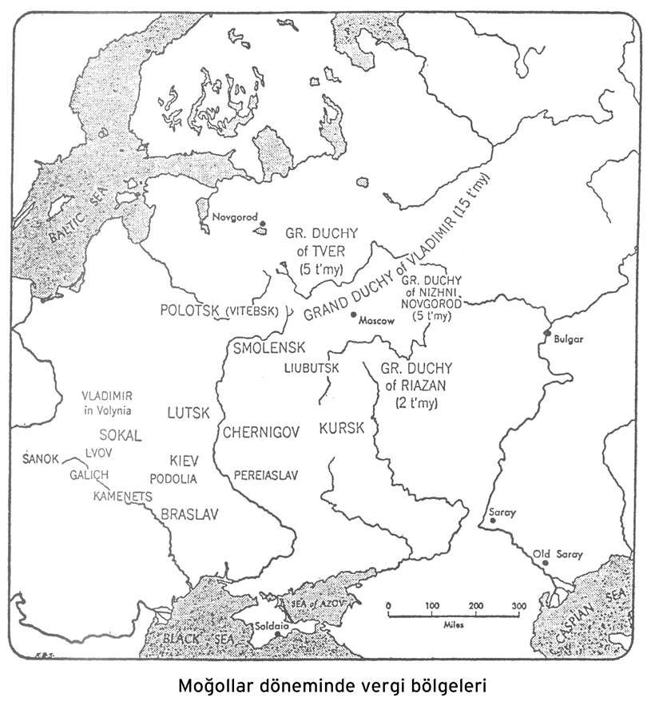
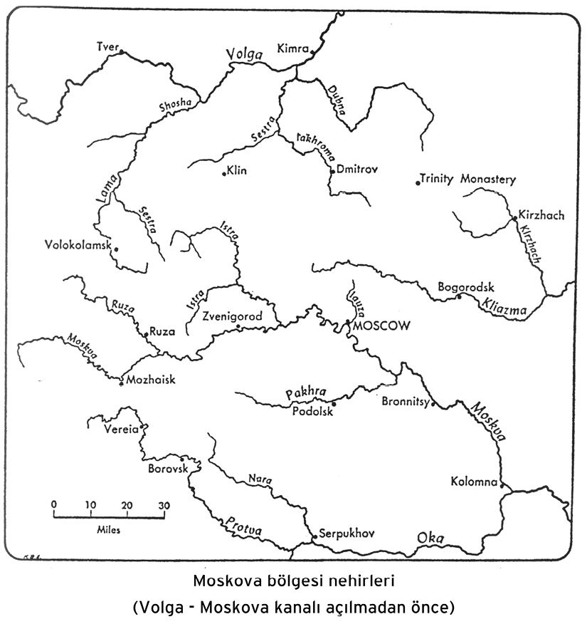
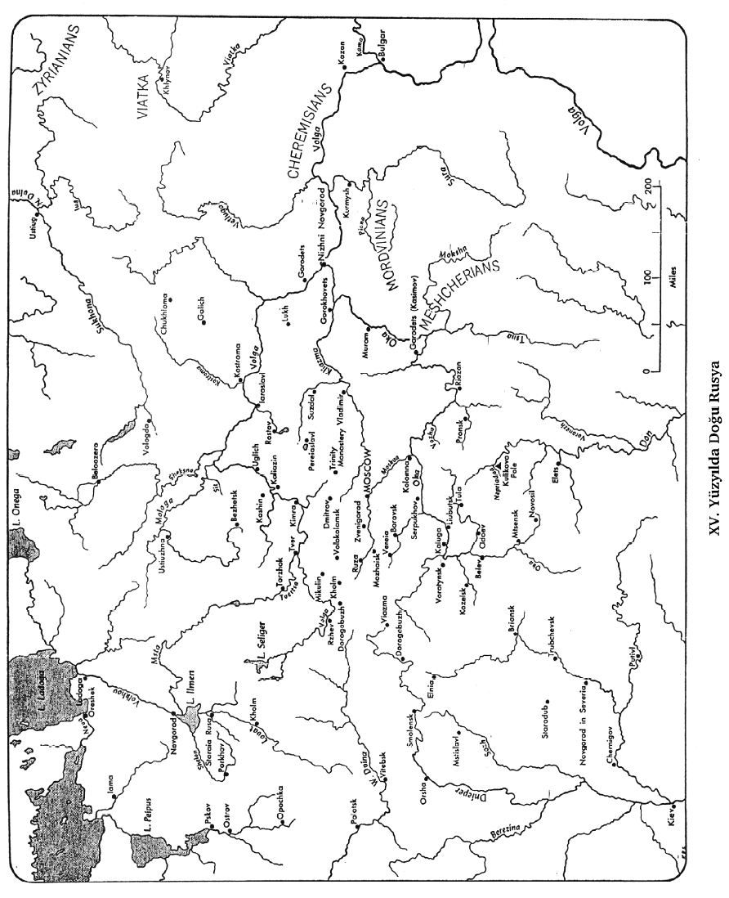

I. BÖLÜM
MOĞOL FETİHLERİ
1. MOĞOL YAYILMASININ DÜNYADAKİ GÖRÜNÜMÜ
XIII. Yüzyıldaki Moğol yayılması, zaman zaman dünyanın kaderini değiştiren tarihteki o tehlikeli ve mukadderata tesir edici patlamalardan biriydi. Dünya tarihi üzerindeki tesiri bakımından V. Yüzyılda Roma İmparatorluğu’nu yıkarak eski dünyaya bir son veren barbar istilâlarına ve VII. Yüzyılda İslâmiyet’in muzaffer ilerleyişine benzetilebilir. Avrasya’nın kültürel ve ekonomik tarihi için haiz oldukları bütün öneme rağmen, Hristiyan Batı’nın İslâmiyet’e karşı bir mukabil hücumu mesabesindeki hareketi temsil eden Haçlı Seferleri, Moğol tufanı bir yana, Arapların hücumundan daha mahdut hedeflere ulaşmış ve daha az toprak kazancına yol açmıştır.
Moğol istilâsının “gerçekten insan neslinin başına gelmiş en korkunç felâketlerden biri olarak tasvir edilebileceği” söylenmiştir.1 Ve gerçekten Moğol zaferinin Çin ve İran gibi eski medeniyetlere sahip ülkelerin tahribi, parlak Harezm (Türkistan) devletinin kısmen çöle dönmesi, gelişmekte olan ileri bir medeniyete sahip Rus şehirlerinin yıkılması ve hepsinden ziyade kavimlerin müstevlilere nerede karşı koymaya kalktılarsa topyekûn katli gibi meyvelerini düşünürsek, Moğolların hem Müslümanlara hem Hristiyanlara saldıkları dehşeti anlamak zor değildir. İstilâ yolları üzerinde katledilen erkek, kadın ve çocukların sayısında vakanüvisler tarafından mübalağa yapılmışsa dahi, Moğol harplerinin toplam insan zayiatı bir çok milyonu bulmuş olabilir.
1Browne 3, s. 4.
Sonuç, dehşet vericidir. Hiçbir yerde ve hiçbir dönemde bu kadar yoğun toplu katiller olmamıştır. Buna rağmen Moğolların karşılarındakilerin de kan dökmekten çekinmediklerini hatırlamak gerekir. Bütün ulvî ideallerine ve parlak medeniyetlerine rağmen hem Ortaçağ Avrupasının hem Ortaçağ Yakın Doğusunun uzun tarihlerinde sadece kavimler arasındaki savaşlarda değil, kavimlerin içindeki dinî ve sair azınlıkların bastırılmasında acıklı bir zalimlik ve barbarlık sabıkası vardır. Dahası, biz, iki dünya harbinin ve biri Kızıl diğeri Kahverengi olmak üzere, iki ihtilâlin şahitleri olarak, teknolojik gelişmenin yanı sıra katliamlarda da oldukça gelişme olduğunu biliyoruz. Aslında bizim “aydınlanmış” neslimiz Çingiz Han ile kumandanlarının rekorlarını kırmıştır. Ve biz, günlük matbuata göre karar vermek gerekirse, İkinci Dünya Harbindeki ölü sayısının elimizin altındaki yeni enerji kaynaklarıyla yapılacak global bir savaşta fersah fersah aşılacağı düşüncesini yavaş yavaş kabul etmiyor muyuz?
Her ne ise, Moğol istilâsı, mâruz kalan ülkeler için kesinlikle dehşet verici bir felâketti. Fakat insanların zulmünün ve hatalarının acıklı sonuçlarını anlatmak tarihçilerin yegâne görevi değildi; tarihçinin savaşların ve ihtilâllerin insanlık ve tarihi üzerindeki bütün tesirlerini araştırması gerekir. İkinci Dünya Savaşı tarihçileri, şimdi sadece kayıpları ve masrafları saymakla değil, harp zamanındaki hükümet ve askeriye siyasetlerinin ve harbin dünyadaki tesirinin şümullü bir araştırmasıyla meşguldürler. Aynı şekilde Moğol yayılmasının tarihçisi hem onun beşeriyete getirdiği korkunç dehşeti hem de Asyalı ve Avrupalı kavimler üzerindeki tesirini düşünmek zorundadır. Eski Dünya’nın büyük kısmının –Pasifik Okyanusu’ndan Adriyatik sahiline, Çin’den Macaristan’a muazzam bir alanın– Moğolların ellerinde kaldığını, güçlerine göre uzun veya kısa bir süre Moğollar tarafından yutulduğunu söylemek mübalağa olmaz. Bir çok güçlü Asyalı ve Avrupalı kavmin tarihinin seyri aniden değişmiş, Moğol idaresinin tesirleri ve daha sonraki artçı etkileri yüzyıllar boyunca Çin’de, İran’da ve Rusya’da hissedilmiştir.
Batılı milletler, Moğolların Rusya’yı istilâsının ilk haberleriyle ve med cezir dalgası Lehistan ve Macaristan’a ulaştığı zaman daha da titrerken,2 Batı Avrupa, Eski Dünya’nın Moğol akınlarının dehşetinden mâsun kalan az sayıdaki köşelerinden biriydi. Buna rağmen, Batı Avrupa’nın siyaseti ve ekonomisinin, başka yerlerdeki büyük değişikliklerin tesirinden uzun süre etkilenmemiş olarak kalması mümkün değildi. Ayrıca, Osmanlı Türklerinin XIV. Yüzyılın sonlarında ve XV. Yüzyılda Batı’ya doğru atılışları, tarihî açıdan söylemek gerekirse, Moğol istilâsının bir yan ürünüydü. Osmanlıların Konstantinopolis’i fethi (1453), Batılı milletleri Moğolların iki yüzyıl önce Kiev’i yağmalamalarından daha çok etkilemişti. Moğol atlıları Viyana kapılarının yakınına kadar gelmiş olmalarına rağmen orada uzun süre kalmamışlardı; fakat Osmanlı Türklerinin Viyana’yı tehdidi XVII. Yüzyılın sonuna kadar sürmüştü. Yâni Moğol saldırısının artçı tesirleri, dolaylı şekilde Batı Avrupa’yı Rusya’yı tâciz ettikleri kadar uzun süre tehdit etmişti. Şimdi İstanbul olarak bilinen Konstantinopolis’in hâlâ Türklerin elinde olduğunu hatırlamak gerekir. Aslına bakılırsa, kaderin garip bir cilvesi olarak, İstanbul bugün Batı dünyasının kalesi gibi düşünülürken “Kutsal Moskova” birçok Batılı için kâfirlerin başkenti ve iğrenç Doğu’nun kalesi olmuştur.
2Moğolların zuhuru hakkında İmparator II. Frederick’in İngiltere kralına yazdığı mektuptan burada bir alıntı veriyoruz: “Dolayısıyla bu korkunç müstevlilerin dehşetinden dolayı bizi korku ve titreme aldı.” Bkz. Matthew Paris, I, 343.
Fakat tarihte görüntüler hep siyah beyaz değildir. Milletlerin her çatışmasında bütün alçaklar bir tarafta, bütün kahramanlar diğer tarafta değildir. İyi kalpli hükümdarlar gibi kötü kalpli hükümdarların siyasetlerine de tesir eden objektif güçler vardır. Tarihî sürecin temel güçleri mümkün olan her kanaldan yararlanırlar. Sör Henry Howorth’un söylediği gibi, Moğollar, lüks içindekileri ve zenginleri yok etmek ve sadece refahın ve rahat şartların himayesinde gelişen güzel sanatları ve medeniyetleri küle çevirmek için “periyodik şekilde gönderilen kanlarında büyük miktarda demir bulunan yokluk ve zor şartlar içinde yetişmiş yaman ve güçlü kuvvetli ırklardan biriydiler... Veba ve kıtlık gibi Moğollar da aslen bir tahrip makinesiydiler; okuması acı ve üzüntü verici bir hikaye de olsa, şayet insanlığın gelişmesinin büyük seyrini anlayacaksak, bu, her şeye rağmen gerekli bir hikayedir.”3 Sör Henry’nin fikrince Moğolların tatbik ettikleri katı usuller, istilâya mâruz kalan yozlaşmış toplumlara yeniden hayat vermek gayesine hizmet ediyordu. O kavimlerin refahı “kof ve gösterişe yönelikti, ihtişamları büyük ölçüde sadece yüzeydeki bir pırıltıydı ve hastalıklı vücudun acı bir ilaca ihtiyacı vardı; yaklaşmakta olan nüzul ancak bolca hacamat yapılarak önlenebilirdi, ahlâken sükut etmiş olan şehirlere tuz ekilmeliydi ve sâkinlerine saf kalmış çölden gelen güçlü kandan bol miktarda taze aşı yapılmalıydı.”4
Bu, yüzyıllar boyunca tarihte savaşların sosyolojik fonksiyonlarının yorumlanmasında kullanılan “kan ve demir” tezinin bir örneğidir. Fakat Moğol yayılmasının tarihî rolünün daha müspet bir veçhesi de vardır. Moğollar, Avrasya’nın ekseri kısmını tek bir idare altında birleştirerek, nispeten sadece kısa bir dönem için olsa bile, Çin’den Akdeniz’e uzanan büyük kara yolunun güvenliğini sağlamayı başarmışlardı. Pax Mongolica, tabiatıyla Çin, Orta Doğu ve Avrupa arasında bir derecede kültür mübadelesine sebep olmuştu. “Matbaacılığın, pusulanın, ateşli silahların ve sosyal hayatın daha bir çok teferruatının Avrupa’da icat edilmediklerine, bilâkis Moğol nüfuzu sayesinde Uzak Doğu’dan ithal edildiklerine benim şahsen hiç şüphem yok” diyor Howorth.5 Türk tarihçi A. Zeki Velidi Togan’ın ifade ettiği gibi “Türklerin ve Moğolların istilâsı... cihanşümul bir felâket değildi. Tarihte yeni yörelerin medeniyetin yörüngesine girdiği bir anı [un moment historique] vurguluyordu.”6
5A.g.y.
6A. Zeki Velidi [Togan], “Considérations sur la collaboration scientifique entre l’Orient islamique et l’Europe,” REI (1935), s. 269.
İçtimaî olarak Moğol yayılması Avrasya göçebelerinin Batı’ya göçlerinin son büyük dalgasıydı. Moğollar İskitlerin, Sarmatların ve Hunların izinden gitmişlerdi;7 Karadeniz bozkırlarındaki öncüleri Peçenekler ve Kumanlardı.8 VII. Yüzyıldaki Arap yayılması başka bir göçebe grubunun benzer atılışıydı.
Moğolların fethettiği toprakların muazzam oluşunu göz önüne alarak, göçebe yayılmacılığının Moğol aşamasının bütün bu atılımların zirvesini teşkil ettiğini söyleyebiliriz. Yine de Temuçin’in (Çingiz Han) birleştirdiği aslî Moğol kabilelerin sayısı, Peçeneklerin ve Kumanlarınkinden fazla değildi. Moğol atılımının olağanüstü başarısının sebepleri nelerdi? Nüfusu bir milyondan fazla olmayan bir kavim, toplam nüfusu yüz milyon civarında olan bir çok başka kavmi nasıl fethetmişti? Moğol savaşçısının teşvik unsuru, savaş ganimetinden alacağı paydı, ama bu husus aynı derecede diğer göçebe kabilelerin savaşları için de geçerliydi. Moğolların başarısının esas sebepleri arasında düşmanlarının hazırlıksız oluşu, Moğol olmayan dünyanın birlik içinde olmayışı ve yabancıların Moğol atılımının kararlı karakterini anlayamaması vardı. Diğer bir sebep ise, Çingiz Han’ın ordu teşkilatını mükemmel hâle getirmiş olmasıydı. Barut ve ateşli silahların icadından önce, pek az millet taktik ve strateji bakımından Moğol süvarilerine eşdeğerde olan veya onların maneviyatı ve fethetme azmi ile rekabet edebilecek bir kuvvet toplayıp idame ettirebiliyordu.
XIII. Yüzyıl başlarında Moğollarda saldırgan bir enerjinin âniden patlak vermesi hâlâ psikolojik bir muamma olarak durmaktadır. Fen bilimlerinden bir benzetme yaparsak, bir nevi ruhî infilak meydana gelmişti. VII. Yüzyıldaki Arap yayılmasının başlangıçtaki gücünün psikolojik olarak yeni bir dinin heyecan ve fanatizminden kaynaklandığı genel kabul görmüştür. Fakat Çingiz Han büyük dinlerden birine mensup değildi; ona hem Müslümanlar hem Hristiyanlar tarafından putperest deniyordu. Onun din siyaseti bütün inançlara karşı müsamaha idi. Moğolların geleneksel inançları şamanizmin ve Göğe hürmetin bir karışımıydı. Çingiz Han, hayatının bütün kritik anlarında “Mengü Mavi Göğe” yakarıyordu. Fakat şamanları devlet işlerine karıştırtmıyordu. Bu yüzden biz, Çingiz Han’ın şaman “dinine” mensup olduğunu söyleyemeyiz; aksine o, Gök ile kendisi arasındaki rabıtanın şahsî olduğuna inanıyordu. Ve bu inanç bir görev hissi ile birleşmişti: Cihanşümul barışı sağlamak için dünyayı fethetmek. Onun mesajı buydu ve dahilî kavgalardan ve sürekli savaşlardan yorulmuş olan Müslüman Orta Doğu ve Hristiyan Batı’nın milletlerinden en azından bazıları etkilenmiş olmalıdırlar. Bir XIII. Yüzyıl tarihçisi olan Gregory Ebul Ferec, Çingiz Han’ı yönlendiren düşünce hakkında şu yorumu yapmıştı: “Bunun gibi davranışlarda Moğol’un Tanrı’ya inancı kendini göstermektedir. Onlar, bu inançla fethettiler ve fethetmeye devam edeceklerdir.”9
9Ebul Ferec, s. 354.
Özetlersek, Çingiz Han’ın cihan devleti ideali ile karışmış dinî hissiyatlardan ilham almış olduğunu söyleyebiliriz. Fakat onunkinin bir devlet dini olduğunu söyleyemeyiz, çünkü psikolojik olarak onunla Tanrı arasındaki rabıta doğrudandı, herhangi bir yerleşmiş din vasıtasıyla değildi. Hatta Gibbon buna dayanarak Çingiz Han’ın dinini “saf bir deizm ile mükemmel bir müsamahadan meydana gelen bir sistem” olarak tanımlamayı mümkün görmüştü. Onu Çingiz Han’ın yasaları ile mukayese ederek şöyle demektedir: “Bizim hayranlığımızı ve alkışımızı en çok hak eden Çingiz’in dinidir.”10
10 Gibbon, 2, 1203.
2. MOĞOL SALDIRISI ARİFESİNDE MÜSLÜMAN VE HIRİSTİYAN DÜNYALARI
1095 yılının Kasım ayında Fransa’da Clermont’daki kilise konseyinde Batı dünyasının ruhanî lideri olan papa II. Urban, Hristiyan milletlere bunun Tanrı’nın iradesi olduğunu temin ederek onları kâfirlere karşı “salibi almaları” ve Kutsal Toprakları “kurtarmaları” için teşvik etti. Bir kaç hafta içinde tüm Avrupa bunu duymuştu ve çok geçmeden bu saldırı ile hedeflenen Doğu Akdeniz’deki Müslümanlar da Hristiyanların planlarını öğrenmişlerdi. Bu, Orta Çağ’da Hristiyanlarla Müslümanların dünyaları arasında yakın bir bağın olduğu bir andır. İster barışın tadını çıkarsınlar ister savaşa tutuşmuş olsunlar, bu iki dünya birbiri ile bağlantılı idi. Herkesin bildiği üzere Birinci Haçlı Seferi başarılı oldu; 1099’da Kudüs düştü. Haçlı seferinin yüce hedeflerinden ne zaman bahsetsek, bizim unutmaya meylettiğimiz husus Kutsal Şehrin zaptı üzerine yapılan korkunç katliâmdır. Chartres’li Fulcher’e göre haçlılar kadınlara ve çocuklara bile acımamışlardı. Başka bir vakanüvis, Agiles’li Raymond “Mabet’de ve Süleyman’ın kapısında askerler dizlerine ve dizginlere kadar gelen kan içinde at sürüyorlardı... Şehir cesetler ve kanla dolmuştu.” Ve yine de “bu yerin kâfirlerin kanı ile dolması o kadar uzun süre onların küfürleriyle kirlendiği için Tanrı’nın muhteşem bir hükmüdür” diye düşünüyordu.11 Şehir 1187’de Müslümanlar tarafından geri alındı; Üçüncü Haçlı Seferi şehri onlardan geri almayı başaramadı. Venedik’in karmaşık bir diplomasi oyunu ve ticarî emperyalizminin sonucu olarak Dördüncü Haçlı Seferi Müslümanlara karşı değil de Bizans İmparatorluğuna karşı yönlendirildi. Kudüs “kurtarılmadı,” ama onun yerine Konstantinopolis alındı ve haçlılar tarafından acımasızca yağmalandı (1204).12
11Chartres’li Fulcher, E. McGinty tercümesi, Pennsylvania Üniversitesi, “Translations and Reprints”, 3. seri, S. 69; A.C. Krey’in The First Crusa de (Princeton University Press, 1921), s. 261’de naklettiği Agiles’li Raymond. Her iki alıntı da Monte tarafından sayfa 342’de zikredilmiştir
12 Bkz. H. Grégoire, “The Question of the Fourth Crusade to Constantinople,” Byzantion, 15 (1940-41), 158-166.
Hristiyanlar Müslümanlarla savaşır ve Batı’nın Hristiyanları Yakın Doğu’nun Hristiyanlarına saldırırken, Uzak Doğu’da fırtına bulutları toplanıyordu. 1206’da çok uzaklardaki Moğolistan’da klan liderlerinin meclisi (kurultay) içlerinden birini, Temuçin’i Cihan İmparatoru ilan etmiş ve ona yeni bir ad verip Çingiz Han demişti. Moğolların haçlı seferi başlamak üzereydi.
Hem Müslümanlar, hem de Hristiyanlar, bu önemli olayın hiç farkına varmadılar. O tarihte Batı’da hiç kimse Moğolistan’ın mevcudiyetinden haberdar değildi. MS 1241 gibi geç bir tarihte bile tahsilli bir Avrupalı “dünyanın tamamında sadece yedi iklim var; Hintlilerin, Habeşlerin veya Arapların, Mısırlıların, Kudüslülerin, Yunanlıların, Romalıların ve Fransızlarınki” diye iddia ediyordu. Bu sebepten dolayı Moğolların gerçekten Uzak Doğu’dan geldiklerine inanmayı reddettiler.13
13 Matthew Paris, I, 348.
Müslüman Orta Doğu tabiî ki Moğolistan’a Avrupalı Batı’dan daha yakındı. Harezmli tüccarlar Doğu Türkistan’daki Uygurlarla ticaret yapıyorlardı ve Uygur tüccarlar Moğollara kervan gönderiyorlardı. Her şeye rağmen 1206 kurultayının kararlarının Harezm’de duyulmasına kadar bir çok yıl geçti ve bu kararların meşum önemi bile hemen fark edilmedi.
O tarihte Harezm İmparatorluğu Orta Doğu’daki en güçlü Müslüman devletti. Harezmşahın otoritesi Türkistan’ın ve İran’ın büyük kısmında tanınıyordu.14 Daha güneyde Irak’taki Abbasi Halifeliği çöküş halindeydi. Mısır ve Suriye meşhur Salahaddin’in 1191’de tesis ettiği Eyyubi hanedanının sultanları tarafından idare ediliyordu. Küçük Asya’da Selçuklu sultanlığı en güçlü devletti.15 Bu büyük devletlerin arasına sıkışıp kalmış, içlerinde Hristiyan Gürcistan ve Ermenistan krallıklarının bulunduğu bir çok daha küçük devlet vardı. İran’da, Bir kolu Lübnan’da bulunan kendine has bir İslamî grup, taraftarlarının az sayısı ile kıyas kabul etmeyen bir nüfuza ve güce sahipti. XI. Yüzyılın sonlarında kurulmuştu ve İslamiyet’in Şii kolundaki İsmailî denen harekete mensuptu. Gruptakiler sıkı bir disiplinle ve haçlıların “Dağın Yaşlı Adamı” (Şeyh’ul Cebel) dedikleri şeyhlerine olan sadakatleri ile birbirlerine bağlıydılar. Şeyhin muhalifleri ile hesaplaşmada temel metodu suikast idi. Onu kızdıran hiç kimsenin ajanlarının hançerlerinden güvenlikte olmadığı görülüyor; fanatizmleri adlarının ve bizim “assassin” tâbirimizin türediği haşiş kullanımı ile artıyordu.16 Haşhaşiler Abbasilere, haçlılara ve Selçuklulara karşı sürekli bir yeraltı savaşı yürütüyorlardı. Kudüs’ün seçimle başa gelen bir kralı, (1192’de öldürülen) Conrad ve hükümet idaresi hakkında çok dikkati çekici bir eser olan “Siyasetnâme”nin yazarı, 1092’de katledilen Selçukluların meşhur veziri Nizamülmülk kurbanları arasındaydılar.17
14 Harezm imparatorluğu hakkında bkz. W. Barthold, “Kwarizm-shah”, EI, 2, 913-914;aynı yazar: Turkestan, bölüm 3; Tolstov, Po sledam, s.273-289; Kievan Russia, sayfa 236 ile mukayese ediniz. Harezm tarihinin kaynaklarının gözden geçirilmesi için bkz. Togan, s. 206-207.
15 Selçuklular hakkında bkz. Gordlevsky; Kievan Russia, s. 235-236 ve 361-362 ile mukayese ediniz. Selçuklu tarihinin kaynaklarının gözden geçirilmesi için bkz. Togan, s. 204-206
16 İsmailîler ve Haşhaşiler hakkında bkz. “Assassins”, EI, I, 412-422; C. Huart, “Ismailiya”, EI, 2, 249-552; W. Iwanow, Studies in Early Persian Ismailism (Leyden, 1948); aynı yazar, The Alleged Founder of Ismailism (Bombay, 1946).
17 Siyãset-name; ayrıca bkz. K.E. Schabinger, “Zur Geschichte des saldschuqen Reichskanzlers Nizamu’l Mulk”, Historisches Jahrbuch, 62 (1949), 250-283.
Hristiyanların dünyası da Müslümanlarınkinden daha fazla birlik içinde değildi. Batı’da iki müessese cihanşümul olmak iddiasındaydı: Roma Katolik Kilisesi ve Kutsal Roma-Cermen İmparatorluğu. Fakat ekseriyeti Rum Ortodoks olduğu için otoriteleri Doğu Avrupa’nın tamamında tanınmıyordu. Ayrıca aslî Roma İmparatorluğu’nun tarihî bir uzantısı olan Bizans İmparatorluğunun merkezi 1204’e kadar Konstantinopolis idi.
Boğaziçi’ndeki Rum İmparatorluğu yıkılmadan ve orada Latin İmparatorluğu kurulmadan önce bile Roma’daki papanın otoritesi haçlı seferleri sayesinde muazzam şekilde artmıştı. Papaların şimdi ellerinin altında nihayet istedikleri gibi kullanmak arzusuna kapıldıkları bir ordu vardı.18 Haçlı seferleri sadece Müslümanlara karşı değil, aynı zamanda mutezililere (Rum Ortodoks) karşı sevk edildikleri için tedrîcen yeni bir anlam kazandılar. Konstantinopolis’e yapılan saldırı Roma Katolikliğinin ileri atılışının güney yolunu temsil ediyordu; aynı zamanda Alman misyonerler ve şövalyeler tarafından Baltık yöresinde bir kuzey yolu açılmıştı. 1202’de Livonya’da Kılıç Taşıyanlar Tarikatı kuruldu. Bunu Prusya’daki Töton Tarikatı takip edecekti (1229).19 Böylece Ortodokslara karşı bir haçlı seferi süratle vücut buluyordu. Bununla birlikte 1209’da dahildeki “sapkınları”, Albigenleri ve Katharları hedef alan dahilî haçlı seferi başladı.20 Papanın otoritesi süratle artmak temâyülündeyken Roma ile Almanların “Roma İmparatorluğu” arasındaki anlaşmazlıklar, bu büyümenin altını büyük ölçüde oyuyordu. İmparatorla papalar arasında süregiden çatışma her iki tarafın kuvvetini tüketti. Frederick Barbarossa (1155-90) ile papa arasındaki dramatik mücadele, imparatorun muhteris planlarının mağlubiyeti ve uzlaşma ile son buldu. Frederick’in oğlu Conrad en azından görünüşte papa ile olan mütarekeyi sürdürdü, ama onun oğlu II. Frederick’in (1215-50) hükümdarlığı zamanında kilise ile imparatorluk arasında yeni bir şiddetli çatışma meydana geldi. İmparator bundan başka güçlü tâbilerinden bazılarının ve bazı şehirlerin muhalefeti ile karşı karşıyaydı; imparatorluk sınırlarının haricinde Fransa ve İngiltere gibi güçlü devletler de vardı.
18 La Monte, s. 335, 413.
19 1237’de iki tarikat birleşti ve Töton Tarikatı kontrolü ele aldı; bkz. Kievan Russia, s. 235.
20 Albigenler ve Catharlar hakkında bkz. La Monte, s. 411, 413-416, 505; D. Obolensky, The Bogomils (Cambridge, Cambridge University Press, 1948), s. 156, 157, 215, 216, 242-246, 286-289. Bu “sapkınlıklar” Maniheizm’in bir Batı uzantısını teşkil ediyorlardı. Maniheizmin yeni bir araştırması için bkz. H. C. Puvech, Le Manichéisme, son fondateur, sa doctrine (Paris, 1949).
Müslüman ve Hristiyan dünyaları arasındaki siyasî ve dinî ayrılıklardan başka, Filistin’de her ikisi arasındaki çatışmalar, Moğolistan’dan gelecek olan gibi herhangi bir dış tehlikeye karşı direniş potansiyellerini zayıflatıyordu. Batı’daki feodalizm ile Yakın ve Orta Doğu’daki ikta sistemi arasında sosyal organizasyon bakımından birçok benzerlikler vardı.21 İmparatorlar ve krallar güçlü bir aristokrasi tarafından desteklenmekle beraber zaman zaman başına buyruk tâbilerinin kendilerine aşırı gelen taleplerine dur demek zorunda da kalıyorlardı. Her iki durumda idarenin türüne bağlı olarak köylüler ya efendileri ya da vergi tahsildarları tarafından eziliyorlardı. Şehirler yükselişe geçmişti; zanaat ve ticaret Harezm’den İtalya’ya kadar hem Avrupa’da hem Orta Doğu’da gelişiyordu.22 Eğitim ve teknolojiye gelince, Avrupa’daki sözde “XII. Yüzyıl Rönesansına” rağmen, o zamanlar Müslüman Doğu muhtemelen Batı’dan hâlâ daha yüksek bir kültür seviyesindeydi. Bununla birlikte hem Avrupa’da hem Yakın ve Orta Doğu’da hayat sadece az sayıdaki kişi için rahattı. Şarklı hükümdarların despotça kaprisleri, bu az sayıdakilerden bazılarını bile etkiliyor, Batı’daki hükümdarlar da zorba olabiliyorlardı. Bir çok müreffeh İtalyan şehri imparatorlar tarafından yıkılmıştı ve iç haçlı seferi başladığı zaman hem gerçek “sapkınlar” hem de öyle olduğundan şüphelenilenler ayırım yapılmaksızın öldürülmüşler, masumların ruhlarını kurtarmak görevi ise Tanrı’ya bırakılmıştı.
21 İkta hakkında bkz. M. Sobernheim, “Ikta”, EI, 2, 461-463; Siyāset-name, bölüm 5, 22, 23 ve 27. M. Fuad Köprülü, “Le Féodalisme Turc-Musulman au Moyen-Age”, Belleten, 5 (1941), 335-350; A. N. Poliak, Feudalism in Egypt, Syria, Palestine, and the Lebanon, 1250-1900 (Londra, The Royal Asiatic Society, 1939; Minorsky, Tadhkirat, s. 27-28 ile mukayese ediniz.
22 Harezm el sanatları ve sanayisi hakkında bkz. W. Barthold, Istoriia kulturnoi zhizni Turkestana (Leningrad, 1927), s. 74-81; A. Iu. Iakubovsky, “Feodalnoe obshchestvo srednei Azii i ego torgovlia s vostochnoi Evropoi v x-xv vekakh”, Materialy po istorii Uzbekskoi, Tadz hikskoi i Turkmenskoi S.S.R. (Leningrad, 1933), I, 4-9, 27-36; Tolstov, Po sledam, s. 285-287.
Hem Batı’da hem Yakın ve Orta Doğu’da “sapkınlıkların” süratle yayılması sıradan insanların kaderlerinden memnun olmayışlarının kendi başına bir işaretidir. Bu husus, hem Hristiyan hem Müslüman dünyalarının dahilî zayıflığının bir veçhesini vurguluyordu.
Meseleyi karmaşıklaştırmamak için şimdiye kadar Rusya’ya bir atıfta bulunmaktan sakındım. Okuyucu, XII. Yüzyılın sonlarında ve XIII. Yüzyılın başlarında Rusya’daki siyasî, iktisadî ve kültürel vaziyetin tesirini bu serinin bundan önceki kitabında bulacaktır.23 Batı Avrupa gibi Rusya’nın da prensler arasındaki siyasî anlaşmazlıklara rağmen sürekli bir şekilde siyasî ve kültürel kazançlar edindiğini burada söylemek yeterlidir. Ayriyeten serbest siyasî kurumları Doğu’nun hükümdarlıkları ile feodal Batılı devletler arasındaki konumunu kendine has bir hâle getirmişti. Bütün bunlara rağmen prenslerinin öldüresiye mücadeleleri ve Batı’dan gelen haçlı seferinin artan tehlikesi, Rusya’nın kendisini Doğu’dan basacak olan seli durdurmak şansını ciddi şekilde tehlikeye sokuyordu.
23 Kievan Russia, bölüm 8-10.
3. XII. YÜZYILIN SONLARINDA MOĞOL KABİLELERİ
Moğolistan, Mançurya’dan Macaristan’a kadar uzanan Avrasya bozkır kuşağının en doğudaki bölümü olarak kabul edilebilir. Bu bozkır kuşağı, çok eski çağlardan beri İranî, Türk, Moğol ve Mançu soyundan gelen çeşitli göçebe kabilelerin yurdu olmuştu.
Göçebe toplumu çok hareketli ve göçebelerin siyaseti çok dinamikti. Göçebeler, yerleşmiş komşu kavimleri sömürmek ve kara ticaret yollarını kontrol etmek gayretiyle zaman zaman çok uzak ülkelere hücum etmeye muktedir devâsâ ordular halinde birleşirlerdi.24 Fakat çoğu halde kurdukları imparatorluklar pek sağlam değildi ve yaratıldıkları kolaylıkla da dağılırlardı. Göçebelerin böyle birlik olduğu ve güçlerinin belli bir kabilede veya kabileler grubunda toplandığı dönemler, gücün parçalandığı ve siyasî birliğin olmadığı dönemlerle yer değiştirirdi. Bozkır kuşağının batı bölümünü teşkil eden Karadeniz bozkırlarının önce İranîler (İskitler ve Sarmatlar)25 ve sonra peş peşe Türk kavimleri (Hunlar, Avarlar, Hazarlar, Peçenekler ve Kumanlar)26 tarafından kontrol edildiğini hatırlamak gerekir. Önceki dönemlerde Moğolistan’ı kontrol edenler de Türklerdi: Çok eski zamanlardan takrîben MS II. Yüzyıla kadar Hunlar; VI. Yüzyıldan VIII. Yüzyıla kadar Doğu Türkleri; VIII. Yüzyılın sonlarından IX. Yüzyılın başlarına kadar Uygurlar. İhtimaldir ki Türklere seferlerinin bir çoğunda Moğol unsurları katılmışlardı ve Moğollar zaman zaman nisbeten güçlü kendi devletlerini (I. Yüzyıldan IV. Yüzyıla kadar Doğu Moğolistan’da Siyenpiler; XI. Yüzyılda Moğolistan, Mançurya ve Kuzey Çin’de Kitanlar) teşkil etmeye muvaffak olmuşlardı;27 fakat bir bütün olarak bakıldığında Çingiz Han’dan önce Moğollar bozkır siyasetinde genelde önde gelen bir rol oynayamamışlardı.
24 Göçebelerin tarihteki rolü hakkında bkz. W. Kotwicz, “O role ludow koczowniczych w historji”, Pamietnik IV. Zjazdu historikow polskich w Poznaniu (1925); A. J. Toynbee, A Study of History (Oxford, Oxford University Press, 1934; 2. edisyon, 1935; 3. tab, 1945), 3, 393, 395, 399-402, 421, 431; G. Vernadsky, “The Eurasian Nomads and Their Art in the History of Civilization”, Saeculum, I (1950), s. 74-85; Age., “Sarmat. Hintergrund”, s. 340-392.
25 M. I. Rostovtzeff, Iranians and Greeks in South Russia (Oxford, Clarendon Press, 1922); Ancient Russia, bölüm 2 ve 3. Başka referanslar için bkz. G. Vernadsky, “Sarmat. Hintergrund”, s. 340-346.
26 Bkz. Moravcsik; F. Altheim, Attila und die Hunnen (Baden-Baden, 1951); Ancient Russia, bölüm 4-6; Kievan Russia, s. 224-225.
27 Bkz. Mc Govern; W. Barthold, Turkestan; Wittfogel, özellikle ek 5 (Qara-Khitay); W. Eberhard, “Kultur und Siedlung der Randvölker Chinas”, TP, 36, İlâve (1942).
XII. Yüzyılda Moğolistan’da merkezî bir devlet yoktu. Bir çok kabile ve klan grubu, ülkenin çeşitli yörelerinde aralarında kesin bir sınır çizgisi olmaksızın yaşıyordu. Türkçenin de kullanıldığı batı bölgesi istisna olmak üzere ekserisi Moğolca konuşuyordu. Çok eskide kalmış olan etnik geçmişlerinde hem Türklerde hem Moğollarda güçlü bir İranî kan karışımı vardı. Kafkas ırkına mensup insanların çok eski zamanlardan beri Orta Asya’da ve Çin dahil olmak üzere Doğu Asya’da yaşadıkları tahmin edilmektedir. G. Grum - Grjimaylo’ya göre Çin tarihlerinde bahsolunan Dinling adı bu ırka ait olmalıdır.28 Bu biraz müphem geçmişe rağmen, daha kesin bir ifadeyle Hristiyanlıktan önceki son yüzyıllarda, tarihî merkezleri Harezm bölgesi olan kuzey İranîlerin, o merkezden hem batıya hem doğuya doğru yayıldıkları söylenebilir. Hem lengüistik hem arkeolojik bulgular bu yayılmaya şahadet etmektedir. Yenisey nehri boyundaki kayalara kazınmış olan atlı resimleri, şaşırtıcı bir şekilde Kırım’da duvar resimlerinde tasvir edilen Alan süvarilerine benzemektedirler.29 Moğolistan’da bulunmuş olan VIII. Yüzyılın başlarına ait bir kitabede Türkler ile Aslar (Alanlar)30 arasındaki savaşlardan bahsedilmektedir.31 Daha sonra Moğol milletinin “sağ kanadına”, yani Batı Moğol kabileleri arasına dahil edilmiş olan “Asudları” (yâni Aslar) görüyoruz.32
28 Grum-Grzymailo, 2, 5-27; Menges, s. 3. P. A. Boodberg’in araştırması “Ting-ling and Turks”, Sino-Altaica, 2, No. 5 (Berkeley, Calif., 1934) elime geçmedi.
29 Bkz. M. Rostovtzeff, “The Sarmatae and the Parthians”, CAH, 11, 100; A. M. Tallgren, “Inner Asiatic and Siberian Rock Pictures”, ESA, 8 (1933), 174-210, özellikle s. 204. A. P. Okladnikov,” Kon’i znamia na lenskikh pisanitsakh”, Tiurkologicheskii sbornik (Moskova ve Leningrad, 1951), I, 143-154.
30 Asların ve Alanların kimliği hakkında bkz. Ancient Russia, s. 105-106; H. W. Bailey, “Asica”, TPS (1945), s. 1-2.
XII. Yüzyılda Moğolistan’da yaşayan kabilelerin etnik menşei ne olursa olsun, hepsi hayat tarzları ve sosyal teşkilatları bakımından birbirine benziyordu ve bu bakımdan aynı kültür alanına mensup oldukları söylenebilir. Fakat o tarihte bu kabilelerin ve klanların bütününün ortak bir adı yoktu. Moğol adı aslında sadece küçük bir kabileye atıfta bulunuyordu. Bu kabile, XII. Yüzyılın başlarında önem kazanmış, ama yüzyılın ortasında komşuları Tatarlar tarafından mağlup edilip neredeyse tamamen dağılmıştı. Bunun üzerine Tatarlar Moğolistan’ın önde gelen kabilelerden biri olmuşlardı.33 Merkitler, Kerayitler ve Naymanlar diğer üç önemli kabileydiler.34 Batı Avrupa’da Tatar kelimesinin Tartar şeklinde genel bir ad olarak bütün Moğol müstevlilere şâmil edildiği hatırlanacaktır. Adın bu şekli kısmen aslî adın klâsik Tartarus’a35* olan benzerliğine yapılmış bir imadır. Vakanüvis Matthew Paris şöyle izah etmektedir: “Şeytanın o iğrenç ırkı, Tatarlar... Tartarus’dan boşanmış ifritler gibi saldırdılar (böylece Tartarus’un sâkinleriymiş gibi Tartar denmesi yerindedir)”36 Ad Rusçada asıl şekliyle (Tatary) muhafaza edilmiştir. Rusya’yı istila eden Moğol ordularındaki askerlerin önemli bir kısmı Moğolların idaresindeki Türklerdi. Bu yüzden Tatar adı Rusya’da nihayet Moğol istilasından sonra oraya yerleşen Türk kabilelerinden Kazan Tatarları ve Kırım Tatarları gibi bazılarına verilmiştir. Modern çağlarda Rus şarkiyatçıları bütün Türk kavimlerini belirlemek için Türk-Tatar adını yerleştirmişlerdir. Moğol adına gelince tarihin bir cilvesi sayesinde, geleceğin imparatoru Çingiz Han’ın tesadüfen Moğol klanlarından birine mensup olmasından dolayı unutulmaktan kurtulmuştur. Onun iktidara gelmesiyle Moğolistan’ın bütün kabileleri onun önderliğinde birleşmiş ve Moğollar diye bilinen yeni bir “millet” yaratılmıştı. Kolaylık olsun diye, XII. Yüzyıldan bile bahsederken bütün bu kabilelere Moğol diyeceğiz.
33 Tatarların Tunguzlardan ziyade Moğol grubuna mensup oldukları P. Pelliot’un görüşüdür; bkz. Grousset, s. 25.
34 Pelliot’a göre Kerayitler ve Naymanlar Türk ve Moğol unsurlarının bir karışımını teşkil ediyorlardı; Bkz. Grousset, s. 28. Batı Moğolistan kabilelerinin antropoloji ve etnolojisi hakkında bkz. Grum-Grzymailo, 3, kısım 1 ve kısım 2, bölüm 1.
Önde gelen Moğol kabileleri bozkır kuşağında yaşarken başka kabile veya klanların bozkırların kuzey kenarında veya hatta Baykal, Yukarı Yenisey ve Altay bölgelerinde orman kuşağının tam içinde yaşadıklarını kaydetmek gerekir. Moğolların erken geçmişini daha iyi anlamak için aslî Moğol kabilelerini orman kabileleri ve bozkır kabileleri diye ayırmak çok önemlidir.37 Bozkır kabileleri bekleneceği üzere daha ziyade at ve sığır besleyicileriydiler; avcılık ikinci meşgaleleriydi. Orman kabilelerine gelince, onlar genellikle avcı ve balıkçıydılar; içlerinde çok becerikli demirciler de vardı. Moğol kabilelerinin bu iki bölümü iktisadî bakımdan birbirlerini tamamlıyorlardı. Bozkırlılar özellikle orman kuşağı sâkinlerinin temin ettiği Sibirya kürkleri ile ilgileniyorlardı; silahlarını yaptırmak için usta demircilerin hizmetlerine de ihtiyaçları vardı.
37 Bkz. Vladimirtsov, s. 33-36.
Dinî inanç bakımından orman kabileleri genellikle şamanisttiler; bozkırlılar ise şamanizmin tesiri altında bulunmakla beraber evvelemirde Göğe tapıyorlardı; her iki grup içinde ateş kültü çok yaygındı. Her iki grubun totem hayvanları ve tabuları vardı. Her iki grup da bazıları insana benzeyen bazıları ise hayvanları temsil eden kabaca yontulmuş heykelcikleri kullanıyorlardı. Bunlar ilk Avrupalı seyyahların söylemek alışkanlığında oldukları gibi “put” veya kelimenin genel anlamıyla “fetiş” değillerdi, sadece hürmet edilen dinî veya sihirli sembollerdi; ongon olarak biliniyorlardı.38
38 “Ongon” hakkında bkz. Rashid I, s. 24, 198; Vladimirtsov, s. 50; D.K. Zelenin, Kult ongonov v Sibiri (Moskova ve Leningrad, 1936). Türklerin Moğollarınkine yakın olan eski dini hakkında bkz. Schmidt. Ayrıca Bkz. N. Veselovsky, “O religii tatar po russkim letopisiam”, ZMNP, N. S., 64 (1911), 81-101; Poppe, “Opisanie.”
Orman kabileleri arasında şamanlar nihayet büyük bir siyasî otorite sahibi oldular. Bozkır ortamında ise içlerinde Budizmin ve Nesturî Hristiyanlığın39 XII. Yüzyıl içinde bir çok taraftar bulduğu din adamı olmayan güçlü bir aristokrasi süratle gelişiyordu. Vakanüvis Ebul Ferec’e göre Kerayit kabilesinin tamamı XI. Yüzyıl gibi erken bir tarihte Nesturî olmuştu.40 Nesturî inancı Moğolistan’a Türkistan üzerinden Yakın Doğu’dan gelmişti. VIII. Yüzyılın ortalarında (bugün Sinkiang diye bilinen) Doğu Türkistan’a yerleşmiş ve nispeten yüksek bir kültür seviyesine ulaşmış bir Türk kavmi olan Uygurlar, Yakın Doğu ile Moğolistan arasında bir çok başka hususlarda olduğu gibi bu münasebetle de aracılık yapıyorlardı.
39 Orta ve Doğu Asya’da Nesturîliğin yayılması hakkında bkz. W. Barthold, Zur Geschichte des Christentums in Mittel-Assien bis zur mongolischen Eroberung (Tübingen ve Leipzig, 1901); P. Y. Saeki, The Nestorian Documents and Relics in China (Tokyo, 1937); J. Dauvillier, Le Droit chaldéen (Paris, 1939; elime geçmedi).
40 Pelliot bu hususta Ebul Ferec’in hikayesinin otantikliğinden şüphe duymaktadır; Bkz. Grousset, s. 29.
XII. Yüzyılın Moğol toplumu ataerkil klanlara dayanıyordu.41 Moğol klanı (obog), baba tarafından akrabalardan müteşekkildi ve dışarıdan evleniliyordu; klan üyeleri arasından evlenmek yasaktı ve böylece gelinler başka klanlardan isteniyor veya satın alınıyorlardı. Çokeşlilik Moğollar arasında geleneksel bir müessese olduğundan ve her biri bir çok kadına ihtiyaç duyduğundan dolayı mesele daha da çapraşıklaşıyordu. Bütün bunlar çoğu kez müstakbel eşlerin kaçırılmasına ve klanlar arasında bir çok çatışmaya sebep oluyordu. Barışı sağlamak için bazı klanlar düzenli bir değiş-tokuş sistemine dayanarak çocuklarını evlendirmek için karşılıklı olarak anlaşmalar yapmışlardı. Ailelerin tabiî şekilde büyümesiyle bir klan bir birim olarak kalamayacak kadar büyüdüğü zaman yeni klanlar teşkil etmek üzere kollar ayrılıyordu. Fakat yeni klanlar soylarını müşterek atadan yürütüyorlardı; aynı “kemiğe” (yasun) mensup oldukları söyleniyordu.42 Bütün bu klanların çocukları arasındaki evlilikler de yasaklanmıştı. Her Moğol’a daha küçük bir çocukken soyu ve klan akrabalığı öğretilirdi ve bu bilgi onun için mukaddesti. Tarihçi Reşidüddin, Moğollar arasındaki klan bağlarının güçlülüğünü Araplarınkiyle mukayese etmektedir.43
41 Bkz. Vladimirtsov, s. 46-59.
Klanın birliği sadece kan bağına değil, aynı zamanda dinî hissiyata da dayanıyordu. Hem hayattaki mensupları ölmüş olan atalar hem de doğacak olanlar dahil olmak üzere, her klan kendi kendine yeterli bir dinî gruptu ve bu bakımdan ölümsüz telakki edilirdi. Klanın ve daha küçük ölçekte ailenin manevî hayatı ocak kültü etrafında odaklanmıştı. Klanın ayin ve ibadetlerine katılmak hakkından mahrum bırakılmak, klandan atılmak demekti. Klan liderlerinin kıdemli kolunun en büyük erkek evlâdı geleneksel olarak klan kültünün yetkilisiydi. Çok hürmet edilen bunlara beki unvanı verilirdi. Buna mukabil ailenin en küçük erkek evlâdı ocağın sahibi (oçigin) kabul edilir ve babasının mallarının önemli bir kısmını tevârüs ederdi.44 Bu görevlerin ve hakların ikiye bölünmüşlüğü klanların ve ailelerin din ve kan bağları sisteminde iki farklı anlayışın mevcudiyetine işaret eder görünüyor.
44 Bkz. Vladimirtsov, s. 49-51.
Sürülerini otlatmak ve diğer klanların veya kabilelerin âni saldırılarından bir ölçüde korunmak için mevsimlik göç zamanında bir çok klan genellikle daha büyük bir birlik hâline gelirdi. Böyle bir birlik, sayıları bazen bini aşan çadırlarını küriyen45 diye bilinen muazzam bir daire şeklinde kurarak birlikte konaklardı.
45 Rusça kuren’ kelimesi (Ukraynaca kurin’) manası başka olmadıkla beraber bu Moğolca terimden alıntıdır. Zaporej Kazaklarının ordusunda Kazak bölüklerinin koğuşu kurin’ diye bilinirdi. Modern Rusçada kuren’ kulübe demektir (oduncuların veya bağ bekçilerinin kulübeleri gibi).
Fakat en zengin ve en güçlü klanlar, sürülerini kendi başlarına otlatmayı tercih ederlerdi. Böyle bir grubun nispeten az sayıdaki çadırdan meydana gelen kampına ayil denirdi. Zengin klanlardan bazılarının yanında bir tâbi veya köle klanın (unagan bogol) bulunduğunu kaydetmek gerekir. Bu durumda kölelik bir kabile savaşındaki mağlubiyetin sonucuydu. Sürülere ayil usulü bakmak önde gelen klanların zenginliğinin ve gücünün iktisadî temelini teşkil ederdi. Bu minval üzerine Moğolların arasında Ortaçağ Avrupasının feodal toplumu ile mukayese edilebilir bir aristokratik toplum meydana gelmişti. Moğol şövalyesi bagatur (yiğit; Rusça bogatyr’ ile mukayese edin) veya seçen (âkil) olarak bilinirdi. Bir grup bagaturun başına noyan (lord) denirdi.
Bogaturların altında, hür olmalarına rağmen içtimaî bakımdan aşağı seviyede görülen halktan insanlar (kelime manası “kara” olan karaçu) bulunurdu.46 En alt seviyede köleler vardı. Bu dönemde bunların çoğu münferiden noyanın şahsına bağlı değillerdi, sadece klan olarak muzaffer klana hizmetle yükümlü olan fethedilmiş bir klanın mensuplarıydılar. Bagatur sınıfının tesisi ile çevredeki en güçlü noyan tâbileri olarak diğer bagaturlar üzerinde metbuluk otoritesine sahip olarak bir feodal entegrasyon süreci başlamıştı. Bazı noyanlar göreve tayini Çin İmparatorundan bekledikleri ve tayşi (dük) ve wang (kral) gibi Çin unvanları aldıkları için, Çinlilerle karşılıklı tebaalık münasebetlerinin derecelerinin formüle edilmesinde yardımcı olmuştu. XII. Yüzyılda Çin iki imparatorluğa bölünmüştü: Güney Çin mahalli bir hanedan olan Sunglar tarafından idare ediliyordu; kuzeyde ise 1125’te Pekin’e yerleşmiş olan Mançu müstevliler, Cürcenler (Çince Nuçen) hüküm sürüyorlardı. Onlarınki Altın Hanedan (Chin) olarak biliniyordu. Önceki Çin imparatorlarının geleneklerini sürdüren Chinler orada birlik halinde bir devletin teşkilini önlemek amacıyla Moğolistan’daki olayları yakinen takip ediyorlardı. Chin ajanları münferit Moğol kabileleri arasında bir güç dengesini idameye çalışıyorlardı. Bir kabile tehlikeli bir şekilde güçlenir güçlenmez Chinler onunla savaşmaları için bir komşu kabileye silah veriyorlardı veya o kabileye karşı bir kabileler koalisyonu teşkiline çalışıyorlardı. “Kuzeyli barbarlara” yönelik bu diplomasi, Roma ve Bizans’ın kuzeyli komşularıyla ilişkilerinde kendilerine rehber edindikleri prensibe dayanıyordu: (Divide et impera)47* XII. Yüzyılın ortasında Tatarlar Moğolları Çinlilerin yardımıyla mağlup edebilmişlerdi. 1161’de Tatarları desteklemek için güçlü bir Çin ordusu Moğolistan’a gönderilmişti. Tatarlar Moğol hanı Ambagay’ı ihanet sonucunda yakalamışlar ve Çin payitahtı Pekin’e (o zaman Enkin diye biliniyordu) yollamışlardı. Orada canileri idam etmek için özellikle kullanılan aşağılayıcı bir usulle, bir tahta eşeğe çivilenerek öldürülmüştü. Çin hükümeti şimdi Moğol tehlikesinin bertaraf edilmiş olmasını ümit ediyordu. Olaylar bunun sadece geçici olarak geciktirildiğini gösterdi.
46 Vladimirtsov, s. 70, 118; Moskova Rusya’sında benzer bir terim (chernye liudi) için bkz. aşağıda bölüm 5, kısım 4, s. 375.
47Divide et impera: [Latince] Böl ve yönet –çn.
4. TEMUÇİN’İN YÜKSELİŞİ
Bir bozkır aristokratının gücü, hem maiyetinin ve klanının, hem de aynı “kemiğe” mensup başka klanların desteğine bağlıydı. Zenginliği başlıca sürülerinden ve bunun yanı sıra rakip klanlara ve kabilelere yaptığı akınlarda elde edilen ganimetlerden ibaretti. Başarılı bir akımdan sonra rakibin sürüleri kendininkilere ekleniyordu. Başarısız bir akın lideri hem akrabalarının hem maiyetinin nezdinde itibarını yitiriyordu. Hatta maiyetinden bazıları dahi onu terk edip daha güçlü bir noyanın yanına gidebiliyorlardı. Şayet atları ve sığırları bulaşıcı bir hastalıkla kırılırsa veya başarılı bir hasım tarafından alınıp götürülürse bu onun hayatına mal olabiliyordu. Hayatta kalabilirse, o ve akrabaları fatihin köleleri olabilirlerdi. Kölelikten kaçmaya muvaffak olursa yoksullukla karşı karşıyaydı ve avcılık ve balıkçılıkla eline geçenle geçinmek zorundaydı. Bu durumda muhtemelen maiyetinin tamamı ve akrabalarının ekserisi tarafından terkedilmiş olur, sürek avı yapmak için adamı olmaz, büyük av hayvanlarını avlayamaz ve dağ sıçanları ile tarla farelerini yakalamakla yetinmek zorunda kalırdı. Bunlar, müstakbel cihan fatihinin de gençliğinde başına gelmişti. Ancak demir gibi insanlar bu şartlar altında ümitsizliğe kapılmazlar, aksine başarı şansı az bile olsa sonunda öç almak için plan yapmaya devam ederler. Temuçin böyle bir insan olduğunu ispat etti. Çocukluğundan beri zihnine nakşedilen klan gelenekleri ve kaderine olan inancı, sebat etmesine destek oldular.
Temuçin doğuştan Moğolların Borcigin klanına mensuptu.48 Sadece Tatarlara değil, Çinlilere de saldırmak cesaretini göstermiş olan güçlü Kabul Han’ın torununun çocuğuydu. Tatarlar tarafından mağlup edildikten sonra Moğol klanlarının gücü oldukça azalmıştı. Temuçin’in babası Yesügey Bagatur dedesine kıyasla önemsiz bir reisti, ama içinde yaşadığı küçük dünyada kahraman bir savaşçının ve bagatur toplumunun şampiyonunun, klanının geleneklerine layık bir temsilcisi olmanın itibarına sahipti. Moğollar arasında âdet olduğu üzere Yesügey klanının şeceresini ezberlemişti ve sonra da oğullarına ezberletmişti. 1240’ta bu şecere kaleme alınmış ve Moğolların Gizli Tarih denen resmî tarihine dahil edilmişti. Kısmen gerçek olaylara dayanmakla beraber ilmî bir çalışmadan ziyade hamasî bir şiirdi Gizli Tarih.
48 Temuçin’in biyografisinin temel kaynakları şöyledir: Moğolların Gizli Tarihi; Çingiz Han’ın seferlerinin Çince hikayesi; ve Reşidüddin’in Cami et-tavarih’i. Bu eserlerin edisyonları ve tercümeleri için Kaynaklar’a bkz.. Çingiz Han’ın biyografileri için Bibliyografya’ya bkz.. Ayrıca 1362 yılındaki Moğolca kitâbeye, Cleaves, Inscription I, s. 83-85’e bkz..
Bu şecereye göre Moğollar bir çift totem hayvanının soyundan gelmişlerdir: bozkurt (Borte Çino) ve karaca (Koa-Maral).49 Bu münasebetle kurdun ve geyiğin (veya karacanın) Türklerin ve aynı zamanda kuzey İranîlerin totem hayvanları arasında olduklarını kaydetmek gerekir.50 Koa-Maral’a ilaveten Moğollar ataları olan başka bir kadının, aslî ata çiftinin soyundan gelen Dobun-Mergan bagaturun karısı Alan-Koa’nın anısına hürmet ediyorlardı. Alan-Koa adı özel bir dikkati hak etmektedir. “Koa,” “güzel” demektir. “Alan” ise çok muhtemelen etnik bir addır –güçlü İranî kavim Alanların adıdır.– Evvelce bahsolunduğu üzere Moğol kabilelerinin içinde Alan asıllı klanlar vardı. Başka bazı Moğol klanlarında olduğu gibi Borciginlerde de Alan kanı karışmış gözüküyor. Moğolca “ihtişam” (aldar) kelimesinin Alancadan alınmış olması önemlidir.51 Osetçede52 “aldar”, “reis”, “prens” demektir.53 Çok muhtemelen eski zamanların Alan bagaturları Moğolların atalarını yaptıkları muhteşem işlerle etkilemişlerdi. Tesadüfen Mingrelcede alani (Alan) “kahraman”, “yiğit” demektir.54 Ezcümle Alan-Koa adı “Alan Güzeli” diye tercüme olunabilir.
49 “Maral” (Cervus maral) Batı Moğolistan’da da yaşayan Altay geyiğidir. bkz. Grum-Grzymailo, I, 517-518.
Moğol ananesine göre Alan-Koa’nın son üç oğlu (bunlardan biri Çingiz Han’ın atasıydı) kocasının ölümünden çok sonra doğmuşlardı. Bu hususta bir efsane meydana gelmişti ve bu oğullara hamile kalınış tabiatüstü bir müdahaleye atfedilmişti.55 Bu efsane Moğolların şeceresine dahil edilmiş ve bir varyantı İranlı tarihçi Reşidüddin tarafından Moğolların Tarihi adlı eserine konmuştu. Reşidüddin, övgüye lâyık bir ihtiyatla hikayenin otantikliğinin sorumluluğunu kaynağına, bu durumda Moğol geleneğine yüklemişti.56 Hem Gizli Tarih’e hem Reşidüddin’e göre meydana gelen mucizeyi akrabalarına ve sonra oğullarına Alan-Koa’nın kendisi izah etmişti. “Her gece rüyamda sarı saçlı ve mavi gözlü birinin sessizce içeriye girdiğini, bana yaklaştığını ve sonra gittiğini görüyordum.57 Büyüdükleri zaman... doğurduğum bu çocuklar kavminizin ve başka kavimlerin imparatorları ve hanları olacaklardır.”58 Gizli Tarih Alan-Koa’nın esrarengiz ziyaretçisinden neşet eden ışık huzmesinden bahsediyor.59
55 Efsanenin muhtevasından Alan-Koa’nın üç oğlunun üçüz mü oldukları, yoksa teker teker mi doğdukları belli değildir.
56 Rashid IA, s. 7, 9.
Hikayenin menşei nedir? Müteveffa Ernst Herzfeld, Moğol efsanesinin Büyük İskender’in tabiatüstü doğum hikayesinin sadece bir varyantı olduğunu ileri sürmüştü.60 Herzfeld, İskender efsanesinin İslâm dünyasında çok yaygın olduğuna işaret ediyor; hatta (Alongoa olarak okuduğu) Alan-Koa adının (İskender’in annesinin adı olan) Olympias’ın bozulmuş bir şekli olduğunu düşünüyor ve bu bozulmanın Arapların Olympias’ı okuyuş tarzlarından kaynaklandığını izaha teşebbüs ediyor. Herzfeld’in teorisi parlak ve çekici gözükmekle beraber, ileri sürdüğü tez inandırıcı değildir ve kısmen salt yanlış anlamaya dayanmaktadır. İskender efsanesinin İran dahil olmak üzere İslâm dünyasında popüler olduğu doğrudur, ama erken Moğol edebiyatında ondan bir iz yoktur. Bir adın Yakın Doğu’dan Moğollara naklinde Arap metinlerine ve Arapça okuyuşlara bir rol atfetmek Çingiz Han’dan önce Moğolların ümmî oldukları hususunu olduğu gibi Moğol folklorunun bütün arka planını göz ardı etmek demektir. Aslına bakılırsa Herzfeld asıl Moğol şeceresini yeterince bilmiyor gözüküyor. Onun bütün tezi, XV. Yüzyılın başlarında Timur’un türbesindeki kitâbeye istinat ediyor.61 Bu kitabe Timur’un şeceresini ihtiva etmektedir ve Timur kendisini Alan-Koa’nın soyundan gelmiş olarak telakki ettiği için kadının hikayesi anlatılmıştır.
60 E. Herzfeld, “Alangoa”, Der Islam, 6 (1916), 317-327; E. Blochet, “Les Inscriptions de Samarkand”, RA, 3. seri, 30 (1899), 67-77 ile mukayese ediniz. Arnold J. Toynbee, A Study of History, 6, 628 ve dipnot 4, Herzfeld’in teorisini kabul etmektedir.
61 Timur (Timurlenk) hakkında bkz. aşağıda bölüm 4, kısım 2, s. 247-248.
Timur Müslümandı ve dolayısıyla efsane kitâbede Kur’an’dan nakillerle İslâmî bir görünüm almıştı. Alan-Koa ile ilişkili olarak Kur’an’dan zikredilen iki âyet (19, 17 ve 19,20) aslında Bâkire Meryem hakkındadır.62 Burada Alan-Koa efsanesinin gerçek menşeinin anahtarını bulmuş görünüyoruz. Moğol kabilelerinden bazılarının arasında Nesturî Hristiyanlığın çok yaygın olduğu göz önüne alındığında Bâkire Meryem hikayesinin Moğol kavramlarına adapte edilmiş ve nihayet Gizli Tarih’e sokulmuş olması çok muhtemel gözükmektedir.
62 Alan-Koa’nın hikayesi bu şekliyle Timur’un biyografisini yazan Şerafeddin Ali Yezdi tarafından Zafer-nâme’de tekrarlanmıştır; bkz. Blochet (dipnot 58’de olduğu gibi), s. 202-221.
Şimdi başka bir meseleyle karşı karşıyayız: Alan-Koa’nın son üç oğlunun tabiatüstü doğum efsanesi Moğolların şeceresine ne zaman dahil edilmişti? Temuçin ancak imparator olduktan sonra mı, yoksa önce mi? Sorunun Temuçin’in maneviyatı ve zihniyetiyle ilişkisi vardır. Şayet efsaneyi onun doğumundan önce Moğol geleneğinin bir parçası olarak düşünürsek, o zaman çocuk Timuçin’in zihnindeki tam tesirini kabul etmemiz gerekir. Bu takdirde efsane Temuçin’in büyük kaderine olan inancının temelinin bir kısmını teşkil etmiş olmalıdır. Soruya kesin bir cevap vermek mümkün olmamakla beraber, sadece Alan-Koa’nın Çingiz Han’ın soyundan geldiği oğlunun değil, bilâkis oğullarından diğer ikisinin de tabiatüstü bir şekilde doğduklarının söylenmesi hususu bile, efsanenin Temuçin imparator olmadan çok önce, muhtemelen doğumundan da önce oluştuğunun işaretidir.63 Efsane ile aşikâr bir şekilde sadece (Temuçin’in klanı olan) Borçigin kabilesini değil, bilâkis onun ve ilişkili olduğu bütün klanların mensup olduğu tüm grubun ihtişamlı gösterilmesi hedeflenmiştir.
63 Yüan-shi’ye göre Alan-Koa’nın oğullarından sadece bir tanesi tabiatüstü bir şekilde doğmuştu. Bkz. Krause, Cingis Han, s. 8; Iakinf, s. 2.
Gördüğümüz üzere Yesügey Bagatur bozkır toplumunda büyük bir popülariteye sahipti; klanın kadınları gibi erkekleri de ona hayran olmuş olmalılar. Fakat evlenmeye karar verdiği zaman kendi “kemiği” içinden evlenmesine engel olan kabile âdetlerini hesaba katmak zorundaydı. Yesügey böylece dışarıdan bir gelin temin etmek zorundaydı ki, bunu bir Merkit’in nişanlısı olarak yurduna götürmekte olduğu Olkonut kabilesinden çok güzel bir kızı kaçırarak halletti.64 Kızın adı Oelun (Oelün) idi. Bu olay sebebiyle Merkitlerle Borçigin kabilesi arasında uzun süreli bir kan davası başlamıştır.
64 Olkonutlar Moğolistan’ın doğu kısmında yaşayan Ungiratların bir koluydular. Bu macera hakkındaki ilginç bir yorum için bkz. L. Olschki, “Oelün’s Chemise”, JAOS, 67 (1947), 54-56.
Temuçin, Oelün ile Yesügey’in ilk çocuğuydu. Doğum tarihi hakkında bir miktar belirsizlik vardır. Reşidüddin’in hesaplamasına göre MS 1155 yılının 7 Ocak ile 5 Şubat arasındaki dönemine tekabül eden Hicri 547 yılının zilkade ayında doğmuştu.65 Diğer taraftan (Moğol) Yüan hanedanının Çin tarihinin günümüze kadar gelen nüshalarında Çingiz Han’ın altmış altı yaşında öldüğü beyan edilmektedir.66 Artık ölüm yılının 1227 olduğu kesin olarak bilinmektedir. Bundan da Temuçin’in 1162’de doğduğu hesaplanmıştır.67 Moğol kronolojisindeki çevrime uymadığı için 1162 aslında mümkün değildir. Böyle bir çevrim on iki yıldan meydana geliyordu; her yıl bir hayvan adı ile biliniyordu.68 Reşidüddin’e göre Çingiz Han Domuz Yılında doğmuştu.69 1155 yılı böyle bir yıldı, ama 1162 At Yılıydı.
65 Rashid, IA, s. 88; Grousset, s. 51.
66 Krause, Cingis Han, s. 41; Iakinf, s. 137.
67 Krause, Cingis Han, s. 41; Çin âdetine göre çocuğun doğduğu gün bir yaşında kabul edildiğini kaydetmek gerekir; bkz. Grousset, s. 51.
68 Moğol kronolojisi hakkında bkz. W. Kotwicz, “O chronologuji mongolskiej”, RO, 2 (1925), 220-250; 4 (1926), 108-166. Moğollar nihayet Tibetlilerin 60’lı sistemini benimsediler, bu hususta bkz. A. Pozdneev, Mongolskaia letopis’ Erdeni in-erikhe (St. Petersburg, 1833); P. Pelliot, “Le Cycle sexagénaire dans la chronologie tibetaine”, JA (Mayıs-Haziran 1913), s. 633-667; Baron A. von Stael-Holstein, “On the Sexagenary Cycle of the Tibetans”, MS, I (1935), 277-314. George N. Roerich’in Blue Annals’ı takdimi, s. XXI ile mukayese ediniz.
69 Rashid, IA, s. 88-89; Khara-Davan, s. 17 ile mukayese ediniz.
Hanedan devrildikten sonra derlenmiş olsa bile, Yüan hanedanının resmî tarihinde nasıl yanlış yapılabilirdi? Yanlışın asıl tarih kitabında değil de sonraki nüshalarda yapıldığı var sayılabilir. Başpiskopos Palladi’nin bu eserin tercümesi için kullandığı “Çingiz Han’ın Seferlerinin Tasviri”nin kopyasında tesadüfen Çingiz Han’ın altmış beş yaşında öldüğü beyan edilmiştir. Fakat Palladi orijinalindeki rakamın “altmış” olduğunu, “beş sayısının (Palladi’nin kopyayı aldığı) XIX. Yüzyılda Çinli âlim Ho Ch’iu-t’ao tarafından Çingiz’in ölümü zamanındaki yaşını “Tasvir”in önceki bir bölümünde belirtilen Naymanlara karşı seferi esnasındaki yaşına mütekâbil olarak eklediğini kaydetmiştir.70 Tibet rivayetlerine göre Çingiz Han’ın altmış bir yaşında ölmüş olması dikkate değerdir.71 Ayriyeten müteveffa Paul Pelliot yakın zamanlarda benzer bir delili Çin dokümanlarında bulmuştu.72 Şayet Çingiz Han’ın 1227’de öldüğü zaman altmış yaşında olmuş olduğunu düşünürsek doğum tarihi olarak 1167’yi kabul etmemiz gerekir. Bu yıl da yine Domuz Yılıdır ve 1155 kadar kabul görebilir.
70 Palladi, Kitaiskoe skazanie, s. 195 ve dipnot 5.
Şayet Temuçin’in doğum tarihi olarak 1167 kabul edilirse 1219’da –Türkistan seferinin başlangıcında– Çingiz Han yakın zamana kadar genellikle düşünüldüğü gibi altmış dört değil elli iki yaşında imiş demektir. Yıllarca süren ve zorluklarla dolu olan o seferde Çingiz’in yorucu faaliyeti muhakkak ellili yaşlarındaki bir adama daha yaşlı bir adamdan daha uyar. Ayrıca doğum tarihi olarak 1155 yılı Çingiz Han’ın hayatında evlendiği tarihten hemen hemen 1200 yılına kadar Gizli Tarih’te anlatılan hikayenin dolduramadığı bir boşluk bırakmaktadır.
Yesügey, Temuçin dokuz yaşına geldiği zaman, oğlunun zamanı geldiğinde kendisinin yapmış olduğu gibi kız kaçırmasındansa onun nişanını görüşme yoluyla yapmaya karar verdi. Bu gaye ile baba oğul Oelün’ün akrabalarına, Olkonut kabilesine doğru yola çıktılar. Yolda Olkonutların kollarından Ungirat kabilesine mensup bagatur Day-Seçen’e rastladılar. Daha şimdiden güzel olduğu düşünülen Börte adında bir kızı varmış. Babalar birbirlerinden ve birbirlerinin çocuklarından hoşlandılar ve hemen bir anlaşmaya varıldı. Çocuk Temuçin Day-Seçen’in müstakbel damadı olarak eski Moğol âdetine göre onun obasında kalacaktı.73
73 Vladimirtsov, s. 48.
Yesügey Bagatur anlaşmadan memnun vaziyette tek başına obasına doğru yola çıktı. Yolda gezmeye çıkmış bir grup Tatar tarafından ziyafete davet edildi. Reddetmek bozkır terbiyesine ters düşerdi. Klanı ile Tatarlar arasında kan davası olmasına rağmen Yesügey şevkle eğlenceye katıldı. Sonra eve doğru yola devam ederken kendini fena hissetti ve hain Tatarların içkisine zehir koymuş olduklarını fark etti. Geri döndükten birkaç gün sonra (şayet Temuçin 1167’de doğduysa 1177 yılı civarında) öldü.
Yesügey’in ölmeden önce verdiği talimata binaen ailesinin koruyucusu olarak tayin ettiği Munlik Temuçin’i geri çağırdı. Çocuğun annesi Oelün, cesur bir kadın olduğunu gösterdi ve klanı kendi idaresi altında bir arada tutmaya çalıştı; ama bu iş, kocasının akrabaları onun liderliğini kabul etmeye razı olmadıkları için, neredeyse imkansızdı. Kısa bir süre içinde Yesügey’in bütün akrabaları ve Tayçiyut kabilesi mensuplarının da dahil olduğu bütün adamları sığırlarının çoğunu beraberlerinde götürerek Oelün’ün obasından ayrıldılar. Munlik bile onu terk etti. Oelün, beş çocuğu (en büyüğü Temuçin’den başka üç oğul ve bir kız), kocasının diğer eşi ve çocukları ve bir kaç hizmetçi kız ile birlikte çaresiz bir vaziyette kaldı. Yesügey’in ailesi için zorluk ve açlık yılları başlamıştı; ama Oelün cesaretini kaybetmedi. Temuçin’e klanının ihtişamlı geçmişini öğretmek için çok uğraştı. Çocuk merakla dinliyor ve bütün eski hikayeleri hafızasına kaydediyordu. Fakat ailenin kötü talihi son bulmamıştı. Eski yoldaşları olan Tayçiyutlar obaya saldırıp Temuçin’i esir aldılar, ama o inandığı semavi güçlerin yardımı sayesinde kaçmaya muvaffak oldu.
Yıllar geçerken o da süratle güçlü kuvvetli genç bir savaşçı oluyordu. Bir takım yabancılar ailenin dokuz atından sekizini çalınca Temuçin geride kalan tek ata binerek peşlerinden gitti ve yolda rastladığı bir delikanlının yardımıyla hayvanları geri almaya muvaffak oldu. Yeni dostu silah arkadaşı olarak Temuçin’in aile halkına katılmaya karar verdi. Adı Bogurçi idi; sonradan Çingiz Han’ın ordularının en önde gelen kumandanlarından biri oldu. Önemsiz görünse de bu ilk başarı Temuçin’e çok ihtiyacı olan kendine güven hissini verdi ve artık nişanlısıyla evlenmeye karar verdi. O tarihte muhtemelen on sekiz yaşındaydı. Day-Seçen Temuçin’in babasına verdiği sözü tuttu ve evlilik onun obasında yapıldı. Temuçin sonra Börte’yi çadırına götürdü. Çeyizinde Temuçin’in fakir ailesi için duyulmamış bir lüks olan değerli bir samur kürk vardı.74 Bu kürk Temuçin’in siyaset hayatının temelini teşkil etti. Kürkü yanına alarak güçlü Kerayit kabilesinin hükümdarı Togrul Han’ın huzuruna çıktı. Yesügey’in iyi zamanlarında o ve Togrul kan kardeşi (anda) olmuşlardı. Temuçin sonunda “baba” diye hitap ettiği anda amcasına saygısını –ve de kürkü– sunmaya gitmişti. Togrul lütfedip delikanlıyı himayesine aldı (1185 yılı civarında).
74 Samur kürklerin özellikle Çin’de büyük değeri vardı. Marco Polo’ya göre “kolsuz bir kaftanı astarlamaya yetecek büyüklükteki bir samur kürkün değeri 2.000 altın bezant* veya en azından 1.000 altın bezant’tır ve bu tür kürke Tatarlar ‘Kürklerin Kralı’ derler. “MPYC, I, 405; MPMP, I, 232.Bezant: Bizans sikkesi, altın dinar –çn.
Temuçin, kendisini en güçlü Moğol hükümdarlarından birisinin himayesi altına sokmak ve böylece onun tâbisi olmak suretiyle feodal toplumda belli bir yer edinmişti. Her halükârda önceden olduğu kadar çaresiz değildi – veya öyle olduğunu düşünüyordu. Bozkırlarda bir bagaturun hayatında pek güvenlik yoktur. Temuçin’in Togrul’u ziyaretinden kısa bir süre sonra yirmi yıl kadar önce Yesügey’in bir Merkit bagaturunun nişanlısını kaçırmasının gecikmiş intikamı sayılacak şekilde Merkitler onun obasını bastılar. Saldıranların çokluğundan dolayı Temuçin obasını savunmaya hiç teşebbüs etmedi ve yanında birkaç yoldaşıyla dörtnala Borcigin klanına ait olan ve kutsal olduğu düşünülen yakınlardaki Burkan Dağına gitti. Bu arada Börte Merkitlerin eline geçmişti. Saldırganların yurtlarına geri döndüklerini duyduktan sonra Temuçin Göğe itaatinin nişanı olarak kemerini ve börkünü çıkarıp hayatını kurtardığı için dağa teşekkür etti ve dua edip dokuz defa yere diz vurduktan sonra adak olarak yere kımız döktü. Bunu müteakip karısını geri almak için yardımını istemek üzere Togrul Han’ın yanına gitti. Hanın huzurunda şimdi önde gelen bir bagatur, bir Seçen olan çocukluk arkadaşı Camuga’ya tesadüf etti. Kan kardeşi oldular ve Camuga ile Togrul Merkitleri cezalandırmayı kabul ettiler. Saldırı başarılı oldu. Merkitler dağıtıldı ve Börte yeniden kocasına kavuştu. Esareti esnasında esir alanlardan birinin odalığı olmaya mecbur bırakılmıştı. Özellikle kadının başına gelen felâketin sorumlusunun kendisi olduğunun bilincinde olduğundan dolayı, bu olay Temuçin’in ona olan sevgisini azaltmadı. Fakat Cuci adını koydukları ilk çocuğunu doğurduğu zaman Temuçin çocuğun kendisinden olduğuna emin olamadı ve çocuğu hiç bir zaman fazla sevmedi.
Merkitlere yapılan seferde Temuçin çok cesaret göstermiş ve bir çok yeni dost edinmişti. Aslında bu hayatında dönüm noktası oldu. Temuçin’in Togrul Han ile olan iyi münasebetinden ve Camuga ile olan dostluğundan etkilenen, Yesügey’in ölümünden sonra ayrılıp giden akrabalarının bir çoğu şimdi Temuçin’in liderliğini tanımaya hazırdılar. Çok geçmeden Temuçin babası kadar güçlü ve popüler bir lider olmuştu. Togrul Han’ın tâbisi olarak Temuçin şimdi yüksek siyasete ve kabileler arası savaşlara karışmış, sadece önde gelen bir askerî lider değil, bilâkis aynı zamanda birinci sınıf bir diplomat olduğunu ispat etmişti. Chin İmparatorluğu’nun ajanlarının Moğolların meselelerine aktif olarak katılmalarından dolayı Temuçin Çinlilerle temas etmiş ve onların diplomasi usulleri hakkında çok şey öğrenmişti. Bu husus ileride Çin ile münasebetlerinde ona çok yararlı olacaktı.
Bozkır siyasetinin temel gidişatı aslında basitti. Bir kabile aşırı derecede güçlendiği zaman diğer kabileler ona karşı birleşiyorlardı. Klan akrabalıklarının sayısı, aynı kabile içindeki klanların birlik olup olmaması ve liderlerin dostluğu veya düşmanlığı değişikliği sağlayan unsurlardı. Metbuya karşı olan tâbilik bağları ve metbuya veya andaya beslenen sadakat, her iki taraf için de siyasî bakımdan yararlı olduğu ve ters bir davranış dostluğa hâlel getirmediği sürece devam ediyordu. Bu hareketli feodal toplum içinde geleneksel olarak her tâbi metbusuna karşı çıkmak ve hizmetini bir başkasına sunmakta serbestti. Dolayısıyla bir kabile reisi büyük bir hanlık tesisine muvaffak olsa bile gücü hiç bir zaman sağlam değildi ve devleti kurulduğu süratle dağılabilirdi. Bu böylece sürüp gidebilirdi ve Çingiz Han kuralları değiştirene kadar da böyle oldu.
Temuçin’in ilk hareketi Camuga ile yakınlaşmak oldu. Kuvvetlerini birleştirdiler ve bir buçuk yıl kadar birlikte konakladılar. Sonra münasebetleri gerginleşti ve nihayet birbirlerinden ayrılmaya karar verdiler. Gizli Tarih’e göre Temuçin’e kamplarını Camuga’nınkinden ayırmasını tavsiye eden Börte idi. W. Barthold, iki lider arasında meydana gelen kopmayı içtimaî felsefelerindeki temel farklılığın sonucu olarak yorumlamaya teşebbüs etmiştir. O, Temuçin’i aristokratların ve Camuga’yı da sıradan adamların şampiyonu olarak takdim etmişti. B. Vladimirtsov, bu yorumu önce kabul etmiş, fakat sonra kanımca haklı olarak reddetmiştir.75 Aslına bakılırsa Camuga’nın siyasetinde bir “demokratik” program olduğuna dair hiç bir ipucu yoktur. Onunla Temuçin arasındaki çatışma iktidar için birbiriyle yarışan iki aristokrat liderin kavgasıydı. Temuçin Togrul Han’ın huzuruna çıktığı zaman çoktan tanınmış bir bagatur olan Camuga kendisini muhtemelen ittifaklarının tabiî lideri olarak görüyordu. Temuçin bu şartlardaki bir dostluğu uzun süre kabul edemezdi.
75Vladimirtsov, s. 83-86
İki liderin arasındaki anlaşmazlığın haberi her ikisinin akrabaları ve tâbileri arasında büyük bir heyecana yol açtı. Bunların bir çoğunun Temuçin’in şahsiyetinden rakibininkine nazaran daha çok etkilendikleri hemen anlaşıldı. Bir çok nüfuzlu klan lideri, Camuga’dan ziyade Temuçin’in peşinden gitmeye karar verdi. İçlerinde Temuçin’in amcalarından biri ve Borciginlere akraba olan bir çok klanın reisi vardı. Bunlardan biri olan Baarin klanından Korçi Büyük Ruh’un kendisine Temuçin’in yüksek istikbalini ayân ettiğini rüyasında gördüğünü beyan etti. Bundan sonra Temuçin’in nezdindeki klan liderlerinden meydana gelen meclis, onu han olarakseçti, bağlılık yemini etti ve ileride girişecekleri bütün işlerde ganimetin en iyi payını ona ayıracakları sözünü verdi. Bundan sonra yeni hanlarına yeni bir ad verdiler diyor Gizli Tarih: Çingiz.76 Bu, sonraki olayların öne alınması gibi gözüküyor ve benim kanaatimce Gizli Tarih’i derleyenin orijinal epik şiire yaptığı bir ilave olmalıdır.
76Kozin, s. 109
Temuçin’in metbusu Togrul Han’a Moğol klan liderlerinin kararı resmen bildirildi. Tâbisine gösterilen hürmetten memnun olmuş görünen Togrul kararı onayladı. Bundan kısa bir müddet sonra Chin diplomasisinin arka çıktığı Togrul ve babasının ölümünün intikamını almak fırsatını sevinçle karşılayan Temuçin, Tatarlara karşı sefere çıktılar. Tatarlar mağlup edildi ve zaferden memnun kalan Chin hükümeti Togrul’a “wang” (kral) ünvanını ve Temuçin’e cavkuri (hudut boylarının bölge kumandanı) ünvanını verdi. Bu tarihten itibaren Togrul Han Wang Han diye bilindi. Temuçin’e gelince, ona bağışlanan unvan övünülmeyecek kadar mütevazi idi.
Bu arada Camuga etkileyici sayıda tâbi ve akraba toplamaya muvaffak olmuş ve taraftarları tarafından Gur Han77 olarak ilan edilerek kabile liderliği üzerinde hak talep etmişti. Wang Han ile Temuçin Han bu meydan okumaya hemen karşılık vermeye karar verdiler ve savaşçılarını Camuga’ya karşı sevk ettiler. Camuga’nın kuvvetlerinin yetersiz olduğu görüldü ve o süratle geri çekilmek zorunda kaldı. Artık gücünün bilincinde olan Temuçin Han kendi başına hareket etmeye karar verdi. Önce evvelki ihanetlerinden dolayı Tayçiyutları cezalandırdı. Sonra Tatarların bakiyesine cephe aldı ve nihayet onlara boyun eğdirdi. İki Tatar güzeli, Yesüy ve Yesügen karıları oldular. Bu başarılar Temuçin’in itibarını muazzam bir şekilde arttırdı. Wang Han anda oğlunun niyetlerinden artık şüphelenmeye başlamıştı. Yine de güçleri artmakta olan en batıdaki Moğol kabilesi Naymanlara karşı hazırlamakta olduğu sefere katılmasını istedi ve Temuçin kabul etti. Sefer başladığı zaman Wang Han planlarını değiştirdi ve müttefikine haber vermeksizin geri döndü. Temuçin tuzaktan güç belâ kurtuldu. Telâfi olarak Wang Han’ın kızı ile evlenmek istedi. Wang Han reddetti ve iki hükümdar arasındaki diplomatik münasebetler kesildi.
77 Gurhan unvanı hakkında bkz. Wittfogel, s. 431.
Çıkan savaşta Temuçin büyük ölçüde hileye başvurdu. Temuçin savaşçıları ile Kerayitlerin kampında göründüğü zaman gafil yakalanan Wang Han Naymanların yanına kaçtı ve onlar tarafından öldürüldü. Kerayitler Temuçin’e bağlılık yemini ettiler. Temuçin şimdi hanları Camuga’nın sığınmasını kabul ederek kendisini darılttığı için Naymanlara karşı bir sefere hazırlandı. Bu safhada ordu teşkilatında önemli ıslahatlar yapmaya başladı. Kendisinin Wang Han’a yaptığı gibi müstakbel düşmanlarının onu gafil avlamasının bütün ihtimallerini ortadan kaldırmak için Temuçin kampını gece gündüz koruyacak özel bir birlik teşkil etti. Bu birlik 80 gece bekçisinden ve 70 gündüz muhafızından meydana gelmişti. İlâveten 1000 bagaturluk bir alay Camuga’dan ayrılır ayrılmaz Temuçin’e katılmış olan Celayir kabilesinin reislerinden birinin kumandası altında teşkil edilmişti.78 Bütün ordu binlik, yüzlük ve onluk birliklere bölünmüştü.
78 Kozin, s. 144.
Karargâhının ve ordunun teşkilatının yeniden yapılmasından sonra Temuçin Naymanlarla savaşmaya hazırdı. Bunlar sadece Moğol grubunun en güçlü kabilelerinden biri değillerdi, aynı zamanda en medenilerinden biriydiler de. Uygurların komşularıydılar ve Süryani alfabesinden türetilmiş Sogd alfabesine istinat eden Uygur alfabesini kullanıyorlardı.79 Nayman hanının bir kâtibi ve bir devlet mührü bile vardı.
79 Uygur yazısı hakkında bkz. Barthold, Turkestan, s. 387-391; G. Vernadsky, “Uigurs”, s. 454; Wittfogel, s. 243, 443, 670.
Savaşçılarına Naymanlara karşı yürüyüşe geçmelerini emretmeden önce Temuçin klan sancağını açtı ve onu adaklarla kutsadı. Naymanlar 1204’te mağlup edildiler; hanları muharebede telef oldu ve sadece oğlu küçük maiyeti ile birlikte kaçabildi. Önce Altay bölgesine kaçtı, ama orada kendini güvende hissetmeyerek sonra Kara Kitanların ülkesine gitti. Bunlar 1125’te Kuzey Çin’deki Kitan (Liao) imparatorluğu Cürcenler (Chin) tarafından yıkıldıktan sonra batıya giden ve Transoxania80 ile Çin Türkistanı’nının (Sinkiang)81 Hotan yöresinde bir krallık kurmaya muvaffak olan Kitanların bir koluydular. Bu arada hükümdarsız kalan Naymanlar Temuçin’in liderliği altına girdiler.
80 Arapların Türkistan’ı fethinden sonra Transoxania, adın Arapça eşdeğeri olan Maveraünnehir (“nehrin ötesindeki bölge”) diye tanındı.
81 Kara Kitanlar hakkında bkz. Wittfogel, s. 619-674.
Temuçin, daha sonra eski düşmanları olan Merkitlere saldırdı ve onları ezdi. Bir Merkit güzeli olan Kulan dördüncü karısı oldu. Hemen arkasından Naymanlar mağlup edildiği zaman esaretten kaçmaya muvaffak olan Temuçin’in rakibi Camuga kendi adamları tarafından tutulup Temuçin’e getirildi. Temuçin onu ölüme mahkum etti, ama eski dostluklarını göz önüne alarak “kanı dökülmeksizin” ölmesine müsaade etti. Moğolların inancına göre bir insanın ruhu kanındaydı; onu kan dökmeden öldürmek ruhu için bir lütuf olarak telakki ediliyordu. Bu lütuf genellikle ihanetten suçlu bulunan hanedan mensuplarına ve istisnaî hallerde sair devlete karşı ağır suç işlemiş olanlara bahşediliyordu. Temuçin’in kesin talimatı ile Camuga’nın kemikleri gereken saygı gösterilerek özel bir sandığa kondu.
Temuçin’in kendi başına üstlendiği “Moğolistan’ın tamamını bir araya toplama” görevi artık başarıyla tamamlanmıştı. Generalleri ve onu destekleyen klanların liderleri, birliğine yeni kavuşmuş olan milletlerinin ve tecrübeli ordularının başka fetihler yapmaya hazır olduğunu düşünüyorlardı. Bu sebepten dolayı Moğol siyasîlerinin yeni hedeflerini görüşmek ve devletin yeniden teşkilatlanmasını ikmal etmek için milletin büyük meclisi toplantıya çağrıldı. Geleceği belirleyen o kurultay, Doğu Moğolistan’da Onon nehrinin doğduğu yerin yakınında Kaplan Yılında (1206) toplandı.
5. MOĞOL İMPARATORLUĞUNUN KURULUŞU
Moğolistan’ın bütün kabileleri –Gizli Tarih’in deyimiyle “keçe çadırlarda yaşayan bütün insanlar”– Büyük Kurultay’a katılmaya davet edilmişlerdi.82 Fakat kurultay “demokratik” bir meclis değildi;83 “insanlar” orada kabile liderleri tarafından temsil ediliyorlardı. Temuçin’in kardeşleri ve yeğenlerinin yanı sıra güvenilir generaller de önde gelen üyelerdendiler. Dokuz tuğlu beyaz bir sancak Moğolların millî bayrağı olarak toplantı mahalline dikildi.84 Evvelce kabile lideri Temuçin’in sembolü veya ongonu olan sancak şimdi Moğol milletinin hükümdarı Temuçin’in ongonu olmuştu. Onun şimdi bütün milleti koruyan klanının görünmez ruhunun görünen yurdu olduğuna inanılıyordu.
82 Gizli Tarih, kısım 202. Bu defa Haenisch’in tercümesini esas olarak aldım.
83 1206 yılındaki kurultayın demokratik bir meclis olduğu L. Krader’in düşüncesidir; bkz. onun Haenisch’in Gizli Tarih tercümesinin tenkidi, JAOS, 70 (1950), 205.
84 Moğolların sancağı hakkında bkz. Khara-Davan, s. 46; A.P. Okladnikov, “Kon’ i znamia” (dipnot 29’da olduğu gibi), s. 148-153. Çingiz Han’ın sancağının ruhunun barınağı (sulde) olduğuna inanılıyordu. Bkz. Vladimirtsov, s. 145; Okladnikov, s. 151; Poppe, “Opisanie”, s. 171-172 ile mukayese ediniz.
Kurultay’ın yaptığı ilk iş ve asıl gayesi, Temuçin Han’ı imparator (kagan veya kaan)85 ilan etmek ve yeni Çingiz adını vermekti. Adın menşei ile ilgili olarak âlimler arasında görüş birliği yoktur. Türkçe dengiz (modern Türkçede deniz) kelimesinden türediği Pelliot tarafından öne sürülmüştür, ama Temuçin’e “deniz hükümdarı”86 demek için şayet “denizi” (“deniz gibi uçsuz bucaksız”) diye mücerret manasında almazsak, pek sebep yok gibi görünüyor. Erich Haenisch “Çingiz” adını mütereddit bir şekilde Çince Ch’eng (sadakat, dürüst, doğru) kelimesinden türetmiştir. Bu takdirde manası “en doğru hükümdar” olurdu.87 Reşidüddin Çingiz Han’ı “Ulu Hükümdar” diye yorumlamaktadır.88 E. Khara-Davan Batı Moğollarının (Oyratlar veya Kalmuklar) dilinde “Çingiz”in manasının “güçlü”, “sağlam” olduğuna işaret etmektedir.89 Khara-Davan’ın görüşüne göre Eski Moğolcada ve Temuçin’e uygulandığı şekliyle “Çingiz” hükümdarın tüm maddî ve manevî enerjisi ile gücü manasına gelmiş olmalıdır. W. Kotwicz’e göre Çingiz kelimesinin Doğu Moğollarının günümüzdeki dilinde bulunmadığını kaydetmek gerekir.90 Khara-Davan, kelimenin Çingiz Han döneminde Doğu Moğolları arasında mevcut olmuş olabileceğini, ama onun ölümünden sonra tabu hâline gelmiş olduğunu ileri sürmektedir.91
85 Jou-Jan’lar arasında takrîben MS 50’de kagan (Kakan) unvanının kullanılması hakkında bkz. Gimpu Uchida, “A Study of the Jou-Jan Tribe”, ASTH, s. 4-5 (İngilizce özeti). Pelliot’un fikrince Çingiz’in “kagan” değil de “han” unvanını aldığından bahsetmek gerekir; bkz. Cleaves, Inscription I, s. 98-99. Fakat Gizli Tarih, kısım 123’te Çingiz’e kagan (kakan, bkz. Kozin, s. 230) dendiği bir gerçektir; Haenisch, s. 33, terimi Almancaya “chan” diye tercüme ediyor; verdiği izahat için bkz. Haenisch, s. 153.
“Çingiz” ne ifade etmiş olursa olsun, Temuçin’e hasredilen sembolik manası bellidir. Evvelce bir klan reisi, sonra Moğolların hanı iken Temuçin şimdi En Güçlü İmparator olarak ilan edilmişti. Akla ilk gelen olayın her şeyden önce komşu Chin İmparatorluğu’na karşı bir meydan okuma olduğuydu. Önce Moğolistan ile Çin arasındaki hudut bölgelerinde bulunan çeşitli Türk ve Tangut kabilelerinin yanı sıra Moğolistan’ın gerisinde Sibirya ormanlarındakileri sıkı bir kontrol altına almadan Moğollar o imparatorluğa saldırıda bulunamazlardı. Dolayısıyla bu kabileler güçlü Moğol atılışının darbesini ilk olarak hissedeceklerdi.
Anlaşılan yeni imparatorun karşı karşıya olduğu başlıca mesele, ordusunu ve idaresini güçlendirmekti; bu, seçildiği zaman üstlendiği görevdi. Bir kere seçildikten sonra ona tam yetki verilmiş ve bir kurucu meclis olarak başlamış olan kurultay şimdi gerekli ıslahatları yapması için hükümdara yardım edecek bir imparatorluk istişare meclisi olmuştu.92 Ordu teşkilatının onluk, yüzlük ve binlik birlikler şeklindeki onlu sistemi şimdi mükemmel bir hâle getirildi ve daha büyük bir birlik, on binlik (Moğolca tümen; Rusça t’ma) teşkil olundu. Binlik birlikler teşkil olunduğu zaman (henüz tam olarak boyun eğdirilmemiş olan) “orman insanlarını saymaksızın” 95 tane bin kişilik tabur teşkil etmeye yetecek kadar savaşçı olduğu tespit edilmişti.93
92 1206 yılındaki inkilap ve düzenlemelerin aşağıdaki özeti Gizli Tarih, kısım 202-234’e istinat etmektedir.
93 Liddel Hart’ın terminolojisine uyarak yüz kişilik birliklere bölük, bin kişiliklere tabur ve on bin kişiliklere tümen diyeceğim.
İmparator bin kişilik birliklerin yeni komutanları olan 95 noyanın hepsini şahsen tayin etti. Gençken Temuçin’e çalınmış olan atlarını geri almakta yardım etmiş olan Bogurçi;94 Tayçiyutların eski tâbisi ve bir zamanlar Temuçin’e muhalif olan Cebe; düşmanlar tarafından çok sıkıştırıldığı zaman Temuçin’in kaderine olan inancını güçlendirenlerden biri olan Mukali; sonraları Moğolların Batı’ya atılımına kumanda edecek olan Subudey bunlar arasındaydılar. Binbaşı rütbesi verilmesinden maada Bogurçi ile Mukali’ye yeni teşkil edilmiş olan on bin kişilik birliklerden birer tanesine kumanda etmek görevi verildi.
94 Bkz. yukarıda kısım 4, s. 36.
Çingiz Han’ın bir sonraki emri ile Nayman seferinden önce teşkil edilmiş olan mütevazi saray muhafızları birliği büyütüldü ve on bin kişilik İmparatorluk Muhafızlarının (Keşik) nüvesini teşkil etmek üzere yeniden teşkilatlandırıldılar. Bin bagatur muhafız taburlarından biri oldular. Her ordu birliğinden en iyi subaylar ve askerler muhafız birliğinde görev yapmak üzere seçildi. Yüz ve bin kişilik birliklerin kumandanlarının oğulları otomatik olarak muhafız birliğine alındılar; diğerleri liyakat esas olmak üzere seçildiler. Muhafızların bu terkip usulü hem onların sadakatini ve göreve uygunluğunu garanti ediyordu, hem de başka avantajlara sahipti. Her ordu birliği muhafızlarda temsil edilmişti ve on, yüz ve bin kişilik birlikler beş aşağı beş yukarı klanlara ve klan gruplarına denk düştükleri için her klan muhafızlarda temsil edilmişti. Çingiz Han, sadık muhafızları ve onların ordu birliklerindeki akrabaları vasıtasıyla şimdi tüm Moğol halkı üstündeki otoritesini takviye edebiliyordu. Muhafızlar bütün ordu teşkilatının ve Çingiz Han imparatorluğunun idarî sisteminin temel taşı oldular. Birlik olarak kendilerine bir çok imtiyaz verilmişti. Çingiz Han’ın emri mucibince sıradan bir muhafız eri bin kişilik olanlar da dahil olmak üzere herhangi bir ordu birliğinin kumandanından daha yüksek rütbeli olarak telakki ediliyordu. Bu bakımdan her muhafız ihtiyaç olduğu takdirde herhangi bir ordu birliğine kumanda edebilecek seviyedeydi. Böylece muhafız birliği, mezunlarının ne zaman ihtiyaç duyulsa orduda en yüksek görevlere geldiği bir askerî akademi gibi oldu.
Muhafızlar barış zamanında bile sürekli olarak görevdeydiler. Savaş zamanında imparatorun şahsen kumandası altındaki merkez tümenini teşkil ediyorlardı. Sürekli olarak görevde oldukları için kendi ihtiyaçlarını temin etmeleri beklenemezdi ve bu yüzden iaşe ve ibateleri imparatorun kampında sağlanıyordu. Hem imparatorluk ailesinin hem muhafızların ihtiyaçlarını temin için özel saray görevlileri (çerbi) tayin edilmişti. Bir süre sonra imparatorluk ailesinin mensuplarına zengin arpalıklar verildi.95 Feodal Avrupa’nın aksine bağışlar topraklarıyla birlikte malikâneler şeklinde değil de, sürüleriyle birlikte belli bazı grup insanların tahsisi şeklindeydi. Böylece ana kraliçe Oelün’e oçiginle, yâni Yesügey’in küçük erkek kardeşiyle beraber 10.000 yurt (çadır, dolayısıyla aile) verilmişti.96 Çingiz’in dört oğluna tahsis edilen miktarlar kıdeme göreydi: en büyük olan Cuçi 9.000 yurt; Cagatay (Çagatay, Çaaday) 8.000 yurt; Ügedey (Ogatay) ile Tuluy 5.000’er yurt almışlardı. Çingiz’in kardeşlerinden Kasar’a 4.000 yurt; Bilgutay’a 1.500 yurt verilmişti. Yeğenlerden biri olan Alçıday’a 2.000 yurt verilmişti. Arpalıklar imparatorun kontrolüne tâbiydiler ve buna göre Çingiz bağışta bulunulanlardan her birine müşavirlik yapması için bir çok noyan tayin etmişti. Böylece imparatorluk ailesi müessese olarak imparatorluk sisteminin bir parçası oldu. Hanedana mensup her üyenin kampı (ordu) büyük hana bağlı bir güç odağı oldu.97
95 Gizli Tarih, kısım 242-243.
96 Gizli Tarih, kısım 242’de irke deyimi kullanılmıştır. Kozin, s. 566, bunu örkö “aile” ile eş tutup “yurt” (buradaki manası “çadır”, “aile”) diye tercüme ediyor. Haenisch ve onu tâkiben Gizli Tarih’i Türkçeye tercüme eden Ahmet Temir irke deyimini “adamlar” (“men”, “Leute”) olarak kabul ediyorlar.
97 Müessese olarak orda (ordu, ordo) hakkında bkz. Wittfogel, s. 508-517.
Muhtemelen yine bu sırada Çingiz Han sonradan Moğol imparatorluğunun en faydalı müesseselerinden biri hâline gelecek olan ulak ve atlı posta hizmetinin (yam) temellerini attı. Başka bir önemli ıslahat başkanlığını Çingiz’in kardeşliği, vicdanlı ve ehil bir hâkim olduğunu ispat eden Şigi-Kutuku’nun yaptığı Yüksek Mahkemenin tesisiydi.
Ezcümle bütün bu ıslahatlar ve uygulamalar, yeni Moğol imparatorluk kanunnamesinin, Çingiz Han’ın Büyük Yasasının temelini teşkil ediyordu.98
98 Büyük Yasa hakkında bkz. aşağıda bölüm 2, kısım 6, s. 99-110.
Çingiz Han, şamanları devlet işlerine karıştırmaya niyeti olmamakla beraber, geleneksel klan kültüne olan sadakatini vurgulamanın yararlı olduğunu düşünüyordu ve –Alan-Koa’nın soyundan gelenlerin kıdemli bir kolu olan– Baarin klanından ihtiyar Usun’u baş beki olarak tayin etti.99 Usun’a beyaz bir kürk palto ve beyaz bir at verildi. Görevi “yılları ve ayları tespit edip aydınlatmak” idi. Muhtemelen Moğol takviminden sorumluydu. Aynı zamanda millî kahin diyebileceğimiz bir kişilikti.
99 Kaganın gücünü kutsamada bekinin rolü hakkında bkz. Hirosato İwai, “Chingis Qakhan’s Enthronement and the Shamans”, ASTH, s. 3-4 (İngilizce özet).
Çingiz Han imparatorluk tahtına seçildiği zaman Moğollar ümmî idiler. Yeni imparatorluğun kayıtlar tutulmaksızın ve bir kançılarya olmaksızın uygun bir şekilde görevlerinin üstesinden gelemeyeceği aşikârdı. Naymanlar mağlup edildiği zaman hanlarının kâtibi Moğolların eline geçmişti. Temuçin’in önüne getirilmişti ve o da yazı yazmanın sırlarını ve devlet mührünün ne manaya geldiğini izah etmesini emretmişti. Temuçin, yeni âletleri ve yeni durumları alışılmış şekilde çabucak kavramasıyla okuma yazmanın potansiyel önemini hemen fark etmişti. Bu yüzden esire yakın adamlarından seçme bir gruba yazmayı öğretmesini emretti. Hâkim Şigi-Kutuku, Nayman kâtibin kullandığı Uygur yazısını öğrenen ilk Moğollar arasındaydı.
Orman kavimlerinin fethinin ikmali görevi Çingiz’in büyük oğlu Cuçi’ye verildi. Baykal Gölü’nün batısındaki Oyratlar ile Yukarı Yenisey nehri havzasındaki Kırgızların da dahil olduğu bu kavimlerin ekserisi 1207’de fazla karşı çıkmaksızın Moğol imparatoruna tâbi oldular ve bunun nişanesi olarak çok değerli hediyeler –beyaz şahinler, beyaz samur kürkleri ve beyaz atlar– gönderdiler. Şahinlere ve kürklere ilaveten Yenisey bölgesinde tahıl da yetiştirildiğinden, imparatorluk için önemli bir ekonomik kazanç teşkil ediyordu. Seçme Moğol gençlerine yazı sanatını öğretmek işi o sırada Uygurların idikutunun Çingiz Han’ın metbuluğunu kabul etmesi ile büyük ölçüde kolaylaşmıştı.100 Moğollar ile çok daha medenî olan Uygurlar arasındaki yakın temas bir çok bakımdan Moğolların menfaatine olmuştu. Sonunda tahsilli bir Uygur Çingiz Han’ın kâtibi oldu.
100 Uygurların hükümdarının idikut (idigut) olan unvanının manası “Kutsal Baht” (idug qut)’tur; bkz. Thomsen, s. 129-130. 1362 yılına ait Moğolca kitâbede idikut Çingiz Han’a biat ederek “Göğün İradesine uyduğu” için övülmüştür; bkz. Cleaves, Inscription I, s. 84.
Orman kavimlerinin klan liderleri Çingiz’in sadık tâbileri olurken şamanların imparatorluk gücünün kuvvetlenmesinden hoşnut olmadıkları görülüyor. Moğollarda en nüfuzlu şaman, ölmeden hemen önce Yesügey tarafından ailenin koruyucusu olarak tayin edilen, ama zor zamanda aileyi terk eden ihtiyar Munlik’in büyük oğlu Kokoçu idi.101 Kokoçu taraftarları arasında “Semavî” (Teb Tengri) olarak biliniyordu. Çingiz’i kardeşlerinden bazılarının niyetleri hakkında şüpheye düşürerek imparatorluk ailesi içine fitne sokmaya çalıştı. Bir süre için başarılı oldu ve hatta Gizli Tarih’te Çingiz’in annesi Oelün’ün ölümünün oğulları arasındaki anlaşmazlıklardan dolayı duyduğu derin üzüntüden tezleştiği söylenmiştir. Kokoçu’nun aynı zamanda –hem Moğolların hem orman kavimlerinin içinde– sıradan insan ve kölelerin klan liderlerinin aristokratik imtiyazlarına karşı duydukları hoşnutsuzluğu istismar etmeye teşebbüs ettiği gözüküyor. Hatta Gizli Tarih’e göre Çingiz Han’ın seyislerinden ve kölelerinden bazıları dahi şamanın tarafına geçmeye hazırdılar. Çingiz buna müsamaha gösteremezdi. Dolayısıyla kardeşleriyle barıştı ve onların Kokoçu’ya istediklerini yapmalarına müsaade etti. Onlar da şamanı “kanını dökmeksizin,” yâni belkemiğini kırarak öldürdüler.102
6. ÇİNGİZ HAN’IN HÜKÜMDARLIĞI DÖNEMİNDE MOĞOL YAYILMASI
Moğol ordusunun ve idaresinin yeniden düzenlenmesi tamamlandıktan ve imparatorluk Uygurlar ile orman kavimleri tarafından takviye edildikten sonra Çingiz Han Tibet menşeli bir kavim olan Tangutların Ordos bölgesi ve Kansu’daki krallıklarına saldırmaya hazırdı. Payitahtlarına vardığı zaman Moğollara haraç vermeyi kabul ettiler; ama Çingiz Han onların tamamen boyun eğmeleri hususunda ısrar etmedi. Yaptığı akının asıl hedefi onları zayıf düşürmek ve böylece planladığı Çin seferi esnasında onların kendisine saldırma tehlikesini bertaraf etmekti.
Çin seferi için hem diplomatik hem askerî bakımdan dikkatli hazırlıklar yapıldı. Chin İmparatorluğu’nun genel durumunu incelemek için bir çok casus gönderildi. Çin ile ticaret yapan Uygur tüccarlarına da gerekli bilgileri toplama talimâtı verildi. Chin’in temel zaafı, Çin’in sadece bir kısmını kontrol etmelerinde yatıyordu. Ayrıca güneydeki rakip imparatorluk –Sung’lar– bir yerli Çin hanedanının idaresi altındaydı. Chin’ler (hatırlanacağı üzere Cürcen asıllı) yeni gelmelerdi ve Çinlilerle süratle kaynaşmalarına rağmen yerliler tarafından yabancı olarak görülüyorlardı. Kontrolleri Mançurya’dan Chih-li, Han-si, Shan-tung ve Kuzey Ho-nan eyaletleri dahil olmak üzere Sarı Irmağın güneyindeki bölgeye kadar uzanıyordu.103 Cürcenlerin asıl yurdu Kuzey Mançurya’daydı. Güney Mançurya’da Cürcenlerin fethine kadar Kuzey Çin’de hüküm sürmüş olan Kitanlar yaşıyorlardı. Kitanların Chin hanedanına sadakatleri şüpheliydi. Çingiz Han ve müşavirleri, bütün bu hususları göz önüne aldılar. Müstakbel bir işbirliğini hazırlamak için Kitanların nüfuzlu kabile liderlerine gizlice güvenilir ajanlar gönderildi.
103 Burada ve bundan sonra başka türlü bildirilmediği takdirde karışıklığa mahal vermemek için Çin’deki yerlere ve eyâletlere modern adlarıyla atıfta bulunulacaktır.
Moğollar için Chin’le savaş, Chin’lerin evvelce Tatarlara vermiş oldukları destek ve özellikle elli yıl kadar önce Ambagay Han’ın aşağılayıcı bir şekilde idamı yüzünden tabiî bir intikam alma hareketiydi. Bozkırlardaki kabile toplumunda kan davaları çok uzun yıllar sürer ve atalarına yapılan bir düşmanlık torunlar ve onların çocukları tarafından aynı şiddetle hissedilirdi. Moğol milletini şahsında temsil eden Çingiz, savaşın kutsal olduğunu ilan etti. Seferin başladığını bildirmeden önce otağına çekildi ve orada Ebedî Mavi Göğün atalarının başına gelen kötü şeylerin intikamını almaya hazır oluşunu onaylamasını dileyerek dua ile üç gün geçirdi. İmparatorları dua ederken otağının etrafına toplanmış olan askerler ve insanlar büyük bir asabî heyecan içinde Tengri, Tengri diye haykırarak Göğe yakarıyorlardı. Dördüncü gün Çingiz göründü ve Göğün onlara zafer vaat ettiğini bildirdi.104
104 Vladimirtsov, Chingis-Khan, s. 98-99.
Moğolların ilk Çin seferi 1211’de başladı.105 Chin orduları daha kalabalıktılar, ama Çingiz Han Chin generallerinden daha kabiliyetli bir askerî lider olduğunu ispat etti. Moğol birlikleri birbirleriyle mükemmel bir işbirliği içinde hareket eden bir çok askeri gruba taksim edilmişlerdi. Bir çok yerde aynı anda hücuma uğrayan Chin generalleri kuvvetlerini dağıtmak zorunda kaldılar; bu, Çingiz Han’ın muhafızlarının Büyük Duvarı106* düşmanın saldırı beklemediği bir yerde aşmalarına imkan tanıdı. Diğer birlikler Chih-li Körfezi sahillerine ulaşırken bir Moğol tümeni doğrudan Pekin’e yöneldi. Büyük bir önemi olduğu görülen husus Moğolların Pekin’in kuzeyindeki bir bölgede tutulan imparatorluğa ait at sürülerinin ekserisini ele geçirmeye muvaffak olmalarıydı. Bu, Chin süvarilerini ana yedek at kaynağından mahrum etti. Hem tecrübeleri hem muhasara âletleri olmayan Moğollar, bu safhada güçlü bir şekilde tahkim edilmiş olan Pekin’e saldırmak teşebbüsünde bulunmadılar. Fakat Pekin yöresini sıkı bir kontrol altında tutuyorlardı. Şimdi Çingiz’in diplomasisi semere vermeye başladı: 1212’de Kitanlar Chin’lere isyan ettiler ve klan liderleri Çingiz Han’ın metbuluğunu tanıdılar. iki yıl sonra Chin imparatoru Çingiz ile bir barış andlaşması yaptı; andlaşma şartlarına binaen Çingiz, Chin imparatorunun dillere destan zengin bir çeyizi olan manevî kızıyla evlendi. İki taraf da riayet etmeye niyetli olmadığı için barış uzun süreli olmadı. Chin imparatoru Pekin’i terk edip payitahtını savunmayı oradan düzenlemek üzere imparatorluğun güneyine taşımaya karar verdi. Yolda iken askerlerinin Kitanlardan devşirilmiş kısmı ayaklanıp Pekin’e geri döndü. Bu fırsatı kaçırmak istemeyen Moğollar hemen savaşa yeniden başladılar. Pekin, 1215’te teslim oldu.
105 Çin seferleri hakkında bkz. Vladimirtsov, Chingis-Khan, s. 102-113; Khara-Davan, bölüm 8; Martin, bölüm 5-9.
106Büyük Duvar: Çin Seddi –çn.
Chin’ler ülkelerinin güneyinde direnişi sürdürdükleri için bu durum savaşa bir son vermedi. Ama Çingiz Han başlıca hedefine ulaşmıştı. Hem Kuzey Çin’de hem Mançurya’da Moğol idaresi iyice yerleşmişti ve bu ülkeler Moğol ordusunun ve devletinin yapısı üzerinde geniş ölçüde tesir icra ederek Çingiz imparatorluğunun yekpâre bir parçası olmuşlardı. Artık Çingiz’in emrinde sadece bir grup Çinli askeri mühendis yoktu, aksine o, aynı zamanda tecrübeli, çok kültürlü ve çok iyi eğitilmiş bir bürokrat sınıfının hizmetlerinden de faydalanabilirdi. Uygurların olduğu gibi onların da yardımıyla Moğollar fethetmek üzere oldukları dünyaya hükmedebileceklerdi. Çingiz Han’ın Çinli müşavirlerinden en meşhuru, bir Kitan prens ailesinin soyundan gelen, ama eğitim ve kültür bakımından Çinli olan Yeh-lü Chu-tsai idi.
Çingiz Han, Pekin’de otoritesini tesis ettikten sonra Chin imparatorluğunun fethinin ikmali işini Mukali’ye bırakarak Moğolistan’a geri döndü. Artık dikkatini Çin meselelerinden bitmemiş işlerin olduğu Orta Asya’ya çevirmişti. Naymanların 1204’te Temuçin tarafından mağlup edilmesinden sonra son Nayman hanının oğlu Küçlük’ün Batı’ya kaçıp nihayetinde Kara-Kitan Krallığı’na ulaştığı hatırlanacaktır. Çok geçmeden Küçlük kendisine sığınma sağlayan devletin dahilî anlaşmazlıklarından faydalanarak iktidarı ele geçirdi. Aslen Nesturî mezhebinden bir Hristiyan olan Küçlük, sonradan Budist olmuştu. Kara-Kitan mülkünün hükümdarı olarak orada hem Hristiyanlığı hem Müslümanlığı bastırmaya çalıştı. Bu da çok muhalefete sebep oldu. Uygurlar vasıtasıyla Çingiz Han bu olayları yakından takip ediyordu.
Çingiz’in stratejisinin temel prensiplerinden biri düşmanlarının hiç birinin nihaî olarak mahvolmaktan kaçıp kurtulmasına asla müsaade etmemekti. Çin seferinin hazırlığı ve sonra yürütülmesi ile meşgul olduğundan dolayı yıllarca Küçlük’ü tamamen unutmuş görünmüştü; şimdi Kuzey Çin’de otoritesini sağlam bir şekilde tesis ettikten sonra eski bir düşmana son darbeyi vurmakla ilgilenebilirdi. Bu yüzden Cebe Noyan’ın kumandasında iki Moğol tümeni Kara-Kitan bölgesine gönderildi. Cebe, düşman topraklarına girer girmez tam bir dinî serbestî ilan etti. Bu bakımdan Moğollar hem Hristiyanlar hem Müslümanlar tarafından kurtarıcı olarak karşılandılar. Yerli halk tarafından desteklenen Cebe, Küçlük’ün birliklerini yıldırım hızıyla yendi. Küçlük kaçmaya çalışırken telef oldu. Moğol imparatorluğunun batı hududu, artık Cebe’nin zaferiyle Harezm sahasına gelip dayanmıştı.
Batı Türkistan’da (şimdi Türkmen Sovyet Cumhuriyetinin107* bir parçası olan) Aşağı Amuderya nehri havzasındaki Harezm (Hvarezm, Horezm), dünyanın en eski medeniyet alanlarından biridir. Amuderya’ya istinat eden dahiyâne bir sulama sistemiyle üstün derecede bir ziraat mümkün olmuştu; zenaat ve sanayi yörede çok eski zamanlardan beri gelişmişti.108 Harezm’in uluslararası ticarette oynadığı rol daha az önemli değildi. Çin ile Akdeniz dünyası ve Hindistan ile Güney Rusya arasındaki kavşakta yer alan Harezm, doğudan, batıdan, kuzeyden ve güneyden gelen ticaret kervanlarının buluşma yeriydi. Bozkırlar ve çöller, ummanında yerleşmiş bir medeniyet adası denilebilirdi; Barthold, yerinde bir ifadeyle onun bozkır ticaretindeki rolünü Britanya adalarının deniz ticaretindeki rolüne benzetmektedir.109
107Artık Türkmenistan Cumhuriyeti olmuştur –çn.
Harezm’in aslî halkı İranî asıllıydı. IX. ve X. Yüzyıllarda ülke Sâmânoğullarının münevver idaresi altında müreffeh bir seviyeye ulaşmıştı. Fakat X. Yüzyılın yarısından itibâren Sâmânoğulları devleti kendisini Oğuz diye bilinen Türk kabilelerinin büyük bir federasyonunun sürekli ve gittikçe artan baskısı altında buldu. Tarihî bakımdan Oğuz devleti VI. ilâ VIII. Yüzyıllar arasında varlığını sürdüren Türk Hakanlığı’nın bir parçasıydı.110 Etnik olarak Oğuzlar Türk ve İranî (Alan) bir karışımı111* temsil ediyorlardı.112 XI. Yüzyılın ortasında Oğuzların liderlerine izafeten Selçuklular denilen bir kolu Harezm ve İran’a yerleşti. Selçuklular sonra Küçük Asya’yı istila ettiler,113 fakat yavaş yavaş Orta Doğu üzerindeki kontrollerini yitirdiler. Onlara Orta Asya’daki muhalefet merkezlerinden biri Harezm’di. 1117 yılının başlarında o bölge, genellikle kölelerden devşirilen Türk paralı askerlerinin saflarından yükselmiş bir askerî vali olan Kutbeddin Muhammed tarafından idare ediliyordu.114 Kutbeddin, kabiliyetli hükümdarlardan oluşan bir hanedan kurmaya muvaffak oldu;115 aslen Selçukluların metbuluğu altında bulunmakla beraber, sonunda bağımsız oldular ve nihayet eski İran’ın şah ünvanını aldılar. Aşağı Amuderya nehri boyundaki Urgenç imparatorluklarının payitahtı oldu. XII. Yüzyılın son çeyreğinde Buhara ve Kuzey İran Harezm’e ilhak edildiler. 1206 ile 1215 yılları arasındaki dönemde Harezmşah II. Muhammed, İran’ın güney kısmının yanı sıra Afganistan’ı da fethetti. Şimdi kaderi Çingiz Han ile karşılaşmaktı, ama çıkan çatışmada yetersiz olduğu görüldü.
110 Türk Hakanlığı hakkında bkz. Ancient Russia, s. 178-179, 182-184; Türklerin sosyal teşkilatı hakkında Bernshtam, bölüm 5-6 ile mukayese ediniz.
111Yazarın bu görüşü, Aryanizm tezinin klasik bir savunmasıdır. Konuyla ilgili detaylı tenkitler için bkz. Mirfatih Zekiyev, Türklerin ve Tatarların Kökeni (editör).
II. Muhammed’in imparatorluğu büyük ve müreffeh olmakla beraber sıkı bağlarla birbirine bağlı değildi ve dahilî çekişmelerle parçalanmış vaziyetteydi. Yeni ele geçirilen İran eyâletlerinin halkına göre Harezmşah bir yabancıydı; imparatorluğun bütününde İranlı tebası Türklerle iyice kaynaşmış değildi. Dine gelince, imparatorluğun halkının ekserisi Müslümandı, ama Şii ve Sünni mezhepleri arasında sürekli bir çatışma vardı ve sapkın Şii tarikatları huzursuzluğa katkıda bulunuyorlardı. Köylüler vergi yükü altında eziliyorlardı; tüccarlar şehir valilerinin irtikâbından ve yollardaki güvensizlikten hoşnut değillerdi. Birleşik bir ordu yoktu. Tımar (ikta) sahipleri ortakçılarından derlenmiş olan milis kuvvetlerine kumanda ediyorlardı. Bu askerler iyi bir talim görmemişlerdi. Türkmen kabilelerinin mensupları cesur ve savaşçıydılar, ama disiplinsizdiler; şahın Kanglı (Kıpçak)116 muhafızlarının morali bozuktu; mancınıklardan ve sair harp makinelerinden sorumlu olan ordu teknisyenleri uzmandılar, ama ordunun geri kalan kısmına entegre edilmemişlerdi. Bunun yanı sıra şahın sarayı entrika yuvasıydı. Kanglı menşeli hırslı ve dinamik bir kadın olan şahın annesi bir çok münasebetle oğlunun planlarına müdahale ediyordu ve onun oğullarının en kabiliyetlisi olan, halk içindeki popülaritesi babasınınkinin aksine hızla artan Celaleddin’e karşı duyduğu şüpheyi besliyordu. Şahın densizliğinin onun önde gelen mollalardan bazılarıyla kavga etmesine sebep olmuş olması durumu daha da kötü bir hâle sokmuştu.
116 Kievan Russia’da Kıpçaklara (Qypchaks) adın Batı ve Bizans kaynaklarındaki şekliyle Kumanlar diye atıfta bulunulmuştur. Şark kaynaklarında ise onlardan genellikle Kıpçaklar ve ülkelerinden Kıpçak veya Deşt-i Kıpçak diye bahsedilir. Moğol dönemi ile ilişkili olarak bu adı kullanmak daha uygun gözükmektedir. Doğu Kıpçaklarına çoğu kez Kanglı diye atıfta bulunulur. Bkz. Barthold, Turcs, s. 88-91.
Harezmşah, Uygurlar ve Çinlilerle ticaret yapan Harezmli tacirlerden Kuzey Çin’in Çingiz Han tarafından fethedildiğini öğrenmişti. Moğol hükümdarına görünüşte selâmını sunmak gayesiyle bir elçilik heyeti göndermeye karar verdi. Asıl hedefi Moğolların gücünü öğrenmekti. Aynı zamanda Müslüman tüccarlar Moğolistan’a çok büyük bir kervan gönderdiler. Çingiz Han hem elçileri hem tüccarları çok iyi karşıladı ve karşılık olarak kendi elçileri ile birlikte bir ticarî kervanı Türkistan’a gönderdi. Hem diplomatik misyonun hem de kervanın personeli ekseriyetle II. Muhammed’in tebası olan ve ticareti Uzak Doğu’ya yaymanın getireceği muazzam imkanlara kapılarak Çingiz’in temsilcisi olmayı kabul eden Harezmli ve Buharalı tüccarlardan müteşekkildi. Harezm imparatorluğunun hudutlarına gelince kervan Sirderya nehrinin kıyısındaki Otrar şehrinde mola verdi; elçiler şahın huzuruna çıkmak üzere oradan Urgenç’e gittiler. Şah onlarla görüşmeyi kabul etti, fakat aynı zamanda Otrar valisi –muhtemelen şahın gizli talimatı ile– Çingiz’in tüccarlarının öldürülüp mallarının yağmalanmasını emretti. Moğol imparatoru bu olanları öğrenince Muhammed’e yeni bir elçi göndererek Otrar valisinin kendisine teslim edilmesini talep etti. Muhammed sadece bunu reddetmekle kalmadı, bilâkis Moğol elçisinin öldürülmesini emretti. Elçinin yoldaşının ancak sakalı kesildikten sonra, ki bu büyük bir hakaret olarak telakki ediliyordu, Moğolistan’a geri dönmesine müsaade edildi. Artık Çingiz Han’a savaştan başka bir yol bırakılmamıştı. Türkistan seferi için gerekli bütün hazırlıkların düşünülüp yürürlüğe geçirildiği olağanüstü bir kurultay topladı (1218). Moğol imparatorluğunun 1206’da yapılmış olan temel kanunları muhtemelen bu oturumda sistemleştirildi ve yazılı bir kanunnâme, Büyük Yasa olarak onaylandı.117
117 Yasa hakkında bkz. aşağıda bölüm 2, kısım 6, s. 99-110.
Harezmşahın imparatorluğuna karşı yapılacak olan Moğol seferi Çin’e yapılan kadar dikkatle hazırlandı.118 Cebe, komşu Kara-Kitan ülkesine yaptığı akına istinâden şüphesiz faydalı tavsiyelerde bulunabilecek vaziyetteydi. İlâveten Müslüman tüccarlardan, Uygurlardan ve diğer kaynaklardan elde edilebilen Türkistan hakkındaki bütün bilgilerin üzerinde düşünülmüştü. Tâbir caizse Çingiz Han, ileriki olayların göstereceği üzere, Harezmşahın gücünü olduğundan büyük görme temâyülündeydi. Ordusunun miktarını arttırmak için Tangutların hükümdarına yardımcı birlikler istemek üzere elçi gönderdi. Cevap hiç de dostça değildi: “Yeterli askerin yoksa, hükümdar olmaya lâyık değilsin.” Bu enine boyuna düşünülmüş bir hakaretten başka bir şey olamazdı. Fakat Çingiz her zamanki gibi kendine hâkim olarak Tangutları cezalandırmayı Türkistan savaşının bitişinden sonraya ertelemeye karar verdi. Moğol ordusunun Kuzey Çungarya’da toplanması 1219 yılının ilkbaharında tamamlandı. Asıl ordu 100.000 atlıdan müteşekkildi; yardımcı birliklerle beraber toplam mevcudu 150.000 civarında olmuş olabilir. Çingiz’in savaşçılarının büyük kısmı generalleri için de mükemmel bir eğitim fırsatı olan Çin seferinin gazileriydiler. Harezmşahın askerlerinin sayısı 300.000 civarındaydı, ama büyük kısmı düşük kalitedeydi. Ayrıca II. Muhammed bir liderin zor zamanlarda sahip olması gereken azimden yoksundu. Tebasının bir çoğu Celaleddin’in başkomutan olarak tayin edilmesini tercih ederdi, ama evvelce söylenmiş olduğu gibi Muhammed zafer kazandığı takdirde iktidarı kendi eline geçireceğinden korkarak oğluna itimat etmiyordu.
118 Türkistan seferi hakkında bkz. Vladimirtsov, Chingis-Khan, s. 125-140; Barthold, Turkestan C. C. Walker, Jenghiz Khan (Londra, Luzac & Co., 1939), bölüm 4-6.
Bu şartlar altında Muhammed hem çağdaşlarını hem de hükümdarlığının tarihçilerinin ekserisini şaşkına çeviren bir planı onayladı. Moğolların saldırısını karşılamak üzere ordusunu bir yerde toplamak yerine birliklerini dağıttı, ekserisini Otrar, Buhara ve Semerkant gibi büyük müstâhkem şehirlere yerleştirdi; Harezm ordusunun sadece bir kısmına şehirlerin garnizonları arasında ulaşımı güvence altına almak ve açık alanlarda manevra yapmak görevi verildi; bu arada İran’daki valilere orada yedek bir ordu toplamaları emredildi. Kanaatimizce Muhammed’in savaş planı, iki hükümdarın arası açılmadan önce Çingiz’e göndermiş olduğu elçilerinin ona Çingiz’in Çin seferi hakkında verdikleri bilgileri değerlendirmesine istinat etmiş olabilir. O zaman Moğolların kaleleri hücumla almaya muktedir olmadıkları görülmüştü. Şayet Muhammed’in stratejisinin sebebi buysa büyük bir hata yapmıştı. Şimdi Çingiz Han’ın emrinde ona yardıma amade Çinli askerî mühendisler vardı. Moğolların Türkistan seferinde kullandıkları mancınık gibi bazı muhasara makinelerini gerçekten Çin’den mi getirdikleri yoksa mahallinde Çinlilerin nezâreti altında Müslüman teknisyenler tarafından mı yapıldıkları açıklığa kavuşmamıştır. Bilinen husus bu makinelerin bir çok kere kullanıldıklarıdır. Makineler kullanılmadığı zaman Moğollar Otrar ve Buhara gibi müstâhkem şehirlerin muhasarasında hendekleri toprak ve taşlarla doldurmak ve surlara yaklaşmak için yollar yapmak gibi daha basit çareler ve taktikler kullanıyorlardı. Muhtemelen bu işleri Çinli mühendisler veya Çinlilerin eğittiği Moğollar yönetiyordu. Harp esirleri ve askere alınmış olan yerliler işgücünü sağlıyorlardı. Bir çok sefer de surlara tırmanmaları için önce onlar öne sürülüyor, korkunç kayıplara uğruyorlar, ama bu Moğolları pek rahatsız etmiyordu.
1219 yılının sonbaharında Çingiz Han’ın askerleri Otrar surları önünde göründüler. Şehri muhasara etmek için bir çok tümen bırakan Moğol imparatoru ordusunun seçme birlikleriyle dosdoğru Buhara’ya gitti. Yol üstünde bulunan bir çok daha küçük şehir savaşmadan teslim oldu ve yıkılmaktan kurtuldu. Moğollar her sefer şehir surlarının yıkılmasını emrettiler; şehir halkına genellikle dokunulmadı, sadece belli sayıda işçi temin etmeleri ve cüz’i bir katkıda bulunmaları gerekti. Fakat büyük Buhara şehrinin yetkilileri şehri savunmaya karar verdiler. Ancak garnizon muhasara çemberini yarmak teşebbüsüyle şehirden çıkıp çarpışmada telef olduktan sonra Buhara teslim oldu. İç kaleye kapanan ümitsizliğe kapılmış bir grup asker ekserisi öldürülene kadar daha on iki gün direnmeyi sürdürdü. Her şey olup bittikten sonra Çingiz Han halkın bütün mallarını geride bırakarak şehirden çıkmasını emretti. Tüccarlar ve zenaatkârlar Moğolların hizmetine alındı. Geriye kalanlar kaderlerine terk edildi ve bazı kaynaklara göre ekserisi katledildi. Metruk şehir yağmalanmak için askere verildi ve yağma esnasında yanıp kül oldu (1220).
Buhara, savaşmadan teslim olmayan bütün düşman şehirleri için örnek teşkil etti. Otrar düştüğü zaman –Çingiz’in kervanındaki tâcirlerin katlinden sorumlu olan– şehrin valisi canlı olarak yakalandı ve işkenceyle öldürüldü. Çok geçmeden Semerkant da Moğollar tarafından alındı. Böylece başlıca kalelerini ve en iyi askerlerini kaybetmiş olan Harezmşah ve oğlu güneye kaçtılar. Baba ile oğul arasındaki karakter farkı şimdi iyice belli oldu. Muhammed sadece Hazar Denizindeki bir adada kavuşmayı ümit ettiği şahsî güvenliğini düşündü. Fakat adaya vardıktan kısa bir müddet sonra hastalandı ve öldü. Aksine Celâleddin direnişi sürdürmeyi istiyordu ve Afganistan’da Gazne’ye vardıktan sonra hemen yeni bir ordu teşkil etmeye başladı. Cebe ve Subudey’in kumandasındaki iki Moğol tümeni, kaçan şahı yakalamak için güneye gönderildi. Muhammed’in izini kaybeden Moğol kolordusu Hazar Denizi’nin güney sahili boyunca uzanan bölgeyi fethetti ve Harezmşahın imparatorluğunun en batıdaki eyâleti olan Azerbaycan’a ulaştı. İki general bu defa “Batı ülkelerini” keşfetmek üzere Kafkaslardan kuzeye doğru gitmek için Çingiz Han’dan izin istedi. Çingiz, onların planlarını onayladı. Sonuç 1221-23’te Güney Rusya’ya yapılan cüretkâr bir akın oldu. Bu akın esnasında Ruslar Kalka muharebesinde ağır bir mağlubiyete uğratıldılar.119
119 Bkz. Kievan Russia, s. 235-239.
Asıl Moğol ordularının 1220-21’deki askerî harekâtının çifte hedefi vardı: Harezm’in payitahtı Urgenç’i ele geçirmek ve Celâleddin’in yeni toplanmış olan ordusunu ezmek. Çingiz Han, Celaleddin’e karşı önce kardeşliği başyargıç Şigi Kutuku’nun kumandasında bir tümen gönderdi. Bu birlik Celâleddin tarafından mağlup edildi – bu Moğolların Türkistan seferi esnasında başlarına gelen yegâne büyük terslikti. Sonra Çingiz Han durumun ciddiyetini fark etti ve yanında en küçük oğlu olduğu halde ordusunun ana kısmıyla Harezmli şehzadenin üstüne yürüdü. Celâleddin geri çekildi, ama nihayet Yukarı İndus nehrinin kıyısında muharebeyi kabul etti. Orada ordusu yenildi ve karıları ile çocukları Moğolların eline geçti. Kendisi ise atıyla birlikte azgın nehre atıldı, karşı sahile yüzdü ve içerilere kaçıp nihayet Delhi’ye ulaştı. Anlaşıldığına göre Çingiz Han bir süre seferini daha güneye doğru sürdürmek ve Hindistan’ı fethetmek ihtimalleri üzerinde düşündü. Fakat hem o hem müşavirleri böyle bir teşebbüsün, özellikle de yüksek dağları geçmenin muazzam zorluklarını fark ettiler. Diğerlerinin yanı sıra Eliu Chu-tsai de şiddetle bu sefere karşı çıktı. Moğol hakanı nihayet düşüncesinden vazgeçmeye karar verdi ve ordusunu geri çevirdi.
Bu arada Urgenç’i zapt etmekle görevlendirilmiş olan üç oğlu –Cuçi, Cagatay ve Ügedey– Cuçi ile diğer ikisinin arasında çıkan bir kavgadan dolayı bir süre gecikmekle beraber bunu başarmışlardı. Muhasara harekâtının bir parçası olarak Moğollar Amuderya üstünde şehrin yukarısında bulunan büyük bendi yıkmışlardı ki, bunun tüm sulama sistemine ve dolayısıyla Harezm ziraatına tamiri mümkün olmayan zararı oldu. Yakın zamana kadar büyük bendin yıkılmasının bir başka sonucunun şimdi bilindiği üzere batıya kıvrılan ve evvelce olduğu gibi Aral Gölü’ne değil de Hazar Denizi’ne dökülen Amuderya nehrinin yatağının değiştiği varsayılıyordu. Ama son zamanlarda yapılan arkeolojik araştırmalar bu teoriyi teyit etmemektedirler.120
120 Tolstov, Po sledam, s. 296-316.
Türkistan’ın fethini tamamladıktan sonra Çingiz Han kendisine ve ordusuna bir istirahat süresi tanıdı. İşte bu sırada Taoist keşiş Chang-chun ile felsefî musahabelerini yaptı.121
121 Bretschneider, I, 93-97; A. Waley, Travels of an Alchemist (Londra, G. Routledge & Sons, 1931), s. 100-102, 111-120.
Çingiz, 1219 yılı gibi erken bir tarihte Taoistlerin simya ilminin ustası ve hayat iksirini keşfetmek üzere olduklarını duymuştu. Böylece ekolün en meşhur temsilcisi olduğu söylenen Chang-chun’u kendisini ziyaret etmeye davet etti. Chang-chun, o zamana kadar böyle davetleri geri çevirmişti, ama bu sefer kabul etti ve zor ve zahmetli yolculuğa çıktı. Çingiz’in ordasında büyük bir saygı ile karşılandı. İlk buluşmalarında imparator hemen uzun hayatın sırrını elde etmek arzusunu izhar etti. Filozof dürüstçe böyle bir sırra sahip olmadığı cevabını verdi. Çingiz hayal kırıklığına uğramakla beraber Tao doktrinine olan ilgisini kaybetmedi ve Chang-chun’la üç görüşme daha yaptı. Bir Kara-Kitan görevli onun sözlerini Moğolcaya çeviriyordu. Çingiz, anlatılanlardan memnun oldu ve Chang-chun’un felsefesinin insanoğlunu ölümsüz yapamamakla beraber hayatını çekilebilir yapabileceği görüşünü beyan etti.
Bu arada yeni fethedilmiş olan ülke de düzeni yeniden tesis için tedbirler alınıyordu; içlerinden Muhammed Yalavaç’ın Çingiz Han’ın en güvenilir müşavirlerinden biri olduğu yerli tüccarların ehil yönlendirmesiyle yeni bir vergi sistemi ihdas edildi. Halk barış zamanındaki meşgalelerini sürdürmek için teşvik edildi ve yollar haydutlardan emin hâle getirildi. Böylece başlangıçtaki korkunç imha dönemi son bulduktan sonra ülke sadece normale geri dönmekle kalmadı, bilâkis hatta öncekinden daha iyi bir idareye kavuştu. Fakat Harezm’in sulama sistemi tamir edilene kadar uzun bir süre geçecekti.
Çingiz Han, 1225’te Moğolistan’a geri döndü. Artık Türkistan seferinde kendisine yardımcı olmayı reddettikleri için Tangutlarla ilgilenebilecek vaziyetteydi. Yok olmaktan kurtulamayacaklarını bildiği için acelesi yoktu. İmparatorluğunun teşkilatının ikmaline zaman ayırdı. Zâten hayata geçirilmiş olan idarî müesseseler, şimdi fethedilen ve daha da fethedilecek olan geniş dünyanın kontrolü için yeniden düzenlenmeliydi. Yasa denen kanunnâmenin nihaî versiyonu muhtemelen 1225-26’da derlenmiş ve onaylanmıştır.
Çingiz Han, 1226 yılının sonbaharında Tangutlara karşı harekete geçti. Tangut şehirleri birbiri ardınca düştü; Moğollar muzaffer oldular. Fakat sefer sona ermeden önce Çingiz Han attan düşüp yaralandı ve öldü.122 Talimâtı mucibince ölümü Türkistan harbinde olduğu gibi ona refakat eden ve şimdi harekâtı yapan birliklerin kumandasını ele alan en küçük oğlu Tuluy tarafından gizlendi. Ancak Tangutların direnişi nihaî olarak kırıldıktan sonra haber dosta düşmana ilan edildi. Çingiz’in naaşı Moğolistan’a geri götürüldü. Tam olarak nereye gömüldüğü gizli tutuldu; bazı kaynaklara göre kutsal Burkan Dağı’nın ormanlarında gömüldü.123
122 Bazı kaynaklara göre Çingiz Han bir okla ölümcül bir şekilde yaralanmıştı. Son seferi ve ölümü hakkında bkz. E. Haenisch, “Die letzte Feldzüge Cinggis Hans und sein Tod nach der ostasiatischen Überlieferung”, AM, 9 (1933), 503-551.
123 Moğol hanlarının definleri hakkında bkz. Grum-Grzymailo, 2, 64-66.
Çingiz ölümünden sonra bile milletin yol gösteren ruhu ve vücut bulmuş şekli olarak Moğolların tarihinde yaşamaya devam etti.124 Adı haleflerinin yayınladığı önemi haiz her devlet dokümanında anıldı; Yasası, Moğol imparatorluk hukukunun temeli olarak kaldı; bir araya toplanmış olan deyişleri (Bilik) müteakip nesillere rehberlik etti; ve sadece onun soyundan gelenler tahta çıkmaya lâyık görüldüler. Anısının muhteşemleştirilmesi tarihçilerin imparatorluğun yaratılmasında Çingiz Han’ın şahsiyetinin oynadığı rolü doğru olarak değerlendirmelerini hiç de kolaylaştırmamaktadır. Başarısı başlıca kendi dinamik çabalarının sonucu muydu? Ne ölçüde yardımcılarının ve müşavirlerinin kabiliyetlerinden ve hasımlarının birlik içinde olmayışlarından dolayıydı? Düşmanının hatalarından faydalanmayı her hükümdar bilmez; Çingiz, kesinlikle bunlardan tam manasıyla yararlanmıştı. Yardımcılarının oynadığı role gelince Çingiz’in doğru adamı doğru yere tayin etmek kabiliyetinin, hem askerî seferlerindeki hem imparatorluğunun teşkilatlanmasındaki başarılarına önemli bir katkıda bulunduğuna şüphe yoktur. Kumandanlarının ve devlet erkânının ona yaptıkları yardımı Çingiz kendisi açıkça kabul ediyor ve onları bolca mükafatlandırıyordu. Yine de hükümdarlığı zamanında alınan bütün önemli askerî ve siyasî kararların arkasında onun bulunduğu aşikârdır. Astlarının faaliyetini koordine etmek istidadı şüpheye mahal bırakmaz. Ve ben, onun hem bir askerî lider hem de bir devlet adamı olarak geniş bir vizyona ve gerçekleri görmek hissine sahip olduğunun rahatça söylenebileceğine inanıyorum.
124 1362 yılına ait Moğol kitâbesinde Çingiz Han’a Suu Jali denmektedir ki bunun manası Rehber Ruh’dur; bkz. Cleaves, Inscription I, s. 92 ve s. 131, dipnot 259. Kotwicz, “Formules initiales”, s. 131; Mostaert, s. 321; Poppe, “Opisanie”, s. 171-172 ile mukayese ediniz.
Çingiz Han, hayatının sonuna kadar ümmî olarak kaldı ve alışkanlıkları ile hayattan zevk almak anlayışı bakımından tipik bir göçebeydi. Bütün göçebelerde olduğu gibi avlanmak en büyük zevkiydi; atlardan çok iyi anlıyordu; halkının ve yaşadığı çağın alışkanlıklarına bakarak şehvet düşkünü olmamakla beraber bir çok karısı ve pek çok odalığı vardı; tebasını aşırı içki içmemek konusunda ikaz etmekle beraber kendisi şarabı severdi. Hatta bazı bakımlardan birlikte olduklarından daha iptidaî ve vahşiydi. Reşidüddin’e göre Çingiz Han bir seferinde kumandanlarına bir insanın en büyük zevki olarak neyi düşündüklerini sormuştu. Bogurçi, en büyük zevkin ilkbaharda kolunda bir şahinle iyi bir ata binmek olduğunu söylemişti. Diğerleri de avlanmayı övmüşlerdi. Çingiz kabul etmemişti. “İnsanın en büyük zevki” demişti, “zaferdedir: düşmanlarını yenmek, onları takip etmek, onları sahip oldukları şeylerden mahrum etmek, sevdiklerini ağlatmak, atlarına binmek ve kızlarıyla karılarını kucaklamak.”125 Bu sözleri söyleyen adamın çağının tahsilli kişileriyle sohbet etmekten hoşlanması ve daha fazla bilgi edinmeye daima istekli ve hayat ve ölüm hakkında felsefe yapmaya hazır olması tenâkuz olarak görünüyor. Mevcut bilgilere göre Çingiz Han sıhhatli ve sağlam yapılı bir adamdı. Yine de şahsiyetinde asabî bir tarafın olduğuna işaret eden hususlar vardır. Bu, çocukluğunda ve gençliğinde yaşadığı bir çok acı şokla artmış olmalıdır. Çin seferinin başlangıcına kadar hayatındaki her ciddî kriz esnasında gösterdiği dinî heyecan ve şevkle dua etmesi bundandır. Gençliğinde adamlarını düşmana karşı bir çok kere şahsen yönetmesine ve cesur bir savaşçı sayılmasına rağmen babasının şövalyece tavrından yoksun görünüyor. Gözü kara değildi ve tipik bir Moğol gencinin sadece savaşmayı düşündüğü hâllerde o şahsî güvenliğini düşünürdü. Bu, özellikle Merkitler obasına saldırdığı zaman kaçarak kendisini kurtarıp genç karısını düşmanlarının eline bırakmasıyla belli olmuştu. Kabul etmek gerekir ki hayatının sadece kendisi için değil, büyük kaderi ve kuracağı müstakbel imparatorluk için korunması gerekirdi. Yine de sadece kendine hâkim oluşunun delili olsa bile davranışı korkaklığa çok benziyor.
125 D’Ohsson, I, bölüm 1, 306; Vladimirtsov, Chingis-Khan, s. 166 ile mukayese ediniz.
Vladimirtsov, Çingiz Han’a haklı olarak “deha sahibi bir vahşi” demişti. İptidaî deha konusunu irdelerken Radoslav A. Tsanoff, belli bazı mümtaz ve şanslı kişilerde Polenezyalıların mana dedikleri garip bir gücün bulunduğuna dair inancına atıfta bulunuyor. Bu, esrarengiz bir varlık, “insanların sıradan gücünün ötesinde, tabiatın alışılmış sürecinin dışında” olan bir şey kavramıdır.126 Bu bakımdan Çingiz Han’ın evrensel misyonuna olan imanı onu sahiplenen mana’nın yansıması olarak düşünülebilinir. O, bunu Göğün rehber olması olarak anlıyordu.
126 Radoslav A. Tsanoff, The Ways of Genius (New York, Harper&Brothers, 1949), s. 40-41, R. H. Codrington, The Melanesians (1891), s. 119 ve R. R. Marett, The Threshold of Religion (2. edisyon, 1914), s. 105’e atıfla.
Çingiz Han’ın görünüşü hakkında güvenilir bir tasvir yoktur. Sung’ların 1221’de Pekin’i ziyaret eden ajanlarının yakın zamana kadar önemli bir kaynak olarak kabul edilen raporunun Çingiz Han’ı tasvir ettiğine artık inanılmamaktadır.127 Fakat Pekin’deki imparatorluk sarayında bulunan bir dizi Moğol imparatoru portresinin içinde onun Çinli bir ressamın yaptığı güzel bir portresi vardır. Portre 1928’de yayınlanmıştır. Peder Antoine Mostaert’e göre bu portreler Yüan (Moğol) döneminde yapılmış olmalı. Her imparatorun başlığının ve elbisesinin teferruatı otantik görünüyor.128 Her birinin yüzünün çizimi, çağdaş resimlere değilse de muhtemelen güvenilir tasvirlere istinat ediyordu.
127 Vladimirtsov, s. 9 ve dipnot 2.
128 Antoine Mostaert, “A propos de quelques portraits d’empereurs mongols”, AM, 4 (1927), 147-156. Bana 3 Mayıs 1951’de yazdığı mektupta Peder Mostaert lütfedip portreler hakkında bazı ilave bilgiler vermişti. Şöyle yazmıştı: “Quant à ces portraits des empereurs et impératrices mongoles, je les ai vu dans l’ancien palais impérial à Pekin - je ne les avais pas encore vu au moment où j’ecrivais cette note publiée dans AM IV. Mon impression personnelle est qu’ils datent des Iuen. “Bu portrelerin fotoğrafları Portraits of Emperors and Empresses of China adlı bir albümde yayınlandı (Shangai, The Times Publishing Co., 1927 yılı civarında; benim elime geçmedi). Portreler Çince yayın Ku-kung chou-k’an (“Former Palace Weekly”), 1932, No. 131-138’de de bulunmaktadır. (Bu referans için Francis W. Cleaves ve Richard L. Walker’e müteşekkirim.) Çingiz Han’ınki de dahil olmak üzere bazı portrelerin Peder Mostaert’in yukarıda zikredilen makalesinde reprodüksiyonları yapılmıştı. Çingiz Han’ın portreleri, Khara-Davan ve H. D. Martin’inkiler de dahil olmak üzere, 1928’den sonra yayınlanan biyografilerinin ekserisinde bulunmaktadır.
7. ÜGEDEY’İN HÜKÜMDARLIĞI ZAMANINDA MOĞOL YAYILMASI
Çingiz Han, ölümünden önce ilk karısı Börte’den olan oğullarından her birine129 imparatorluğun birer kısmını ulus olarak vermişti.130 Tuluy, en küçük oğul olarak, Borcigin klanının mülkünün nüvesini –Moğolistan’ın orta ve batı kısmını– aldı. Cagatay’a Kara-Kitanların merkezi İli nehri havzası olan eski mülkü verildi. Yukarı İrtış nehri bölgesi dahil olmak üzere Cungarya üçüncü oğul olan Ügedey’in arpalığı oldu. Nihayet Aral Gölü’nün kuzeyindeki yeni fethedilmiş olan bölge (bugünkü Kazakistan) en büyük oğul olan Cuçi’ye bağışlandı; onun (Çingiz Han’a kendi ölümünden kısa bir süre önce haber verilen) ölümünden sonra bölge Cuçi’nin ikinci oğlu Batu’nun oldu.
129 Sadece bunlar tam vâris sayılıyorlardı.
130 “Ulus” deyimi farklı manalarda kullanılmıştır. “Arpalık”, “devlet” ve (bir devlet veya devletin bir kısmı içindeki) “halk” manasına da geliyordu; bkz. Vladimirtsov, s. 59, 98-101.
Bir ulus verilmesine ilaveten Çingiz’in oğullarından her birine Moğol ordusunun bir bölümünün kumandası verildi. Tuluy aslan payını aldı: toplam 129.000 askerden 101.000’ini. Ne toprakların ne de askerlerin taksiminin gayesi imparatorluğun birliğini bozmak değildi. Askerlerin taksimi, sadece yeni ulu hanın kurultay tarafından seçilmesinden önceki ara dönem için geçerli olacaktı. O zamana kadar Tuluy naipliği üstlendi.
Bütün Moğol liderleri, sadece Çingiz Han’ın oğullarının taht için seçilebileceklerinde hemfikirdiler: kurultay sadece içlerinden birini seçecekti. Bu münasebetle Tuluy’un babasının gözdesi olduğundan bahsetmek gerekir. Çingiz Han, ölümünden kısa bir süre önce, kanaatimce imparatorluğun idaresi konusunda diğer üçünden daha uygun olduğu için Ügedey’i halef olarak göstermişti. Anlaşıldığına göre, naip, kabile liderleri üzerinde hiç baskı yapmak istemiyordu ve adaylar hakkında düşünmeleri için onlara bol zaman tanıdı. Seçici kurultay 1229’da toplandı. Bir çok üyesi Tuluy’a taraftardı. Fakat Tuluy aday olmayı kabul etmedi ve Ügedey ittifakla ulu han seçildi.131
131 Ügedey’in hükümdarlığı hakkında bkz. Iakinf, s. 148-287; Grousset, s. 285-301.
Ügedey, cihan imparatorluğu hususunda babasının düşüncelerini tamamen paylaşıyordu ve görevi tüm ciddiyetiyle üstlendi. Hükümdarlığı zamanında Moğol devleti bozkır idaresinin eski alışkanlıklarından kesinlikle yeni idarî usullere döndü. Moğol hanedanının Çince tarihinde karakteristik bir hikaye anlatılır. Kuzey Çin’in fethinden sonra büyük bir Moğol asilzâdesi Ügedey’e Kuzey Çin halkını yok etmeyi, şehirleri ve köyleri yıkmayı ve Kuzey Çin’in bütün topraklarını otlağa çevirmeyi teklif etmişti. Kuzey Çinlilerin varlığının Moğollara faydası olmaz diye fikir yürütüyordu. Bu vahşi planın kabulüne karşı çıkan Eliu Chu-tsai, Ügedey’i ticaret ve sanayilerine vergi ve harç tarh ederek ve demir madenleri ile diğer madenlerini işleterek Moğol İmparatorluğu’nun göçebe olmayan tebâsından kâr elde etme sanatı ile tanıştırdı. Para, kumaş ve pirinç olarak muazzam bir getiri vaat etti.132 Çinlilerin –ve Moğolların kendilerinin– şansına Ügedey, Eliu Chu-tsai’ın programını kabul etti. Böyle yapmakla Moğol İmparatorluğu’nun gelecekteki idaresinin sağlam temellerini atmış oldu.
132 Bkz. Ratchnevsky, s. VII-VIII.
Ügedey, Çinkay adında bir Uygur şansölyesinin ve Müslüman tâcir Mahmud Yalavaç’ın tavsiyelerinden de yararlandı. Onların rehberliğiyle imparatorluk idaresinin müesseselerini geliştirip mükemmelleştirmek ve hem dahilî hem haricî meselelerde imparatorun otoritesini güçlendirmek için elinden geleni yaptı. Hayatta kalan en büyük kardeşi olarak bütün önemli meselelerde ona danışarak Cagatay ile yakın işbirliği içinde çalıştı.
Yeni ülkelerin fethini düşünmeden önce Çin ve İran’daki Moğol idaresi bu yörelerde zayıf durumda olduğu için yeniden tesis edilmeliydi. Mukali’nin 1223’te ölümünden sonra Çin’de Moğol atılımı yavaşlamış ve 1228’de bir dizi yenilgiye uğramışlardı. İran’dan ise Moğollar daha Çingiz Han’ın ölümünden önce geri çekilmişlerdi; ve ilk fırsatta Delhi’den geri dönen Celâleddin büyük İran asilzâdeleri ve şehirler tarafından sultan olarak tanınmıştı. Ügedey, İran meselesinden ziyade daha çok Çin’deki durum ile ilgileniyordu; ve dolayısıyla Moğol ordusunun büyük kısmı Tuluy’un kumandasında Chin’lere karşı gönderildi. Seferin başarısını garantilemek için Ügedey Güney Çin’deki Sung imparatorluğu ile bir anlaşma yaptı. Sung’lar müşterek zaferden sonra Moğolların sabık Chin eyâleti Honan’ı onlara terk etmeleri şartıyla Chin’lere karşı bir kolordu göndermeye istekliydiler. Sung’ların işbirliği ile Moğollar 1234’te Chin İmparatorluğunun fethini tamamladı. Tuluy, sefer bitmeden önce ölmüştü.
Çin’deki büyük hamleyle eş zamanlı olarak, başka Moğol birlikleri de Kore ve İran’a gönderildi. Kore 1231’de Moğolların metbuluğunu kabul etti. Çormagan Noyan’ın kumandasındaki üç Moğol tümeni 1230’da İran’a girdi.133 Moğolların şansına ve kendi şanssızlığı bakımından Sultan Celâleddin, kendi devletlerine karşı yapılan saldırının yakın bir gelecekte burada da kaçınılmaz olduğunu fark etmemişti. Kendisini ve ordusunu Moğollarla nihaî mücadele için hazırlamak yerine mülkünü Irak’ın, Kuzey Suriye’nin ve Gürcistan’ın aleyhine olmak üzere büyütmek amacıyla Yakın Doğu siyasetine dalmıştı. Bunun tabiî sonucu olarak Batı’daki bütün komşuları ile çatışmış ve Moğollar o sırada ordugâhının bulunduğu Azerbaycan’da göründükleri zaman dostsuz kalmış vaziyetteydi. Tamamen gafil avlanmasına rağmen Celâleddin o çok meşhur kılpayı kaçışlarından birini daha yaptı. Fakat yeni bir ordu teşkil etme çabaları başarılı olmadı. Taraftarlarının çoğu tarafından terk edilen ve kendi veziri tarafından ihanete uğrayan sultanın Anadolu’ya giderken etrafı bir kere daha sarıldı. Bir kere daha kaçtı ve Kürdistan dağlarına doğru gitti, orada onun kim olduğunu bile bilmeyen haydutlar tarafından 1231’de öldürüldü. Sultanın ölümü üzerine Doğulu yazarlardan birisi, “Galiba kader bu en cesur aslanın tilkiler tarafından katledilmesini öngörmüş olmalı,” diye yazdı.134
133 Ügedey’in hükümdarlığı esnasında İran’daki Moğol seferleri için bkz. Spuler, Iran, s. 35-38.
134 An-Nasawi, Histoire du Sultan Djelal el-Din Mankobirti, O. Houdas tercümesi ve edisyonu, s. 230; Grum-Grzymailo, 2, 461 ile mukayese ediniz.
Celâleddin’in mağlubiyetinin sonuçlarından biri Türkmen (Oğuz) askerlerinden geriye kalanların dağılması oldu. Bir çok Türkmen kabilesi, Celâleddin’in Moğol saldırısından önceki ilk geri çekilişinde peşinden gitmişti. Delhi’den İran’a geri dönmesinden sonra ona destek olmak için bir kere daha yanına koştular. Şimdi lidersiz kalmışlardı. Bazıları Türkistan’a geri dönüp Moğolların metbuluğunu tanımaya karar verdi. Diğerleri ise Batı’ya Suriye ve Küçük Asya’ya göç etmeyi tercih ettiler. Ertuğrul’un yönetimindeki beş yüz aile bunların arasındaydı. Bu grup Selçuklu sultanlığına ulaşmaya muvaffak oldu; Ertuğrul, sultanın tâbisi oldu ve kendisine Bizans hududunda Frigya’da Söğüt yakınında toprak bağışlandı. Bu olay o sırada önemsiz görünse bile, Ertuğrul’un oğlu Osman sonunda Osmanlı İmparatorluğu’nun kurucusu olduğu için Yakın Doğu’nun gelecekteki tarihinde önemli bir âmil olduğu görüldü.
Genellikle “Harezmliler” diye atıfta bulunulan çok daha büyük bir Türkmen savaşçı grubu Irak’a geçti ve mahallî Müslüman hükümdarlara hizmetlerini sundular. Moralleri bozulmuştu. Disiplinsiz bir halde çevrelerindeki memleketi talan için hiç bir fırsatı kaçırmadılar.135
135 Halphen, s. 415.
Chin İmparatorluğu’nun düşmesi ve Celâleddin’in İran’da ortadan kalkmasıyla Moğollar daha başka fetihler için hazırlanacak vaziyetteydiler. Planları onaylamak için 1235’te kurultay oturuma çağrıldı. O tarihî toplantıda Moğol liderleri, ikisi Uzak Doğu’da, ilk boyun eğmelerinden hemen sonra isyan eden Kore’ye ve Güney Çin’de Sung İmparatorluğu’na karşı; biri Orta Doğu’da Irak, Suriye, Transkafkasya ve Küçük Asya’da Selçuklu sultanlığına karşı; ve biri de Batı’da Avrupa’ya karşı olmak üzere eş zamanlı dört taarruz seferi yapmaya karar verdiler.
En iyi Moğol birlikleri Kore ve Avrupa için ayrıldı; Orta Doğu’daki Çormagan Noyan’a bazı takviyeler gönderildi. Güney Çin’de kullanılan ordunun ekserisi Chin’lerin sabık tebâları olan Cürcenlerden ve Kuzey Çinlilerden devşirilmişti. Anlaşıldığı kadarıyla Ügedey Honan eyâletini Sung’lara terk etmeyi reddettikten sonra Güney Çin’le savaş kaçınılmaz olmuştu. Moğolların kumandasındaki üç ordu Güney Çin’i istila etti, ama başlardaki bazı başarılardan sonra geri çekilmek zorunda kaldılar; durum seyyalleşti ve Ügedey’in hükümdarlığının son yıllarında önemli bir değişiklik olmadı. Moğollar yıllarca süren şiddetli çarpışmalardan sonra direnişin kırıldığı Kore’de daha başarılı oldular (1241).
Orta Doğu’da Çormagan Noyan’ın emrindeki Moğol kuvvetlerinin Kuzey İran’da Moğolların kontrolünü yeniden tesis etmek için yeterli olmakla beraber Irak’taki Bağdat halifeliğine karşı bir sefer için yeterince güçlü olmadıkları görüldü. Fakat Moğollar Azerbaycan, Ermenistan ve Gürcistan’ı fethetmeye muvaffak oldular. 1220-21 yılında Moğollar tarafından, 1226’da Celâleddin tarafından tekrar tahrip edilen bahtsız Gürcistan, 1239’da Moğolların himayesi altına girdi. Ügedey’in hükümdarlığı döneminde Selçuklulara karşı genel bir hücum olmamasına rağmen Moğollar şimdi Küçük Asya’daki Selçuklu sultanlarının mülküne saldırmaya hazırlanacak durumdaydılar.
Ügedey’in hükümdarlığı zamanında en dikkat çekici Moğol başarıları Batı’da elde edildi. “Batı Ülkeleri” Cuçi ulusunun potansiyel yayılma alanı olarak görülüyorlardı. Bu yüzden onun ikinci oğlu ve halefi Batu (Rusça Batıy) Batı’ya doğru atılışın başkumandanlığına tayin edildi. Fakat Batu’nun kuvvetlerinin bu iş için yeterli olmadığı aşikârdı. Çingiz Han’ın buyruklarına göre Moğol askerlerinin oğulları arasında taksimi sırasında Cuçi 4.000 Moğol savaşçısının kumandasını alacaktı; ona daha fazla Moğol askeri verildiğine dair bir ipucu yoktur. Fakat Batu’ya Türkmen kabileleri mensuplarından ve ulusu içinde yaşayan diğer Türklerden Moğol subaylarının kumandası altında yeni bir ordu teşkil etme yetkisi verildi. Türklerin sadakatinin daha sınanması lâzımdı ve her hâlükârda Batu’nun mahallî ordusu Türklerle takviye edilmiş olsa bile amaçlanan fetih için yeterince güçlü değildi. Bu yüzden Ügedey Moğol İmparatorluğu’nun diğer bütün uluslarının Batu’nun yardımına birlikler göndermelerini buyurdu. Böylece Batı seferi bir pan-Moğol teşebbüsü oldu.
Batu, kendisini Çingiz Han’ın soyundan gelen herkesi temsil eden bir prensler konseyine başkanlık ederken buldu. Bunların önde gelenleri Ügedey’in oğulları Güyük ve Kadan; Tuluy’un oğlu Möngke (Mengü); ve Cagatay’ın oğlu ile torunu olan Baydar ve Buri idi. Hepsi seçme Moğol askerlerinden müteşekkil büyük birlikler getirmişti yanında. Ordunun başkumandanı Batu olmakla olmakla birlikte Moğol generallerinin en iyi ve en tecrübelilerinden biri olan Subudey (Subutay) genelkurmay başkanı diyebileceğimiz bir göreve tayin edilmişti. Subudey, Rus harp sahnesini Rusya’ya 1222-23’te yapılan bir önceki akınından iyi tanıyordu. Batu’nun ordularının Moğol çekirdeği muhtemelen 50.000 civarındaydı. Yeni teşkil olunan Türk birlikleri ve çeşitli yardımcı birliklerle toplam sayı 120.000 kadar veya hatta daha fazla olabilir. Ama istila geliştikçe kontrol edilecek ve garnizon yerleştirilecek mıntıkaların genişliği yüzünden büyük seferinde Batu’nun harp meydanına sürdüğü ordu, harekâtın hiç bir aşamasında 50.000’den büyük olamaz.
Sefer Çingiz Han’ın klâsik seferlerinden her biri kadar dikkatle hazırlanmıştı. İzciler ve casuslar çok önceden gerekli bilgileri toplamışlardı. İletişimin ve Rusya’da harekât yapan Moğol ordularının gerisinin emniyet altına alınması için önce Bulgarların ve Rusya’nın doğu ucunda Volga nehri boyunca yaşayan diğer kavimlerin yanı sıra Aşağı Volga ve Aşağı Don yöresindeki Kıpçakların (Kumanlar) ve diğer kabilelerin mağlup edilmesi kararlaştırıldı. İki yıl (1236-37) içinde bu hedeflerin ekserisine başarıyla ulaşıldı. Möngke Kumanlara yapılan seferin başına getirilirken, Batu, Subudey’in yardımıyla Volga Bulgar hanlığının fethine girişti. Hanlığın payitahtı Büyük Bulgar 1237’de yıkıldı. Aynı yılın sonbaharında Batu’nun asıl ordusu Bulgar bölgesinde Volga’yı geçti.
Moğolların 1222-23’teki ilk akınının Güney Rusya’ya müteveccih olmasına mukabil Subudey’in bu defa önce Kuzeydoğu Rusya’yı fethetmeye karar verdiğini bu münasebetle kaydetmek gerekir. İlk Rusya seferi esnasında Kalka muharebesindeki başarısının kısmen Vladimir grandükünün âtıl kalmasından dolayı olduğunu pek âlâ fark etmiş olmalıydı.136 O zaman esirlerden o prensin Rus prenslerinin en güçlüsü olduğunu öğrenmiş olmalıdır. Subudey, seferi Batı’da epeyi uzaklara kadar, Kiyef’e ve sonra Macaristan’a taşımayı düşündüğü için, ilerideki harekâtlar bakımından kuzey kanadını emniyete almak zorundaydı. Bu, batıya doğru yayılmak için Kuzey Rus prenslerinin gücünü yok etmeyi ön şart hâline getirdi. Hem Napolyon’un hem Hitler’in ordularının “General Kış”tan çektikleri hakkında bildiklerimiz göz önüne alındığında modern okuyucuya tezat olarak gözükse de, Subudey, Kuzey Rusya’da askerî harekât için en iyi mevsim olarak kışı tavsiye etmişti. Aslına bakılırsa Moğolistan’da kışlar sert geçer ve Moğollar onun zorluklarına alışkındırlar; ayrıca da kürk elbiseleriyle soğuktan iyi korunmuşlardı. Moğol atları da şiddetli soğuğa tahammül edebilirlerdi ve kar çok kalın olmadığı zaman onun altındaki yaprakları ve kökleri bulmasını biliyorlardı. Kış seferinin en büyük avantajı Kuzey Rusya’daki sayısız nehir ve gölün donması, bunun da müstevlilerin harekâtını çok kolaylaştırmasıydı.
136 Bkz. Kievan Russia, s. 237-238.
Ruslar, Volga Bulgar hanlığına vâki olan Moğol saldırısını bilmekle beraber, muhtemelen Moğolların Bulgarların direnişini kırmalarının zaman alacağını varsayarak durumun ciddiyetini kavrayamamışlardı. Bu yüzden Batu Volga’yı geçtiği zaman Ruslar onların hamlesini karşılamaya hazır değildiler.137 Dosdoğru Vladimir şehrine gitmek yerine Moğollar önce Oka nehrinin orta boyunda yer alan Riazan’a hücum ettiler. Şehir 21 Aralık 1237’de düştü. Oradan Moskova’ya yollandılar. Burası henüz büyük bir Rus şehri olmamakla beraber merkezî konumu onu Subudey’in stratejisinde önemli bir hedef hâline getiriyordu. Ateşe verdiği Moskova’yı almakla Subudey sadece Vladimir’in arkasını çevirmekle kalmamıştı, bilâkis grandükün gücünün malî temelini teşkil eden zengin Büyük Novgorod şehri dahil olmak üzere Rusya’nın bütün kuzeyini tehdit ediyordu.
137 Batu’nun Rusya seferi hakkında bkz. Karamzin, 3, 281-293 ve 4, 9-15; Soloviev, 3, 171-176; Khara-Davan, s. 171-176; Spuler, s. 16-20; ZO, s. 207-217; Minorsky, Caucasia III.
Grandük II. Yuri’nin Yukarı Volga nehrinin üst kısımlarında direnişi hazırlamak için maiyeti ile birlikte kuzeye doğru çekilmekten başka yapacağı şey yoktu artık. Payitahtı olan Vladimir şehrinin istihkâmlarının kuvvetli oluşuna güvenerek, anlaşıldığı kadarıyla, kuzeyde toplamayı planladığı yeni ordu ile kurtarmaya gelecek durumda olana kadar şehrin muhasaraya mukavemet edeceği ümidiyle karısı ile oğullarından ikisini oldukça büyük bir garnizonla orada bıraktı. Yuri, karargâhını Yukarı Volga’ya dökülen Mologa’nın bir kolu olan Sit’ nehrinin sahillerinde kurdu. Durum muhasebesi yapan Subudey, oradaki Rusların hareketlerini gözetlemek üzere öncülerini kuzeye yolladı, kendisi de asıl ordusunu Vladimir’e götürdü. Altı gün süren bir muhasaradan sonra şehir 8 Şubat 1238’de hücumla alındı ve grandükün ailesi dahil olmak üzere hayatta kalan herkes katledildi. Sonra Vladimir yıkıldı. Moğollar derhal Sit’ nehrine yürüdüler. Rusların manevralarını boşa çıkararak grandükün ordusuna bir çok yönden saldırdılar. Ruslar mağlup edildiler ve II. Yuri 4 Martta muharebede telef oldu. Artık Novgorod yolu açılmıştı ve Moğollar o tarafa döndüler. Fakat hedeflerine altmış beş mil kala durdular. Moğol liderleri iyice düşünüp taşındıktan sonra baharın yaklaşması ve yolları geçilmez hâle getirecek buzların çözülmesi endişesi ile geri dönmeye karar verdiler. Geldikleri yoldan –bütün şehirlerin ve yiyecek ve yem depolarının tahrip edildiği yörelerden– geri dönmek yerine Moğol ordusu dosdoğru güneye gitti. Yol üstündeki boyar malikâneleri ile köyleri yağmalamalarına rağmen anlaşıldığı kadarıyla gecikmelerine sebep olacak işlerden kaçınarak bir tek istisnası ile şehirlere dokunmadan geçtiler. Tam yollarının üstünde bulunan Kaluga vilâyetindeki küçük Kozelsk kasabası teslim olmayı reddetti. Zaptının fazla zaman almayacağını düşünen Moğollar kasabayı ele geçirmeye karar verdiler. Bu sefer yanlış hesap yapmışlardı; Kozelsk muhasarası yedi hafta sürdü ve ancak müdafilerin hepsi öldürüldükten sonra son buldu. Bundan sonra Moğollar güneydoğuya Aşağı Don havzasına gittiler. Orada orduya hem askerlerin hem atların çok ihtiyaç duydukları uzun bir istirahat verildi. Kumanlardan ele geçirilen at sürüleri ile Kazakistan’dan getirilen diğer sürüler mebzul miktarda yedek binek sağladılar.
Müteakip yıl içinde, 1239’da Moğollar sadece küçük askerî harekâtlara giriştiler. Möngke Kuzey Kafkasya yöresinde Alanların ve Çerkezlerin önemli bir kısmını fethetti. Batu, Kumanların ekserisini nihayet Moğol hâkimiyetini tanımaya mecbur etti. Ama Kotan Han’ın138 önderliğindeki 40.000 kadar Kuman Macaristan’a göç etmeyi tercih etti. Donets bölgesinden çok sayıda Alan (Yaş)139* onlarla birlikte gitti.140
138 Kotian hakkında bkz. Kievan Russia, s. 237-239.
139Yaş: Yazıg –çn.
140 Kumanların Macaristan’a göçü hakkında bkz. E. Csuday, Die Geschichte der Ungarn (2. edisyon, Budapeşte, 1900), I, 265-266; Hóman, I, 537-539; Alanların (Yaşlar) aynı zamanda göçü hakkında bkz. Kulakovsky, Alany, s. 71-72; S. Szabo, Ungarisches Volk (Budapeşte ve Leipzig, 1944), s. 41, 42.
1240’ta Batu’nun dinlenmiş ve yeniden teşkilatlanmış olan orduları Batı’ya doğru atılmayı sürdürmeye hazırdılar. O yılın yazında Moğollar Pereyaslav ve Çernigov şehirlerini alıp tahrip ettiler. Anlaşıldığı kadarıyla daha sonra öncü kuvvetlerine kumanda eden Möngke, baş eğmelerini talep etmek üzere Kiyef’e elçi gönderdi. Kiyef o tarihte Galiçya prensi Daniel’in tayin ettiği bir vali tarafından idare ediliyordu.141 Şehirde bugün “uzlaşma” partisi diyebileceğimiz bir grup mevcut olmuş gözüküyor. Bunların herhangi bir şekilde harekete geçmelerine mâni olmak için Kiyef’teki yetkililer Möngke’nin elçilerinin öldürülmesini emrettiler. Bu, şehrin kötü kaderini belirledi. Çok geçmeden Moğollar şehir kapılarına dayandılar ve şehir bir kaç gün ümitsizce direndikten sonra 6 Aralık 1240’ta hücumla alındı. Hayatta kalanların ekserisi katledildi ve şehir tahrip edildi. Sağ Yaka Ukraynasındaki142 bir çok küçük prens ve köylü topluluğu şimdi Moğol hâkimiyetini tanıdı ve “Moğollar için toprağı işlemeyi”, yâni ihtiyaçları olan darı ve diğer zıraî ürünleri temin etmeyi kabul etti.
141 Galiçyalı Daniel’in önceki faaliyetleri hakkında bkz. Kievan Russia, s. 226-227, 228-229, 230, 237-238, 240.
142 Sağ Yaka Ukraynası Dinyeper nehrinin batısındaki Ukrayna’dır.
Fakat Batı Rusya prenslerinin ekserisi Macaristan ve Lehistan’a iltica etmeyi tercih etti. Bu da Batu’ya sanki bahaneye ihtiyacı varmış gibi bu iki memlekete saldırmak için bahane yarattı. Batu aynı zamanda Kotan Han ve Kumanlarına sığınma sağladığı için Macaristan kralı IV. Béla’yı protesto etti. Moğolların Macaristan ile ilgilenmelerinin asıl sebebi bozkır kuşağının en batı ucunu teşkil etmesi ve sekiz yüzyıl önce Atilla ve Hunlarına olduğu gibi Moğol süvarilerine Orta Avrupa’da ilerideki harekâtları için mükemmel bir üs olması hususuydu.143 Ayrıca Macarlar aslen göçebeydiler ve erken tarihlerinde Türklerle yakından ilişkiliydiler.144 Bu da onları Moğol-Türk ittifakına katılmak için tercih edilir kılıyordu.
143 Atilla’nın imparatorluğu hakkında bkz. Ancient Russia, s. 137-146; E. A. Thompson, History of Attila and the Huns (Oxford, Oxford University Press, 1948); F. Altheim, Attila und die Hunnen (yukarıda dipnot 27’de olduğu gibi).
144 Moravcsik, I, 27-28, 58-64; L. Ligeti, editör, A Magyarság Östörténete (Budapeşte, 1943); Kievan Russia, s. 319 ile mukayese ediniz.
Moğollar Lehistan ile hemen ilgilenmiyorlardı, ama Subudey’in stratejisi Macaristan’a karşı harekâtlarında Moğolların sağ kanadına vâki olacak potansiyel bir tehdidi bertaraf etmek için bu ülkeye saldırmayı gerektiriyordu. Böylece yıl sonunda sadece Orta Avrupa değil Batı Avrupa da tehdit altındaydı. Batılı milletlerin faaliyetlerini eşgüdümlü kılmak kabiliyetlerine ve müstevlilere karşı müttehit bir müdafaa teşkil etmelerine çok şey bağlıydı. Fakat bunu söylemek yapmaktan daha kolaydı. Feodal Avrupa iç kavgalarla parçalanmıştı ve Roma Katolik Avrupasında en üst seviyede büyük bir çatışma –imparator ile papa arasında mücadele– vardı ve her iki rakip bir diğerinin itibarını düşürmek için elinden geleni yapıyordu.
Moğolların ilerleyişinin haberi Batılı milletlere 1238’de iki yerden, Novgorod ve Suriye’den ulaştı. İngiliz vakanüvis Matthew Paris, “onların [Moğolların] saldırılarından korkan Gothland ve Friesland145 sâkinleri âdetleri olduğu üzere ringa balığı avı mevsiminde genellikle gemilerini yükledikleri İngiltere’deki Yarmouth’a gelmediler; bu yüzden çok bol oldukları için o yıl ringalar para etmedi” diye anlatıyor.146 Friesland, o dönemde Hollanda’nın alışılmış adıydı; o ülkenin 1238’de Moğolların Rusya’yı istilasından doğrudan etkilenmeyeceği aşikârdır. Fakat hem Friesland’ın hem Baltık Denizi’ndeki Gothland adasının 1195 yılındaki anlaşmaya istinâden Novgorod ile çok sıkı ticarî bağları vardı.147 Gothland ve Friesland tekneleri gibi Novgorod gemileri de Baltık Denizi ile Kuzey Denizi’nde seyrediyorlardı. Bu hususların ışığı altında Matthew Paris’in hikayesini daha iyi anlayabiliriz. Novgorod halkı 1238’de Moğollara karşı şehirlerinin müdafaası için hazırlık yapmak zorunda olduklarından şehrin bütün kaynakları ve tüm eli silah tutan erkekleri seferber edilmiş olmalıdır. Dolayısıyla Novgorod tüccarları ne gemilerini Kuzey Denizi’ne gönderebilecek ne de o yılki ringa ticareti ile ilişkili olarak sorumluluklarını üstlenecek durumdaydılar.148
145 Latince orijinalinde, “Gothia et Frisia”, Matthaei Parisiensis Chronica Majora, H. R. Luard, editör (Londra, Longman&Co., Trübner&Co.) 3 (1876), 488.
146 Matthew Paris, I, 131.
147 Bkz. Kievan Russia, s. 121.
148 Matthew Paris’in kitabında Gothia ve Frisia adları ile ilgili bilgilerin oldukça karışık olduğunu belirtmek gerekir. Paris’in transkripsiyonunu yaptığı (I, 339) İmparator II. Frederick’in mektubunda Tatarlar “Friesland, Gothland, Lehistan ve Bohemya ülkelerini çöle çevirdiler” vs. denmektedir. Anlaşıldığına göre burada Gothia ve Frisia ile bazı Rusya veya hudut bölgelerine atıfta bulunulmaktadır.
Baltık Denizi üzerinden Moğol istilası haberleri gelirken, aynı zamanda Fransa ve İngiltere’ye Yakın Doğu’daki Moğol saldırılarının hikayesine dair haberler Suriye’den gelmeye başladı. Sarasenlerin149* “Dağların Yaşlı Adamının (yâni Haşhaşinlerin şeyhinin) namından gelen” özel elçileri Batılı milletlerden yardım istediler.150 Yakın Doğu’daki Müslümanların bu hareketini anlamak için İmparator II. Frederick’in, papa tarafından (imparatorla olan çatışmasından dolayı) gerçek bir haçlı seferi olarak kabul edilmemesine rağmen, genellikle altıncı denen haçlı seferi esnasındaki uzlaşmacı siyasetinden dolayı Filistin’de Müslümanlar ile Hristiyanlar arasındaki gerilimin bir miktar azalmış olduğunu hatırlamak gerekir. Frederick’in siyaseti “kafirlerle” her tür anlaşmaya karşı çıkan papalık taraftarlarınca uzlaşma olarak damgalanmıştı. Bu sebepten ve aynı zamanda Haşhaşiler pek saygıdeğer müttefikler olarak görülmediklerinden, Sarasen elçiler 1238’de Fransa’da ve İngiltere’de pek yüz bulmadılar. Winchester piskoposunun cevabı yeterince dikkat çekiciydi: “Bırakalım bu köpekler birbirlerini yesinler ki hepsi perişan ve mahvolsunlar; ve biz İsa’nın düşmanlarından geriye kalanların üstüne yürüdüğümüz zaman onları telef edelim ve yeryüzünü temizleyelim ki bütün dünya tek bir Katolik kilisesine tâbi ve tek bir çoban ve tek bir sürü olsun.”151
149Sarasen: Eskiden Avrupalıların Araplara verdiği ad –çn.
Katolik Kilisesinin piskoposunun sözlerinden yansıyan saldırgan ruh hâlinin sadece Hristiyan olmayan “kâfirlere” karşı değil, aynı zamanda Rum Ortodoksların da dahil olduğu “sapkınlara” ve “râfızîlere” karşı olduğunu da kaydetmek gerekir. Bu yüzden Yakın Doğu’daki Müslümanlarla işbirliği yapma fikri Katolik milletler tarafından sadece reddedilmekle kalmadı, bilâkis içlerinden ikisi, İsveçliler ve Töton Şövalyeleri Rusya’ya saldırmak için zamanı uygun buldular. O tarihte hem İsveçliler hem Tötan Şövalyeleri putperest yerlilere –Finlandiya Körfezi’nin kuzeyinde Finler ve Kareller, güneyinde Litvanlar, Letonlar ve Estonlar– kılıç ve rahiple din değiştirtmeye girişmiş bulunuyorlardı. Her ikisi de Rum Ortodoks putperestler kadar “kurtarılmaya” muhtaç buluyorlardı. Her ikisi de o dönemde Kuzey Rusya şehirleri Novgorod ve Pskov’un zayıflığını hesaba katmış görünüyorlar. Bu iki şehir Moğollar tarafından tahrip edilmemiş olmakla beraber, her ikisi de perişan vaziyete düşen Vladimir grandüklüğünden gelebilecek bir destekten en azından geçici olarak mahrumdular.
Bu yüzden 1240 yılının Temmuz ayında güçlü kont Birger’in kumandasındaki İsveçliler Novgorod’un denizle olan bağlantısını kesmek amacıyla Neva nehrinin ağzında göründüler. Fakat onlar daha ileriye gitmeye vakit bulamadan, Novgorod’un II. Yuri’nin yeğeni olan genç prensi Alexander, küçük fakat azimli ordusunu Neva’ya götürdü ve İsveçlilere büyük bir darbe indirdi. İsveçliler kuvvetlerinin büyük bir kısmını kaybettiler ve ancak Birger’in de aralarında bulunduğu bir kaç kişi deniz yoluyla Finlandiya’ya geri dönmeye muvaffak oldu. Bu zaferden sonra Prens Alexander Nevsky (“Neva’lı”) olarak tanındı.152 Bütün bunlar, Moğolların Çernigov’u zapt ettikleri sıralarda oldu.
152 Neva muharebesi hakkında bkz. Karamzin, 4, 25-28; Soloviev, 3, 186-188.
İsveçlilerin Novgorod teşebbüsü meydana gelirken Livonya Şövalyeleri Pskov’a karşı harekete geçtiler, fakat 1240’ta kesin bir başarı elde edemediler. Bu sırada Moğollar Lehistan ile Silezya’ya saldırmışlardı ve Livonya Şövalyelerinin bağlı olduğu Töton tarikatı Pskov’a asker göndermek yerine Silezya dükünün yardım çağrılarına cevap vermek zorundaydı. 9 Nisan 1241’de Moğol öncü kolordusu müttehit Leh-Alman ordusunu Silezya’da Liegnitz (Lehnica) yakınlarında ezdi.153 Leh tarihçi Miechow’lu Matthew’e göre muzaffer Moğollar muharebe meydanında buldukları her düşman ölüsünün bir kulağını kestiler; dokuz büyük çuval dolusu kulak toplandı.154 Ondan daha önce asıl Moğol ordusu Karpat dağlarını aşıp Macaristan’a girmişti. 11 Nisan’da Batu ile Subudey Macarları Tisa (Tisza, Theiss) ve Szajo (Solona) nehirlerinin kavuştukları yerde yendiler. Moğol ordusunun Batı seferî kolordusu şimdi Silezya’dan güney Bohemya ve Moravya’ya döndü. Macaristan’a yürüme emrini almış olan bu kuvvet, şehirleri muhasara ederek zaman kaybedemezdi. Geçerken ülkeyi talan eden bir çok küçük kola bölündü. Bohemya kralı Vaclov bu kollardan birini Kladsko’da püskürttü. Bu, Çeklerin moralini düzeltti, ama Moğol stratejisi üzerinde tesiri olmadı. Yaygın bir rivayetin aksine Moravya’da önemli bir muharebe olmadı; bir veya iki hafta içinde bütün kollar eyâleti geçmişti.155
153 Batu’nun Batı seferleri hakkında bkz. Grousset, s. 298-300; Spuler, s. 20-24; Harold T. Cheshire, “The Great Tatar Invasion of Europe”, Slavonic Review, 5 (1926-27), 89-105; Shinobu İwamura, “Mongol Invasion of Poland in the Thirteenth Century”, MTB, 10 (1938), 103-157. Tatarların Bohemya ve Moravya’daki hareketlerinin en iyi hikayesi Vaclav Novotn# tarafından yapılmıştır; özellikle bkz. Novotny, I, bölüm 3, 1005-1009. Orta Avrupa’daki Moğol seferleri hakkında mükemmel bir kaynak ve ilmî literatür tahlili için bkz. Novotny, I, bölüm 3, 715-748.
154 Matvei Mekhovsky [Mathias de Miechov]. Traktat o dvukh Sarmatiiakh [Tractatus de duabus Sarmatiis] (Moskova ve Leningrad, 1936), s. 54 (Rusça tercümesinde “on çuval” denmektedir) ve s. 136 (Latince aslında “dokuz çuval” –novem saccos– denmektedir). Mekhovsky’nin kitabı ilk defa 1517’de basılmıştı.
155Moravyalı şövalye Sternberg’li Yaroslav’ın kumandasındaki Çekler tarafından Moğolların Moravya’da ağır mağlubiyetlere uğratıldıkları efsanesi Novotny’nin nâfiz tenkidi ile yıkılmıştır. Yine de efsane yakın zamanlarda hem Spuler (s 23) hem Grekov (ZO, s. 217) tarafından tekrarlanmıştır; H. T. Cheshire da Sternberg’in zaferinden bahsetmektedir, fakat onun (dipnot 146’da bahsolunan) çalışması Novotny’nin kitabının yayınlanmasından önce çıkmıştı.
Moğollar 1241 yılının yazı boyunca Macaristan’da kalır ve talihsiz ülkeyi yağmalarken, Kral Béla Hırvatistan’da direnişi teşkil etmeye teşebbüs ediyordu. Çılgına dönmüş gibi Zagreb’den papaya, imparatora ve krallara âcilen yardım isteyen mesajlar gönderdi.
Béla’nın çağrısından önce de Batılı milletlere benzer mesajlar Lehistan ve Bohemya’dan veya onların namına ulaşmıştı. Lorraine kontu Brabant düküne Lehistan’ın içinde bulunduğu müşkül durumu anlatan bir mektup yazdı. Brabant dükü Paris piskoposuna yazdı; Köln başpiskoposu da İngiltere kralına yazdı. Paris piskoposu hemen IX. Louis’nin annesi Kraliçe Blanche’i mektubun muhtevasından haberdar etti ve kadın, oğlunu çağırıp tehlike hakkında ne yapmayı düşündüğünü sordu. O, karakteristik bir derin dinî hissiyat ve kadere teslimiyet ile cevap verdi: “Anacığım, cennetten gelecek teselli bizi ayağa kaldırsın. Ve şayet bizim Tartar dediğimiz bu insanlar bize saldırırlarsa, ya biz onları neşet ettikleri Tartarus’a gerisin geriye göndeririz ya da onlar hepimizi cennete yollar.”156
156Matthew Paris, I, 341.
İmparator II. Frederick, Macaristan’ın feci durumunun haberini aldıktan sonra kendi hesabına bütün Batı Avrupalı hükümdarlara onları Macaristan, Bohemya ve Lehistan’a yardıma davet eden bir tamim gönderdi. Papa IX. Gregory de Moğollara karşı haçlı seferi çağrısında bulundu. İmparator ile papa arasındaki kavga devam ettiği için, her ikisinin çağrısının tesiri olabileceğinden az oldu. Frederick, Fransa kralını “papalığın hilekârlığı ve tamahkârlığı bakımından” ikaz etti. “Çünkü, doymak bilmeyen hırsı ile o [papa] şimdi İngiltere’nin tacını ayaklar altına almasını vesile addederek bütün Hristiyan kraliyetleri kendisine tâbi kılmak gayesini güdüyor; ve şimdi daha büyük bir küstahlık ve kendini beğenmişlikle imparatorluğun haşmetini başının bir işaretine bend etmeye çalışmaya cüret ediyor.”157 Diğer taraftan papanın taraftarları “imparator kendi başına Tartarların bu belâsının komplosunu kurdu ve bu kurnazca mektupla alçakça iğrenç cinayetini gizliyor ve dalbudak salan hırsı ile Lucifer158* veya Deccal gibi Hristiyan inancının büsbütün mahvına sebep olacak şekilde dünyanın tamamının hükümdarlığına karşı fitne çıkarıyor” diye dedikodu yapıyorlardı.159
Bütün bunların tabiî neticesi olarak Kral Béla, Batı’dan kayda değer bir yardım alamadı. Gerçekten yapılan tek haçlı seferi, Töton Şövalyelerinin Pskov ve Novgorod’a karşı düzenledikleri seferdi. Liegnitz muharebesindeki kayıplarına rağmen Töton Tarikatı şimdi Livonya atılımını destekleyebilecek vaziyetteydi. 1241’de Pskov alındı ve 1242 yılının Mart ayında şövalyeler Novgorod’a doğru yürüyüşe geçtiler. Fakat çok ileriye gidemediler. Prens Alexander onları Peipus gölünün buz tutmuş sathı üstünde karşıladı ve meşhur “buz üstündeki muharebede” ezdi (5 nisan 1242).160
160“Buz üstündeki muharebe” hakkında bkz. Karamzin, 4, 30-32; Soloviev, 3, 189-190.
Macaristan’daki Moğollar buz tutmuş Tuna’yı 1241 yılı Aralık ayının sonlarında geçtiler ve Hırvatistan’ı istila edip kısa süre sonra Zagreb’i aldılar. Dalmaçya’ya kaçan Kral Béla’nın arkasından bir birlik gönderildi. Moğol süvarileri Split (Spalato) yakınlarında Adriyatik’e ulaştıkları zaman kral gemiye binip bir adada emniyete kavuşmuştu. Moğollar aşağıda Dubrovnik’e (Raguza) ve Cattaro’ya kadar Dalmaçya sahilini çiğnediler. Başka bir Moğol birliği muhtemelen Batı’ya giden yolların keşfini yapmak üzere Macaristan’dan Viyana yakınındaki Klosterneuburg’a gönderildi. Asıl Moğol ordusu Macaristan’da uzun bir istirahattan sonra şimdi Avrupa’da yeni bir hücuma hazır vaziyetteydi. Birlikten yoksun oluşları göz önüne alındığında Batılı milletlerin gelecek olan saldırıya dayanmak için hemen hiç şansları yoktu.
Batı, çok uzaklardaki Moğolistan’da meydana gelen bir olaydan dolayı beklenmedik bir şekilde kurtuldu. Ulu han Ügedey, 11 Aralık 1241’de öldü. Batu 1242 yılının ilkbaharında haberi alınca sadece bütün taarruz hazırlıklarını iptal etmekle kalmadı, bilâkis bütün ordusunu Kuzey Sırbistan ve Bulgaristan üzerinden Güney Rusya’ya geri götürdü. Geri çekilmesinin sebebi tamamen siyasî idi: özellikle kendisi de potansiyel bir aday olduğu için Batu, yeni ulu hanın seçimine tesir edecek bir konumda olmak istiyordu. Ayrıca Macaristan seferi esnasında Ügedey’in oğlu Güyük ve Cagatay’ın torunu Böri ile kavga etmiş ve her ikisi de büyük bir hışımla Moğolistan’a geri dönmüşlerdi. Batu’nun şikayeti üzerine Ügedey bu iki prensi şiddetle tekdir etmişti. Şimdi Ügedey’in ölümünden sonra Batu’ya karşı entrika çevirerek intikam almaları beklenebilirdi. Batu, aşikâr bir şekilde endişeliydi; Moğol siyasetinde güçlü bir konuma gelmek için uğraşmak ona Avrupa’nın fethine devam etmekten daha önemli gözüktü.
Ügedey öldüğü sırada elli bir yaşlarında olmuş olmalıdır. Sağlığını aşırı içki içmekle mahvetmiş görünüyor. Ölümünden kısa bir süre önce başarılarını ve günahlarını değerlendirirken takdire şayan bir dürüstlükle iki büyük zaafının şarap ve hafifmeşrep kadınlar olduğunu belirtmişti.161 Peder Mostaert’in işaret ettiği gibi, Ügedey’in Yüan serisindeki portresi gerçekten bir içki müptelasının yüz hatlarını göstermektedir.162 Fakat tabiî bir ölümle öldüğünden şüphe edilebilir. Plano Carpini’li John’a göre oğlu Güyük’ün bir “teyzesi” tarafından zehirlenmişti.163 Her kim olursa olsun, bu kadın Batı Avrupa’nın kurtarıcısı olarak görülmelidir.
II.BÖLÜM
MOĞOL İMPARATORLUĞU
1. GÜYÜK’ÜN HÜKÜMDARLIĞI
1206 yılına kadar sadece Temuçin ile birkaç diğer Moğol kabile liderinin zihninde sadece bir hülya olarak yer eden MOĞOL İMPARATORLUĞU, Çingiz Han’ın hükümdarlığında vücut bulmuştu. Ügedey’in hükümdarlığının nihayetinde imparatorluk payitahtı Moğolistan’daki Karakurum olmak üzere çoktan sağlam bir şekil almıştı. Böylece otuzbeş yıllık bir süre içinde muazzam bir devlet kurulmuş ve dünya liderliği üstünde hak talep etmişti. Moğollar, nisbeten kısa müddet içinde Asya ve Avrupa’da geniş topraklar fethetmişlerdi; aslına bakılırsa Avrasya bozkır kuşağının efendileri olarak şimdi Kuzey Asya’nın tamamını ve Doğu Avrupa’nın büyük kısmını –Avrasya alt kıtasını– kontrol edecek bir durumdaydılar.
Moğolların hem Çin’de hem Orta Doğu’da daha fazla toprak elde edecek olmalarına rağmen, temelde Moğol fetihleri bitmişti. İmparatorluğun hükümdarları şimdi fethettiklerini pekiştirip özümsemek zorundaydılar. Bu kolay bir iş değildi. İparatorluğun sürekliliğini sağlamak için hâlâ muazzam bir çaba göstermek gerekiyordu ve Ügedey’in vefatını takip eden yüzyıl içinde imparatorluk müesseseleri, bütün iç çekişmelere rağmen, imparatorluğun büyük kısmında mümkün olabildiğince müessir ve dakik bir şekilde çalıştılar.
Ügedey’in 1241’deki vefatı, hem uluslar arası ilişkiler, hem Moğol siyaset tarihinde önemli bir dönüm noktası olarak görülebilir. Bu ölüm, Batı Avrupa’yı istiladan kurtarmakla beraber Moğolistan’da sonu gelmez bir siyasî krize yol açtı. Cagatay kısa bir süre sonra öldü ve Çingiz’in torunları, ailede iradesini diğerlerine kabul ettirecek yaşta ve yeterince otorite sahibi kimse olmadığı için, durumu istedikleri gibi halletmek zorunda kaldılar. Ügedey’in dul karısı Turakina (Toragana)164 Hatun, tahtı büyük oğlu Güyük’e mal etmek gayesiyle naipliği üstlendi. Fakat Batı’nın güçlü fatihi Batu ile olan husumetinden dolayı birçok prensin ve kabile liderinin Güyük’e şiddetle muhalefet etmesi beklenebilirdi. Bu yüzden kurultay toplanmadan önce bir hayli siyasî manevra yapmak gerekiyordu. Aslına bakılırsa ara dönem dört yıl sürdü (1242-46).
164Hatun; asil bir hanım, kraliyet ailesine mensup hanım demektir.
Hatun, kendisine hareket serbestisi sağlamak için Ügedey’in yardımcılarından üçünü görevden aldı: Çinli müşavir Eliu Chu-tsai, Uygur kâtip Çinkay ve Harezmli Müslüman Mahmud Yalavaç. Şimdi Abdurrahman adlı başka bir Müslüman, imparatorluğun Çin eyâletlerinden elde ettiği geliri ikiye katlamayı kadına vaad ettikten sonra naibin başmüşaviri oldu. Hayal kırıklığına uğrayan ve kalbi kırılan Eliu Chu-tsai, birkaç ay sonra öldü. Dış meselelere gelince, ara dönemde Moğol hücumu sadece Yakın Doğu’da sürdürüldü. O bölgedeki Moğol ordusunun yeni kumandanı Baycu Noyan 1243’de Selçukluları ezici bir mağlubiyete uğratmayı başardı. Bundan sonra Selçuklu sultanı Moğollara tâbi oldu. Bu ikazı müteakip Küçük Ermenistan kralı I. Hethum, Moğollara biatını ve yardımını sunmakta acele etti. Hethum, Kıbrıs adasının karşısına düşen Kilikya yöresini kontrol ediyordu. Onun vasıtasıyla Moğol nüfuzu şimdi Akdeniz’in doğu kısmına uzanmıştı.
Siyasî bakımdan o yıllarda Moğol İmparatorluğu’ndaki en önemli gelişme, Batu’nun Güney Rusya’da başkenti Aşağı Volga boyundaki yeni Saray şehri olan ve müteakiben Altın Ordu diye bilinen Kıpçak Hanlığı’nı tesisi oldu. Batu’nun yaptığı ilk işlerden biri, tâbi olarak bağlılık yeminlerini almak üzere önde gelen Doğu Rusya prenslerini Saray’a çağırmak oldu. Batu’nun kumanda ettiği Moğol ordusu Macaristan’dan Güney Rusya’ya geri dönünce Cuçi soyundan gelmeyen prenslerin çoğu emirlerindeki Moğol birlikleriyle Moğolistan’a geri gitmişlerdi. Fakat birkaçı hoşlarına giden yeni fethedilmiş ülkede kalmaya karar verdiler. Böylece Batu’nun hâkimiyeti altındaki Moğol birliklerinin sayısı biraz arttı ve tabiatıyla kendisine sadık olan Moğol subayların kumanda ettiği güçlü ve iyi talimli bir Türk ordusu elinin altındaydı. Orta Asyalı Türkmenlere ilaveten birçok Kuman ve Alan savaşçısı Batu’nun kuvvetlerine katılmışlardı.
Batu askerî açıdan yeterince güçlü olmakla beraber, Moğol ordu ve klan liderlerinin sadece küçük bir kısmı ona bağlı olduğu için, Moğol siyaseti içindeki yeri oldukça zayıftı. Mecburen Avrupa seferinden beri yakın dostu olan Tuluy’un oğlu Möngke ile ittifak tesis etti. Fakat ortak çabaları dahi Güyük’ün adaylığı konusundaki seçim öncesi kararı yalnızca erteleyebildi, ama mâni olamadı. 1246 yılına gelindiğinde Moğol prenslerinin ve klan liderlerinin çoğu Güyük’ü desteklemeyi kabul etmişlerdi ve sonra seçici kurultay Karakurum yakınlarında Orhon nehrinin doğduğu yere yakın bir mevkide toplandı. Romatizma olduğu mazeretini beyan eden Batu, kurultaya katılmayı reddetti ve Saray’da kaldı. Fakat Moğolistan’a Vladimir grandükü olarak onayladığı müteveffa II. Yuri’nin kardeşi Yaroslav’ı (Alexander Nevsky’nin babasını) göndermeyi kabul etti.
Yaroslav’ın yanı sıra Moğolların Selçuklu sultanı IV. Kılıç Arslan ve Gürcistan kralı V. David gibi diğer tâbileri de Moğolistan’a çağırılmışlardı; Küçük Ermenistan kralı I. Hethum, kardeşi Sambat tarafından temsil ediliyordu. Tesadüfen papanın elçisi, Plano Carpi’li keşiş John da Güyük’ün seçimi esnasında imparatorluk karargâhında bulunuyordu. Keşiş John’un misyonu 1243 yılında seçilen papa IV. İnnocent’in Moğol meselesine yeni yaklaşımının bir sonucuydu. Roma’nın İmparator II. Frederick’e karşı amansız mücadelesini sürdürmenin yanı sıra bu papa Katolik Kilisesinin hâkimiyetini üç düşünceye istinat eden cüretkâr bir uluslar arası siyasetle yeniden tesis etmeye teşebbüs ediyordu: 1) Filistin’de haçlı seferinin sürdürülmesi; 2) papanın hâkimiyetinin Doğu kiliselerine savaştan ziyade diplomasi ile teşmil edilmesi; 3) ve mümkün olursa Hristiyan yapmak vasıtasıyla Moğollarla anlaşmaya varılması. Programındaki üçüncü hususun en önemlisi olduğu görülecekti.165
165Papa IV. Innocent’in Şark siyaseti için bkz. J. Uminski, Niebezpieczénstwo tatarskie w polowie XIII w.i papiez Innocenty IV (Lwów, 1922).
Batılı hükümdarların (imparator istisna olmak üzer) Müslümanlarla anlaşmaya varmaya isteksiz olduklarından dolayı Yakın Doğu’daki vaziyetin kötüleşmiş olduğunu kaydetmek gerekir. 1244’de Mısır sultanı Harezmlileri166 Irak’dan Suriye’ye gelmeleri için teşvik etti. O yılın Ağustos ayında onlar Kudüs şehrini hücumla alıp yağmaladılar. Bunun üzerine papa yeni bir haçlı seferi –yedincisi– için çağrıda bulunmaya karar verdi. Bunu başlatmak için 1245’de Fransa’da Lyon’da Roma Katoliklerinin Onüçüncü Ekümenik Konsil167 olarak kabul ettikleri bir kilise konsilini topladı. Fransa kralı IX. Louis hemen yeni haçlı seferinin liderliğini üstlendi, ama bunun gerçekleşmesi yavaş oldu. Louis’nin ordusunun Kıbrıs’da toplanması 1248 yılının Eylül ayının ortasından önce olmadı.
166Harezmliler Celaleddin’in Türkmen askerlerinin bakiyesiydiler; bkz. yukarıda bölüm I, kısım 7, s. 48.
167Rum Ortodoks Kilisesi ikinci İznik konsilinden (M.S. 787) sonraki hiçbir kilise konsilini ekümenik olarak kabul etmez.
Lyon konsilinde Moğol meselesi de görüşüldü. Sunulan bilgilerin ekserisini bir Rus din adamı, piskopos Peter168 sağlamıştı. Konsil Avrupalı devletleri Moğollara karşı mücadele için toparlamaya teşebbüs etmişti, ama aynı zamanda papanın onlarla müzakere planını onaylamıştı. Papa, konsilin açılışından kısa bir süre önce Moğollarla temasa geçmek için birçok heyet yollamıştı. Bunlardan ikisi görevlerini ifaya muvaffak oldular. Dominiken keşiş Ascelin ve yoldaşları kuzeybatı İran’a gittiler. Yanında Lehistanlı keşiş Benedict’in bulunduğu Fransisken keşiş Plano Carpini’li John Moğolistan’a ulaştı. Keşiş John, Hristiyan dünyasının başı olarak konuşan papanın Moğolları Hristiyan ülkelerine tecavüzlerinden dolayı tekdir ve Tanrı’nın gazabı ile tehdit eden, gelecekte böyle saldırılardan imtina etmeleri ve Hristiyanlığı kabul etmeleri için nasihatte bulunan “Tartarların Kralına ve Halkına” hitâben bir mektubunu hâmil olarak 1245 yılının Nisan ayında Lyon’dan yola çıkmıştı. Keşişler Batı Rusya’dan geçecek olduklarından papa onlara Batı Rusya prenslerine ve din adamlarına “kutsal kilise ananın birliğine avdet etmeleri” için tenbihte bulunma talimâtını da vermişti.
168Piskopos Peter’in raporları Parisli Matthew tarafından da kullanılmıştır. Dönemin Rus kilisesinin yıllıklarında bir piskopos Peter’den bahsolunmadığını ve kimliğinin oldukça muammalı olduğunu kaydetmek gerekir.
Keşiş John, Bohemya ve Silezya’dan geçerek bozkırlara yolculuk için yoldaşlarıyla birlikte aylarca hazırlanarak uzun süre kaldığı Kraków’a geldi. O sırada Batu’nun ordugâhında bulunan ağabeyi Galiçyalı Daniel’in tavsiyesi olmaksızın katolikliği kabul etmeye yanaşmayan Volinya’lı prens Vasilko tarafından dostça kabul edildiler. 1246 yılının Şubat ayında keşiş John ve yoldaşları tahrip edilmiş olan Kiyef’ten geçtiler; Nisan ayında Batu’nun ordugâhına vardılar; Batu tarafından hemen kabul edildiler ve ona papanın mektubunu teslim ettiler. Keşişler mektubu Rus, “Sarazen” (Fars) ve “Tartar” (Moğol) dillerine çevirmek için Batu’nun mütercimlerine yardım ettiler. Batu, bütün bu versiyonları hemen özel ulakla Karakurum’a gönderdi ve Fransiskenlere Moğolistan’a gitmelerini tavsiye etti. 22 Temmuz’da imparatorluk karargâhına ulaştılar ve nezâketle karşılandılar, ama seçilecek olan hanın cülusundan önce papanın mesajına cevap verilemeyeceği söylendi onlara.
Bu olay, 24 Ağustos’da vuku buldu. Merasimin en önemli anı, yeni hanın bir keçe parçasına oturtulup havaya kaldırılmasıydı.169 Bütün Moğol prensleri ve kabile liderleri gibi tâbi hükümdarlar da yeni kagana kayıtsız şartsız itaat yemini ettiler. Keşiş John, Güyük’ü şu sözlerle tasvir etmişti: “Bu imparator, kırk veya kırkbeş yaşında veya daha büyük olabilir;170 orta boylu, çok basiretli ve aşırı derecede kurnaz, tavrı ciddî ve vakurdur; hiçbir zaman sudan sebeplerle güldüğü veya hoppalık yaptığı görülmemiştir ki, bu hususta bizi sürekli olarak onunla birlikte olan Hristiyanlar temin ettiler. Aynı zamanda saray halkına mensup olan Hristiyanlar bizi onun Hristiyan olmak üzere olduğuna kesinlikle inandıkları hususunda temin ettiler.”171 Güyük’ün sarayındaki Hristiyanların ekserisi Nesturî idi, ama –başlıca hanın hizmetindeki Rus zanaatkârlar olmak üzere– birçok Rum Ortodoks da vardı. Bunların içindeki en mümtazı Fransiskenlere çok iyi davranan ve onlara yiyecek temin eden kuyumcu ustası Cosmas (Kuzma) idi.172 Cosmos keşişlere kendisinin yapmış olduğu imparator tahtını gösterdi. “Taht abanozdandı, oymaları harikulâdeydi; aynı zamanda [üstünde] altın, kıymetli taşlar ve şayet doğru hatırlıyorsam inciler vardı. Birkaç basamakla çıkılıyordu ve arka tarafı yuvarlak biçimdeydi.”173 Güyük’ün imparatorluk mührünün hakkaklığını yapan da Cosmos idi.174
169Rockhill, s. 21, dipnot 1 (Beauvais’li Vincent’in “Speculum historiale,” kitap 31, bölüm 22’deki St. Quentin’in raporuna istinaden). Keçenin sihirli vasfı için bkz. L. Olschki, The Myth of Felt (Berkeley, University of California Press, 1949).
Güyük’ün yaptığı ilk işlerden biri annesinin işbaşına getirdiği Abdurrahman’ı görevden almak (sonra da öldürüldü) ve Çinkay ile Mahmud Yalavaç’ı tekrar eski görevlerine iade etmek oldu.
Papanın elçileri, misyonlarının konusunu Nesturi bir Hristiyan olan Çinkay ve iki yardımsıyla görüşüyorlardı. Ulu hanın cevabının Moğolca metni hazır olduğu zaman onu Latince olarak kâğıda döken Fransiskenlere şifahî olarak tercüme edildi; Moğolca aslına ilaveten onlara dökümanın Farsça bir tercümesi de verildi. Sonra Çinkay, onlara, imparatorun sefirlerini onlarla bilrlikte Avrupa’ya göndermeyi teklif ettiğini anlattı. Fransiskenler Moğolları bundan vazgeçirmek için çok uğraştılar. Keşiş John, misyonu hakkındaki raporunda Moğol elçilerin kendileriyle birlikte gelmelerini reddetmesinin birçok sebebini açıksözlülükle beyan ediyor. “İlk sebep, onların bizim içimizdeki anlaşmazlıkları ve savaşları görüp bunun onları bize karşı harekete geçmek için cesaretlendirmesinden korkmamızdı. İkinci sebep ise, onların casusluk yapmak niyetinde olmalarından endişe etmemizdi.”175 Biraz tereddüt ettikten sonra Moğollar bu projeden vazgeçtiler.
175Age., s. 29. Moğol elçilerini yanlarına almamak için üç başka sebep keşiş John tarafından raporunda verilmiştir. Age., s. 29-30.
Hanın papaya cevabı, Moğolların imparatorluk gücünü anlayışları bakımından tipikti. Papanın Hristiyan olmayı düşünmesi ricasını kabul etmeyerek ve papanın onu tenkid etme hakkı olduğunu reddederek kendisine biat etmeleri için papanın ve kralların şahsen Moğolistan’a gelmelerini emrediyordu. “Şayet karşı koyarsanız ne olacağını nereden bilelim? Sadece Tanrı bilir.”176
176Voegelin, s. 386-387.
Fransiskenler 1246 yılının Kasım ayının ortasında Karakurum’dan ayrıldılar ve 1247 yılının Azizler Yortusu177* günü civarında Lyon’a vardılar. Ondan daha önce keşiş Ascelin heyeti Orta Doğu’daki Moğol kumandanı Baycu Noyan’ın bir mektubunun yanı sıra Güyük Han’ın Baycu Noyan’a gönderdiği bir mektubu da getirerek İran’dan geri dönmüştü. Bu iki dökümanın muhtevaları keşiş John’un papaya getirdiği mektubunkinin benzeriydi. Birbiriyle karşı karşıya gelen Batı ile Doğu’nun güçlerinin oranı şimdi açıklığa kavuşturulmuştu. Papanın evrensel liderlik iddiaları Moğol imparatorunun eşit derecedeki evrensellik iddiaları ile çatışıyordu. İkisinin arasında uzlaşma veya işbirliği olması pek beklenemezdi.
177Azizler Yortusu: Bütün ölmüş Azizlerin Yortusu, 2 Kasım –çn.
Aslında en yüksek seviyede katı ve uzlaşmaz olmakla beraber, Moğol siyaseti özellikle askerî mülahazalar gerektirdiği takdirde mahallî seviyede şartlara uyarlanabiliyordu. Güyük’ün en azından şimdilik bütün gayretini Yakın Doğu’ya teksif etmeyi planladığı görülüyor. Baycu Noyan’ın yerini almak üzere oraya yeni bir kumandan, Alcigiday yollandı.178 Alcigiday, Ermenistan’daki Moğol karargâhına 1247 yılı Temmuz ayının ortasında yeni talimâtlarla geldi. Güyük’ün Yakın Doğu’da yayılmak için hazırlanan yeni planı Müslümanlara karşı Hristiyanlarla tam bir işbirliğine istinat etmiş görünüyor. Keşiş John’un bahsettiği Hristiyanlar bu planı tüm ciddiyetle desteklemiş olmalıdırlar. Güyük’ün kendisinin de şimdi Hristiyan –ve şayet öyleyse Nesturî kilisesinin mensubu– olmuş olması muhtemeldir. Her ne olmuş ise Alcigiday, Kral IX. Louis’nin Kıbrıs’a geldiği haberini alır almaz Filistin’deki Hristiyanları “halas etmek” üzere müşterek çabalarını eşgüdümlü kılmak için elçiler gönderdi. Bu elçiler Kıbrıs’a 14 Aralık 1248’de vardılar ve 20 Aralık’ta Fransa kralı tarafından kabul edildiler. Bir ay sonra yanlarında Longjumeau’lu Andrew’un başkanlık yaptığı Fransız heyeti olduğu halde geri dönüş yolculuğu için gemiye bindiler. Alcigiday’ın karargâhına Nisan veya Mayıs’da vardılar. Fakat Güyük Han 1248 yılının sonbaharında ölmüştü;179 ve Alcigiday talimâtlarının hâlâ geçerli olduğundan emin olamıyordu. Bu yüzden Fransız elçilerinin hükümdarı görmek üzere Moğolistan’a gitmelerinde ısrar etti.
178Pelliot, “Mongols et papauté,” Bölüm 2, s. 312-313.
179Grum-Grzymailo, 2, 467’ye göre Güyük 1428 yılının Nisan ayında ölmüştü; Tiesenhausen, 2, 66, dipnot 4’e göre Hicrî 646 yılında (26 Nisan 1248’den 15 Nisan 1249’a kadar) ölmüştü.
Güyük’ün iktidarı, kesin başarılar sergileyebilmek için çok kısaydı. Diğer hallerde, her büyük Moğol seferinden önce dikkatli bir hazırlık döneminin olduğu için, Yakın Doğu planlarının müstakbel başarısını garanti altına almayı ihmal etmediğinden de emin olabiliriz. Güyük hakkında bildiklerimize dayanarak Moğolistan’da da imparatorluğun otoritesini pekiştirmek için mümkün olan her şeyi yaptığından da emin olabiliriz. Bunu yaparken birçok nüfuzlu prensi ve kabile liderini incitmiş olmalıdır. Şayet doğruysa Hristiyan olması ve en azından Hristiyanlara karşı hayırhah tavrı, azalarının hâlâ geleneksel inançlara bağlı olduğu Eski Moğol fırkası diyebileceğimiz grubun muhalefetine yol açmış olmalıdır.
Siyasî açıdan Güyük ile Batu arasındaki münasebetler, kısmen Batu’nun seçici kurultaya katılmayı reddetmesinden dolayı Güyük’ün hükümdarlığının başlangıcından beri gergindi. Güyük, Batu’nun kendisini ziyaret etmesinde ısrar edip duruyordu. Batu, 1248 yılının yazında Güyük’ün ulusuna doğru yola çıktı. Cungarya hudutları dahilinde bulunan Alakul Gölü’ne vardığı zaman Tuluy’un dul eşinden Güyük’ün onu yarı yolda karşılamak için gelmekte olduğu haberini aldı. Kadın kağanın niyetinin kötü olduğunu ve Batu’nun tetikte olması gerektiğini ilave etmişti. Batu Alakul’da kaldı ve tedbir aldı. Güyük, Batu’nun ordugâhına bir haftalık mesafede öldü.180 Bunun tabiî bir ölüm olduğundan şüphe edilebilir; muhtemelen ya Tuluy’un dul eşinin veya Batu’nun ajanları tarafından zehirlenmişti.
180Güyük’ün ölümü ile ilgili hususlar hakkında bkz. Tiesenhausen, 2, 66; E. Blochet, “La Mort du Khagan Kouyouk,” ROC, 23 (1922-23), 160-171.
2. MÖNGKE’NİN HÜKÜMDARLIĞI
Güyük’ün ölümü, Moğolistan’da babasının ölümünden sonra çıkan krizden daha ciddî bir siyasî krize yol açtı. Naipliği, şayet çoğu rakip grubun görüşlerini yansıtan kaynaklara itibar edecek olursak, mutaassıp bir şamanist ve batıl inançlı ve tamahkâr bir kadın olan Güyük’ün dul eşi Hatun Oğul-Gaymış üstlendi. Hatunun Moğol reislerinin nezdinde itibarının olmadığı kesindir. Bu şartlar altında müteveffa kocasının Yakın Doğu siyasetini sürdürecek durumda değildi ve muhtemelen bu siyaseti tasvip bile etmiyordu. IX. Louis’nin sefirleri sarayına 1250 yılının başlarında vardılar. Eşit şartlarda bir işbirliği vaadi yerine hatun krala gönderdiği mektupta onun yıllık vergi ödemesini talep etti.181 Bu mektup IX. Louis’ye 1251 yılının Nisan ayında ulaştı.
181Voegelin, s. 390-391.
Kralın elçilerinin Karakurum’a gidip geri dönmeleriyle geçen iki yıl içinde Kral Louis’nin başına çok şey gelmişti. Yedinci haçlı seferi felâketle son bulmuştu. Mısır’ı istila eden ve safları vebadan seyrelmiş olan Fransız şövalyeleri tam bir mağlubiyete uğramışlar ve IX. Louis 1250 yılında Müslümanlar tarafından esir alınmıştı. Sonra muazzam bir fidye mukabilinde serbest bırakılmıştı. Hatunun mektubu sadece uğradığı hayal kırıklığını artırdı. Tarihçi Joinville’e göre “Kral bir heyet göndermiş olmaktan çok pişman oldu.”182
182Jean Sire de Joinville, Histoire de Saint-Louis, N. de Wailly edisyonu (Paris, 1868), s. 175; Voegelin, s. 381 ile mukayese ediniz.
1250 yılında ulu hanın tahtına geçmek hususunda Moğol liderleri arasındaki gergin görüşmeler çıkmaza girdi ve Çingizoğullarının –bir tarafta Cuçi ve Tuluy’un, diğer tarafta Cagatay ve Ügedey soyundan gelenler– iki muhalif grubu arasında tam bir kopuş olduğu aşikâr oldu. İkinci grubun önde gelen liderleri olmadığı için Batu ve Möngke kendilerini muhaliflerinden daha güçlü hissettiler ve nihayet meseleyi kendi ellerine alıp rakip hizibe kendi iradelerini kabul ettirmeye karar verdiler.183 1250 yılında Cagatay’ın ulusunda Isık Göl yakınlarında toplanan seçici kurultayın ilk oturumu bir karara varamayınca Batu kurultayın Moğolistan’da Kerulen nehrinin kıyısında, yâni Tuluy’un ulusunda ikinci oturum için toplanmasını temin etmeleri için oğlu Sartak ile kardeşi Berke’yi (Berkay) üç tümenle doğuya gönderdi. Cagatay’ın ve Ügedey’in soyundan gelenlerin en nüfuzluları bu toplantıya katılmayı reddettiler. Bu, rakip grubun oturumun meşruluğu hususunda ısrar etmelerine engel olmadı. Batu tahta geçme teklifini geri çevirince Möngke 1 Temmuz 1251’de ulu han ilan edildi. Möngke ile Batu arasında Batu’ya ulusu için tam bir muhtariyet vaad eden gizli bir anlaşma olmuş olmalıdır. Bu minval üzerine iki yeğen tam bir işbirliği yaptılar.
183Möngke’nin seçimi ile ilgili hususlar hakkında bkz. Grousset, s. 306-308; Tiesenhausen, 2, 66-67.
Möngke’nin ilk işi, rakip hizibi acımasızca ezmek oldu. Cagatay ve Ügedey hanedanlarına mensup birçok prens yeni hana karşı fesat tertibi ile itham edildi ve taraftarlarıyla birlikte idam veya hapis olundu. Diğerlerinin yanı sıra İran’daki Moğol kumandanı Alcigiday Moğolistan’a geri çağırıldı ve öldürüldü. Kâtip Çinkay da Ügedey hanedanına olan sadakatini başıyla ödedi. Kurnaz Mahmud Yalavaç eski imparatorluk müşavirlerinden hayatta kalan tek kişiydi. 1252’de Hatun Oğul-Gaymış ölüme mahkûm edildi. Möngke’nin ondan nefretinin derecesi iki yıl sonra resmî bir dökümanda, IX. Louis’ye yazdığı mektupta anısına kara çalmasında görülebilir? “o bir kancık itten daha rezildi” diye yazmıştı ulu han Fransa kralına.184 Möngke, Rubruck’lu keşiş William’a Oğul-Gaymış için “en kötüsünden bir cadıydı ve büyücülüğü ile bütün ailesini mahvetti” demişti.185
Tahta çıkış sırasının Ügedey hanedanından Tuluy hanedanına geçmesi gerçekten bir hükümet darbesiydi. Möngke’nin kararlı terör siyaseti isyan çıkmasına geçici bir süre için mâni olmakla beraber, açılan yara kolayca kapanamazdı ve halefinin hükümdarlığında yeni bir çatışma olacaktı. Fakat Möngke kabiliyetli ve dinamik bir hükümdar olduğunu ispat ettiği için şimdilik Moğol imparatorluğunda her şey parlak görünüyordu. Onun hükümdarlığında biri Yakın Doğu’da diğeri Güney Çin’de olmak üzere iki büyük Moğol atılımına girişildi. Yakın Doğu’da Kral IX. Louis bir işbirliği teşebbüsünde daha bulundu. Batu’nun Hristiyanlara karşı hayırhah tavrını ve Batu’nun oğlu Sartak’ın Hristiyan olduğunu duyan kral, Güney Rusya’ya yukarıda bahsolunan keşiş William’ın başkanlığında yeni bir Fransisken heyetini yolladı. Bu sefer Fransiskenlere diplomat kimliklerini açığa vurmamaları, sadece misyoner olarak seyahat etmeleri talimâtı verildi. Onlar 1253 yılının Mayıs ayında Constantinopolis’den yola çıktılar ve 31 Temmuz’da Batu’nun karargâhına vardılar. Batu keşiş William’ın yoldaşlarından birinin Güney Rusya’da Sartak’ın yanında kalmasını, diğer ikisinin ise Moğolistan’a gitmelerini buyurdu.
Keşişler, Möngke’nin ordugâhına 1253 yılının Aralık ayında vardılar ve 4 Ocak 1254’de ulu hanın huzuruna kabul edildiler. Misyonu hakkındaki raporda keşiş William kabulü şöyle tasvir ediyor: Möngke “bir sedirde oturuyordu ve fok balığı derisi gibi benekli ve parlak bir deriye bürünmüştü. Orta boylu ufak tefek bir adamdır, kırkbeş yaşındadır ve yanında genç bir karısı oturuyordu; Cirina adında çok çirkin ve tam gelişmiş bir kızla diğer çocuklar onların arkasındaki bir sedirde oturuyorlardı. Bu yer çok sevmiş olduğu ve ondan bu kızı edindiği Hristiyan bir hanıma aitmiş.”186 Keşişlere içki –tercihlerine göre pirinç rakısı, “kara kımız”187 veya bal– sunuldu. Pirinç rakısını tercih ettiler. Sonra Moğolistan’da kaldıkları sürece han ve ailesi için “âyin yapmak” üzere müsaade istediler. Batu’nun Hristiyanlara olan dostluğuna ve Sartak’ın Hristiyan oluşuna atıfta bulundular. Bu münasebetle Möngke, Batu ile olan samimi birlikteliğini vakur bir şekilde beyan etti: “Güneşin huzmelerini her yere yollaması gibi aynı şekilde benim hükmüm ve Batu’nunki her yere ulaşır.” Bu sırada keşiş William’a göre tercümanı sarhoş olmuştu ve onu anlamak zorlaşmıştı. Ulu han da keşişe içkinin tesirinde kalmış olarak görünmüştü.188 Kabulün resmî kısmı bittikten sonra sohbet Fransa ile ilgili olmuş ve Moğollar “orada çok koyun, sığır ve at var mı, en iyisi hemen oraya gidip hepsini almalı mı?” diye keşişi sorgulamaya başlamışlardı.189
186Age., s. 172.
Keşişlerin Moğolistan’da iki ay kalmalarına izin verilmişti. Aslında çok daha uzun kaldılar. Plano Carpini’li John’un misyonu gibi keşiş William ve yoldaşı Karakurum’da pek çok Hristiyan esire rastladılar. İçlerinde bir Rus marangozla evli olan Loren’deki Metz’den Pascha adında bir kadın vardı. Kadın keşişlere “William [Guillaume] adında Paris’in yerlisi bir kuyumcu ustası olduğunu, soyadının Buchier [Boucher] ve babasının adının Laurent Buchier olduğunu, zannınca hâlâ Grand Pont’da yaşayan Roger Buchier adında bir kardeşi bulunduğunu” anlattı.190 Sonradan keşişler Karakurum’da Guillaume Boucher ile karşılaştılar ve onun ulu hanın sarayı için yaptığı “sihirli fıskiyeyi” hayranlıkla seyrettiler.191 Keşiş William 5 Nisan 1254’de bir kere daha huzura kabul edildi ve sonra hanın kral IX. Louis’ye gönderdiği mektup verildi. O, 1254 yılının Ağustos ayında Karakurum’dan ayrıldı ve 16 Haziran 1255’de Kıbrıs’a vardı. O tarihte kral çoktan Fransa’ya geri dönmüştü ve Fransisken Tarikatının metropoliti bir sebepten dolayı keşiş William’ın oraya gitmesine müsaade etmeyi reddetti. Hanın mektubu ve keşişin raporları IX. Louis’ye tarikat tarafından gönderildi. Kral, nihayet Möngke’nin mektubunu aldığı zaman onu pek cesaret verici bulmadı, çünkü ulu han müstakbel bir işbirliğinin temeli olarak onun Moğol imparatorluğuna resen tâbi olmasını talep ediyordu.192
190Age., s. 176-177.
Möngke, Rubruck ile müzakerelerde bulunurken ulu hanın kardeşi Hülagu’nun başkumandan olduğu Yakın Doğu’daki Moğol hamlesi çoktan başlamıştı.193 Onun asıl ordusunun Moğolistan’da toplanması 1253 yılında olmuştu. Seferin muvaffakiyetini temin için her çaba gösterilmişti. Düşman şehirlerine taş, kalas ve yanan zift atabilen savaş makinalarını kullanacak dört bin Çinli ordu teknisyeni seferber edilmişti. Moğolistan’dan İran’a kadar uzanan belirlenmiş güzergâh üstünde süvari atları için otlaklar ve Hülagu’nun ordusu için yedek binekler ayrılmıştı. Büyük nehirlerin üstüne köprüler inşa etmek veya mevcut olanları tamir etmek için mühendisler önden gönderilmişti; İran’da muazzam erzak ve şarap stokları yapılmıştı.194
193Hülagu’nun seferi hakkında bkz. Grousset, Histoire, s. 99-102; Spuler, Iran, s. 48-53.
194Grum-Grzymailo, 2, 474.
1255 yılının Eylül ayında Hülagu Semarkant’a vardı ve 1256 yılının Ocak ayında seçme birliklerle Amuderya nehrini geçti. Burada ordusu Kıpçak Hanlığı ordusunun birçok birliği ile takviye edildi. Hülagu’nun ilk darbesi Haşhaşilere indi. Bir yıl içinde mutezililerin ana kaleleri Alamut dahil olmak üzere yüz kadar hisarı ve kalesi yıkıldı. Tarikat mensuplarının çoğu öldürüldü veya hapsedildi; bazıları Moğolların hizmetine girdi. Hülagu, Haşhaşileri bastırdıktan sonra Bağdat halifeliğine hücum etti. 1258 yılının Şubat ayında Bağdat hücumla alındı ve yağmalandı. Abbasi hanedanının sonuncusu olan halife esir alınarak idam edildi. Bütün Sünni dünyası bu haberle şok olurken Şiiler “sapkınların” liderinin mahvından dolayı memnuniyet duymaktan geri kalmamışlardı.195
195Krymsky, Persia, 3, 10. V. Minorsky, ortodoks İslâmiyetin ölümcül düşmanları olan Haşhaşileri yok etmekle Moğolların farkında olmaksızın İslâmiyetin birliğine katkıda bulunduklarını söyler. Minorsky, “Middle East,” s. 431.
Hülagu’nun bir sonraki hedefi hükümdarları Mısır sultanının metbuluğu altında olan Suriye idi. 1250 yılından beri Mısır yeni bir hanedan, eski sultanın çoğunluğu Kıpçak asıllı olan yabancı esirlerden derlenmiş memluk muhafızların liderinin kurduğu Memluk hanedanı tarafından yönetiliyordu. Yeni hanedan Mısır’a güçlü bir idare vermişti ve sultanın Moğollara güçlü bir şekilde direnmesi beklendiğinden Hülagu asıl darbeyi indirmeden önce daha fazla yayılmak için hazırlanmak zorundaydı. Bu yüzden Bağdat’ın zaptından sonra Moğolların Yakın Doğu’daki harekâtında bir duraklama oldu.
Bu arada 1253 yılında başlayan Çin seferi, Möngke’nin bir başka kardeşinin, içlerinde en kabiliyetlisi olan Kubilay’ın kumandası altında iyi gidiyordu.196 Moğol liderlerin cüretkâr bir stratejik planı mucibince Kubilay’ın şahsen kumanda ettiği kuvvetli bir ordu grubu Sung İmparatorluğu’nun merkezinin arkalarına sarkmıştı. Szechwan eyâletini geçen Kubilay’ın birlikleri Yünnan’a girmiş ve 1257 yılında bazıları Tonking’e kadar gitmişti. Kubilay’ın başarıları ve artan popüleritesi Möngke’nin sarayında onun hakkında şüphe uyandırmıştı. 1257’de Möngke Kubilay’ı Karakurum’a çağırdı ve Kubilay’ın idaresinde var olduğu iddia edilen düzensizlik suçlamalarını tahkik için Güney Çin’e bir başmüfettiş gönderdi. İki kardeşin arasının açılması bekleniyordu. Ama Kubilay akıllıca davranıp Möngke’nin emrine uydu ve Subudey’in oğlu Uriangedey’i Tonking yöresindeki birliklerin başında bırakıp Moğolistan’a geri döndü. Ulu han, kardeşinin yaptığı izahat ile tatmin olmakla beraber, yine de seferin başkumandanlığını şahsen üstlenmeye karar verdi. Kubilay’a Hunan, Hupeh ve Anhwei’de harekâtta bulunacak olan ordu grubunun kumandanlığı verildi; Uriangedey’e Kubilay’ın birlikleri ile buluşmak üzere Tonking’den kuzeye doğru gitmesi emredildi. Ulu han, Szechwan’ın fethinin ikmali işini bizzat deruhte etti. Bir bütün olarak bakıldığında bütün harekâtlar başarıyla gelişti. Ama çok geçmeden Szechwan’da ulu hanın askerlerini kıran bir dizanteri salgını patlak verdi. Kurbanları arasında Möngke de vardı. Möngke, 1259 yılının Ağustos ayında öldü.
196Möngke’nin kumandasındaki Çin seferi için bkz. Grum-Grzymailo, 2, 470-472; Grousset, s. 314-317.
3. KUBİLAY’IN HÜKÜMDARLIĞI
Möngke’nin hükümdarlığı esnasında Cagatay ve Ügedey hanedanlarına mensup prenslerin Tuluy hanedanına boyun eğmekten başka yapabilecekleri bir şey yoktu. Bir bütün olarak bakıldığında Moğolların ekserisi kesinlikle Möngke’nin liderliğini kabul etmiş görünüyorlar. Bir dizi parlak askerî muvaffakiyet onun itibarının yanı sıra kardeşleri Kubilay ve Hülagu’nun itibarlarını da arttırmaktan geri kalamazdı. Batı’da Batu 1255 yılı civarında ölmüştü.197 Oğlu Sartak Karakurum’a gelmiş ve Möngke tarafından Kıpçak hanı olarak onaylanmış; fakat dönerken 1256’da Saray’da ölmüştü. Yerine geçen kardeşi Ulagçı’nın da hükümdarlığı çok kısa olmuştu.198 Muhtemelen hem Sartak hem Ulagçı 1258 yılı civarında Kıpçak’da iktidarı üstlenen amcaları, Batu’nun kardeşi Berke tarafından zehirlenmişlerdi.199 Berke’nin Möngke ile olan münasebeti oldukça dostâne görünüyordu ve Tuluy hanedanına sadık kalması beklenebilirdi.
197Batu’nun ölüm tarihi için bkz. Pelliot, s. 29; Sartak’ın ve Ulagçı’nın hükümdarlık tarihleri hakkında, s. 34-35.
Böylece taht sağlam bir şekilde Tuluy’un soyundan gelenlerin elindeydi ve onun hayattaki en büyük oğlu Kubilay imparatorluk ünvanının tabiî adayı olarak gözüküyordu. Fakat beklenmedik bir şekilde başka bir aday, Kubilay’ın küçük kardeşi Arık Buka ortaya çıktı. Onun karşı iddiaları Tuluy hanedanında bölünmeye sebep oldu ve nihayet rakip hanedanların prenslerinin Tuluy’un soyundan gelenlerin otoritesine karşı çıkmalarına imkan tanıdı. Arık Buka Oçigin olarak Karakurum’da yaşıyordu ve Möngke’nin ölümünden sonra naipliği üstlenmek hakkıydı. Yetkisinin sınırlarını çiğnedi ve ne Kubilay’ın ne de Hülagu’nun gelmelerini beklemeden Moğolistan’da bulunan prenslerin ve kabile liderlerinin katıldığı bir kurultay topladı. Bunların içinde Alandar’ın da aralarında bulunduğu birkaç namlı general dahi vardı. Arık Buka’nın aşikâr niyeti tahtı kendisinin ele geçirmesiydi.
Bu arada Kubilay Möngke’nin vefatını öğrenince, imparatorlukları çökmek üzere olan ve şimdi beklenmedik bir rahatlamaya kavuşan Sung’larla alelacele bir mütareke yaptı. Sonra her ihtimale karşı hazır olmak için kuvvetli bir askerî birlikle kuzeye koşturdu. Bu tedbiri sayesinde Pekin’e varıp Arık Buka’nın niyetini öğrenince otoritesini tesis için yeterince güçlü olduğunu ispat etti. İlk karşı hareketi, Kuzey Chihli’de Dolon-nor yakınlarında bir karşı kurultay toplamak oldu. Bu toplantıya Kubilay’ın akrabalarından bazılarının yanı sıra Ügedey’in oğlu Kadan ve Çingiz’in en küçük kardeşi Temuga Oçigin’in bir torunu katıldı. Pek meşru denemezdi, ama Arık Buka’nın topladığı da meşru değildi. 6 Mayıs 1260’da Kubilay kurultayı tarafından ulu han ilan edildi; birkaç hafta sonra öbür kurultay Arık Buka’yı imparator seçti. Kubilay’ın bir uzlaşmaya varmak için bütün teşebbüsleri başarısız oldu ve iki kardeş arasında savaş başladı. Alandar ve Arık Buka’nın diğer taraftarları Szechwan ve Kansu’daki orduları onun tarafına çekmeye çalıştılar, ama Kubilay’ın generalleri tarafından mağlup edildiler. Ertesi yıl Kubilay’ın ordusu Moğolistan’ı istila etti. Bunun üzerine Cungarya’ya giden Arık Buka, Cagatay’ın Mâverâünnehir hanı olarak kabul ettiği torunu Alugu ile ittifak tesis etti.200 Kubilay savaş yerine diplomasi kullandı ve Alugu’yu Arık Buka’dan ayırmayı başardı. Arık Buka nihayet teslim olmak zorunda kaldı. Kubilay tarafından azarlandı, ama af edildi; fakat işbirlikçileri tevkif edildiler (1264). Birkaç hafta sonra Arık Buka’nın bir hastalıktan dolayı öldüğü ilan edildi.201
Möngke’nin ölümü ve ortaya çıkan dertler Moğolların Yakın Doğu’daki durumunu ciddî bir şekilde zayıflatmıştı. Ügedey’in ölümünün Batı Avrupa’yı kurtarması gibi Möngke’nin vefatı da Suriye’yi kurtardı. Bu, Moğolların siyasetinin savaş gayretlerine tesir derecesinin katı bir örneğidir. Hülagu, 1259’da Suriye’yi kalabalık bir şekilde istila etmek için nihaî hazırlıkları yapmıştı. Ulu hanın vefat ettiğini öğrenince kurultaydaki mevcudiyetinin Suriye seferinden daha önemli olduğunu düşündü. En iyi askerlerini yanına alarak Moğolistan’a gitmeye karar verdi.
Suriye seferinin komutası tecrübeli bir general olan Kit Buka’ya tevdi edildi. Kit Buka bir Nesturî Hristiyandı ve Müslümanlara karşı mücadelesinde Yakın Doğu Hristiyanlarının sempatisine sahip olabilirdi. René Grousset’in ifadesiyle bu bir “Sarı Haçlı Seferi” idi.202 Hem Moğolların hem Hristiyanların talihsizliğinden Kit Buka’nın emrindeki kuvvetler bu görev için yeterli değildi. Asıl ordusu Moğol subaylarının yönettiği sadece bir tümen Türk askerinden müteşekkildi. Önce bir miktar başarı elde etti. Hem Halep hem Şam sarı haçlıların eline düştü (Ocak-Mart 1260). Bu raddede Mısır sultanı müstevlileri durdurmak için Suriye’ye en iyi askerlerini göndermeye karar verdi. Moğollar tarafından yönetilen hasımları gibi Memluk askerlerinin de çoğu Kıpçak asıllı olan Türkler olduğunu hatırlamak gerekir. Böylece “Moğollar” ile “Mısırlıların” 3 Eylül 1260’da Galile’de yaptıkları muharebe aslında iki grup Türk askeri arasındaki bir düelloydu.203 Moğollar ağır bir mağlubiyete uğradılar; Kit Buka esir alındı ve idam edildi. Bu, Yakın Doğu’daki Moğol yayılmasına bir set çekti. İslâmiyetin bir zaferi olduğu için Galile muharebesi Filistin’deki Batılı haçlı devletleri bakiyelerinin kıyamet günü demekti.
202Grousset, Histoire, s. 100.
203Türk askerlerinin Memluk devletinde oynadıkları rol hakkında bkz. Poliak, “Caractòre colonial,” s. 233-235.
Hülagu, Suriye hamlesinin başarısını yeni ulu hanın seçimine tesir etmeye çalışarak feda etmesine rağmen Moğol yüksek siyasetine bilfiil karışamadı. Kubilay ve Arık Buka’nın her birinin kendi kurultayını toplayarak çabuk hareket etmesi, İran ile Moğolistan arasındaki büyük mesafe gözönüne alındığında, Hülagu’nun birinden birine katılmasına imkan tanımamıştı. Hülagu, Kubilay’ı cânı yürekten desteklediğini ilan ederek, o ülkedeki hâkimiyetini pekiştirmek ve Memluklara karşı yeni bir sefer düzenlemek için İran’daki karargâhına geri döndü. Fakat Kıpçak hanı Berke ile olan çatışmasından dolayı bu planlardan vazgeçmek zorunda kaldı. Hülagu Haşhaşiler ve Bağdat halifeliği ile savaşırken, Kıpçak hanı onun ordusunu takviye için asker göndermişti. Sefer sona erdikten sonra Berke Azerbaycan’ı elde etmek istediğini belirterek ganimetten pay talep etti. Diğer sebeplerin yanı sıra, Mugan bozkırında süvari birliklerinin atları için mükemmel otlaklar bulunması sebebiyle Azerbaycan’la bizzat ilgilenen Hülagu’ya bu bedel çok yüksek gözüktü. Hülagu ile Berke arasındaki sürtüşme, Berke Arık Buka’ya sempati beslediği ve ayrıca İslâm dinine de geçtiği için sertleşti. İki amca çocuğu arasındaki müzakereler kesin bir sonuç vermeksizin yıllarca sürdü. Nihayet Berke ordusunu Transkafkasya’ya soktu; muharebe Hülagu’nun askerlerinin ağır bir mağlubiyeti ile son buldu (1263-64).204
204Kıpçak hanları ile Hülagu ve onun soyundan gelenler arasındaki münasebetler için bkz. bölüm 3.
Hülagu 1265’de, Berke 1266’da öldüler. İlhanlar (Hülagu’nun halefleri) ve Kıpçak hanları arasındaki çatışma azalmaksızın sürüp gitti, ama buna rağmen hem Hülaguoğulları hem Cuçioğulları Kubilay’ı metbuları olarak kabul ettiler. Her ikisi de Sung İmparatorluğu’nun fethini tamamlamak için asker gönderdiler. Böylece Kubilay 1267’de başlayan Güney Çin’deki yeni seferde Moğol savaşçılarını sakınabildi. Ordusunun büyük çoğunluğu İran ve Rusya’dan derlenmiş askerlerden müteşekkildi. Kuzey Çin’den bir Çinli general Sze Tang-tse başkumandan tayin edildi.205 Kubilay’ın Çin’e karşı bütün tavrı seleflerininkinden çok farklıydı. 1264’de Hanbalık’ı (Pekin) payitahtı yaptı; 1271’de Çin âdetine uyarak hanedanına yeni bir ad verdi: Yüan. Çin’i mülkünün en değerli parçası olarak görüyordu ve Budizmi kabul ederek gitgide Çin kültürünün tesiri altına girdi.
205Bkz. Grum-Grzymailo, 2, 487.
Kubilay yeni siyasetini askerî harekâtlarına da uyguladı. Çinlileri harbin dehşetinden korumak için her çabayı sarfetti ve gönüllü olarak teslim olan her Çin şehrine şerefli bir barış vaad etti. Bu siyaset semere verdi ve Moğol generali Bayan, ana imparatoriçenin oğlu çocuk imparatorla birlikte sığındığı Chekiang’daki Hang-çu’yu 1276’da ele geçirdi. Bayan, onları Pekin’e gönderdi. Orada çocuk imparator annesinin tavsiyesiyle imparatorluk haklarını resmen Kubilay’a devretti. Kubilay da Sung’ların sonuncusunun geçimini cömertçe sağladı.206 Bundan sonra bile Sung prenslerinden biri Kanton’da direnişe devam etti. Ancak 1279’da Çin’in tamamı Moğol imparatoruna boyun eğdi.
206Grousset, s. 325.
Kubilay’ın üstünlüğü Çin’de tanınırken Moğol dünyasındaki hâkimiyetine Ügedey’in torunu Kaydu meydan okudu. Möngke iktidara geldiği zaman Kaydu idam edilmeyecek kadar tehlikesiz sayılan rakip hizbin önemsiz prensleri arasındaydı. Hatta kendisine İli yöresinde küçük bir arpalık bağışlanmıştı. Kaydu Moğol meselelerinde Tuluy hanedanı prenslerinin öne çıkışlarından rahatsız olmuş olmakla beraber şimdilik onlara muhalefet etmek için imkanlarının yetersiz olduğunun farkındaydı.207 Bu yüzden Ügedey ulusunun birliğinin tesisini önde gelen hedefi yaptı. 1269’da Mâverâünnehir ve Kaşgarya’nın efendisiydi ve liderliği akrabalarının çoğu tarafından olduğu gibi Cagatay hanedanına mensup bazı prensler tarafından da saygı görüyordu. Ayrıca birçok yıl boyunca Kubilay’ın imparatorluk otoritesine açıkça karşı çıkmamaya dikkat etmişti. Kaydu, 1274’e kadar kendisini bağımsızlığını ilan edecek kadar güçlü hissetmedi.
207Kaydu’nun Kubilay ile çatışması hakkında bkz. Grum-Grzymailo, 2, 480-482, 488-494; Grousset, s. 325-331. Kaydu hakkında ayrıca Bkz. Wassaf, s. 126-146 (Almanca tercümesi).
Kaydu’nun ilk işi, Kubilay’ın adamlarını Kaşgar, Yarkent ve Hotan’dan atmak oldu. Uygurların idikutunun tâbiyet ittifakını talep etmek için 1276’da Uygur ülkesinin merkezini –Kuça-Turfan yöresini– istila etti. Kubilay oğullarından biri olan Nomogan’ın kumandasında Orta Asya’ya bir seferî kuvvet göndererek çabucak tepki verdi. Çok geçmeden imparatorluk otoritesi Kaşgarya ve Hotan’da yeniden tesis edildi. Fakat enerjik Kaydu kendisini mağlup edilmiş saymadı. Möngke’nin bir oğlu ve Kubilay’ın bir başka kardeş çocuğu ile işbirliği yaparak alelacele Moğolistan’a geçti ve 1277’de eski payitaht Karakurum’a el koydu. Bu olay birçok Moğol reisinin üstünde derin bir tesir yarattı. Eski Moğol fırkasına mensup oldukları söylenebilecek olanların ve Kubilay’ın Çin yanlısı siyasetine itiraz edenlerin hepsi artık Kaydu’yu liderleri olarak görüyorlardı.
Durumun ciddiyetinin farkına varan Kubilay, en iyi generali olan Bayan’ı Moğolistan’a gönderdi. Kaydu ve işbirlikçileri mağlup edildiler ve Karakurum 1278’de yine Kubilay’ın hâkimiyeti altına sokuldu. Fakat Kaydu hâlâ Batı Moğolistan’ı ve Türkistan’ın önemli bir kısmını kontrol ediyor; Çin ile Batı hanlıkları (İran ve Kıpçak) arasındaki iletişim hattını kesiyordu. Şayet Kaydu’nun isyanını bastırmak isterse Kubilay’ın diğer bütün işlerini bir kenara bırakıp kuvvetini teksif etmesi gerektiği belli olmuştu. Kubilay bunu yapmaya hazır değildi; sadece Kaydu’nun Orta ve Doğu Moğolistan’a müteaddit akın teşebbüslerine (1287-88 ve 1293) mâni olmaya yeterli kuvveti hazır tutmakla yetindi.
Kubilay, Güney Çin’in fethini müteakiben asıl dikkatini bazıları Chin veya Sung hanedanlarının gerçekten veya ismen metbuluğu altında bulunmuş olan uçlardaki devletlere çevirdi. Tangut Krallığı’nın 1227’de Çingiz Han tarafından yıkılmasından beri Tibet yolu Moğollara açıktı. Çin ile müteakip savaşlar esnasında Moğollar Tibet’in doğu kısmından geçmiş ve eyâletlerinden bazılarını işgal etmişlerdi. Budist olduktan sonra Kubilay kendisini Tibetli rahiplerin tabiî hâmisi olarak görüyordu ve 1261’de lama Pagspa’yı (Passepa) Kanunun Kralı olarak tayin edip, ona Tibet’te manevî ve dünyevî yetki verdi. Buna mukabil lama Yüan hanedanını kutsadı.208 Moğolların Yüan dönemi boyunca kullandıkları “dört köşe harfler” denen yeni Moğol alfabesini icat eden bu Pagspa idi.209
208Grousset, Histoire, s. 79; Cordier, 2, 337-338.
209Moğolların dört köşe harfler yazısı hakkında bkz. B. Vladimirtsov, Sravnitelnaia grammatika mongolskogo pismennogo iazyka I khalkhaskogo narechiia (Leningrad, 1929), s. 22-23; A. Dragunov, “The Phags-pa Script and Ancient Mandarin,” OGN (1930), s. 627-647; 755-797; M. Lewicki, “Les Inscriptions mongoles inédites en écriture carrée,” CO, 12 (1937); N. Poppe, Kvadratnaia pismennost’ (Moskova ve Leningrad, 1941).
Moğollar ile Tibet arasındaki münasebetlerin dostâne olmasına mukabil Kubilay hükümdarlarının baş eğmesini sağlamak için Burma ve Hindiçini’ye asker göndermek zorunda kaldı. 1280’lerde Annam, Champa, Kamboçya ve Burma’ya yaptıkları seferlerde Moğollar başlangıçta birçok zafer elde ettiler, ama genellikle askerleri dizanteri ve diğer tropikal hastalıklardan muzdarip oluyorlardı. Gerek Moğol, gerek Türk ve gerekse diğer halklara mensup savaşçılar, o yeni savaş alanlarının nemli iklimine alışamıyorlardı. Sonuçta bu durum, Moğolların ya mağlubiyetiyle ya da geri çekilmesiyle sonuçlandı. Buna rağmen Hindiçini devletlerinin hükümdarları Moğolların gücünden yeterince etkilenmişlerdi ve 1288 yılına gelindiğinde birçoğu Kubilay’ın metbuluğunu tanımıştı. Sadece Moğolların 1293’de Java’ya deniz yoluyla gerçekleştirdikleri saldırı kesin bir şekilde püskürtüldü ve ulu hanın otoritesine Madjapahit racası tarafından kati bir şekilde meydan okundu.
Moğolların bir denizci devlet olmadığı, 1274 ve 1281’de Japonya’yı fethetmek için giriştikleri iki teşebbüsün başarısızlığı ile de ispatlanmıştı. Bunların ikincisi için Kubilay seferî kuvveti Kyushu adasındaki Hakata’ya nakletmek üzere Kuzey Çin ve Kore limanlarında muazzam bir donanmayı bir araya getirmişti. Ordunun karaya çıkması plana uygun olarak yapıldı, ama hemen sonra Moğol gemileri bir tayfun yüzünden battılar veya dağıldılar. Üsleri ile irtibatı kesilen ordunun etrafı Japonlar tarafından çevirilip mağlup edildi. Bu felâketten sonra Kubilay Japonya’yı kendi gücüne tâbi kılmak düşüncesinden vazgeçti.
Kubilay’ın Batı’ya karşı tavrı, Çin siyaseti kadar radikal bir şekilde seleflerininkinden farklıydı. Çin imparatorluğunu tesis işi ve Moğol prensleri üzerindeki kontrolü idame ile tamamen meşgul olduğu için, Avrupa’yı fethetmek düşüncesinden vazgeçmişti. Dünyadaki en güçlü hükümdardı; Asya’nın büyük kısmının yanı sıra Avrupa’nın doğu kısmı onun yüksek otoritesini tanıyordu. İmparatorluğunu daha Batı’ya doğru genişletmesinin onun için çekici bir tarafı yoktu; şayet bundan bir avantaj hasıl olacaksa, bu, imparatorluğun değil de mahallî hanlıkların menfaatine olacaktı. Ayrıca Kubilay şayet Avrupalı hükümdarlar Yakın Doğu’da Moğollarla işbirliği yapmayı kabul ederlerse bunu tâbisi değil de müttefiki olarak yapacaklarını görecek kadar gerçekçiydi. Ve Budist dinine girmesine rağmen Hristiyanlığa karşı büyük bir saygı besliyordu. Nesturî Kilisesi onun imparatorluğunda tam bir serbestiye sahipti ve o, aynı zamanda Roma Katoliklerini mülküne kabul etmeye hazırdı.210
210Cordier, 2, 299-301; Grousset, Histoire, s. 71; Franke, Geschichte, s. 439-442. Bu macera hakkında özel bir monograf vardır, N. Yamada, Ghenko, The Mongol Invasion of Japan, (New York, Dutton, 1916).
İlhanlı211 hükümdarları Mısır ile olan mücadelelerini sürdürmeye istekli oldukları için Hristiyanlarla anlaşmaya varmak siyasî açıdan İran’daki Moğol hanlığı için özellikle önemliydi. 1267 yılı gibi erken bir tarihte Hülagu’nun halefi Abaka, Sicilyalı Manfred Hohenstaufen’e karşı kazandığı zafer münasebetiyle papaya tebriklerini yollamıştı.212 Orta Doğu’daki Nesturîlere gelince onlar da Moğollar ile Batı arasında bir anlaşma sağlanmasına çalışıyorlardı. Abaka’nın müsaadesiyle iki Nesturî din adamı 1274’de Lyon’daki Ondördüncü Ekümenik Konsil’e katılmıştı.213
211“İlhan” ünvanı eski Türkçede “kavim,” “kabile” demek olan il (el), kelimesinden türemedir; asıl manası “bir kavmin hanı” (bir “ulus”un hanı), yâni “mahallî han” demektir. Grousset, Extrême-Orient, 2, 458, dipnot 1 ile mukayese ediniz.
212Spuler, Iran, s. 228.
213Nesturîlerin bu dönemde Orta ve Uzak Doğu’nun dinî hayatında oynadıkları rol ve Roma ile münasebetleri hakkında bkz. A. C. Moule, Christians in China before the Year 1550 (Londra, Society for Promoting Christian Knowledge, 1930), bölüm 4; K. S. Latourette, A History of the Expansion of Christianity (New York ve Londra, Harpers, 1938), 2, 331-338; Age., A History of Christian Missions in China (New York, Macmillan, 1932), s. 61-77.
Kubilay’ın hükümdarlığı esnasında üç Venedikli tüccarın, Maffio ve Niccolo Polo ile Niccolo’nun oğlu Il Milione diye meşhur olan Marco’nun Moğollarla Batı arasında aracı olarak oynadıkları önemli rol çok iyi bilinmektedir. Maffio ile Niccolo Çin’e ilk defa 1262’de gelmişlerdi. 1266’da Kubilay tebasına Batı hayat tarzını ve dinini öğretmeleri için Çin’e yüz Hristiyan âlim ve teknisyen gönderilmesini isteyerek onları papaya özel bir misyonla Avrupa’ya geri gönderdi. Polo kardeşler 1269’da Roma’ya vardıkları zaman önceki papa artık görevde değildi. Pololar, 1271’de yeni papa X. Gregory seçilir seçilmez kutsamaları ve işbirliği vaadleri ile Moğolistan’a geri gönderildiler. Bu sefer genç Marco babasına ve amcasına refakat ediyordu. Marco’nun Çin’deki faaliyetinin yanı sıra Kubilay’ın imparatorluğu hakkındaki intibaları ölümsüz kitabında canlı bir şekilde tasvir edilmiştir ve herkesçe bilinmektedir. Ulu hanın görünümünü şu sözlerle anlatıyor: “O, sağlam yapılıdır, ne uzun ne kısadır, bilâkis orta boyludur. Boyu ile mütenasip kiloludur ve her uzvunun şekli çok muntazamdır. Ten rengi pembe ve beyazdır, gözleri kara ve güzeldir, burnunun şekli güzeldir ve hoş durmaktadır.”214 Marco Polo, Kubilay’ın sarayında on yedi yıl (1275-92) geçirdi ve kendisine Uzak Doğu’da önemli diplomatik misyonların yanı sıra çeşitli idarî görevler tevdi edildi. Onun Çin’deki başarısı Kubilay’ın Batı’ya karşı hayırhah tavrında önemli bir âmildi.
214MPYC, 1, 356; MPMP, 1, 204. Kubilay’ın portresi için bkz. Khara-Davan, s. 187; Mostaert, AM, 4, 149.
Lyon konsilinin Yakın Doğu’da Moğol-Hristiyan işbirliği düşüncesine sıcak bakması, İlhanlılar tarafından kendileri ile papa arasında bir ittifakın teyiti olarak anlaşıldı. Aslında Batı iç anlaşmazlıklar yüzünden onlara askerî bir yardımda bulunabilecek durumda değildi. Fakat İlhanlılar sonunda Batı ile bir anlaşmaya varılacağı ümidini kaybetmediler. 1285 ile 1290 arasındaki dönemde İlhan Argun, Batılı hükümdarlara –papa IV. Nicholas’a, Fransa kralı IV. Philips’e ve İngiltere kralı I. Edward’a– Mısır’a karşı planladığı hücuma katılmaları için ısrar ederek birçok diplomatik heyet gönderdi.215 Bu diplomatik girişimlerden bir askerî işbirliği hasıl olmadı ve 1291’de Mısır sultanı Kalawun’un birlikleri haçlıların Filistin’deki son kalesi olan Akka’yı hücumla aldılar. Diğer taraftan Moğollarla Batı arasındaki müzakereler Katolik heyetlerin Orta ve Uzak Doğu’da yayılmasının zeminini hazırladı. 1289’da Papa IV. Nicholas, Fransisken Montecorvino’lu John’u mektuplarla İlhan Argun’a ve Ulu Han Kubilay’a gönderdi. John’un görevi Şark’da Katolik hiyerarşisini tesis etmekti. 1290’da Tebriz’e vardı ve ertesi yıl oradaki Nesturî cemaatlere rehberlik etmek üzere Hindistan’a gitti. Nihayet Pekin’e ulaştığı zaman Kubilay ölmüştü.
215İlhanların Batılı hükümdarlara mektupları hakkında bkz. Spuler, Iran, s. 229-230; Kotwicz, “Lettres,” 1, 2; E. Haenisch, “Zu den Briefen der mongolischen Il-Khane Argun und Öljeitu an den Koenig Philipp den Schönen von Frankreich,” Oriens, 2 (1949), 216-235; Cleaves, “Chancellery.” Minorsky, “Middle East,” s. 434-437 ile mukayese ediniz.
Kubilay’ın iç reformları askerî ve diplomatik faaliyetlerinden daha az önemli değildiler. En iyi Çin geleneklerine uygun olarak sanatın ve ilimin gelişmesini teşvik etti. Çin’de çok eski çağlardan beri bir âlimler konseyi iyi bir hükümetin önemli bir parçası olarak telakki ediliyordu.216 Bir nevi ilmî akademi olan böyle bir konsey Kubilay zamanında teşkil olundu ve halefleri zamanında devam etti.217 O, Moğol ve Çin kurumlarının eşgüdümü işine de girişti. Moğol fethinden sonraki ilk dönemde Çin örfî idareye tâbiydi. Moğol kumandanları aynı zamanda sivil idarenin de başındaydılar. Moğolların kendileri yalnızca kendi kanunlarını, Yasa’yı tanıyorlardı. Fakat bu, eski bir medeniyete sahip yerleşik bir millet olan Çinliler için pek uygulanabilir değildi. Fethin ilk yıkıcı aşaması son bulduktan sonra Moğol hükümdarları Çin’de mahallî kanunların ve düzenlemelerin olduğunu sessiz sedasız kabul etmek zorunda kaldılar. Kuzey Çin fethedildikten sonra Moğol imparatorları Chin’lerin kanunnâmesini aşikâr bir şekilde Yasa ile tezat teşkil etmediği sürece Çin halkı için yürürlükte bıraktılar. Fakat Kubilay, yönetimin Kuzey Çin’de sağlam bir şekilde yerleştiğini düşündüğü zaman mevcut hukuk ve idare sistemi değiştirmeye karar verdi. Chin’lerin kanunnâmesini 1271’de lağvetti ve birçok yeni kararlar yayınladı. Bunlar Çin hukuk sisteminin ruhuna aykırıydılar ve Kubilay’ın Çinli müşavirleri alçakgönüllülükle ama ısrarla herkese şamil olacak yeni bir kanunnâmenin hazırlanması gerektiğine işaret ettiler. Kubilay nihayet razı oldu ve 1291’de müstakbel kanunnâmenin taslağı onaylandı.218
216Escarra, s. 15.
Kubilay Çin’i idarî olarak oniki eyâlete (sheng) taksim etti. Pekin’de üç tane merkezî idare dairesi tesis edildi: İç meseleler için Hükümet Dairesi (chung-shu-sheng); dış meseleler ve ordunun idaresi için Gizli Devlet Konseyi (shu-mi-yüan); ve sivil memurların işine nezâret etmek için Kontrol Dairesi (yü-shih-t’ai).219 F.E.A. Krause’nin görüşüne göre Kubilay’ın tesis ettiği idarî sistem Çin’in şimdiye kadar sahip olduklarının en iyisiydi.220
219Krause, Geschichte, s. 183-184. Yüan hanedanı zamanında Çin’de Moğol idaresinin sistemi hakkında bkz. Cordier, 2, 324 vd.; Ratschnevsky; Franke, Geld; Matsuo Otagi, “The Census of Northern China Taken by the Mongols in the Middle of the XIIIth Century,” ASTH, s. 9-10 (İngilizce özet).
220Krause, Geschichte, s. 184; ayrıca bkz. Franke, Geschichte, s. 470-490.
Eğitim ve malî idare, eski Çin örneklerine göreydi. Moğollar Çin’i fethettikleri zaman kağıt para ile tanışmışlardı; Kubilay onu imparatorluğun resmî parası yaptı. 1282’de banknotların emisyonu, altın ve gümüşe oranla paritesi ve hasar gören banknotların tedâvülden çekilmesi ile ilgili önemli bir kanun vazedildi. Beş yıl sonra kağıt paranın altın ve gümüşe oranla paritesiyle ilgili yeni düzenlemeler çıktı.221 Selefleri gibi Kubilay da yolların güvenliğine ve düzeltilmesine büyük önem veriyordu. Buna Çin’de su yolları ile ilgilenmek de dahildi. Yangtse nehrinin ağzını Pei-ho’nunki ile birleştiren Büyük Kanal’ın inşası Kubilay’ın hükümdarlığı zamanında tamamlandı.222 Bu, Pekin’in hızla büyüyen halkı için diğer şeylerin yanı sıra bol miktarda pirinç üretimine imkan sağladı.
221Bkz. Franke, Geld, s. 57-82. Kubilay zamanında Çin’de kağıt para hakkında aynı zamanda bkz. Marco Polo, MPYC, 1, 423-426; MPMP, 1, 238-240.
222Reşidüddin’in Büyük Kanal’ın inşası hakkında verdiği bilgi için bkz. J. Klaproth, “Description de la Chine sous le règne de la dynastie mongole,” JA, 2.ci seri, 11 (1833), 341-345; Cathay, 3, 115-116.
Kubilay yetmiş gibi ileri bir yaşa kadar yaşadı. Bu, onun şartlarındaki bir kimse için alışılmadık bir ömür süresiydi. 1294’de öldü.
4. KUBİLAY’DAN SONRA YÜAN HANEDANI
I
Gördüğümüz üzere Moğol imparatorluğunun erken döneminde Çingiz Han’ın dört oğlundan ve onların soyundan gelenlerin her biri aday seçimi kurultay tarafından yapılmak kaydıyla tahta seçilebilir olarak görülüyordu. Möngke’nin seçilmesi ile aslında taht hakkı Tuluy’un soyundan gelenlerle tahdit edildi. Möngke’nin ölümünden sonra rekabet başka bir kola mensup hiçbir perns hak iddiasında bulunacak kadar güçlü olmadığı için Tuluy hanedanının iki üyesi arasında oldu. Yine de Tuluy’un hayattaki en büyük oğlu ile en küçük oğlu arasındaki çatışma neredeyse imparatorluğun birliğini parçalıyordu ve sadece Kubilay üzerinde değil onun müşavirlerinin birçoğunun üzerinde acı bir intiba bırakmış olmalıdır. Tahta geçiş kanununda ıslahat yapmak kaçınılmaz görünüyordu. Çin’de Kubilay tarafından Yüan hanedanının tesisiyle bu gerçekten yapıldı. Çinlilerin devlet örneğini takiben Kubilay tahta geçişi doğrudan soyundan gelen erkeklerle tahdit etti. Marco Polo’ya göre Kubilay’ın karılarından dördü meşru eşi olarak kabul ediliyorlardı, “ve bu kadınlardan ilkinin en büyük oğlunun hakkıydı imparator olmak.”223 Bunun Çinlilerin geleneksel devlet ve toplum kavramı ile mutabakat içinde olduğunu kaydetmek gerekir. Buna göre aile kültünde babanın yerini almak sadece en büyük oğulun hakkıydı; kültteki bu yerini alış da baba mülkünü ve devlet seviyesi bakıldığında ise iktidarı devralmayı ihtiva ediyordu.224
223MPYC, 1, 356; MPMP, 1, 205. İlk zevcenin en büyük oğlunun veliaht olarak telakki edildiği Moule-Pelliot tarafından belirlenmiştir; Yule-Cordier tercümesinde “dört karısından olan oğullarının en büyüğü” denmektedir.
224Bkz. Escarra, s. 19. Görmüş olduğumuz gibi (bölüm 1, kısım 3) Moğollar arasında klan kültünün başı olan en büyük oğulun yetkisi ile babanın mülkünü tevârüs eden ve aile ocağının başı olan en küçük oğulun yetkisi arasında derin bir ayırımı vardı.
Kubilay’ın en büyük oğlu buna göre tahtın vârisi olarak ilan edildi. Babasından önce öldüğü için onun oğlu ve Kubilay’ın torunu olan Timur (Moğol tapınak adı Olcaytu ve Çince ünvanı Ch’eng-tsung idi) 1293’de halef olarak belirlendi.225 En büyük oğulun vakitsiz ölümünden dolayı tahta geçişte belirsizlik meydana geldiği durumlarda halefini belirlemek muhtemelen iktidarda bulunan imparatorun uhdesindeydi. Yüan hanedanının sonuna kadar sadece Kubilay’ın soyundan gelenler tahta çıkabilir olarak kabul edildikleri bakımdan yeni düzenlemeler hedeflerine ulaştılar. Fakat en büyük olmak kaidesine her zaman riayet edilmedi. Birçok durumda yeni imparatorun kurultay tarafından onaylanması vazgeçilemez olarak görüldü.
225MPYC, 1, 360; MPMP, 1, 206; Franke, Geld, s. 84. Yüan imparatorlarının Moğolca ve Çince ünvanları burada ve bundan böyle A.C. Moule, “A Table of the Emperors of the Yüan Dynasty,” JNCB (1914), s. 124’e göre verilmiştir. Dikkatimi bu makaleye çektiği için Richard L. Walker$a müteşekkirim.
Kubilay öldüğü zaman bölgeyi Kaydu’nun muhtemel bir saldırısına karşı korumak görevi verilmiş olan veliaht Timur Moğolistan’da bulunuyordu. Timur’un annesi Pekin’de ve çevresinde bulunan Çingizoğullarının katıldığı kurultayı topladı. Önce Timur’un adaylığına muhalefet olmuş gözüküyor.226 Mesele, Kubilay tarafından belirlendiği için Timur’a muhalefete müsamaha göstermeyeceğini beyan eden imparatorluk muhafızlarının kumandanı Bayan tarafından halledildi.227 Bayan’ın ultimatomu kabul gördü ve meclis Timur’un lehine oy kullandı. Hemen payitahta çağırıldı ve imparator ilan edildi.
226D’Ohsson, 2, 646.
227Age., 2, 645-646; Cordier, 2, 342 ile mukayese ediniz. Bayan’ın bir Çingizoğlu olmamakla beraber mümtaz bir Moğol klanı olan Baarin’e mensup olduğunu kaydetmek gerekir.
Timur’un hükümdarlığı (1294-1307) esnasında Kubilay’ın tamamlamadan bırakmış olduğu devlet meselelerinin ekserisi az veya çok tatminkâr bir şekilde sonuçlandırıldılar. Kamboçya ve Burma kralları imparatora bağlılık yemini ettiler (1296-97). Pasifik okyanusu tarafında başka müdahalelerden uzak duran Timur Moğol meselelerine daha fazla dikkatini verecek bir durumdaydı. Birlikleri 1297-98’de Kaydu ve işbirlikçilerininkilerle bir dizi muharebeler yaptılar. Askerî saldırılar ve karşı saldırılar diplomatik hareketler ve karşı hareketlerle, prenslerin sürekli yön değiştiren bağlılıklarıyla ve şahsî rekabetler ve ihanetlerle karmaşıklaşıyorlardı. Kaydu genelde sürekli olarak geriledi. Fakat bir durgunluk anından faydalandı ve 1301’de Karakurum’u ele geçirmek için büyük bir çaba sarfetti. Mağlup edildi ve aynı yıl içinde öldü. Lidersiz kalan Kaydu’nun oğulları ve Ügedey ve Cagatay hanedanlarına mensup birçok başka prens Timur’un metbuluğunu tanımayı ve gelecekte prensler arasında olabilecek bütün sürtüşmeleri savaş yerine müzakere ile halletmeyi kabul ettiler (1303). Bu önemli anlaşma İran ilhanını dahil etmekle tamamlandı. İlhan Gazan’ın 1304’de ölümü üzerine Timur Gazan’ın kardeşi Olcaytu’yu yeni ilhan olarak tahta geçirmek ve onu Orta Asya’nın huzura kavuşturulduğundan haberdar etmek için İran’a büyük bir sefaret heyeti yolladı. Altın Ordu hanı Tokta da yeni anlaşmayı destekledi. Ona gelince kendi tâbilerini, Rus prenslerini, Suzdalia’daki Pereyaslavl’da toplantıya çağırması ve elçisinin önde gelen Moğol hükümdarların aldığı kararları tebliğ etmesi yeterince kendine hastır.228 Timur’un siyasetinin başarısı gerçekten etkileyicidir ve Moğol imparatorluğunun onun hükümdarlığı döneminde gücünün doruğuna eriştiği söylenebilir. Bütün bunlar Pekin’deki ulu hanın riyaset ettiği yeni pan-Moğol federasyanu şeklinde imparatorluğun birliğinin yeniden tesisi demekti.229
Dahilî siyasette olduğu gibi Batı’ya karşı tavrında da Timur Kubilay’ın yolundan gitti. Montecorvino’lu John nihayet Pekin’e ulaştığı zaman (1295) hayırhah bir şekilde kabul edildi ve kendisine Hristiyanlık propagandası yapmak ve Katolik kilisesinin bir piskoposluğunu teşkil etmek için müsaade edildi. John’un çabaları oldukça başarılı oldu; 1304’de Pekin’de 6.000 kişi Roma Katolik usullerine göre vaftiz edildi. Bir kısmı muhtemelen Çinli değildi. Çin’de yaşayan yabancılardı.230 150 gence Latince ve Yunanca ile Timur’un çok hoşlandığı Gregoryen tegannisini öğretmek için bir ilâhiyat mektebi tesis edildi.231 1305’de imparatorluk sarayının yakınında parasını bir İtalyan tüccarın temin ettiği bir Katolik kilisesi inşa edildi. İki yıl sonra papa V. Clement John’u Çin başpiskoposluğuna tayin etti ve üç Fransisken keşişi muavin piskopos olarak gönderdi.232
230A. C. Moule, Christians in Chinat (dipnot 50’deki gibi), s. 150, dipnot 17’ye göre Moğol döneminde Hristiyan olan gerçek Çinlilerin sayısı düşük gözüküyor. K. S. Latourette, A History of the Expansion of Christianity, 2, 339 ile mukayese ediniz.
231Grousset, Histoire, s. 93.
232Çin’deki Katolik misyonlar için bkz. A. C. Moule (dipnot 50 ve 67’deki gibi) bölüm 7; K. S. Latourette, A History of Christian Missions in China, bölüm 5. Misyoner keşişlerin Çin ve Hindistan’dan yolladıkları mektuplar ve raporlar için bkz. Cathay, 3, 3-105.
İran’da ilhan Gazan (1295-1304) ve Olçaytu (1304-1316), ilkinin hükümdarlığının başlarında Müslüman olmasına aslen Hristiyan olan ikincisinin hükümdarlığının ortalarında (1307) İslâm dinine geçmesine rağmen, Batı ile teması sürdürmeye niyetli olduklarını gösterdiler. Olcaytu papanın misyonlarının Şark’ta işlerini sürdürmelerine müsaade etti. 1300’de Aragon kralı II. Jacob Gazan’a Mısır’a karşı askerî yardımda bulunmayı teklif etti,233 ala teklifin elle tutulur bir neticesi olmadı. 1303-5’deki pan-Moğol anlaşmasını müteakip Olcaytu Moğol siyasetinin takip ettiği yeni rolü hem Mısır’a hem Batı Avrupa’ya bildirmeyi ve Müslüman ve Hristiyan hükümdarları dünya üstündeki bütün milletler arasında barışçı münasebetler tesisi için teşvik etmeyi gerekli gördü.234 Bu çağrının önemi Batı’da yeterince anlaşılmadı. İngiltere kralı II. Edward cevaben Olcaytu’nun Filistin’i Müslümanlardan “kurtarmasını” istedi (1307).235 Siyasî açıdan bu müzakerelerin öncekiler kadar beyhude oldukları görüldü.
233Spuler, Iran, s. 232.
II
Timur’un ölümünden (1307) tahta son Yüan imparatoru Togan-Timur’un çıkmasına (1333) kadar geçen yirmialtı yılda sekiz imparator hüküm sürdü.236 Ekserisinin hükümdarlığı kısa ömürlüydü. Bu dönemde dış âlemde savaşların ve fetihlerin yokluğunda ekseri vakanüvislerin dikkatini başlıca saray entrikaları ve tahtın çevresindeki şahsî rekabetler çekmişti. Bu yakın zamanlara kadar tarihî literatürde dönemi –aslında Kubilay’ın ölümünden 1368’de Yüan hanedanının yıkılmasına kadar geçen süreyi– bir çökme ve duraklama dönemi olarak görmek temâyülünün sebebi olabilir. Fakat saray hayatını bir kenara bırakıp bu dönemde imparatorluk hükümetinin genel siyasetine bakmayı tercih edersek yapıcı işlere dair birçok delili görmemezlik edemeyiz.
236Bkz. Şecere II.
Timur erkek çocuk bırakmamıştı. Amcaoğlu Ananda ile Dharmapala’nın oğulları olan iki kardeş çocuğu taht için mücadele ettiler. Ananda’nın taraftarları mağlup edildiler ve Timur’un kardeşlerinin vardıkları anlaşma sonucunda Dharmapala’nın büyük oğlu Kayşan (Moğol tapınak adı Külük; Çince ünvanı Wu-tsung idi) imparator oldu (1307-1311).237 Tüm tarafların seçim kampanyasında yaptıkları bol bol harcamalar imparatorluk hazinesini tehlike noktasına kadar boşaltmıştı. 1308’de açık yedi milyon kâğıt para birimi ting’den daha fazla olmuştu. Gümüş sertifikaları (1309) ve bakır para (1310) çıkarmak için bir teşebbüste bulunuldu. Fakat ıslahat başarılı olmadı ve 1311’de kâğıt para sistemi yine yürürlüğe kondu.238 Külük’ün halefi küçük kardeşi Ayurparibhadra oldu (Moğol tapınak adı Buyantu; Çince ünvanı Jén-tsung idi; 1311-20). Buyantu’nun oldukça kabiliyetli bir hükümdar olduğu görülüyor ve kendisine bir grup önde gelen devlet adamı yardım ediyordu. Cagatay’ın soyundan gelen Orta Asya hanı Esen-Buka239 1316’da imparatorluğa karşı isyan ettiği zaman idaresinin kararlılığı gözler önüne serildi.
237Grum-Grzymailo, 2, 506; Franke, Geld, s. 83-84.
Esen-Buka’nın bu teşebbüsünde Altın Ordu hanı Üzbeg’in desteğini almaya çalıştığını kaydetmek gerekir. “Reşidüddin’in Yıllıklarının Devamı” denen kitaba göre Esen-Buka Üzbeg’e “Kaan’ın (yâni Buyantu’nun) onu tahttan indirip yerine başka bir Çucioğlunu geçirmek niyetinde olduğunu bildirmek için bir haberci göndermişti. Haberi alan Üzbeg önce çok öfkelenmiş ve isyana katılmayı düşünmüştü, ama müşavirleri onu Esen-Buka’ya itimat edilemeyeceği hususunda ikna etmeye muvaffak oldular. Bu yüzden Üzbeg Buyantu’ya sadık kaldı.240 İmparatorluk orduları ayaklanmayı çabucak bastırdılar ve Esen-Buka’nın kuvvetlerini mağlup ettikten sonra Isık Kul gölüne kadar batıda ilerlediler. İmparatorluk kuvvetlerinin zaferi kesindi ve imparatorluk yıkılana kadar Orta Asya prensleri bundan sonra ulu hana muhalefete teşebbüs etmediler.
240Tiesenhausen, 2, 141-142.
Buyantu her hükümet kurumuna Moğollar veya Çinli olmayanlar kadar Çinli memur tayin etti.241 Ayrıca –saray entrikalarına mâni olmak çabasıyla– devlet içinde yüksek mevkilere hadımların getirilmesini yasaklayan bir ferman çıkardı.242 Buyantu başka bir fermanla manastırları ve Hristiyanlarınkiler de dahil olmak üzere diğer dinî müesseseleri vergi ve sair taahhütlerden muaf kıldı.243 O. Kowalewski’ye göre Buyantu sanatın ve ilimin hâmisiydi. Semerkant, Buhara, İran, Arabistan ve Bizans’tan gelen âlimler onun sarayında buluşuyorlardı.244 Kubilay zamanında başlamış olan ve onun halefleri zamanında yavaş bir ilerleme göstermiş olan kanun yapma işine Buyantu’nun hükümdarlığı zamanında yeni bir hız verildi. 1316’da evvelce yayınlanmış olan imparatorluk bildirilerini ve fermanlarını, düzenlemeleri ve mahkeme kararlarını temel olarak alan bir kanunnâme derlendi. 1323’de Buyantu’nun oğlu ve halefi Suddhipala’nın (Moğol tapınak adı Gegen; Çince ünvanı Ying-tsung idi; 1320-23) hükümdarlığı zamanında bu kanunnâme özel bir komisyon tarafından onaylandı.245
241D’Ohsson, 2, 664.
242Cordier, 2, 345.
243G. Devéria, “Notes d’epigraphie mongole-chinoise,” JA, 8 (1896), 396-398 ; Lewicki, “Les Inscriptions mongoles inédites (dipnot 46’da olduğu gibi), s. 20-36. Dinî cemaatlerle ilgili Moğol kanunları hakkında bkz. Ratschnevsky, s. LXVIII-LXXXVI; E. Haenisch, “Steuergerechtsame der chinesischen Klöster unter der Mongolenherrschaft,” BVSAW, 92, bölüm 2 (1940), H. Schurmann tarafından HJAS, 14 (1951), 291-306’da gözden geçirilmiştir. Ayrıca bkz. Shunjô Nogami, “The Hsüan-chêng-yüan of the Mongol Dynasty of China,” ASTH, s. 17 (İngilizce özet).
Bundan kısa bir süre sonra Gegen evvelki saray entrikalarının bir sonucu olan bir suikasta kurban gitti. Kubilay’ın soyundan gelen rakip bir kolun taraftarları bu fırsattan o sırada Karakurumda bulunan adayları Yesün-Timur’u (Çince ünvanı T’ai-ting idi) tahta geçirmek için yararlandılar. Yesün-Timur beş yıl (1323-28) hüküm sürdü. Eski Moğol fırkasına mensup görünüyor. Buyantu ve Gegen’in hükümdarlıkları zamanında devlet işlerini ellerinde bulundurmuş olan devlet adamları grubu şimdi muhtemelen nüfuzlarını kaybettiler. Yeni imparatora karşı muhalefetlerini anlamak mümkün görünüyor. Saikleri sadece şahsî değil siyasî de olmuş olabilir. İdare ve kanun koyma işlerinde elde ettikleri başarılardan gurur duymuş olmalıydılar ve siyaset değişikliğinden hoşnut değillerdi. Yesün-Timur hayatta olduğu ve tahtta sağlam oturduğu sürece harekete geçme şansları yoktu. Fakat o ölür ölmez muhalefet ortaya çıktı ve liderleri Yesün’ün oğlunu yeni imparator olarak tanımayı reddettiler. Bunun yerine Külük’ün oğullarının taht üzerinde hak sahibi olduklarını ileri sürdüler. Bunu kısa fakat şiddetli bir iç savaş takip etti ve muhalefetin zaferi ile sonuçlandı. Külük’ün büyük oğlu Kusala (Moğol tapınak adı Kutuku; Çince ünvanı Ming-tsung idi) imparator ilan edildi. Muhtmelen rakip fırka tarafından zehirlendiğinden dolayı birkaç gün içinde öldü. Kardeşi Tug-Timur (Moğol tapınak adı Cayagatu; Çince ünvanı Wên-tsung idi; 1329-32) halefi oldu.246
246İmparator Wên-tsung’un Moğolca adları (şahıs adı ve tapınak adı) hakkında bkz. L. ligeti, “Les Noms mongols de Wen-tsong des Yüan,” TP, 27 (1930), 57-61; Cleaves, Inscription II, s. 52, dipnot 172 ile mukayese ediniz.
III
Tug-Timur “Çin kültürüne büyük bir sempati besliyor ve ona ilgi duyuyordu. Kendisi Çin şiirleri yazıyor, Çin kaligrafisi ile yazı yazıyor ve geleneksel Çin tarzında resim yapıyordu.”247 Onu tahta çıkaran ihtilâl sadece bir askerî darbe değildi. Buyantu’nun ve Gegen’in zamanında faal olmuş olan aynı devlet adamı grubu iktidara geri dönmüş görünüyor. Yesün-Timur’a muhalefetin önderi olan El-Timur’a muhalefetin önderi olan El-Timur (Yan-Timur) yeni vezir oldu. Evvelce yayınlanmış olan nizamnâmeleri bir araya getirmek görevi verilmiş olan kanun yapıcı komüsyonun başına getirildi. Bu kanunlar mecmuası 1331’de meriyete geçirildi.248
247Küchirâ Kanda, “The Attitude of Emperor Wên-tsung of the Mongol Dynasty towards Chinese Culture,” ASTH, s. 11 (İngilizce özet).
248Ratschnevsky, s. XX-XXI; Franke, Geld, s. 26-27.
Hemen hemen aynı sıralarda Pekin Âlimler Konseyi Moğol imparatorluğunun bir genel haritasını hazırladı.249 Bu “harita” aslında imparatorluğun başlıca bölümlerinin ve her bölümdeki önemli yörelerin ve şehirlerin şema şeklinde bir çizimidir. Genelde doğrudur ve zikredilen bütün isimler teşhis edilebilirler. İmparatorluğun harita üzerinde gösterilen Çin haricindeki üç başlıca bölümü Du-lai T’ie-mu-rh’un (Cagatay’ın soyundan gelen Duva-Timur) hükümdarlık yaptığı Orta Asya hanlığı;250 Bu-sa-yin’in (Hülagu’nun soyundan gelen ilhan Ebu Said) idare ettiği İran;251 ve Yüe-dsu-bu’nun (Cuçi’nin soyundan gelen Üzbeg) hükümran olduğu Altın Ordu. Üzbeg’in mülkünün kuzeybatı kısmında A-lo-sz denen bir bölgenin olduğunu görüyoruz; burası Rusya’dır.252
249Bu haritanın tıpkıbasımı için bkz. Bretschneider, 2.
Harita Pekin hükümetinin imparatorluk meşalelerine duyduğu ilginin ve imparatorluğun birliğine dair bilincinin delilidir. Kanun Mecmuası aynı zamanda hükümetin dahilî meselelerdeki gayesinin ciddiyetini ve iyi niyetini vurgulamaktadır. Bütünüyle bakıldığında imparatorluğun bu dönemde belli bir vizyon vüsatına sahip ve sorumluluk duygusunu haiz devlet adamları tarafından yönetildiği görülüyor.
İmparatorluğun birliğinin sadece harita üstünde mevcut olmadığını gösteren bazı muasır deliller vardır. 1330 yılı civarında Saltania başpiskoposunun papa XXII. John için “Ulu Han’ın Mülkünün Kitabı” başlığıyla hazırladığı Yüan imparatorluğu hakkındaki muhtıra şu beyanla başlıyor: “Cathay’ın [Çin’in] Büyük Caan’ı [Kaan’ı] dünya üzerindeki bütün kralların en güçlülerinden biridir ve o memleketteki bütün lordlar onun tâbileridirler ve ona itaat ederler; başlıca üç büyük imparator vardır; Armalech [Almalık] imparatoru,253 imparator Boussay [Ebu Said] ve imparator Uzbech [Üzbeg]. Bu üç imparator efendileri mezkur Caan’a her yıl pek çok değerli mücevherin yanı sıra parslar, develer ve kralî şahinler yollarlar. Çünkü onu efendileri hükümdar olarak tanıyorlar.”254
253İli nehri yöresindeki Almalık o tarihte Orta Asya’aki Cagatayoğullarının payitahtı idi; bkz. Cathay, 3, 87, dipnot 1.
254A.g.e., 3,89.
Ayriyeten bu dönemde Çin ile Altın Ordu arasında canlı bir ticaret vardı. Hem el Umuari’ye hem (1332 yılı civarında Saray’ı ziyaret eden) İbni Batuta’ya göre Altın Ordu’nun payitahtının pazarlarında pek çok Çin malı satın alınabilirdi. Bir İtalyan veya Macar tüccarın Çin ipeği almak için Çin’e gitmesine gerek olmadığı söylenmişti; bunları Saray’da kolayca alabiliyorlardı.255
255ZO, s. 151.157; R. S. Lopez, “China Silk in Europe in the Yüan Period”, JAOS, 72 (1952), 72-76.
Altın Ordu ile ulu hanın bu dönemdeki sıkı işbirliğinin bir başka vechesi Çin’de çok sayıda Rus askerinin mevcut olmasıydı. Kıpçak, Alan ve Rus birliklerinin Kubilay’ın ordularının bir kısmını teşkil ettikleri hatırlanacaktır.256 Timur’un hükümdarlığı zamanında Orta Asya üzerindeki imparatorluk kontrolünün yeniden tesisinden sonra ve yine Buyantu’nun hükümdarlığı zamanında Altın Ordu hanı tarafından Çin’e Kıpçak ve Rus askerlerinden müteşekkil yeni birlikler gönderilmiş olmalıdır. Tug-Timur’un zamanına kadar Rus askerlerinin (yüz ve muhtemelen bin kişilik) birlikleri imparatorluk ordusunun bir çok tümenine dağıtılıyorlardı. Şimdi (1330’da) özel bir Rus tümeni (Rusçası t’ma) teşkil olundu. Yüan Hanedanının Tarihi’ne göre kumandanına (Rusçası temnik) “Sadakat Münadisi [adıyla] hayat Muhafızlarının on bin kişilik birliğinin kumandanı” ünvanı verildi.257 İmparatorluğun meratip sisteminde üçüncü rütbeyi haiz bir görevli olarak görülüyordu ve doğrudan doğruya Gizli Devlet Konseyine bağlıydı. Rus tümenine Pekin’in kuzeyinde bir askerî koloni tesis etmeleri için toprak bağışlanmıştı. Ruslara elbise, öküz, ziraî âletler ve tohum verilmişti. Kolonilerinin bulunduğu yörenin ormanları, nehirleri ve göllerinde bulunan her türden av hayvanı ve balığı imparatorun sofrası için temin etmekle yükümlüydüler. 1331’de Rus tümeninin temrikinin adı ünvanı gene Sadakat Münadisi olarak kalmak üzere “Rus Hayat Muhafızı Kıtalarının Kumandanı” olarak değiştirildi. Gümüş bir görev mührü verildi.258 Kumandanın ünvanının değiştirilmesinin sebebi belli değildir. Bu Rus askerlerinin sayısının azalmasından dolayı artık tam bir tümen teşkil edemiyor olabilirler. Bunun alternatifi sayılarının artmasından dolayı bir tümenden daha fazla olmuş olmalarıdır. Aynı yıla ait başka bir kayıtta gerçekten de yeni devşirilmiş 600 Rus askerinden bahsedilmektedir.259 Bu münasebetle aynı zamanda Liao-yang eyâletinde (Güney Mançurya ve Kore’nin bazı kısımları) Rus ve Alan askerlerinin bir askerî kolonisinin daha tesis edildiği söylenebilir.260
256Yüan hanedanı zamanında Çin’deki yabancı askerler için bkz. Chang Hsiang-lang, “The Rebellion of the Persian Garrison in Ch’üan-chou, A.D. 1357-1366”, MS, 3 (1938), 611-627; Franke, “Europa”, s. 70 ile mukayese ediniz. Çin’deki Alanlar hakkında ayrıca bkz. Palladi, “Starinnye sledy khristianstva v Kitae”, VS, 1, 47-48; Bretschneider, 2, 84-90; Cathay, 3, 184 vd.
Rusya’daki Moğol yönetiminin orada askere aldıklarına ilaveten Moğolların Rusya’ya yaptıkları cezalandırma akınları esnasında ele geçirip köle yaptıkları Ruslar da zaman zaman Çin’e getirilip orada iskân ediliyorlardı. 1331’de Saun (El-Timur’un kardeşi) imparatora 16 Rus ailesini “sundu”. Buna karşılık imparator ona “hediye” olarak 107 külçe (ting) gümüş ve 5.000 ting kağıt para verdi.261 Bu Ruslara koyun ve otlaklar bağışlandı. 1332’de prens Chang-ki (muhtemelen Cagatayoğullarından prens Cinkşi) imparatora 170 Rus esirini sundu. Bunun karşılığında kendisine 72 külçe gümüş ve 5.000 ting kağıt para verildi. Aynı zamanda vezir El-Timur imparatora 2500 Rus esir verdi.262 Bunlar çok muhtemeldir ki Moğollar ile Moskofların 1327-28 kışında Tver prensliğine yaptıkları cezalandırma akınlarında ele geçirilmişlerdi.263
261A.g.e.
262A.g.e. Franke’nin “İmparatorluk Ailesi Prensi” diye tercüme ettiği ünvan onun tarafından chu-wang olarak verilmiştir. Bretschneider prens Chang -ki (cangi) ile Cagatay soyundan Cinkşi’nin kastedildiğini öne sürmüştü. 1362 yılına ait olan Moğolca kitâbede Canki (Chang Ch’i) adındaki bir görevliden bahsedilmektedir; fakat onun ünvanı dük (kuo-kung - sekiz asalet mertebesinden üçüncüsü) idi, prens (chu-wang) değildi. bkz. Cleaves, Inscription I, s. 30, 83, 85; s. 40, dipnot 14; s. 96, dipnot 13.
263Bkz. aşağıda bölüm 3, kısım 6, s. 201.
IV
Tug-Timur’un vefatından sonra yedi yaşındaki yeğeni (Kusala’nın en küçük oğlu) imparator ilan edildi; bir kaç ay sonra öldü ve yerine ağabeyi Togan-Timur (Çince ünvanı Shun-ti, 1333-68) geçti. Bundan kısa bir süre sonra Tug-Timur’un hükümdarlığının önde gelen kişisi olan El-Timur öldü. Kardeşi Satun ve Satun’un dostu Bayan şimdi öne çıktılar. Bayan 1339’da Rus Hayat Muhafızlarının kumandanlığına tayin edildi;264 ama aynı yıl içinde Güney Çin’e gönderildi ve oraya giderken yolda öldü.265
264Franke, “Europa”, s. 72 Palladi, VS, 1,50 ve Bretschneider, 2, 81 ile mukayese ediniz (her ikisi de Bayan’ın 1334 yılındaki tayinine atıfta bulunmaktadırlar).
265Cordier, 2, 351’e göre Bayan gözden düşmüş ve Güney Çin’e sürülmüştü.
1307 ile 1332 yılları arasındaki dönemde Katolik misyonerler İran, Hindistan ve Çin’deki faaliyetlerini sürdürmüşlerdi. Bu üç ülkenin hepsini ziyaret eden Fransisken keşiş Pordenone’li Odoric’in misyonu özel bir önemi haizdi.266 Odoric Pekin’de Montecorvino’lu John’un misafiri olmuştu. John 1332 yılı civarında ölünce Pekin piskoposluğunda halefi evvelce Paris Üniversitesinde profesör olan ve Çin’e daha başka 26 keşiş getiren Fransız Fransiskeni Nicholas oldu. 1336’da bu keşişlerden biri olan Andrew Togan-Timur’un papa XII. Benedict’e yazdığı mektubu teslim etmek üzere Avrupa’ya geri döndü – çünkü ulu han seleflerinin Hristiyanlığa karşı hayırhah siyasetini devam ettiriyordu. Bu mektuba cevaben papa Çin’e iki misyon daha gönderdi; bunlardan biri 1342’de Togan-Timur tarafından huzura kabul edildi.267
İmparator hukuk elkitaplarının yeniden gözden geçirilmesini de emretti ve 1346’da imparatorluk fermanlarının ve kararlarının yeni bir mecmuası çıktı.268 Fakat Togan-Timur’un hükümetinin hükümdarlığının ilk yarısında uğraşmak zorunda kaldığı en büyük mesele bir nehrin -Sarı Irmağın (Hwang-ho)- yol açtığı sürekli taşkınlardı. MS 1300 civarında mecrası büyük bir sapma yaparak Kaifeng’den doğuya dönüp Chihli Körfezine dökülmüştü.269 Kuzey Çin’in bu en büyük ırmağının mecrasında meydana gelen değişiklik bazıları seller yüzünden bazıları ise tarlalarının sulamasız kalması yüzünden milyonlarca insanın hayatına tesir etmişti. Dönem dönem gelen sellerden sonra bir dizi kıtlık oluyordu. durum 1330’larda özellikle tehlikeli olmuştu. 1334’te ve bir de 1342’de yaygın bir kıtlık oldu.270
Ulu hanın hükümeti bir bentler sistemi inşa ederek veya tamir ederek ırmağın mecrasını düzenlemeye teşebbüs etti. 1351’de büyük bentler çöktü ve ortaya âcil durum çıktı; ırmak kıyılarını takviye etmek için 170.000 amele işe alındı.271 Bunlar ve Togan-Timur’un hükümetinin giriştiği diğer kamu işleri büyük meblağları gerektiriyordu ve bu da hazine için ilave bir yük demekti. Tedavüldeki miktarı halkın ihtiyaçlarına uyarlamak teşebbüsüyle 1350’de kağıt para ile ilgili yeni düzenlemeler ilan edildi. 1341’de 1.000.000 ting’den daha az para tedavüle çıkarılmışken 1352’de bu miktar ikiye katlandı; 1356’da 6.000.000 ting kağıt para basıldı.272
Hem tabiî afetler hem imparatorluk maliyesinin bozulması halkın içinde büyümekte olan memnuniyetsizliği beslediler. Her ülkede ve her dönemde insanlar yetersizlikler ve dertler yüzünden hükümetlerini suçlamaya meyyaldirler. Bu kadim Çin özellikle geçirliydi, zira geleneksel Çin düşüncesine göre hükümdar tabiî afetlerden bile sorumlu tutuluyordu. Beşerî toplumun evrensel düzeninin parçası olduğu düşünülmektedir. Hükümdarın günahları sadece insanların değil tabiatın da isyan etmesine sebep olurlar.273
273Escarra, s. 77; Latourette, 2, 27 ile mukayese ediniz. Benzer görüşlerin Ortaçağ Rusyasında da var olduklarını kaydetmek gerekir; bkz. Kievan russia, s. 289-290.
Sonuç olarak imparatorun itibarı Kuzey Çin’de ciddî şekilde zedelendi. hanedanın yabanca menşeinden dolayı Güney Çin’de zaten hiç bir zaman yüksek değildi. Bu münasebetle Kuzeyli ve Güneyli Çinlilerin Yüan hanedanına karşı tavırlarında bariz bir farklılık olduğunu kaydetmek gerekir. Kuzey Çin Moğol fethinden önce de bir çok kere yabancı menşeli imparatorlar tarafından idare edilmişti; ve Yüan hanedanının selefi olan Chin hanedanının Çin değil de Mançu asıllı olduğu hatırlanmalıdır. bu yüzden özellikle de yabancılar en azından bir ölçüde Çin’in kültür örneğini takip ettikleri için Kuzeyli Çinlilerin yabancıların idaresini kabul etmelerinde alışılmadık bir şey yoktu. Güney Çin daima bir yerli hanedan tarafından idare edilmiş olduğu için durum Güneyli Çinliler için farklıydı. Sunglar Moğollar tarafından devrildikten sonra kaçınılmazı kabul etmek ve Kubilay ile haleflerinin idaresine boyun eğmek zorunda kalmışlardı, ama yüreklerinde Yüan hanedanını yabancı olarak görüyorlardı ve ona karşı olan sadakatleri şüpheliydi.
Yıllarca Moğol garnizonlarının mevcudiyeti Güney Çin’de genel bir ayaklanma engel oldu. Fakat zaman zaman mahallî isyanlar ve kalkışmalar oluyordu. Çin’e yerleşmiş olan Moğol savaşçıları -İran gibi eski medeniyetleri olan diğer ülkelerde olduğu gibi- zamanla askerî şevklerini kaybettiler ve Marco Polo’nun ifadesiyle “büyük ölçüde dejenere oldular.”274 1352’de Yangtze bölgesinin tümünde olduğu gibi Canton yöresinde bir çok yerde aynı zamanda isyanlar patlak verdi. Köylülerin ve ortakçıların hem Moğol hem Çinli büyük toprak sahiplerine karşı ayaklanması olduğu için bu hareket aslında bir sosyal ihtilâldi.275 1360’ta Güney Çin’in tamamı çoğu kez kendi aralarında da kavga eden bir çok mahallî liderin kontrolü altındaydı.
274MPYC, 1, 263.
275Bkz. Franke, Geld, s. 2, dipnot 1’de Meng Su-ming, Social Classes of the Yüan Dynasty’e (Pekin, 1938) (Çince) atıfta bulunmaktadır. W. Eberhard’ın bu çalışmayı gözden geçirmesi Orientalische Literaturzeitung (1941), s. 540’tadır.
Hemen hemen aynı zamanda imparatorluğun birliği İlhanlar devletinin dağılmasıyla ciddî şekilde tehlikeye düşmüştü. Ebu Said’in ölümünden (1335) sonra İran’da karışıklıklar çıkmış ve bunun sonucunda tahta peş peşe her biri güçlü mahallî toprak sahiplerinin elinde sadece bir oyuncak olan rakip adaylar çıkmıştı. Altın Ordu hanları bu durumdan faydalanmışlar ve Azerbaycan üstündeki baskılarını arttırmışlardı. Nihayet 1356’da Canibeg han Tebriz’i zaptetti ve oğlu Berdibeg’i vekili olarak orada bıraktı. Canibeg memleketine giderken 1357’de yolda öldü ve Berdibeg iktidarı ele almak için aceleyle Saray’a giderken276 İran’ı Bertold Spuler’in ifadesiyle harebe halinde geride bıraktı.277 Berdibeg’in ölümünden (1359) hemen sonra Altın Ordu uzun süreli bir hanedan ve siyaset krizi dönemine girdi.278 Orta Asya’da Cagatay’ın ulusu da siyasî huzursuzluklardan payına düşeni aldı. Özellikle bir yanda Karadeniz ile Doğu Akdeniz bölgesi diğer yandan Çin ile olan kara ticareti olmak üzere büktün bu olaylar pan-Moğol ticaretinin gelişmesini ciddî şekilde etkilediler. Bunun ise Pekin rejiminin malî dengesine menfi tesir etmesi kaçınılmazdı. Bunun yanı sıra İran ve Altın Ordu’dan gelen yıllık haraç payı da artık gelmiyordu veya en azından muntazaman gelmiyordu.
276Bazı kaynaklara göre Canibeg Berdibeg’in taraftarlarınca öldürülmüştü; Bkz. aşağıda bölüm 3, kısım 6, sayfa 208.
Güney Çin’e geri dönersek 1360 yılı civarında birbirine rakip mahallî reislerden Chu Yüan-chang diğer grupların liderlerinin ekserisini bertaraf etmeyi veya kendisine tâbi kılmayı başardı. Sosyal isyan şimdi millî ihtilâle dönüşmüştü. Pekin hükümeti bu krizle karşı karşıyayken Moğolistan’da bir çok klan lideri Togan-Timur’a isyan ettiler.279 Togan-Timur nasıl Çinliler için aşırı derecede Moğol idiyse Eski Moğol fırkası için de ışırı derecede Çinli idi. Pekin’e saldırısı püskürtülürken Pekin hükümeti Büyük Duvarı korumak için en iyi birliklerini kuzeyde tutmak zorunda kalmıştı. Bu şartlar altında ihtilâlci Çin kuvvetlerinin süratle ilerlemesi kaçınılmazdı. Chu Yüan-chang 1363’te Hupeh, Honan ve Anhwei eyâletlerini ve 1367’de Chekiang ve Kiangsi’yi işgal etti. 1368’de Pekin’in doğusunda Moğol ordusunu mağlup etti ve muzafferane bir şekilde payitahta girdi. Togan-Timur 1369’da öldüğü Gobi çölüne kaçtı. Oğulları ve ordusundan geriye kalanlar Moğolistan’a geri çekildiler. Bu sırada Chu Yüan-chang kendisini Pekin’de imparator ilan etmişti. Onun kurduğu hanedan Ming olarak bilindi.
279Grousset, Histoire, s. 261-262.
5. MOĞOLLARIN İMPARATORLUK FİKRİ
Moğol yayılması savaşçılarının zengin ganimet hırsından Moğol hükümdarlarının daha yapıcı bir ticarî emperyalizmine ve nihayet cihanşümul bir imparatorluğun haşmetli tasarımına kadar uzanan bir çok değişik âmil ve mâlifin birleşiminin sonucuydu.
Moğolların feodal bir klan toplumunun iptidaî mantalitesinin üstesinden gelen harekete geçirici fetih ruhunun belirgin özelliği imparatorluk ülküsü idi. Moğol imparatorları savaşlarını cihanşümul barışı ve beynelmilel dengeyi sağlamak olarak beyan ettikleri hedef uğruna yapıyorlardı. Hedefe ulaşıldıktan sonra insanlığın güvende olmasının bedeli istisnasız herkesin devlete daimî olarak hizmet etmesi olacaktı; bu hayatın düzenli olmasını ve içtimaî eşitliği sağlayacaktı. Zenginler devlete yoksullar kadar çok hizmet edeceklerdi; ve fakirler varlıklarının adaletsizliğine ve sömürüsüne karşı korunacaktı. Ermeni tarihçi Akanc’lı Grigor’a göre Yasa’nın hükümlerinden biri “Yaşlılara ve yoksullara saygı göster” idi.280 İbnülesir Moğolların sadece zenginlere karşı acımasız olduklarını söylüyor.281
İmparatorluk otoritesinin tabiatının temel kavramı ilk büyük hanların Batılı hükümdarlara yolladıkları mektuplarda açıkça ifade edilmişti.282 Girizgâh her seferinde karakteristiktir. Her mektup Göğe atıfla başlar ve bunu Çingiz Han ile iktidarda bulunan hana atıf takip eder. Örnek olarak keşiş Plano Carpini’li John’un Avrupa’ya götürdüğü Güyük’ün papaya mektubuna (1246) ve keşiş Rubruck’lu William’ın götürdüğü Möngke’nin Saint Louis’e mektubuna ve Möngke’nin mektup ile birlikte gönderdiği fermana bakalım.
282Hem Moğol hem Çin kaynaklarında Moğolların yetki formüllerinin harikulâde bir irdelenmesi için bkz. Kotwicz, “Formules initiales”.
Güyük’ün mektubunun Moğolca orijinali günümüze ulaşmamıştır veya henüz bulunmamıştır. Mektup uzun süre sadece keşiş John’un Latince tercümesiyle biliniyordu; 1920’lerde (Türkçe terimlerin yer aldığı) Farsça tercümesi bulundu. Latince tercümede önsözü şöyledir:
“Dei fortitudo, omnium hominum imperator.”283 Pelliot’un Farsça metnin Fransızcaya tercümesi: “Dans la force du Ciel éternel, (nous) le Khan océanigue du grand peuple tout entier; notre ordre.”284 Keşiş John’un Moğolca metni tafsilâtı göz ardı ederek kısa bir beyan hâline getirdiği aşikârdır. Farsça versiyon Moğolca orijinale çok daha yakın gözüküyor. Fransızca tercümede océanigue kelimesinin kullanılmasının sorgulanabilir olduğunu kaydetmek gerekir. Bu, Moğolca dalay kelimesinin karşılığını vermek için bir çabadır. Pelliot onu “okyanus” olarak yorumluyor ve manasının daha ziyade “hâkim-i mutlak,” “büyük” olmasına rağmen “deniz” manasına alıp “Çingiz” adı ile mukayese ediyor.285 Güyük’ün mektubunda kullanıldığı şekliyle dalay’ın manası “büyük” olmalıdır. E. Khara Davan’a göre Oyratların (Kalmuklar) dilinde dalay’ın orijinal manası “büyük” ve “hudutsuz”dur; “okyanus” sadece bundan türeme bir ifadedir.286 Pelliot’un tercümesindeki “du grand peuple tout entier” (“bütün büyük kavmin”) deyimine gelince onu yine Pelliot tarafından tercüme edilen Güyük’ün mühüründeki benzer deyim ile mukayese edebiliriz: “Dans la force du ciel éternel, du Khan océanigue du peuple des grands Mongols, l’ordre.”287 Bütün yukarıdakileri nazar-ı itibâre alarak önsözü şöyle ifade ederdim: “Ebedî Göğün, [ve] büyük [Moğol] kavminin Ulu Han’ının inayetiyle, emrimizdir.”
283Voegelin, s. 388.
284Age., 386; Kotwicz, “Formules initiales”, s. 134-135 ile mukayese ediniz.
285Bkz. yukarıda bölüm 1, kısım 5, s. 28.
286Khara-Davan, s. 33-35. A. de Smedt ve A. Mostaert, Dictionnaire monguorfrançais (Mongur lehçesinde dalē “deniz” (Fransızca mer) demektir. A. R. Rinchine, Kratkii mongolska-russkii slovar’ (Moskova, 1947), s. 63’te dalay için iki mana verilmiştir: (1) deniz; büyük göl; ve (2) cihanşümul, çok üstün (ikinci mananın “tarihî” olduğu belirtilmiştir. İster mücessem (“deniz”) ister mücerret (“hudutsuz”, “cihanşümul”) manası aslî olan olsun -en azından benim kanaatimce- Güyük’ün mektubunda kelimenin mücerret manasıyla kullanıldığı aşikârdır. Gizli Tarih’te (kısım 280) Ügedey’e “Dalay Kagan” dendiği ilave edilebilir. Haenisch bu ünvanı “Cihan Hâkimi” (Weltherrscher) diye tercüme etmiştir. F.W. Cleaves burada “ ‘WeH’ kelimesi Pelliot’un ‘Oceanigue’ine eşdeğerdir ve bence okuyucu için daha anlaşılabilirdir” yorumunu yapmıştır; bkz. Cleaves’in Haenisch’in Gizli Tarih’in Almanca versiyonunu gözden geçirişi HJAS, 12 (1949), 533.
287Pelliot, “Mongols et papauté”, bölüm 1, s. 15.
Möngke’nin kral IX. louis’ye gönderdiği mektup sadece keşiş Rubruck’lu William’ın Latince versiyonundaki şekliyle bilinmektedir. Mektupla birlikte gönderilen ferman Çingiz’in haleflerinin beynelmilel dökümanlarda esas olarak almak zorunda oldukları genel hukukî formülü hâvidir. Eric Voegel’in işaret ettiği üzere bu formül Yasa’dan kaynaklanmaktadır.288
288Voegelin, s. 412.
Aşağıdaki Latince versiyon fermanda tavsiye olunan önsözün ve aslında mektuptaki önsözün şeklidir.
Ferman: Preceptum eterni Dei est. In coelo non est nisi unus Deus eternus, super terram non sit nisi unus dominus Chingischan, Filii [sic] Dei. Hoc est verbum guod vobis dictum est.
Mektup: Per virtutem eterni Dei, per magnum mundum Moallorum, preceptum Mangu chan.289
289 Metnin Wyngaert tarafından yeniden düzenlenmiş şekli; Voegelin tarafından s. 391’de tıpkıbasımı yapılmıştır.
W.W. Rockhill’sin İngilizce tercümesinde:
Ferman: [Bu] Ebedî Göğün hükmüdür. Gökte sadece tek bir ebedî Tanrı ve yeryüzünde sadece tek bir efendi, Tanrı’nın Oğlu Çingiz Han vardır. Size bildirilen budur.
Mektup: Ebedî Tanrı’nın, Moal’ların [Moğolların] büyük dünyası sayesinde, Möngke Han’ın sözü budur.290
290Rockhill, s. 248-249. Tercüme tarafımdan biraz değiştirilmiştir.
Yukarıda zikredilen üç dokümanı (Güyük’ün mektubu, Möngke’nin fermanı ve Möngke’nin mektubu) esas olarak ve dönemin sair Moğol hanlık mektuplarını nazar-ı itibâre alarak Moğolların imparatorluğun gücü kavramındaki üç ana unsuru aşağıdaki sıralamaya göre belirleyebiliriz:
1. Tanrı (Gök-Ebedî Gök).
2. Çingiz Han (Gök tarafından verilmiş).291
291Hanın mektuplarının edisyonunu Hristiyanların yaptığı Latince tercümesinde Çingiz’e “Tanrının Oğlu” denmekle beraber bu eski Moğolca formülde “Göğün Verdiği” olarak gözüküyor. Çingiz Han’ın yetki plakalarında ona Çince T’ien-t’se dendiği ve bunu Tôru Haneda’nın MTB, 8, 87’de (Fransızcaya) “gu’ a donné le Ciel” veya “reçu du ciel” diye tercüme ettiği hatırlanmalıdır. Fakat sonraki dönemde Lamaizmin Moğollar arasında yayılmasıyla birlikte Çingiz’e Moğollar tarafından gerçekten Göğün Oğlu denmiştir. Ordos Moğollarının “Mührün Açılması” ktöreninde mahallî prenslerine yapılan hitaplarda Çingiz Han “l’incomparable fils du Ciel, ce puissant Boghda Sutu Tschingis-Khan” diye anılıyordu. Bkz. A. Mostaert, “L’Ouverture du sceau”, s. 321.
3. İktidardaki imparator.
2. hususa gelince Çingiz Han’dan adıyla sadece Möngke’nin fermanında -Büyük Yasa’nın tavsiye ettiği imparatorluk mektuplarının örnek aldığı şekilde- bahsedilmiştir. Fakat ben hem Güyük’ün hem Möngke’nin mektuplarında adından bahsetmeksizin Çingiz Han’a atıfta bulunulduğuna kâniyim. Güyük’ün mektubunda ona “Ulu Han” (Dalay-Han) denmektedir. Pelliot’un (Fransızcaya tercümesinde) ünvanın önüne “we” (nous) kelimesini eklemesi sadece gereksiz değil, aynı zamanda yanıltıcıdır. Zira bu ünvanı benim olması gerektiğine emin olduğum şekilde Moğol milletinin bârisine (Çingiz Han) değil de iktidarda bulunan imparatora (Güyük) maletmektedir. Son kelimeler olan “our order” (notre ordre) iktidardaki imparatora atıfta bulunmaktadırlar; Möngke’nin fermanında buna tekabül eden deyim “Size bildirilen budur” ve Möngke’nin mektubunda ise “Möngke Han’ın sözü budur”dur.
Güyük’ün mektubunun Farsça versiyonundaki birbirinden farklı iki unsur (Ulu Han ve Moğol kavmi) Rubruck’un Möngke’nin mektubunu Latinceye tercümesinde birleştirilmişlerdir: “Moğolların büyük dünyası.” Moğolca orijinalinde deyimin “Bütün Moğolların Ulu Hanı” gibi bir şekilde olduğunu varsayabiliriz. Moğolların düşünce tarzında Moğol milletinin bârisi Çingiz Han’la metafizik olarak bağlantılı olduğu aşikârdır. Güç unsurlarının sıralanmasında Çingiz Han Göğün Oğlu olarak Gök ile iktidardaki imparatorun arasında yer almaktadır. Moğol milletinin Ulu Hanı olarak Moğol İmparatorluğuna yol gösteren Ruh’dur.
Bu takdirde Moğol liderlerin anladığı şekliyle Moğol İmparatorluğu yeryüzünde düzeni tesis etmek için Tanrı’nın bir aracıdır. Eric Vogel’in deyişiyle, “Han, cihan hâkimiyeti iddiasını kendisini tâbi kıldığı bir semavî emire istinat ettirmektedir. Sadece Tanrı’nın Emri’nden kaynaklanan bir hakkı yoktur, bilâkis bunu görev olarak kabul ederek davranmaktadır.”292
292Voegelin, s. 405.
Kendisinin Tanrı’nın aracı olduğunu düşünen Moğol imparatoru düşmanlarına hitap ederken ordularının gücüyle öğünmemektedir, sadece meseleyi Tanrı’ya havale etmektedir. Çingiz Han’ın Büyük Yasası şu formülü tavsiye etmişti: “Şayet karşı koyarsanız -ne olacağını biz ne bilelim? Başınıza ne geleceğini ebedî Tanrı bilir.”293 Görmüş olduğumuz gibi bu formül gerçekten Güyük Han tarafından papaya gönderdiği mektupta kıllanılmıştı.294 Bütün milletler aslında Moğolların otoritesini kabul etmeseler bile ilk büyük hanların nazarında hukuken bütün milletler onların tâbileriydiler. Bu prensibe istinaden hem Güyük hem Möngke papaya ve krallara yazdıkları mektuplarda Batılı hükümdarların kendilerini ulu hanın tâbileri olarak tanımlamalarında ısrar ediyorlardı.
Ancak Kubilay’ın hükümdarlığı zamanında hanların tavrı değişti ve beynelmilel denge için farklı bir yaklaşıma teşebbüs edildi. Diğer milletlerin Moğolların idaresine tamamen tâbi olmaları düşüncesinin yerini artık ulu hanın başkanlık edeceği bir cihan federasyonu planı aldı.295 Fakat bu geç dönemde bile imparatorluk gücünün semavî bir menşei olduğuna dair olan temel kavram değişmeksizin kaldı. Böylece Argun ilhanın Fransa kralına gönderdiği mektupta (1289) Güyük’ün ve Möngke’nin mektuplarındaki önsöze çok benzeyen bir formül olduğunu görüyoruz.
295Bkz. yukarıda bölüm 2, kısım 4, s. 82.
W. Kotwicz’in Fransızca tercümesinde şöyle denmektedir. “Par la force de l’Eternel Ciel, par le suu de l’Empereur, nous, Argun, disons...”296
296Kotwicz, “Lettres” 1, 11.
Suu (veya sü) “talih” demektir.297 Böylece İngilizce versiyon şu şekli almaktadır: “Ebedî Göğün inayetiyle, imparatorluk talihinin inayetiyle, biz, Argun, diyoruz ki...”
297Bkz. Kotwicz, age 2, 15; kezâ “Formules initiales”, s. 144-147; P. Pelliot, “Les Documents mongols du Musée de Teheran”, Athar-e Iran, 1 (1936), 37. Cleaves, Inscription I, s. 83, 85, 91 ve M. Lewicki, “Turcica et Mongolica”, RO, 15 (1949), 239-267 ile mukayese ediniz. Sü kavramı Uygur hükümdarlarının (idikut) ünvanlarının ikinci kısmında ifade edilene tekabül etmektedir. Bu hususta bölüm 1, dipnot 98’e bkz.. Paris’te Archives Nationales’deki Moğolca mektuplar hakkında yeni veriler için bkz. Cleaves, “Chancellery”, s. 508-526.
Olcaytu ilhanın Fransa kralına gönderdiği 1305 tarihli mektupta önsöz yoktur. Mektubun başında Olcaytu büyük büyükbabasına (Hülagu) kadar atalarına ve mektubun metninde imparator Timur’a ve Çingiz Han’ın soyundan gelen diğer hükümdarlara atıfta bulunmaktadır; Göğün verdiği ilhamdan ve himayesinden de bahsetmektedir.298 Hem Argun’un hem Olcaytu’nun ulu han değil de mahallî hanlar olduklarını unutmamak gerekir; dolayısıyla kullandıkları formülün ulu hanlarınkinden biraz farklılık arzetmesi kaçınılmazdır.
298Kotwicz, “Mongols”, s. 3-4; Age., “Lettres” 1, 34.
Moğolların imparatorluk fikrinin mazisi ve menşei nedir? Baş uygulayıcısı ve sembolü olmasına rağmen Çingiz Han’ın icadı olmadığı aşikârdır. O sadece kendi çevresinde, yâni Moğol klan liderlerinin güzideleri, özellikle de Borcigin klanının ve onun bir şubesi olduğu klanlar grubunun (“kemik”) içinde oluşan bir kavramı dile getirmişti. Genel olarak göçebe çoban milletlerin hâmisi olan Gök (Ebed”i Mavi Gök) kavramı Moğol ve Türk kavimlerinde temel bir inançtı.
Alan-Koa’nın üç oğlunun semavî menşei efsanesi Moğollarda imparatorluk gücünün semavî temeli olduğu fikrinin ortaya çıkmasında Hristiyanlık kavramlarının müessir olduğu ihtimaline işaret etmektedir.
Yine de Moğolların imparatorluk fikrinin bir başka kökü Moğolistan ve Orta Asya’daki hem Türk (Hun) hem İranî olan önceki göçebe imparatorlukların tarihî gelenekleridir. Bu nokta-i nazardan Çingiz’e 1206 yılındaki kurultayda verilen “kagan” (“kaan”) ünvanı kendi başına yeterli bir özelliğe sahiptir, çünkü hem VI. ilâ VIII. yüzyıllarda Altay Türklerinin hem VII. ilâ IX. yüzyıllarda Hazarların kullanmış oldukları eski bir Türkçe terimdir. “Ulu han” ünvanını299 IX. yüzyılda Tuna Bulgarlarında da görüyoruz; onlar bildiğimiz üzere VI. yüzyılda Hunların Avrupa’yı istila eden kolunun bakiyesiydiler ve gerçekten de o Hunların ulu hanı olan Atilla güya savaş tanrısı Mars’ın kılıcını bulması münasebetiyle Tanrı’nın kendisini bütün cihanın hükümdarı olarak tayin ettiğini ilan etmişti.300 Altay Türklerinin imparatoruna “Göğe Benzeyen, Gök’te doğmuş, âkil Kagan” diye atıfta bulunuluyordu.301 VIII. yüzyıla ait bir Orhon kitâbesinde bir Türk prensi Türk Kağanlığının menşeini şu sözlerle tasvir ediyor: “Mavi Gök ve onun altında Yağız Yer yaratıldığında ikisinin arasında insanoğlu yaratıldı ve benim atam Bumin-İstemi Kagan [tahtta] oturdu.”302
299Kanas üvigi, Moravcsik, 2, 277.
300Priscus, bölüm 4, kısım 10 (Latyshev, Scythica et Cauca sia, 1, 839). E. A. Thompson, a History of Attila and the Huns (Oxford, Clarendon Press, 1948), s. 89 ile mukayese ediniz. Priscaus’un kılıcın bulunuşu hikayesinin versiyonu kafa karıştırıcıdır ve önyargıyla malüldür, ama ne manaya geldiği bellidir.
Alanların Orta Asya ve Cungarya’da erken yayılmalarından ve Türk ve İranî kabilelerin Harezm sahasındaki yakın münasebetlerinden dolayı Türklerin (Hunların) siyasî düşüncelerinin kraliyetin gücüne dair İranî kavramlardan etkilenmiş olduğunu varsayabiliriz. Güney Rusya’daki İskitler ve Sarmatların hükümdarlarının otoritesine semavî bir menşe atfettikleri Mikael I. Rostovtzeff tarafından kesinlikle tespit edilmiştir.303 Hun döneminde Sasani hanedanı tarafından yönetilen Pers imparatorluğu hükümdarlık düşüncelerinin bir başka okuluydu. Bu bakımdan Harezm’in oynadığı rol de hiç ihmal edilemez.304 İranîlerin siyasî fikirlerinin Türk-Moğol ortamına girişinin önemli bir kanalı özellikle Doğu Türkistan’da kadim bir medeniyete sahip olan Sogdiana vileatinin yakınlarına yerleşmelerinden sonra Uygurlardı.
303M. I. Rostovtzeff, “Predstavlenie o monarkhicheskoi v Skifii i na Bospore”, AK, 49 (1913), 1-62.
304Bkz. Tolstov, Khorezm, s. 173-187.
Moğolların fikirlerinin bir başka hatta daha önemli bir kaynağı Çinlilerin siyasî düşünce tarzında aranmalıdır. Moğolistan ve Cungarya’daki eski Türk (Hun) imparatorluğunun Çin ile barış ve uzlaşma dönemleri ile yer değiştiren bir dizi sürekli savaşlar yaptıkları akılda tutulmalıdır. Bunun sonucunda bekleneceği gibi Hun hükümdarları ve aristokrasisi oldukça büyük bir Çin tesirine mâruz kalmışlardı. Hunların siyasî düşünce tarzının geleneksel Çin fikirlerinin bazılarını yansıtmaması mümkün değildi. Bu bakımdan Moğolların imparatorluk fikri üzerinde Çinlilerin tasavvurlarının tesiri hakkında düşünürken hem göçebelerin siyasî kavramlarının kadim Çin arka planını hem de XII. ve XIII. yüzyıllarda Moğollar üzerindeki daha yeni Çin tesirlerini hesaba katmamız gerekmektedir. Çin’in Moğollar tarafından fethini müteakip Moğolların düşünce tarzındaki Çin unsurunun izafî önemi süratle arttı, ama bu Moğolların imparatorluk gücü kavramının temel unsurları zaten dile getirildikten sonra oldu. Geleneksel Çin tasavvuruna göre imparator “Göğün emri” ile (t’ien ming) memur ediliyordu.305 O, Gök ile yönettiği kavim arasındaki mistik bağlantı idi.306 Bu, Moğolların imparatorluk gücünün semavî menşei olduğu düşüncesine çok yakın gözüküyor. Fakat Çinlilerin Göğün emri kavramı bir çok bakımdan Moğollarınkinden farklıydı. O, Çinlilerin anladığı şekliyle “tabiat kanununun”, yâni içtimaî düzenin tabiattaki düzen ile uyuşmasına dair genel kanunun bir parçasıydı.307 İmparatorun tabiatın temel kanununa uyması ve mümkün olduğunca az “yönetmesi” bekleniyordu.308
305Latourette, 2, 27; Escarra, s. 15, 128.
Çinlilerin imparatorluk idaresi hakkındaki düşüncelerinin Moğolların düşüncesinden daha az dinamik olduğu söylenebilir. Diğer taraftan ise Moğolların XI. ve XII. yüzyıllarda mahallî bir Çin hanedanı ile değil de birbiri peşi sıra Kuzey Çin’de hüküm süren iki yabancı hanedanla, önce Kitanlarla sonra da Chinlerle münasebetleri olduğunu kaydetmek gerekir. Kitanlar Moğol menşeli gözüküyorlar ve Chinler Mançu idiler. Her ikisinin mantalitesi de Moğol klan liderlerininkine safkan Çinlilerin tasavvurlarından çok daha yakındı.309
309Kitan toplumu için bkz. Wittfogel
Ezcümle Moğolların imparatorluk gücünün semavî bir menşei olduğu fikri hem eski geleneklere hem de Kitanların ve Chinlerin hükümetlerinde hâkim olan siyasî tasavvurlarla daha yakın bir zamandaki aşinalıklarına istinat ediyordu. XII. yüzyılın sonlarındaki Moğol klan liderleri kendilerine rehberlik eden prensipleri bu büyük fikir hazinesinden aldıkları gibi nihayetinde Çingiz Han olarak liderliği üstlenecek olan genç Temuçin bu fikir ortamında yetişmişti. İzah etmesi o kadar kolay olmayan husus hem Çingiz Han’ın hem de yakın müşavirlerinin özelliği olan hissiyatın yoğunluğu ve gayenin ciddiyetiydi. İmparatorluk fikri sadece hayal güçlerini harekete geçirmemişti, bilâkis hayatlarında önemli bir âmil olmuştu. Ne olduğunu belki Çingiz Han’ın imparatorluk düşünü dinî bir yeniden canlanışla, hatta yeni bir dinin doğuşuyla kıyaslarsak anlayabiliriz. Çingiz Han sadece bu dinin peygamberi değildi; onun vücut bulması olmuştu.
6. BÜYÜK YASA
Moğolca yasa (yasak, casak) kelimesi “emir” veya “ferman” demektir. Yakın zamana kadar Büyük Yasa hakkında Moğolların mutad kanunlarının mecmuası diye söz etmek alışılmış bir şeydi. Bunun sebebi kısmen yakın zamana kadar Yasa’nın ceza hukuku ve cezalarla ilgili maddelerinin tarihçilerin dikkatini kanunnamenin diğer bölümlerinden daha çok çekmiş olmasıydı.
XIII. ilâ XV. yüzyıllarda bir çok Şarklı yazarın böyle kopyaların mevcudiyetine şehadet etmelerine rağmen Büyük Yasa’nın hiç bir kopyasının günümüze ulaştığı bilinmemektedir. Tarihçi Cuveynî’ye göre (ölümü 1293) Çingiz Han’ın soyundan gelen hükümdarların her birinin hazinesinde bir kopya saklanıyordu.310 Reşidüddin (1247-1318) bu kopyaların mevcudiyetinden bir çok münasebetle bahseder.311 Nasıreddin Tusî’ye (ölümü 1274) atfedilen Farsça bir muhasebe risalesinde Yasa’ya bir çok kere atıfta bulunulmuştur.312 Makrizî’ye (1364-1442) dostu Ebû Haşim Bağdat’taki bir kütüphanede bir kopyanın bulunduğunu anlatmıştı.313 Ebû Haşim’in verdiği bilgiye istinaden Makrizî Yasa’nın muhtevası hakkında tam bir rapor sunmaya çalışmıştı. Aslında kanunnamesinin sadece bir kısmını, başlıca ceza hukuku ve cezalarla ilgili maddeleri ana hatlarıyla vermeye muvaffak olmuştu. Reşidüddin’e gelince, Çingiz Han’ın bazıları muhtemelen Yasa’nın parçaları ve diğerleri “düsturlar” (bilik) olan bir çok talimatını ve deyişini nakletmişti. Yasa ile ilgilenen tarihçiler, uzun bir süre vardıkları sonuçları başlıca Makrizî ve Reşidüddin’in sağladığı bilgilere dayandırmışlardır. Yakın zamana kadar Gregory Ebul Ferec’in (Bar Hebraeus, 1225/26-86) yaptığı Yasa’nın kısa özetine veya Cuveynînin sunduğu daha mufassal anlatıma yeterince dikkat edilmemişti. Ama bu iki yazar Yasa’nın en önemli kısmı olan Moğolların idarî hukukunu ana hatlarıyla vermişlerdi.
310Cuveynî, farsça metin, Mirza Muhammed edisyonu, s. 17-18.
Kanımca Yasa bir bütün olarak hiç bir zaman örfî kanun olarak gösterilemez. O, Çingiz Han’ın ifade ettiği Moğolların imparatorluk kanununudur; Moğollar onu böyle görüyorlardı. Onlar için Yasa imparatorluklarının bânisinin bilgece sözlerinin bir araya getirilmiş şekliydi; ve bilindiği gibi onlar, Çingiz Han’ı Göğün semavî ilhama sahip Oğlu olarak görüyorlardı. Ermeni tarihçi Akanc’lı Grigor, Yasa’nın menşei hakkındaki hikayesini Moğollardan duymuş olduklarına istinaden derlemişti.314 Detaylar bakımından tam doğru olarak kabul edilemese de Moğolların Çingiz Han’a ve onun hayatının eserine karşı tavırlarını esas olarak yeterince verir. Grigor’a göre Moğollar “sefil ve yoksul hayatlarından çok acı çekip durumlarının ne vaziyette olduğunu fark edince Tanrı’nın, göğün ve yerin Yaratıcısının yardıma gelmesi için yakarmışlar ve onun emirlerine uyacaklarına dair onunla büyük bir ahitleşme yapmışlardı. Tanrı’nın emri üzerine onlara altın tüylü bir kartal kisvesinde bir melek görünmüş315 ve onların diliyle adı Chankez [Çingiz] olan reislerine hitap etmişti... Sonra melek onlara Tanrı’nın buyruklarını anlatmıştı... onlar buna yasak diyorlar.”
314Akanc, s. 289-291.
315Kartal, İskitler ve Sarmatlarda kraliyet gücünün sembolüydü. Reşidüddin’e göre Türk klanlarının bazıları kartala ongonları olarak saygı gösteriyorlardı; bazıları da aynı şeyi şahin için yapıyorlardı; bkz. Rashid 1, s. 25-28. Altan Tobçi, s. 124’e göre şahin (Çingiz Han’ın mensup olduğu) Moğol klanı Kiyat-Borcigin’in ongonuydu. Çingiz Han’ın ölümüne dair bir efsanede şahine dönüşüp göklere yükseldiği söylenmektedir. Altan Tobçi, s. 146. Kozin, s. 68-69 ile mukayese ediniz.
Cuveynî de Yasa’nın kaynağı olarak Çingiz Han’ın semavî ilham alan zihnini görüyordu:
Uluların Ulusu [Tanrı] Çingiz Han’ı aklı ve zekasına hürmeten muasırları arasında temâyüz ettirdiği zaman... o [Çingiz Han] ve [tarihî] yıllıkların yorucu bir araştırmasını yapmaksızın, eski çağların [geleneklerinin] detaylarına uymaksızın sadece kendi ruhunun derinliklerinden [devlet adamlığının] bütün vasıtalarını icat etti.316
316Vernadsky, “Juwaini”, s. 37.
Hem Cuveynî’nin hem de el Makrizî’nin kanaatince Yasa, muharebe meydanında zafer getiren bir tılsımdı.317 A. N. Poliak’ın işaret ettiği gibi, Moğollar ve Türkler Büyük Yasa’ya yarı yarıya sihirli bir güç atfediyorlardı.318
317Age., s. 38; Makrizî Khitat (Hicrî 1270 edisyonu), 2, 211, Poliak tarafından “Yasa”, s. 862’de nakledildiği üzere.
318Poliak, “Yasa”, s. 863.
Büyük Yasa’nın tam bir kopyası olmaksızın elimizdeki mevcut maddelerin hangi sıraya göre tanzim edildiklerini söyleyemeyiz. Muhtemelen Çingiz Han’ın haleflerinin yabancı hükümdarlarla yazışmaların temelini teşkil eden bir önsözle başlıyordu. Bu, Göğe bir yakarışı ve Moğol milletinin Ulu Hanı Çingiz Han’dan bahsedilişi ihtiva etmiş olmalıdır. Önsöz formülünün üçüncü maddesini teşkil eden “emrimizdir” ile aşikâr bir şekilde Çingiz Han’ın kendi emri kastedilmiş olsa gerektir, çünkü o, hem milletin bânisi hem de o tarihte iktidarda olan imparatordur. Bundan sonra zannımızca genel prensiplerin takdimi ve uluslar arası hukuk, ordu ve devlet teşkilatı maddeleri geliyordu ki, bu düzenleme, yaklaşık olarak Cuveynî ile Ebul Ferec’in ana hatlarını çizdikleri düzenlemedir.
I. Genel Hükümler
Büyük Yasa’nın bu kısmının muhtevası çeşitli redaksiyonlarda mevcut olan fragmanlardan deneme olarak yeniden belirlenebilir.
Hangi kavme mensup olursa olsunlar saf ve masum ve salih olanları ve âlim ve âkil kişileri ululamalı ve onlara saygı gösterilmelidir; kötü ve haksız kişiler hor görülmelidir. [Ebul Ferec, kısım 2].319
319Bundan böyle Ebul Ferec’in Yasa’nın ana hatlarını anlatan kısmına atıflar Budge’nin İngilizce versiyonuna (1, 354-355) göredir. Bruns ve Kirsch’in Latince tercümesini de nazar-ı itibâre aldım.
Bir: Birbirinizi sevin; iki, zina yapmayın; çalmayın; yalancı şahitlik yapmayın; kimseye ihanet etmeyin. Yaşlılara ve yoksullara saygı gösterin [Akanc’lı Grigor].320
320Akanc, s. 291.
O [Çingiz Han] onlara [Moğollara] yemeğe buyur etmeden bir başkasının yanında herhangi bir şey yemeyi yasakladı; bir kimsenin yoldaşlarından daha fazla yemesini yasakladı [Makrizî, kısım 12].321
321Bundan böyle Makrizî’nin versiyonundaki Yasa ile ilgili kısımlara atıflar Riasanovsy’e göredir.
Çingiz Han, herhangi bir dine mensup olmamakla ve herhangi bir itikada sahip bulunmamakla birlikte, fanatiklikten kaçındı ve bir inancı diğerine tercih etmedi veya birini diğerinden üstün kılmadı. Aksine bunun Tanrı’nın hoşuna gidecek bir yol olduğunu düşünerek her kabilenin sevilen ve saygı duyulan hikmetli kişilerine ve münzevîlerine değer verirdi. [Cuveynî, kısım 2].322
322Bundan böyle Cuveynî’nin versiyonundaki Yasa ile ilgili kısımlara atıflar benim tercümemdir.
O [Çingiz Han] bütün dinlere saygı gösterilmesini ve herhangi birinin diğerine tercih edilmemesini emretti [Makrizî, kısım 11].
Yasa’nın bu kısmı Moğolların dinî tolerans siyasetinin temeli oldu.
II. Uluslar arası Hukuk
Asilere mektup yazmak ve onlara elçi göndermek gerektiği zaman, onları ordunuzun gücü ve büyüklüğü ile tehdit etmeyin, bilâkis sadece şunu söyleyin: “Şayet itaat gösterip tâbi olursanız iyi muamele ve huzur bulursunuz, ama şayet karşı koyarsanız ne olacağını biz ne bilelim? Başınıza ne geleceğini ebedî Tanrı bilir [Ebul Ferec, kısım 1].323
323“Juwaini”, kısım 1, s. 39 ile mukayese ediniz.
Yasa’ya göre ulu hanın üstünlüğünü kabul etmeyi reddeden her milletin asi olarak görüldüğünü vurgulamak gerekir. Eric Vogel’in işaret ettiği gibi, bu bizim bağımsız devletlerin mevcudiyetini varsayan uluslar arası hukuk tasavvurlarımıza ters düşmektedir: “Moğol İmparatorluğu bu dünyadaki devletler arasındaki bir devlet değildir, bilâkis bir imperium mundi in statu nascendi, yâni oluşmakta olan bir Cihan İmparatorluğu’dur.”324 Ulu hanlar Güyük ve Möngke’nin Batılı hükümdarlara gönderdikleri mektupların325 Yasa’nın yukarıda zikredilen maddesine tamamen uyduklarını hatırlamak gerekir.
Moğolların uluslar arası hukukunun önemli bir prensibi, elçilerin dokunulmazlığıdır. Düşmanların bu prensibi herhangi bir şekilde ve her ihlâli şiddetli misillemelere sebep olmuştur. Fakat Yasa’nın mevcut olan fragmanlarında bu hususla ilgili kesin bir beyan yoktur.
III. Hükümet, Ordu ve İdare
A. İMPARATOR VE İMPARATORLUK AİLESİ
Yasa’nın mevcut olan fragmanlarında imparator ünvanını ele alan tek bir madde bu husus hakkındadır.
[Moğollar] krallarına ve asilzâdelerine diğer milletler, özellikle de Müslümanlar gibi bir çok öğücü ad veya ünvan vermeyeceklerdir. Ve krallığın tahtında oturanın [adına] sadece Han veya Kaan adını ekleyeceklerdir. Ve erkek kardeşleri ve kız kardeşleri ve akrabaları onu doğumunda verilen ilk adı ile çağıracaklardır [Ebul Ferec, kısım 3].326
326“Juwaini”, kısım 3, s. 39-40 ile mukayese ediniz.
“Kaan” (kagan) ünvanının tek başına imparatorun her şeye şâmil olan otoritesini ifade ettiğini kaydetmek gerekir. Aynı zamanda imparator ailesi mensupları için sadece kabile lideridir, yakın bir akrabadır; bu yüzden akrabalarına ona şahsen hitap etmeleri tavsiye edilmektedir.
Çingiz Han’ın imparatorun maiyetinin iaşesi ve imparatorluk ailesinin mensuplarının arpalıkları için özel talimatlar verdiğini Gizli Tarih’ten biliyoruz. Bu meselelerle ilgili temel kaideler muhtemelen Yasa’ya dahil edilmişti.
B. MOĞOL MİLLETİ
Han’ın yabancı hükümdarlara gönderdiği mektupların önsözünde gördüğümüz üzere, Çingiz’e Moğol milletinin Ulu Hanı diye atıfta bulunulmaktadır. Bu önsöz, Yasa’nın önsözünü örnek olarak almış olmalıdır. Yasa’nın mevcut olan fragmanlarında milletin otoritesi hakkında belirli bir madde olmamakla beraber, bu hususla ilgili bazı düzenlemeler Yasa’nın talimatları içine dahil edilmiş olabilir. 1338 yılına ait Çince kitâbede Moğollara tipik olarak “devlet kabilesi” (kuo-tsu), yâni “hâkim millet” denmektedir.327 Moğol milleti imparatorluk rejiminde kendisini bir han öldüğü zaman yeni ulu hanın seçimi vasıtasıyla siyasî olarak ifade edebiliyordu. Görmüş olduğumuz üzere seçici kurultaylarda her zaman her şey düzgün gitmese de, kaidelere her zaman riayet edilmese de, oturumlarla ilgili birtakım kesin kuralların olduğu aşikârdır. İmparatorluğun her ulusunda mahallî kurultaylar mahallî hanları seçme işlerini yerine getiriyorlardı. Bu ulus meclisleri hakkındaki bilgilerimizin çoğu İlhanlıların ülkesi (İran) ile ilgilidir; orada riayet edilen kaideler büyük kurultayları örnek almış görünüyorlar. Büyük bir ihtimalle bu örnek Büyük Yasa’nın talimatlarına girdirilmişti.
327Bkz. Cleaves, Inscription III, s. 27 ve 36, dipnot 28.
C. ORDU VE İDARE
1. Av Kanunu. Moğollar savaşla iştigal etmedikleri zaman avla meşgul olacaklardır. Ve oğullarına vahşi hayvanların nasıl avlanacağını öğreteceklerdir ki, onlar da onlarla mücadele ederken talim görsünler ve kuvvet ve yorgunluğa dayanmak için güç kazansınlar ve nasıl vahşi ve yırtıcı hayvanların karşısına dövüşe çıkıyorlarsa düşmanların karşısına da o şekilde çıkabilsinler ve [kendilerini] sakınmasınlar [Ebul Ferec, kısım 4].328
328Bu hükmün tafsilâtlı bir tasviri için bkz. “Juwaini”, kısım 4, s. 39-40.
Avlanmanın Moğolların en sevilen sporu olmasının yanı sıra, Çingiz Han tarafından bir devlet müessesesi ve askerî eğitimin temeli olarak görüldüğü aşikârdır.329
329“Juwaini”, kısım 5-6 s. 41-43 ile mukayese ediniz.
2. Ordu Kanunu. Savaşçı erler yirmi yaşında ve üstündeki erkekler arasından derlenecektir. Her on kişinin, yüz kişinin, bin kişinin ve on bin kişinin başında bir kumandan bulunacaktır...
Hiç bir asker sayımının yapıldığı binlik veya yüzlük veya onluktan başka bir yere gitmeyecektir; şayet böyle yaparsa öldürülecektir ve onu kabul eden kumandan da öldürülecektir [Ebul Ferec, kısım 5 ve 7].330
330Yasa’da askerlerin görevlerinin belirtilmesinin yanı sıra, savaş ganimetinden alacakları pay hakkında da kaideler bulunmuş olmalıdır. Nasıreddin’e göre ilk seçme hakkı muhafızların (bagadurlar) idi; geriye kalanın beşte biri ulu hana aitti; kalanı askerler arasında paylaştırılacaktı. Bkz. Minorsky, “Nasır al-Din”, s. 774.
O [Çingiz Han] savaşçıların seferden dönüşte hükümdara hizmet için belli bazı işleri yapmalarını emretti [Makrizî, kısım 20].
Hassa Muhafızlarının ihdası Çingiz Han’ın askerî teşkilatlanmada yaptığı ıslahatların en önemlilerinden biriydi. Mevcut olan fragmanlarda bundan bahis olmamakla beraber muhafızların üstün konumu büyük bir ihtimalle Yasa’da belirlenmişti.
Moğol ordusundaki onlu teşkilat prensibi ve müessese olarak Hassa Muhafızları evvelce ele alınmıştı.331 Başka bir prensip, her adamın hizmet için kendi yerine bağlı olması, burada dikkati çeker. Ordu, özellikle ilk fetihler döneminde bir bütün olarak Moğol idaresinin belkemiğiydi. Bu yüzden her adamın bağlı olduğu ve terk edemeyeceği belli bir yerinin olduğuna dair genel hizmet prensibi sadece Moğol ordusunun değil, Moğol İmparatorluğunun da temelini teşkil etti. Ona Mecburî Hizmet Kanunu diyebiliriz ve el-Makrizî’nin beyanından hizmetin sadece askerî görevlerle sınırlı olmadığı anlaşılıyor. Devlete hizmet mecburiyetinin önemli bir yanı, yükün hanın bütün tebasına eşit olarak dağıtılması zorunluluğuydu.
331Bkz. yukarıda bölüm 1, kısım 5, s. 28-29.
Eşitlik vardır. Her adam bir diğeri kadar çalışır; fark yoktur. Bir adamın zenginliğine veya önemine dikkat edilmez [Cuveynî, kısım 5].
Sadece erkekler değil, kadınlar da hizmet etmekle yükümlüydüler.
O [Çingiz Han] askerlere refakat eden kadınların erkekler savaşmaya gittikleri zaman onların işini yapmalarını ve görevini ifa etmelerini emretti [Makrizî, kısım 19].
Mecburî Hizmet Kanunu, keşiş Plano Carpini’li John’u o kadar etkileyen ulu hanın her şeye kadir oluşunun temeli oldu.
Fakat görünüşte çok katı olan kuralların istisnaları vardı. Her dine mensup rahipler gibi hakimler ve âlimler de kaidelere bağlı görevlerden ve vergilerden muaftılar (Makrizî, kısım 10). Onlardan beklenen hizmet başka türdendi, manevî veya meslekiydi. Bütün bir sosyal sınıfın bu genel muafiyetine ilaveten başka gruplara mensup fertlere de muafiyet için özel imtiyazlar verilebilirdi. Böyle bir muafiyet beratı alanlar Moğolcada darkan (Türkçesi tarkan; kelime Rusça’ya bu şekliyle alınmıştır) diye bilinirlerdi.332 Bu müessese tam olarak önemini daha geç bir dönemde (XIV. ve XV. yüzyıllarda) edindi; Yasa’nın mevcut olan fragmanlarında bahsi geçmez.
332Darkan (tarkan) terimi hakkında bkz. Vladimirtsov, s. 69, 93, 117, 164; R. N. Frye, “Tarxun-türxün and Central Asian History”, HJAS, 14 (1951), 105-129; Menges, s. 54-57.
Büyük Yasa’daki idarî hukukla ilgili diğer hususlar arasında burada şunlardan bahsedebiliriz: atlı ulak menzillerinin tesisi (Ebul Ferec, kısım 8; Cuveynî, kısım 9; Makrizî, kısım 25); mecburî olarak askere almak ve vergiler (Ebul Ferec, kısım 6; Cuveynî, kısım 9); Moğolların kızlarını (muhtemelen sahip oldukları esir kızları da) en güzellerinin (Cuveynî onlara “ay gibi kızlar” demektedir) hanın ve ailesine mensup prenslerin eşleri veya odalıkları olarak seçilecekleri güzellik yarışmalarına sokmak mecburiyeti (Cuveynî, kısım 7; Makrizî, kısım 21).
IV. Ceza Hukuku
El-Makrizî’nin Yasa versiyonu, Moğol ceza hukuku bakımından bilgilerin büyük bir kısmını verir. Buna başka kaynaklardan münferit fragmanlar da eklenebilir.
Yasa’nın ceza hukukunun asıl gayesi devlet ve toplum içinde barış ve düzeni muhafaza etmekti. Akanc’lı Grigor’un ana hatları çizdiği gibi, genel ahlakî hüküm şu müeyyide ile son buluyordu. “İçlerinde böyle bir nizama karşı çıkan bulunduğu takdirde kanunu ihlâl edenler öldürülmelidirler.”333 Böylece nihaî hedef geniş manada insanî olarak görünmekle beraber, kanun acımasız bir şiddetle uygulanmalıydı.
333Akanc, s. 291.
Genel olarak, Yasa cezalandırmaya tâbi suçlar olarak şu cürüm gruplarını tanımlıyordu: dine, ahlâka ve yerleşmiş âdetlere karşı olanlar; hana ve devlete karşı olanlar; ve özel şahısların canına ve malına karşı olanlar.334
334Yasa’daki ceza hukuku ve cezaların tafsilâtı için bkz. Riasanovsky, s. 31, 35-37 ve Vernadsky, “Yasa”, s. 354-356.
Yasa’dan anlaşıldığı üzere cezanın ana hedefi suçlunun fizikî olarak yok edilmesiydi. Bu yüzden kanunnâmenin bütününde ölüm cezası önemli bir rol oynar. Yasa, talî hedefler olarak suçlunun hapis, sürgün veya tenzili rütbe ile geçici olarak bertaraf edilmesini veya acı çektirerek veya ceza keserek korkutulmasını kabul eder. Bazı durumlarda sadece suçlu değil, karısı ve çocukları da cezalandırılırdı.
Ölüm cezası hemen her tip cürüm için öngörülmüştü. Bu ceza, dine, ahlâka veya yerleşmiş âdetlere karşı işlenen suçların çoğunda, hana ve devlete karşı işlenen suçların büyük bir kısmında, mala karşı işlenen suçların bazılarında, üçüncü defa iflas edince, at hırsızlığı yapan ceza ödeyemezse uygulanırdı.
Hapis ve sürgün cezası Yasa’yı ihlal eden han kabilesi mensuplarına verilirdi. Her askerî birliğin kumandanı görevini ifa edemezse tenzili rütbeye uğrardı. Askerî disipline karşı küçük suçlar işleyen askerler ve avcılar acı çektirilerek cezalandırılırlardı. At hırsızlığında suçluya hem misilleme yapılır hem aynı türden ceza ödetilirdi; bunun alternatifi ölümdü.
V. Medenî Hukuk
Yasa’daki ferdî kanunlar hakkındaki bilgiler çok azdır. Bu, muhtemelen sadece mevcut olan fragmanların tam olmaması sebebiyle, böyle meselelerin geleneksel kabile kanunları ile düzenlendiği ile de izah edilebilir. Fakat Yasa’ya miras ile ilgili önemli bir madde dahil edilmişti.
Ölen ve vârisi olmayan kişiden kral için hiç bir şey alınmaz, aksine malları ona bakmış olan kişiye verilir [Ebul Ferec, kısım 9; Cuveynî, kısım 10 ile mukayese ediniz].
VI. Ticaret Hukuku
Çingiz Han’ın ticarete büyük önem verdiği bilinmektedir. Ticaret yollarını uluslar arası ticaret için güvenli tutmak onun siyasetinin başlıca hedeflerinden biriydi. Bu yüzden Yasa’nın bir nevi ticaret kanunu ihtiva etmiş olması gerektiğini varsaymak tabiidir. Fakat ticaret hukukunun sadece bir kısmı fragmanlar arasında günümüze ulaşmıştır.
Kim [kredi ile] mal alır ve iflas ederse, sonra yine mal alır ve bir kere daha iflas ederse, sonra mal alır ve yine iflas ederse, üçüncü kez iflasından sonra ölüme mahkum edilir [Makrizî, kısım 5].
Çingiz Han’ın Yasa’nın yapılmasında oynadığı dinamik rolü kabul etmek kanunnâmenin kaynaklarını incelemeyi gereksiz kılmaz. Hem Çingiz hem müşavirleri belli bir zamanda belli bir çevrede yaşıyorlardı; tasavvurları ve kararları tabiatıyla genel tarihî, iktisadî ve sosyal arka plan tarafından şartlanmışlardı.
Moğolların imparatorluk fikrinin kaynakları önceki kısımda ele alınmıştı. Yasa’nın ilan ettiği ahlakî hükümler cihan imparatorluğu tasavvuru ile yakından irtibatlıydı ve en azından kısmen aynı kültürel ve manevî çevreye aitti. İdarî kanunlara gelince, onlar belli bir ölçüde Moğol-Türk geleneklerinden kaynaklanmışlardı ve aynı zamanda komşu devletlerin -Chin’lerin, Uygurların ve Kitanların- örneklerinin bazı tesirlerini gösterirler. Poliak, Büyük Yasa’nın kaynaklarından birinin Orta Doğu’nun Müslüman Türk hükümdarlarının mahallî kanunlarının olabileceğini ileri sürmüştür.335 Bu şüphelidir ve burada ele alınmayı hak etmesi için hipotezin başkaca delillere ihtiyacı vardır.336
335Poliak, “Yasa”, s. 863.
336Bkz. V. F. Minorsky’nin Poliak, “Yasa”, s. 875’e düştüğü not.
Her hâlükârda eski Moğol ve Türk ananeleri Çingiz Han ve müşavirleri tarafından yeniden gözden geçirilmiş, değişikliğe uğratılmış ve bir dizi yeni kavramlar ve nizamlar ortaya çıkarılmıştı. Bir örnek vermek gerekirse, ordu teşkilatındaki onlu sistem, genellikle boy ve kabile teşkilatı ile paralel gitmesine rağmen Türklerin olduğu gibi İranîlerin de eski bir müessesesiydi. Çingiz Han sistemi sadece yenilemekle kalmadı, bilâkis onu mecburî hizmet prensibi ile birleştirdi ve böylece kendisinden öncekilerin yaptığından çok daha sağlam bir hale getirdi. Yeni ordu teşkilatının katıldığı eski kabilelerin seyyal işbirliğine benimsetildi.
Yasa’nın ceza hukukunun maddeleri kısmen Moğolların örfî kanunlarına istinat ediyordu; ama burada yine komşu imparatorlukların hukuk normları göz önüne alınmış olmalı. Bir bütün olarak bakıldığında, Yasa’nın ceza kanunları Moğolların geleneksel boy-kabile kanunlarından daha sert değildi.
Hem Reşidüddin hem Makrizî, Yasa’nın meriyete konmasını 1206 yılındaki Büyük Kurultay ile tarihlendirirler.337 Fakat bu kanunnâmenin sadece ilk neşridir. Yasa, 1210 ve 1218 yıllarındaki kurultaylarda yeni hükümler ile ikmal edildi. Nihayet Çingiz Han Türkistan seferinden döndükten sonra ve Tangutlara karşı son seferinden önce, yâni 1226 yılı civarında gözden geçirilip tamamlandı.
337Riasanovsky, s. 10.
Çingiz Han’ın niyeti, yarattığı kanunnâmenin değişmemesiydi. Haleflerine kanunnâmeyi sabit kılmalarını emretti.338 Sadakati ve sebatkârlığı ile tanınan ikinci oğlu Cagatay, Yasa’nın koruyucusu olarak tayin edildi. “O, Cagatay’a Yasa’ya riayet edilmesine nezâret etmesini emretti “(Makrizî, kısım 26). İster bütün imparatorluğa isterse kendi ulusuna hükmetsin, her yeni han hükümdarlığına Yasa’nın geçerliliğini teyit ederek başlamak zorundaydı.339 İbni Batuta’ya göre Çingiz han’ın soyundan gelenler senede bir defa her mülkün yüksek görevlileriyle Çingiz Han’ın kanından olan hiç bir prensin geçen dönem içinde Yasa’yı ihlâl etmediğini belirlemek için toplanmak zorundaydılar. Suçlu bulunan her prensin icabına bakılması gerekirdi.340 “Yasa’yı her kim ihlâl ederse kellesi gider” sözü, Kıpçak hanı Batu’nun tipik bir emriydi.341
338Bilik (Düsturlar), Reşidüddin’in versiyonu, madde 2, Riasanovsky, s. 86.
Büyük Yasa’nın mevcudiyeti Çingiz Han’ın haleflerinin tamamlayıcı kanunlar çıkarmalarına engel değildi. Fakat bu kanunlar Yasa’nın prensiplerine ters düşemezlerdi ve başlıca mahallî önemleri vardı. Nitekim Altın Ordu hanları hanlıklarının idaresi ile ilgili olarak bir çok ferman ve talimat çıkarmışlardı. Bunlara yarlık deniyordu. karakteristiktir ki Altın Ordu hanlarının Rus kilisesine mâtuf yarlıklarında din adamlarının vergiden muaf olduklarına dair Büyük yasa’nın otoritesine doğrudan atıf vardır.342 Çin’deki Yüan hanedanının kanunnâmelerinde de Yasa’ya atıflar vardır.343
342Priselkov, Yarlyki, s. 96; Grigoriev, Yarlyki, s. 124.
343Bkz. Ratschnevsky, s. VII ve dipnot 5.
Çingiz Han’ın haleflerinin Büyük Yasa’nın yarı sihirli bir gücü olduğuna dair inançlarından dolayı Moğol ve Türk hükümdarlarının kanunnâmeyi tâbi halklardan olduğu gibi yabancı milletlerden de genellikle sakladıklarını kaydetmek gerekir.344 Yegâne istisna Mısır’a yapılmış görünüyor. Arap yazar İbni Tagribirdi’ye göre Mısırlı emir Ertaş’ın Yasa hakkında tam bir bilgisi vardı.345 Essuyutî, Sultan Baybars’ın Yasa kanunlarını ve kaidelerini Mısır’da uygulamak niyetinde olduğunu beyan ediyor.346 Aslına bakılırsa Memluk ülkesinin Es Siyasa denen şeri olmayan hukuku gerçekten Çingiz Han’ın kanunnâmesine istinat ediyordu.347 Fakat Mısır özel bir vakaydı. O ülkenin Memluk hükümdarları Türk asıllıydılar ve ayrıca bir süre için kendilerini Altın Ordu hanlarının tâbileri olarak görmüşlerdi.348 Poliak’un açıklığa kavuşturduğu gibi, Memluk devletinin genel teşkilatı Moğol örneğine göreydi.349
344Poliak, “Yasa”, s. 863.
345Tiesenhausen, 1, XI-XII; Vernadsky, “ZOEV”, s. 82 ile mukayese ediniz.
7. MOĞOL ORDUSU VE HARP SANATI
XIII. Yüzyılın Moğol ordusu, karşı konulamaz bir savaş makinesiydi. O dönemin dünyasında şüphesiz en iyi askerî müesseseydi. Temelde bir mühendis grubunun eşlik ettiği bir süvari ordusuydu. Tarihî açıdan bakıldığında Moğol ordusu ve harp sanatı bozkırlı göçebelerin çok eski çağlardan beri süregelen savaş geleneklerinden besleniyordu. Çingiz Han zamanında Moğollar eski örnekleri mükemmel hâle getirdiler. Strateji ve taktikleri, bozkırlı kavimlerin en iyileri olan eski süvari ordularının en yüksek derecesini teşkil ediyordu.
Çok eski zamanlarda dünyanın en iyi süvarilerine sahip olmakla övünebilenler İranîlerdi: İran’da Partlar ve Sâsânîler ve Avrasya bozkırlarında Alanlar. İranlılar başlıca silahları kılıç ve mızrak olan ağır süvarilerle ok ve yayları olan hafif süvariler ayırımını yapıyorlardı.350 Alanlar, başlıca ağır süvarilere dayanıyorlardı. Onlarla işbirliği yapan Doğu Cermen kavimleri -Gotlar ve Vandallar- onları örnek aldılar.351 V. Yüzyılda Avrupa’yı istila eden Hunlar aslen okçu bir millettiler. Alan ve Hun süvarilerinin üstünlüğü yüzünden güçlü Roma İmparatorluğu, bozkırlı kavimlerin sürekli baskısı ile karşılaşınca çaresiz kaldı. Cermenler ve Alanlar Roma İmparatorluğu’nun Batı yarısında yerleştikten ve yeni Cermen devletleri kurulduktan sonra Ortaçağ şövalyeleri Alan süvarilerini örnek aldılar. Diğer taraftan Moğollar, Hunların teçhizatını ve usullerini geliştirip mükemmel hâle getirdiler. Ama Moğol harp sanatında Alan gelenekleri de önemli bir rol oynamıştır, çünkü Moğollar hafif süvarilere ilaveten ağır süvarileri de kullanıyorlardı.
350Bkz. F. Altheim, Weltgeschichte Asiens im griechischen Zeitalter (Halle a.d. Saale, 1947-48), 1, 173 vd., 187 vd.; 2, 28 vd.; Tolstov, Khorezm, s. 211 ve devamı ile mukayese ediniz.
351Vernadsky, “Sarmat. Hintergrund”, s. 368-371.
Moğolların askerî müesseselerini değerlendirirken aşağıdaki hususları göz önüne almak gerekir: 1. Askerler ve atlar; 2. Silahlar ve teçhizat; 3. Talim; 4. Ordu teşkilatı; 5. Strateji ve taktikler.
1. Askerler ve Atlar
“At kültürü” bozkırlı göçebelerin hayatının aslî bir unsuru ve ordularının temelidir. İskitlerin, Alanların ve Hunların hayat tarzlarını tasvir eden eski yazarlar ve Moğolları anlatan Ortaçağ seyyahları, aslında göçebe toplumunun aynı görünümünü sunarlar. Her göçebe doğuştan süvaridir; her çocuk daha küçük yaştan itibaren ata binmeye başlar; her genç mükemmel bir binicidir. Alanlar ve Hunlar için geçerli olan, Moğollar için de geçerlidir. Belki Moğollar daha da dayanıklıdırlar. Bu, kısmen ülkelerinin sapa kalmasından ve o dönemde daha medenî komşuların yumuşatıcı tesirinin azlığından, kısmen de iklimin İranîlerin yaşadığı352* Türkistan, İran ve Güney Rusya’dakinden daha sert olmasından dolayıdır.
352Burada herhalde dünya çapında ün yapmış Vernadsky’ye “Türkistan’da hangi İranilerin yaşadığını?” sormak gerekir. (editör)
Buna ilâaveten bozkırlardaki her Moğol veya Türk doğuştan izcidir. Göçebe hayat ortamında gözün keskinliği ve arazideki her detayın hafızaya kaydedilmesi en yüksek derecede gelişir. Erenjen Khara-Davan’ın işaret ettiği gibi, zamanımızda bile “Moğollar ve Kırgızlar beş veya altı verst [takriben dört mil]353* uzakta bir çalının veya taşın arkasına saklanmaya çalışan bir adamı fark ederler. Kamp ateşinin dumanını veya kaynayan suyun buharını çok uzaklardan görürler. Şafak sökerken hava berrak olduğu sırada 25 verst (takriben 18 mil)354* uzaktaki insanları ve hayvanları ayırt edebilirler.355 Müşahede güçlerinden dolayı Moğollar bütün gerçek göçebeler gibi bozkırların iklim ve mevsim şartları, su kaynakları ve bitki örtüsü hakkında büyük bir bilgiye sahiptirler. Bu, seferlerini planlarken onlara çok yardımcı oldu.
353 5-6 verst: takrîben 4 mil = yaklaşık 6,5 kilometre –çn.
Moğollar -her hâlükârda XIII. Yüzyıldakiler- olağanüstü bir dayanıklılığa sahiptiler. Pek az bir gıda ile peş peşe günlerce bütün gün boyunca ata binebilirlerdi.
Moğol atları binicilerine lâayık bir dosttu. Çok kısa dinlenme süreleri ile çok uzun mesafeleri katedebilirler ve yolda buldukları ot tutamları ve yapraklarla yetinebilirlerdi. Moğollar atlarına iyi bakarlardı. Sefer esnasında her süvarinin bir ilâ dört yedek atı olur ve bunlara sırayla binerdi. Moğol atları Çinlilerin çok eski zamanlardan beri bildikleri bir ırktandılar.356 MÖ II. Yüzyılda hem Çinliler hem de Hunlar İranîlerin kullandıkları Orta Asya at ırkı ile tanışmışlardı. Çinliler bu atlara çok değer veriyorlardı ve Orta Asya’ya gönderilen Çin elçileri imparatora oradaki en iyi atların “semavî aygırların” soyundan olduklarını bildiriyorlardı.357 Bir çok Orta Asya atı Çin’e ve muhtemelen de Moğolistan’a ithal edilmişti. XIII. Yüzyıldaki Moğol atlarının bu takdirde melez bir ırk olması gerekir. Moğollar için atların hem ırkı hem de rengi önemliydi. Kır atlar kutsal sayılırdı.358 Hassa Muhafızlarının her taburu belli renkteki atlara binerdi; mesela Bagatur taburunun savaşçıları yağız atlara binerlerdi.359 Bu husus Rusya seferinin başında Batu’nun Riazan prensliğinde yaşayanlara Moğollara “her şeyin onda birini” vermeleri emrine ışık tutuyor. Atların onda biri istenen renklerdeki atlardan ayrı ayrı toplanacaktı: yağız, doru, kula ve demirkırı atlardan bahsediliyordu.360
356İptidaî yaban atının (Eguus Przewalskii) yakın zamana kadar Moğolistan’da mevcut olduğundan bu münasebetle bahsetmelidir. Bkz. Grum-Grzymailo, 1, 507-509; Age., Opisanie puteshestviia v Zapadnyi Kitai (St. Petersburg, 1896), 1, 188-211. J. Hillaby, “Tough Primitive Ancestor of Horse is ‘Biologically Resurrected’ in Zoo”, New York Times, 20 Kasım 1952 nüshası ile karşılaştırınız.
II. Silahlar ve Teçhizat
Ok ve yay, Moğolların hafif süvarilerinin standart silahlarıydılar. Her okçunun genellikle iki yayı ve iki sadağı vardı. Moğol yayı çok büyüktü ve bileşik tiptendi; en azından 83 kilogramlık bir güç sarf ederek gerilmesi gerekirdi ki, bu, İngilizlerin büyük yayı için gerekenden daha fazlaydı; müessir menzili 200 ilâ 300 yarda361* idi.362
Ağır süvari savaşçıların silahları süvari kılıcı ve mızrak, ayrıca savaş baltası veya gürz ve kement idi. Koruyucu silahları miğfer (önceleri deriden sonraları demirden) ve deri bir göğüslük ve zırhlı üstlüktü. Atlar da deri başlıklar ve omuz ve göğüs cebeleri ile korunuyordu. Eyerler sağlam yapılmıştı ve uzun mesafeler için müsaittiler. Sağlam üzengiler, yay kullanan süvariye iyi bir destek veriyordu.
Kış seferlerinde Moğollar kürklü başlıklar ve kürk kaftanlar, keçe çoraplar ve ağır deri çizmeler giyiyorlardı. Çin’i fethettikten sonra bütün yıl boyunca ipekli çamaşır giymeye başladılar. Her Moğol savaşçısının yanında kurutulmuş et ve kurutulmuş sütten oluşan erzak, bir kırba su veya kımız, okların ucunu sivriltmek için bir eğe, bir biz ve dikiş iğneleri ve iplik bulunurdu.
Çingiz Han’dan önce Moğolların ağır silahları yoktu. Muhasara makineleri ile Çin’de tanıştılar ve onları Türkistan’da tekrar gördüler. Moğolların kullandıkları makineler çoğunlukla Yakın Doğu tipiydiler ve menzilleri neredeyse 400 yarda363* idi. Yüksek bir atış yolu çizerek taş fırlatanlar (Batı’daki trebuchet’ler gibi) büyük bir karşı ağırlıkla çalıştırılıyordu. Cirit atan makineler (ballista’lar) daha iyi nokta atışı yapabiliyordu.364
363 400 yarda: 360 metre –çn.
364Age., s. 30; Oman, 1, 136 vd.; 2, 45-46; MPYC, 1, 121-131 (dipnotlar)
III. Talim
Kamp hayatı için talim Moğollarda küçük çocukken başlıyordu. Her erkek ve kız çocuğu sürülerini otlatan kabilenin mevsimlik göçlerine kendisini alıştırmak zorundaydı. Ata binmek bir lüks değil, ihtiyaçtı. Avlanmak sığırlar kaybedildiği takdirde hayatta kalmak için kaçınılmaz olan ikame meşgalesiydi. Bu yüzden Moğollarda her erkek çocuk üç yaşındayken ok ve yay kullanmayı öğrenmeye başlardı.
Büyük Yasa’ya bir av konusunun dahil edilmesinden bildiğimiz gibi avlanmak yetişkin savaşçılar için de harikulâde bir talim olarak telakki ediliyordu. Büyük sürgün avları için konulan Yasa kuralları bunların ordu manevrası rolünü oynadığını açıkça göstermektedir.
Her kim savaşacaksa silah talimi yapacaktır. Avcıların ava nasıl yaklaştıklarını, düzene nasıl uymaları gerektiğini ve avcıların sayısına bağlı olarak avın etrafını nasıl çevirmeleri gerektiğini öğrenmek için sürek avına aşina olmalıdır. Sürek avına başladıkları zaman bilgi edinmek için önce izcileri göndersinler. [Moğollar] savaşla iştigal etmedikleri zaman sürek avıyla meşgul olacaklardır ve ordularını buna alıştıracaklardır. Hedef sürek avının kendisinden ziyade güç kazanmaları ve yay çekmekle diğer işlere aşina olmaları gereken savaşçıların talim yapmasıdır [Cuveynî, kısım 4].
Kış başlangıcı büyük sürek avı mevsimi olarak belirlenmişti. Ulu hanın karargahına bağlı birliklere ve hanedana mensup prenslerin ordularına veya kamplarına önceden emirler gönderilirdi. Her ordu birliğinin sefer için belli sayıda asker temin etmesi gerekiyordu. Avcılar her birine özel olarak tayin edilmiş bir generalin kumanda ettiği bir merkez ve sağ ve sol kanatlarla bir ordu gibi yayılırlardı. Sonra imparatorun ağırlıkları -ulu hanın kendisi ile hatunları, odalıkları ve erzak- asıl avın yapılacağı yere doğru yola çıkardı. Sürgün avı için belirlenmiş olan binlerce kilometrekarelik muazzam bir sahanın etrafında çember teşkil edilir ve bu çember avı ulu hanın beklemekte olduğu merkeze doğru sürerek bir ilâ üç aylık bir süre içinde yavaş yavaş daraltılırdı. Özel ulaklar hana harekâtın gelişmesini ve avın yeri ile miktarını bildirirlerdi. Şayet çember yeterince sıkı tutulmamışsa ve herhangi bir av kaçmışsa kumanda eden subaylar -binbaşılar, yüzbaşılar ve onbaşılar- şahsen sorumlu tutulur ve ağır cezalara çarptırılırlardı. Nihayet çember kapatılır ve merkezin etrafına çevresi on beş kilometreyi bulan ipler çekilirdi. Sonra han artık her türden deliye dönmüş, böğüren hayvanların dolu olduğu çemberin içine girer ve oklamayı başlatırdı; onu her rütbe sırasına göre ok atarak hanedana mensup prensler, ordu kumandanları ve nihayet sıradan askerler takip ederdi. Katliâm günlerce sürerdi. Nihayet bir grup yaşlı adam hana yaklaşır ve geriye kalan av hayvanlarının hayatının bağışlanması için saygıyla ricada bulunurlardı. Bu yapıldıktan sonra hayatta kalan hayvanlar en yakın su ve meranın bulunduğu istikamette çemberden salınıverir, vurulanlar toplanıp sayılırdı. Her avcıya geleneğe göre payına düşen verilirdi.365
365 Bkz. Vernadsky, “Juwaini”, kısım 4, 40-41. Cuveynî’nin metninde çember (av sahasının etrafında oluşturulan çember) için kullanılan Farsça terim nerge’dir. Bu hususta Steingass, s. 1395’e bkz.. V. Minorsky’ye göre (Poliak, “Yasa”, s. 876’ya düştüğü notta) bu Moğolca cerge, “hat”, terimine tekabül etmektedir; bu hususta bkz. Pelliot, Campagnes, s. 143. Minorsky, Caucasia III, s. 225, dipnot 3 ile mukayese ediniz.
IV. Ordu Teşkilatı
Çingiz Han’ın askerî sisteminin iki temel unsuru -hassa Muhafızları ve ordu teşkilatının onlu düzeni- evvelce irdelenmişlerdi.366 Bir kaç ilave mülahaza gerekli görünüyor. Muhafızlar ve karargâh birlikleri Çingiz Han’dan önce de Kitanlar dahil olmak üzere bir çok göçebe hükümdarın karargâhında bulunuyordu.367 Fakat önceden hiç bir zaman Çingiz’in zamanında olduğu gibi ordunun tamamıyla bu kadar sıkı bir şekilde bütünleştirilmemişlerdi.
366Bkz. yukarıda bölüm 1, kısım 5, s. 28-30 ve bölüm 2, kısım 6, s. 105.
367Wittfogel, s. 508-517.
İmparatora ilaveten imparatorluk ailesinin arpalık bağışlanmış olan her erkek veya kadın üyesinin muhafız kıtası vardı. İmparatorluk ailesinin arpalık sahibi her üyesinin ordusuna belli sayıda yurt veya ailenin tahsis edildiği hatırlanacaktır.368 Hanedana mensup her hatun veya prensin bu yurtlarda yaşayanlardan asker devşirmelerine müsaade edilmişti. Bu ordu birliklerine ya arpalık sahibi aileye müşavirlik eden imparator tarafından tayin edilen bir general (noyan) ya da orduda şahsen yüksek bir mevkiye sahipse prensin kendisi kumanda ediyordu. Özellikle bahis mevzu olan prens binbaşı rütbesine sahipse ve binliğe kendisi kumanda ediyorsa, bu askerlerden teşkil edilen birlik büyüklüğüne bağlı olarak muhtemelen nizamî “binlikler” gibi bir tabur addediliyordu.
368Bkz. yukarıda, bölüm 1, kısım 5, s. 30
Nizamî orduda daha küçük birlikler (onluklar ve yüzlükler) genellikle klanlara ve klan gruplarına tekabül ediyordu. Binlik bir birlik bir klanlar terkibini veya küçük bir kabileyi temsil edebilirdi. Fakat bir çok durumda Çingiz Han her bin kişilik birliği değişik klanlara ve kabilelere mensup savaşçılardan teşkil etmişti.369 On bin kişilik birlik (tümen) hemen hemen daima farklı sosyal birimlerden müteşekkildi. Bu, en azından kısmen Çingiz Han’ın büyük ordu birliklerini eski klanlar ve kabilelerden ziyade imparatorluğa sadık kılmak teşebbüsü olan bilinçli siyasetinin sonucu olarak görülüyor.370 Bu siyaset mucibince büyük ordu birliklerinin kumandanları -binbaşılar ve tümenbaşılar- imparator tarafından şahsen tayin ediliyorlardı ve Çingiz Han’ın prensibi sosyal durumuna bakmaksızın her kabiliyetli kişiyi terfi ettirmekti.
Fakat çok geçmeden yeni bir temâyül görüldü. Binlik ve onbinliklerin kumandanları şayet kabiliyetli bir oğulları varsa kumandanlığa ileride onu geçirmeye çalışıyorlardı. Bu durum, özellikle hanedana mensup bir prens kumandayı deruhte ediyorsa, orda birliklerinin kumandanları arasında ender görülür bir şey değildi. Görevin babadan oğula devredildiği haller olduğu bilinmektedir. Fakat her seferinde imparatorun şahsen onayı gerekiyordu371 ve bu her zaman verilmiyordu.372
Moğolların silahlı kuvvetleri üç ordu grubuna bölünmüştü: Merkez, sağ ve sol kanatlar. Çadırlarını daima güneye bakar şekilde kurdukları için373 sol kanat doğu ordu grubu ve sağ kanat batı ordu grubu demekti. Birliklerin yerleşmesini planlamak, seferler esnasında orduların hareketlerini yönlendirmek ve ordugâhların yerlerini tespit etmek için özel subaylar (yurtçı) tayin edilmişti. Bunlar aynı zamanda izcilerin ve casusların faaliyetlerini yönetiyorlardı. Baş yurtçının görevi modern ordulardaki karargâh subaylarının kumandanının göreviyle mukayese edilebilir. Çerbiler, levazım işlerinden sorumluydular.
373Khara-Davan, s. 72, dipnot 1.
Çingiz Han’ın hükümdarlığı esnasında bütün askerî kurumlar imparatorun kendisinin sürekli nezareti ve kontrolü altındaydılar ve Büyük Yasa, bunu gelecekteki bütün imparatorlara tavsiye ediyordu.
O, haleflerine savaşa girmeden önce askerleri ve teçhizatlarını şahsen denetlemelerini, askerlere sefer için ihtiyaçları olan her şeyi temin etmelerini ve iğne ve ipliğe kadar her şeyi gözden geçirmelerini, şayet askerden herhangi birinin ihtiyaç duyulan bir şeyi yoksa o askerin cezalandırılmasını emretti [Makrizî, kısım 18].
Moğol ordusu tepeden tırnağa hem subayların hem de eratın tâbi oldukları sıkı bir disiplinle birbirine kenetlenmişti. Her birliğin kumandanı astlarının hepsinden sorumluydu ve şayet kendisi bir hata yaparsa cezası çok daha ağır olurdu. Askerin disiplini ve talimi ve teşkilatın düzenli oluşu Moğol ordusunu daima seferberliğe hazır halde tutuyordu. Ve ordunun çekirdeğini teşkil eden Hassa Muhafızları barış zamanında bile görev başındaydılar.
V. Strateji ve Taktikler
Önemli bir Moğol seferine başlanmadan önce savaşın planlarını ve hedeflerini görüşmek üzere bir kurultay toplanırdı. Bütün büyük ordu birliklerinin kumandanları toplantıda hazır olurlar ve gerekli talimatları imparatordan alırlardı. Saldırı için belirlenen ülkeye gitmiş olan izciler ve casuslar sorgulanırlar ve daha fazla bilgi toplamak gerekiyorsa yeni izciler gönderilirdi. Sonra ordunun seferden önce toplanacağı yer belirlenir ve askerlerin geçeceği yollar boyunca otlaklar ayrılırdı.
Propaganda ve psikolojik harbe büyük önem veriliyordu. Birlikler düşman memleketine varmadan çok önce oradaki gizli ajanlar dinî ayrılıkçıları Moğolların dinî tolerans sağlayacağı, fakirleri Moğolların onlara zenginlere karşı yardımcı olacakları ve zengin tüccarları Moğolların yolları ticaret için güvenli kılacakları hususlarında ikna etmeye çalışırlardı. Herkese şayet savaşmadan teslim olurlarsa barış ve güvenlik vaad edilir ve şayet karşı koyarlarsa misilleme korkunç olacak diye ikaz edilirlerdi.
Ordu düşman memleketine birbirinden belli bir mesafede hareket eden bir çok kol halinde girerdi. Her kol beş kısımdan müteşekkildi: merkez, sağ ve sol kanatlar, artçılar ve öncüler. Kollar arasında haberleşme ulaklar veya duman işaretleri vasıtasıyla sağlanırdı. Ordu ilerledikçe her büyük düşman kalesinin önünde bir gözcü birlik bırakır ve bu sırada seyyal birlikler düşman ordusu ile teması sağlamak için hızla ileriye atılırlardı.
Moğolların stratejisinin temel hedefi düşmanın esas ordusunu çevirmek ve yok etmekti. Bu hedefe ulaşmak için büyük sürgün avının usulü olan çemberi kurmaya çalışırlar ve genellikle de başarılı olurlardı. Önce muazzam bir bölgeyi çevirirler ve sonra yavaş yavaş ilerleyip çemberi daraltırlardı. Münferit kolların kumandanlarının faaliyetlerini eşgüdümlü yürütmek kabiliyeti gerçekten şaşırtıcıydı. Bir çok kereler esas hedeflerinin üstüne saat dakikliği ile gitmeye muvaffak olmuşlardı. Subudey’in Macaristan’da yaptığı harekat bu metodun klâsik bir örneği olarak görülebilir. Moğollar, düşmanın esas ordusu ile teması sağladıktan sonra şayet onun saflarını bozacak güce sahip değillerse, geri çekiliyormuş gibi yaparlardı; ekseriyetle düşman bunu düzensiz bir kaçış zanneder ve takip etmek için ileri atılırdı. O zaman karakteristik bir manevra kabiliyeti ile Moğollar beklenmedik bir şekilde geri dönerler ve hasımları kendilerini çemberden kaçış imkanı bulunamayan bir vaziyette etrafları çevrilmiş olarak bulurlardı. Lehnica muharebesi böyle bir strateji bakımından tipiktir. Sit’ nehri muharebesinde Rusların etrafı daha ciddî bir karşı saldırıya geçmeye teşebbüs edemeden çevrilmişti.
Savaşa ilk tutuşanlar Moğolların hafif süvarileri olurdu. Bunlar düşmanı sürekli saldırılar ve geri çekilişlerle tâciz ederler ve okçuları düşman saflarını uzaktan kırarlardı. Bütün bu manevralar esnasında süvarilerin hareketleri kumandanları tarafından işaret flamaları ile ve geceleyin de farklı renklerdeki fenerlerle yönetilirdi. Düşman yeterince zayıf düşürülüp maneviyatı bozulunca, ağır süvari birliği ya merkeze ya da kanatlardan birine hücum ettirilirdi. Bu saldırının şoku, genellikle direnişi kırardı. Fakat Moğollar kesin bir muharebeyi kazandıkları zaman bile görevlerinin bittiğini düşünmezlerdi. Çingiz Han’ın stratejisinin prensiplerinden biri, düşmanın artıklarını nihaî olarak yok edene kadar takip etmekti. Bu münasebetle düşmanın teşkilatlı direnişini kırmak için bir veya iki tümen yeterli olduğu için diğer Moğol birlikleri küçük gruplara ayrılır ve ülkeyi sistematik bir şekilde talan etmeye başlarlardı.
Moğolların ilk Türkistan seferinde müstahkem şehirleri muhasara etmek ve sonunda hücumla almak için müessir bir teknik geliştirdiklerini kaydetmek gerekir. Şayet uzun bir muhasara olacağı öngörülmüşse dışarıdan erzak gelmesini önlemek ve garnizonun hariçteki mahallî ordularla irtibatını kesmek için şehrin etrafını belli bir mesafede tahta bir duvarla çevirirlerdi. Sonra esirlerin ve zorla toplanmış olan yerli halkın yardımıyla şehir surlarının etrafındaki hendek çalı demetleri, taş, toprak ve ele ne geçerse onunla doldurulurdu; şehre kaya, zift dolu kaplar ve cirit yağdırmak için muhasara makineleri yerlerine yerleştirilirdi; ve koçbaşları kapıların yakınına getirilirdi. Moğollar nihayet muhasaralarda mühendis kıtasına ilaveten piyade askerlerini kullanmaya başladılar. Bunlar Moğollar tarafından evvelce fethedilmiş olan yabancı ülkelerin halkı arasından devşiriliyorlardı.
Ordunun büyük hareket gücünün yanı sıra savaşçıların dayanıklılığı ve kanaatkârlığı, seferler esnasında Moğolların levazım işlerini çok kolaylaştırıyordu. Her askerî kolu asgarî miktarda iaşe taşıyan bir deve kervanı takip ediyordu. Aslına bakılırsa ordunun iaşesini fethedilen topraklardan temin etmesi bekleniyordu. Her büyük seferde Moğol ordusunun ana iaşe üssünün geride değil de potansiyel olarak ileride olduğu söylenebilir. Bu, Moğolların stratejisinde ordular küçük olsa bile muazzam düşman topraklarını ele geçirmenin sadece mümkün değil bilâkis kârlı bir iş olduğu kendine has durumu izah ediyordu. Moğollar ilerledikçe fethedilen ülkenin insanlarının kullanılmasıyla orduları büyüyordu. Şehirli zenaatkârlar mühendis kıtasında hizmet etmek için veya silah ve alet edevat imal etmek için devşiriliyorlardı; köylüler muhasara kaleleri ve arabaları sürmek için işgücü temin etmek zorundaydılar. Evvelce düşman hükümdarların tebası olan Türk kabilileri ve diğer göçebe veya yarı göçebe kabileler, Moğolların silah arkadaşlığına kabul ediliyorlardı. Moğol subaylarının kumandası altında bunlardan nizamî ordu birlikleri teşkil ediliyordu. Bunun sonucu olarak Moğol orduları çoğu kez bir sefer sona erdiği zaman sayıca başlangıcından daha kuvvetliydiler. Bu münasebetle Çingiz Han öldüğü zaman asıl Moğol ordusunun mevcudunun 129.000 olduğunu hatırlamalıdır. Muhtemelen bu sayıyı hiç bir zaman aşmamıştı. Moğollar ancak fethettikleri ülkelerden asker devşirerek o kadar geniş bölgelere boyun eğdirip kontrol edebiliyorlardı. Her ülkenin kaynakları sırası gelince bir sonrakinin fethi için kullanılıyordu.
Moğol ordu müessesesinin acımasız karakterini gerektiği şekilde anlayan ve ana hatlarıyla anlatan ilk Avrupalı keşiş Plano Carpini’li John’du.374 Marco Polo, Kubilay zamanındaki orduyu ve harekâtlarını tasvir etmişti.375 Moğol ordusu modern çağlarda yakın zamana kadar pek az bilim adamının ilgisini çekti. Alman askerî tarihçisi Hans Delbrück, History of the Art of War376* adlı eserinde Moğolları tamamen göz ardı ediyordu. Bildiğim kadarıyla Moğolların stratejisinin ve taktiklerinin cüretkârlığı ile yaratıcılığını -Delbrück’den çok önce- hak ettiği şekilde değerlendirmeye teşebbüs eden ilk askerî tarihçi bir Rus, korgeneral M. İ. İvanin (1801-74) idi. İvanin 1839-40’ta Hive Hanlığı’na karşı yapılan ve tesadüfen başarısız olan Rus seferine katılmıştı. Bu seferde Orta Asya’da, yâni Çingiz Han’ın Türkistan seferini hatırlatan bir çevrede yarı göçebe Özbeklerle çarpışılmıştı. Bu, İvanin’in Moğol tarihine olan ilgisini doğurmuş olmalıdır. The Art of War of the Mongols and the Central Asian Peoples377* adlı eseri 1846 yılında yayınlandı.378 İvanin, 1854 yılında iç Kırgız Ordası işlerinden sorumlu Rus kemiserliğine tayin edildi ve böylece Orta Asya’daki Türk kabileleri hakkında daha fazla bilgi toplayabildi. Sonra tarih çalışmalarına geri döndü; kitabının gözden geçirilmiş ve genişletilmiş edisyonu ölümünden sonra 1875 yılında yayımlandı.379 İvanin’in eseri Çarlık Askerî Akademisi’nin talebelerine ders kitabı olarak tavsiye olundu.
374Plano Carpini M, s. 27-32.
Batılı milletlerin askerî tarihçileri ancak Birinci Dünya Harbinden sonra Moğollarla ilgilendiler. 1922 yılında Henri Morel’in XIII. Yüzyıldaki Moğol seferleri hakkındaki bir makalesi Revue militaire française’de yayınlandı.380 Beş yıl sonra yüzbaşı B. H. Liddell Hart Great Captains Unveiled381* adlı eserinin ilk bölümünü Çingiz Han’a ve Subudey’e hasretti.382 Aynı zamanda “Moğolların büyük akınları dönemi”ne dair bir araştırma Britanya İmparatorluğu Genelkurmay Başkanı tarafından mekanize tugay subaylarına tavsiye edildi.383 1932 ve 1933 yıllarında Çingiz Han hakkında bir dizi makale Canadian Defense Quarterly’ye hava filosu kumandanı C. C. Walker tarafından verildi. Bunlar sonra revize edilip Jengiz Khan başlıklı bir monograf olarak yayınlandılar (1939).384 Almanya’da Alfred von Pawlikowski - Cholewa Deutsche Kavallerie Zeitung’un eki olarak Orta Asyalı süvarilerin askerî teşkilatı ve taktikleri hakkında bir inceleme yayınlandı (1937) ve sonra genel olarak Doğu orduları hakkındaki bir incelemeyi Militaerische Beitraege zur Geschichte des Nahen und Fernen Ostens’de neşredildi (1940).385 William A. Mitchell, 1940 yılında Amerika Birleşik Devletlerinde yayınlanan Outlines of the World’s Military History386* başlıklı eserinde Çingiz Han’a Büyük İskender ve Sezar kadar yer ayırdı.387 Böylece ne gariptir ki tanklar ve uçaklar çağında Moğolların taktiklerine ve stratejisine duyulan ilgi yeniden canlandı. “Burada günümüzün orduları için edinilebilecek bir ders yok mu?” diye soruyor albay Liddell Hart. Onun fikrince “zırhlı paletli araç veya hafif tank Moğol atlılarının tabiî vârisi olarak görünüyor... Ayrıca uçaklar aynı özellikleri daha yüksek derecede haiz gözüküyorlar ve gelecekte onlar Moğol atlılarının halefleri olabilirler.”388 Tankların ve uçakların İkinci Dünya Harbinde oynadıkları rol, Liddell Hart’ın tahminlerini en azından belli bir ölçüde haklı çıkardı. Göçebe dünyası ile günümüzün teknolojik bir devrim yaşanan dünyası arasındaki bütün farklara rağmen, Moğolların seyyaliyet ve taarruz kuvveti prensibi hâlâ geçerli görünüyor.
380H. Morel, “Les Campagnes mongoles au XIII-me siècle”, Revue militaire française 92 (1922); Spuler, s. 504’te listelendiği gibi.
8. MOĞOLLARDA HÜKÜMET VE İDARE
Ulu han, müstebit bir hükümdardı ve otoritesi en azından nazarî olarak sınırsızdı. Plano Carpini’li John’un ifadesiyle “Onun bütün tebaası üzerinde şaşkınlık veren bir gücü vardı.”389 St. Quentin’li Simon’un naklettiği Lehistanlı keşiş Benedict’in beyanına göre seçici kurultayda taht Güyük’e teklif edildiği zaman, baronlara şöyle demişti: “Şayet benim size hükümdarlık etmemi istiyorsanız, her biriniz benim emrettiklerimi yapmaya, çağırdığım zaman gelmeye, nereye göndermek istersem gitmeye, size kimi emredersem öldürmeye hazır mısınız?” Onlar hazır oldukları cevabını verdiler.390 Reşidüddin’in sözleriyle “Çingiz Seyyarelerin Efendisi, Zeminin ve Zamanın Hâkimi idi ve bütün Moğol boyları ve kabileleri onun kulu ve hizmetkârı olmuşlardı.”391
389Plano Carpini M, s. 23; Risch, s. 142.
Ulu hanın gücünü tasvir eden başka bir ilginç formül, daha geç bir Moğol vakayinâmesi olan Altan Tobçi’de (Altın Defter) bulunmaktadır. Buna göre Çingiz Han Beş Rengin Efendisi idi.392 Bu deyimin manasını tam olarak anlamak için çok eski zamanlardan beri Çinlilerin ana yönleri renklerle belirlediklerini hatırlamamız gerekir. Siyah kuzeyin, kırmızı güneyin, mavi doğunun ve beyaz batının rengiydi. Merkezi sarı renk temsil ediyordu.393 Beş renk hep birlikte tüm dünyanın sembolüydü.394
392Altan-Tobči, s. 129; Khara-Davan, s. 132.
393Çinlilerin ana yönleri renklerle belirtme sistemi hakkında bkz. Groot, 1, 20; ayrıca bkz. W. Kotwicz, “Contributions à l’histoire de l’Asie centrale”, RO, 15 (1949), 169.
394Tibet sembolizminde beş rengin (mavi, kırmızı, sarı, beyaz, siyah) beş elemente (tahta, ateş, toprak, demir ve su) tekabül ettiğini kaydetmek gerekir. Altmşlık çevrimde her on iki yıllık döneme kendine has bir renk (veya element atfedilmişti. Sonradan bu sistem Lamaizm vasıtasıyla Moğollar tarafından benimsendi. Fakat Çingiz Han’ın gücünü belirlerken “beş renk” deyimi anlaşıldığı kadarıyla eski Çin usulüne uygun olarak ana yönler için kullanılmıştı.
Sarı altının rengi olduğu için, bu, muhtemelen Cürcen hanedanının altın anlamına gelen Chin adını almasının sebebiydi. Çinlilerin beş renk tasavvuru Moğolların da dahil olduğu bir çok Avrasya göçebesi tarafından kabul görmüştü. Sarı, imparatorluğun rengi oldu. Ulu hanın karargâhındaki devlet otağı Altın Ordu (Orda Aurea, Altan Ordu) olarak bilindi. Güyük, böyle bir otağda tahta oturtuldu.395 Benzer sebeplerden dolayı Moğol imparatorluk ailesi -Çingiz Han’ın soyundan gelenler- Altın Akrabalar (Altan Urug) olarak biliniyorlardı.396
Ulu hanın bütün tebaası -ister Moğol ister yeni fethedilmiş kavimlerden olsunlar- devlete hizmet etmekle mükelleftiler ve hanın iradesine riayet etmeleri bekleniyordu. Yine de itaatin derecesinde en azından psikolojik bir fark vardı. Moğollar hâkim millettiler ve ulu hanın tebaası olmakla beraber aynı zamanda onun hükümdarları olduğu seçilmiş kavimdiler. Onların kabile liderleri Çingiz Han’ı taht için seçmiştiler. Fethin ganimetleri onlarındı ve ordu kumandanları ile idareciler onların içinden seçiliyordu. Yeni han olarak seçilen Güyük’e kayıtsız şartsız itaat edeceklerine dair yemin vermekle beraber, büyük Moğol asilzâdeleri onun “ihsanlarda bulunmasını, adaletli davranmasını ve prenslerle baronların her birine mevkisine göre itibar etmesini” bekliyorlardı.397 Orta Asya ve Güney Rusya Türkleri gibi Alanlar da Moğolların liderliği altındaki bozkırlı milletlerin kardeşliğine kabul edilmişlerdi. Moğolların fethettiği yerleşik halklar siyasî merdivenin en alt basamağında yer alıyorlardı.
397Rockhill, s. 21, dipnot 1; Risch, s. 242.
Bu merdivenin en üst basamağını Çingiz Han’ın kendi kabilesi, özellikle onun soyundan gelenler, Altın Akrabalar işgal ediyorlardı. Geleceğin imparatorları ve hanları, sadece erkek akrabaların arasından seçilebilirlerdi. Başlangıçta bütün Moğol milletine kabile liderleri vasıtasıyla onların içinden bir seçim yapmalarına müsaade olunurken, sonraki dönemde seçici kurultay sadece akrabalardan müteşekkildi. Her ulu hanın seçiminden sonra imparatorluk ailesinin mensuplarının onu ve onun siyasetini bütün zenginlikleri ve nüfuzları ile desteklemeleri bekleniyordu. Şayet herhangi bir sadakatsizlik gösterir veya herhangi bir şekilde Büyük Yasa’yı ihlâl ederse, ulu han tarafından ihtarda bulunulurdu ve şayet serkeşlik ederse hapsedilebilirdi; fakat davası akrabalar meclisinde görülmeden idam edilemezdi.398
398Bilik, kısım 23, Riasanovsky, s. 89.
Önde gelen akrabaların zenginliğinin ve otoritesinin temeli Çingiz Han’ın onlara veya onların atalarına bağışladığı arpalıklardı. Bu arpalıkların hukukî konumu münakaşalı bir mevzudur. B. Vladimirtsov onların hepsine ulus (devlet) demek temâyülündedir.399 Fakat iki tip ulus arasında bâriz bir fark vardır. Hanedana mensup bir çok prense belli sayıda yurt bağışlanmıştı; bu aileler, bildiğimiz kadarıyla içlerinden asker devşirebilen bağış yapılanın geçimini temin etmekle mükelleftiler. Çingiz Han’ın oğullarından her birine böyle bir arpalık verilmişti. İlaveten her oğula belli sayıda nizamî ordu taburu veya birlik verilmişti. Bu, feodal tipte bir arpalığa sahip olmanın yanı sıra, aynı zamanda ulusunun hükümdarı yapılmış olması demekti; pozisyonu, imparatorluğun bir kısmını idare etmekle görevlendirilmiş imparator yardımcılığı idi. İran’daki İlhanlılar ve Güney Rusya’daki Altın Ordu gibi mahallî hanlıklar böyle oluşmuştu. Aşikârdır ki bu büyük, devlet gibi uluslar mahallî öneme sahip daha küçük prenslerin arpalıkları ile aynı seviyede değillerdi. Bu sonuncu mülklere incü deniliyordu.400 İktidardaki imparatorun da kendi mülklerinin bulunduğunu ve bunların bir kural olarak akrabalarınınkinden çok daha büyük olduklarını söylemeye hacet yoktur. Bu bakımdan Moğol İmparatorluğu’nun topraklarının ve halkının önemli bir kısmının nizamî devlet idaresinden çok yarı feodal bir rejime tâbi oldukları söylenebilir.
399Vladimirtsov, s. 100.
400İncü (ince) hakkında bkz. Vladimirtsov., s. 100, dipnot 3; W. Radloff, Uigurische Sprachdenkmaeler (Leningrad, 1928); S. E. Malov, “Uigurskie rukopisnye dokumenty ekspeditsii S. F. Oldenburga”, ZIV, 1 (1932), 129-150; Vernadsky, “Uigurs”, s. 457-459. 1335 ve 1338 yıllarına ait olan Moğolca kitâbeler büyük önemi haizdirler; bkz. Cleaves, Inscription II, s. 75 (ayrıca s. 54-55, dipnot 184) ve Insription II, s. 13, 67, 69.
İmparatorun mülkleri muazzam bir iktisadî yapıya sahip olmuş olmalıdırlar. Onların odak noktasını ulu hanın sarayı teşkil ediyordu. Çingiz Han zamanında saray idaresi her biri ordu diye bilinen dört kısımdan meydana geliyordu.401 Kubilay’ın zamanında saray idaresi merkezîleşmiş görünüyor. İmparatorun mülklerine tahsis edilen insanlar sarayın ambarlarına hanın ev halkının ihtiyacı olan ve hanın zevki için gereken her şeyi temin etmekle mükelleftiler. 1330’larda Pekin yakınlarına iskân edilen Rusların imparatorun sofrası için av hayvanı ve balık temin etmekle yükümlü oldukları hatırlanacaktır. Rusların kolonisi, buna benzer bir çok tedarikçi gruptan sadece bir tanesiydi. Hizmetlerine saray idaresinin her biri at ve sığır beslemek, buğday ve sebze yetiştirmek, avlanmak ve balık tutmak gibi özel bir bölümün başındaki görevlilerince nezâret ediliyordu. Şahin gibi alıcı kuşlarla avcılık önemli bir bölüm olmuş olmalıdır. İlâveten Güyük’ün ordusundaki Rus Coamas ve Möngke’nin sarayındaki Fransız Boucher gibi en üst mertebeden kuyumcuların da dahil olduğu her meslekten zenaatkâr sarayda veya saray için çalışıyordu.
401Wittfogel, s. 517.
Şimdi genel devlet idaresine bir bakalım. Her şeyden önce Moğol İmparatorluğu’nun askerî fetih sürecinde yaratıldığı vurgulanmalıdır. Bu yüzden ordunun en azından imparatorluğun gelişmesinin ilk döneminde idarenin belkemiği olmuş olması sadece tabiîdir. Tümenbaşıdan onbaşıya kadar subaylar vasıtasıyla ulu hanın emirleri halka ulaşıyordu. Subayların imparatorla sürekli olarak şahsen temasta olmaları bekleniyordu. “Her yılın başında ve sonunda düşüncelerimizi duymak için gelen ve sonra [görev yerlerine] geri dönen tümenbaşılar, binbaşılar ve yüzbaşılar askerlerimize kumanda edebilirler; yurtlarında oturan ve bu düşünceleri duymayanların durumu derin suya düşen bir taş veya sazlıklara atılan bir ok gibidir - onlar kaybolur giderler. Böyle insanlar kumandanlık etmeye uygun değildir [Bilik, kısım 3].” Bildiğimiz kadarıyla imparatorun orduyu kontrolü Hassa muhafızları vasıtasıyla oluyordu. Muhafızların en yüksek rütbeli subayları, imparatora danışmak veya ondan emir almak için daima hazır bulunuyorlardı. Muhtemelen imparatorun çevresinde sürekli bir meclis teşkil ediyorlardı. Gerekli olduğu zaman hanın meclisi herkesin katıldığı bir oturum için toplanıyordu. Ügedey zamanındaki böyle bir toplantıda, ulu hanın kardeşleri ve kıdemli akrabalarının yanı sıra, bütün ordu birliklerinin kumandanları hazır bulunmuşlardı.402
402Gizli Tarih, kısım 280; Haenisch, s. 147-148.
Ulu hanın her biri bir nazırla kıyaslanabilecek bir konumda olan bir kaç yüksek eğitimli ve tecrübeli sivil danışmanının oynadığı rol, daha az önemi haiz olmamakla beraber, daha az göze çarpıyordu. Başlangıçta bunların hemen hiç biri Moğol asıllı değildi. Görmüş olduğumuz üzere Çingiz Han ve Ügedey zamanındaki en yüksek makam sahiplerinden biri Çinli, bir diğeri Uygur ve bir üçüncüsü de Orta Asyalı bir Müslümandı. Sadece başyargıç bir Moğoldu. Başlangıçta bunlardan hiç birine Müslüman Yakın Doğu’da vezirlerin sahip olduğu yetki verilmemişti. Birisinin, bir Müslümanın Turakina’nın naipliği zamanında vezirlik gücünü elde etmeye teşebbüs ettiği, ama Güyük’ün tahta çıkışından hemen sonra devrildiği hatırlanacaktır. Moğol tarihinin ancak geç döneminde, özellikle de İlhanlıların mülkünde vezirlik önemli bir müessese olmuştur. Çin’de ise Kubilay zamanından başlayarak merkezî idare kurulları Çin örneğine göre gelişmişti.
İmparator, müşavirlerinin yardımıyla hükümetin prensiplerini ve başlıca görevlerini vazediyordu; aynı zamanda eyalet ve bölge yönetimlerinin başındakilere talimat veriyor ve onları denetliyordu. Bu yönetim ülkenin taksim edildiği askerî bölgelerin etrafında odaklanmıştı.
Plano Carpini’li John’un aşağıdaki beyanı, Çingiz Han’ın askerî birlikleri ülkenin bütününe yayma sistemini ve o sistemi denetlemesini anlamamıza yardımcı olabilir. “O [Han] düklerin [tümenbaşları] nerede oturacaklarını emreder; dükler de aynı emri binbaşılara verir; onlar yüzbaşılara; yüzbaşılar da onbaşılara. Ayrıca ister savaş, ister barış, ister ölüm olsun, her yerde, her şartta ve her zaman imparator ne emrederse, itirazsız yerine getirirler.”403
403Risch, s. 142.
Her birliğin kumandasına rütbesini gösteren bir nişan verilirdi. Çok eski zamanlarda Türkler arasında -ve muhtemelen Moğollarda da- ok ve yay yetki nişanı işini görürlerdi. Efsaneye göre Türklerin atası olan Oğuz Han, yayın sağ kanat birlikleri kumandasının nişanı ve okun sol kanadındakinin nişanı olmasına hükmetmişti.404 V. Yüzyıldaki Hun İmparatorluğu’nda altın yay Attila’nın yardımcılarının yetki işaretiydi.405 Gizli Tarih’e göre Çingiz Han kendisine çok yakın olanların bazılarını sadak ve ok yay taşımak hakkı ile mükafatlandırmıştı;406 bu techizat Türkçede sadak veya saydak (eski Rusça’da saydak veya sagaydak) olarak biliniyordu. Her Moğol atlısının sadağı, yayı ve okları olduğundan dolayı Çingiz Han bununla gerçek silahları değil de taşıyanın imtiyazlı durumunu, özellikle de vergiden muaf darkan statüsünü gösteren bir işaret olarak kullanılan temsilî bir saydakı kastetmiştir. Fakat Moğol İmparatorluğu’nun alışıldık idaresinde nişan olarak kullanılan yay (veya sadak) değildi, Marco Polo’nun deyimiyle “yetki plakası” idi. Bu, peyza (Rusça’da baisa) diye biliniyordu. Çingiz Han zamanında birinci dereceden görevlinin nişanı üstünde kaplan başı olan altın bir levhaydı; üstüne Çince işaretlerle “T’ien-tsé’nin (‘Göğün Verdiğinin’), İmparator Çingiz’in Kutsal Emri. İşler onun iradesine göre düzenlensin” ibaresi kazılıydı. İkinci dereceden olanların nişanı aynı formülün arkasında bir tek “Âcil” kelimesinin yer aldığı sade bir altın levhaydı. Aynı ibarenin yer aldığı gümüş bir levha, üçüncü dereceden olanların nişanıydı.407 Gazan İlhan zamanında (1295-1304) İran’da en yüksek rütbenin nişanı yuvarlak ve altındandı, üstünde bir kaplan başı vardı; ikinci dereceden rütbe sahiplerininki benzer şekildeydi ve özel bir süsü vardı.408 Kubilay zamanında tümenbaşının nişanı altındandı ve üstüne bir aslan başı kazınmıştı; binbaşınınki altın veya gümüş yaldızlıydı; yüzbaşınınki gümüştendi. Şayet durum bir görevliye en yüksek yetkinin verilmesini gerektiriyorsa, nişanın üstündeki sembol ulu şahindi.409
404Rashid 1, s. 23.
Her ordu kumandanının ordugâhı bir mahallî idare merkezi olmuştu. Hassa Muhafızlarının aksine ordunun sürekli olarak görevde olmadığı akılda tutulmalıdır; fakat bir işaretle seferber olabilmeleri bekleniyordu. Bu gaye ile ülkenin tamamı ordu birliklerinin büyüklüğüne ve sayısına tekabül eden ve buna göre adlandırılan bir çok askerî mıntıkaya taksim edilmişti. Böylece en büyük mıntıkalar tümen olarak biliniyorlardı; ve her tümen binliklere, yüzlüklere ve onluklara bölünmüştü. Yüzlüklere kadar olan böyle mıntıkalarda seferberlik merkezi görevini ifa etmekle yükümlü ordu birliğinin bir iskelet kadrosu bulunuyordu.
Her mıntıkanın sâkinleri, haber verilir verilmez, üstlerine düşen sayıda asker ve tam teçhizatlı at temin etmekle yükümlüydüler. Böylece her binlikte yaşayanlar daha küçük birimlerle işbirliği yaparak 1.000 savaşçı ve 2.000-5.000 at çıkarmak zorundaydılar. Tam rakamlar elde olmadığı için çıkarılacak askerlerin halkın bütününe olan oranı ancak tahmin edilebilir. Moğolistan’ın bütün nüfusunun Çingiz Han’ın ölümünde bir milyon civarında olduğu varsayılmaktadır. Onun sahip olduğu gibi tamamı 129.000 kişi olan bir ordu çıkarmak için her mıntıka halkının neredeyse yüzde 13’ünü vermek zorundaydı. Bu rakam XI. ve XII. yüzyıllarda Liao (Kitan) hanedanı zamanında Çin’deki “ordo ordularının” askerlerinin orantısı ile mukayese edilebilir. O dönemin Çin kaynaklarına göre bu orduların azamî yekûnu 101.000 atlı askerdi; bunlar, 408.000 yetişkin erkeğin olduğu 203.000 haneden toplanıyordu.410 Bu hanelerin bütün yetişkin nüfusu 800.000 kişi civarında olmuş olmalıdır. Bu bakımdan askerlerin tüm yetişkin nüfusa göre oranı yüzde 12,5 kadardı.
410Wittfogel, s. 515; ayrıca bkz. s. 55-56, 516.
Moğol ordusunun 129.000 kişi olan sayısı yayılmanın kritik döneminde millî gayretin doruğunu teşkil ediyordu. Asıl fetihler bittikten sonra gerilim azalmış olmalıdır. İmparatorluk ordularındaki safkan Moğol birliklerin normal olarak tüm mevcudu 100.000 kişiyi pek geçmemiş olmalıdır. Bu esas olarak alındığında askerlerin halkın toplamına olan oranı, yaklaşık olarak Kitan ordusununki kadar -yüzde 10’un üstünde değil,- olmuş olmalıdır. Bu, bizim askerî mıntıkaların nüfusu hakkında tahminî bir rakam bulmamızı sağlar. Bir yüzlüğün nüfusu 1.000’den az olmamış olmalıdır, muhtemelen de daha fazlaydı, binliğin nüfusu ise 10.000 veya daha fazla, tümeninki ise 100.000 veya daha çok olmamış olmalıdır.411
411W. Barthold “tümen, en küçük idarî veya vergi bölgesidir” demektedir, EI, 4, 836. Bu görüş, sonraki dönemlerde Orta Asya’daki bölge taksimatının bazıları için doğru olabilir, ama Moğol İmparatorluğu’nun ve ulularının mıntıkaları için geçerli değildir. Barthold’un kendisi İbni Arapşah’ın beyanını naklen tümenin 10.000 savaşçı çıkaran bölge olduğunu söylemekte, ama gariptir ki meselenin sonraki irdelenmesinde bunu unutmaktadır. Barthold, İbni Arapşah’ın Hicrî 1285 tarihli Kahire edisyonunun 17.ci sayfasına atıfta bulunmaktadır. S. H. Manger’in edisyonunda 1,80 (Arapça metin) ve 81 (Latince tercümesidir). Manger’in Latince tercümesindeki pasaj şöyledir: “Taumana [yâni tümen’in Farsçası olan tuman] autem vulgo dicitur societas, guae educit decem milia militum.”
Bölge karargâhları, askerî olduğu gibi sivil idarenin de merkezleriydi. Bunlar vasıtasıyla hem atlı posta (yam) ve ulak hizmetleri, hem de vergilerin toplanması işi sürdürülüyordu. Bu bakımdan daha büyük ordu birliklerinin kumandanlarının her biri ayrı zamanda mıntıkasının sivil valisi olmuştu. Atlı posta hizmetinin usulüne uygun olarak teşkilatlanması, merkezî hükümet ile mahallî uzantıları arasında olduğu gibi ordu birliklerinin faaliyetinin eşgüdümü için de ulaklar vasıtasıyla süratle haberleşme bakımından önemliydi. Yabancı elçilere de posta atlarını kullanma imtiyazı verilmişti. Tüccarların yam imkanlarından önceleri ücretsiz olarak faydalanmalarına müsaade edilmişti, ama Möngke sonradan onların masrafları kendilerine ait olarak seyahat etmeleri gerektiğine hükmetti. Tüccarlar her halükârda yolların güvenli oluşundan dolayı büyük kazançlar elde ediyorlardı. Atlı posta menzilleri ana yollarda belli aralıklarla tesis edilmişlerdi.412 Ügedey’in emriyle her menzile belirlenmiş sayıda binici, sürücü ve sair hizmetlilerin yanı sıra atlar, öküzler ve arabalar tahsis edilmişti. Yolculara kımız ve et temini için her menzilde kısraklar ve koyunlar bulundurulacaktı; 413 ve imparatorun habercileri için bir çok at eyerlenmiş olarak hazır vaziyette bekliyordu. Her haberci çıngıraklar takılmış bir kemer kuşanıyordu: “Ve bir sonraki menzildekiler çıngırakların sesini duydukları zaman başka bir atı ve aynı şekilde teçhiz edilmiş bir adamı hazır ediyorlardı.”414
412Marco Polo’ya göre atlı posta menzilleri arasındaki mesafe 25 mildi, MPMP, 1, 242.
Atlı posta hizmetini denetlemek için bir Yam Dairesi tesis edilmişti. Daha iyi idare edebilmek için posta yolları bir çok mıntıkaya ayrılmıştı. Mücavir tümenler, her yam mıntıkasında hizmeti idame için ihtiyaç duyulan her şeyi teminle mükelleftiler.415 Moğolların atlı posta hizmeti Plano Carpini’li John, Marco Polo ve daha bir çok seyyah tarafından tasvir edilip övülmüştür. Kesinlikle çok yararlı ve iyi idare olunan bir müesseseydi.
415Kozin, s. 98; Ebul Ferec, kısım 8; P. Pelliot. “Sur yam ou jam, ‘relais postal’” TP, 27 (1930), 192-195 ile mukayese ediniz. W. Kotwicz’in araştırmasına, “contributions aux études altaigues: les termes concernant le servise des relais postaux”, CO, 2 (1932), ulaşamadım.
Yanlış anlamalara ve suiistimallere mahal vermemek için resmî görevlilere ve görev icabı yolculuk yapan ulaklara olduğu gibi yabancı elçilerin de her birine ordu kumandanlarının nişanlarına (peyza) benzeyen bir yetki levhası veriliyordu. Bu levhalar yolcunun mevkiine göre farklı malzemelerden yapılıyordu. Üç adet gümüş ve bir adet demir peyza Leningrad’daki Hermitage Müzesi’nde bulunmaktadır. En düşük rütbeliler için hazırlanan peyzalar tahtadandı.416 Daha üst dereceden bir peyzaya sahip olan yolcu daha alt derecede bir peyza sahibinden daha çok at kullanma hakkına sahipti. Mahallî görevlilere peyzaların sahiplerine mümkün olan her yardımda bulunma talimatı verilmişti.417 Peyzalara benzer işaretlerin İran’da Moğollardan çok önce kullanıldıklarından bahsetmek yerinde olur. Tyana’lı Apollonius I. Yüzyılın ortasında Ekbatana’dan Hindistan’a seyahat ederken “[Kervanında] başı çeken deve, rastladıkları herkese yolcunun kralın dostlarından biri olduğunu ve kraliyetin verdiği yetkiyle seyahat ettiğini göstermek için alnında altın bir plaka taşıyordu.”418
416ZO, s. 138-139; Rashid, 3, s. 278.
417MPYC, 1, 15, 16, 34; MPMP, 1, 79, 80, 90.
418Philostratus, The Life of Apollonius of Tyana, kısım 2, bölüm 1. Burada nakledilen İngilizce tercüme E. Herzfeld, Zoroaster and His World (Princeton, Princeton University Press, 1947), 1, 230’dandır. F. C. Conybeare (Philostratus, 1, 119’un Loeb Classical Library edisyonunda) (altın) “plaka” yerine “zincir” demektedir. Yunanca aslındaki psalion kelimesi “zincir” manasına gelmekle beraber at koşumunun bir parçası olarak bütünüyle gem veya onun süsleri demektir; bkz. Minns, s. 75 ve dipnot 4. Bu takdirde anlaşıldığına göre alınlık kastedilmektedir. İskitlerin at alınlıkları için bkz. Minns, s. 166, şekil 54 ve 55; ve s. 185, şekil 78.
Moğol idaresinin dikkati çeken bir hususiyeti sosyal yardım programıydı. İhtiyaç sahiplerine ve yoksullara yardım etmek, imparatorun görevleri arsındaydı. Ügedey zamanında yüksek görevlilerden ve askerî liderlerden müteşekkil bir kurul bir sosyal yardım fonu yaratmak için özel bir vergi alınmasını tavsiye etmişti.419 Ügedey, ayrı bir fermanla yaşanabilir hale getirmek için çorak yörelerde kuyular kazılmasını emretmişti.420 Daha geç bir dönemde ihtiyaç sahiplerine kıtlık zamanlarında yardım etmek için hükümetin tesis ettiği hububat depoları ve ambarların mevcudiyetine dair ipuçları vardır. Evvelce söylenmiş olduğu üzere Yüan hanedanının son imparatorları Sarı Irmağın mecrasını tanzim etmek için bir kamu çalışması programı ihdas etmişlerdi.
419Kozin, s. 198. Muhtaçlar için kanun hakkında ayrıca bkz. Nasıreddin Tusî’nin risalesi, Minorsky, “Nasir al-Din”, s. 771.
420Kozin, s. 198-199.
Devlet gelirlerine gelince, vergilerin esas yükü fethedilmiş ülkelerin halklarına çektiriliyordu. Çingiz Han zamanında Moğollar hiç vergi vermiyorlardı. Ügedey zamanında aynî vergi tarh edildi. Her yıl her koyun sürüsünden ulu hanın sofrasının ihtiyaçları için iki yaşında bir koç ve sosyal yardım fonu için her yüz koyundan bir tane bir yaşında marya veriliyordu.421 Sonraki dönemde Moğolistan’da ilave vergiler konmuş olabilir. Fakat XIV. ve XV. yüzyıllarda Moğolları tâciz eden devlet vergileri değil de özellikle o dönemde prenslerin mülkleri çok büyüdüğü için bu mülklerde yaşayanların mükellef oldukları çeşitli harçlar ve hizmetlerdi. Her haneden istenen aynî vergi ve hizmetin bileşimi alban diye biliniyordu.422
Buna karşılık fethedilen halklara zorla kabul ettirilen vergi yükü Moğol yayılmasının ta başından beri ağırdı. Fethedilen her millet Moğollara önce yıllık bir haraç sonra da mutad vergileri vermek zorundaydı. Bunlar, başlıca halkın sosyo-ekonomik durumuna göre başlıca üç çeşitti. Şehirlerde yaşayanlar (tüccarlar ve zenaatkârlar) tamga diye bilinen bir vergi ödemek zorundaydılar;423 sığır yetiştirenler sığır vergisi (kopçur) veriyorlardı;424 çiftçilik yapanlar ise toprak vergisi (kalan) vermekle mükelleftiler.425 Üçüncü olarak, asıl vergilere ilaveten fethedilen halkların özel olarak salınan vergilerle yerine getirmek zorunda oldukları hizmetler vardı. Moğol prensleri ile ordu kumandanlarına da fethedilmiş ülkelerde mülklerin verildiğini akılda tutmak gerekir. Bu mülkler, incü türündendi; böyle topraklarda yaşayan yerli halk toprak köleliğine benzer bir durumdaydı.
423Tamga hakkında bkz. aşağıda bölüm 3, kısım 8.
Üstüne üstlük ulu hanın olduğu gibi mahallî hanın da ordusunun saflarını doldurmak için her tâbi milletten asker devşiriliyordu. Yukarıda belirtilen tüm bu taleplerin aksamadan yerine getirilmesini sağlamak için fethedilen her ülke, Moğolistandakilere benzer tarzda askerî mıntıkalara taksim edilmişti. Böyle her mıntıkada Moğol ve Türk subaylarından meydana gelen bir iskelet kadro hanın orduları için yerli askerleri seferber etmekle ve vergilerin toplanmasını denetlemekle görevliydi. Halkın göstermesi gereken itaati temin etmek için her askerî mıntıkanın kumandanına, yönetimi altındaki yerlilerden devşirilmiş mahallî birlikler teşkil etme yetkisi verilmişti.
Bir bütün olarak ele alındığında fethedilmiş ülkelerdeki Moğol idaresi, baskıcı olmakla beraber hanın yerli halk üstündeki denetimini temin ve idame edecek kadar güçlü olmak zorunda olan acımasız gayesine hizmet ediyordu. Ancak, hanın idaresi üst seviyelerde hanedan meseleleri ve sair gailelerle zayıfladığı zaman yerliler kendilerini Moğolların idaresinden kurtarmak şansını görüyorlardı.
9. MOĞOL İMPARATORLUĞU’NUN İÇ ÇELİŞKİLERİ
Moğollar, ordu ve idarelerinin gücü ve etkisi sayesinde Ügedey’in ölümünden sonra bir yüzyıl daha fethettikleri geniş topraklar üzerinde denetimlerini idame ettirme imkanı buldular. Fakat Moğol İmparatorluğu var olduğu sürece iç çatışmalarla parçalanmış durumdaydı ve git gide artan gailelerle karşı karşıyaydı. Bir çok münasebetle canlılığını ispat etmesine ve bir çok buhranı atlatabilmesine rağmen nihayet dağıldı ve hâkim milleti Moğolistan’ın bozkırlarına ve çöllerine geri döndü.
Moğol İmparatorluğu’nun tüm yapısını tehdit eden iç tezatlar, çok ve çeşitliydiler. Öncelikle imparatorluğun üstüne inşa edildiği prensipler arasında temel bir uyumsuzluk vardı: imparatorluk sistemi ile Moğol toplumunun feodal yapısı arasındaki bağdaşmazlık. Diğer yandan imparatorluk ile mahallî hanlıklar arasında olduğu gibi o hanlıkların bazılarının arasında da işbirliği eksikliği ve bir çok çatışma vardı. Üçüncü olarak, o devirdeki teknolojinin iptidaî şartlarında imparatorluğun o kadar geniş oluşu, hükümdar için daimi dert kaynağıydı.
Ayrıca hâkim milletin -Moğolların- miktarı ile tebaa halklarınki arasında kesin bir orantısızlık vardı; oran 1’e 100 gibiydi. Moğolların büyük çoğunluğu tâbilerinin çoğunluğunun aksine göçebe olarak kalmışlardı ve bundan gurur duyuyorlardı. Doğuştan manevî ve zihnî kabiliyetlere sahip Moğollar arasında komşularının ve tebaalarının bazılarının kadim medeniyetleri ile temaslardan çok yararlanan bir elit tabaka oluşmuş olmasına rağmen, yine de onlar, bir bütün olarak fethettikleri halkların bazılarından daha aşağı bir kültür seviyesindeydiler.
Bu temasların çeşitliliği, Moğolların geçmişteki aslî birliğini parçaladığı için, kendi başına potansiyel tehlike yüklüydü. Dinî bağlılık bakımından Göğe tapan veya şamanist olarak kalan eski ekole mensup Moğollarla Budizme, İslamiyet ve Hristiyanlığa geçmiş olanlar arasındaki farklılık, bütün bu gruplar arasındaki manevî bağların gevşemesine zemin hazırlamıştı. Bunun yanı sıra fethedilen ülkelerin her birine yerleşen Moğolların aynı kültür seviyesine geliş süreçleri hiç bir zaman tamamlanmamıştı. Moğollar, Karl A. Wittfogel’in ve Fêng Chia-shêng’in de belirttikleri gibi bir “fetih toplumu” oldukları için, hiç bir zaman kendi kültürel alışkanlıklarını terk etmeye ve yerlilerinkini bütünüyle kabul etmeye meyyal olmamışlardı. Bunun için tâbi kılınan ülkelerin her birinde fetihlerin toplumu ile fethedilenlerinkinin arasında bir farklılık kalmıştı ve bu, sonunda bu ülkelerin çoğunda Moğollara karşı millî direnişin gelişmesini kolaylaştırmıştı.
Moğol İmparatorluğu, jeopolitik olarak iki farklı kısımdan meydana geliyordu: Moğol-Türk nüve, yâni Moğolistan, Cungarya, Yedisu (İli nehri yöresi), Doğu Türkistan, Maveraünnehir, Kazakistan ve Deşt-i Kıpçak; ve uçlarda yer alan, halkının çoğunluğu çiftçilik yapan, Moğolların hâkim olduğu devletler. Bozkır kuşağı potansiyel olarak Moğolların askerî gücünün ana kaynağıydı. Uçlardaki devletlerin hükümdarlarının çoğu bunu gayet iyi anlıyorlardı. Çin’de Yüan hanedanının payitahtı olarak Pekin’in ve Kıpçak Hanlığı’nda Saray’ın seçilmeleri bile bu duruma işaret eder. Bu şehirlerin her biri bir uç devletin kenarında ve bozkır kuşağının yakınında bulunuyordu. Sadece İran İlhanları biraz farklı bir siyaseti benimsediler. Şayet Çin’deki ve Güney Rusya’daki akrabalarının örneğine göre davransalardı karargâhlarını Türkmenistan’da değilse bile Kuzey Horasan’da bir yerlerde bulundurmaları mantıklı olurdu. Bunun yerine Güney Azerbaycan’daki Tebriz’i ilk payitahtları yaptılar. Bu tercihe içinde bulundukları karışık siyasî durum -Mısır ile olan uzatmalı mücadelelerinde uygun bir üsse sahip olmak amacıyla Irak ve Küçük Asya üzerindeki denetimlerini güçlendirmek arzusu- âmil olmuş olmalıdır. Sonraları Kıpçak hanlarının baskısıyla İlhanlılar payitahtlarını güneye, Tebriz ile Tahran arasındaki dağlık yörede yer alan Sultaniye’ye taşımak zorunda kaldılar. Kuzey Azerbaycan’daki Mugan bölgesinde ellerinin altında süvari atlarını otlatmak için kullandıkları bir bozkır parçasının bulunduğunu hatırlamak gerekir. Her ne ise payitahtlarını bozkırlardaki temel Moğol nüvesinden çok uzağa taşımakla İlhanlar Moğolların dahilî siyasetlerinde müessir olma şanslarını da azalttılar. Kıpçak hanları bu husustan Harezm’deki kendi konumlarını güçlendirmek için faydalandılar. Nihayet başlangıçta Maveraünnehir’de küçük bir reis olan Timurlenk fazla karşı koymaya mâruz kalmaksızın İlhanlıların eski mülkünü ele geçirdi.
İmparatorluğun Moğol nüvesinin merkezî konumunu ve onun iç iletişim yollarını denetlemesi göz önüne alındığında, imparatorluğun sağlamlığı büyük ölçüde o iç kuşağın doğru bir şekilde entegrasyonuna bağlıydı. Aslında Orta Asya bölgesi imparatorluğun birliği bakımından çok yıkıcı olan feodal Moğol politikalarının cirit attığı yer haline gelmişti. Moğol-Türk iç bozkır kuşağı Moğol milletinin müşterek baba mirası olarak kabul edildiğinden, imparatorluk ailesinin her kolu o bölgedeki uluslar ve mülklerden kendi payını talep ediyordu. Tuluy’un soyundan gelenlerin başlıca ulusu olan asıl Moğolistan’ın büyük kısmı Yüan imparatorlarının denetimi altında bulunmakla beraber, görmüş olduğumuz üzere onlar haklarını mahfuz tutabilmek için bir çok kez savaşmak zorunda kalmışlardı.
Moğolistan ile Kazakistan arasında kalan aslî Türk bölgesi, Ügedey ve Cagatay’ın soyundan gelenlerin arpalığı olmuştu. Nihayet Cağatayoğulları o bölgenin büyük kısmını denetlemeye muvaffak oldular. Feodal dağılma sürecinden dolayı o kolun hiç bir kıdemli prensi güçlü bir merkezîleşmiş devlet kurmayı başaramadı. Biraz isteksiz de olsalar Cagatayoğulları ulu hanın üstünlüğünü kabullenmek zorunda kaldılar. Fakat şayet (imparatorluğun birliği açısından) Çağatayoğullarının bir yandan Pekin diğer yandan Saray ve Sultaniye arasındaki iletişim yollarını bloke etmeleri tehlikesi bertaraf edilmişse de, Orta Asyalı prenslerden imparatorluk siyasetlerinin aktif bir şekilde desteklenmesi beklenemezdi. Böylece imparatorluğun bozkır nüvesinin askerî ve siyasî değeri büyük ölçüde azaltılmış oluyordu. Batıdaki iki hanlık -İlhanlar ile Kıpçağın- arasındaki sürekli çatışma imparatorluğun gailelerini arttırıyordu.
Moğol prenslerinin kendi aralarındaki münasebetlerin karmaşıklığını daha iyi anlamak için Çingiz Han’ın soyundan gelen her koldan prensin fethedilen ülkelerin sömürülmesinden pay talep etmeleri hakkında bir kaç şey söylemek gerekir. Bildiğimiz üzere ister Çin’de, Türkistan’da, İran’da veya Rusya’da olsun bütün büyük Moğol seferlerinde Çingiz Han’ın soyundan gelen dört kolun prensleri ya şahsen katılarak ya da asker göndererek işbirliği yapıyorlardı. Karşılık olarak da her biri yeni fethedilen ülkenin veya oradaki özel mülklerin gelirinden bir pay almayı bekliyordu. Böylece Cuzcanî’ye göre Kıpçak hanı Batu’nun İran’daki her bölgenin gelirinden payı vardı ve adamları ona tahsis edilmiş yerlerde vergi toplanmasına nezâret ediyorlardı.426 Batu’nun Çin’de Shan-si eyaletinde de yatırımları vardı. XIV. Yüzyılda Uzbeg Han oradan hâlâ gelir elde ediyordu.427 Hem Ügedey’in hem Cağatay’ın soyundan gelenler de Çin gelirinden pay sahibiydiler. Benzer şekilde Moğol İmparatorluğu’nun Batı kısmında Kırım limanlarından elde edilen gelir Mısırlı muharrir İbni Mufaddal’ın ifadesine göre “dört han arasında” pay ediliyordu, yâni muhtemelen Çingizoğullarının dört kolunun kıdemli prensleri arasında.428 Çingizoğullarının çeşitli kollarının imparatorluğun kaynaklarından yararlanma konusundaki bu ortaklığın tesiri iki türlüydü. Bir yandan dayanışmayı sürdürmek ve ulu hana sadık olmak herkesin menfaatineydi. Diğer yandan zaman zaman iddialar ve karşı iddialar ortalığı karıştırıyor ve sonuç İlhanlar ile Kıpçak hanlarının çatışmasında olduğu gibi huzursuzluk oluyordu.
426Tiesenhausen, 2, 15; ZO, s. 71 ve Howorth, 2, bölüm 1, s. 172 ile mukayese ediniz.
İmparatorluk ailesinin süratle büyümesi Moğol devletinin ve toplumunun değişen yapısında başka bir âmildi. Çingizoğullarının her kolu büyüdüğü ve her prens bir arpalık alma beklentisinde olduğu için, Moğolistan’daki otlakların ve yurtların çoğu prensler arasında paylaştırılmıştı.429 Bunun sonucunda “hâkim millet” Moğollar kendilerini Altın Akrabalara tâbi vaziyette bulmuşlardı ve her biri kendi liderinin buyruğu altındaki klanların hür işbirliğinin yerini prenslerin idaresi almıştı. Böylece imparatorluğun üstüne bina edildiği millî Moğol temeli oldukça küçülmüş ve hayatiyetinden çok şey kaybetmişti.
429Vladimirtsov, s. 172-173.
Bu süreç kurultayın olduğu gibi ordunun yapısına da tesir etmişti. XIV. Yüzyılda daha büyük ordu birliklerinin (tümenler ve binlikler) kumanda mevkileri hanedana mensup prenslerle dolmuştu. Hem Moğol toplumunda hem de orduda oynadıkları önde gelen rolden dolayı, prensler, seçici meclisi de denetleyebiliyorlardı. Buyantu’nun imparator olarak seçildiği kurultaya (1311) 1400 prens katılmıştı.430 Aslında XIV. Yüzyılda prensler her imparatorun ve hanın hesaba almak zorunda kaldıkları bir sosyal ve askerî oligarşi teşkil ediyorlardı. Çin’de bu oligarşinin gücü bürokrasinin büyümesi ile bir ölçüde nötralize edilmişti. Hem İran’da hem Güney Rusya’da oligarşi nihayet hanların hükümetini yıkmıştı. Bütün bunlarla birlikte prenslerin yükselişinin ordunun etkinliğine tesir etmesi kaçınılmazdı. Aslında Çingiz Han’ın iki önemli prensibini ihlâl ediyordu: hizmette eşitlik ve terfide kabiliyetin esas alınması. Prensler arasında da kabiliyetli generallerin bulunmuş olmasının gerekmesine rağmen yüksek makamlar üstündeki tekelleri şüphesiz Çingiz hanedana mensup olmayan bir çok ileri gelen Moğol subayın terfisine mâni oluyordu. Timurlenk gibi bazı subaylar bütün itibarı Çingiz hanedanından bir kukla hana mal edip onun namına hükümet etmek yoluyla engellere rağmen iktidarı ele geçirmeye muvaffak oldular. Fakat bir çoğu Timurlenk kadar başarılı değildi. Altın Ordu’daki Mamay gibi başarısız olanların neticesiz kalan teşebbüsleri hükümette zaten mevcut olan kargaşayı artırıyordu.
430D’Ohsson, 2, 663.
Moğollarla fethedilmiş milletler arasındaki kültürler arası münasebetler meselesine bakarken, aynı kültür seviyesine geliş sürecinin işgal edilmiş olan bölgelerin tarihî ve etnik arka planına göre değişkenlik arzettiğini aklımızda tutmamız gerekir. Moğolistan ile Güney Rusya arasında kalan Türk bozkır yöresinde faâtihlerle fethedilenlerin kaynaşması halkının ekseriyeti ziraatla uğraşan kadim kültürlere sahip ülkelerden daha kolay ve daha çabuk olmuştu. Moğollar Orta Asya Türklerine askerî liderlik sunmuşlar ve idarelerinin çatısını kabul ettirmişlerdi. Fakat bölge halkının sadece bir azınlığını teşkil ettikleri için tedrîcen ülkenin dilini benimsemişlerdi. Çağaday (Cagatay) adının XV. ve XVI. yüzyıllarda Yedisu ve Maveraünnehir bölgelerinde parlak bir şekilde gelişen Türk dili ve edebiyatını belirtmek için kullanılması karakteristiktir. Çağatay Türkçesi aslen menşe olarak eski bir Moğol kabilesinden gelmesine rağmen korkulan fâtih Timurlenk’in ana diliydi.
Moğolların Orta Asya bölgesindeki Türkler tarafından özümsenmesi, her iki grubun dinî alt yapısının özdeş olmasıyla çok kolaylaşmıştı. Bildiğimiz gibi Moğolistan’daki bazı kabilelerin yanı sıra Doğu Türkistan ve Maveraünnehir’deki Türklerin bir çok yüzyıldan beri Budizm, Nesturî Hristiyanlık ve İslâmiyet ile tanışmış olmalarına rağmen XIII. Yüzyılda Cungarya ve Kazakistan’daki Türk kabilelerinin ekseriyeti Çağatay ulusunun önde gelen klanları gibi Göğe tapan veya şamanist olarak görünüyorlar. XIV. Yüzyılda bile Çağatay’ın soyundan gelen bir çok prens hâlâ geleneksel Moğol dinî inançlarına bağlıydılar. Fakat İslâmiyet hızla ilerleme kaydediyor ve hem yöredeki Moğolları hem de Türkleri etkiliyordu. Timurlenk Çingiz Han’ın askerî doktrinini örnek almasına rağmen iyi bir Müslümandı, ama bu onun siyasetini Çingiz han’ınkinden daha az acımasız yapmıyordu.
Bildiğimiz üzere Çin’de Kubilay Budizmi kendi inancı olarak benimsemiş ve Yüan hanedanının resmî dini yapmıştı, hatta Tibet’in dinî yapısında himayesiyle onu daha da güçlendirmişti. Fakat Budizm Çinlilerin sahip oldukları yegâne din değildi ve böylece onun yaptığı Çin halkının ancak bir kısmı üzerinde müspet tesir yaratmış olabilir. Bunun yanı sıra neredeyse Budist manastırlarının dokunulmazlığına varan çeşitli imtiyazlar bağışlanmış olan Budist rahipler de Yüan hanedanının âleti değildiler. Kısa sürede bağımsız bir güç olduklarını ve bir çok münasebetle de kolayca başa çıkılamayacaklarını gösterdiler. İlginçtir ki, Ming ihtilalinin lideri Chu Yüan-chang gençliğinde bir süre için bir Budist manastırında rahip adayıydı.
Çin’de hükümdarlık eden Moğol hanedanının bu ülkedeki dinlerden birini kabul etmiş olmasına rağmen, Moğollar hükümdarlık ettikleri Çin halkından idarî ve içtimaî olarak grup halinde ayrı duruyorlardı. Moğol diline sımsıkı bağlıydılar. Marco Polo’nun şahitliği bu bakımdan aydınlatıcıdır. Wittfogel’de Fêng’in haklı olarak işaret ettiği gibi iktidardaki Moğol grubunu yakinen tanımasına ve Çin’de çok seyahat etmiş olmasına rağmen, Marco Polo’nun Çin halkı hakkında söyleyecek pek bir şeyi yoktu.431 Aşikârdır ki Çin’deki Moğollar kendilerine has bir dünyada yaşıyorlardı. Saray merasimlerinde olduğu gibi idarî müesseselerinde de Çinlilerin bir çok şeyini örnek olarak almakla beraber Büyük Yasa’ya riayet etmeye devam ediyorlardı. Eski hayat tarzları ve yemek alışkanlıklarının bir çoğunun yanı sıra geleneksel sürek avı ritüelini muhafaza ediyorlardı. Kubilay zamanında imparatorluk saraylarından birinin yakınında kımız elde etmek için beyaz kısrak yılkıları bulunduruluyordu. Bunlar kutsal telakki ediliyorlardı ve sütlerinden elde edilen kımız sadece imparatorun, imparatorun soyundan gelenlerin ve özel bir imtiyaz olarak Koryat boyu mensuplarının tüketimi içindi.432 Çingiz Han’ın koyduğu sürek avı kurallarına halefleri tarafından kesinlikle uyuluyordu. Odoric de Pordenone’nin muhtemelen resmî talimatların bir kopyasını kullanarak tasvir ettiği imparator Tuğ-Timur zamanındaki bir sürek avı aşikâr bir şekilde Yasa kurallarına istinat ediyordu.
Çin’de bir çok Moğol bir bakımdan eski geleneklerden ayrılmışlardı. Bir çoğu Çin’in ta içlerinde toprak edinmeye hevesli olmuştu. Bunun sonucunda sosyo-ekonomik menfaatlerinin Çinli toprak sahiplerinin üst tabakasınınkilerle özdeşleşmesi kaçınılmazdı. Görmüş olduğumuz gibi, bu, XIV. Yüzyılın ortasında Güney Çin’de köylülerin Moğollara karşı olan hissiyatına katkıda bulunan hususlardan biriydi. Moğollar benzer şekilde toprak edinmek arzusunu İran’da da gösterdiler. Bu temâyül İlhanlıların mülkünde feodalizmin ve mahallî ayrılıkçılığın yükselişine katkıda bulundu ve mülkün siyasî dağılmasını süratlendirdi.
İlhanlıların denetimindeki halklar Şii ve Sünni olarak bölünmüş olmalarına rağmen din bakımından yüzyıllardır Müslümandılar. İlhanlılar hanedanının kurucusu Hülagu bir Göğe tapandı. Halefleri XIII. Yüzyılın sonunda Müslüman olana kadar din farkı fatihlerin yoğun bir şekilde özümsenmesini engelledi. Ayriyeten İran’daki Moğol hakimiyetinin ilk döneminde hem hanlar hem de büyük Moğol asilzâdeleri Çin’de olduğu gibi geleneksel âdetlerine ve hayat tarzlarına bağlı kaldılar.433
433Cathay, 2, 234-237.
Kıpçak hanlarının denetlediği bölgelerdeki halkların kültürel etnik arka planı tabir caizse Çin ve İran’dakinden daha karmaşıktı. Karadeniz bozkırlarındaki Kıpçaklar (Kumanlar) -veya onların ekserisi- Moğol istilası esnasında hâlâ putperesttiler. Harezmliler ile Volga Bulgarları Müslümandılar. Don yöresi, Kuzey Kafkasya ve Kırım’daki Alanların çoğu Rum Ortodoks Hristiyandı. Kırım’daki Gotların bakiyesi de öyleydi. Bozkır kuşağında -Aşağı Don ve Aşağı Bug yöreleri- yaşayan Ruslar (Brodniki) da Rum Ortodoks’tu.434 Ezcümle Altın Ordu’da Rum Ortodoks Hristiyanlığın başlıca kalesini teşkil eden asıl Rusya, bozkırların kuzeyindeki Rus federasyonuydu.
434Brodniki hakkında bkz. Kievan Russia, s. 158, 237, 238.
Sığır yetiştiricilerinin ve mandıracıların yurdu olan Kıpçak bozkırları (Deşt-i Kıpçak) ziraat yapılan ve orman ürünleri sanayisi bulunan Kuzey Rusya ile iktisadi ve kültürel bakımdan bâriz bir tezat teşkil ediyorlardı. Güneydeki ve kuzeydeki kaynakların farklılık arzetmesi, iki bölge arasında canlı bir ticareti teşvik ediyordu ve bununla Rusların yanı sıra Volga Bulgarları iştigal ediyorlardı. Bulgar şehirleri ile bir çok Rus şehrinin Moğollar tarafından tahribi sonucunda ticarette üstünlük Orta Asyalı Müslüman tüccarlara geçti. Onlar, Çingiz han’ın zamanından beri Moğol hükümdarların himayesi altındaydılar ve Moğolların maliyesinde önemli bir rol oynuyorlardı.
Kıpçak Hanlığı’ndaki dinî ve kültürel arka planın çeşitliliği göz önüne alındığında hanların nihaî olarak din seçiminde tereddüt etmeleri tabiîdir. İlk Kıpçak hanı olan Batu, Göğe tapıyordu. Oğlu Sartak Hristiyanlığı kabul etmişti. Batu’nun kardeşi Berke Müslüman olmuştu. Halefleri Göğe tapmaya geri dönmüşlerdi ve ancak XIV. Yüzyılda Uzbeg İslamiyeti nihayet hanlığın resmî dini yapmıştı. Müslümanların Orta Asya ve Yakın Doğu’daki malî ve ticarî üstünlüğü Moğolların Karadeniz grubunun ve onların Türk tebaasının Müslüman olmasında şüphesiz önemli bir âmil olmuştu.
Altın Ordu hanları Müslümanlık yerine Hristiyanlığa geçselerdi, en azından bir süre için Kubilay ve haleflerinin Çin’de oldukları gibi Rusya’nın yarı yarıya özümsenmiş hükümdarları konumunu alabilecekleri ileri sürülebilir. Bu takdirde orada bir Müslüman azınlığı olan birleşmiş bir Hristiyan devlet tesis edilebilirdi. Hanlar İslâmiyete geçtikleri için böyle bir devletin tesisi yüzyıllarca sonrasına ertelenmişti. Mevcut şartlar altında XIV. ve XV. yüzyıllarda Moğollar ile Ruslar arasında uzun boylu bir kültürel kaynaşma olması imkanı yoktu. Bunun yüzden Altın Ordu, Müslüman ve Hristiyan olmak üzere ikiye bölünmüştür.
III. BÖLÜM
ALTIN ORDU
1. CUÇİ ULUSU
Geleneksel olarak Altın Ordu diye bilinen Kıpçak Hanlığı, Cuçi Ulusu denilen daha büyük bir siyasî oluşumun sadece bir parçasıydı. Ölümünden kısa bir süre önce Çingiz Han’ın oğullarından her birini ulu hanın üstün otoritesine bağlı olmak kaydıyla imparatorluğun birer parçasının, bir ulusun hükümdarı yaptığı hatırlanacaktır. Kazakistan ve fethedilecek olan “Batı Ülkeleri”, Çingiz’in en büyük oğlu Cuçi’ye tahsis edildiğinden, Moğol İmparatorluğu’nun o kısmı Cuçi Ulusu veya Batı Hanlığı diye bilinirdi; Marco Polo Cuçioğullarından “Batı’nın Tartarları” diye bahseder.
Cuçi’nin ölümünden sonra ikinci oğlu Batu, ulusun hükümdarı olarak kabul edildi. Batu, Rusya’nın fethini müteakip payitahtını bildiğimiz üzere Aşağı Volga boyunda Saray’da tesis etti. Cuçi ulusunun aslî kısmı Batu’nun ağabeyi Orda’nın arpalığı idi. Batı Sibirya, Kazakistan ve Sirderya nehrinin aşağı havzasının dahil olduğu geniş bir bölgeyi ihtiva ediyordu.435 Cuçi’nin diğer oğullarından ikisine, Şeyban ve Tuka-Timur’a da bu bölgeden pay verildi. Batu’nun Cuçi Ulusunun doğu kısmına hükmeden kardeşleri, evvelce onun metbuluğuna tâbi iken sonradan Doğu Hanlığı neredeyse bağımsız oldu.
435ZO, s. 295-296; Spuler, s. 25, 275.
Cuçi’nin ulusu imparatorluğun en batıdaki kısmı olduğu için, ana yönleri renklerle belirleme sistemine göre beyaz renkle gösterildiğini varsayabiliriz. Plano Carpini’li John’a göre Güyük’ün seçiminde dört gün süren törenlerin her gününde kurultaya katılan Moğollar özel renkte kaftanlar giyiyorlardı. Birinci günkü renk beyazdı.436 Khara-Davan’ın fikrince birinci gün Cuçi Ulusunun seçimlere katılışını sembolize ediyordu.437 O günkü kabul büyük bir beyaz kadife otağda yapılmıştı. Bu takdirde Cuçi Ulusu muhtemelen Ak Ordu diye biliniyordu. Doğu ve batı diye iki alt ulusa bölünmesiyle renkler meselesi daha da karmaşıklaştı. Kaynaklarda alt uluslar için iki ad –Ak ve Kök Ordu– zikredilir, ama hangi rengin hangi hanlığa atıfta bulunduğu belli değildir.
Artık bilim adamlarının çoğu, Doğu Hanlığına Beyaz Ordu (Türkçesi Ak Ordu) ve Batı Hanlığına Mavi Ordu (Türkçesi Kök Ordu) dendiğinde mutabıktırlar.438 Kanaatimce bu yorum şüphelidir. Öncelikle Rus vakayinâmelerinin şehadetlerini nazar-ı itibare almamız gerekir. Bunlarda (Rusya’nın doğrudan bağlı olduğu) Batı Hanlığına Büyük Ordu (Bolşaya Orda) veya sadece Ordu (Orda) ve Doğu Hanlığına Mavi Ordu (Sinyaya Orda) denmektedir. Ruslar Mavi adını kullanırken şüphesiz kendilerine bu bilgiyi veren Tatarlar gibi davranıyorlardı. Ayrıca Doğu Hanlığına uygulandığı zaman ad mantıkî gözükmektedir, zira mavi doğunun rengidir. Şark kaynaklarında Kök Ordu ve Ak Ordu adları hususunda bir mutabakat yoktur. Gerçi İskender Anonimi denen XV. Yüzyıl vakayinâmesi gibi bazı İran kaynaklarında doğu ordusuna beyaz ve batıdakine mavi diye atıfta bulunulduğu doğrudur.439 Fakat başka bir İran kaynağı, Kutba’nın “Hüsrev ve Şirin” şiiri XIV. Yüzyılda Kıpçak hanı olan Tinibeg’den Ak Ordu’nun hükümdarı diye söz eder.440 XV. Yüzyılda Kıpçak Hanlığı’nı ziyaret eden Alman seyyah Johann Schiltberger ona Büyük Tartaristan (ki bu Rus vakayinâmelerindeki Büyük Ordu’ya tekabül eder) veya Beyaz Tartaristan (ki bu Ak Ordu’ya tekabül eder) demişti.441 Altın Ordu’nun son hanlarından biri olan Ahmed’in 1481’de Tümen hanı İbak tarafından katli hikayesinde Ahmed’in “beyaz çadırında” öldürülmüş olduğunun söylendiği ilave edilebilir.442
438Spuler, s. 25; ZO, s. 261-262.
439Tiesenhausen, 2, 127. W. Barthold, vakanüvisin tanıklığındaki bir takım karışıklığa işaret etmektedir; bkz. Barthold, Turcs, s. 135.
Bu takdirde öncelikle bir bütün olarak Cuçi Ulusunun ve sonra da batı kısmı olan Kıpçak Hanlığı’nın Ak Ordu olarak bilindiği görülüyor. Ve yine de modern tarih yazımında Ak Ordu’ya Altın Ordu deniyor. Bu adın sebebi ve menşei nedir? Gördüğümüz üzere sarı rengi temsil eden altın, Moğolların imparatorluk gücünün timsaliydi. Aynı zamanda sarı coğrafî olarak ortanın, yâni merkezî devletin rengiydi.
Altın Ordu adı kaynaklarımızda ilk defa Ulu Han Güyük’ün imparatorluk otağını belirtmek için görülüyor. Ve malumunuz olduğu üzere, Çingiz Han’ın soyundan gelenler Altın Akrabalar diye biliniyorlardı ve en azından Müslüman Uzbeg Han (1313-1341 yıllarında hanlık yapmıştır) resmî kabullerde “altın otağ”da (İbni Battuta’nın Seyahatler’inin Fransızca tercümesinde pavillon d’or) oturmak itiyadındaydı.443 Hanın bu otağdaki tahtı yaldızlı gümüş varaklarla kaplıydı. Yine de ne otağı ve tahtı tafsilâtla bir şekilde tasvir eden İbni Battuta, ne de XIV. ve XV. Yüzyıllardaki başka bir Doğulu yazar Kıpçak Hanlığı’na Altın Ordu demez.
443İbni Battuta, 2, 383.
Altın Ordu’dan Rus kaynaklarındaki ilk bahis (1564 yılı civarında yazılmış olan) Kazan Çarlığının Tarihi’nde görülür. Bu kitabın Kazan Hanlığı’nın tarihî geçmişine iyice aşina olan yazarı, bilgilerini en azından kısmen Kazan Tatarlarından almıştır.444 Kırım ve Kazan hanlıkları Ak Ordu’dan ayrıldıktan sonra Kazan’ın bu üç halef devlet grubunda orta devlet olarak telakki edilmesi muhtemel gözüküyor ve dolayısıyla ona “orta ordu” manasına Altın Ordu denmiştir.
444Kazan Vakayinâmesi, PSRL, 19, G. Z. Kuntsevich, Istoriia o Kazanskom Tsartsve (St. Petersburg, 1905).
Altın Ordu adı tarihî literatürde gelenekselleştiği için, onun yerine daha uygun olan Ak Ordu’yu ikame etmek sadece kafa karıştırır ve yanlış anlamalara sebep olabilir. Bu yüzden kolaylık olsun diye Kıpçak Hanlığı’na veya Ak Ordu’ya bundan böyle Altın Ordu diye atıfta bulunulacaktır.
2. BATU’NUN VE OĞULLARININ HÜKÜMDARLIKLARI
Ordu’nun Moğol İmparatorluğu dahilinde muhtar bir devlet olarak temelleri Batu Han tarafından 1242 yılında Macaristan seferinden dönüşünden sonra atılmıştı. Dört yıl sonra Plano Carpini’li John’un Moğolistan’a seyahati zamanında yeni devletin ana hatları çoktan kesin şeklini almıştı. Güneybatı Rusya ve Kuman bozkırları oralarda konuşlandırılmış olan Moğol birliklerinin kumandanlarının hâkimiyeti altındaydı. İdare güçlü ve seyahat etmek güvenliydi.
Batu’nun Volga nehrinin kıyısındaki payitahtı John’un ifadesiyle “çok muhteşem”di. Han ve ailesi, daha önce Macaristan kralına ait olan büyük keten otağlarda oturuyorlardı. Hanın sarayındaki kabul John tarafından şu sözlerle tasvir edilmiştir: “O [Batu] karılarından biri ile birlikte taht gibi yüksek bir yerde oturuyordu; fakat [ailesinden] diğer herkesin yanı sıra erkek kardeşleri ve oğulları ve düşük mevkili diğerleri, daha aşağıda [otağın] ortasındaki bir sıranın üstünde oturuyorlardı. Diğer herkes, erkekler sağda, kadınlar solda olmak üzere, onların arkasında yerde oturuyorlardı.”445
445Rockhill, s. 10.
Yedi yıl sonra başka bir seyyah, Rubruck’lu William, Batu’nun ordugâhını “Onun ikametgâhı, insanların çevresinde üç veya dört lig446* mesafeye yayılmış olarak yaşadığı büyük bir şehir. Herkesin çadırını cemaatin ibadet çadırının ne tarafına kuracağını bildiği İsrailoğulları gibi bunlar da yerleşecekleri zaman ordunun hangi tarafına konacaklarını biliyorlar” diye tasvir ediyordu.447 Keşiş William’ın kabul töreni keşiş John’unkinin benzeriydi. Batu’nun şahsî görünümü hakkında keşiş William “bana efendim, ruhu muazzez olan, John de Beaumont ile aynı boyda göründü”448 diyor. N. M. Karamzin de “Ne yazık ki biz Monsieur de Beaumont ile karşılaşmak şerefine hiç nail olamadık!” diye fikrini belirtiyor.449 Keşiş William’ın seyahatinden hemen sonra Batu, ikametgâhını yeni kurulmuş olan Saray şehrine taşıdı.
446Lig: Fersah, takrîben 5 kilometre –çn.
Arkeolojik bulgulara göre Batu’nun payitahtı Astrahan’ın 65 mil kadar kuzeyinde Aktübe’nin (Aşağı Volga deltasında bir kol) doğu yakasında bulunuyordu.450
450ZO, s. 68-69.
Batu’nun manevî özelliklerine bazı Şark yıllıklarının yanı sıra Türk folklorunda ona verilen sain [sayın] lâkabı işaret edmektedir. Bu kelime, genellikle “iyi” şeklinde tercüme edilmiştir. Fakat Paul Pelliot kelimenin bir de “zeki” manasına geldiğini belirtiyor ki Batu söz konusu olduğunda böyle anlaşılması gerekir.451 Böylece sain han “aklı başında han” veya “âkil han” demek olabilir.
451Pelliot, s. 106.
Deşt-i Kıpçak (Kuman bozkırları) Batu’nun hanlığının nüvesini teşkil ediyordu. Batı uzantısı Bulgaristan ve doğusu Harezm idi. Kuzeyde Rusya’nın direnci kırılmıştı, ama işgal ve kontrol mekanizmasının henüz kurulması gerekiyordu. Batu’nun hâkimiyeti güneyde Kırım’a ve Kuzey Kafkasya’ya kadar uzanıyordu. Ügedey’in hükümdarlığı zamanında Moğollar tarafından işgal edilen Transkafkasya ile Ügedey’in dul eşinin naipliği esnasında fethedilen Küçük Asya Selçuklu Sultanlığı resmen Batu’nun hâkimiyet sahasına dahil değildiler. Fakat o bölgelerdeki Moğol ordularına Çingiz’in soyundan gelen prensler değil, generaller (noyanlar) kumanda ediyorlardı. Bu bakımdan Batu, olayların cereyan ettiği yerlere coğrafî olarak en yakın Çingizoğlu olduğu gibi kıdemliydi de. Bu şartlar altında bu yeni fethedilen bölgelerle biraz ilgilenmesi beklenebilirdi ve buraların hükümdarları onunla temasa geçmekte acele ettiler. Meselâ Selçuklu sultanı II. Gıyaseddin Keyhüsrev, Batu’ya üç heyet gönderdi. Gürcü prensi David (geleceğin Gürcistan kralı V. David) bir süre Batu’nun yanında rehin olarak kaldı.452
452Spuler, Horde, s. 30; Spuler, Iran, s. 45.
Rusya’ya gelince Batu’nun karşı karşıya kaldığı iki esas mesele vardı: Rus prenslerinin iradesine itaatlarını sağlamak ve haraç ve vergi tahsilinin teşkilatlanmasını yapmak. Plano Carpini’li John’un yolculuğu esnasında Kuzey Rusya’da Moğol birlikleri yoktu; güneybatıda Kuremsa’nın (Kurumşi)453 kumandasındaki bir tümen Kiyef’in güneyinde Dinyeper bölgesinde konuşlandırılmıştı. 1246 yılında Kiyef’te bir Rus prensi yoktu; Kiyef bölgesinin yanı sıra Çernigov bölgesinin bir kısmı ve Podolya doğrudan doğruya Moğolların kontrolü altındaydı. John’a göre Moğollar 1254 yılı civarında bütün o yörenin halkından orduları için asker devşirmişlerdi.
453Rus vakayinâmelerinde Kuremsa; adın Moğolca okunuşu için bkz. Cleaves, “Mongolian Names”, s. 433-435.
Kontrollerini daha batıya, kuzeye ve doğuya doğru yaygınlaştırmak için Rus prenslerinin işbirliği yapmalarına ihtiyaçları vardı. İlk olarak bağlılıklarını sunanlar Doğu Rusya prensleri oldular. 1242 yılı gibi erken bir tarihte Vladimir grandükü I. Yaroslav, Batu’nun ordusuna gitti ve hükümdarlığı teyit edildi. Oğlu Constantine, kendisinin ve babasının sadakatini naibe sunmak üzere Moğolistan’a gönderildi. Bildiğimiz üzere 1246 yılında Yaroslav’ın kendisi Karakurum’a gitti ve Güyük’ün tahta çıkış törenlerinde hazır bulundu.454 Yaroslav Rusya’ya bir daha geri dönmedi; hastalandı ve Moğolistan’da öldü. Keşiş John’a göre Güyük’ün annesi olan hatun tarafından zehirlenmişti. Hem Karamzin hem de Rockhill, ulu hanın istese Yaroslav’ı alenen idam ettirebileceğini ve bu yüzden Moğolların el altından iş yapmaya ihtiyaçlarının olmadığını ileri sürerek John’un hikayesini şüpheyle karşılarlar.455 Fakat John’un Karakurum’daki Ruslardan edindiği bilgiler genellikle doğrudur. Bizim Güyük ile Batu arasındaki münasebetin gerginliğini de hesaba katmamız gerekir. Şayet Güyük Yaroslav’ın Batu’nun âleti olduğunu düşündüyse ondan sessizce kurtulmayı gerekli görmüş olabilir. Ayrıca bildiğimiz üzere Güyük annesinin naipliği esnasında takip ettiği siyaseti tasvip etmiyordu. Bu bakımdan hatunun Yaroslav’ı oğluna inat olsun diye zehirleme ihtimali vardır. Babalarının ölüm haberini alınca Yaroslav’ın oğulları Alexander Nevsky ve Andrew, bağlılıklarını sunmak için Batu’nun ordasına gittiler. Batu her ikisine de ulu hana saygılarını sunmak üzere Karakurum’a gitmeleri talimatını verdi (1247).
Bu zaman zarfında Batu, Batı Rusya meselelerine kendi usulünce halletti. Uğraşması gereken önde gelen iki Rus prensi Galiçyalı Daniel ile Çernigov’lu Mikael idiler.456 1240-41 yıllarındaki Moğol istilasından alınan kanlı dersten sonra bile hem prenslikler hem de milletler arasındaki sürtüşme ve rekabetlerin azalmaksızın devam etmesi, Orta Avrupa’nın doğusundaki feodal toplum için karakteristiktir. Bir çok uzlaşma teşebbüslerine rağmen Galiçya prensleri Çernigov prensleri ile neredeyse devamlı bir çatışma içerisindeydiler. Nihai hedefleri Galiçya’yı kontrol altında tutmak olan Lehistan ve Macaristan, bir o tarafı bir bu tarafı destekleyerek durumdan yararlanmaya çalışıyorlardı. Bu da Macarlar ile Lehler ve bu iki millet ile Ruslar arasında sürekli çatışmalara yol açıyordu. Kuvvetlerini bir Lehlerle bir Macarlarla birleştirmek zorunda olan Galiçya prensleri, Macar-Çek ve Çek-Leh rekabetlerine müdahale ederek bir çok defa Orta Avrupa çatışmalarına karışmışlardı.
456Galiçyalı Daniel ile Çernigovlu Mikael’in önceki münasebetleri için bkz. Kievan Russia, s. 239-240.
Hükümdarlığının ilk yıllarında Batu’nun dikkati gelecekte yeni ulu hanın seçimi münasebetiyle Moğol liderleriyle yapılacak müzakereler üzerinde yoğunlaşmıştı; Transkafkasya ve Anadolu ile olan münasebetler de onu meşgul ediyordu. Bu yüzden 1245 yılına kadar Batı Rusya prenslerinin işlerine müdahale etmedi. O tarihte Güyük’ün taht için adaylığı ile ilgili olarak Moğolistan’da karara varılmıştı. Batu onaylamasa bile bunu kabul etmek zorundaydı. Şimdi artık Batı Rusya üstündeki kontrolünü güçlendirmek için serbestti.
Bu arada Galiçyalı Daniel ve kardeşi Volinyalı Vasilko hem Macarlar hem Lehler tarafından desteklenen (Çernigov’lu Mikael’in oğlu) Prens Rostislav’ı 1245 yılında ağır bir mağlubiyete uğratmışlardı. Bu zafer, Daniel’i Orta Avrupa’nın doğusundaki en güçlü hükümdar yaptı ve Batu Daniel tarafından Moğollardan bağımsızlığını elde etmek için muhtemel bir teşebbüsü önleme hususunda acele etti. Daniel’e Galiçya’nın idaresini bir Moğol generaline devretmesini emretti. Daniel bunun yerine tâbi olarak bağlılığını Batu’ya şahsen sunmaya karar verdi ve bu amaçla hanın ordasına gitti. Hanın önünde yere kapanması gerekti, ama bunun dışında hüsn-ü ikbal gördü ve her türlü iyi muamele yapıldı. Batu, Daniel’e “Bizim içkilerimizi, kara süt ve kımızı içiyor musun?” diye sordu.457 “Şimdiye kadar içmemiştim, ama şimdi emrettiğiniz gibi yapar içerim.” Anlaşıldığına göre Batu memnun olmuştu. “Şimdi bizden birisin” dedi ve Rus prensine bir kupa şarap sunulmasını emretti. “Süte alışık değilsin, öyleyse biraz şarap iç.” Hüsn-ü kabul görmesine rağmen Daniel’in olduğu gibi şövalyelerinin gururu da derinden yaralanmıştı. “Ah, Tatar’ın onurlandırması kötüden de kötüdür” diye yorum yapıyor Galiçyalı vakanüvis. “Daniel büyük prens, Rus ülkesinin efendisi şimdi diz çöküyor ve kendisine hanın kulu diyor.”458
457Hyp., s. 185. Kımız tahammür etmiş kısrak sütüdür; tahammür etmiş inek sütüne aryan denir. Sütten, aryan veya kımızdan Kalmaklar ve diğer Moğollar arkhi (veya ar’ka) diye bilinen süt rakısını damıtırlar. Khara-Davan’a göre ar’ka evde içmek veya dostlara ikram etmek için yapılır; hiç bir zaman satış için değildir, Khara-Davan, s. 78, dipnot 2. MPYC, 1, 259-260 ile mukayese ediniz. Sütü damıtmak prosesi Moğollar tarafından anlaşıldığına göre XIII. Yüzyılın başlarında keşfedilmişti. Bu Rubruck’lu William’ın “cara-cosmos” (kara kımız) ve Rus vakanüvislerin “kara süt” dedikleri içkidir. Moğolca ve Türkçe’de su (veya herhangi bir sıvı) ile ilgili olarak “kara” sıfatı “berrak”, “şeffaf” demektir (süt rakısı şeffaftır).
458Hyp., s. 185.
Daniel’in Saray’a gitmesinden bir kaç ay sonra Çernigov’lu prens Mikael Batu’yu görmeye gitti. Şansı rakibinden daha az yaver gitti. Batu’nun iki prense karşı davranışındaki farklılık Daniel’in Mihael’den daha güçlü olması ve Batu’nun onun gönlünü yaparak boyun eğdirmeyi gerekli bulmuş olmasıyla izah edilebilir. Ayrıca Galiçya Lehistan ve Macaristan’a yakındı ve Daniel her zaman bu iki ülkeden birisine sığınabilirdi. Hem Mikael hem de oğlu Rostislav yıllarca Macaristan’da kalmışlardı ve Rostislav Daniel’e karşı yaptığı seferdeki başarısızlığından sonra oraya geri dönmüştü.459 Fakat Mikael Çernigov’a geri dönmeyi tercih etmiş ve kendisini orada Batu’nun merhametine kalmış olarak bulmuştu. Ayrıca anlaşıldığına göre Batu, Mikael’in niyetine itimat etmiyordu. Mikael’i ancak iki ateş arasında yürüyerek arındıktan sonra huzuruna kabul etti. Bu, Moğolların hanın huzuruna çıkmayı arzu eden yabancılar için mutad uygulamasıydı ve onların ateşin sihirli özelliklerine olan inançlarına dayanıyordu. Halbuki Daniel’e bu yapılmamıştı.
459Rostislav, kral IV. Béla’nın kızı olan Macar prensesi Ann ile evlenmiş ve tımar olarak Tuna nehri boyundaki Machin prensliğini almıştı. Bkz. S. Palauzov, Rostislav Mikhailovich (St. Petersburg, 1851); V. Prokofiev, “Rostislav Mikhailovich, russki kniaz’ XIII veka”, Sbornik Russkogo Arkheologicheskogo Obshchestva (Belgrad, 1936), s. 131 vd., G. Ostrogorsky tarafından “Urum-Despotes”, BZ, 44 (1951), 455’te nakledildiği gibi.
Üstelik Plano Carpini’li John’a göre Batu, Mikael’in Çingiz Han’ın putu (ongon) önünde yere kapanmasını istedi. Mikael Batu’nun talebini yerine getirmeyi reddetti ve hatta küstahça davranarak “iğrenç putları” lânetledi. Bu yüzden kendisine hanın ordasına kadar refakat etmiş olan ve kendisini “din şehitlerinin tacını kazanması” için teşvik eden sadık boyarlarından biriyle birlikte idam edildi.460 Çernigov hanedanından bir başka prens, Mstislav’ın oğlu Andrew da hemen hemen aynı zamanda idam edildi.461 Plano Carpini’li John’a göre izin almaksızın yurt dışına at ihraç etmesinden dolayı cezalandırılmıştı.462
460Mikael’in din şehidi olmasının Hyp., s. 181 ve Laur. 2, col, 471’de kısa bir anlatılışı ve Nikon, 10, 130-133’te genişletilmiş bir versiyonu vardır. Ayrıca bkz. Plano Carpini’li John’un hikayesi, Risch, s. 67-70; Serebriansky, Zhitiia, s. 110-111; Likhachev, s. 283. Mikael’in idamının sebepleri hakkında bkz. Grigoriev, Yarlyki, s. 55-57.
Prens Mikael’in idamı Daniel’in eski rakibini ortadan kaldırmış ve böylece pozisyonunu güçlendirmişti. Ayrıca tâbisi sıfatıyla Batu’nun himayesine mazhar olarak Daniel şimdi kendisiyle dostluk kurmaya çalışan komşu hükümdarların nezdinde itibar kazanmıştı. Macaristan kralı Béla, kızını Daniel’in oğlu Leo ile evlendirmiş ve Daniel’in bir diğer oğlu Roman’ın müteveffa Avusturya dükünün yeğeni Gertrude ile evlenmesinde aracı olmuştu. Roman böylece Avusturya tahtına müddei olmuştu. Bu, Béla’nın Daniel’in ilgisini Avusturya tahtına çıkış meselesine çekmesini ve Kutsal Roma İmparatorluğu’na karşı ondan askerî yardım almasını sağlamıştı.463
463Daniel ile Béla’nın Avusturya meseleleri ile ilişkili münasebetleri hakkında bkz. Florovsky, 1, 212-223; Pashuto, s. 255-256.
1246 yılında Batu’nun ordasından geri döndükten sonra Daniel’in ordusunu Moğol usulüne göre yeniden teşkilatlandırıp yeni baştan teçhiz ettiğini kaydetmek gerekir. Avusturya elçileri ordugâhına geldikleri zaman Daniel’in süvarilerini Moğol tarzında zırhlara bürünmüş ve atlarının başlıklar, omuz ve göğüs cebeleri ile korunmuş olduklarını görünce şaşırmışlardı. “Ve silahları pırıl pırıldı.” Fakat Daniel’in kendisi vakanüvisin tâbiriyle “Rus âdetine göre” giyinmişti. Yunan brokarından yapılmış ve altın dantelle tezyin edilmiş bir süvari kaftanı giyiyordu; çizmeleri yeşil meşindendi. Kılıcı altın kakmalıydı ve muhteşem bineğinin eyeri yaldızlıydı.464
464Hyp., s. 187. Bizans süvari kaftanı (skaramangion) hakkında bkz. N. Kondakov, “Les Costumes orientaux à la cour byzantine”, Byzantion, 1, (1924), 7-49; Age., Ocherki i zametki po istorii srednevekovogo iskusstva i kultury (Prag, 1929), s. 232-240.
Béla’nın ve Daniel’in çabalarına rağmen sonunda Kutsal Roma İmparatorluğu’nun desteklediği aday olan Bohemyalı Ottokar (1253 yılından itibâren Bohemya kralı) Avusturya dükü oldu.465 Aslına bakılırsa, Daniel Orta Avrupa’yı ateşe vermeye niyetli değildi. Aksine o tarihte Moğollara karşı Batı’nın desteğine ihtiyacı olduğu sonucuna varmıştı. Gerçekten de Batu’ya karşı alttan alışı sadece bir taktikti. Uzun vadeli stratejisi Moğollara karşı mücadele için hazırlanmaktı. Fakat ihtiyatlı hareket etmek zorundaydı ve başlangıçta niyetini belli etmedi.
465Ottokar’ın karısı bir Avusturya prensesiydi. 1276 yılında Ottokar Avusturya’yı Hapsburg kralı I. Rudolph’a terk etmek zorunda kaldı.
Daniel’in yeni diplomatik oyunundaki ilk işi, 1250 yılında can düşmanı imparator II. Frederick’in ölümünden sonra otoritesi büyük ölçüde artmış olan papa ile temasa geçmek oldu. Bir kaç yıl önce Plano Carpini’li John vasıtasıyla Batı Rusya prenslerinin otoritesini kabul etmeleri için zarar edenin papanın kendisi olduğu hatırlanacaktır. John’un Volinya’da bulunduğu sırada (muhtemelen 1245 yılının Aralık ayında) Daniel Batu’nun ordugâhındaydı ve kardeşi Vasilko papanın tasavvuruna sempati beslemekle beraber kiliseler birliği meselesinde herhangi bir sorumluluk almayı reddetmişti. Keşişler Moğolistan’a doğru yolculuklarına devam edince papa uzlaşma için zemin hazırlamak üzere Daniel’e başka bir din adamını göndermişti.466 Moğolistan’dan geri gelirken John ve yoldaşı Galiçya’da mola verdiler. (1247 yılının Haziran ayında) ve Daniel ile Vasilko onları “büyük bir sevinçle” karşıladılar. John’a göre her iki prens “Efendimiz Papa’nın kendi has efendileri ve babaları olmasını ve Roma Kilisesinin hanımları ve anneleri olmasını arzu ettiklerini söylediler... Ve bundan sonra bizimle Efendimiz Papa’ya mektuplarını ve sefirlerini gönderdiler.”467 Bunu sefaret heyetlerinin teatisi takip etti. Daniel Galiçya ve Volinya’nın din adamları ile halkını Papa’yı kiliselerinin başı olarak kabule ikna etmeye razı oldu. Buna mukabil Papa Daniel’e kraliyet tacını ve Roma Katoliği milletlerin askerî yardımını vaat etti.468
466HRM, 1. No. 63, No. 65 ile mukayese ediniz; Pashuto, s. 251-252.
Daniel aynı zamanda 1251 yılında kızlarından birini evlendirdiği Vladimir grandükü Andrew, (Alexander Nevsky’nin kardeşi) ile müzakerelere girişti. Andrew, Daniel ile işbirliği yapmayı kabul etti, ama çok şey yapamadı, zira ileride izah edilecek sebepler yüzünden 1252 yılında tahtını kaybetti. Böylece Daniel’in yegâne ümidi Batı’dan yardım almak oldu. Papa ona resmen kraliyet alametlerini gönderdi ve Daniel 1253 yılında Drogichin şehrinde kral olarak taç giydi. Fakat Papa’nın Katolik devletleri Daniel’e yardım için Moğollara karşı bir haçlı seferinde bir araya getirme çabaları sonuç vermedi.
Şimdi Doğu Rusya’daki olaylara geri dönebiliriz. Alexander Nevsky ile kardeşi Andrew, 1247 yılının sonlarında veya 1248 yılının başlarında Güyük’ün huzuruna çıktıkları zaman, han, Andrew’u Vladimir grandükü ve Alexander’ı Kiyef prensi yapmıştı. Bu ikinci tayin önemlidir, çünkü Güyük’ün kendisine bağımlı birinin Batı Rusya’da hükümdarlık etmesini istediğini göstermektedir. Kardeşler, 1249 yılında Rusya’ya geri dönmüşlerdi. Bu sırada Güyük ölmüştü, ama ara dönemde prenslik mevkileri yeniden taksim edilmemişti. Andrew Vladimir’e yerleşirken, Alexander Kiyef yerine Novgorod’a gitmişti. Rusya’nın yeni başpiskoposu 1251 yılında onu orada ziyaret etmişti. Eski metropolit Joseph’in 1240 yılında Kiyef’te telef olduğunu bu münasebetle kaydetmek gerekir. Galiçyalı Daniel ancak altı yıllık bir aradan sonra metropolitliği yeniden tesis için inisiyatifi ele almış ve adayı olan Cyril adındaki Batı Rusyalı bir keşişi patriğin onayını almak için İznik’e göndermişti.469 Cyril resmen Kiyef metropoliti görevine getirilmişti, ama Yakın Doğu’daki karışık durumdan dolayı 1249 veya 1250 yılına kadar Rusya’ya geri dönmemişti. Kiyef’i tamamen tahrip olmuş ve piskoposluk idaresinin tesisi için namüsait vaziyette bulunca bunun yerine Doğu Rusya’ya gitmişti. Daniel’in Papa ile müzakerelerini onaylamaması, kararı için ilave bir âmildi. Ayrıca Novgorod’da bulunsa bile Alexander resmen Kiyef prensi idi.
4691204 yılında Constantinople’de Latin İmparatorluğu’nun kurulmasından sonra Bizans patriği Constantinople’den İznik’e taşınmıştı.
Bu arada Moğol İmparatorluğundaki ara dönem Möngke’nin yeni ulu han olarak seçilmesiyle son bulmuştu (1251). Bu olay bütün prenslik beratlarının yenilenmesini gerektiriyordu. Fakat Möngke ile Batu arasındaki yakın dostluktan ve Möngke’nin Batu’ya bağışladığı büyük yetkilerden dolayı Rus prensleri bu sefer görevlerinin teyiti için Karakurum yerine Saray’a gideceklerdi. Aslına bakılırsa Batu da Rusya meselelerinde yetkiyi –anlaşıldığına göre Nesturî itikadında bir Hristiyan olan– oğlu ve müşterek hükümdar Sartak’a devretmişti. Ruslar bundan böyle Sartak’a muhatap olacaklardı. Alexander Nevsky, tereddüt etmeksizin Saray’a gitti. Fakat Andrew, gerekli yolculuğu yapmayı reddetti. Hana muhalefetinde şayet Daniel’in yardımına güvendiyse hesabını yanlış yapmıştı. Daniel, Moğollara karşı kesin bir tavır takınmaya henüz hazır değildi. Sartak, hemen Vladimir’e cezalandırmak için asker sevk etti. Andrew Suzdalya’daki Pereyaslavl şehri yakınında Moğolların karşısına çıktı.470 Ordusu mağlup edildi ve kendisi Novgorod’a kaçmak zorunda kaldı. Oradan Kolyvan’a (Revel, şimdi Tallinn) geçti ve sonra İsveç’e sığındı. Moğollar Suzdalya’yı yağma ettiler.
470Suzdalya’daki Pereyaslavl Pereyaslavl-Zaleskii (Ormanın Arkasında) diye de bilinmektedir.
Sartak, şimdi Vladimir tahtının beratını Alexander Nevsky’ye bağışladı. Alexander Vladimir’e vardığı zaman metropolit Cyril, din adamları ve bir şehirli kalabalığı tarafından karşılandı.471 Boyarlardan karşılama hikayelerinde bahsedilmemesi dikkat çekicidir. Fakat vakanüvislerden biri, Andrew’un, Novgorod’a “boyarlarıyla birlikte” kaçtığını beyan ediyor.472 Anlaşıldığına göre Vladimir boyarları bir bütün halinde Andrew’u Moğollara karşı muhalefetinde destekliyorlardı ve Alexander’a ve onun hana sadakat siyasetine karşıydılar.
Alexander’ın siyasetinin motiflerini daha iyi anlamak için onları Daniel’inkiler ile mukayese etmek uygun görünüyor. Öncelikle iki mülkün coğrafî planındaki farklılık önemlidir. Galiçya Saray’a Vladimir’e nazaran daha uzaktı. Daniel handan bağımsızlığını kazanmak ümitleri besleyebilirken Alexander bunu yapamazdı. Bildiğimiz gibi Daniel Batı’dan destek gelmesini bekliyordu. Alexander Batı’ya güvenmiyordu. Bu münasebetle prenslerin karşı karşıya oldukları Batılı devletlerin yapısında bâriz bir farklılık olduğunu vurgulamak gerekir. Daniel’in Lehistan ve Macaristan ile çatışmalarına rağmen bu iki ülkenin hükümdarları onun düşmanlarından ziyade sadece rakipleriydiler (ve bazen de dostlarıydılar). İçtimaî ve psikolojik olarak Slav Lehistan ile yarı Slav Macaristan Galiçya ve Volinya ile aynı Orta Avrupa çevresine mensuptular. Buna mukabil Alexander’in gençliğinde karşılarına dikilmek zorunda kaldığı Töton Şövalyeleri ile İsveçliler, haçlı ruhu ve her yönüyle sömürgeci yayılmaya duydukları ilgi ile dolu oldukları için, o tarihte Rusya’nın amansız düşmanlarıydılar. Daniel, Galiçya’yı bir dost devletler federasyonunun ortağı yapmayı ümit edebilirken, Alexander şayet Batı’dan hiç yardım alırsa bunun Batı’nın kendi şartlarıyla olacağını biliyordu. Töton Şövalyelerinin himayesini elde etmek onların metbuluğunu tanımayı da beraberinde getiriyordu. Ayrıca Alexander onların yardımı ile dahi Vladimir’i Moğol askerlerinden korumayı ümit edemezdi. Kuzey Rusya Töton Şövalyeleri ile Moğollar arasında bölüşülür ve Novgorod şövalyelerin Vladimir ise Moğolların olurdu. Alexander ülkeyi bölmektense Moğollara sadık kalmayı tercih etti.
Alexander ile Daniel’in kendi kiliselerine bağlılık bakımından tavırlarında temel bir farklılık vardı. Orta Avrupa’nın kültürel ortamındaki Daniel için Roma Katolik Kilisesi eşit siyasî ve içtimaî seviyede olduğu komşularının kilisesiydi. Batı Rusya’nın prenslik hanedanları ile komşu Orta Avrupa milletleri arasında sık sık evlilikler yapılıyordu.473 Diğer taraftan Alexander için Roma Katolik Kilisesi haçlı şövalyeleri tarafından temsil ediliyordu. Bu hususa iki prensin ruhî durumu hakkındaki farkı ilave etmek gerekir. Alexander kendisi için cihanşümul gerçeğin timsali olan Rum Ortodoks Kilisesinin Daniel’den çok daha ateşli bir mensubu olarak gözüküyor. Karakter ve şahsiyet olarak Daniel daha kaygısızken ve Batı şövalyeliğinin alışkanlıklarına ve tasavvurlarına bağımlıyken, Alexander gayesi bakımından daha ciddiydi ve ülkesi ve halkı için daha derin bir sorumluluk hissi besliyordu. Mümtaz bir askerî lider olan Alexander, aynı zamanda serinkanlı bir devlet adamıydı ve ne kadar zor da olsa kaderin kaçınılmaz seyrini kabul edecek kadar gerçekçiydi. Bir kere bu seyri kabul ettikten sonra ondan sapmazdı ve onu tebasına, hatta başına buyruk Novgorodlulara kabul ettirmeyi başarmıştı.
473Bkz. Baumgarten 1, Tablo 11.
Batu, 1255 yılı civarında öldü ve yerine oğlu Sartak geçti. Ölümü Rus prenslerini hiç bir şekilde etkilemedi, çünkü onlar zâten Sartak’ın otoritesine tâbiydiler. O tarihte Rus halkının sırtına yeni müşküller yüklenmekle beraber, bunları başlatan Sartak değil, Ulu Han Möngke idi. Çin seferinin yanı sıra Yakın Doğu’nun planlanan fethi için daha çok askere ihtiyacı olan Möngke, asker devşirmek ve vergi toplamak amacıyla, 1252 yılı gibi erken bir tarihte imparatorluğun bütününde yeni bir nüfus sayımı yapılmasını emretmişti.474 Sartak, 1256 yılı civarında öldü. Yeni han Ulagçı beratlarını yenilemek üzere bütün Rus prenslerini Saray’a çağırdı. Diğerlerinin yanı sıra, sabık serkeş Vladimir grandükü Andrew, “bir çok hediye ile birlikte” Ulagçı’nın huzuruna çıktı. Kaçak kardeşinin İsveç’ten geri dönmesini hazırlayan muhtemelen Alexander Nevsky idi. Andrew affedildi ve Suzdal prensliğine tayin edildi. Ulagçı Rus tâbilerini hoşça kabul ederken nüfus sayımı ve askere alım için verilen imparatorluk emrini teyit etti.
474Spuler, s. 31. Nüfus sayımı Çin’de 1252 yılında yapılmıştı; bkz. M.Otagi, ASTH, s. 9-10 (İngilizce özet).
Bu görevlerin verildiği Moğol memurları 1257 yılında Doğu Rusya’da –Riazan ve Murom prenslikleri ile Vladimir grandükalığında– göründüler. 1252 yılındaki cezalandırma hareketinin dehşetini hatırlayan Vladimir grandükalığının halkı, direnmeye hiç teşebbüs etmedi. Moğol idaresinin kalıcı işleyiş tarzı şimdi Doğu Rusya’da tesis edildi ve ülke hem askere almayı hem vergi toplamayı kolaylaştırmak için askerî mutabakalara (tümen, binlik, yüzlük ve onluk) taksim edildi.475 Böylece Doğu Rusya’da idarenin yeniden teşkilatlanmasını tamamladıktan sonra Moğollar dikkatlerini Novgorod’a tercih ettiler.
475Nikon, 10, 141.
Novgorodlular Moğol memurların şehirlerine girmesini önce kabul etmediler. Silahlı direnişin onların başına ne felâketler getireceğini çok iyi bilen Alexander Nevsky onları nüfus sayımını kabule ikna etmeyi üstüne aldı. Novgorodlular onun aracılığını geri çevirince zor kullanmaya girişti. Novgorod’daki vekili olan oğlu Vasili bile bu sefer ona asi olmuştu; Alexander onu tevkif ettirip Vladimir’e sürdü ve maiyetinden bir çok kişiyi ağır bir şekilde cezalandırdı. Bir Moğol seferî kuvvetinin Novgorod üzerine yürümeye hazır olduğu ikaz edilince, halk nihayet şimdi tasvir edilecek şartlar altında nüfus sayımını kabul etti.
1258 yılında Moğol memurlar yanlarında grandük Alexander Nevsky, kardeşi Suzdal prensi Andrew, ve Rostov prensi Boris olduğu halde kuzeyin metropolüne geldiler. Anlaşıldığına göre Moğollar önde gelen Doğu Rusya prenslerinin bu etkileyici görünümü ile Novgorodluları şayet yeniden direnişe geçerlerse Rus otoritelerinden destek beklememeleri hususunda ikaz etmek niyetindeydiler. Bu diplomatik baskıya rağmen memurlar şehir halkını “saymaya” başlayınca şehirde bir isyan patlak verdi. Moğollar Alexander Nevsky’den korunma talep ettiler. Aleksander, askerlerine karışıklıkları bastırmalarını emretti. Kararlı tavrı Novgorodluları çok etkilemişti ve onlar nihayet Moğolların nüfus sayımına devam etmesini kabul ettiler. Bu olayların İlk Novgorod Vakayinâmesinde veciz bir şekilde anlatılışı halktan çeşitli grupların çelişkili hislerinin vüsatını ve Alexander’ın “yatıştırma” siyasetine duydukları bastırılmış öfkelerini yansıtır.476 Mağrur şehir fâtihlere boyun eğmek zorunda kalmış ve istenen sayıda asker resmen teslim edilmişti. Bu nüfus sayımı Novgorod halkının mükellefiyetlerini tahminin temelini teşkil etmekle beraber bölgede kalıcı Moğol askerî mıntıkaları tesis edilmedi. Muhtemelen Novgorodlu yetkililer gelecekte hem asker hem vergi toplanması için kendilerini sorumlu kılmışlardı. Buna benzer anlaşmalara muhtemelen ön görüşmeler esnasında varılmıştı. Bu, Moğollar bakımından önemli bir tâviz, Alexander Nevsky’nin işbirliği için ödenen bedeldi. Aslına bakılırsa Altın Ordu tüccarları Novgorod’un Baltık ticaretinden büyük bir kazanç sağlıyorlardı ve bunu gelecekte daha da arttırmayı bekliyorlardı. Onlar altın yumurtlayan tavuğu öldürmektense altın yumurtaları toplamayı tercih ediyorlardı.
476Novgorod, s. 310-311.
3. BERKE’NİN HÜKÜMDARLIĞI
Ulagçı’nın ölümü (1258) Batu’nun sert ve muhteris kardeşi Berke’ye Kıpçak tahtına giden yolu açtı. Berke’yle birlikte Moğolların Batı kolunun siyasetine yeni bir dinî unsur girdi: İslamiyet. Berke gençken Müslüman olmuş ve yeni inancını Yakın doğu siyasetinin temel taşı yapmıştı. Bir Müslüman olarak Mısır Memluk devleti ile dostâne münasebetler kuracak bir konumdaydı. Bu, İran Moğollarının hanı olan amcazadesi Hülagu ile çatışmaya yol açtı.
Hatırlanacağı üzere Yakın Doğu’daki Moğol yayılmasının başlangıç döneminde ulu han ile Kıpçak hanının Yakın Doğu’daki etki alanlarının kesin bir sınırlaması yoktu. Gördüğümüz gibi Batu bir çok kez Yakın Doğu meselelerine müdahale etmişti. Bütün bunlar 1253 yılındaki kurultayın Möngke’nin kardeşi Hülagu’nun kumandasında Yakın Doğu’ya yeni bir Moğol seferi düzenleme kararıyla değişmişti. Moğol prensleri arasındaki siyasetin terimleriyle söylemek gerekirse, bu, Yakın Doğu meselelerine nezâretin Cuçi oğullarından Tuluy oğullarına devredilmesi demekti. Cuçi oğulları ilk başta kararı ve yardım için kendi birliklerini göndererek Hülagu ile işbirliğini kabul ettiler. Fakat potansiyel anlaşmazlık tohumları çoktan atılmıştı. Kıpçak hanlarının kişiliklerine ve özel siyasî ilgilerine çok şey bağlıydı. Hem Sartak hem Ulagçı sadece Ulu Han Möngke’ye sadık olmakla kalmıyorlardı, fakat aynı zamanda Yakın Doğu meselelerinden ziyade Rusya’daki mülklerinden gelir elde etmekle ilgileniyorlardı. Berke Kıpçak tahtına çıktığı zaman Möngke’ye tam bir sadakat yemini verdi ve yemininin şartları mucibince Hülagu’nun Yakın Doğu’daki atılımını desteklemek zorundaydı. Berke’nin selefi Ulagçı’nın gönderdiği birlikler 1258 yılının Şubat ayında Bağdat’ın fethine katıldılar.
Bilindiği gibi Möngke’nin 1259 yılındaki ölümü, Moğol İmparatorluğunda uzatmalı bir krize, iki taht müddeisi kardeşin, Kubilay ile Arık-Buka arasında bir çatışmaya yol açmıştı. Hülagu ile Berke arasındaki anlaşmazlık, kaçınılmaz olarak her birinin bir adayı desteklemesine zemin hazırlamıştı. Hülagu Kubilay’ı imparator olarak kabul ederken Berke Arık-Buka’ya arka çıktı.
Kubilay ile Arık-Buka arasındaki iç harp 1264 yılına kadar sürdü. Bu genel belirsizlik ve karışıklık atmosferinde Berke ile Hülagu arısındaki çatışma da nihayet kendini gösterdi.
1261 yılında VIII. Mikael Paleologus (1259 yılından beri İznik imparatoru) tarafından Canstantinople’deki Latin İmparatorluğu’nun devrilip Bizans İmparatorluğu’nun yeniden tesisi ile Yakın Doğu’daki zaten karmaşık olan duruma yeni bir etken ilave edilmiş oldu. Bu, Doğu Akdeniz’deki siyasî ve ticarî temâyüllerin genel olarak yeniden yönlendirilmesine yol açtı. Latin İmparatorluğu Venedikliler tarafından desteklenmiş olduğu için, Mikael, bunun yerine Cenevizli tüccarlara rakiplerine karşı üstünlük sağlayan imtiyazlar bağışladı.477 İznik İmparatorluğu geleneksel olarak İran’daki Moğollar’la dost olmuş idi. Şimdi Rum payitahtının tekrar Constantinople’e taşınması ile VIII. Mikael Kıpçak Moğolları ile de müzakerede bulunmak için avantajlı bir durumdaydı. Aslında Boğaziçindeki siyasî ve ticarî ihtilâl Kıpçak ile Mısır arasında Bizans üzerinden Berke ile Memluk sultanlarını sefaret heyetleri teati edebilecekleri müsait bir denizyolunu açmıştı.
477Ostrogorsky, s. 319-321; Lopez, s. 208-213.
Rusya’dan Constantinople’e İznik’ten daha kolay ulaşılabildiği ve Rusya kilisesi ile dinî hiyerarşi bakımından bağlı olduğu patrik arasındaki normal münasebetler yeniden başlayabileceği için, Bizans imparatorunun ve patriğin Constantinople’e geri dönmeleri Rusya için de önemli bir olaydı. Tabiatıyla Rusya siyasî bakımdan şimdi Moğolların hâkimiyeti altındaydı ve Kıpçak hanı Ruslar için “çar” olmuştu. Yine de Bizans çarı Rusların nezdinde belli bir derecede manevî ve hissî itibara sahipti ve ayrıca patriğin Rusya kilisesine karşı siyasetini etkileyebilecek durumdaydı. Fakat 1274’te Lyon konseyinde ilan olunan kısa ömürlü kiliseler birliği süresince Papa’nın otoritesini tanımaya rıza gösterdiği için, imparator VIII. Mikael hem Constantinople’deki hem de Rusya’daki Rum Ortodoks din adamları arasında ciddî bir muhalefete sebep olmuştu. Rusya’nın siyasî yönden Moğollara bağlı olması, kilisenin papanın baskısından kurtulmasına zemin hazırlamıştı. Moğollara gelince, onlar da Rus din adamlarını Bizans ile münasebetlerinde aracı olarak kullanmak imkâanının pekâlâ farkındaydılar. Berke 1261 yılında hem Alexander Nevsky’nin hem metropolit Cyril’in desteklediği Saray’da bir Rus piskoposluğu tesisi teklifini kabul edince, Rusya kilisesinin meselelerinin Moğol idaresi ile işbirliğine doğru önemli bir adım atılmıştı.478 Bu münasebetle Batu’nun kurduğu Saray adındaki eski şehre ilaveten Berke’nin de yine Saray denen yeni bir şehir inşa ettirdiğini kaydetmek gerekir. Şehir Yukarı Aktübe’nin doğu yakasında bugünkü Leninsk şehrinin (evvelce adı Tsarev idi) yakınlarında Stalingrad’ın 30 mil kadar doğusundaydı.479 Fakat payitahtın Yeni Saray’a nakledildiği Uzbeg’in hükümdarlığına (1313-41) kadar Eski Saray, hem Berke’nin, hem haleflerinin zamanında Altın Ordu’nun resmî payitahtı olarak kaldı.
Moğol İmparatorluğu’ndaki çatışmanın yanı sıra Yakın Doğu siyasetinin pek çok dolambaçlı meseleleriyle meşgul olan Berke’nin Rusya meselelerine seleflerinden daha az dikkat ettiği görülüyor. Fakat görmüş olduğumuz gibi, Kral Daniel’in Moğollardan bağımsızlığını elde etmeye teşebbüs ettiği Galiçya ve Volinya’da durumu halletmek zorundaydı. 1250’li yılların başından beri Daniel meselesinin yanı sıra, süratle büyüyen Litvan yayılmasını durdurma meselesi ile de karşı karşıyaydı. Yarım asır önce babası Roman’ın Volinya sınırlarına en yakın Litvan kabilelerini itaat altına almaya muvaffak olduğu hatırlanacaktır.480 Şimdi Batu’dan Töton Şövalyelerinin tezyikiyle Litvanlar güneye ve doğuya doğru yayılıyor, Ruslarla temasa geliyor ve nihayet Batı Rusya topraklarının bir kısmını ele geçiriyorlardı.
480Kievan Russia, s. 231.
Litvan kabileleri, değişen siyasî duruma ayak uydurmak sürecinde yavaş yavaş tecrit edilmiş durumundan çıkıyorlardı. Sosyal kurumları ve eski hayat tarzları komşularıyla temastan büyük ölçüde etkilenmişti ve bu, onlar için bir çok bakımdan semereli olmuştu.481 XIII. Yüzyılın başlarında Litvanların klan teşkilatı zâten dağılmaktaydı. Farklı klanlara mensup kişilerin yanı sıra, klanlarla irtibatlarını kaybedenlerin birbiriyle kaynaştığı mahalli komşuluk teşkilatları ortaya çıkmıştı. Doğu Litvanya ve Zhmud’da bu bölge teşkilatına sonunda Rusça deyimle volost’ (kanton) dendi. Bu mıntıkaların her birinde önderlik, çoğu eski önde gelen klanlarla bağlantılı olan daha zengin toprak sahiplerine aitti. Prusya’da bu mahallî reislere kral, rikai deniyordu. (Latince rex ile mukayese ediniz); Zhmud’da ise kunigai deniyordu (bu Gotça’dan bir alıntıydı).482 Rus vakayinâmelerinde onlara prens diye atıfta bulunuluyordu. Dine gelince Litvanlar hâlâ geleneksel putperest kültlerine bağlıydılar.483 Sosyo-ekonomik açıdan eski Litvan medeniyeti aslen kırsaldı. Erken dönemde Litvanya sınırlarında inşa edilen yegâne eski şehir, Rusların kurup iskân ettiği ve Rus vakayinâmelerinde ilk defa 1128 yılında söz edilen Gorodna (Grodno) idi.484
481Litvan devletinin menşei hakkında bkz. Liubavsky, bölüm 2-3; K. Avizonis, Die Entstehung und Entwicklung des litauischen Adels bis zur litauischpolisch Union, 1385 (Berlin, 1932).
Töton tehlikesinin ağırlığı altında bir çok Litvan klan lideri ıslahatlara, özellikle de siyasî birleşmeye ve talimli bir ordu teşkiline duyulan âcil ihtiyacı görüyorlardı. Bir çoğu da müstahkem şehirlerin ve ticaretin gelişmesinin öneminin farkına varmıştı. Bütün bu bakımlardan Rusların siyasî ve sosyal teşkilatı Litvanlar için çok yararlı olabilirdi. Bu yüzden en yakındaki Rus şehirleri ile topraklarının kontrolü daha keskin zekalı Litvan prensleri için önemli bir hedef olmuştu. Bunun sonucunda Litvan liderlerin hükümetlerini merkezîleştirme çabaları komşu Rus şehirlerini ele geçirmekle aynı zamanda gelişti. Bu, özellikle Kara Rusya denen yerde, 1235 yılı civarında Novgorod-Litovsk (Novgorodok veya Nowogródek olarak da bilinmektedir) hükümdarı olarak yerleşen prens Mendovg’un (Litvanca Mindaugas) siyasetiydi.485 Kara Rusya Belorusların atası olan eski bir Rus kabilesinin, Kriviçlerin (Krivichianlar) topraklarının en batı ucunun adıydı.486
485Kara Rusya adı hakkında bkz. Moszyński, 2, 1552.
486Krivichianlar hakkında bkz. Ancient Russia, s. 324-325.
Kara Rusya, Mendovg’un devletinin temeli oldu. Mendovg, 1250’li yılların başlarında Novgorodok’a ilaveten Grodno, Volkovysk ve Slonim şehirlerini de kontrolü altında tutuyordu. Hatta ondan daha önce Mendovg’un yeğeni Tovtivil Polotsk prensi ve bir başka yeğeni de Vitebsk prensi olmuştu. Böylece Belorusya’nın büyük bir kısmına şimdi Litvan prensleri hükmediyorlardı. Pripet nehri havzasındaki Prinsk’in Rus prensleri de Mendovg’u metbuları olarak tanıyorlardı. Bu gelişmelerin çoğunda Litvanlar doğrudan fetihle değil, aksine Ruslarla anlaşma ile ilerleme sağlamışlardı. Bu münasebetle Polotsk’un Batı Dvina havzasına iyice yerleştiklerinden beri Almanların tehdidi altında bulunduğunu kaydetmek gerekir.487 Pinsk o tarihte tahrip edilmemiş olmasına rağmen, Moğolların 1240 yılında yakıp yıktığı Turov488 bölgesindeydi. O zamandan beri prensleri yeni bir Moğol akınının korkusuyla yaşıyorlardı. Böylece hem Polotsk hem Pinsk farklı bir düşmana karşı korunmaya muhtaçtılar. Bu sebepten dolayı Belorusya’daki diğer bazı şehirlerle birlikte Litvan prenslerini ve maiyetlerini etkili muhafızlar olarak buyur ettiler. Bu erken tarihte disiplin ve teçhizatların olmamasına rağmen Litvanlar iyi savaşçıydılar ve bir çok Litvan prensi özellikle Rusların tekniği ve talim usulleri ile tanıştıktan sonra mümtaz askerî liderler olduklarını ispat ettiler.
487Kievan Russia, s. 232-233.
488Turov ülkesi hakkında bkz. Kievan Russia, s. 66, 68, 74, 97, 175; A. Grushevsky, Ocherki istorii Turovskogo kniazhestva (Kiyef, 1902).
Litvanların Belorusya’ya girişinin sonucu olarak, Mendovg ve Tovtivil’in hizmetlerindeki Litvanlar arasında Rus kültürü süratle yayılırken, bir grup Litvan prensi ve kabile reisinin arasından Rus taraftarı denebilecek bir fırka ortaya çıktı. Diğer taraftan başka prenslerin ve kabile liderlerinin Mendovg’un merkezîleştirme siyasetine karşı sürdürdükleri muhalefet, hem siyasî hem kültürel bakımdan bir çok kez Rus karşıtı olduğunu gösteren bir Eski Litvan fırkasının teşkiline yol açtı. Mendovg, şahsen Rus taraftarı bir politika takip etmekle birlikte, Roma katolikliğine geçtiğini ilan ettiği 1250 yılına kadar Litvanların putperest kültüne sadık kaldı. Din değiştirmesi, Töton Şövalyelerinin Litvanya’ya daha fazla saldırmalarını önlemek için Papa’nın yardımını elde etmek üzere hesaplanmış tamamen siyasî bir hareketti. Mendovg, din değiştirdikten sonra bile eski tanrılara gizlice ibadet etmeye devam etti.489 Papa tabiatıyla onun din değiştirmesinden memnun olmuştu ve Mendovg’a kutsamalarının yanı sıra krallık tacını gönderdi (1251).490 Mendovg da Zhmud’ yöresinin bir kısmını Töton Tarikatına terk etti.
Yeni ünvanıyla oldukça itibar kazanan ve en azından şimdilik kendisini Töton Şövalyelerinin saldırılarından az çok güvende hisseden Mendovg, artık dikkatini Galiçya ve Volinya prensleri ile olan münasebetlerine yöneltebilirdi. Her iki taraf da savaşmaktansa anlaşmaya varmaya meyilliydi. Daniel’in Moğollara karşı müttefiklere ihtiyacı vardı ve Mendovg Töton Şövalyeleri ile yaptığı barışın geçici bir ateşkesten başka bir şey olmadığını biliyordu. İlk eşi ölmüş olan Daniel, 1251 yılı civarında Mendovg’un yeğeni (Polotsk’lu Tovtivil’in kız kardeşi) ile evlendi. Bir müddet sonra Mendovg’un oğlu Voishelk (Litvanca Vaiselga) Tovtivil’in de dahil olmuş olduğu Rum Ortodoks Kilisesinin itikadına göre vaftiz oldu. Taç giydikten sonra Mendovg Voishelk’e Novgorodok’a muavini olarak tayin etmişti. Şimdi Voishelk samimî bir yeni din değiştirenin tüm şevkiyle manastıra girmek için yemin etme ve prenslik haklarından feragat etme arzusunu izhar etti. Babasının Novgorodok prensliğini Daniel’in oğullarından birine tahsis etmesini teklif etti. Bu şartlar muvahecesinde 1254 yılının sonlarında Daniel ile Mendovg arasında bir anlaşmaya varıldı.491 Daniel’in oğlu Roman’a (Avusturya tahtının sabık müddeisi) Mendovg’a tâbi olarak Novgorodok prensliği verildi. Aynı zamanda Mendovg’un bir kızı Roman’ın kardeşi Shvarn ile evlendirildi. Voishelk, Novgorodok yakınlarındaki bir Rus manastırına girdi.
491Hrushevsky, 3, 81-82; Pashuto, s. 281.
Daniel, siyasetindeki yeni yönlenmeye uygun davranarak payitahtını Galiç’den kuzeydeki Kholm şehrine nakletti. Bu şehrin iskân edilmesine ve gelişmesine özel bir ilgi gösterdi ve şehirden çok hoşlandı. Moğollara karşı Batı’dan yardım almadığı için Daniel kısa sürede kiliseler birliği düşüncesine karşı soğudu. 1255 yılında Papa mülkünde Katolik Kilisesinin müesseselerini tesiste gösterdiği ihmalden dolayı onu paylamanın gerekli olduğunu düşündü. Papa, artık kendi yarattığı iki Doğu Avrupalı kralı, Daniel ile Mendovg’u birbirlerine kırdırmaya karar vermişti ve Litvanların Volinya’ya akın yapmalarına “müsaade etti.”492 Mendovg, Papa’nın teklifini en azından şimdilik göz ardı etmiş görünüyor ve Daniel ile olan anlaşmasına riayet etmeyi tercih ediyordu.
492HRM, 1, 83 (No. 93); Hrushevsky, 3, 82.
Bu yüzden kendisini güçlenmiş hisseden Daniel, 1256 yılı civarında askerlerini Kuzey Podolya, Bolkhov ülkesi ve Doğu Volinya’dan kovarak Moğollara açıkça meydan okudu.493 Moğolların dikkati o tarihte Doğu Rusya meseleleri üzerinde yoğunlaşmış olduğu için Dnieper yöresindeki birliklerini takviye edecek durumda değillerdi. Yine de o yörenin kumandanı olan Kurumşi’ye Galiçya ve Volinya’ya saldırması emredildi. Onun emrinde çok az tabur vardı ve Galiçya Vakayinâmesinin ifadesiyle “gizlice” hareket etmek zorunda kaldı (1257 yılı civarında). Volinya Vladimir’i ve Lutsk şehirlerini hücumla alma teşebbüsleri başarısızlıkla son buldu. Kholm bir yangından ciddî şekilde zarar gördü, ama bunun bir Moğol saldırısından değil, bir kaza sonucu olduğu anlaşılıyor. Çok geçmeden Moğollar Volinya’dan çekildiler.
493Galiçya Vakayinâmesinin bu dönem hakkındaki kronoljisi çok kafa karıştırıcıdır. Bir çok durumda Hrushevsky’nin verdiği tarihleri kabul ediyorum.
Daniel Moğollara direniş siyasetinin şimdiye kadarki sonuçlarından memnun olabilirdi. Fakat hal bu vaziyetteyken Mendovg taktik değiştirdi ve anlaşmalarını bozmaya karar verdi. 1259 yılında Daniel’in oğlu Roman’ı tevkif etti ve Kara Rusya’daki tımarına el koydu. Bu olay Batı Rusya’daki tüm siyasî yapıyı değiştirdi. Daniel’in potansiyel gücüne ve yenilenme ihtimali kesin olan Moğol başkasına karşı koyma şansına ağır bir darbe indirdi. 1259 yılında Berke Han Kurumşi’nin yerine enerjik Burunday’ı (Borolday) geçirdi494 ve ona daha çok asker verdi. Burunday, Rus ve Litvan prensleri arasındaki anlaşmazlıktan yararlanmaya karar verdi ve Rus prenslerini kendisini askerleriyle desteklemeye davet ederek Litvanya’yı ilk seferinin hedefi yaptı.
494Borolday adı hakkında bkz. Pelliot, s. 63-64.
Bu tarihten itibâren Moğollar Litvanya meseleleriyle oldukça ilgilenmeye başladılar. Muhtemelen Litvanya’nın büyüyen gücünden endişelenmişlerdi ve onun yayılmasını o kadar erken bir tarihte bile Batı Rusya’daki hâkimiyetleri için potansiyel bir tehlike olarak görüyorlardı. Altın Ordu’daki Müslüman tüccarlar da Novgorod yoluna ilaveten Baltık Denizi’ne Litvanya’dan başka bir ticaret yolu açmakla ilgilenmiş olmalıdırlar. Ve Rusları güçlendirip onların muhalefetini teşvik edecek olan Batı Rusya ve Litvan prensleri arasındaki daha başka ittifak ihtimallerine mâni olmak Moğolların menfaatineydi.
Moğollara evvelki saldırısından dolayı misillemeden korkan Daniel, Burunday ile buluşmaktan kaçındı, kendi yerine kardeşi Volinya’lı Vasilko’yu ona gönderdi. Vasilko Litvanlara karşı yapılan seferde en faal rolü üstlendi, ama hem Daniel hem oğlu Leo bu sefere katıldılar. Hem Moğollar hem Ruslar büyük ganimet elde ettiler, ama Ruslar paylarına düşenin çoğunu Moğollara bırakmak zorunda kaldılar. Fakat Litvanların ana kuvvetleri kesin bir muharebeye girmekten kaçınmaya muvaffak oldular ve Ruslar prens Roman’ın nerede olduğunu öğrenip onu kurtarmayı başaramadılar. Ertesi yıl Burunday birliklerini bir kere daha Volinya’ya sevk etti ve Rus prenslerine başlıca şehirlerinin istihkâmlarını yıkmalarını emretti. Daniel, Burunday’ı teskin etmek için geride kardeşi Vasilko ile oğlu Leo’yu bırakarak Lehistan ve Macaristan’a kaçtı. Burunday onların emirlerine itaat etmeleri konusunda ısrar etti ve Rus prenslerinin Volinya Vladimir’i, Lutsk, Kremenets ve Lvov’un istihkâmlarını yıkmaktan başka yapacakları bir şey kalmadı. Fakat Kholm garnizonu Daniel’in doğrudan emri olmaksızın şehri teslim etmeyi kabul etmedi. Misilleme olarak Moğollar Kholm mıntıkasının yanı sıra Volinya ve Galiçya’da bir çok başka yöreyi de yağmaladılar.495
495Hyp., s. 197-200.
Burunday bu akınla görevini ifa edilmiş telakki etti ve ordusunu Volinya’dan çekip yine Orta Dnieper bölgesinde konuşlandırdı. Fakat Doğu Rusya’dakine benzer şekilde Podolya, Galiçya ve Volinya’da bir askerî mıntıkalar ağı vasıtasıyla vergi ve asker toplanması işine nezâret etmek üzere Moğol idaresi tarafından görevliler tayin edilmişti.496 Batı Rusya prenslerinden her prensliğin tahtındaki her değişiklikte handan berat almaları istenmişti.497 Daniel’in büyük direniş planı böylece yıkıldı ve o, artık hanın itaatkâr bir tâbisi olarak kırık bir kalple yurduna döndü. Onun ve halkının talihsizliğini artırırcasına Litvanlar 1262 yılında Volinya’ya saldırdılar. Hemen hemen aynı sıralarda muhtemelen kendisini esir tutanlar tarafından öldürülen prens Roman hayatını kaybetti. Daniel hayalleri yıkılmış ve meyus bir halde 1263 yılında öldü.
496Galiçya ve Volinya’da askerî mıntıkaların Burunday tarafından tesis edildiklerine dair kaynaklarda doğrudan ipucu yoktur; fakat böyle mıntıkaların sonraları mevcut olduklarını bildiğimiz için Burunday’ın akını zamanında tesis edilmiş olabilirler.
497Nasonov, s. 35.
Batı Rusya’da Moğollara karşı direnişin kırılmasından hemen sonra Doğu Rusya’da Suzdalia’da bir ayaklanma oldu (1262). İnisiyatif o bölgenin şehirlerinden – Rostov, Vladimir, Suzdal ve Yaroslavl’dan geldi. 1238 yılında Vladimir’in Batu’nun orduları tarafından tahribinden sonra Rastov Suzdalia’daki en büyük şehir olmuştu ve muhtemelen şimdi direniş hareketinde başı çekmişti. Ayaklanma, Moğol İmparatorluğu’nda yaygın olarak kullanılan ve Suzdalia’ya da uygulanan iltizam sisteminin halka yüklediği külfetlerden dolayı protesto mahiyetindeydi. Çoğunluğu Orta Asyalı Müslüman tüccarlar olan mültezimlerin vergisini ödemeyenleri yakalamalarına ve ödenmemiş vergilerin faizi için çalıştırmalarına veya hatta onları köle olarak satmalarına Moğollar tarafından müsaade olunuyordu.498
498Laur. 2, col, 476; Trinity, s. 327.
Yaroslavl’da mültezimlerin başı, İzosima adında Müslümanlığı kabul eden bir Rustu. Vergi mükellefleri üstündeki baskı “Tatar çarından” Suzdalia Vakayinâmesinin “kötü kalpli bir Müslüman” diye tanımladığı bir başmültezimin gelmesiyle artmıştı. Dört büyük Suzdalia şehrinin her birinde halk meclisi (veçe) toplandı ve Moğollara karşı ayaklanma kararı oybirliğiyle alındı. Çıkan karışıklıklarda dönme İzosima’nın da dahil olduğu bir çok Moğol görevlisi ve mültezim öldürüldü.
Ayaklanma hakkında en eski bilgileri veren Suzdalia Vakayinâmesinde anlatılanlara göre, Rus prenslerinin isyana kesinlikle katılmadıkları aşikârdır.499 Fakat Nikon Vakayinâmesi gibi sonraki yıllık mecmualarında Moğollarla savaşmak için prenslerin mutabakatından bahis vardır.500 Ustiug yıllıklarında Alexander Nevsky’nin Moğollara karşı ayaklanmaları için Ustiug halkına güya bir çağrıda bulunduğundan söz edilmektedir.501 Bu sebepten dolayı A. N. Nasonov ayaklanmanın bir bütün olarak Alexander Nevsky tarafından planlanıp yönetilmiş olmasını mümkün görmektedir.502
499Laur. 2, col. 476; Trinity, s. 327.
500Nikon, 10, 143.
501Ustiug Vakayinâmesi, s. 48. Vakayinâmedeki bu pasaj bir Tatar vergi tahsildarı ile odalığı yaptığı bir Rus kızı arasındaki romantik bir hikayedir. Kız prens Alexander’dar bütün Tatarların öldürülmesi için emir geldiğini anlatıp Tatarı Hristiyan yapmıştır. Adam kıza inanmış, vaftiz olmuş ve onunla evlenmiştir.
502Nasonov, s. 52-53.
Nasonov, Alexander’in siyasetindeki itaatten direnişe doğru güya değişmeyi izah etmek için, mültezimlerin Suzdalia’ya Kıpçak hanı Berke tarafından değil de Ulu Han Kubilay tarafından gönderildiklerini ve Berke ile Kubilay arasındaki gergin münasebetin farkında olan Alexander’ın Kubilay’ın adamlarına muhalefetin Berke’nin menfaati aleyhine olmayacağını düşünmüş olduğunu ileri sürmektedir. Nasonov’un teorisi Suzdalia Vakayinâmesindeki yukarıda nakledilen “Tatar çarından” “kötü kalpli bir Müslüman” olan başmültezimin gelişiyle ilgili pasajı yorumlamasına istinat etmektedir; “Tatar çarı” sözünün arkasına vakanüvis “Kutlubey adındaki” diye ilave yapmıştır. Nazonov bunun Tatar çarının adı olarak almakta ve Kubilay olduğu sonucuna varmaktadır.503 Fakat ad çardan ziyade mültezime atıfta bulunuyor gibi görünüyor.504 Ayrıca Suzdalia Vakayinâmesinde ulu hana genellikle “çar” değil “kan” denmekteydi. Şu halde Nasonov’un teorisinin dayanağı oldukça zayıftır. Ayrıca 1262 yılında Çin’den Rusya’ya giden yolun hâlâ Arık Buka tarafından tutulduğu göz önüne alındığında, Kubilay’ın adamlarının Rusya’ya ulaşmayı başarmalarını hayal etmek zordur. Genel olarak söylemek gerekirse Rusya’daki vergi mükelleflerinin mıntıkaları Ulu Han Möngke ile Kıpçak hanı Ulagçı tarafından müştereken tespit edilmişlerdi. 1262 yılında Rusya’da vergi toplanması Arık Buka ile Berke’nin müşterek denetimi altında olmuş olmalıdır. Müslüman mültezimlerin çoğu muhtemelen Harezm asıllı ve dolayısıyla Berke’nin tabasıydılar. Ve her hâlükârda, 1262 yılında mültezimleri Suzdalia’ya kim göndermiş olursa olsun, Berke, toplanan paranın mühim bir kısmı üstünde hak sahibiydi. Biz, mültezimlere karşı Rusların isyanının cezalandırmadan geçiştirilmesinin Berke’den beklendiği hususunda Nasonov ile hiçbir şekilde hemfikir olamayız.
Alexander Nevsky, durumu gayet iyi anlamış ve Berke’nin tavrı hakkında hiç boş hayallere kapılmamış olmalıdır. Aşikârdır ki Suzdalia şehirlerindeki ayaklanma Moğollara olduğu kadar Alexander için de bir sürprizdi, ama emrinde yeterli silahlı kuvvet olmadığı için onu engelleyecek durumda değildi. Bütün bunlar göz önüne alındığında Nevsky’nin ayaklanmaya destek verdiğine dair Nasonov’un teorisi mesnetsizdir. Bu ihtiyatlı prensin siyasetinde bir değişiklik olduğuna dair güvenilir bir ipucu yoktur. Ayaklanmadan hemen sonra Alexander’in yaptığı ilk işin Suzdalia “halkını affetmesi için hana yalvarmak üzere” Berke’nin ordasına koşmak olması yeterince karakteristiktir.505 Şayet ayaklanmalara karışmış olsaydı, Berke’nin karşısına çıkmaya hiç cesaret edemezdi.
505Voskr., 7, 163; Nasonov, s. 53, dipnot 1 ile mukayese ediniz.
Alexander Orda’da aylarca kaldı ve misyonunun esas hedefine ulaşmayı başardı: Berke, Suzdalia’ya tedip kuvveti göndermemeyi kabul etti. Fakat asi Rus şehirleri muhtemelen yeterli bir tazminat ödemek zorunda kaldılar.
Bu, Alexander’in Rus halkına son hizmetiydi, Orda’da kaldığı müddet zarfında hastalandı ve dönüş yolunda Volga nehri kıyısındaki Gorodets şehrinde öldü. Cesedi Vladimir’e getirilip orada gömüldü. Şehir halkının kederi derin ve samimiydi. Metropolit Cyril “Rusya’nın güneşi battı” diye ilan ettiği zaman genel hissiyatı ifade ediyordu. Ve halk cevap vermişti: “Vah bize! Mahvolduk!”506 Ülkesi için yaptığı işlerin kısa bir özeti halinde, azizlerin biyografileri tarzındaki ilk Alexander Nevsky biyografisini yazan Cyril oldu. Buna istinaden sonradan bir çok redaksiyonu bilinen mufassal bir ‘Alexander’in Hayatı’ yazıldı.507 Anısına ölümünden hemen sonra büyük bir saygı gösterilmeye başlandı. 1380 yılında ondan arta kalanlar ortaya çıkarıldı ve o tarihten sonra ölüm günü Vladimir kiliselerinde bir azizinki gibi kutlandı. Rus kilisesinin 1547 yılındaki konsilinde (sobor) Alexander resmen aziz olarak ilan edildi.508 Çağdaş bir portresi günümüze ulaşmamıştır. 1356 yılında yazılmış olan vasiyetnâmesinde grandük II. İvan, sahip oldukları arasında Aziz Alexander’ın bir ikonundan bahseder ki, bu, E. E. Golubinsky’nin düşüncesine göre Alexander Nevsky’nin resmi olmalıdır. Şayet öyleyse, İvan’ın hükümdarlığı esnasında (1353-59) resmedilmiş olmalıdır.509 Alexander’ın anlaşıldığına göre hanın hediyesi olan doğu el işi tarzındaki miğferi Moskova Silah Müzesinde bulunmaktadır.510
506Soloviev, 3, 197.
507Alexander Nevsky’nin Hayatı’nın metni için bkz. Serebriansky; Mansikka, Zhitie Alexandra Nevskogo (Moskova, 1915), Kliuchevsky, Zhitiia, s. 65-70, 238, 251, 258 ve Likhachev, s. 258-267 ile mukayese ediniz.
Suzdalia ayaklanması Berke için Hülagu ile olan müzakereler çıkmaza girdiği ve iki amcaoğlu arasında savaş kaçınılmaz göründüğü sırada meydana geldiği için daha da rahatsız ediciydi. Berke, Mısır Memluk sultanı I. Baybars ile vardığı dostâne bir anlaşma vasıtasıyla çatışma için diplomatik açıdan iyi hazırlanmıştı. Memlukların 1260 yılında Hülagu’nun Galile’ye gönderdiği bir Moğol ordusunu mağlup etmeye muvaffak oldukları hatırlanacaktır.511 Fakat onlar Mısır’a Hülagu’dan gelecek tehlikenin sadece tehir edildiğinin bilincindeydiler ve geleceğe endişe ile bakıyorlardı. Bu yüzden yardım için Berke’ye başvurmaları tabiî idi. Hülagu ile gergin münasebetinden dolayı Berke’nin seleflerinin İran’a gönderdikleri Kıpçak muavin kuvvetlerine Hülagu’yu terk etmelerini emrettiğinden burada bahsetmek gerekir. Muhtemelen onlar yurtlarına geri dönecek vaziyette değillerdi ve bu yüzden Mısır’a gittiler. Memluklar bunu Berke’nin iyi niyetinin nişânesi olarak kabul ettiler.
511Bkz. yukarıda bölüm 2, kısım 3, s. 72-73.
1261 yılında Baybars, Müslüman olarak görevinin İslâmiyeti müdafaa amacıyla kâfir Hülagu’ya “cihat” açmak olduğuna ikna etmek için bir Alan tacir vasıtasıyla Berke’ye mektup gönderdi.512 1261 yılının nihayetinde veya 1262 yılının başlarında Baybars’ın elçileri Deşt-i Kıpçak ile Mısır arasındaki sefaret heyetlerinin Constantinople üzerinden geçmelerini kabul eden Bizans imparatoru VIII. Mikael ile bir anlaşmaya varmışlardı.513 1263 yılının Mayıs ayında Berke’nin Mısır’a giden elçileri bu yeni güzergâhı kullandılar. Fakat o yılın yazında Mikael muhtemelen Hülagu’nun baskısıyla Kıpçak hanlığına karşı tavrını değiştirdi ve hem Berke’nin Constantinople’e gönderdiği elçileri hem de Kıpçak’a gitmekte olan ve o sırada Constantinople’de bulunan Mısır elçilerini tevkif etti. Bu verilen sözün çiğnenmesi, hem Berke ile Hülagu ve hem de Berke ile Bizans arasında olmak üzere bir çifte çatışmayı hızlandırdı.
Berke ile Hülagu arasındaki savaş hakkında bilinenler ile kimin muzaffer olduğu hususunda çelişkiler vardır. İranlı tarihçilerin çoğu, İlhanların başarısızlıklarından ziyade muvaffakiyetleri üzerinde dururlar. Buna mukabil Mısırlı tarihçilerin bildirdikleri Kıpçak hanlarının lehinedir. Çatışmanın başlangıç safhası, Berke’nin akrabası olan genç prens Nogay’ın emrindeki Kıpçak birliklerinin 1262 yılının sonlarında Kafkasya’da Derbent bölgesinde uğradıkları mağlubiyeti oldukça tafsilâtlı bir şekilde anlatan Reşidüddin tarafından bildirilmiştir.514 Diğer taraftan İbni Vasıl, Berke’nin H. 662’de (Miladi 1263-64) Hülagu’yu uğrattığı ağır mağlubiyeti anlatır. İki tarafın da kayıpları ağır olmuştu. İbni Vasıl’a göre Berke cesetlerle dolu muharebe meydanını gördüğü zaman şöyle bağırmıştı: “Bu kadar çok Moğolu Moğolların eliyle öldüren Hülagu’yu Allah kahretsin! Birlik olsaydık bütün dünyayı fethedebilirdik!”515
Bizans’a gelince, Berke, 1264 yılında Trakya’ya Rumlara karşı Berke’nin tâbisi Bulgar çarı (“Sessiz”) Constantine Tikh’in işbirliğini sağlayan prens Nogay’ı gönderdi. 1265 yılında Constantinople birleşik Moğol-Bulgar kuvvetlerinin tehdidine mâruz kaldı.516 Mikael yine de İran Moğolları ile olan bağlarını koparmaya istekli değildi ve aslına bakılırsa gayrimeşru kızı Maria’yı Hülagu’nun oğlu ve halefi Abaga ile evlendirerek bu bağları güçlendirdi. Hülagu’nun 1265 yılının Şubat ayındaki ölümü517 İran ve Kıpçak Moğolları arasındaki çatışmaya son vermemişti. 1265-66 yılında Berke’nin ordusu Transkafkasya’da göründü. Öncü kuvvetlerine bu amaçla Trakya’dan çağrılmış olan dinamik Nogay kumanda ediyordu. Genç prens müsademelerden birinde bir gözünü kaybetti. Berke bu sefer esnasında (1266 yılında) Tiflis’te öldü ve birlikleri geri çekildiler.518
Kıpçak Hanlığı, bütün bu savaşlardan elle tutulur bir kazanç elde etmemekle beraber, Berke’nin müdahalesi şüphesiz Mısır’ı Hülagu’nun saldırılarından kurtarmıştır. Berke’nin Mısır’daki itibarının yüksek olması gayet tabiîdir. Poliak’ın göstermiş olduğu gibi, Berke’ye Memluk devletinin metbusu olarak saygı gösteriyordu.519 Kıpçak ve Rus askerlerinden oluşan birlikler Memluk ordusunu takviye için bir çok sefer Güney Rusya’dan Mısır’a gönderilmişlerdi.520
4. MENGÜ TEMİR’İN HÜKÜMDARLIĞI
Berke arkasında oğul bırakmamıştı. Şayet halefini tayin edecek bir konumda olsaydı, anlaşıldığı kadarıyla, muhtemelen çok sevilen ve üstün bir askerî lider olduğunu ispat etmiş olan prens Nogay’ı belirlerdi. Fakat yeni han Cuçi prenslerinden ve en yüksek rütbeli kumandanlarından müteşekkil bir meclis olan mahallî kurultay tarafından seçilecekti. Adayın seçilmesi için secere kıdemi mutlak bir şart değildi, ama genellikle üzerinde ciddî şekilde düşünülüyordu. Nogay’ın Cuçi sülalesi içinde kıdem iddiası olamazdı. Babası Tatar, Cuçi’nin yedinci oğlu olan Boal’ın bir oğluydu.521 Ve Batu’nun iki torunu hayattaydı: Tugan’ın oğulları olan Mengü Temir (Mengke Temür) ve Tüde Mengü (Töde Möngke).522
521Tiesenhausen, 2, 57; Pelliot, s. 52-54.
522Bu adların okunuşu için bkz. Pelliot, s. 64-65.
Kıpçak Hanlığı’nın bânisi olarak Batu’nun yüksek itibarı göz önüne alındığında, seçici meclis tarafından torunlarının Nogay’a tercih edilmeleri tabiî görünüyor. Bu yüzden Kıpçak hanı olarak Berke’nin halefi Nogay değil, Mengü Temir oldu. O tarihte (1264) Arık-Buka Kubilay’a teslim olmuş olduğu ve Kubilay imparatorluğun itirazsız efendisi sayıldığından, Mengü Temir’in Kubilay tarafından han olarak tasdik edildiğini varsayabiliriz (1267 yılı civarında).
Fakat Nogay bütünüyle sahneden çekilmeyecek kadar önemli bir kişiydi. Cuçi soyundan gelmesinin yanı sıra yüksek rütbeli bir kumandan, bir tümenbaşıydı. Ayrıca emrinde kendine ait bir ordu vardı – başlıca Mangıt kabilesinden devşirilmiş olan kendi ordasının birlikleri.523 Mangıtların esas bölgesi o tarihte Yayık nehri havzasıydı.524 Sonraları Nogay Ordası diye bilindiler. “Nogay” “köpek” demek olduğundan dolayı köpeğin Mangıtların önde gelen kabilesinin totem hayvanı olduğu varsayılabilir. Mısır kaynaklarında Nogay Han çifte isimle anılmaktadır: İsa Nogay.525 Muhtemelen İsa özel adı ve Nogay kabilesinin adıydı (yâni lideri olduğu kabilenin adı). Bir münasebetle Nogay, 1287 yılında Batu Han’dan ölümünden sonra Kıpçak Hanlığında akrabaları arasında birlik ve düzeni muhafaza etmek için özel bir ferman almış olduğunu beyan etmişti.526 Şayet öyleyse Batu onları hanlıkta düzenli bir hükümeti idame için özel bir birlik olarak telakki edip Nogay Ordası (Mangıt Ordası) birlikleri üzerindeki otoritesini teyit etmişti.
523Mangıtlar hakkında bkz. Rashid 1, s. 48, 157, 186, 189-191
Mengü Temir’le anlaşmaya varılarak Nogay’ın Aşağı Tuna bölgesinin fiilî hükümdarı olarak tanınmış olduğu ve hem Bizans İmparatorluğu hem de Mısır ile diplomatik münasebetler yürütme yetkisi verilmiş olduğu görülüyor. Bizanslı tarihçe George Pachymeres’e göre Nogay, Balkanlara “hanlar” tarafından gönderilmişti.527 Pachymeres’in çoğul olarak “hanlar” demesinden Mengü Temir’in Nogay ile vardığı anlaşmanın Kubilay tarafından teyit edilmiş olması varsayılamaz mı?
527G. Pachymeres, kitap 5, bölüm 4 (Bonn edisyonu, 1, 344); Rusça tercümesi (St. Petersburg, 1862), 1, 316.
Mengü Temir, Abaga İlhan ile müzakereleri sürdürmesinin yanı sıra Rusya meselelerini yönetmeyi kendi uhdesine almıştı. Mengü Temir Müslüman değil de Göğe tapan olduğu için Altın Ordu ile İlhanlılar arasındaki önceki mücadelenin dinî motifi artık ortadan kalkmıştı. Ayrıca Ulu Han Kubilay anlaşmazlıklarını halletmeleri için Abaga’yı hem de Mengü Temir’e baskı yapmış olmalıdır. Sonuç olarak H. 668 yılında (Miladi 1269-70) bir barış anlaşması akdettiler ki, bu, Sultan Baybars için tabiatıyla büyük bir hayal kırıklığı oldu.528 Fakat sultan, müteakip yılda Nogay’dan dostâne bir mesaj alarak cesaret buldu.529
Nogay, imparator VIII. Mikael’i Boğaziçi’nden geçen deniz yolunu Mısır sultanı ile kendisinin karşılıklı sefaret heyetleri için kullanmalarına müsaade etmeye zorlamak amacıyla 1271 yılında Constantinople’e karşı bir sefer başlattı.530 İmparator, mağlubiyet riskini göze almaktansa barış istedi ve Nogay’a dostluğunu sundu. 1273 yılında Mikael gayrimeşru kızı Euphrosyne’yi Nogay ile evlendirdi.531 Böylece Paleslogus sülalesi şimdi (gayrimeşru prensesler vasıtasıyla) hem İlhanlarla hem Kıpçak hükümdarlarıyla akrabalık bağları kurmuş oluyordu.
Mengü Temir’in Rusya’ya karşı siyaseti seleflerininkinden daha hayırhahtı. Vakanüvis A. m. 6774’de (MS 1266) şunu kaydetmişti: “Bu yıl çar Berke öldü ve Tatar baskısı büyük ölçüde hafifledi.”532 Anlaşıldığına göre Müslüman tüccarlardan iltizam verilmesi sistemine son verilmiş ve bunun yerine nizamî vergi tahsildarları tayin edilmişti. Büyük önemi haiz başka bir husus, Rus kilisesine muafiyet fermanı veya yarlık verilmesidir. Çingiz Han’ın Yasasının öngördüğü hükümler mucibince Mengü Temir’in selefleri Rus manastırlarının başrahiplerini, keşişleri, rahipleri ve çan çalıp sair kilise hizmetlerini gören kayyumları nüfus sayımında “sayılmaktan” muaf tutmuşlardı.533 Şimdi ise din adamlarının muafiyet imtiyazları aileleri de dahil olmak üzere sosyal bir grup olarak teyit ediliyordu; kiliselerin ve manastırların arazileri ile orada çalışan herkes vergiden muaftı. Ayrıca bütün “kilise halkı” askerlik hizmetinden muaftı. Moğol memurların kilise topraklarına el koyması veya kilise halkından bir hizmet talep etmeleri ölüm cezası tehdidiyle yasaklanmıştı. Rum Ortodoks inancına iftira eden veya kötüleyen kimselerin de öldürülmesine hükmedilmişti. Fermanın etkisini arttırmak için başlangıç kısmında Çingiz Han’ın adı anılmıştı. Bağışlanan imtiyazlara mukabil Rus rahiplerin ve keşişlerin Mengü Temir ve ailesi ve halefleri için tanrıya dua etmeleri bekleniyordu. Dualarının ve kutsamalarının candan ve samimî olması gerektiği vurgulanmıştı. “Ve şayet bir din adamı içinden istemeksizin dua ederse günah işlemiş olur.”534
532Trinity, s. 329.
Asıl yarlık muhtemelen Moğolca yazılmış ve hemen Rusçaya tercüme edilmişti.535 Plano Carpini’li John’a göre Batu’nun kançılaryasında Rus mütercimler ve kâtipler vardı; ve Batu’nun halefleri bir çok Rus kâtip istihdam etmiş olmalıdırlar. Yarlığın Mengü Temir (veya Moğol başkâtibi) ve Rus din adamlarını temsilen Saray piskoposu Mitrofan tarafın müştereken kaleme alındığı da varsayılabilir. Şayet öyleyse samimî olmayan dualara verilecek ahlakî ceza piskopos tarafından formüle edilmiş olmalı.
535Rus kilisesinin lehine tanzim edilmiş olan yarlıkların sadece Rusça tercümeleri günümüze ulaşmıştır. Bu tercümenin özellikleri için bkz. Grigoriev, Yarlyki, s. 96-106.
Bu yarlığın ve Mengü Temir’in haleflerinin çıkardığı bir dizi benzerlerinin sayesinde Rus din adamları ve onların yetki alanındaki insanlar imtiyazlı bir grup teşkil ediyorlardı ve kilisenin zenginliğinin temeli atılmıştı. Bu yarlığı çıkarmakla Mengü Temir Çingiz Han’ın ananelerine ve Çingiz’in Çin’deki haleflerinin olduğu gibi diğer mahallî Moğol hanlarının uygulamalarına uyuyordu.536 Bu görüş açısından yarlık Moğol idaresinin temel tasavvurları uyarıncaydı ve prensip olarak tutarlıydı. Ayrıca iç siyaset bakımından ustaca bir hamleydi, zira halk arasında büyük bir manevî itibara sahip olan Rusya’daki en eğitimli sosyal zümrenin hana en azından belli bir ölçüde sadakatini garanti ediyordu. Yarlık vasıtasıyla Rusların çara karşı direniş ruhunun büyük ölçüde azalması beklenebilirdi.
536Çin’deki dinî cemaatlerin lehine olan ulu hanın fermanları hakkında bkz. yukarıda bölüm 2, kısım 4, s. 84.
Alexander Nevsky’nin Doğu Rusya’da tesis ettiği hana karşı prenslerin sadakat siyasetinden ve Berke’nin hükümdarlığı zamanında Batı Rusya prenslerinin direnişinin kırılmış olmasından dolayı Rus prenslerini denetim altında tutmak işi Mengü Temir’e özel bir zorluk çıkarmıyordu. Alexander Nevsky’nin ölümünü müteakip Vladimir tahtının beratı Berke Han tarafından Alexander’ın kardeşi Tver prensi Yaroslav’a (Vladimir grandükü II. Yaroslav, 1263-1272) verilmişti. Onun ölümüyle I. Yaroslav’ın hayatta hiç oğlu kalmamıştı ve Vladimir tahtı Mengü Timur tarafından Alexander Nevsky’nin hayatta bulunan en büyük oğluna, Suzdalia’daki Preyaslav prensi Dmitri’ye verildi.
II. Yaroslav’ın Vladimir tahtına çıkmasıyla Rusya’nın siyasî teşkilatında yeni bir temâyül belirginleşti. Alexander Nevsky’nin kardeşlerinin her biri, sonra da oğullarının her biri ünvanları Vladimir grandükü olmakla beraber kendi malikânelerinde kalmayı, Vladimir’e sadece kısa süreli olarak mevcudiyetlerini gerektiren devlet işlerini halletmek için gelmeyi tercih ediyorlardı. Biz burada malikâne (udel) prensibinin millî devlet prensibine karşı geçici zaferine şahit oluyoruz.537 Henüz XII. Yüzyılın sonlarında her biri kendi prens hanedanlarına tâbi olan Batı Rusya’daki Galiçya prensliği ile Doğu Rusya’daki Suzdalia prensliği (sonradan Vladimir grandükalığı olmuştur) Kiyef’ten hakikatte bağımsız olunca Kiyef tahtına kıdeme göre çıkışın sallantıya uğramış olduğu hatırlanmalıdır. Ayrıca mahallî prensliklerin her birinde prens ailesinin genç mensuplarının tümü malikânelerine sıkı sıkıya sarılıp onu miras yoluyla devredilen bir prensliğe dönüştürmeye çalışıyordu. Diğer taraftan mahallî devletlerin her birindeki kıdemli prens, bölgede üstün otoritesini tesise meylediyor ve mahallî malikâneleri kalıcı olarak tesis edilmiş olarak görmüyordu. Her şey söylendikten sonra Doğu Rusya’da Alexander Nevsky’nin ölümünden sonra ortaya çıkan yeni “malikâne rejiminin” (udelnyi poriadok) kısmen önceki dönemde zâten fark edilen temâyüllerin sonucu olduğunda şüphe yoktur. Fakat bu temâyüllerin karşıtlarına galebe çalması Rusya’da Moğolların idaresi ile çok kolaylaşmıştı.538
537Rusya’da malikâne rejimi (udelnyi poriadok hakkında bkz. Kliuchevsky, 1, 365-384; S. F. Platonov, Lektsii po russkoi istorii (6. edisyon, St. Petersburg, 1909), s. 111-119.
538Bkz. M. Liubavsky, (Trevniia russkaia istoriia (Moskova, 1918), s. 152-153.
Rus prenslerine beratlarını bağışlamakta hana en azından kısmen Moğolların bir bütün olarak imparatorluk ile mahallî ulusların münasebetlerinin yanı sıra mahallî hanlık ile daha küçük prenslerin malikâne mülkleri arasındaki münasebetlere dair tasavvurları rehberlik ediyordu. Bu nokta-i nazardan her Rus prensinin mahallî prensliğini tevârüs edilebilir hale getirme arzusunu Moğollar çok iyi anlayabiliyorlardı ve bunun hanın Rusya mülkünün sağlamlığı açısından yararlı olduğunu düşünüyorlardı.
Mengü Temir’in hükümdarlığı zamanında bütün prensler hana sadık gözükmekle beraber, onun gözdesi olanlar Rostov prensleriydi. Onlarla olan münasebetlerinde belli bir model görülebilir: hanın Rus prensleri arasında tereddütsüzce itimat edebileceği ve Rusların muhalefet emâreleri görüldüğü takdirde Moğol idaresini güçlendirmek için kullanabileceği bir grup yaratma arzusu. Hanın Rusya meseleleri ile ilgili siyasetinin mihveri olarak Rostov yöresinin seçilmesi onun orada 1262 yılında görülmüş örneğe göre bir halk ayaklanmasının tekrarı ihtimalinden korkması ile izah edilebilir. Han, Rostov prensleri ile dostâne münasebetler geliştirerek bu ülkenin bütünüyle kendisine itaatini garantilemeyi ve hem kendisinin hem de Rostov prenslerinin kendi menfaatleri için tehlikeli gördükleri şehir meclisinin otoritesini zayıflatmayı ümit ediyordu. Rostov prenslerinin sadakatlerinin mükafatı olarak hanın onları memnuniyetle Veçe’nin gücünü dizginlemek için serbest bırakması son derece tabiîdir.
Rostov prensleri ilimin meşhur bir hâmisi olan en büyük oğlu Constantine vasitasıyla Suzdalia grandükü III. Vsevolod’un soyundan geliyorlardı.539 Mengü Temir’in hükümdarlığı zamanında içlerinden sivrilenler Constantine’nin torunları olan Rostov prensi Boris ile Beloozero prensi Gleb’in yanı sıra Smolensk prensi Rostislav’ın oğlu olan enişteleri Fedor idi. Fedor (Constantine’in torununun kızı olan) Yaroslavl prensesi Maria ile evlenmişti ve malikâne olarak Yaroslavl’a sahip olmuştu. Boris ve Gleb’in adı Maria olan anneleri din şehidi prens Çernigovlu Mikael’in kızıydı. İyi tahsilli ve çok dindar olan kadın Rostov toplumunun güzide kesiminin manevî hayatında önemli bir rol oynadı.540
539Suzdal’lı Constantine (Konstantin) hakkında bkz. Kievan Russia s. 279. Constantine grandük I. Yaroslav’ın kardeşiydi.
540Rostov’lu prenses Maria hakkında bkz. Likhachev, s. 282-285.
Aynı hükümdarlık döneminde Rostov piskoposu Cyril tarafından 1259 yılı civarında Hristiyan yapılmış ve Peter adını almış olan Cuçi soyundan bir prens, Rostov’a yerleşti ve orada ailesi evvelce Hristiyan olmuş olan bir Moğol görevlinin kızı ile evlendi. Rusya’da Ordalı çareviç Peter (Peter Ordynsky) olarak tanındı. Moğolların dinî toleransı göz önüne alındığından din değiştirmesi Peter’in bir Moğol prensi olarak haklarını ve imtiyazlarını kaybetmesine yol açmamıştı. Dolayısıyla Rostov’daki mevcudiyeti, Rostov prensleri ile han arasında dostâne münasebetleri geliştirme bakımından yararlı görülüyordu. Rostov prensi Boris, Peter ile özellikle dost olmuştu. Peter’in biyografına göre Boris Peter’i o kadar çok seviyordu ki bütün yemeklerini onunla paylaşmak istiyordu ve nihayet piskoposun takdis etmesiyle Peter ile kardeş olmaya yemin ettiğini ilan etti.541 Dostluk dostluktur ve iş iştir. Anlaşıldığına göre Boris çok akıllı bir iş adamıydı. Halbuki Peter, çok zengin olmakla beraber paranın değerini bilmiyordu; Rostov yakınlarındaki bir gölün kenarında bir kilise inşa etmeye karar verdiği zaman arazinin sahibi olan Boris çok aşırı bir fiyat talep etti, Peter de hemen ödedi. Peter’in Hayatı’na göre meblağ bir libre542* altın ve dokuz libre gümüştü.543 Kliuchevsky alışverişin Rostov’da uzun süre başlıca dedikodu konusu olduğu yorumunu yapıyor.544
541Peter’in Hayatı’nın modern Rusçaya tercümesi Buslaev, 1, 160-165’tedir.
Peter’e satın aldığı arazi için tapu kaydı yaptırmasının gerektiği anlatıldığı zaman tapunun ne işe yaradığını bilmediğini söyledi. Boris bu bakımdan tapuyu Peter’e verecek kadar dürüsttü. Bu, sonradan Boris’in torunları arazi üzerinde hak iddia edecek kadar küstahlaştıkları zaman Peter’in soyundan gelenlerin çok işine yaradı.545 Peter inşa ettiği kiliseyi yaşlılığında manastıra çevirdi, vakfetti ve manastıra girmek için gereken yeminleri edip keşiş oldu. XVI. Yüzyılın ortasında Rus kilisesi tarafından aziz ilan edildi.546
545Buslaev, 1, 162 vd.; Kliuchevsky, Zhitiia, s. 42.
546Golubinsky, Kanonizatsiia, s. 110-111.
Rostov prensleri “Orda’yı” sık sık ziyaret ettiler. 1257 yılında prens Gleb Moğolistan’a gitti ve Möngke Han’ın sarayında candan karşılandı. Orada vaftiz edilmeyi kabul eden bir Moğol prensesi ile evlendi; kadın Theodora adını aldı. Mengü Temir Kıpçak hanı olduğu zaman Gleb beratını almak üzere bir çok başka Rus prensi ile birlikte onun ordasına gitti. 1268 yılına kadar “Orda’da” kaldı. 1271 yılında yine Mengü Temir’in ordugâhındaydı. 1277 yılında kardeşi Boris, karısı ve çocuklarıyla birlikte “Orda’ya” gitti, orada hastalandı ve öldü. Boris’in ölümünden sonra Rostov prensi olan Gleb 1278 yılında oğlu Mikael’i yanında (Boris’in oğlu) Ugliç’li Constantine ve Yaroslavl’lı Fedor olduğu halde Mengü Temir’e gönderdi.547
547Nasonov, s. 59, 62.
Mengü Temir’in büyük ilgi gösterdiği Rusya’nın başka bir yöresi Novgorod idi. Bu sefer hanın ilgisinin sebebi ticarî idi: Novgorod’un Doğu Rusya ile Şark arasında ana yolu teşkil ettiği Baltık ticaretini geliştirmeyi arzu ediyordu. Uluslararası ticaret Altın Ordu’nun refahının temellerinden biriydi ve hanların ekserisi onun gelişmesini destekliyorlardı. Mengü Temir’in hükümdarlığı zamanında onun daha da büyümesinin temelleri atılmıştı.
Novgorod Moğolların dış ticaretinin en uygun kuzey çıkışı iken, Kırım limanları o sırada başlıca İtalyan tüccarlar –Venedikliler ve Cenevizliler– tarafından yürütülen Karadeniz ve Akdeniz ticaretinin gelişmesi için çok büyük önemi haizdiler. Dolayısıyla hem Novgorod hem Kırım limanları Mengü Temir’in dikkatini celbediyorlardı. Cenevizliler Karadeniz’e XII. Yüzyılın ikinci yarısında girmiş görünüyorlar.548 Constantinople’de Latin İmparatorluğu mevcutken (124-1261) Karadeniz ticareti neredeyse tamamen Venediklilerin tekelindeydi. İki Polo kardeş 1260 yılında Kırım limanı Soldaia’ya549 gelen diğer Venedikli tüccarların arasındaydılar; orası büyük maceralarının başlangıç noktasıydı. Fakat Bizans İmparatorluğu’nun VIII. Mikael Paleologus tarafından yeniden tesisinden sonra Cenevizliler sadece Karadeniz’e geri dönmekle kalmadılar, bilâkis kendilerini Venediklilerden daha imtiyazlı bir konumda buldular ve “ticarethanelerini” Kırım’da tesis için gerçek şansı yakaladılar. 1267 yılı civarında Mengü Temir onlara Kefe’de (günümüzde Theodosia) ticaret için özel imtiyazlar bağışladı.550 Ve 1274 yılında Soldaia’ya yerleştiler.551
548Kievan Russia, s. 346.
549Soldaia evvelce Sugdaea olarak bilinen şehrin İtalyanca adıdır; eski Rusçada Suroj’dur; günümüzde ise Sudak. İndeksinde listelenen bu adlar hakkında bkz. Vasiliev, Goths.
Kuzeydeki paralel bir gelişmede Mengü Temir Novgorod’un ve Baltık yöresinde serbest ticaret prensibinin hâmisi rolünü üstlendi. Novgorod ile Suzdalia grandükü III. Vsevolod arasında varılan anlaşmadan (1211) sonra ancak Suzdalia hanedanına mensup prensler Novgorod prensliği için seçilebilir oluyorlardı.552 Fakat her biri seçildiği zaman şehrin geleneksel serbestilerini garanti eden bir anlaşma imzalamak zorundaydı. Diğerleri gibi Alexander Nevsky de böyle bir anlaşma imzalamıştı, ama günümüze bir kopyası ulaşmamıştır. Alexander’ın ölümünden sonra Novgorodlular onun oğlu olan Tver prensi ve Vladimir grandükü II. Yaroslav’ı prensleri olarak tanımayı kabul ettiler (1264). Bu münasebetle grandük ile Novgorod şehri arasında yeni bir anlaşma yapıldı; şartları biri Novgorodlular tarafından grandüke, diğeri grandükten Novgorod’a hitaben kaleme alınmış iki özdeş imtiyaz beratı hazırlandı (1265 yılı civarında). Novgorod beratının aslı hâlâ Rus arşivlerinde bulunmaktadır.553
İki yıl sonra beratlar iki tarafça teyit edildi.554 Kısa süre sonra Yaroslav anlaşmanın bazı maddelerini ihlâl etti ve Novgorodlular görevinden hemen istifa etmesini talep ettiler. Taleplerini yerine getirmek istemeyen Yaroslav, Novgorodluları isyan etmekle suçlayarak yardım etmesi için hana başvurdu.555 Mengü Temir onu hayal kırıklığına uğratarak Novgorodlulara müzakerede bulunmasını emretti ve Yaroslav’ın buna uymaktan başka yapacağı şey yoktu. Şehrin haklarını ve imtiyazlarını teyit eden yeni bir anlaşma imzalandı. Gelecekte ona riayet edilmesini temin için Mengü Temir’in gönderdiği iki elçinin huzurunda Yaroslav “haçı öperek” şartlarına uyacağına yemin etti (1270).556 Aynı zamanda Mengü Temir Yaroslav’a Novgorod’un Riga ile müdahale edilmeksizin ticaret yapmasını emretti. Yaroslav, Riga şehrini bu haktan haberdar etmek zorunda kaldı.557
554SGGD, s. 1, No. 2; GNP, No.2.
Mengü Temir’i prensip olarak Novgorod’un siyasî serbestilerinin şampiyonu olarak düşünmemek gerekir. O, sadece Novgorod vasıtasıyla Baltık ticaretinin gelişmesi ve Şark’a ulaşması ile ilgileniyordu. Novgorod’dan Saray’a giden en uygun güzergâh, Yukarı Volga bölgesinden, yani Vladimir grandükalığından geçiyordu. Bu yüzden Mengü Temir Novgorod’u Vladimir grandükünün haksızlıklarından korumaya hazır olmakla birlikte aynı zamanda Novgorod ile grandük arasındaki siyasî bağlantının devamında ısrar ediyordu. II. Yaroslav’ın ölümünden sonra (1272) Novgorodlular Pereyaslavl’lı Dimitri’yi prensleri olarak seçtiler. Novgorod prensliği üzerinde hak iddia eden yeni grandük Kostroma’lı Vasili, hana başvurdu. Han da Vasili’nin adaylığını desteklemek için bir tabur Moğol askeri gönderdi. Bunun üzerine Novgorodlular vakanüvisin deyişiyle “fikirlerini değiştirdiler” ve Vasili’yi prensleri olarak kabul ettiler.558 Vasili’nin ölümünden sonra (1276) Dimitri’ye Vladimir grandüklüğü beratı verilince han onun aynı zamanda Novgorod prensi olmasını kabul etti.
558Soloviev, Novgorod, s. 106.
1275 yılında Rusya’da yeni bir genel nüfus sayımı yapılarak ordu için asker toplandı. Bu, muhtemelen 1273 veya 1274 yılında Güney Çin ve Hindiçin’deki seferleri için daha çok askere ihtiyacı olan Ulu Han Kubilay tarafından emredilmişti. Mengü Temir de Kafkasya’daki otoritesini güçlendirmeye niyetli olduğu için, taze birlikler onun da yararına olacaktı. Bu sefer Doğu Rusya’ya ilaveten Smolensk ülkesi de sayıldı. 1281 yılında hanın gözdesi olan Smolensk grandükü Fedor (bu tarihte Yaroslavl’dan Smolensk’e geri dönmüştü) evvelce Polotsk ülkesine ait olan Vitebsk üstünde otoritesini tesis etti. Moğol görevliler artık Vitebsk’e de gönderilmiş olmalıydılar.559
559Golubovsky, s. 304-309.
1277 yılında Mengü Temir Kuzey Kafkasya Alanlarına karşı bir sefer düzenledi. Bildiğimiz gibi bu Alanlar, Don havzası ve Kırım’daki diğer Alan kabileleri gibi Batu’nun 1239 yılındaki seferi esnasında Moğollar tarafından fethedilmişlerdi. Ondan sonra Moğollarla işbirliği yapmışlar ve Moğolların Çin’i fethine asker vererek katkıda bulunmuşlardı. Berke ile İlhanlılar arasındaki iç savaşlar esnasında Kuzey Kafkas grubuna mensup Alanlar (Ossetler) Kıpçak hanına bağlılıktan kendilerini kurtarmak için karışıklıklardan faydalanmış olmalıdırlar. Aslında yüksek dağ vadilerinde yaşayanlar Moğollar tarafından hiç bir zaman tamamen fethedilmemişlerdi.
Mengü Temir, bir çok Rus prensinin boyarları ve maiyetleri ile birlikte Alanlara karşı seferine katılmalarını emretti. Nikon Vakayinâmesine göre Gleb, Boris’in oğlu Constantine, Yaroslavl’lı Fedor ve Gorodets’li Andrew (Alexander Nevsky’nin oğlu) sefere katıldılar. Sefer başarılı oldu; Ruslar Alanların başlıca kalesi olan müstahkem Dadakov şehrini560 hücumla aldılar (1278) ve çok zengin ganimet ele geçirdiler, ama aslan payı muhtemelen hanın oldu. Mengü Temir Rus tâbilerini övdü ve onlara bir çok hediye verdi.561
560Muhtemelen Dzaji-qäu (Vladikavkaz); Bkz. Minorsky, Caucasia III, s. 237
561Nikon, 10, 155; Kulakovsky, Alany, s. 60.
Şimdi Batı Rusya meselelerine dönelim. Burunday’ın Litvanya seferinden sonra Rusya kralı Daniel ile Litvanya kralı Mendovg arasındaki münasebetlerin gerginleştiği hatırlanacaktır.562 Daniel 1264 yılında öldü. Aynı yıl içinde Mendovg’un merkezîleştirme siyasetinden hoşnut olmayan Litvan prensleri ona karşı bir fesat tertip edip öldürdüler. Bunun üzerine oğlu keşiş Voishelk babasının düşmanlarından öç almak için manastırdan çıktı. Hasımların düzinelercesi ele geçirilip idam edildiler ve Voishelk Novgorodk ve Pinsk’de devşirilen Rus askerlerinin yardımıyla Litvanya hükümdarı oldu.563 1267 yılında manastırına geri döndü ve Litvanya üstündeki hâkimiyetini kayınbiraderine, Daniel’in oğlu Shvaran’a devretti. Siyasî durum şimdi Daniloviçler (Danieloğulları) için olağanüstü müsait görünüyordu; şimdi Batı Rusya ile Litvanya’nın birleştirilmesinde hâkim rol üstlenebilecek bir durumdaydılar. Fakat Volinyalı vakanüvisin ifadesiyle “Hiç bir zaman insanoğlunun iyiliğini istemeyen Şeytan Leo’nun kalbini Shvarn’a karşı kıskançlıkla doldurdu.”564 Bu yüzden Leo (Shvarn’ın kardeşi) Shvarn’ı değil ama onun destekleyicisi olan Voishelk’i öldürdü.
5621260’lı ve 1270’li yıllarda Batı Rusya ve Litvanya’da meydana gelen olaylar hakkında bkz. Hrushevsky, 3, 92-108; Pashuto, s. 289-302; Paszkiewcz, s. 100-142.
Voishelk’in katli tabiatıyla Litvanları çok öfkelendirdi ve Shvarn’ın ölümünden sonra (1270) bir daha hiç bir Daniloviç Litvanya prensi olarak kabul edilmek şansına sahip olmadı. İktidarı mahallî bir prens, Troiden (Traidenis, 1270-1282) üstlendi; ve onun ölümünden sonra başka bir eski Litvan klanı öne çıktı.
Osset seferini bitirdikten sonra Mengü Temir dikkatini Bizans ve Mısır meselelerine yöneltti. Bundan önce bildiğimiz üzere hem Bizans hem de Mısır Nogay’ın yetki alanı içindeydiler. Anlaşıldığına göre Mengü Temir şimdi Nogay’ın otoritesini kısmaya karar vermişti. Bulgar çarı Sessiz Constantine 1277 yılında başka bir taht müddeisi ile yaptığı muharebede öldürülünce565 bir çok aday hak iddiasında bulundu ve Bulgaristan’da gaile çıktı. VIII. Mikael ile Nogay farklı adayları destekledikleri için münasebetleri bozuldu. Mengü Temir’in Balkan meselelerine müdahale etmesine bu karışıklık sebep olmuş gözüküyor. Rus vakayinâmeleri Mengü Temir Han ile metropolit Cyril’in Saray piskoposu Theognost’u566 müşterek elçileri olarak mektupları ve hediyeleri ile birlikte İmparator VIII. Mikael’e ve Constantinople patriğine gönderdiklerini kaydediyorlar. Theognost 1279 yılında Saray’a geri dönmüş olduğuna göre, bu sefaret heyeti 1278 yılı içinde gitmiş olmalıdır.567
565Nikov, s. 13.
Theognost ile imparator ve patrik tarafından muhtemelen Mısır ile olan münasebetler de görüşülmüştü. Her halükârda Mengü Temir bu sıralarda Constantinople üzerinden mısır ile doğrudan diplomatik yazışma tesisine teşebbüs etmişti. Berke’nin dostu olan Mısır sultanı I. Baybars 1277 yılında öldü. Oğullarından ikisi onun ardından kısa sürelerle hükümdarlık yaptılar ve 1279 yılında iktidara Kilavun (Kalavun) geçti. 1280 yılının Temmuz ayında elçileri muhtemelen Mengü Temir’in 1279 yılı civarında Mısır’a gönderdiği bir heyete cevaben Kıpçak’a geldiler. Kilavun’un sefirlerinin Kıpçak’a ulaştıkları sırada Mengü Temir ölmüş bulunuyordu.568
568Spuler, s. 62.
5. ALTIN ORDU’DA İKİLİ HÜKÜMET: MÜŞTEREK HÜKÜMDAR OLARAK NOGAY
I
Mengü Temir’in ölümünden sonra kardeşi Tüde Mengü kurultay tarafından han seçildi. Böylece Nogay’ın hak iddiaları bir kere daha göz ardı edildi. Nogay yeni hanın yanı sıra gerçekten müşterek hükümdar olacak kadar yeterince güçlüydü. Aslında bu tarihten itibâren Rus vakayinâmeleri, Rostov yıllıkları istisna olmak üzere, Tüde Mengü’ye olduğu gibi Nogay’a da çar derler. Bazı Batılı kaynaklar da Nogay’a imparator569 ve Mısır yıllıklarında melik (kral) denir.570 Tüde Mengü han seçildiği sırada Nogay’ın kendisini han –Nogay (Mangıt) Ordasının hanı– ilan etmiş olması akla yakındır. Nogay’ın taraftarları ile Tüde Mengü’nün taraftarları arasında bir çatışmaya mâni olmak için Tüde Mengü’yü Kıpçak hanı olarak seçen kurultayın Nogay’ı Mangıtların hanı olarak kabul etmiş olması ihtimal dahilindedir. Şayet öyleyse Batu’nun Nogay’a evvelce bahsolunan fermanı,571 kurultayın kararının temelini teşkil etmiş olmalıdır.
569Golubovich, 2, 444 (MS 1287); Spuler, s. 64 ile mukayese ediniz.
Nogay’ın yasal statüsü ne olursa olsun aslında Kıpçak’ın resmî hanından daha güçlü olmuştu, ama yine de onu tamamen bertaraf edecek kadar güçlü değildi. Sonuç hükümette kararsız bir ikilikti ve zaman zaman iki hanın işbirliği yapmasına rağmen bir çok sefer birbirine zıt emirler veriyorlar ve bu da en azından Rusya ile ilgili meselelerde tam bir kargaşaya sebep oluyordu.
Görmüş olduğumuz üzere Mengü Temir’in hükümdarlığının son yılında Bulgaristan’daki gaileler ve Mengü Temir’in İmparator VIII. Mikael ile doğrudan münasebet tesis etme kararı yüzünden Nogay ile Bizans arasındaki ilişkiler gerginleşmişti. Mengü Temir’in ölümünden sonra Nogay’ın ilk işi, Mikael ile dostluğunu yeniden tesis etmek oldu. Tesalya’nın asi valisine karşı yardım teklif etti ve Mikael’e 4.000 seçme Moğol askeri gönderdi. İmparator çok memnun olmuştu, ama Mikael’in âni ölümünden dolayı (1282 yılında) sefer yapılmadı.572 Mikael’in oğlu ve halefi olan imparator II. Andronikus, hükümdarlığına 1280 yılında Bulgaristan’ın büyük bir kısmında hâkimiyet sağlayan Terter adında Kuman asıllı bir boyarı (çar I. George Terter olarak bilinmektedir) Bulgar çarı olarak tanımakla başladı. Fakat Nogay itiraz edince Andronikus sadece Terter’den desteğini çekmekle kalmadı. Bilâkis onu tevkif ettirdi. Sonra Nogay kendi adayını, Smilets adındaki başka bir Bulgar boyarını Bulgaristan çarı ilan etti.573
Muhtemelen Nogay ile vardığı bir anlaşma vasıtasıyla imparator VIII. Mikael, Mısır sultanı Kilavun ile bir anlaşma yapıp Altın Ordu’ya gidip gelen tüccarların ve sefirlerin Boğaziçi’nden geçen deniz yolunu tahdide tâbi olmaksızın kullanmalarını garanti etmişti.574 Hemen hemen aynı zamanda hem Nogay hem Tüde Mengü Kilavun ile sefaret heyetleri teati etmişlerdi. Kilavun’un Mengü Temir’e gönderdiği ama Kıpçak’a ancak onun ölümünden sonra ulaşan elçiler Tüde Mengü’den sıcak bir kabul görmüşlerdi; onlar Mısır’a 1282 yılında yanlarında Tüde Mengü’nün elçileri olduğu halde geri döndüler.575 Aynı yıl içinde Nogay da Kilavun’a bir sefaret heyeti gönderdi.576
574M. Canard. “Le Traité de 1281 entre Michel Paléologue et le sultan Qalaun”, Byzantion, 10 (1935), 669-680; Spuler, s. 63.
Bu tarihte Altın Ordu ile Mısır arasındaki diplomatik yazışmalar önceden olduğu gibi Moğolca yapılıyordu.577 Diğer taraftan dinî açıdan bakıldığında Mısır’dan yayılan İslâmiyet sadece Altın Ordu’da değil İlhanlı devletinde de yavaş yavaş gelişiyordu. 1282 yılında İlhanlı hanı Ahmed Müslüman oldu578 ve 1283 yılında Tüde Mengü Müslüman olduğunu ilan etti.579 Sanki Yakın Doğu’da dinî ahengin tesisiyle İlhanlılar ile Mısır arasındaki siyasî gerginlik son bulacakmış gibi gözüküyordu. Fakat özellikle İlhanlılar devletinde veya Altın Ordu’da İslamiyete dönüş nihai olmadığı için yakın gelecekte daha bir çok çatışma meydana gelecekti.
577Tiesenhausen, 1, XI; Vernadsky. “ZOEV”, s. 81-82.
1280 yılında grandük Dimitri hariç bütün Rus prensleri yeni han Tüde Mengü’ye saygılarını sunmak ve beratlarını yenilemek için Orda’ya gitmişlerdi. O tarihte Dmitri’nin dikkatini tamamen kendilerine “çok kötülük” (mnogo pakosti deia) yaptığı Novgorodlularla kavgası meşgul ediyordu.580 Belki bu iki hareketinden dolayı –Dmitri’nin hanın sarayına gelmeyi ihmal etmesi ve Novgorod topraklarına saldırması– Tüde Mengü onun beratını iptal etti ve Vladimir tahtı için Rostov prenslerinin dostu ve yıllardan beri Mengü Temir Han’ın sadık bir tâbisi olan Dmitri’nin küçük kardeşi Gorodets ve Kostroma prensi Andrew’a yeni bir berat verdi.581 Dmitri tahtı bırakmayı kabul etmeyince şiddetli bir çatışma çıktı. Tüde Mengü Andrew’un maiyetini takviye için Moğol birlikleri yolladı. Moğollar Dmitri’nin yardımcılarını ve askerlerini yakalayarak veya kovarak ve ülkeyi yağmalayarak Vladimir grandükalığının topraklarının tamamına yayıldılar. Sonra Andrew’u Vladimir tahtına oturttular. Yeni grandük sefere katılmış olan Moğol prenslerini ve diğer Moğol kumandanlarını muhteşem bir kabul ve ziyafetle ağırladı.582
580Novgorod, s. 324.
Önceki hanlar zamanında mesele kapanmış telakki edilecek ve Dmitri ya teslim olacak ya da hicret edecekti. Fakat şimdi Nogay’ın otoritesi yayıldığı için, Dmitri çar Tüde Mengü’nün kararlarına karşı çıkmanın bir yolunu bulmuştu. Rakip çar Nogay’ın ordugâhına gitti ve ona bağlılığını sundu. Nogay, muhtemelen Tüde Mengü’nün Rus prenslerine beratlar verirken kendisine danışmak istememesinden rahatsız olmuştu ve şimdi otoritesini yeniden teyit için bir bahane bulduğundan dolayı çok memnundu. Vladimir tahtı üstünde hak sahibi olmayı Dmitri’ye bahşetti ve ona yardım için kuvvetli bir askerî birlik gönderdi. Bu sefer Tüde Mengü’den destek bulamayan Andrew grandükalığı Dmitri’ye terk etmek ve onunla barış yapmak zorunda kaldı. Andrew, bundan böyle Kostroma’ya çekildi. Dmitri Andrew’dan ve taraftarlarından öç almayacağına yemin etmişti, ama kısa süre sonra yeminini bozdu: 1283 yılında boyarlarından ikisi Kostroma’ya gidip Andrew’un başmüşaviri olan boyar Semen Tonilievich’i tevkif ettiler; kısa bir sorgulamadan sonra da onu öldürdüler.583
583Trinity, s. 340.
A. N. Nasonov, Nogay’ın grandük Dmitri’ye Novgorod şehrinin sahip olduğu aynı imtiyazı bağışladığı şeklinde akla yakın bir tahminde bulunuyor: Nogay, Dmitri’ye mülkünde vergi toplanmasına nezâret etme yetkisini verdi; anlaşıldığına göre vergi toplamakla görevli Moğollar geri çağırıldılar. Şayet durum böyleyse, Nogay’ın niyeti tâbilerine imtiyazlı bir konum vererek daha çok Rus prensini kendi tarafına çekmek olmuş olmalıdır.584
584Nasonov, s. 71.
Tüde Mengü açıkça Nogay’a muhalefet edecek kadar güçlü olmamakla birlikte, Nogay’ın Dmitri’ye verdiği beratı teyit etmedi ve Andrew’u fiilen mevcudiyeti olmamasına rağmen grandük olarak görmeye devam etti.585 Diğer taraftan Rostov prensleri Tüde Mengü’ye sadık kaldılar. Rostov yıllıklarında sadece Tüde Mengü’ye çar denmesi ve Nogay’a ünvan kullanmadan yalnızca adıyla atıfta bulunulması ilginçtir.586 Hanın nazarında en yüksek mevkiye sahip olan Smolensk (evvelce Yaroslavl) grandükü olan Fedor idi. Fedor, yıllarca hanın sarayında kalmıştı ve bu zaman zarfında resmî ziyafetlerde hanın yakınında durma ve ona büyük bir şeref addedilen tören kupasını sunma hakkına sahipti.587 İlk karısı Yaroslavl prensesi Maria’nın (1285 yılı civarında) ölümünden sonra Fedor vaftiz olup Ann adını alan bir Moğol prensesiyle (muhtemelen Mengü Temir’in bir kızı) evlendirildi.
585Age., s. 73.
1283 yılında Tüde Mengü’nün Müslüman olduğundan bahsedilmişti. O, yeni inancı siyasî mülahazalarla değil de Allah’dan gelmiş bir ilham ile kabul etmiş gözüküyor. Psikolojik olarak sonunda manastıra giren Orda’lı çareviç Peter’in Hristiyan olması gibi bir durum söz konusu olmuş olmalıdır. Tüde Mengü bir sufi, İslamî düşüncede bir tasavvuf tarikatının mensubu oldu. Bir süre Küçük Asya’da (İlhanlılara tâbi olan) Selçuklu sultanlarının sarayında kalan ve sonra ayrılıp bir tarikat kuran İranlı Şair588* Celaleddin-i Rumî (1207-1273) sayesinde sufizmin gelişmesi büyük bir ivme kazanmıştı.589 Tasavvufî şiirleri büyük bir beğeni görüyor ve Küçük Asya, İran ve sonradan Osmanlı Türkiyesinde önemli bir tesir icra ediyordu. Sufizm öğretilerinde fani dünyanın zevklerini ve şaşaasını reddediş öne çıkıyordu; gerçek sufi yoksulluk içinde yaşamalı ve bütün insanlığı severek ve bütün dinlerin esası olarak görülen ve bu sayede tüm insanların kurtuluşu ümit edebilecekleri panteist tefekkürle ruhunu arındırmalıydı.
588Celaleddin-i Rumî (Mevlana) şiirlerini Farsça yazdığı için Profesör Vernadsky onun İranlı olduğu gibi bir yanılgıya düşmüş –çn.
589Celâleddin Rumî hakkında bkz. Browne 2, s. 515-525; Krymsky, Turkey, s. 5-6; R.A.Nicholson, Rumi, Poet and Mystic (Londra, G. Allen & Unwin, 1950).
Sufizmin etkisi altında Tüde Mengü devletine olan ilgisini kaybetti ve devlet işlerini ihmal etti. Bu durum ülkesinin önde gelen prenslerini ve makam sahiplerini çok rahatsız ediyordu. Çok geçmeden hanın akıl hastası olduğuna dair söylentiler çıktı. Anlaşıldığına göre kısa süre içinde Tüde Mengü’nün yetkilerinin bir kısmını yeğeni Tele-Buga’ya (Töle Buga) devretmesi istendi. Her hâlükârda Tele Buga 1285 yılında Ulu Orda ile Nogay Ordası arasındaki anlaşmazlıkları ortadan kaldırmak için yapılan bir teşebbüste hanı temsil etti. O tarihte Nogay Moğolların otoritesini Batı’ya, Macaristan’a yaymaya karar vermişti ve Tele Buga’yı bu sefere katılmaya davet etti.
Nogay’ın Macaristan ile ilgili siyasetini daha iyi anlamak için onun devletinin genel özelliğine ve etnik geçmişine kısaca bakmak gerekir. Balkanlarda ilk defa görünüşünden sonraki yirmi yıl içinde (1265-1285) Nogay müreffeh bir imparatorluk tesisine muvaffak olmuştu. Bu imparatorluğun etnik nüvesi bir çok diğer kavmin karma birliğinin tâbi olduğu kendi “Nogay” veya Mangıt milletiydi. Nogaylar, hâlâ göçebeydiler. Tâbi halkların Kumanlar gibi bir kısmı yarı göçebeydiler; Bulgarlar gibi diğerleri ziraatle uğraşıyorlardı. Nogayların tâbileri arasındaki önemli bir zümre onun hükümdarlığının başlangıcında Kırım’dan ve Aşağı Don bölgesinden Moldavya’ya590* göç etmiş olan Alanlardı. Başka bir Alan zümresinin MS 400 civarında tam da aynı bölgede yaşamış oldukları hatırlanacaktır. O tarihte Prut nehri Alan nehri diye biliniyordu.591 Muhtemelen V. Yüzyılda Yassy (Yaşi) şehri kurulmuştu.592 Şimdi tekrar önemli bir ticaret şehri olmuştu ve Rus vakayinâmelerinde Alan Pazarı, “Yasskii [veya Askii] Torg” diye atıfta bulunuluyordu.593
Ayrıca Nogay’ın mülkünde Aşağı Dinyester ve Aşağı Tuna bölgelerinden Brodniklerin dahil olduğu bir çok Rus vardı.594 O yörenin Rusları da ticaretle iştigal ediyorlardı. Bu dönemde Moldavya’daki “Rus şehirlerinin” bir listesi Voskresensk Vakayinâmesinde kayıtlıdır.595
594Brodniki hakkında bkz. Kiravan Russia, s. 158, 237, 238.
595Voskr., 7, 240. Ayrıca bkz. Novgorod, s. 475; Nasonov, Russkaia zemlia, s. 142-143.
Daha az önemli olmamakla beraber nihayet Ulahlardan596* (Romenler) bahsetmek gerekir. Romenlerin atalarının Roma İmparatorluğu zamanından beri Balkan Yarımadası’nda, Aşağı Tuna yöresinde ve Transilvanya’da yaşadıkları hatırlanacaktır.597 XII. Yüzyılda Ulahlar Kumanlarla birlikte İkinci Bulgar Çarlığı denen devletin teşkiline faal bir biçimde katılmışlardı.598 Romenler Transilvanya’da sürekli olarak Macarların etkisi altında olmuşlardı. Bu nokta-i nazardan Moğolların 1241 yılında Macaristan’ı istilası en azından bir süre için Macar baskısını azalttığından dolayı Romenlerin tarihinde bir dönüm noktası olarak düşünülebilir.599 Nogay’ın hükümranlığı altındaki kavimler federasyonuna mensup bir grup olarak Romenler nihayet kendilerine az veya çok müttehit bir zümre olarak önce Eflâk’da ve sonra Moldavya’da yerleşebildiler. Moldavya’da hem Alanlar hem Ruslarla yakın temas içinde yaşıyorlardı. Romenler Kiril alfabesini benimsemişlerdi ve o tarihte medeniyetleri oldukça fazla Slav tesiri altındaydı.600
596Ulahlar: Eflâklılar –çn.
597Bkz. Ancient Russia, s. 103; Kievan russia, s. 319-320. Romenlerin Transilvanya’ya giriş tarihi belirsizlik arzeden bir meseledir. Bir takım tarihçiler Romenlerin 1200 yılından önce Transilvanya’da bulunamamış olduklarını ileri sürmektedirler. Bkz. Stadtmüller, s. 207-208 ve s. 205’teki 12 no’lu haritası.
598İkinci Bulgar Çarlığı hakkında bkz. F. Uspensky, Obrazovanie Vtorogo Bolgarskogo Tsarstva (Odesa, 1879); N. S. Derzhavin, Istoriia Bolgarii (Moskoa ve Leningrad, 1946), 2, 128-13; Mutafchiev, 2, 30-97.
Bizanslı tarihçi George Pachymeres’e göre Nogay’a tâbi olan bütün halklar yavaş yavaş Moğol etkisi altında kaldılar; Tatar elbiseleri giyip Tatar dilini öğrendiler.601 Sosyolojik bakımdan Nogay’ın imparatorluğu Batı İskit ve Sarmat devletlerine olduğu kadar IV. Yüzyıldaki Got krallığına benziyordu. Dinyeper’den batıya Aşağı Tuna bölgesine uzanarak Got krallığı ile hemen hemen aynı bölgeyi işgal ediyordu. Ülke, ziraî ürünler ve balık bakımından zengindi ve kuzeyde Macaristan, Litvanya ve Rusya, Güneyde Bizans ve doğuda Kırım ile yoğun bir ticaret yapmak için uygun bir konumdaydı.
601G. Pachymeres, kitap 5, bölüm 4 (Bonn edisyonu, 1, 344); Rusça tercümesi, 1, 317; Veselovsky, s. 28; Vesiliev, Goths, s. 172.
Nogay’ın imparatorluğunun süratle büyümesinin komşu ülkeler, özellikle de Macaristan üzerinde tesiri olmamış olamazdı. Bildiğimiz gibi Macaristan 1240-41 yılında Moğollar tarafından işgal edilmişti. Batu’nun 1242 yılında geri çekilmesi Moğol imparatorluğuna dahil edilmesine mâni olmuştu, ama ondan sonra bile Moğollar tarihî geçmişlerinden dolayı Macarları Moğol-Türk federasyonunun üyeliğine kabul edilebilir olarak telakki ediyorlardı. Macaristan’daki Türk unsuru 1239 yılında güçlü bir Kuman zümresinin oraya göç etmesi ile çok kuvvetlenmişti.602 Kumanlarla birlikte bir grup Alan da Macaristan’a yerleşmişti. Romenler Transilvanya’da başka bir Macar asıllı olmayan unsur teşkil ediyorlardı. Nogay’ın imparatorluğundaki Kumanlar, Alanlar ve Romenlerle Macaristan şimdi Karadeniz bozkırlarındaki kavimlerin etkisine eskisinden daha açıktı.
602 Bkz. yukarıda, bölüm 1, kısım 7.
Sonuç, Macaristan sarayında ve en azından Macarların bir kısmının arasında eski bozkır geleneklerinin yeniden canlanması ve Nogaylarla Kumanların Macaristan meselelerindeki nüfuzunun büyümesi oldu. İktidardaki Macaristan kralı IV. Ladislav (László) (1272-90) bir Kuman prensesi olan annesi yoluyla Kuman soyundan gelmeydi. László’nun tedrîcen bozkır milletlerinin hayat tarzına ve âdetlerine cezbedilmesi Kuman akrabaları vasıtasıyla oldu. Hatta eşi kraliçe Isabel d’Anjoo’yu hapsedip iki Nogay prensesini eş olarak almaya ve Hristiyanlığı reddetmeye kadar ileri gitti. Bu durum, tabiatıyla Papa’nın öfkesinin yanı sıra komşu Hristiyan hükümdarların huzursuzluğunu celbetti. Macaristan’ın içinde de ülkenin “Tatarlaşmasına” çok muhalefet vardı. Macarların sadece küçük bir kısmı seçtiği yolda kralın peşinden gitmeye hazırdı.
Nogay’ın Macaristan’a müdahalesi bu arka plan göz önüne alındığında daha iyi anlaşılabilir. Hristiyanların hükümdarlığına olan muhalefetinden dolayı endişelenmiş olan kral László, Nogay Han ile bir anlaşmaya varmış gözüküyor.603 Nogay da Tele Buga Han’ın işbirliğini temin etmişti. 1285-86 kışında Nogay, ordusunu güneyden Brasov üzerinden Transilvanya’ya soktu; Tele Buga kuzeyden Slovakya’yı fethe girişti. Nogay’ın harekâtı başarılı olurken Tele Buga’nın ordusu Kuzey Karpat Dağlarının karla kaplı vadilerinde sıkışıp kaldı.604 Çok sayıda insan ve at kaybettiği için Tele Buga ordusunu yeniden düzenlemek, takviye etmek ve yeniden at teminini yoluna koymak için Galiçya’ya geri çekilmek zorunda kaldı. Yedek binek sürüleri Galiçya’ya Kıpçak bozkırlarından getirildikleri için Moğollar onları 1286 yılının ilkbaharı ve yazında Galiçya ve Volinya tarlalarında otlatarak, bu iki bölgede ziraate büyük zarar verdiler. Diğer yandan Tele Buga ordusunun Macaristan’da zengin ganimet elde etmek hayalleri suya düşen öfkeli askerleri Galiçya ve Volinya’yı yağmaladılar. Fakat Nogay’ın müdahalesi László’nun şimdilik tahtını korumasına yardım etti. Fakat bu aşamada László siyasetinin akılcı olup olmadığından şüphe duymaya başladı ve Hristiyanlığa geri dönmeye hazır gözüktü. Ancak, 1290 yılında Kumanlar tarafından öldürüldü. Ölümü Macaristan’da Hristiyanlığın nihaî zaferinin işareti oldu. Böylece iki farklı kültürel dünya arasında sıkışıp kalmış olan bu duygulu ve kabiliyetli hükümdarın hayatı son bulmuş oldu. Mikael de Fernandy haklı olarak onu Dönme Julian605* ile kıyaslarken aynı zamanda Atilla’nın taklitçisi olduğunu da düşünmektedir.606
603Spuler, s. 67-68.
604Nogay’ın ve Tele Buga’nın Macaristan seferi hakkında bkz. Veselovsky, s. 30-37.
605Dönme (Apostat) Julian: IV. Yüzyılda Hristiyanken tekrar putperest olan Roma İmparatoru –çn.
606Mikael de Ferdinandy 6 Mart 1952 tarihli mektubuyla IV. László’nun kişiliğinin ve tarihî rolünün değerlendirmesini bana vermek nezâketini göstermiştir. IV. László hakkında bkz. Mikael de Ferdinandy, “Das Ende der heidnischen Kultur in Ungarn”, Uj, 15 (1935), 77; Age., Mi Magyarok: Tiz tanulmani a Magyar történelemböl (Budapeşte, 1941), s. 164-175; Age., Az Istenkeresök: az Arpadhaz törtenete (Budapeşte, 1942), s. 116-124, 220-239 (bu son iki esere ulaşamadım; atıf için yazarlarına müteşekkirim); Hóman, 1, 589-611; Bratianu, s. 234-236.
Macaristan seferini müteakip Nogay ve Tele Buga gözlerini Lehistan’a çevirdiler. Hedefleri, Lehistan’ın Macaristan’daki Hristiyan fırkasının lehine müdahalesini önlemek olmuş olmalıdır. 1286 yılının son baharında Nogay ordusuyla Galiçya’da göründü ve Galiçya ve Volinya prenslerinin kumandasındaki Rus yardımcı kuvvetleriyle takviye olan iki Moğol lider Lehistan’a saldırdılar. Yine ayrı hareket ettiler. Nogay birliklerini Kroków yönüne sevk ederken Tele Buga Sandomir’e doğru ilerledi. Moğollar bir çok Leh şatosuna hileyle girmeyi başardılar. Leh vakayinâmelerine göre Moğollarla birlikte olan Rus prensleri gönüllü olarak teslim olunduğu takdirde garnizonlara ve sivil halka zarar verilmeyeceğine dair söz verdiler, fakat her seferinde bu sözü çiğnediler.607 Moğollar Lehistan’da zengin ganimet elde etmekle beraber ülkeyi fethetmeye muvaffak olamadılar ve 1287 yılının başlarında Galiçya ve Volinya’ya geri dönüp oraları bir kere daha yağma ettiler. Bu vilâyetlerin tahribi Batu zamanında Kiyef bölgesininki gibi tam oldu. İnsan ve refah kaybının sonucunda Galiçya hanedanının prenslerinin gücü o derecede çok azaldı ki, bu, Batı Rusya’nın birleşme sürecinde Litvanya grandüklerine onlara karşı avantaj sağladı.608
607Nogay’ın ve Tele Buga’nın Lehistan seferi hakkında bkz. Veselovsky, s. 34-37.
608Bkz. Liubavsky, s. 29-30.
Akrabalarının Lehistan seferinden geri dönmesinden hemen sonra Volinya prensi Vladimir (Vasilko’nun oğlu) uzun bir hastalığı müteakip öldü. Volinya Vakayinâmesindeki hastalığının ve ölümünün hikayesi ile biyografisinin yanı sıra orada kayıtlı olan vasiyetnâmesinin metni bu gaileli dönemde Batı Rusya (Ukrayna) tarihinin incelenmesi için önemli ipuçları verirler.609 Vakanüvise göre Vladimir uzun boylu ve yakışıklı bir adamdı, kitapları severdi ve kilise sanatının hâmisiydi. Mersiyesini okurken insan vakanüvisin onun şahsında büyük bir dönemin son prensine ağıt yaktığını düşünüyor.
609Hyp., s. 213-223.
Tele Buga’nın Saray’a geri dönüşünden sonra Tüde Mengü tahttan feragat etmeye mecbur bırakıldı ve tele Buga Mengü Temir’in oğlu Tokta’ya taraftar olan bir grup prensin ve ordu kumandanının muhalefetine rağmen meşru han oldu. Nogay ile Tele Buga arasındaki münasebet tele Buga’nın Nogay’ın ona yeterli destek vermediğinden şikayet ettiği Macaristan ve Lehistan’a müşterek seferleri sırasında gerginleşmişti. Şimdi kendi başına buyruk olarak han olan Tele Buga Nogay’a karşı daha bağımsız bir tavır sergileyebileceğini düşünüyordu ve münasebetleri daha da bozuldu.
İki hanın arasındaki anlaşma eksikliğinden kaynaklanan kargaşa, Moğol görevli (baskak)610 Ahmed ve Kursk prenslerinin hikayesi ile çok güzel gözler önüne serilmektedir.611 Ahmed, Kursk yöresinde vergi toplamakla görevliydi. Hikayeye göre orada onlara bağışlanan vergi muafiyeti yüzünden nüfusu süratle artan iki şehir kurdu; bir çok zenaatkâr ve tüccar onların cazibesine kapıldılar. Buna mukabil Rylsk prensi Oleg ile Lipetsk prensi Sviatoslav’ın mülkleri fakirleşti.612 Sonunda bu iki prens çara şikayette bulunmaya karar verdiler. Baskak Ahmed Nogay’a tâbi olduğu için prensler Tele Buga’ya başvurdular. O, Ahmed’in kurduğu şehirlerin yıkılması gerektiğine hükmetti. Dolayısıyla Oleg’in ve Sviatoslav’ın adamları onlara akın edip yağmaladılar.
610“Baskak” deyiminin manası hakkında bkz. aşağıda kısım 8, s. 220.
Ahmed, hemen durumu Nogay’a şikayet etti. İki prensin yaptıklarından gazaba kapılan Nogay, Oleg ve Sviatoslav’ın yanı sıra boyarlarının da yakalanması emriyle Ahmed’in kumandasında kuvvetli bir birlik gönderdi. Oleg, bu tedip seferini duyunca Tele Buga’nın ordasına ve Sviatoslav da Riazan prensliğindeki Voronej ormanlarına kaçtı. Her iki prensin yanı sıra Sviatoslav’ın boyarları kaçmaya muvaffak oldular, ama Oleg’in boyarları doğuya doğru giderken Ahmed’in askerleri tarafından yakalandılar ve baskakın ordugâhına götürüldüler. Ahmed derhal idam edilmelerini emretti. Her iki prensin toprakları Ahmed’in askerleri tarafından acımasızca yağmalandı. Ertesi yıl Tele Buga ile Nogay arasında Oleg’in Rylsk’e geri dönmesine imkan tanıyan bir anlaşma yapıldı. Bu arada Sviatoslav da geri dönmüştü ve herhangi bir anlaşmaya taraf olmadığı için Ahmed’in şehirlerine bir kere daha akın yaptı. Bu hareketin muhtemel sonuçlarından korkan Oleg tekrar Tele Buga’nın yanına gitti. O da ona Sviatoslav’ı cezalandırmasını emredip emrin yerine getirilmesi için bir Moğol birliği gönderdi. Çarın emrini yerine getiren Oleg, Sviatoslav’ı öldürdü. Bunun üzerine Sviatoslav’ın kardeşi Andrew himayesini talep etmek için çar Nogay’a gitti. Çar, Alexander’a yardım etmek için bir birlik gönderdi. Onların yardımıyla Alexander, Oleg ile iki oğlunu ele geçirebildi ve üçünü de öldürdü.
Bütün bu hikaye, hem Moğol idaresinin yeni başlamakta olan yozlaşması, hem de en kötü şekliyle Rus prenslerinin ahlakî çöküntüsü için geçerlidir. Bu hikayeyi benzer olaylar takip edecekti.
II
Tele Buga, Berke’nin Çingizoğullarının iki kolu arasında başlatmış olduğu kavgayı yeniden başlatarak 1288 yılının ilkbaharında İlhanlılar devletine karşı bir sefer düzenledi. Altın Ordu hanının hedefi, önceden olduğu gibi Azerbaycan’ı ilhak etmekti. Ne bu seferde ne de 1290 yılının ilkbaharında yapılan ikinci seferde kalıcı sonuç alınmadı.613 Fakat Rostov şehrinin halkı hanın dikkatinin Transkafkasya üzerinde yoğunlaşmış olmasından istifade ederek 1289 yılında Moğol görevlilere isyan ettiler.614 Tele Buga’nın bu münasebetle Rostov’a bir tedip kuvveti gönderdiğine dair bir ipucu yoktur. Ayaklanma muhtemelen Rostov prensleri ile komşu şehirlerde konuşlanmış olan Moğol garnizonlarının müşterek çabalarıyla bastırılmıştı.
Şayet Tele Buga İlhanlılara açtığı savaşla Macaristan’a ve Lehistan’a karşı önceki başarısız seferi yüzünden bir miktar sarsıntıya uğramış olan itibarını yükseltmeyi umduysa yanlış hesap yapmıştı. Azerbaycan’ı fethetmeyi başaramamış olması, bir çok prens ve ordu kumandanı tarafından çok sert bir şekilde tenkit edilmiş olmalıdır. Muhalefet liderleri, Tokta’nın taht üstündeki hak iddiasını desteklemeye hazır olmuş olmalıdırlar. Her hâlükârda Tele Buga Tokta’yı tevkif etmeye karar verdi. Tehlikeden haberdar edilen Tokta, Nogay’ın yanına kaçtı ve hayattaki en yaşlı Cuçioğlu olan ondan himaye edilmesini istedi. Nogay bu bahaneden Tele Buga’nın otoritesini kırmak için yararlanmaktan çok memnun olmuştu. Bu yüzden Tokta’ya ordasında iltica hakkı tanıdı ve kaçağın güvenliğini garanti etti. İşte bu münasebetle onu Cuçioğlu prenslerin hakemi olarak tayin eden Batu’nun fermanından bahsetti.615 Nogay, Tokta ile dost olmakla ölümcül bir hata yaptığının hiç farkında değildi. Dost olduğu adam sonunda onun felâketini mucip olacaktı.
615Tiesenhausen, 2, 69.
Nogay, Tokta ile fikir teatisinde bulunduktan sonra Tele Buga’dan hile ile kurtulmaya karar verdi. Anlaşmaya varma onuru izhar ederek Tele Buga’yı belirli bir yerde kendisiyle buluşmaya davet etti. İkisi de buluşmaya ordusunu seferber etmeden küçük bir maiyet ile gelecekti. Tele Buga Nogay’a inanacak kadar saftı ve tuzağa düştü. Nogay’ın askerleri tarafından yakalandı ve kendisine refakat etmiş olan bir çok diğer prensle birlikte hepsinin geleneksel Moğol usulünde –kan dökmeksizin, yâni belkemikleri kırılarak– öldürülmelerini emreden Tokta’ya teslim edildiler (1291).616 Sonra Nogay Tokta’yı Kıpçak hanı ilan etti. Tokta da bir Mısır kaynağına göre Nogay’a “Kırım’ı verdi”.617 Evvelce bahsolunduğu üzere Kırım şehirlerinden elde edilen gelirin sadece dörtte biri Kıpçak hanlarına aitti.618 Tokta, muhtemelen bu payını Nogay’a bırakmıştı.
616 Age., 2, 69-70; Veselovsky, s. 37-38.
Tahtı elde etmek için Nogay’ın yardımını kabul etmekle beraber Tokta’nın ömür boyu onun tâbisi olmaya niyeti yoktu. Tokta çok kabiliyetli bir hükümdar ve hem Tele Buga’dan hem de Tüde Mengü’den çok farklı bir adam olduğunu gösterdi. Dindar bir Göğe tapandı, katı Moğol gelenekleriyle dopdoluydu ve pan-Moğol birliğine inanıyordu. Nogay ile hemen alenen çatışmaya girmeyecek kadar tedbirli olan Tokta, hükümdarlığının en başından itibâren güçlü bir ordu ve idare tesisine girişti. Fakat ona karşı çıkmaya hazır olana kadar Nogay’a birkaç tâviz daha verdi.
Altın Ordu tahtındaki değişikliği fırsat bilen ismen grandük Andrew yanında bir çok Rostov prensi ve Rostov piskoposu olduğu halde beratını yenilemek ve Nogay’ın yaratığı olan fiilen grandük Dmitri’yi ısrarla şikayet etmek için Tokta’ya gitti. Dmitri, kendisini Nogay’ın tâbisi telakki ederek Tokta’nın sarayına gitmeyi reddetti. Tver prensi Mikael (grandük II. Yaroslav’ın oğlu) de Nogay’ın tarafında olmayı tercih etti ve tahtının teyidi için Tokta’nın yerine ona gitti. Ve Moskova prensi Daniel (Alexander Nevsky’nin en küçük oğlu) de Tokta’nın sarayında görünmedi. Böylece Altın Ordu’daki otorite bölünmesi Rus prensleri arasında iki rakip zümrenin teşkiline yol açtı. Tokta bu duruma müsamaha etmeyi kabullenmedi ve yetkisini yeniden bütün Kuzey Rusya’ya teşmil etmek için gayretli bir teşebbüste bulundu. Sadece Andrew’u Vladimir grandükü olarak tensip etmekle kalmadı, bilâkis Andrew’a ve Smolensk grandükü Fedor’a Dmitri’nin icabına bakma yetkisini verdi. Bekleneceği gibi Dmitri tahtı teslim etmeye niyetli değildi ve Tokta’nın emirlerine karşı çıktı. Bunun üzerine han Rus tâbilerine yardım etmek için Rus vakayinâmelerinin Divden dedikleri kardeşi Tüden’in (Töden) kumandası altında bir Moğol ordusu gönderdi.619 Vladimir grandükalığı Dmitri’nin Tokta’ya muhalefeti yüzünden korkunç bir bedel ödedi. Vladimir’in yanı sıra Moskova’nın dahil olduğu bir çok başka şehir acımasızca yağmalandı ve çevrelerindeki köyler tamamen tahrip edildi (1293). Sadece Tver şehri müstevlilere kararlı bir şekilde direndi; bunun üstesinden gelmek için Tokta prens Tektemir’in (Tog Temir?) kumandasında başka bir Moğol ordusu gönderdi. Bu ordu Tverlilere çok zarar verdi.620 Bu arada Dmitri Pskov’a kaçtı ve Andrew ile müzakereleri başlattı. Geçici bir mütareke üzerinde anlaşmaya varıldı. Kısa süre sonra Dmitri öldü ve Andrew Kuzey Rusya prenslerinin çoğu tarafından grandük olarak kabul edildi (1294).
619Nasonov, s. 73-77; N. Veselovsky, “Zametki po istorii Zolotoi Ordy”, ANZI, 21, bölüm 1 (1916), 1-10.
620Nikon, 10, 169.
Nogay’ın bu sefer Rusya meselelerine karışmamayı tercih etmesine rağmen Tokta’nın zecrî tedbirlerinden endişelenmiş olmalıdır. Altın Ordu ile ilgili meselelerde üstün gücün hâlâ Nogay’ın elinde bulunduğunu Tokta’ya hatırlatmayı gerekli gördü. Dolayısıyla 1293 yılında Nogay’ın en kıdemli eşi olan Baylak Hatun Tokta’ya bir nezaket ziyareti yaptı ve büyük bir saygıyla karşılandı. Bir çok gün süren eğlencelerden sonra kadın Tokta’ya “babası” (yâni metbusu) Nogay’ın onu evvelce Tele Bugay’ı desteklemiş olan ve Nogay’ın tehlikeli olduklarını düşündüğü bir çok ordu kumandanına karşı ikaz etmek istediğini anlattı. Kadın yirmi üç kişinin adını verdi. Tokta, her birini teker teker otağına çağırıp tevkif ettirdi ve bir biri arkasından idam ettirdi.621
621Tiesenhausen, 1, 109; Veselovsky, s. 43.
Tokta’nın sadakatinin bu delili Nogay’ı teskin etti. Şimdi nüfuzunu Sırbistan’a yaymak için dikkatini Balkan meselelerine çevirebilirdi. Vidin prensi Şişman’ın622 dahil olduğu bir çok Balkan prensi Sırbistan kralı II. Milutin Uroş’a karşı onun himayesini istemişti. Nogay ordusunu Sırbistan’a yolladı ve kralın kendisini Nogay’ın tâbisi olarak kabul etmekten başka yapacağı bir şey yoktu (1293 yılı civarında).623
622P. Nikov, Istoriia na Vidinskoto kniazhestvo do 1323 godina (Sofya, 1922), s. 47-50.
623Nikov, Tataro-bulgarski otnosheniia, s. 23’te 1292 yılı civarındaki bu olaya atıfta bulunmaktadır; Veselovsky, s. 42’de 1296 yılı civarına atıfta bulunmaktadır.
Aynı yıl içinde Ceneviz ile Venedik arasında uzatmalı bir savaş başladı. Bu iki İtalyan cumhuriyetinin Doğu Akdeniz’deki büyük ticarî yayılmacılıkları göz önüne alındığında, çatışmaları, sadece onların münasebette bulundukları bir çok Şark ülkesini değil, bilâkis Avrupa ve Asya’da uluslararası siyaseti de etkiledi.624 Bildiğimiz gibi Cenevizliler Mengü Temir’in hükümdarlığı zamanında Kırım limanlarına iyice yerleşmişlerdi.625 Venedikliler çok kazançlı Karadeniz ticaretinde önceki avantajlarının kaybından dolayı kızgındılar ve çok geçmeden Kırım’da yine söz sahibi olmaya teşebbüs ettiler. 1287 yılında Soldaia’daki bir Venedik konsolosundan bahsedilmektedir.626 1291 yılında Venedikliler Nogay’a bir heyet göndermeye karar verdiler. Muhtemelen Kırım’daki Ceneviz tekelini kırmak için o hanın işbirliği yapacağını hesaplıyorlardı.627 İtalyan ticaret bahriyesinin bir tarihçisine göre, iki İtalyan cumhuriyeti arasındaki genel çatışmayı tahrik eden şey, tam olarak Venedik’in Karadeniz bölgesindeki saldırganlığıydı.628 Fakat Nogay, Cenevizlilere karşı hemen harekete geçmekte tereddüt etti. Bu arada Tokta ile münasebetleri gerginleşmişti. Çok muhtemeldir ki Cenevizliler hem Venediklilere hem destekleyicileri Nogay’a karşı Tokta’nın himayesini talep etmişlerdi. Ve Nogay Tokta’nın hanlarını terk etmiş olan bir çok generaline iltica hakkı ve dostluğunu sunmuştu. Hatta Nogay kızlarından birini bunlardan birinin oğlu ile evlendirmişti.
6241293-99 yıllarındaki Ceneviz-Venedik harbi için bkz. MPYC, Introductory Note VI. 1, 41-44; Bratianu, s. 263-275; Cessi, 1, 263-265.
Tokta, izahat talep etmesi ve şayet verilen izahat yetersiz olursa savaş tehdidinde bulunması için Nogay’a bir elçi gönderdi. Nogay, meydan okumayı kabul etti ve karşılık olarak şu mesajı verdi: “Atlarımız susadı, onları Don nehrinde sulamak istiyoruz.” Savaş ilanının bu renkli formülünün kökleri bozkır kavimlerinin geleneksel epik şiirlerinde yatmaktadır; İskitler zamanında ve daha yakın bir tarihte “İgor Alayı Destanı”nda kullanılmıştı.629 Tokta hemen ordusunu düşmanına karşı sevk etti. Mısırlı tarihçi Rükneddin Baybars’a göre bu savaşın asıl muharebesi Yaş –yâni Prut– nehrinin yukarı akımı yakınlarında yapıldı.630 İran’da kaldığı sırada Marko Polo’ya Nerghi ovasında savaşıldığı anlatılmıştı.631 Nerge Farsça “hat” demektir.632 Ben, adın Besarabya ve Moldovya’da Dinyester ve Prut nehirleri arasındaki kalıntıları bugün hâlâ görülen, İmparator Trajan Seddi denilen çok eski bir müstahkem sedde atıfta bulunduğunu düşünüyorum.633 Böylece muharebe meydanı Güney Besarabya’da bulunmuş oluyor.
629Bkz. G. Vernadsky, “La Geste d’Igor au point de vue historique”, Annuaire, 8 (1948), 223.
630Tiesenhausen, 1, 110-111; Veselovsky, s. 45. Bkz. yukarıda alt kısım 1, s. 179 ve dipnot 153.
631MPMP, 1, s. 480.
632Steingass, s. 1395.
633Besarabya’daki Trajan Seddi hakkında bkz. C. Schuchhardil, “Wälle und Chausseen im südlichen und östlichen Dacien”, AEM, 9 (1885), 202-232; V. P. Semenov, Rossiia, 14 (St. Petersburg, 1910), 134; C. Uhlig, “Die Wälle in Bessarabia, besonders die sogenannten Trajanswälle”, Prähistorische Zeitschrift, 19 (1928), s. 185-250.
Muharebe Nogay’ın zaferiyle son buldu. Tokta askerleri’nin geri kalanları ile birlikte doğuya doğru kaçtı. Nogay’ın ordusu tarafından Don nehrine kadar kovalandı. Nogay’ın vaadi gerçekleşti: askerleri atlarını gerçekten Don’da suladılar. Nogay şimdi gazabını Cenevizlilere yöneltti. H. 698 yılında (MS 1298-99) askerleri hem Kefe’yi hem Soldaia’yı yağmaladılar.634 Hemen hemen aynı zamanda Ceneviz ile Venedik arasındaki savaş kesin neticeli Curzola deniz muharebesinde (7 Eylül 1298) Cenevizlilerin zaferi ile son buldu. Çin’den Venedik’e 1295 yılında geri dönmüş olan Marko Polo, tesadüfen bu deniz muharebesinde Cenevizliler tarafından esir alındı ve hikayesini bir Ceneviz zindanındayken kader arkadaşı olan Pisa’lı Rusticiano’ya anlattı. O da bunu yazıya döktü ve gelecek kuşaklara ulaşmasını sağlamış oldu. Belki zindanda yapacak başka bir şeyin olmadığı bu dönem olmasaydı, hikayesini yazacak zamanı hiç olmazdı. Cengiz’in savaşı kazanmasına rağmen barış andlaşmasının şartları Venedik için ağır değildi ve Venediklilerin Karadeniz’de ticaret yapma hakkı 1299 yılında tanındı.635
Tokta’yı Don nehrinin ötesine nihaî olarak yok edilene kadar takip etmemekle Nogay Çingiz Han’ın stratejisinin esas prensiplerinden birini ihlâl etmişti. Muhtemelen kendi gücünü çok üstün görüyordu; ayrıca yaşlanmaktaydı.636 Tokta bu hatadan mükemmelen yararlandı. İki yıl içinde iyi talimli yeni bir ordusu vardı ve onu H. 699 yılında (MS 1298-1300) yine batıya sevk etti. Arap kaynaklarına göre Tokta ile Nogay arasındaki bu ikinci savaşın esas muharebesi Kukanlık’da (Kaganlık) yapıldı. Bu, Poltava vilâyetindeki Kaganlık nehri olarak teşhis edilebilir.637 Bu sefer talih Nogay’a gülmedi. Ordusu mağlup edildi ve kendisi Tokta’nın ordusundaki bir Rus askeri tarafından öldürüldü. Asker, yaptığı iş için çok büyük bir mükafat bekleyerek Nogay’ın kellesini Tokta’ya götürdü. Bunun yerine Tokta “Sıradan bir insan bir kralı öldüremez” diyerek onun idam edilmesini emretti.638 Aşikârdır ki Tokta, Nogay’a kanı dökülmeksizin ölme hakkı tanınmadığı için öfkelenmişti.
636Nogay, muhtemelen 1235 ile 1240 yılları arasında doğmuştu.
637Muharebenin hikayesi hakkında bkz. Veselovsky, s. 48-49. Kagamlyk günümüzdeki Kremenchug şehri yakınlarında Dinyeper’e dökülen küçük bir ırmaktır. Bkz. P. P. Semenov, Geografichesko-statisticheskii slovar’ Rossiiskoi Imperii, 2 (St. Petersburg, 1865), 409; V. P. Semenov, Rossiia, 7 (St. Petersburg, 1903), 311, 415, 416. F. K. Brun’a [Bruun] göre muharebe günümüz Odesa şehrinin yakınlarında yapılmıştı (Bkz. Nikov, Tataro-bulgarski otnosheniia, s. 32) ve Spuler, s. 76’ya göre Kuzey Kafkasya’da Terek nehri kıyısında yapılmıştı.
638Veselovsky, s. 49.
Nogay’ın en büyük oğlu Çaka (Cöge) katliâmdan kurtulmaya muvaffak oldu ve muharebeden sonra toplayabildiği askerlerle önce “Alanların ülkesine” (Moldovya) ve sonra Bulgaristan’a gitti. Bulgaristan çarı Smilets 1298 yılının sonlarında ölmüştü ve Terter’in oğlu Svetoslaw’ın taht müddeilerinden biri olduğu bir fetret dönemi başlamıştı. Çaka gelince Svetoslaw onu metbusu olarak kabul etti ve Tırnova’da Bulgar tahtına çıkmasına yardım etti (1300 yılının sonları veya 1301 yılının başları). Böylece bir Çingizoğlu Bulgaristan çarı oldu. Fakat bu uzun sürmedi. Tokta’nın Bulgaristan’a misilleme yapacağından korkan Svetoslaw, kısa süre sonra Çaka’ya ihanet etti. Başı çektiği fesat muvaffak oldu; Çaka zindana atıldı ve orada boğduruldu.639 Sonra Svetoslaw muhtemelen Tokta’nın tâbisi olarak kendisini Bulgaristan çarı ilan etti.
639Çaka’nın hikayesi için bkz. Nikov, s. 32-49; Veselovsky, s. 55-57 ile mukayese ediniz.
Nogay’ın dinamik kişiliği ve muvaffakiyetleri ile başarısızlıklarının dramatik hikayesi onu hem Türk hem Rus epik şiirinin gözde bir karakteri yaptı. Bir çok Rus bylina’sında640* “o köpek Kalın Çar”dan (sobaka Kalin-Tsar’) bahsedilmektedir. “Nogay”ın Moğolca “köpek” demek olduğu hatırlanacaktır; “kalın”ın Türkçede manası “şişman”dır ve Nogay’ın şişman olduğu bilinmektedir. Böylece Rus bylinalarındaki “köpek Kalın Çar” Nogay han’dan başkası değildir.641
640Bylina: Epik Rus halk türküsü –çn.
641Bkz. O. Jensen (R. Jacobson), “Sobaka Kalin Tsar”, Slavia, 17 (1939), 82-98.
6. XIV. YÜZYILIN İLK YARISINDA ALTIN ORDU
I
Tokta’nın Nogay’a karşı kazandığı kesin zaferle Altın Ordu’daki ikili idare aniden son buldu. Tokta, ilk başta zor bir durumla karşı karşıyaydı. Ülke ve halk iç savaştan perişan olmuştu. Üstelik 1300 yılında ve müteakip iki yılda Karadeniz bozkırlarında büyük bir kuraklık oldu.642 Fakat kısa bir süre içinde zorlukların üstesinden gelindi ve durum süratle düzeldi. Reşidüddin’in Tarih’inin devamını yazan yazara göre Tokta sabırlı ve kabiliyetli bir hükümdardı. “Hükümdarlığı zamanında ona tâbi ülkeler yüksek bir refah seviyesine ulaştılar ve bütün ulusu zengin ve hoşnut oldu.”643
Tokta, Kıpçak Hanlığı’nda devlet içinde birliği yeniden tesis etmek ve haricî münasebetler kadar, tâbi milletlerin ve prenslerin kontrolünü deruhte etme hususunda gerçekten hiç vakit kaybetmedi. Çaka’nın ölümünden sonra Nogay Ordası dağıldı; bir parçası Rus Podolyası’na göç etti;644 başka bir kısmı Tokta’nın metbuluğunu tanıdı ve Karadeniz bozkırlarında kalmasına müsaade olundu; bunlar sonradan Küçük Nogaylar olarak bilindi. Başka Nogay klanları Hazar Denizi’nin kuzeyinde Yayık nehri havzasındaki eski yurtlarına geri dönüp, Nogay’ın hükümdarlığı boyunca orada kalmış olan akrabalarına katılmayı tercih ettiler. Bunlara Büyük Nogaylar dendi.
644Spuler, s. 79.
Tokta, Bizans’taki Palesloguslarla dostâne münasebetler tesis ederek Nogay’ın izinden gitti. Dostluk, tıpkı Nogay ile olduğu gibi, evlilik bağlarıyla pekiştirildi; imparator II. Andronikus’un gayrimeşru kızı Maria Tokta’nın karılarından biri oldu.645
645A.g.y.
XIII. Yüzyılın sonunda Küçük Asya’da sonuçları Bizans İmparatorluğu kadar sonradan Rusya’nın kaderini de etkileyen önemli olaylar meydana geldiği için bunlardan burada bahsetmek gerekir. 1296 yılında İlhanlı Gazan, Selçuklu sultanı II. Gıyaseddin Mesud’u tahttan indirdi. Halefi zamanında Selçuklu devletinde çıkan bir isyanı Gazan’ın askerleri 1299 yılında bastırdı.646 Bunu müteakip Selçuklu sultanlığı dağıldı. Bu müddet zarfında sultanın tâbileri olmuş olan Anadolu’daki mahallî emîrler, şimdi bağlılıklarını doğrudan doğruya İlhana sunmak zorunda kaldılar. Aralarında Ertuğrul’un oğlu Osman’ın bulunduğu birçok emîr, hakikatte bağımsız oldu. Osman, beyliğinin sonuna doğru kendi başına nisbeten kuvvetli bir devlet kurmaya muvaffak oldu. Ölüm döşeğindeyken oğlu Orhan’ın647 Marmara Denizi’nin güney kıyısı yakınındaki önemli Bursa şehrini zaptettiği haberini alarak mutlu oldu (1326). Bursa, Osmanlı İmparatorluğu’nun ilk payitahtı oldu.
646Rashid, 3, s. 180-181.
647Osmanlı sultanlarının adları burada ve bundan böyle modern Türkçedeki yazılışları ile verilmiştir.
Tokta, hem Mısır sultanı ile hem İlhanlılarla enerjik diplomatik münasebetlerde bulundu. İlhanlılardan Kıpçakların her zaman yaptığı gibi Azerbaycan’ı terk etmeleri talebinde bulundu. Bu talep geri çevirildi. Tokta, İran doğusundaki Gazne yöresinin (Afganistan) meselelerine de müdahale etti ve başlangıçta kendi adayını mahallî prenslik tahtına oturtmaya muvaffak oldu; fakat gümeştesi kısa sürede yerinden edildi.648 Tokta ile Gazan arasındaki çatışmanın daha da büyümesi, hatırlanacağı üzere bütün Moğol hanlıklarının federasyonu şeklinde Moğol İmparatorluğu’nun birliğini yeniden tesise teşebbüs eden Ulu Han Timur tarafından engellendi. Hem Tokta hem de Gazan’ın halefi Olcaytu bu planı kabul ettiler ve desteklemeye resmen söz verdiler (1304-5).649
Tokta’nın hükümdarlığı zamanında Altın Ordu ile İlhanlılar arasındaki barışçı münasebetlerin önemli bir sonucu iki hanlık arasında ticaretin yeniden canlanması oldu. Vassaf’a göre, “Yollar tüccarlara ve kervan sahiplerine yeniden açıldı. Arran yöresi (Kuzey Azerbaycan) çadırlar ve arabalarla doldu taştı ve hem hammaddeler hem mamul eşyalar pazarları doldurdu.”650 Buna mukabil Tokta ile Cenevizliler arasındaki bir yanlış anlamadan dolayı Karadeniz ticareti zarar gördü. 1308 yılında Kefe Moğollar tarafından yağmalandı. Fakat diğer limanlarda ticaret durmaksızın devam etti.
650ZO, s. 89.
Altın Ordu’da düzenin yeniden tesisi Rusya meseleleri üzerinde de etkisiz kalamazdı. Artık himaye görmek için başvuracakları bir rakip han olmadığı için bütün Rus prensleri şimdi Tokta’ya itaat etmeye mecburdular. Rusya’nın hana boyun eğmesi görünüşte yeniden sağlanmıştı. Fakat Moğol idaresinin kendisine olan eski güveni kaybolmuştu. Altın Ordu’daki önceki ikili iktidar döneminde Rusların Moğol idaresinin karşı konulmaz mekanizmasına karşı duydukları korku, henüz tamamen yok olmadıysa da çok azalmıştı. Nihayet sihir bozulmuştu. Birçok Rus prensi birlik içindeki hanlığa karşı koymak için çok zayıf olmalarına rağmen Moğollar arasındaki uyuşmazlıklardan yararlanabileceklerini fark etmişlerdi. Tokta şimdi Altın Ordu’nun tek hâkimi olsa da, siyasetinde en azından belli bir dereceye kadar tahtının çevresindeki ekabir –kıdemli Cuçioğlu prensler ve generaller– kadar önde gelen tüccarları ve sair “baskı gruplarını” kâle almak zorundaydı. Hanın danışmanları arasında birçok kez görüş ayrılığı olduğundan Rus prensleri daima o veya bu Moğol prensinin veya görevlisinin himayesi altına girebiliyorlardı. Rus prensleri arasında da rekabet olduğundan her biri Moğolların içinden kendisine bir hâmi edinmeye çalışıyordu ve böylece onları Rusların kendi aralarındaki kavgaların içine çekiyorlardı. Rus prensleri arasındaki acımasız hayatta kalma mücadelesinde her biri öncelikli olarak kendi mülkünü büyütmeyi ve mülkü üzerindeki kontrolünü güçlendirmeyi düşünüyordu. Şayet yararlı görürlerse komşu prenslerin biri veya birkaçı ile ittifak kuruyorlar, ama bunu ancak kendilerine menfaat sağladığı sürece sürdürüyorlardı. Bu oyunda her şey mubah görülüyordu: zorbalık, diplomasi, hile, hanın sarayında entrika. Sonunda prenslerden bazıları diğerlerinden o kadar güçlü oldular ki, gözlerinin önünde yeni bir ufuk açıldı: Doğu Rusya’nın tamamını veya büyük bir kısmını tek başına idare etme ihtimali. Böylece toprak için yapılan mücadeleyi önde gelen prensler arasındaki üstünlük mücadelesi takip etti; bu şekilde mülkler anarşisinden zamanla ortaya millî bir devlet çıktı. Süreç, geç Karolenj döneminden sonraki Capet hanedanı zamanında Fransız monarşisinin büyümesine nispeten benziyordu.
1290’lı yılların başlarında Rus prensleri arasında iki rakip gruplaşmanın belirgin olduğu hatırlanacaktır: merkezi Rostov olan prensler grubu ve Orta Rusya –Pereyaslavl, Tver ve Moskova– prensleri grubu. 1294 yılında hepsi en azında görünüşte grandük Andrew’un otoritesini tanımıştı. Fakat üç yıl sonra iki prens grubu arasındaki münasebetler gerginleşti ve savaş kaçınılmaz göründü.651 Bu durum, Tokta’nın Nogay’a karşı ilk saldırısına hazırlanırken ortaya çıktı. Fakat o, Rusya’daki durumu o kadar kritik gördü ki hemen müdahale etmeye karar verdi. Rus vakayinâmelerinin Nevrû (Nevruz?) diye atıfta bulundukları bir özel elçiyi kuvvetli bir askerî birlikle beraber gönderdi ve Saray piskoposu İsmail’in uzlaştırmaya çalışmak üzere Nevrû’ya refakat etmesini istedi. Bütün Rus prensleri Vladimir’e çağırıldılar ve gürültü patırtılı bir toplantıdan sonra piskopos İsmail tarafından bir anlaşmaya varmaya ikna edildiler.652
Dört yıl sonra Moskova prensi Daniel Riazan prensliğine ait olan Kolomna şehrini ele geçirince yine olay oldu. Riazan prensi Constantine himaye için mahallî Moğol baskakına başvurdu; ama bu, hem Riazan hem Moğol askerlerini yenmeyi başaran Daniel’i durdurmadı (1301).653 Daniel hileyle prens Constantine’i ele geçirip Moskova’ya götürdü ve gereken saygıyı göstererek onu orada yıllarca tuttu. Daniel’in vefatından sonra bahtsız prens, Daniel’in oğlu ve halefi Yuri’nin emriyle katledildi.
653Age., s. 350; Nasonov, s. 80.
Başarısından cesaret alan Daniel, 1303 yılında o zamana kadar Smolensk prensliğinin bir parçası olan Mojaisk’i işgal etti. Pereyaslavl prensi İvan, o yıl içinde arkasında halefi olacak oğul bırakmaksızın öldü. Grandük Andrew hemen Pereyaslavl’ı idare etmek için adamlarını gönderdi. Şehire kendisi göz koyduğu için Daniel öfkeliydi ve prens İvan’ın orasını kendisine miras bıraktığını iddia etti. Dolayısıyla grandükün adamlarını kovdu ve Pereyaslavl’ı kendi askerleriyle işgal etti.
Daniel’in bütün saldırgan hareketlerinde tek bir motif görülebilinir: mülkünü büyütmek arzusu. Kolomna Moskova’nın güneydoğusunda, Mojaisk batısında ve Pereyaslavl kuzeydoğusundadır. Prensliğinin aslî mıntıkasının 1917’den önceki modern Rusya’nın idarî taksimatının terimleriyle Moskova kazasından (uyezd) büyük olmamasına mukabil Daniel Moskova vilâyetinin (guberniya) batı ve güneydoğu kısımlarını – Mojaisk ve Kolomna kazalarını– kontrolu altına almıştı; hatta Pereyaslavl o guberniyanın hâricindedir. Zarara uğrayanların şiddetli itirazına rağmen Daniel işgal ettiği üç şehiri de elinde tuttu. Hedeflerine ulaşmakta gösterdiği inat halefleri için örnek teşkil etti. Bir kere ellerine geçen şeyi sıkı sıkı tutmaları Daniloviçlerin sonunda Rusya’nın hükümdarları olmalarına çok yardımcı oldu.
Daniel’in Pereyaslavl’ı ele geçirmesi ondan önce de çok sağlam olmayan prensler arasındaki münasebetlerin bütün yapısının dengesini bozdu. Grandük Andrew hana Daniel’in yaptıklarından dolayı şikayette bulunmak için Orda’ya gitti. Tokta, 1304 yılının sonbaharında kendi elçilerinin başkanlığı altında Pereyaslavl’da Rus prenslerinin yeni bir konferansının toplanmasını emretti. Katılan prenslerin arasında önde gelenler grandük Andrew, Tver prensi Mikael ve Daniel’in en büyük oğlu ve halefi olan (Daniel 1304 yılının Mart ayında ölmüştü) Moskova prensi Yuri idiler.654 Rusya kilisesinin başı olan metropolit Maxim de katıldı.655 Konferans hanın elçilerinin pan Moğol birliğinin yeniden tesisini ve Tokta’nın taraf olduğu ve şimdi de Rus prenslerinin katıldıkları pan Moğol federasyonunun teşkilinin resmen ilan edilmesiyle açıldı. Pan Moğol anlaşmasının metni okundu ve şüphesiz Ruslar ona bağlılık yemini etmek zorunda kaldılar.656
Konferansın resmî kısmı sona erdikten sonra mahallî Rus meseleleri görüşüldü. Hanın elçilerinin onayıyla Pereyaslavl grandük Andrew’a değil de Moskova prensi Yuri’ye verildi. Bu, Tokta’nın Rusya meseleleri ile ilgili yeni siyasetinin önemli bir işaretiydi. Tokta’nın selefleri Rostov prensleri ile yakın bağlar tesis etmişler ve diğer bütün Rus prensliklerinin kontrolünü Vladimir grandüküne bırakmışlardı. Şimdi Orta Rusya’da Tver ve Moskova gibi güçlü mahallî devletlerin ortaya çıkmasıyla eski siyasetin düzgün bir şekilde yürümesi beklenemezdi ve Tokta yeni durumu nazar-ı itibare almak zorundaydı. Bu yüzden hem Moskova prensini hem Tver prensini doğruca kendisine tâbi kılmaya, ama aynı zamanda onlardan birinin gereğinden ziyade güçlenmesine mâni olmaya karar verdi. Böylece Tokta, Pereyaslavl’ı tahsis ederek Moskova prensini tatmin ederken bir sonraki hareketi Tver prensinin lehine oldu. 1305 yılında grandük Andrew öldü� ve hem Moskovalı Yuri hem Tverli Mikael grandüklük beratının kendilerine verilmesini bekleyerek hanın yanına koştular. Saray’a doğru yola çıkmadan önce Mikael boyarlarına Pereyaslavl’ı işgal etmeleri talimatını verdi. Fakat şehire gönderilen Tver askerleri Yuri’nin kardeşi İvan tarafından mağlup edildiler.657 Bu arada Tokta Vladimir grandüklüğü beratını Tverli Mikael’e verdi. Yuri’yi tazmin için Mikael’in Pereyaslavl üstündeki hak iddiası reddedildi. Vladimir grandüklüğünün otoritesi ile Tver prensliğinin imkanlarını birleştiren Mikael Rusya meselelerinde lider olmaya çalıştı ve Tver ile Moskova arasında bir “soğuk savaş” dönemi başladı.
657Soloviev, 3, 269-270.
Tokta’nın Rusya meselelerinin aldığı şekilden memnun olmadığı ve Rusya ulusunu siyasî bakımdan tamamen yeniden teşkilatlandırmak için yeni planlar yaptığı söylenebilir. Maalesef Tokta’nın son yılları hakkındaki bilgiler azdır. Dönemin Rus yıllıklarında sadece Rus prensleri arasındaki münasebetler kısaca anlatılmıştır; Arap ve İran vakanüvisleri ise Altın Ordu’nun Rusya’dan ziyade Mısır ve İran ile olan münasebetleriyle ilgilenmişlerdi. Fakat Tokta’nın Rusya planları hakkındaki önemli bir ipucu Reşidüddin’in Tarih’inin devamını yazan yazarın Tokta’nın 1312 yılındaki ölümünün hangi şartlar altında olduğunu hikaye etmesiyle bize ulaşmıştır. Ona göre Tokta Rusya’yı şahsen ziyaret etmeye karar vermişti; gemiyle Volga nehri boyunca yukarıya doğru yola çıkmıştı, ama Rusya hudutlarına ulaşmadan önce hastalanmış ve gemide ölmüştü.658 Tokta’nın Rusya’ya gitme kararının Altın Ordu tarihinde bir benzeri yoktur. Ondan önce veya sonra hiçbir Moğol Rusya’ya fatih olarak değil de barış zamanındaki bir hükümdar olarak gitmemiştir. Şüphesiz Tokta’nın istisnaî hareketinin sebebi kuzeydeki ulusunun idaresinde önemli reformlar yapma niyetiydi. Bu reformların ne türden olduklarını ancak tahmin edebiliriz.
658Tiesenhausen, 2, 141.
Onun önceki Rusya siyasetine bakarak Tokta’nın Vladimir grandükalığını ilga etmek, bütün Rus prenslerini doğrudan kendisine tâbi kılmak ve her birine topraklarında vergi toplamak yetkisiyle belli bir mülk tahsis etmek niyetinde olduğunu düşünebiliriz. Daha başka çatışmaların olmasına mâni olmak için prensler konferansını kalıcı bir müessese haline getirmeyi düşünmüş olabilir. Muhtemelen ilk toplantıyı kendisi açmaya ve sonra olağanüstü yetkili temsilcisi ve konferansın daimî başkanı olarak yüksek mevkili bir Moğolu (belki Cuçi soyundan bir prensi) tayin etmeye niyetleniyordu. Bütün bunlar (şayet Tokta’nın planları bunlarsa) Rusya’yı (her hâlükârda Doğu Rusya’yı) Altın Ordu’nun olduğu gibi pan Moğol federasyonun da tam bir ortağı yapmak demek olacaktı. Tokta’nın planları, ne kadar cüretkâr ve yaratıcı olmuş olursa olsun, ölümüyle birlikte suya düştüler.
II
Tokta’nın halefi yeğeni Uzbeg (Özbeg; 1313-41 arasında hüküm sürmüştür) oldu; onun hükümdarlığı genellikle Altın Ordu’nun Altın Devri olarak kabul edilir. Uzbeg Müslümandı; bu, Eski Moğol fırkasının muhalefetinden dolayı seçilmesinin biraz gecikmesine sebep olan bir husustu. Tahta çıkmasıyla birlikte İslâmiyet hanın sarayında resmî din oldu ve yavaş yavaş hanın Moğol ve Türk tebasının ekserisi tarafından benimsendi. Din değiştirmek bu sefer nihaî oldu. Uzbeg, Peygambere bağlılığının nişânesi olarak Kırım’da Solhat şehrinde bugün hâlâ mevcut olan muazzam bir cami yaptırdı (1314).659
659Kulakovsky, Tavrida, s. 111. Solhat şimdi Türkçede Eski Kırım, Rusçada Staryi Krym olarak bilinmektedir.
Uzbeg, haricî siyasette Tokta’dan bütünüyle daha mütecavizdi. 1324 yılında Bizans’da iç savaş olduğu zaman Bulgar-Bizans kavgasına müdahale etti, Bulgar çarı II. Georg Terter’e destek verdi.660 Moğolların yardımına rağmen Bulgar ordusu Edirne’de Bizanslılar tarafından mağlup edildi.661 Sonra Bizans imparatoru III. Andronikus (1328 yılında tahttan indirdiği II. Andronikus’un torunu) kızını onunla evlendirmek tarzındaki bildik usulle Uzbeg ile dostâne münasebet tesis etti. Kız Boyalun Hatun diye bilindi ve – Altın Ordu’da dinî atmosferin değişmesinin önemli bir işareti olarak– İslamiyeti kabul etmeye mecbur oldu.662 1333 yılı civarında Bayalun’a babasını Konstantinopel’de ziyaret etmesi için izin verildi, Arap seyyah İbni Battuta’nın refakatinde gitti ve bir daha geri dönmedi.663
660Spuler, s. 92.
Uzbeg 1330 yılında Balkan meselelerine bir kere daha müdahale etti, yine başarısız oldu. Bu tarihte Sırbistan’a karşı bir Bizans-Bulgar koalisyonu yapılmıştı. Hem Boğdan Alanları hem voyvodaları (dük) John Bessarab’ın emrindeki Ulahlar Bulgarları destekliyorlardı. Bessarab’ın koalisyona katılması Romenlerin beynelmilel sahneye çıkışlarının işaretini veriyordu. Uzbeg de koalisyonu takviye için 3000 Nogay askerini gönderdi. Müttefik ordunun mevcudu 15,000 kişi idi. Sırp ordusunun mevcudu bilinmiyor; orduyu güçlendirmek için Sırp kralı III. Stephan Uroş birçok İspanyol ve Alman paralı askeri kiralamıştı. Harbin kesin neticeli muharebesi 28 Haziran 1330’da Velbujd’da (Köstendil) oldu ve Sırpların tam bir zaferi ile son buldu.664 Sırbistan şimdi en güçlü Balkan devleti olmuştu ve lâkabı Duşan olan kral IV. Stephan Uroş zamanında (1336-55) kısa sürede en büyük sınırlarına ulaştı.
664Jireček, Bulgaria, s. 293-295; Jireček, Serbia, s. 361-363; Ostrogorsky, s. 361; Mutafchiev, 2, 184-187. Spuler, s. 92 ile mukayese ediniz. XIV. ve XV. Yüzyıllarda Balkanlarda Slav devletlerinin gelişmesinin anahatları için bkz.. G. Stadtmüller, “Aufstieg und Untergang der balkanslawischen Staatenwelt,” Festschrift für Hermann Aubin (1951), s. 131-147.
Han ile Cenevizliler arasındaki münasebetler Tokta’nın zamanında olduğu gibi Uzbeg’in zamanında da bazen bozuluyordu. 1322 yılında Moğollar Soldaia’yı yağmaladılar ve oradaki birçok kiliseyi yıktılar. İbni Battuta’ya göre bu saldırının sebebi Soldaia’daki Rumlar ile Türkler arasındaki bir çatışmaydı.665 Fakat o tarihte Soldaia’daki en büyük Hristiyan grup Rumlar değil Cenevizlilerdi. Başka bir yerde İbni Battuta Rum Ortodokslarla Roma Katolikleri arasında ayırım yapmaksızın Soldaia’dan “kâfirlerin” bir limanı diye bahseder.666 Soldaia’daki çatışmada başı muhtemelen Rumlar değil de Cenevizliler çekiyordu. Her hâlükârda yıkılan kiliseler içinde birçoğu Roma Katoliklerinin kiliseleriydi ve papa müdahale edip Uzbeg’den onları tamir ettirmesini isteme ihtiyacını hissetti.667 Anlaşıldığına göre isteği dikkate alınmadı. İbni Battuta 1333 yılı civarında Soldaia’yı ziyaret ettiği zaman oradaki halkın ekserisinin Türk olduğunu gördü.668 Diğer Kırım limanlarındaki Cenevizlilere dokunulmadığını bu münasebetle kaydetmek gerekir. Kefe yine büyümekteydi ve 1318 yılından itibaren orada bir Roma Katoliği piskopos bulunuyordu. Cenevizliler, bu dönemde hem Bosporus’a (Kerç) hem Kerson’a yerleştiler.669
665Ibn-Battuta, 2, 414-415.
Uzbeg Mısır ile yakın münasebet içindeydi. 1314 yılında sultan el-Melik el-Nasır Cuçi soyundan bir prensesle evlenmek arzusunu izhar etti. Uzbeg hemen kabul etti, ama gelin için muazzam bir başlık parası istedi. Sultanın elçisi yanında yeterli para bulunmadığı için mahcup oldu. Uzbeg, lutfedip önde gelen Altın Ordu tüccarlarının sultana parayı ödünç vermelerini temin etti. Ön anlaşma imzalandı, ama adı Tulunbay olan prensesin büyük bir ekabir ve hizmetli grubu ile Kahire’ye gitmesine ancak 1320 yılında müsaade edildi. Düğün alayı birkaç gün Konstantinopel’de mola verdi ve imparator II. Andronikus mümtaz yolcuları zengin bir şekilde ağırladı. Tulunbay’ın İskenderiye’de karşılanması daha az muhteşem değildi. Karaya çıkar çıkmaz evlilik akdi imzalandı ve gelin Kahire’ye gitti. Fakat evlilik güzel yürümedi; sultan birkaç gün sonra Tulunbay’ı boşadı ve onu emirlerinden birine verdi. Uzbeg bu olayı ve Tulunbay’ı müteakip ölümünü ancak beş yıl sonra öğrendi; çok rencide olmuştu ve açıklama talep etmek için Mısır’a birçok sefaret heyeti gönderdi (1332, 1335). Sonra sultanın kızlarından biri ile evlenmek arzusunu izhar etti, ama kendisine onlardan hiçbirinin evlenecek yaşa gelmemiş olduğu bildirildi.670 İki hükümdardan yakın münasebet tesis etmeye en hevesli olanın Uzbeg olduğu aşikârdır. Aslına bakılırsa İlhanlılarla bir dizi çatışmaya girmişti ve Memlukların yardımına ihtiyacı vardı.
670Spuler, s. 93-96; ZO, s. 92-93.
Uzbeg ile İlhanlı Ebû Said arasındaki ilk gerginlik dönemi 1318-19’daydı. Uzbeg karargâhını büyük bir savaş çıkmaksızın Kuzey Kafkasya’da tesis etti. 1324-25’de İlhanlı askerleri Kuzey Kafkasya’daki Terek nehri vadisine girdiler, ama püskürtüldüler. On yıl sonra Uzbeg Azerbaycan’a sefer tertip ettiği zaman ordusu İranlılar tarafından durduruldu.671
671Spuler, s. 93; Nasonov, s. 106.
Uzbeg, Müslüman seyyahlar ve tarihçiler tarafından İslâm dinini himayesi, yayması, düzenli idaresi ve ticareti teşvik etmesi bakımından çok övülüyordu. Bir XV. Yüzyıl tarihçisi olan İbni Arapşah’a göre Uzbeg zamanında ticaret kervanları askerî korumaya hiç ihtiyaç olmadan Kırım ile Harezm arasında emniyet içinde gidip geliyorlardı ve bütün yol boyunca yiyecek ve yem bol olduğu gibi kolayca alınabiliyordu.672 Evvelce bahsolunduğu üzere Uzbeg payitahtını bugünkü Stalingrad’dan uzak olmayan Berke’nin Saray’ında kurmuştu. Uzbeg’in ülkesini 1333 yılı civarında ziyaret etmiş olan İbni Battuta Saray’ı geniş caddeleri ve güzel pazarları olan büyük ve güzel bir şehir olarak tasvir etmektedir. Orada altı “millet” –Moğollar, Alanlar, Kıpçaklar, Çerkesler, Ruslar ve Rumlar– yaşıyordu ve her birine şehrin bir kısmı tahsis edilmişti. Yabancı tüccarlar kendilerinin ve mallarının korunması için şehrin duvarlarla çevrilmiş özel bir kesiminde kalıyorlardı.673 Uzbeg de selefleri gibi şehirde yılın sadece bir kısmını geçiriyor ve geri kalan aylarda ordası ile birlikte geziyordu. Yazın çoğu kez Kuzey Kafkasya’nın dağlara yakın olan yüksek yaylasına çıkıyordu. Karıları ve sarayın yüksek rütbeli görevlileri daima onun peşinden gidiyorlardı. Gezgin ordası İbni Battuta tarafından hareket halindeki muazzam bir çadırkent olarak tasvir edilmiştir.674
Uzbeg’in gözde karısı Taydula Hatun’du.675 İbn Battuta ona “Ulu Hatun” der ve ona güvendiği kişiler tarafından Taydula’nın özel bir yapısı olduğu anlatılmıştı. Uzbeg onu her gece yine bakire olarak buluyordu ve bu sebepten dolayı onu bütün diğer kadınlarına tercih ediyordu.676 Uzbeg’in sarayı her Cuma günü Altın Otak’da yapılan muhteşem kabullerle meşhurdu.677 Ramazan bayramı, özellikle zengin ve özenli kutlanıyordu.678
675Adın analizi için bkz. Pelliot, s. 101-105.
Rusya meselelerine gelince, Uzbeg’in siyaseti Tokta’nınki kadar yapıcı değildi. Rusya’da bir şeyleri değiştirmek için hiç teşebbüsde bulunmuyordu ve kendisine çok daha dar bir hedef seçmişti: Birleşik bir Rus devletinin tesisine engel olmak ve Rus prenslikleri, özellikle de Tver ile Moskova arasındaki dengeyi muhafaza etmek. Yeni bir usul getirmişti: Önde gelen birçok Rus prensine vergi toplama hakkını verdiği için baskak kurumu gereksiz olmuştu, han bunun yerine her Rus prensliğinin meseleleriyle ilgilenmek üzere belki siyasî komiserleri denebilecek olan özel görevliler tayin etmişti.
Uzbeg, hükümdarlığının başlarında Tverli Mikael’in Vladimir grandükü olduğunu teyit etti. Bu görev geleneksel olarak Novgorod’un kontrolünü içeriyordu, ama Novgorodlular Mikael’i kabul etmeyi reddettiler ve onun yerine prensleri olması için Moskovalı Yuri’yi davet ettiler. Mikael, hana şikayette bulundu ve Yuri’nin vakit geçirmeksizin Orda’ya gelmesi emredildi. Novgorod’da topladığı paraları kullanan Yuri, hanı ve önemli kişileri zengin hediyelere boğdu. Orda’da yıllarca kaldı ve hanın Agatha adıyla vaftiz edilen kızkardeşi Konçak ile evlendi. Uzbeg nihayet Mikael’in beratını iptal etti. Yuri’yi (III. Yuri olarak) Vladimir grandükü yaptı. En yüksek mevkideki Moğol görevlilerden Kavgadyi, hanın temsilcisi olarak Yuri’nin nezdine tayin edildi ve Yuri ve Agatha ile birlikte Rusya’ya gitti. Mikael’in ciddî bir direnişte bulunacağını beklemedikleri için Yuri ve Kavgadyi Tver’e yanlarında çok az asker olduğu halde gittiler. Mikael onları mağlup etmekte zorlanmadı, ama Kavgadyi’nin karargâhına saldırmamaya dikkat etti. Yuri Novgorod’a kaçarken Moğol eşi Tverliler tarafından ele geçirildi.679 Bunun üzerine Kavgadyi hem Yuri’nin hem Mikael’in Orda’ya gitmelerini emretti. Uzbeg bu sırada İlhanlılarla olan çatışmasından dolayı Kuzey Kafkasya’da bulunduğundan onların uzun süren bir yolculuk yapmaları gerekti. Bu arada Agatha Tver’de esaretteyken öldü ve Kavgadyi onun ölümünden Tver’deki yetkilileri sorumlu tuttu.
679Soloviev, 3, 275; Nasonov, s. 84.
Mikael, Altın Ordu’daki yüksek mahkeme tarafından hanın iradesine karşı gelmekten ve esiri olan hanın kızkardeşine gereken ihtimamı göstermemekten dolayı yargılandı. Davası uzun süre görüldükten sonra ölüm cezasına çarptırıldı ve hemen idam edildi (1319).680 Tver’deki oğullarının Yuri’yi grandük olarak tanımaktan başka yapacakları şey yoktu. Fakat Tver halkının Moğollara karşı ayaklanmasını önlemek için özel tedbirler almak zorunda kaldılar. 1320 yılında Rostov’da bir ayaklanma oldu; geniş yetkiler verilmiş ve düzeni yeniden tesis için yanında Yuri’nin küçük kardeşi İvan olduğu halde Rusya’ya gönderilmiş olan Moğol generali Ahmıl tarafından acımasızca bastırıldı. İkisi birlikte nihayet Rostovluların asi ruhunu kırdılar (1322).681
Uzbeg, İvan’ın etkili oluşundan memnun olurken Yuri’den şüphelendi. Ahmıl, Mihailoviçlerden (Tverli Mikael’in oğulları) Yuri’nin han için topladığı vergilerin bir kısmını kendi hazinesi için alıkoyduğuna dair gizli bilgi almıştı. Her hâlükârda Uzbeg, grandüklük beratını Yuri’den aldı ve Mihailoviçlerin en büyüğü olan Dmitri’yi Vladimir grandükü olarak tayin etti (1322). Yuri, Novgorod’a geri döndü ve daha çok para topladıktan sonra bir kere daha hanın sarayına doğru yola çıktı. Mihailoviçlerden korktuğu için Novgorod’dan Dvina ülkesinden geçip Kama nehrinden aşağı giden dolaşık bir yol seçmişti. Dmitri de aceleyle Orda’ya doğru gidiyordu. Babasının yargılanması ve ölümünden sorumlu Yuri ile karşılaşınca kendini kaybetti ve Moskova prensini öldürdü. Kanunu böyle kendi ellerine aldığı için hanın emriyle idam edildi (1325). Vladimir grandükalığının beratı küçük kardeşi Alexander’a verildi. Uzbeg, tedbir olmak üzere Tver meselelerinin başına özel temsilci olarak Şevkal’ı getirdi.
Maalesef Tverliler Moğol karşıtı hislerini daha fazla bastıramadılar ve Şevkal Tver’e yerleştikten kısa süre sonra ayaklandılar hem Moğol temsilciyi hem de Moğol yardımcılarından ve muhafızlarından çoğunu öldürdüler (1327).682 Uzbeg hemen İvan’ı Orda’ya çağırdı ve Suzdal prensi Alexander ile işbirliği yaparak Tver’e bir tedip seferi düzenlemesini emretti. 1322 yılındaki olaylardan sonra Rostov’un Suzdal ülkesindeki lider konumunu kaybetmiş olduğunu bu münasebetle kaydetmek gerekir; onun yerine Suzdal ve Nijni Novgorod (şimdi Gorky oldu) şehirleri öne çıktılar. Moğol birlikleriyle takviye edilen Moskof ve Suzdal askerleri Tver’e yaklaşınca prens Alexander batıya doğru kaçtı. Hem Tver şehri hem Tver ülkesi müstevliler tarafından acımasızca yağmalandı ve binlerce Tverli esir alındı. Görmüş olduğumuz üzere onların bir kısmı Çin’e götürüldü.683
682Soloviev, 3, 287-289; Nasonov, s. 91-93. 1327 yılındaki Tver ayaklanması tarihî bir hikayenin “Lay of Shchelkan”ın [meselâ Şevkal] konusunu teşkil eder; Bkz. Istoriia russkoi literatury, 2 (Moskova ve Leningrad, 1946), 103-106.
683Bkz. yukarıda bölüm 2, kısım 4, s. 88.
Tver’i İvan vasıtasıyla acımasızca cezalandırmakla beraber, anlaşıldığına göre Uzbeg Moskova’yı gereğinden ziyade kuvvetli kılmak istemiyordu. Vladimir grandükalığı beratını Moskovalı İvan’a değil, Suzdallı Alexander’e vermesi ilginçtir (1328). İvan, dört yıl sonra ancak Alexander’ın ölümünü müteakip Vladimir grandükü olarak tayin edildi. Fakat birçok prenslik, Tver, Suzdal ve Riazan prenslikleri, yetki alanı dışında bırakıldı. Bu prenslerden her birine vergi toplama ve parayı grandük vasıtasıyla değil, doğrudan hana getirme yetkisi verildi. İvan, kendisini hanın nezdinde çok iyi bir konumda tutmak için sık sık Orda’yı ziyaret etti. Yine de hanın Moskova’ya daimî olarak yerleşmiş olan vekili Al-Buga tarafından yakın takibe alındı.684
684Nasonov, s. 110.
Uzbeg belli bir dereceye kadar siyasetinin sonuçlarından memnun olabilirdi.I. İvan’ın Vladimir grandükü olduğu on yıl içinde (1332-41) Doğu ve Orta Rusya’da önemli bir gaile çıkmadı. Vakanüvisler, lâkabı Kalita (Para Kesesi) olan eli sıkı İvan’ın akıllı idaresi altında Moskova prensliğinin refah seviyesinin arttığını kaydetmektedirler. İvan ile Uzbeg arasındaki münasebetlerin iyi oluşundan dolayı Moskova yöresinde hayat başka yerlerden daha emin gözüküyordu ve nüfus süratle arttı. Ticareti himaye için İvan yollarda şakilik yapanlara karşı enerjik tedbirler aldı ve vakanüvise göre çok başarılı oldu.685
685Bkz. Simeonov, 1328 yılında; Nasonov, s. 111.
Grandükün ikametgâhı Vladimir’de değil de Moskova’da olduğu için Rusya kilisesinin başında bulunan, yüksek ahlakî vasıflara sahip vakur bir din adamı olan metropolit Peter de Moskova’da oturmayı tercih etti ve orada gömülmek arzusunu izhar etti. 1342 yılındaki ölümünden sonra686 türbesi millî bir ziyaretgâh oldu. Metropolitin hâlâ resmen “Kiyef’in ve bütün Rusya’nın” diye tanımlanmasına rağmen Moskova böylece uygulamada Rusya’nın dinî başkenti oldu. Metropolitin unvanını aşikâr bir şekilde taklit ederek İvan kendi unvanına “ve bütün Rusya’nın” diye bir ekleme yaptı.687 Grandük unvanının bu şekilde büyütülmesinin derin bir manası vardı. Rusya’yı birleştirme hareketinin başlangıcını ve Moskova prensinin bunun önderliğini üstlenmeye hazır oluşunu gösteriyordu. Moskova’nın sürekli olarak büyümesi, potansiyel olarak Altın Ordu için ciddî bir tehdit teşkil ediyordu. Fakat hanın gücü Moskova prenslerininkinden hâlâ o kadar büyüktü ve bilhassa İvan hana karşı her tür sadakat gösterisinde bulunuyordu ki, Uzbeg, gelecek için endişelenmeye pek sebep görmemiş gözüküyor.
686Metropolit Peter hakkında bkz. Makari, 4, 15-21; Golubinsky, 2, 98-144.
687Nasonov, s. 100.
O tarihte hanı rahatsız eden Batı Rusya’daki durumdu. Orada, tâbileri olan Batı Rusya prensleri hem Lehistan’ın hem Litvanya’nın sürekli artan baskısı ile karşı karşıyaydılar. 1283-86 yıllarında yöreyi tahrip ederek Galiçya ve Volinya’nın gücünü Moğolların önceden kırmış olduklarını söylemek gerekir. Fakat XIII. Yüzyılın sonlarından itibaren Daniloviçler, özellikle I. Leo (ölümü 1301) ve oğlu I. Yuri ülkelerinin iç durumunu düzeltmek için çok uğraşmışlardı.688 I. Yuri’nin hükümdarlığı esnasında (1301-8) Galiçya kendine geliyor gibi gözüküyordu ve hatta o (Rex Russiae) diye kraliyet unvanını kendisine yakıştırmıştı.
688Galiçya ve Volinya’nın XIII. Yüzyılın sonları ve XIV. Yüzyılın başlarındaki tarihi için bkz. Hrushevsky, 3, 108-142; Paszkiewicz, Polityka ruska, s. 7-45.
Bu arada Troiden’in ölümünden beri geçen otuz küsur yıl içinde, litvanya grandükleri, güçlü bir ordu ve idare teşkiline, Litvan ve Belorus vilâyetlerini kendi idareleri altında daha sağlam bir şekilde birleştirmeye muvaffak olmuşlardı. Litvanya grandükalığı ile Rusya’nın birleşik kaynakları ve insan gücü, büyük kabiliyet sahibi bir hükümdar olan, 1316’da Litvanya tahtına çıkan grandük Gedimin (Gediminas) tarafından maharetle kullanılmıştı. 1341 yılına kadar süren hükümdarlığı zamanında Litvanya Doğu Avrupa’da büyük bir güç haline geldi. Gedimin’in siyasetinin önemli bir tarafı, otoritesini mümkün olduğunca çok Batı Rusya ülkesine yaymaktı. Devletini savaştan ziyade diplomasi ve hanedan evlilikleri ile büyütmeyi tercih ediyordu, ama gerekli olduğu zaman zor kullanmaktan kaçınmıyordu. Ticaret yollarının kontrolüne büyük bir dikkat gösteriyordu, Riga şehri ile dostâne münasebetler geliştirmişti ve Baltık ticaretini kendi topraklarından geçirtmeye çalışıyordu.689 Bu münasebetle bir yandan Dinyeper nehri boyundaki Rus şehirlerinin (Smolensk ve nihayet Kiyef) ve diğer taraftan Volinya ve Galiçya üzerinde Litvan denetimini tesis etmek ona önemli gözüküyordu.
689Bkz. Antonovich, Monografii, s. 63-70.
I. Yuri’nin ölümünün ardından Volinya ve Galiçya’daki vaziyet hızla bozuldu. Prenslerle boyarlar arasında sürekli çatışmalar çıktı. 1323 yılında I. Yuri’nin iki oğlu da öldü ve Galiçya tahtı Yuri’nin kızı Maria ile Mazovia prensi Troiden’in oğulları olan Mazovia prensi Boleslaw’a teklif edildi (1325). Onun tahta çıkması Uzbeg Han tarafından teyit edildi ve II. Yuri olarak bilindi.690 Ulaslararası itibarını pekiştirmek için grandük Gedimin’in kızı prenses Ofka ile evlendi (1331). Ayrıca Hrushevsky’nin akla yakın gelen faraziyesine göre, Yuri, kendi kızını Gedimin’in oğlu Lobart ile evlendirdi.691 Bu iki diplomatik evliliğin II. Yuri’den ziyade Gedimin’e yararı oldu ve Moğollar hem Litvanya’nın hem Lehistan’ın saldırgan planlarını durdurmak için Volinya meselelerine müdahale etmeye karar verdiler. 1336 yılında Moğol birlikleri Litvanya’nın sınır bölgelerine ve ertesi yıl Lehistan’da Lublin’e akın yaptılar.692 1330’ların sonlarında Smolensk prensi Litvanya grandükü Gedimin’i metbu olarak tanıdı ve böylece Uzbeg’in otoritesine karşı çıktı. Bunun üzerine Uzbeg şehri geri kazanmak için birçok Doğu Rusyalı tâbisini Smolensk’e sefer yapmaya yolladı (1339).693
690Tarihçiler uzun süre II. Yuri’nin Galiçyalı Andrew’un oğlu olduğunu düşündüler, ama yakın zamanda onun Boleslav olduğu kesinleşti. Bkz. Seçere Tablosu VIII.
Müteakip yılda Galiçya’da ciddî bir kriz yaşandı. II. Yuri, diplomatik kabiliyetinin olmasına ve Galiçya’nın beynelmilel durumunu düzeltmeyi başarmış görünmesine mukabil yurdunda sürekli olarak büyüyen bir boyar muhalefeti ile karşılaştı. 1340 yılında Galiçya’ya zorla Roma katolikliğini kabul ettirmek niyetinde olduğuna dair söylentiler çıktı; tam bu sırada aniden öldü, muhtemelen boyarlar tarafından zehirlenmişti. Ölümü Galiçya üzerinde hak talebinde bulunmak için hem Lehleri hem Macarları cesaretlendirdi. 1339 yılında Lehistan kralı Büyük Casimir, Macaristan kralı Carl Robert ile bir anlaşma yaptı. Buna göre Carl Robert (aslında kendisine ait olmayan) Galiçya’yı, Casimir’in oğlu Lewis’e miras bırakması şartıyla, hayatta olduğu süre için Casimir’e bıraktı. Bu anlaşmaya istinaden II. Yuri’nin ölüm haberi kendisine ulaşır ulaşmaz Casimir hemen Galiç’e koştu. Fakat şehir teslim olmayı reddetti. Başlarında kıdemli olarak Dmitri Dedko’nun bulunduğu bir Galiçyalı boyarlar komitesi, seçilecek olan prensin namına şehrin ve ülkenin idaresini eline aldı. Sonra Galiçya tahtını Gedimin’in oğlu Lubart’a sundular, hemen hemen aynı zamanda Volinya boyarları Lobart’ı Volinya prensi olarak kabul ettiler.694 Şayet Hrushevsky’nin yukarıda bahsolunan hipotezi geçerliyse, Lubart karısı üzerinden II. Yuri’nin varisi olarak düşünülebilinir. Lubart Volinya’ya yerleşti ve Dedko’yu Galiç’de yardımcısı yaptı. Lubart, Uzbeg Han’a tâbilik yemini verdiği için, hem Galiçya’yı hem Volinya’yı Lehlerden korumak üzere Moğol birlikleri gönderildi. Casimir, hak taleplerinden vazgeçmemekle beraber, geri çekilmek zorunda kaldı.
694Hrushevsky, 3, 137-141; 4, 13-28; Paszkiewicz, Polityka ruska, s. 48-87.
III
Uzbeg’in en büyük oğlu Tinibeg kısa bir müddet hüküm sürdükten sonra (1341-42) küçük kardeşi Canibeg iktidarı ele geçirdi (1342-57). Canibeg, siyasetlerinde bütünüyle babasının geleneklerini sürdürdü, tek istisna Balkan meselelerine karışmamasıydı. Uzbeg’in dul eşi Taydula Hatun, Canibeg’in hükümdarlığı boyunca Altın Ordu’da mümtaz bir yer işgal etti.
Babası gibi Canibeg de Cenevizlilerle çatıştı ve Kefe’yi onlardan almaya teşebbüs etti, ama başaramadı (1344). Diğer taraftan Venediklilerle bir ticarî andlaşma yaptı (1347). 1349-55 yıllarında Venedik ile Cenova, Venedik’in muzaffer olduğu bir başka savaşa tutuştular. Bunu müteakip Venedik’in Canibeg ile yaptığı andlaşma 1356 yılında onaylandı. Venedikliler satılan malların değeri üzerinden % 2 gümrük resmi ödeyerek Solhat’da ve % 3 gümrük resmi ödeyerek Soldaia’da ticaret yapma hakkını elde ettiler.695 Altın Ordu ile Mısır arasındaki münasebetler dostâne olmaya devam etti. Evvelce olduğu gibi birçok Kıpçak ve Rus, ya köle olarak ya da yardımcı asker olarak Mısır’a getirildi. Hepsi değilse bile ekserisi Müslüman oldu. Canibeg’in hükümdarlık döneminde Rus askerlerinden biri Mısır’da parlak bir kariyer yaptı, emîr rütbesine yükseldi. Şark kaynaklarında adı Baybuga Rus (veya Urus) olarak verilmiştir.696
695Kulakovsky, Tavrida, s. 107.
696L. A. Mayer, Saracenic Heraldry (Oxford, Clarendon Press, 1933), s. 111; Poliak, “Caractère colonial,” s. 234.
Canibeg’in tahta çıkışından dört yıl sonra Altın Ordu’nun başına korkunç bir felâket geldi. Uzak Doğu’dan çıkmışa benzeyen, Kara Ölüm denen veba ticaret kervanlarının peşi sıra Çin ve Hindistan’dan Harezm’e geldi; 1346 yılında Kırım’ı vurdu ve 85.000 kişinin ölümüne sebep oldu.697 Hastalık Ege’nin Asya sahili ve Kıbrıs adası üzerinden Kırım’dan Mısır’a ulaştı ve Suriye’ye yayıldı. Sonra Akdeniz’i aşıp Batı Avrupa’ya geldi ve yine doğuya dönüp Baltık Denizi üzerinden Novgorod’u vurdu ve 1353 yılında Moskova’ya ulaştı. Aşikâr bir şekilde büyük ticaret yollarını takip ediyordu; kalabalık pazarlarda ve gemilerde yayılıyordu. Bu dönemde Altın Ordu şehirleri ile Rusya arasında yoğun bir ticaret olduğu için hastalığın Güney ve Orta Rusya’yı geçerek değil de Baltık Denizi üzerinden Novgorod’a ulaşması garip gözüküyor. Güney Rusya bozkırlarında nüfusun seyrek olması ve daha ziyade Moğolların sürüleri için otlak olarak kullanılması hususu ancak sağlıklı tüccarların gidip gelebildikleri bir emniyet kuşağı yaratmış olabilir.
697Poliak, “Caractère colonial,” s. 231-232.
1350’lerde Boğazlar bölgesinde Yakın Doğu’nun bütün siyasî durumunu değiştirecek olan önemli bir olay meydana geldi. 1355 yılında Osmanlı Türklerinin küçük bir birliği Marmara Denizini geçti ve ertesi yıl Gelibolu’ya iyice yerleşti.698 Pek yakında bu üsden hareketle Balkan yarımadasını fethe ve Bizans imparatorluğunu yıkmaya başlayacaklardı. Osmanlı Türklerinin askerî gücünün büyümesi ve Çanakkale Boğazı ile sonra da İstanbul Boğazını ele geçirmeleri onlara şimdi Karadeniz’i dışa kapayacak durumda oldukları için Karadeniz ticareti üzerinde tam bir kontrol sağladı. Türkler ortaya çıkmadan önce Boğazları kontrol etmekle birlikte gitgide zayıflayan Bizans İmparatorluğu, Mısır’a gidiş yolunu güven altına almak için Bizans’a daima askerî baskı yapabilecek olan Altın Ordu hanları için ciddî bir problem teşkil etmiyordu. İtalyanlara gelince onlar Boğazlarda seyrisefer serbestisi ile ilgileniyorlardı ve bunu Bizans’dan elde etmişlerdi. Altın Ordu, Mısır ve İtalya ile yaptığı ticaretten zenginleştiği için Türklerin Gelibolu’ya yerleşmesi olayın öneminin Saray’da hemen anlaşılmamış olmasına rağmen onun refahını tehdit ediyordu.
698Tarih G. Georgiades Arnakis tarafından belirlenmiştir, “Captivity of Gregory Palamas by the Turks and Related Documents as Historical Sources,” Speculum, 26 (1951), 111.
Canibeg’in hükümdarlığı zamanında Rusya’da pek az değişiklik oldu. Hükümdarlığının başlangıcında bütün Rus prensleri sarayına geldikleri zaman Vladimir grandükalığının beratını 1341 yılında ölmüş olan I. İvan’ın en büyük oğlu olan Moskova prensi Simeon’a verdi. Fakat Tver, Suzdal ve Riazan prensliklerinin Moskova’dan bağımsız olduklarını teyit etti. Ayrıca Riazan ve Suzdal prenslerine mülkleri içinde grandüklük unvanını bağışladı ve birkaç yıl sonra Tver prensine de aynı imtiyaz tanındı.699 Böylece Rusya birçok grandükalığa bölündü; Vladimir grandükalığı şimdi ismen olmasa da fiiliyatta Moskova prensliği ile kaynaştı. Aslî grandükalık olarak hâlâ belli bir itibara sahipti; ve gördüğümüz üzere Vladimir ve Moskova grandükleri I. İvan’la başlayarak unvanlarına “ve bütün Rusya’nın” (vseia Rusi) sözlerini eklediler. Grandük Simeon “Kibirli” (Gordyi) diye tanınıyordu. Diğer Rus prenslerine karşı kibirli olabilirdi, ama görünüşte hana karşı babası kadar muti idi ve babası gibi sık sık Orda’ya gitti. 1349 yılında Moskova’nın menfaatleri için potansiyel bir tehlikeyi haiz bir durum ortaya çıktı: Litvanya grandükü Olgerd (Algirdas) (Gedimin’in oğlu ve halefi) kardeşi Koriat’ı Moskova’nın büyümesinin hem Altın Ordu’nun hem Litvanya’nın menfaatleri için yakın bir tehlike oluşturduğu hususunda hanı ikaz etmek için gönderdi. Olgerd hana Moskova’ya karşı bir Moğol-Litvan ittifakını teklif ediyordu. Koriat’ın hanın karargâhına vardığını haber alır almaz Simeon aceleyle oraya kendisi gitti ve Olgerd’in planlarını protesto etti. Canibeg, Simeon’un sadakatine inanmıştı ve sadece Litvanya ile ittifakı geri çevirmekle kalmadı, aynı zamanda Koriat’ı Simeon’a teslim etti. Ancak Olgerd’in Simeon’a karşı dostâne tutumunu beyan ettiği uzun uzadıya müzakerelerden sonra Simeon Koriat’ı salıvermeye razı oldu.700 Olgerd’in dikkati böylece Doğu’ya dönükken Lehistanlı Casimir Galiçya ve Volinya’ya karşı yeni bir sefer başlattı (1349). Olgerd Lehlere karşı Moğollardan yardım istemek zorunda kaldı. Lehler 1352 yılında Volinya’dan atıldılar, ama Galiçya Casimir’in elinde kaldı.701
699Nasonov, s. 103-104.
Simeon 1353 yılında vebadan öldü ve yerine grandüklük beratını zorlukla karşılaşmadan alan küçük kardeşi “Ürkek” (Krotkii) II. İvan geçti. Onun hükümdarlığı zamanında (1353-59) boyarlar Moskova hükümetinde önde gelen bir rol oynadılar. O tarihte onların içinde sivrilen Pleşçeyev ailesiydi. Aslen Çernigovlu olan Fedor Biakont, XIII. Yüzyılın sonlarında Moskova’ya gelmişti. Peter’in halefi olan metropolit Theognost grandük Simeon ile aynı zamanda vebadan öldüğü için metropolitlik makamı boştu. II. İvan’ın onayıyla Moskova boyarları metropolitlik için Rusya’nın adayı olarak Constantinopel patriğine Pleşçeyev ailesinin bir mensubunu, Fedor Biakont’un oğlu olan Vladimir piskoposu Alexei’i göndermeye karar verdiler.
Tver prensi ve boyarları Alexei’in adaylığını tasvip etmediler ve başka bir adayı, Litvanya grandükü Olgerd’in tavsiyeleriyle birlikte Constantinopel’e gönderdiği Roman’ı desteklediler. Patrik ikilemi her iki adamı da tayin ederek çözdü: Alexei “Kiyef” (yâni aslında Moskova) metropoliti ve Roman Litvanya metropoliti oldular. Böylece Rus kilisesi ikiye bölündü, ama bu bölünme bu sefer sadece geçici oldu.702 Aydın bir din adamı ve çok dindar bir insan olan metropolit Alexei aynı zamanda iyi bir devlet adamıydı. Pleşçeyev ailesinin mensubu olarak hem grandükün, hem boyarların nezdinde büyük bir itibarı vardı ve II. İvan’ın hükümdarlığı esnasında ve İvan’ın oğlu ve halefi Dmitri’nin hükümdarlığının ilk yıllarında Moskova hükümetinin önde gelen kişisi oldu.703 Aynı zamanda hanın sarayında, özellikle de 1357 yılında bir göz hastalığını tedavi ettiği Taydula Hatun tarafından, büyük saygı görüyordu.
702Makari, 4, 41-47; Golubinsky, 2, 179, 878.
703Metropolit Alexei hakkında bkz. Makari, 4, 33-63; Golubinsky, 2.
Aynı yıl içinde Moskova’da boyarlar ile halk arasında bir sürtüşme olduğunu gösteren bir olay meydana geldi. 3 Şubat 1357’de Moskova chiliarchı (binbaşı) Alexei Petrovich Khvost’un cesedi bâriz bir şekilde katledilmiş olarak Moskova’nın en büyük meydanında bulundu.704 Kiyef döneminden beri şehir milisine (tysiacha) kumanda eden chiliarchın prenslik idaresinde kendine has bir yeri vardı. Prens tarafından önde gelen boyarların içinden seçilmesine rağmen halkın sözcüsü olarak görülüyordu.705 Bu göz önüne alındığında Moskova halkının Alexei Petrovich’in ölümünden boyarları mesul tutmasını anlamak mümkündür. Şehirde karışıklıklar çıktı ve önde gelen boyarlar Riazan’a kaçtılar. Ekserisi ertesi yıl geri döndü ve içlerinden biri, Vasili Velyaminov chiliarch olarak tayin edildi.706 Onun da adı Vasili olan babası I. İvan zamanında chiliarchlık yapmıştı.
Canibeg 1356 yılında çökmekte olan İlhanlı devletine sefer açtı ve Azerbaycan’ı fetheden ilk Altın Ordu hükümdarı oldu; ama Tebriz’den Saray’a geri dönerken yolda öldü. İskender Anonimine göre oğlu Berdibeg’in emriyle katledilmişti (1357).707
707Tiesenhausen, 2, 128-129.
7. ALTIN ORDU’DA DEVLET VE TOPLUM
Altın Ordu, mevcudiyetinin ilk yüzyılında Büyük Moğol İmparatorluğu’nun bir ulusuydu. İmparatorluğun yıkılmasından sonra bile Altın Ordu’yu Çingiz Han’ın soyundan gelenler idare ediyorlardı ve Ordu dağıldığı zaman onlar halef devletleri yönettiler. Moğol aristokrasisi Altın Ordu toplumunun en üst tabakasını teşkil ediyordu. Bu yüzden Ordu’nun hükümeti tabiatıyla büyük ölçüde bir bütün olarak imparatorluk hükümetine yol gösteren prensiplere istinat ediyordu. Çingiz Han’ın Büyük Yasası hukuki temel olarak devam ediyordu. Fakat aynı zamanda imparatorluğun başka kısımlarında olduğu gibi Altın Ordu’daki Moğol hükümetinin genel prensiplerinin uygulanması, yörenin coğrafyasına, etnik ortamına ve manevî atmosferine göre uyarlanmıştı.
Moğollar, ırk olarak Altın Ordu toplumunda küçük bir azınlık teşkil ediyorlardı. Ordu’nun büyük kitlesi Türklerden meydana geliyordu. Dinî açıdan İslâmiyetin hem Moğollar hem Türkler arasında yayılması çok büyük önemi haiz bir âmildi. İslâm müesseseleri Moğol müesseselerinin yanı sıra mesafe katediyorlardı.
Altın Ordu’daki Moğolların ekserisi Çingiz Han’ın Cuçi’ye tahsis ettiği 4.000 askerin soyundan geliyorlardı; Kuşin, Kiyat, Kinkit ve Saycut kabilelerine mensuptular.708 Ayrıca Mangıtlar da vardı, ama bunlar gördüğümüz üzere diğerlerinden ayrı duruyorlardı ve Nogay döneminden beri ayrı bir orda olarak teşkilatlanmışlardı. Bahsolunduğu üzere Türkler bozkır toplumunun eşit haklara sahip üyeleri olarak kabul edilmişlerdi. Altın Ordu’nun batı kısmında (Volga’nın batısında) Türk unsurunu ekseriyetle Kıpçaklar (Kumanlar) temsil ediyorlardı, ama Hazarlarla Peçeneklerin bakiyeleri de vardı. Volga’nın orta kesiminin doğusunda, Kama nehri havzasında Bulgarların bakiyeleri ile yarı yarıya Türkleşmiş Ugurlar (Başkırlar) yaşıyorlardı. Aşağı Volga’nın doğusunda Mangıtlar (Nogaylar) ve diğer Moğol klanları, ekserisî İranî yerlilerle karışmış olan Kıpçak ve Oğuz gibi birçok Türk kabilesine hükmediyorlardı. Türklerin sayıca çokluğu Moğolların yavaş yavaş Türkleşmesini tabiî kılmıştı ve hâkim sınıflar arasında bile Moğol dilinin yerini Türkçe almıştı. Yabancı devletlerle (meselâ Mısır gibi) diplomatik yazışma Moğolca yapılıyordu, ama iç meseleler ile ilgili XIV. ve XV. Yüzyıl belgelerinin çoğu bizim bildiğimiz kadarıyla Türkçe (genelde Çağatay Türkçesi) idi. Resmî olmayan metinlerden (kayın kabuğuna yazılmış olan) XIV. Yüzyılın başlarına ait bir Moğolca şiir yakın zamanda bulunmuştur.709 Saray şehrinde kendilerine ayrılmış mahalleleri bulunan Ruslar, Alanlar ve Çerkesler, siyasî bakımdan Türklerden daha aşağı bir seviyedeydiler. Çeremisler, Mordvinler ve Mişerler gibi Fin-Uygur asıllı kabileler Aşağı Oka havzasında ve birçok İtalyan ile Rum Kırım ile Azak yöresinde yaşıyorlardı.
708ZO, s. 100.
709N. Poppe, “Zolotoordynskaia rukopis’ na bereste,” Sovetskoe Vostokovedenie, 2 (1941), 82-134; ZO, s. 175 ile mukayese ediniz.
İktisadî bakımdan Altın Ordu göçebeler ile yerleşik halkın bir arada yaşamasını temsil ediyordu. Güney Rusya ile Kuzey Kafkasya’nın geniş bozkırları, Moğollarla Türklere at ve sığır sürüleri için muazzam otlaklar sağlıyorlardı. Diğer taraftan bölgenin bozkırların kıyısındaki bazı yörelerinde ziraat da yapılıyordu. Orta Volga-Kama bölgesindeki Bulgar ülkesi de münbitti; çok gelişmiş bir ziraati vardı ve tabiî ki Batı Rusya (Ukrayna) ve Orta ve Doğu Rusya’nın güney prenslikleri, özellikle de Riazan çok miktarda tahıl yetiştiriyordu. Çok gelişmiş zenaatları ve sanayileri ve ticaret merkezi olarak önemleri ile Saray ve Altın Ordu’nun diğer büyük şehirleri göçebelikle yerleşik medeniyet arasında temas noktası görevini ifa ediyorlardı. Hem han hem prensler, yılın bir kısmında şehirlerde yaşıyorlar; sair zamanlarda sürülerinin peşinden gidiyorlardı. Ekserisi toprak mülkiyeti de edinmişlerdi. Şehir halkının büyük bir kısmı oralarda sürekli olarak kalıyorlardı. Böylece ortaya çeşitli etnik, içtimaî ve dinî unsurlardan müteşekkil bir şehirli zümresi çıkmıştı. Her önemli şehirde Müslümanlarla Hristiyanların camileri ve kiliseleri vardı. Şehirler Altın Ordu’nun dış ticaretinin gelişmesinde oldukça önemli rol oynuyorlardı. Ordu’nun karmaşık iktisadî yapısı uluslararası ticarete göre yönlenmişti ve hanlarla büyük asilzâdeler gelirlerinin önemli bir kısmını bundan temin ediyorlardı.
Bildiğimiz üzere Altın Ordu Çingiz hanedanının Cuçi kolu tarafından idare ediliyordu. Moğol İmparatorluğu’nun çöküşüne kadar Altın Ordu hanı yasal olarak ulu hanın tâbisi idi ve aynı zamanda bir bakıma imparatorluk şirketinin hissedarıydı, çünkü diğer ulusların içinde de arpalıkları vardı. Han, Cuçi prenslerinin meclisi olan mahallî kurultay tarafından seçiliyordu. Yeni hanın tahta çıkış merasimi, ulu hanların tahta çıkış merasimini örnek alıyordu. Altın Ordu’yu XV. Yüzyılda ziyaret eden Alman seyyah Johann Schiltberger’e göre, “bir kral seçtikleri zaman onu alıp beyaz bir keçeye oturtuyorlar ve üç defa havaya kaldırıyorlar. Sonra onu kaldırıp çadırın etrafında taşıyorlar ve bir tahta oturtuyorlar ve eline bir altın kılıç veriyorlar. Sonra âdet olduğu üzere ona yemin ediyorlar.”710 Yeni hanı keçe içinde taşımak törenine Türkçe’de han kotarmak deniliyordu.711
710Schiltberger, s. 48.
711Veselovsky, s. 51. Osmanlı Türkçesinde bu fiil gütürmek okunur. Bkz. Redhouse, s. 1582.
Kurultay, ara dönemlerde seçmenlik yapmanın yanı sıra, hanla bütün önemli iç ve dış siyaset meselelerini görüşmek üzere muntazaman toplanırdı. Ayrıca kurultayın prens olan mensupları ordu ve idarede önemli görevlerin çoğunu ifa ederlerdi. Sonunda onlar Türkçe bir terimle oğlan diye bilindiler. Diğer Moğol devletlerinde de olduğu gibi hâkim klana mensup kadınlar –hatunlar– siyasî hayatta faal bir rol oynuyorlardı. Hanedanın hatunlar da dahil olmak üzere her mensubuna normal devlet idaresinden bağımsız bir arpalık verilmesi hususu daha az önemli değildi. Böylece Cuçi soyundan gelenlerin Altın Ordu’da iki şekilde hüküm sürdüklerini söyleyebiliriz: hükümdar olarak ve feodal lordlar olarak.
Prenslerin altında, bizim Moğol ve Türk büyük asilzâdeler diyebileceğimiz kişiler bulunurdu: aslen Moğolca bir terimle noyan ve sonraları Türkçe bir terimle beg diye bilinen ordunun kurmay subayları; idare ve yargıdaki yüksek görevliler. Bunların bir çoğuna soyurgal denen malikaneler bağışlanmıştı.712 Birçok durumda han bağışta bulunulana bir muafiyet beratı vererek onu ve malikanesine mensup olanları vergilerden ve devlete yapılan hizmetlerden muaf tutarlardı. Bu tür malikane sahiplerine tarkan deniliyordu. Genellikle bu terim küçük toprak sahipleri için kullanılıyordu, zira büyük asilzâdelerin zaten her halükârda muaf oldukları varsayılıyordu. Bu siyasetlerin bir sonucu olarak XV. Yüzyılın ortalarında Altın Ordu’da “feodal” diyebileceğimiz sektör “devlet” sektörünün aleyhine oldukça büyümüştü. Bu süreç Ordu’nun yıkılmasına büyük katkıda bulundu.
712Soyurgal hakkında bkz. V. Minorsky, “A Soyurghal of Qasim b. Jahangir Aggoyunlu,” BSOAS, 9 (1939), 927-960; ZO, s. 136-137.
Altın Ordu ordusunun teşkilatı, Çingiz Han’ın tesis ettiği temel onlu taksimatlı Moğol tipindeydi. Ordu birlikleri iki ana teşekkül şeklinde bir araya getirilmişlerdi: sağ kanat veya batı grubu ve sol kanat veya doğu grubu. Merkezin hanın şahsen kumandası altındaki muhafızlarından müteşekkil olduğu varsayılırdı. Her büyük ordu birliğinde bir konakçı (bukaul) vardı.713 Moğol imparatorluğunun diğer parçalarında olduğu gibi ordu, hanın idaresinin belkemiğini teşkil ediyordu, her ordu birliği Ordu’nun belli bir mıntıka veya kısmının idaresini üstlenmişti. Bu görüş açısından hareketle Altın Ordu’nun idarî gayelerle on, yüz, bin ve onbinlik birliklere taksim edildiğini söyleyebiliriz. Her birliğin kumandanı kendi bölgesinin düzen ve disiplininden sorumluydu. Birliklerin kumandanları hep beraber Altın Ordu’nun taşra idaresini temsil ediyorlardı. Timur-Kutlug Han’ın H. 800 yılında (M. 1397-1398 yılı) Kırımlı tarhan Mehmed’e verdiği muafiyet beratı (yarlık) “sağ ve sol kanadın oğlanlarına; saygıdeğer tümen kumandanlarına; ve binlik, yüzlük ve onluk birliklerin kumandanlarına” hitâbendi.714
713ZO, s. 127. “Bukaul” terimi daha az önemi haiz bir görevli için de kullanılabilinir. Bkz. Radlov, s. 21; Kurat, s. 64-65, 70-71.
714Radlov, s. 20. Yarlıkın Rusça tercümesinde Radlov orijinal Türkçe metindeki tümen atku bashlygh sözleri için “sayısız iyi kumandan” ve tümen kelimesini sayı olarak kabul ederek sayfa 22’de “onbin iyi kumandanı vardı” der. Tümen kelimesinin burada askerî ve idarî birim (Rusçası t’ma) manasında kullanıldığına şüphe yoktur. Hanın burada t’mi kumandanlarına (temniki) hitap ettiği aşikârdır. Mukayese için bkz. Mengli Giray’ın yarlığı, Kurat, s. 64-65, satır 5-6.
Vergilerin toplanması ve diğer hususlar için askerî idareye birçok sivil görevli yardımcı oluyordu. Timur-Kutlug’un yarlığında vergi tahsildarlarından, ulaklardan, posta atı menzillerinde çalışanlardan, gemicilerden, köprü sorumlularından ve pazar yerleri polisindan bahsedilmektedir. Önemli bir görevli de daruga diye bilinen devlet gelirleri müfettişiydi (Rus vakayinâmelerinde doroga diye de yazılmıştır). Bu Moğolca kelimenin kökünün temel anlamı “mühür basmak” veya “mühürlemek” manasında “bastırmak”dır.715 Terim İngilizceye sealer/keper of the seal “mühürdar” olarak tercüme edilebilir. Daruganın görevi vergilerin toplanmasına nezaret etmek ve toplanan miktarı belgelemekti.
715Bkz. Pelliot, s. 72, dipnot 1.
Bütün idare ve vergilendirme sistemi merkezî kurullar (divan) tarafından kontrol ediliyordu. Bunların her birinde işler aslında kâtip (bitikçi) tarafından yürütülüyordu. Başbitikçi, hanın divanının başkanıydı. Bazen han dahilî idarenin genel bir denetimini Altın Ordu hakkındaki Arapça ve Farsça kaynaklarda “vezir” diye geçen bir özel görevliye verirdi.716 Bunun görevlinin Altın Ordu’daki asıl unvanı olup olmadığı bilinmemektedir. Hanın sarayında çeşnigar, saki, şahinci, panterci, avcı gibi görevlilerin de önemli rolleri vardı.
716ZO, s. 128-129.
Yargı, yüksek mahkeme ve bölge mahkemelerinden meydana geliyordu. Devletin menfaatleriyle ilgili en önemli davalar, üksek mahkemenin uhdesindeydi. Birçok Rus prensinin bu mahkemede yargılandığı hatırlanacaktır. Bölge mahkemelerinin hâkimleri yarguçı (cargucı) diye biliniyorlardı.717 İbni Battuta’ya göre böyle her mahkemede başyargıçın (emir yargu) başkanlığında sekiz hâkim vardı. Başyargıç hanın özel beratıyla tayin edilirdi. XIV. Yüzyılda hukukçuların ve kâtiplerin yardımcı oldukları bir Müslüman hâkim (kazı) da bölge mahkemelerinin oturumlarında hazır bulunurdu. İslami hukuka (Şeriat) müteallik bütün konular ona havale olunurdu.718
Ticaretin Altın Ordu’nun ekonomisinde oynadığı önemli rol göz önüne alındığında tüccarların, özellikle de yabancı pazarlarla iş yapanların, hanlar ve büyük asilzâdeler tarafından büyük bir saygı ile karşılanmaları tabiîdir. Hükümetle resmen ilişkili olmamakla beraber önde gelen tüccarlar çoğu kez hem dahilî meseleleri hem haricî münasebetleri yönlendirebilirlerdi. Aslında Müslüman tüccarlar Orta Asya, İran ve Güney Rusya pazarlarını kontrol eden uluslararası bir loncayı temsil ediyorlardı. Münferit kişiler olarak günün şartlarına göre şu veya bu hükümdara bağlılık yemini vermişlerdi. Kollektif olarak iş yaptıkları bütün ülkelerde barış ve istikrardan yanaydılar. Muazzam bir sermayeye sahip oldukları ve hazinesinde para sıkıntısı olan hanlara borç para verecek durumda bulundukları için, malî bakımdan tüccarlara bağımlıydı. Tüccarlar istendiği zaman mültezimlik yapmaya da hazırdılar ve hanlara daha birçok başka şekilde yararlı oluyorlardı.
Şehir halkının büyük kısmı her nevi zenaatkâr ve işçiden meydana geliyordu. Altın Ordu’nun ilk teşekkül döneminde fethedilen ülkelerde ele geçirilen usta zenaatkârlar hanın malı olmuşlardı. Bunların bir kısmı Karakurum’daki ulu hana gönderilmişlerdi. Çoğunluğu Harezm ve Rusya’dan olan diğerleri, Altın Ordu hanına hizmet etmek üzere Saray’a ve diğer şehirlere yerleştirildiler. Sonradan hür zenaatkârlar da başta Saray olmak üzere Altın Ordu’nun sanayi merkezlerine toplanmış olmalıdırlar. Toktamış’ın 1382 yılında Hoca Beg’e vermiş olduğu yarlıkta “zenaat pirlerinden” bahsedilmektedir.719 Bundan zenaatkârların loncalar halinde teşkilatlandıkları ve her zenaatın kendi loncası olduğu sonucu çıkarılabir. Her zenaat dalı için şehrin bir mahellesi tahsis edilmiş ve dükkanların burada açılması sağlanmıştı. Arkeolojik araştırma bulgularına göre Saray’da demirci atölyeleri, bıçakçı dükkanları, zırh imalathaneleri, ziraî âletler, tunç ve bakır kaplar yapılan fabrikalar vardı.720 Çok sayıda işçi debbağlık ve dokumacılıkla iştigal ediyordu. Dokumacılar başlıca yün kumaşlar dokuyorlardı, ama Orta Asya’dan ithal edilen ham pamuktan da bir miktar kumaş dokunuyordu. Saray’da büyük ölçüde Harezm mamullerini örnek olarak kaliteli çanak çömlek de üretiliyordu.
719Age., s. 153.
720Age., s. 145-146; A. Iakubovsky, “K voprosu o proiskhozhdenii remeslennoi promyshlennosti Saraia Berke,” GA, 8, Fasc. 2-3 (1931). Bkz. Kaynaklar, Arkeoloji.
Altın Ordu’nun ziraî yörelerindeki köylüler hakkında fazla şey bilinmemektedir. Onlardan Timur-Kutlug’un yarlığında sabancı (tarla sürenler) ve urtakçı diye bahsedilmektedir. Bu sonuncular yarıcılık yapıyorlardı.721 Köylüler devletin aldığı vergilerle eziliyorlardı ve bazı durumlarda muafiyet verilmiş olan bir malikâneye tahsis edilmiş olmak menfaatlerine olmuş olmalıdır. Fakat o zaman da şüphesiz malikâne için birçok şey yapmaları gerekiyordu. Köylülerin bir kısmı toprağa yerleştirilmiş savaş esirlerinin soyundan gelen azatlılar olmuş olmalıdırlar. Harp esirleri genellikle köleydi. İçlerindeki usta zenaatkârlar bahsedildiği üzere han tarafından alınıyorlardı. Diğerleriyle esir alanlar istediklerini yapabilirler, evlerinde çalıştırabilir veya satabilirlerdi. Müslüman tüccarlar için olduğu gibi İtalyan tüccarlar için de köle ticareti kazançlı bir işti.
721Radlov, s. 21. Urtakçı hakkında ayrıca bkz. Gordlevsky, s. 65.
8. RUSYA’DA MOĞOL İDARESİ
I
Moğol idaresinin fethedilen ülkelerdeki iki hedefi vardı: Ordu için asker bulmak ve devlet ve imparatorluk ailesinin masraflarını karşılamak için vergi toplamak. Rusya’daki Moğol siyasetinin gayesi hanın kontrolüne tâbi olan diğer ülkelerinkinden farklı değildi.
Siyasetin uygulanış usulleri, Rusya’nın değişik kısımlarında farklılık arzediyordu. Güneybatı Rusya’da (Ukrayna) –Pereyaslav, Kiyef toprakları ve Podolya– Moğollar Rusların prenslik idarelerini tamamen ortadan kaldırmış, onun yerine doğrudan kendi kontrollerini ikame etmişlerdi. Moğollar, Galiçya, Volinya, Smolensk, Çernigov-Sever ülkesinde ve Doğu Rusya’da Rus prenslerinin idaresinin yanı sıra, kendi idarelerini tesis etmişlerdi. Novgorod 1260 yılından sonra Moğol görevlilerin mevcudiyetinden muaf tutulmuştu, ama vergi ödeme yükümlülüğü vardı. Prenslerin hana tâbi olarak iktidarda bulundukları ülkelerde bile Moğollar belli bölgeleri ve halk gruplarını doğrudan kontrolları altında tutma haklarını muhafaza ediyorlardı. Grandük I. İvan’ın vasiyetinde prensliğinin bazı mıntıkalarının (volosti) Moğollar tarafından devralınacağı ihtimalini önceden düşünüp bu takdirde alınacak tedbirler hakkında düzenlemeler yapmaya çalışması gayet tabiîdir.722 Bazı Rus ülkeleri de arpalık olarak Çingiz sülalesinin mensuplarına bağışlanmıştı. Örneğin Tula şehri çevresi ile birlikte Ulu Hatun Taydula’ya tahsis edilmişti.
722DDG, S. 8.
Fakat Moğollar, Rusya’nın büyük kısmında, mahallî prenslerin Altın Ordu hanının otoritesi ve Moğolistan ile Çin’in ulu hanının metbuluğu altında kendi prensliklerini idareye devam etmelerine izin vermişlerdi. Bildiğimiz gibi her Rus prensi tahtı için handan berat almak zorundaydı. Sonra hanın elçisi (elçi) onu resmen tahta oturturdu. Han, prensin sadakatinden şüphelenmek için bir sebep görürse hemen prenslik beratını iptal edebilirdi. Prens veya halkı açıkça buna muhalefet ettiğinde yahut prensler arasındaki çekişmeler olursa, han, Rusya’ya yeterli bir askerî gücün başında olağanüstü yetkili bir elçi gönderirdi. Uzbeg döneminden itibaren hanlar her önemli Rus prensliğinin payitahtına bir daimî temsilci tayin ediyorlardı.
Rus prensleri hanın tâbileri olarak iktidarda bulunsalar bile, idarî yetkileri tahdit edilmişti, zira hanlar asker devşirmek ve vergi toplamak için kendi görevlilerini tayin ediyorlardı. Moğollar, fethettikleri ülkelerin her birinde nüfus sayımı vasıtasıyla ödeme kapasitesini belirlemekte acele ederlerdi. Moğolların Rusya’da ulu hanın Altın Ordu hanıyla müştereken aldığı bir karara binaen sayım yapabilirlerdi. Batı Rusya’da ilk nüfus sayımı 1245 yılı gibi erken bir tarihte yapılmıştı; Kiyef ülkesinin, Podolya’nın ve muhtemelen Pereyaslav ve Çernigov ülkelerinin ödeme gücü tesbit edilmişti. Burunday’ın tedip seferinden sonra 1260 yılında Galiçya ve Volinya’da nüfus sayımı yapıldı. Doğu ve Kuzey Rusya’da iki genel sayım yapıldı. 1258-59 yılında Vladimir grandükalığı ve Novgorod ülkesi sayıldı. 1274-75 yılında Doğu Rusya’da olduğu gibi Smolensk’de de başka bir sayım yapıldı. Bundan sonra Moğollar değerlendirmelerine temel olarak önceki sayımlarda elde edilen verileri kullandılar, başka genel sayım yapmadılar.
Moğol siyasetinin temel prensipleriyle uyum içinde yapılan Moğol nüfus sayımının (Rusça’da chislo, “sayı” denirdi) iki ana gayesi vardı: Devşirilecek askerlerin sayısını belirlemek ve vergi ödeyeceklerin toplam sayısını tesbit etmek. Dolayısıyla “chislo” terimi iki şeyi ifade ediyordu: Devşirilecek askerlerin miktarı723 ve vergilendirmek için halkın sayımı. Moğolların Rusya’da tesis ettikleri sayısal taksimata bu iki hususun ışığı altında yaklaşmamız gerekir. Bu sayısal taksimat yukarıda ele alındığı gibi Moğol imparatorluğunun tamamında ordu ve idarî işlerdeki esas taksimat ile özdeştiler.724 Novgorod yöresi ve kilise topraklarında yaşayanlar (onlar vergilendirilmezdiler) hariç olmak üzere Rusya halkı onbinlik, binlik, yüzlük ve onluk birimlere bölünmüştü. Bu taksimat, taşra idaresinin maksatları için de kullanılıyordu; böylece “bin” deyince bu sadece belli bir bölgede yaşayan bir grup insanı değil, bölgenin kendisini de ifade ediyordu. Başka türlü söylemek gerekirse her sayısal taksimat bir askerî-malî mıntıkayı, belli sayıda asker ve belli miktarda vergi talep edilecek bir bölgesel birimi teşkil ediyordu. Moğolistan’da da olduğu gibi bölgenin vereceği asker sayısı her sayısal taksimatın temelinde yatıyordu. Böylece bir desiatok on asker vermek zorundaydı; bir yüzlük yüz asker temin ediyordu vesaire.725
723Veselovsky, s. 33, dipnot 1.
724Bkz. yukarıda kısım 7, s. 211 ve bölüm 2, kısım 8, s. 127.
725Speculum, 26 (1951)’deki makalemde yanlışlıkla her askerî mıntıkanın sayısal değerinin kayıtlı vergi mükelleflerinin sayısına tekabül ettiğini, yani her t’mada 10.000 vergi mükellefi bulunduğunu beyan etmiştim; Bkz. Vernadsky, “Royal Serfs,” s. 262. Şimdi biliyorum ki 10.000, her t’manın çıkarması gereken asker sayısına atıfta bulunuyor.
Askerlerin bölgenin tüm halkına olan oranı, Rusya’da Moğolistan’dan çok daha düşüktü. Evvelce söylendiği gibi, Moğolistan’da ordu kadın ve erkek bütün halkın yaklaşık olarak onda birini teşkil ediyordu. 1237 yılında Rusya’ya ilk defa akın ettikleri zaman Moğollar erkekler dahil “her şeyin” onda birini istemişlerdi.726 Böylece Moğolların Rusya’dan asker talebi erkek nüfusun onda biri (yüzde 10) veya kabaca tüm nüfusun yirmide biri (yüzde 5) idi.
726Novgorod, s. 286.
Moğolların Rusya’da tesis ettikleri sayısal taksimata bu açıdan bakıldığında, desiatok olarak bilinen bir mıntıkanın kadın ve erkek nüfusu 200 ve bir t’ma’nın veya tümeninki 200.000 olarak tahmin edilebilir. Bir desiatoka mensup hane sayısı mahallî şartlara ve sosyal alışkanlıklara göre farklılık arzetmiş olmalıdır. Miliukov’a göre XVII. Yüzyıl Rusyasında bir hane ortalama olarak 7 kişiden müteşekkildi.727 XIX. Yüzyılda Orta Rusya köylülerinin tipik hanesi veya “büyük ailesi” 15 ilâ 20 kişiden meydana geliyordu.728 Şayet Moğol döneminde ortalama Rus hanesinin 10 kişi olduğunu varsayarsak, bir desiatok 20 aileden meydana gelmiş olmalıdır; şayet bir hanede 20 kişi var dersek (bu o dönem için daha muhtemel gözüküyor) 10 aile bir desiatok yapmış olur.
727Tam tamına 6.9; Bkz. P. Smirnov, “Dvizhenie naseleniia moskovskogo gosudarstva,” M. Dovnar-Zapolsky, Russkaia istoriia v ocherkakk i statiakh, 2 (Moskova, 1910 yılı civarında), 68’de.
728Bkz. Kievan Russia, s. 13
Aslına bakılırsa, sayısal taksimatlardaki nüfus Rusya’nın değişik yörelerinde farklılık arzetmiş olmalıdır. 1270’lerden sonra genel sayım yapılmamıştı. Müteakip oynamalar yüzünden bir taksimatın gerçek nüfusu bazı yörelerde evvelce kaydedilenden az olabiliyorken yine başka yörelerde çok daha fazla olabiliyordu. Sonunda t’ma, nüfus biriminden ziyade bir değerlendirme birimi oldu. Alt seviyede yüzlük, değerlendirme ve verilendirme sisteminin temel birimi idi; yüzlükçü (sotnik), mahallî vergilendirmenin günlük meselelerinden sorumluydu. Büyük şehirler hariç Rusya’dan alınan tüm vergi geliri aslî genel sayımlarda tesbit edilmiş olan ve sabit sayılan t’mi (t’ma’nın çoğulu) sayısına göre hesaplanıyordu. Büyük şehirler özel vergilere tâbi idiler ve bu yüzden t’mi sistemine dahil edilmemişlerdi.
Batı Rusya’nın t’mi listesi Kırım hanı Mengli Giray’ın Lehistan kralı I. Sigismund’a verdiği yarlıkta görülür (1507).729 Bu dökümanla Mengli Giray babası Hacı Giray’ın Litvanya grandükü Vitovt’a hitaben yazılan önceki (1428 yılı civarında) bir yarlığını teyit etmektedir. Rakip hanların takibatından Vitovt tarafından kurtarılan Hacı Giray, Vitovt’a Altın Ordu hanlarının Batı Rusya’daki bütün eski mülklerini “bağışlamıştı.” Aslında bunların çoğu onlarca yıldan beri Litvanya grandükleri tarafından işgal altında tutuluyordu. Buna rağmen Altın Ordu kayıtlarında t’mi olarak listeleniyorlardı ve şimdi Mengli Giray bunların hepsini sayıyordu. Aynı liste bazı farklılıklarla birlikte kral Sigismund’un Kırım hanı Sahib Giray’a gönderdiği mektupta tekrarlanmıştır (1540).730
729AZR, 1, No. 6, 4-5. Litvanya grandükalığının arşivlerinde saklanan bir transkripten basılmıştır (Litovskaia metrika).
730AZR, 1, No. 200, 363 (Litovskaia metrika’dan).
Bu dökümanlardan aşağıdaki şehir ve bölgelerden adını almış olan T’mi’lerin var olduğunu biliyoruz. 1. Kiyef; 2. Volinya Vladimiri; 3. Lutsk; 4. Sokal; 5. Podolya;731 6. Kamenets ( Podolya’da); 7. Braslav (Podolya’da); Çernigov; 9. Kursk; 10. “Egolday t’ması” (Kursk bölgesinin güneyinde);732
731Podolya t’masının merkezi muhtemelen Vinnitsu civarındaydı.
732Egolday için aşağıya bölüm 4, kısım 5, s. 301’e bkz.. Egolday t’ması hakkında bkz. Kuczyiski, s. 78-80. Bu t’ma eski Pereyaslavl prensliğinin kuzeydoğu kısmındaydı. Muhtemelen Pereyaslavl t’masının yerini almıştı.

11. Liubutsk (Oka nehri boyunda);733 12. Okhura;734 13. Smolensk; 14. Polotsk;735 15-16. Riazan (en azından iki t’mi; Riazan ve Pronsk. Bu listeye Moğol idaresinin ilk yüzyılı için muhtemelen üç t’mi ile Galiçya’yı ilave etmek gerekir (1349 yılında Lehistan’a kaptırılmıştır); 17. Galiç; 18. Lvov; 19. Sanok. Doğu Rusya’ya gelince 1360 yılında Vladimir grandükalığının 15 t’ymiden736 ve Toktamış’ın zamanında 17 t’ymiden737 müteşekkil olduğu bilinmektedir. Bu sayıya Riazan, Nijni Novgorod ve Tver t’ymileri dahil değildir. Demin görmüş olduğumuz gibi Riazan grandükalığı en azından iki t’mi için ödeme yapıyordu. Nijni Novgorod grandükalığı beş t’mi sayılıyordu;738 Tver de beş taneden müteşekkil olmuş olmalıdır.739
733Sadece Sigismund’un mektubunda bahsedilmiştir.
734Sadece Sigismund’un mektubunda bahsedilmiştir. Okhura adı, bugünkü Harkov’un 50 mil batısında bulunmuş olan Akhtyrka yakınındaki Khukhra köyü ile kıyaslanabilir. Khukhra adı ilk defa XVIII. Yüzyılın başlarındaki dökümanlarda görülmektedir; Bkz. D. I. Bagalei, Ocherki iz istorii kolonizatsii stepnoi okrainy moskovskogo gozudarstva (Moskova, 1887), s. 471.
Böylece Toktamış’dan önce Doğu Rusya’da 27 t’mi sayısına ulaşırız (Vladimir grandükalığında 15 aslî t’mi; Riazan’da iki; Nijni Novgorod ve Tver’de beşer tane). Batı Rusya’daki 16 t’mi ilave edince740 toplam sayı 43’ü bulur. T’ma başına ortalama nüfusu 200.000 olarak kabul edersek bütün Rus t’milerindeki nüfusun 1275 yılından sonra 8.600.000 olması gerekir. Bu rakama t’ma sistemine dahil olmayan bölgelerdeki nüfusu eklemek gerekir: (1) Litvanya grandükalığındaki Kara Rusya gibi Moğollara hiç tâbi olmamış olan Rus toprakları; (2) Novgorod ve Pskov; ve (3) Tula ve Çingiz soyundan gelenlerin diğer arpalıkları. Ayrıca o tarihte birçok Rus Saray ve Boğdan’da yaşıyordu. Büyük Rus şehirlerinden t’ma sistemine dahil olmayanların nüfusunun yanı sıra kilise topraklarındaki vergiye tâbi olmayan nüfusu da unutmamak gerekir. Toplam olarak beş aşağı beş yukarı 10.000.000 kişi olduğu söylenebilir.
740Moğol hâkimiyetinin erken döneminde hakkında hiçbir şey bilinmeyen Okhura t’masını saymaksızın.
II
Askere almayı ve vergi toplamayı sağlamak için her t’maya iyice düşünülmüş bir plan dahilinde idareci olarak Moğol görevliler tayin edilmişti. Bu görevliler hiçbir şekilde Rus prenslerine bağlı değillerdi ve sadece hanın hükümetine karşı sorumluydular. Rusya’da sayısal bölgeler tesis edildiği zaman her t’manın ve her binliğin başına nizamî Moğol ordusundan bir kumandan getirilmiş gibi gözüküyor. Bu kumandanlardan her birinin yanında beraber çalışacağı mütekâbil rütbede bir vergi müfettişi (daruga) vardı.741 Sonradan darugalar bölgenin bütün sorumluluğunu üstlendiler. Taydula’nın metropolit Theognost’a yazdığı Canibeg’in yarlığını esas alan yazısında üç daruga kategorisinden bahsedilmektedir: volost’, şehir ve köy darugaları. Adları “ulus prenslerinin” bahsinden sonra gelmektedir. Burada eski Rusçanın tercümesi bazı yerlerde de olduğu gibi tam olarak sarih değildir ve prens diyerek en yüksek rütbeli darugaların kastedilmiş olmaları mümkündür. Han yarlıklarının eski Rusçaya tercümelerinin terminolojisinde ulus t’maya, volost’ binliğe, şehir (gorod) yüzlüğe742 ve köy (selo) onluğa tekabül ediyor gözüküyor. En yüksek rütbeyi haiz darugaların mevcudiyetini Rus vakayinâmelerinden de biliyoruz. Böylece her seviyedeki sayısal bölgenin başında bir daruga olduğu sonucuna varabiliriz.
741Rus din adamlarına verilen yarlıklar için bkz.: Grigoriev, Yarlyki, s. 112; Priselkov, Yarlyki, s. 92. Mengü Temir’in yarlığında vergi müfettişine daruga yerine baskak denmektedir: Grigoriev, s. 124; Priselkov, s. 96
742Anlaşıldığına göre gorod burada “küçük şehir, kasaba” manasınadır.
Rusya’da görev yapan darugalara vakayinâmelerde baskak denmektedir. Bu, manası tam tamına Moğolca darugaya tekabül eden Türkçe bir terimdir.743 Vladimir grandükalığının bütününden sorumlu olan vergi müfettişi “büyük baskak” (veliki baskak) olarak biliniyordu.744 Her baskakın emrinde bölgesinde düzen ve disiplini idame için seyyar bir birlik teşkil etmek üzere küçük bir Moğol ve Türk asker grubu vardı. Devşirilen Rus askerlerinin çoğunun dönem dönem Altın Ordu’ya ve Çin’e gönderilmelerine rağmen bir miktarının mahallî ihtiyaçlar için alıkonduğundan bu münasebetle bahsedilmelidir. Her baskak birliğine gelişen bir yerleşim birimine dönüşüne kadar daimî olarak kalacakları yerler tahsis edilmişti. Böyle yerleşim birimlerinin izleri Rus yer adlarında görülmektedir. Rusya’nın birçok yöresinde eskiden t’milerin olduğu yerlerde Baskaki ve Baskakovo gibi adlar taşıyan birçok şehir ve köy vardır.745 Baskakın askerleri şayet halk ayaklanması gibi bir gaileyle başa çıkamazlarsa, Rus prensleri emirleri altındaki askerlerle baskaklara yardım etmek zorundaydılar.
743Pelliot, s. 72-73.
Berke’nin hükümdarlığı zamanında Rusya’da vergilerin Müslüman tüccarlara iltizam edildiği hatırlanacaktır. Bu sistem çok acıya neden oldu ve sonra terk edildi; ondan sonra vergi tahsildarlarının sayısı iyice arttırıldı. Hanların Rus din adamlarına yazdıkları yarlıklarda üç kategoride maliye görevlisinden bahsedilmektedir; kâtipler (pistsi; Türkçe bitikçi); taşra vergi tahsildarları (danşçiki); ve şehirlerdeki vergi ve harç tahsildarları (tamojniki).
Vergiler başlıca iki kategoriydi: (1) taşra halkından alınan doğrudan vergiler; ve (2) şehir vergileri. Esas doğrudan vergiye haraç (dan’) deniyordu. Temelde aşar vergisiydi. Bildiğimiz gibi Moğollar aslen “her şeyin” onda birini istemişlerdi. İlk emirlerinde insanlardan ve atlardan (her renkte attan ayrı ayrı olmak üzere) özel bir şekilde bahsedilmişti. Şüphesiz sığırlar ve ziraî ürünler de aşara tâbiydi. Bir seferinde, 1259 yılında Moğollar Novgorod’da tuska denen bir vergi toplamışlardı; alışılandan çok ağır bir vergi olmalıydı, zira insanlar acı acı şikayet etmişlerdi. Vakanüvis, “Lanet Tatarlar tuskayı toplayıp taşra halkına katı davranınca Novgorod’da büyük bir kargaşa çıktı” diyor.746 Anlaşıldığına göre bu, Akanclı Grigor’un Ermenice vakayinâmesinde geçen tzgu’ya benzer bir vergiydi.747 “Tuska” terimi, manasının “ziyaret eden hükümdarlara veya elçilere sunulan yemek” olduğu söylenen Türkçe tuzcu kelimesine benzetilmiştir.748 Diğer taraftan XIV. Yüzyılın ortalarına ait bir Uygur belgesinde tüşük denen bir vergiden bahsedilmektedir ve bu ad Uygurca tüş, “hisse” veya “kazanç” ile ilişkilendirilebilir.749 Rusça “tuska” da tüşükden veya tuzcudan türetilmiş olabilir. Her hâlü kârda tuska ekstradan bir vergiydi ve bu fazladan tahsilattan dolayı Novgorodluların öfkesini anlamak kâbildir. Vergi, Moğollar tarafından Novgorod’da neredeyse bir isyan olduktan sonra cezaî tedbir olarak konmuştu. Bir daha hiç tekrarlanmadı ve aşar, haracın temeli olarak kaldı. Nihayet aşarın miktarı paraya çevrildi ve dan’ aynî yerine gümüşle ödendi. XIV. ve XV. Yüzyılda dan’a tekabül eden verginin toplanması Novgorod’da Kara Tahsilat (chornyi bor) diye biliniyordu. Aslen kara samur kürkleriyle ödenmiş olmalıdır. Böyle ödemelere “beyaz” gümüşle ödemenin aksine “kara” deniyordu. Fakat II. Vasili’nin hükümdarlığı zamanında Kara Tahsilat gümüş grivna olarak hesaplanıyordu.750
746Novgorod, s. 310.
Dan’ın yanı sıra başka birçok doğrudan vergi de vardı. Poplujnoe (Kuzey Rusya’da posokha) deniyordu), sürülen topraktan alınan bir vergiydi. Plug (poplujnoe ondan türemedir), “saban” demektir; Rusçaya Almancadan girmiş bir kelimedir; büyük ağır sabana Rusya’da böyle denirdi. Sokha (posokha bundan türemiştir), Kuzey Rusya’da “hafif saban” için kullanılan bir kelimedir. Böyle “poplujnoe” ve “posokha” terimi “saban pahası” olarak tercüme edilebilir. Bu münasebetle Slavcada “saban” için asıl kelimenin ralo olduğunu ilave etmelidir; genellikle Güney Rusya’da kullanılıyordu. Aslına bakılırsa Kiyef döneminde “ralo” bazı güney yörelerinde bir vergi birimiydi.751 Yam, posta atı menzillerinin bakımı için özel bir vergiydi. Hanın yarlıklarında bahsolunan başka bir vergi voina’dır (“savaş vergisi” veya “asker vergisi”);752 bu muhtemelen asker alınmayan yıllarda toplanıyordu. Yarlıklardaki başka bir verginin adı poşlina’dır (“geleneksel vergi”).753 Hem İ. Berezin hem B. Spuler onu Altın Ordu’daki ve Moğol imparatorluğunun başka taraflarındaki Moğol vergi sisteminin terimleriyle kalan olarak yorumluyorlar. Tam olarak manasına bakılırsa Türkçe bir kelime olan kalan bir toprak vergisidir; fakat kelime daha geniş bir anlamda “angarya” veya “hizmet” yerine kullanılıyordu. İleride göreceğimiz üzere754 Moğol döneminde ve sonrasında Batı Rusya’da kalanny diye bilinen hükümdarlara ait toprak köleleri vardı. Şayet “poşlina”nın “kalan”a tekabül ettiğini kabul edersek onun kalanny olarak çalışmanın yerine ödenen bir para olduğunu düşünebiliriz. Fakat “poşlina” ile “kalan” arasındaki özdeşlik kesin olarak tesis edilmemiştir.
751Kievan Russia, s. 190-191.
Nizamî vergilere ilaveten hanlar gerekli gördükleri zaman bir âcil durum vergisi tarh etme haklarını mahfuz tutuyorlardı. Bu, zapros (“âcil talep”) olarak biliniyordu. Bundan yarlıklarda ve zaman zaman vakayinâmelerde bahsedilmiştir.755 Ayrıca Çingiz soyundan gelen prensler ve hanın elçileri ne zaman Rusya’da seyahat etseler, Rusların onlara “hediyeler” vermesi, onlara yiyecek ve atlarına yemin yanı sıra nakilleri için at ve araba temin etmeleri bekleniyordu.756
Şehirlerden alınan esas vergiye tamga deniyordu. Hem Moğolcada hem Türkçede “tamga” “amblem” demekti, özellikle de bir kabilenin amblemi ve bu yüzden kabileye ait olan atları ve diğer malları “işaretlemek” için kullanılıyordu. İdarî bir amblem olarak tamga, bir mühürün üstündeki işaretler ve sonra da mühürün kendisiydi, özellikle de vergilendirilen mallara vurulan mühürdü. Hülagu ve halefleri zamanında tamga İran’da anaparanın yaklaşık olarak yüzde 0.4’ü miktarını tutan bir kapital vergisiydi: kapitalistler ve tüccarlar her yıl kapitallerinden 240 dinar başına 1 dinar ödemekle mükelleftiler.757 Tamga altın olarak ödeniyordu veya en azından altın olarak hesaplanıyordu. En zengin tüccarlar (Rusça gosti) tek tek değerlendiriliyorlardı; orta büyüklükte serveti olanlar birlik olarak teşkilatlandırılıyor ve topyekun değerlendiriliyorlardı. Nihayet tamga, ciro edilen mallardan alınan bir vergiye dönüştü ve gümrük resmi olarak toplandı. Modern Rusçada tamgadan türeyen tamozjnia kelimesi “gümrük binası” demektir. Emtiadan myt denen mahallî bir harç da alınıyordu.758
İlhanlılar zamanında “imalathaneler, zenaatkârlar ve tüccar teşekküllerinden hasıl olandan” özel bir verginin yanı sıra bazı mesleklerde icazet verilmesi için ilave bir harç alınıyordu.759 Anlaşıldığına göre Rusya’da da iş kolları benzer bir vergiye tâbi idi. 1258 yılında şehir vergisini toplamak için Novgorod’da şehirdeki bütün evlerin sayıldığı bilinmektedir. Vakanüvis boyarların en ağır yük fakirlerin sırtına binecek şekilde düzenlemeler yaptıkları yorumunu yapıyor.760
III
Şimdi dikkatimizi Moğolların doğrudan kontrolü altına sokulan yöre ve mıntıkalara çevirebiliriz. Halk komünler (onluk birimler) ve komün grupları (yüzlükler ve ordalar) olarak teşkilatlanmıştı, her biri kendi önderini seçiyordu: yüzlükçüler (sotniki) ve atamanlar (vatamani).761 Tekil hali olan vataman; modern Rusçada ataman; Ukraynaca otaman, Farsça asıllı bir kelimedir762 ve manası (bir bölükteki) “reis” demektir.
761N. Molchanovsky, Ocherk izvestii o Podolskoi zemle (Kiyef, 1885), s. 156-157.
762Vataman, bir vataga’nın (bölük) başı Osetçe feteg’den (lider) türemedir. Vasmer, s. 31, 172, hem vataman’ı (ataman) hem vataga’yı Türkçeden türetmektedir, ama bu pek akla yakın gelmiyor.
Rus prensliklerinde Rus prenslerinin idarî tasarrufunun hâricinde tutulan ve doğrudan doğruya hanın otoritesine tâbi olan mıntıkalarda benzer gruplar teşkil edilmiştir. Böyle gruplar Batı Rusya’da liudi sotnie (yüzlük adamları); ordyntsy (orda adamları) ve liudi kalannye (kalan hizmetlerine tâbi olan adamlar) olarak biliniyorlardı. Doğu Rusya’da anlaşıldığına göre benzer kategorilere sayı adamları (sayı demek olan chislo’dan dolayı liudi chislennye veya chisliaki; yâani rakamsal taksimata mensup adamlar); ordyntsy ve deliui (özel hizmetlere tâbi adamlar) deniyordu.763 Bu neviden Doğu Rus grupları hakkındaki bilgiler azdır. Litvanya grandükalığının hudutları yer alan Batı Rusya hakkındaki bilgiler daha çeşitlidir, ama her zaman sarih değildirler. Elimizde yüzlük adamlarının ve orda adamlarının grup içi yapısını ve işlevlerini anlamaya yetecek kadar doküman Lehistan krallığı içinde bulunan Galiçya’daki mütekabil gruplar için vardır. Fakat bu yöre için mevcut olan dökümanlar Moğol dönemi sonrasına (XIV. Yüzyılın sonları ve XV. Yüzyıl) aittir. Bahis mevzu gruplar o zaman da mevcut olmakla beraber, konumları yeni siyasî şartlardan dolayı bir miktar değişikliğe uğramış olabilir.
763Bu sosyal gruplar hakkında bkz. I. A. Linnichenko, Cherty iz istorii soslovii v iugozapadnoi (galitskoi) Rusi XIV-XV vekov (Moskova, 1894); W. Heinosz, Jus ruthenicale (Lvov, 1928); Z. Wojciechowski, L’Etat polonais au moyen-age (Paris, 1949), s. 206-207; Vernadsky, “Royal Serfs.”
Yüzlük adamlarıyla başlarsak, Galiçya dökümanlarına göre yüzlüğün her mensubu sürekli olarak yüzlük komününe bağlıydı. Komünden ayrılmak isterse, yerine görevlerini üstlenecek birini bulması gerekiyordu; bu ikame kişinin yüzlük otoriteleri tarafından onaylanması gerekiyordu. Yüzlüğün (sotnia) başında yüzlükçü (sotsky) vardır. Yüzlük her birinin başında bir onbaşı (desiatsky) bulunan onluk gruplara (desiatki) taksim edilmişti. Yüzlük adamlarının asıl görevi toprağı işlemekti. Lehistan idaresi altında kralın en yakın şatoda oturan adamı (capitaneus) yüzlük adamlarına işlenecek toprakları tahsis etme yetkisine sahipti. Moğol idaresi altında yüzlükçünün başkanlığında komünün kendisi toprakları dağıtma yetkisine sahip olmuş olmalıdır. Yüzlüğün sığırları vardı, komünün her mensubuna ihtiyacına göre öküz ve diğer hayvanları tahsis ederdi. Lehistan idaresi altında yüzlüğün topraklarından elde edilen ürün en yakın kraliyet şatosunun tahıl ambarlarına giderdi. Moğol döneminde ürün yakın bölgelerdeki baskak birliklerinin personeli ve oralardan devşirilen askerlerin ihtiyaçları için kullanılmış olmalıdır. XV. Yüzyılın sonlarında Galiçya’daki yüzlük komünler Sanok şatosunun etrafında kümelenmişlerdi. Litvanya grandükalığının birçok dökümanında hem yüzlüklerden hem desiatkilerden bahsedilir; fakat onların hangisinin şu anda üzerinde durduğumuz özel kategoriye mensup olduğunu belirlemek her zaman mümkün değildir. Galiçya’nın aksine Litvanya grandükalığındaki her yüzlük adamı toprağı işliyor görünmüyor. Bazıları arıcılık yapıyordu; bazıları ise en yakın grandüklük şatosu için başka tür işler görmüş olabilirler.
Doğu Rusya’daki sayı adamları veya chisliaki, Galiçya’daki yüzlük adamlarına benzer bir grup gibi gözüküyor ve onlar gibi kaynaklarımızda ancak hanın kendi üzerlerindeki otoritesi son bulduktan sonra bahsedilmişlerdir. Biz onlara ilk defa grandük I. İvan’ın 1339 yılı civarında yazılmış olan vasiyetnâmesinde rastlıyoruz. Sahip olduklarını oğulları arasında paylaştıran İvan, onlara sayı adamlarını müşterek kontrolleri altında tutma talimatını vermişti.764 Benzer maddeler İvan’ın haleflerinin vasiyetnâmelerinde ve prensler arasındaki anlaşmalarda da görülüyor. Onların ekserisinde chisliakilerin yerleştirildikleri toprakların satılmamaları gerektiği bildirilmektedir. Chisliakilerin herhangi bir prense değil de bir bütün olarak Moskova prensleri klanına tâbi bir grup olarak görüldükleri aşikârdır. Biz, onların grandüklük tacının otoritesi altında olduklarını söyleyebiliriz. Muhtemelen evvelce hanın doğrudan otoritesi altındaydılar ve yaşadıkları mıntıka han tarafından grandük I. İvan’a bağışlanmıştı. Bildiğimiz gibi hanın belli mıntıkaları Rus prenslerinin otoritesi dışına çıkarma ve kendi idaresine tâbi kılma hakkı vardı. Muhakkak canı istediği zaman o mıntıkalardan herhangi birini Rus idaresine geri vermeye de hakkı vardı. Bu yüzden chisliakilerin durumu değişmeyecekti, sadece çalışmalarının ürünü hanın yerine Moskova grandükalığının olacaktı.
764DDG, s. 8, 10.
Galiçyalı orda adamları da yüzlük adamları gibi komünler halinde teşkilatlandırılmışlardı. “Orda” terimi (Moğolcası ordu; Rusçası orda) bildiğimiz gibi765 hanın veya imparatorluk ailesinin herhangi bir mensubunun olduğu gibi büyük bir askerî birliğin kumandanının kampını veya karargahını belirtmek için kullanılıyordu. Bahis mevzu olan ordaya, grup halinde en yakın askerî kumandanın ordasına hizmet etmekle mükellef oldukları için öyle denmiştir. Bu manada terim özel orda hizmetleriyle mükellef olan bütün erkekler için geçerliydi. Dar manada bu neviden her köy komününe de orda deniyordu. Ordaya mensup olmayan insanlar da, bir ordynets’in (orda mensubu) bütün görev ve sorumluluklarını üstlendikleri zaman ordaya katılabilirlerdi. Bir adam bir kere ordaya girdi mi, o ve oğulları hayat boyu hizmet etmek zorundaydılar. Böylece ordanın her mensubunun köleliği daimî idi ve miras olarak kalıyordu. Kaynaklarda iki tür orda görevlisinden bahsedilmiştir: tivuny ve vatamany. Tekili tivun olan ilk terim Kiyef döneminden (tiun) kalmadır ve o zaman ya prensin kahyası veya yargıç yerine kullanılıyordu.766 Orda tivunu muhtemelen bir yargıçtı. Vataman mahallî orda biriminin reisiydi. Muhtemelen hem tivuny hem vatamany halk tarafından seçiliyordu.
XV. Yüzyılda ve XVI. Yüzyılın başlarında Galiçya ordyntsy, Galiç (Halicz) mıntıkasında beş köyde ve Lvov mıntıkasında on köyde yaşıyorlardı. Başlıca görevleri kralın talebi üzerine yük taşımak için araba ve at temin etmek; kralın en yakın şatosunda arabaları sürmek için sürekli olarak adam bulundurmak; kralın postasını on mil kadar mesafeye taşımak; kralın veya en yakındaki kral şatosunun kumandanının ve mahallî asilzâdelerin katıldıkları seferlere dört atlı vermek;767 ne zaman istenirse kralın sığırlarını otlatmak ve muhafaza etmekti.768
767Bu hususta “Royal Serfs,” s. 158, 264, dipnot 24’deki önceki beyanımı tashih etmem gerekir.
768Age., s. 258.
Litvanya grandükalığının dökümanlarına göre ordyntsy’nin oradaki genel adı olan “orda hizmetkârlarının” (slugi ordynskie) çeşitli türden görevleri vardı. Bazıları su değirmenlerinin bentlerine bakmakla görevliydiler; bazıları kralın elçileri ve ulakları için araba temin etmek zorundaydılar; yine bazılarından Tatar hanlarına giden elçilerin konvoylarına muhafız olarak katılmaları isteniyordu. Bunlar, tam techizatlı ve atlı olmalıydılar.
Moskofya ordyntsy’sinden istenen hizmetler, Batı Rusya’da orda adamlarının ve orda hizmetkârlarının yaptıklarına benzer olmalıdır. Moskof dökümanlarında ordyntsy’den ilk defa Moskova grandükü Dmitri ile kuzeni Serpukhov prensi Vladimir arasında 1367 yılı civarında yapılmış olan bir andlaşmada bahsedilmiştir.769 Bu andlaşmaya göre ordyntsynin, imza atan prenslerin babalarının zamanındaki aynı hizmetleri ifa etmeleri gerekiyordu. Atıfta bulunulan dönem II. İvan’ın hükümdarlığı zamanıdır (1353-59). Bu ordyntsy grubunun yaşadığı mıntıka, muhtemelen o zaman hanın otoritesinden Moskova grandükününküne geçmişti. Daha az akla yakın olan alternatif açıklama, II. İvan’ın grubu Moğol örneğine göre teşkilatlandırmış olmasıdır. I. Vasili ile Serpukhovlu Vladimir arasında imzalanan andlaşmada (1390) ordyntsy’nin topraklarının satın alınmasını yasaklayan bir madde vardır. Bu, chisliaki gibi onların da hükümdara ait olduklarına işaret etmektedir.
769DDG, s. 20.
Şimdi kalannye ve deliui’nin statülerine bakalım. Moğollar sonrası dönemde Galiçya’da kalannyler orda adamlarından pek ayırt edilebilir gibi değillerdi. Moğol döneminde onlar ayrı bir grup teşkil etmiş olmalıdırlar. Bu iki grup Litvanya grandükalığında Moğollar sonrası dönemde bile birbirlerinden ayrıydı. Kalannye Galiçya dökümanlarında “hür olmayan adamlar” (homines illiberi) olarak tanımlanmıştır; “kralın adamları” (homines regales) de denmiştir. Kraliyet topraklarına bağlı olmakla birlikte kalannye köle değildi. Mahkemelerde dava açabilir, şahitlik edebilir ve mal sahibi olabilirlerdi. Onlar, muhtemelen Moğolların eski zamanlarda esir aldıkları ve hanın kendisine çeşitli hizmetlerde bulunmaları için toprak kölesi yaptığı Rusların soyundan geliyorlardı. Bu esirlerin bir kısmının Lehistan kralı veya Litvanya grandükü tarafından bedelleri verilerek kurtarıldıkları ve kendilerini kurtaranların masraflarını karşılamak üzere onlar için çalışmak mecburiyetinde oldukları ihtimali de vardır. Sonradan Galiçya’da kalannyenin ekserisi orda komününe katılmış gözüküyor. Kalannye veya onların bir kısmı Litvanya grandükalığında grandükün arazilerinde toprağı işliyorlardı.
Deliui’nin menşei kalannyeninkine benzer olmuş olmalıdır. Kanaatimce “deliui” terimi Farsça “merkez” demek olan del kelimesinden türemedir. Moğolların savaş ganimetini paylaşma kurallarına göre harp esirlerinin en büyük kısmı ordunun başkumandanı sayılan iktidardaki han için ayrılırdı. Bu miktara Farsça delia-i buzurg (büyük merkez) denirdi.770 Han bu esirlerle istediğini yapma hakkına sahipti. Muhtemelen birçoğu hanın toprak köleleri oldular ve arazilere yerleştirildiler veya başka hizmetlerde bulunmaları gerekti. Evvelce bahsolunduğu üzere,771 meselâ Cinkşi gibi diğer ulusların hanlarına da paylarına düşen Rus esirler verildi ve bu esirlerin bir kısmı Çin’e götürülüp orada iskan edildiler. Deliui, Moskof kaynaklarında ilk defa ordyntsy ile birlikte grandük Dmitri’nin Serpukhov prensi Vladimir ile yaptığı yukarıda bahsolunan andlaşmada görülür. Bu takdirde ordyntsy gibi bu grubun menşei de II. İvan’a irca edilebilir. Deliui’nin yerleştiği bir mıntıka, o tarihte han tarafından Moskova grandüküne bağışlanmış olabilir. Fakat grubun Rusya grandükleri tarafından kurtarmış oldukları delia grubuna mensup Rus esirlerden bir araya getirilmiş olması da mümkündür. Bu azat edilenlere işlemeleri için toprak tahsis edilmişti. Deliui’nin ve topraklarının statüsü ordyntsy’ninkine benziyordu.
770Wassaf, s. 98 (Farsça metin); Hammer-Purgstall’ın bu terimi Almancaya tercümesi, s. 94 (Eidam), anlaşılamazdır. Ayrıca Bkz. Tiesenhausen, 2, 82; Veselovsky, s. 16.
771Bkz. yukarıda bölüm 2, kısım 4, s. 88.
IV
Başlangıçta tesis edilen Moğol idare sistemi bir yüzyıl kadar sürdü. Galiçya’da, 1349 yılında ülke Lehistan’a ilhak edilince son buldu; 1363 yılında diğer Batı Rusya ülkelerinin çoğu (Ukrayna ve Belorusya) Litvanya grandükünün otoritesini tanımışlar ve Moğollar tarafından kaybedilmişlerdi. Moğol idaresi Doğu Rusya’da bir yüzyıl daha devam etti. Fakat XIV. Yüzyılın başlarındaki vergi tahsilat sistemindeki reformdan sonra yapısı değişti. Ayrıca göreceğimiz üzere772 1360’larda ve 1370’lerde Altın Ordu’daki gaileler dönemini müteakiben Toktamış zamanındaki (1382-1395) kısa bir toparlanma döneminin dışında Moğolların kontrolü oldukça azaldı.
772Bkz. aşağıda bölüm 4, kısım 2 ve 3.
XIII. Yüzyılın sonlarında Rus prenslerinin bazılarının ve XIV. Yüzyılın başlarında Rusya grandüklerinin hepsinin hanın temsilcisi olarak haraç ve diğer vergileri toplamak imtiyazı –ve mecburiyeti– olduğu hatırlanacaktır.773 Baskaklar geri çekilmişti ve Rus prensleri tarafından şimdi küçük rütbeli vergi tahsildarları tayin edilmişti. Her Rus grandükü parayı topladıktan sonra miktarı belgeleyen ve hanın haznedarı için teslim alan özel bir Moğol yüksek görevli (en üst rütbeden daruga) ile teşriki mesai yapmak zorundaydı. Fakat bu darugalar Rusya’da değil, Saray’da kalıyorlardı. Moskova grandükalığı ile ilgili böyle bir darugadan (Moskovskii doroga) 1432 yılında Simeon Vakayinâmesinde bahsedilmiştir.774 Muhtemelen Tver, Nijni Novgorod ve Riazan darugaları da vardı.775 Her grandükün hana ödemek zorunda olduğu toplam meblağ vykhod (kelime manası “dışarı giden”) olarak biliniyordu. Bu kelime Arapça harac’ın Rusça tercümesi gibi gözüküyor. Arapça kelimenin asıl belirttiği genel mana da “haraç”tı; sonradan özel olarak “toprak mülkiyeti üzerindeki vergi” anlamı kesbetti.776
773Bkz. yukarıda bölüm 3, kısım 8, s. 199.
774Simenov, s. 171; Nasonov, s. 105 ile mukayese ediniz.
775Nasonov, s. 105.
776Harac hakkında bkz. T. W. Juynbolle, “Kharaj,” El, 2, 902-903; E. Mardin, “Harâc,” İslam ansiklopedisi, 4 (1949), 222-225. T. W. Juynbolle’ye göre haraç terimi Bizansça choregia’dan türemedir. Diğer taraftan harac Arapça haraca, “dışarı gitmek” fiiline yakındır. A. Cherbonneau, Dictionnaire arabe-français (Paris, 1876), 1, 207’ye göre bu fiilin ettirgen çekimi (çekim IV) aharacca hem “dışarı gitmesine sebep olmak” (faire sortir) hem “ödemesine sebep olmak” (faire payer, percevoir un impôt) manasına gelmektedir. 11 Aralık 1948’de bana yazdığı bir mektupla Nicholas N. Martinovich dikkatimi harac kelimesinin “gitmek!” manasında nida olarak kullanılışına çekti. Her hâlükarda hanın sarayındaki mütercimler harac terimini Ruslara haraca fiilinden türeme olarak izah etmiş olmalıdırlar; Rusça terim vykhod bu yüzdendir.
Vykhod parasının büyük kısmı dan’dan geliyordu. Diğer vergilerden tamga hâlâ toplanıyordu, ama paralar genellikle grandükün hazinesinde kalıyordu. 1360 yılından sonra anlaşıldığına göre sadece tek bir han, Toktamış tamgayı toplayabildi.777 Yam da hanlara muntazaman ödenmiyordu. Saban pahası, sonunda sokha denilen sayısal birimlere uyarlanan dan’ ile birleştirilmişti. V. N. Tatişçev’e göre dan’ 1273 gibi erken bir tarihte sokha birimleri esas alınarak hesaplanıyordu;778 ama bu husus bizim gördüğümüz vakayinâmeler ve dökümanlar tarafından teyit edilmemiştir. Tatişçev’in beyanı esasta doğru olmakla beraber yanlış tarihlendirilmiş olabilir. Vakayinâmelere göre dan’ 1384 yılında çiftlik (derevnia) başına yarım ruble olmak üzere toplanmıştı.779 Bu birim bir sokhaya tekabül etmiş olmalıdır. Emir Edigey, 1409 yılında I. Vasili’ye yazdığı mektupta edindiği bilgiye göre Moskova grandükünün her iki sokha için bir ruble topladığını söylüyordu.780 1423 yılında yazılan vasiyetnâmesinde grandük I. Vasili dan’ın “adamların sayısına ve ödemek güçlerine göre” (po liudem i po sile) toplanmasını tavsiye ediyordu.781 II. Vasili’nin vasiyetnâmesinde (1461 yılında veya 1462 yılının başlarında yazılmıştı) daha sarih bir formül vardır: “Sokhaların ve adamların sayısına göre” (po sokham i po liudem).782
777Toktamış 1382 yılında vergileri hem altın hem gümüş olarak topladı. Altınla ödemeler tamga olmuş olmalıdır.
Novgorod şehrinin grandük Vasili’ye Torjok mıntıkasında Kara Tahsilatı yapması için verdiği izinnâmeden (1456 yılı civarı) bir “plug”un (ağır saban) iki sokha sayıldığını biliyoruz. Daha önce karşılaştığımız “hafif saban” manasına gelen sokha “iki at ve bir yan at” diye tanımlanmıştır.783 Ve yine Nikon Vakayinâmesinde şöyle denmektedir: “Üç obzha böyle bir sokhayı teşkil eder. Obzha, bir atın üstünde toprağı süren bir adam. Ve bir adam iki işçinin yardımıyla üç atın üstünde çift sürerse bu bir sokhadır.”784 Ayrıca Novgorod dökümanında bahsedildiği gibi atları olmayan dört adam da bir sokha teşkil ederler. Ziraî olmayan işlerde de vergilendirme birimi sokha idi. Aynı dökümana göre tabaklama fıçısı bir sokha sayılır; büyük balık ağı bir sokhadır; tuzlalarda buharlaştırma için kullanılan büyük tava veya tsren iki sokha sayılır; demirci dükkanı bir sokhadır.
Bütün bunlar Novgorod sokhasına atıfta bulunmaktadır. Sokha terimi, XVI. ve XVII. Yüzyıllarda Moskova’da daha büyük bir birim için kullanılıyordu. Fakat XV. Yüzyılda Moskova sokhasının Novgorod’dakinin büyüklüğünde bir birim olduğu görülüyor.785 Dolayısıyla ziraat yapılan yerlerde üç, her halükârda bir sokhadaki asgarî adam sayısı olarak düşünülmelidir. Aileleri ve kendilerine bağımlı olanlarla birlikte üç adam yirmi kişi kadarlık bir grubu meydana getirirler. Bu, bir aile komününün (“büyük aile”) yaşadığı büyük bir çiftliğe tekabül eder.
785S. Veselovsky, Soshnoe pismo, 1 (Moskova, 1915), 43.
Vykhodun yıllık miktarından kaynaklarımızda bahsedilmez. Ödemeler 1360-70’lerde Altın Ordu’daki karışıklıklar esnasında oldukça azalmıştı. Toktamış eski miktarlara geri dönüşü sağladı, ama onun devrilmesinden sonra vykhod muntazaman ödenmedi. Ödenmeyen bakiye Rus prenslerinin, en çok da Moskova grandükünün, hazinelerinde kaldı. Vykhod ile ilgili bazı rakamları prenslerin vasiyetnamelerinde veya prensler arasındaki andlaşmalarda buluruz, ama bu rakamlar her prensin ödemelerdeki payını hesaplamak içindir ve vykhodun toplam miktarını göstermez. Grandük Dmitri Donskoy, 1389 yılının Nisan veya Mayıs ayında yazılan vasiyetnamesinde beş oğlundan her birinin vykhodun her bir rublesi için malikânelerinden toplayacakları dan’ miktarını belirlemişti.786 Dmitri’nin kuzeni Serpukhov prensi Vladimir ile yaptığı andlaşmada (1389 yılının Mart ayında) vykhodun her 5.000 rublesine orantılı olarak Vladimir’in payı belirlenmişti.787 Bu miktar I. Vasili’nin Serpukhov’lu Vladimir ile yaptığı andlaşmada tekrarlanmıştır (1390).788 Aynı prenslerin arasındaki başka bir andlaşmada (1401 veya 1402 yılında) prensler arasında hesap görmede baz olarak 7.000 ruble alınmıştır.789 Prens Vladimir’in vasiyetnamesinde (bu da 1401 veya 1402 yılında yazılmıştı) 5.000 rakamından yine bahsedilmektedir.790 Zvenigorod ve Galiç prensi Yuri’nin vasiyetnamesinde (1433) 7.000 rakamı bir daha görülmektedir.791 Bu rakamlardan hiçbirinin vykhodun tamamını göstermediği açıktır.
Yaklaşık olarak bile olsa vykhodun toplam meblağını tahmin etmenin mümkün olan yegâne yolu, Toktamış’ın 1384 yılında tesbit ettiği vergi oranını temel olarak almaktır. O tarihte dan’ çiftlik, yâni sokha başına veya yirmi kadar kişi için bir poltina (yarım gümüş ruble) olarak toplanıyordu.792 Moğolların tesis ettiği halkın rakamsal taksimatının hesabıyla sokha desiatokun onda biri olarak kabul edilebilir. Bir t’mada en azından 10.000 çiftliğe (veya sokhaya) tekabül eden 1.000 desiatki vardı. Sokha başına yarım rubleden bi t’ma başına 5.000 gümüş ruble toplanıyor demektir.793 Bu rakam her t’madan istenen miktar olarak görülebilir.794 Şayet daha fazla toplanırsa fazlalık grandükün hazinesine gidiyordu; şayet daha az toplanırsa grandük bunu öbür t’minin fazlalığından karşılamak veya kendi cebinden ödemek zorundaydı. Vladimir grandükalığını (Toktamış zamanında) 17 t’mi sayarsak, Vladimir grandükalığının 1384 yılında ödediği toplam dan’ olarak 85.000 gümüş ruble rakamına ulaşırız. Şayet diğer Doğu Rusya grandükalıkları da aynı oranda ödüyorlarsa Riazan’ın 10.000, Nijni Novgorod ve Tver’in 25.000’er ruble ödemiş olmaları gerekir. Büyük Novgorod hariç olmak üzere Doğu Rusya için toplam miktar 145.000 ruble olur. Tamga tahsilatını buna ilave etmek gerekir.
792Trinity, s. 427-428; Nikon, 11, 210.
Novgorod t’mi sisteminin dışında olduğu için aynı baz üstünden Büyük Novgorod’un ödediği miktarı tahmin etmek zordur. Hanın Novgorod’dan elde ettiği gelirin ana kaynağı dan’ değil (ödendiği dönemlerde) tamga olmuş olmalıdır. Dan’a gelince, Novgorod’un esas vilayetlerinin beş t’mi olarak değerlendirildiğini düşünmek temâyülündeyim. Vergiyi toplamak Novgorodluların kendilerine bırakılmış olmakla beraber her vilayetin bir t’maya tekabül ettiğini düşünmek onlara daha kolay gelmiş olabilir. Aslında Novgorod’daki piatiny (beşte bir)795 teşkilatı nihaî şeklini o zaman benimsenen değerlendirme sistemi ile ilişkili olarak Moğol döneminde almıştı.
795Piatiny hakkında bkz. Kievan Russia, s. 204; K. A. Nevolin, “O piatinakh i pogostakh novgorodskikh,” ZRGO, 8 (1853); Nasonov, Russkaia zemlia, s. 117-126.
IV.BÖLÜM
ALTIN ORDU’NUN ÇÖKÜŞÜ VE RUSYA’NIN YÜKSELİŞİ
1. İKİ RUSYA
I
XIV. Yüzyılın ilk yarısında Altın Ordu refahının zirvesine ulaştı. Fakat Berdibek Han’ın ölümünden sonra (1359) Orda’da yirmi yıl kadar süren uzatmalı bir kriz başladı; hanların otoritesini büyük ölçüde yıprattı ve onların Rusların da dahil olduğu haraçgüzâr halklar üstündeki kontrolünü yıktı. Ruslar, durumdan yararlandılar ve bağımsızlıklarını elde etmeye teşebbüs ettiler. Batıda Litvanya grandükünün önderliğinde evvelce Moğolların işgal ettikleri toprakların büyük bir kısmını yeniden ele geçirdiler ve hatta bir süre için Karadeniz’e ulaştılar. Doğuda Moskova grandükünün emrinde rakip hanlardan o sırada en güçlü görüneninin ordusunu ağır bir mağlubiyete uğratmaya muvaffak oldular.
Bu dönemde iki büyük devletin, Batı Rusya’nın kaynaklarını kontrol eden Litvanya grandükalığı ile Doğu Rusya’nın giderek büyüyen önemli bir kısmını kontrol eden Moskova (ismen Vladimir) grandükalığının teşkili Rusya tarihinde çok büyük önemi olan bir husustur. Bunun sonucu Rus topraklarının Litvanya ile Moskofya arasında taksimi oldu. Nihayetinde Litvanya ile Lehistan’ın birleşmesinden dolayı Lehistan ile Moskova arasında uzun boylu bir çatışma meydana gelecekti. Siyasî bölünme sosyal ve kültürel değişikliklerle vurgulanmıştı ve evvelce birleşik olan Rus milletinin giderek üç halka -doğuda Büyük Ruslar (şimdi sadece Rus denmektedir), batıda Küçük Ruslar (Ukraynlar) ve Beyaz Ruslar (Beloruslar)- bölünmesine büyük ölçüde katkıda bulunmuştu. Fakat uzun bir süre her üç kolun halkı kendilerine sadece Rus demeye devam ettiler.
Batı ve Doğu Rusya’nın siyasî bölünmesi kısmen Moğol hanlarının batıda Ruslara Lehistan ve Litvanya’nın yayılmalarına karşı yeterince koruma sağlamayı başaramamalarının sonucuydu. Hem Batı hem Doğu Rusya hanların kontrolü altında olduğu sürece her ikisi de aynı siyasî yapının, Altın Ordu’nun bir parçasıydılar. Fakat Nogay’ın devrilmesinden sonra Altın Ordu hanları Batı Rusya’daki mülklerinin durumuna Doğu Rusya üzerindeki kontrollarından daha az dikkat ediyorlardı. Uzbeg 1340 yılında Galiçya’yı Lehistan kralı Büyük Casimir’in saldırısından korumayı gerekli görürken, halefi Canibeg 1349 yılında Casimir’in Galiçya’ya ikinci hamlesini bertaraf edemedi, sadece Litvan prensi Lubart’ın Lehleri Volinya’dan atmasına yardımcı oldu. Fakat Lubart resmen hanın tâbisi olmasına rağmen, aslında büyüyen Litvanya devletinin menfaatlerini temsil ediyordu ve potansiyel olarak Moğolların hasmıydı. Böylece Batı Rusya’da Moğol iktidarının 1349 yılında yıkılmaya başladığını söyleyebiliriz. Altın Ordu’da karışıklıklar başladıktan hemen sonra Litvanya grandükü Olgerd Kiyef ve Podolya üzerinde kontrol tesis etmek amacıyla Moğollara karşı başarılı bir sefer başlattı. İlerlemesi sadece zayıf bir direnişle karşılaştı ve 1363 yılında Bug nehrinin ağzının yakınlarındaki Mavi Sular’da (Sinei Vody) üç Moğol prensinin kuvvetlerini mağlup etti ve Karadeniz sahillerine ulaştı.796
796Spuler, s. 116-117.
Olgerd’in halefleri, Karadeniz ile bağlantıyı kaybetmekle beraber, Olgerd’in ölümünden sonra oğlu Kiyef prensi Vladimir’in hanın metbuluğunu tanımak ve ona haraç ödemek zorunda kalmasına rağmen, hem Kiyef’i hem Podolya’yı ellerinde tuttular. Her halükârda Batı Rusya’nın büyük kısmı Moğollardan kurtarılmıştı. Onların otoritesinin yerini şimdi Litvanya ve Lehistan’ınki almıştı. Moğolların Doğu Rusya üzerindeki metbuluğu daha bir yüzyıl kadar sürecekti. Bu, Doğu (veya Büyük) ve Batı (Küçük ve Beyaz) Rusya’nın tarihî gelişimindeki farkları vurgulamakta kendi başına başka bir âmildi.
Bu adlara gelince Küçük Rusya (Malaya Rus’, sonradan Malorossiya denmiştir) XIII. Yüzyılın sonlarında veya XIV. Yüzyılın başlarında neşet etmiş görünüyor. 1303 yılında Constantinople patriği kral I. Yuri’nin ısrarı üzerine Galiç’de bir metropolitlik makamını tesis etmeyi kabul etti ve bu göreve getirilen din adamına Küçük Rusya (Rumca Mıxgà ‘Rwşia; Latince Russia Minor) metropoliti ünvanı verildi.797 Ona Galiç’in yanı sıra aşağıdaki piskoposluklar bağlıydılar: Volinya’daki Vladimir, Kholm, Peremyshl, Lutsk ve Turov. Böylece Küçük Rusya adı bu dönemde Galiçya, Volinya ve Turov ülkesi için kullanıldı. Bunun sadece dinî meselelere müteallik olmadığı, siyasî bir mana da kazandığı II. Yuri’nin kendisini “Küçük Rusya Dükü” (Dux Russiae Minoris) olarak adlandırdığı fermanlarından (1335’te çıkarılmışlardı) bellidir.798
797Moszyński, 2, 1552. Galiç piskoposluğunun ihdası hakkında bkz. Golubinsky, 2, 100-101; Hrushevsky, 3, 112-113.
798Hrushevsky, 3, 137, dipnot 2; Moszyński, 2, 1552.
“Beyaz Rusya” (Rusça Belaya Rus’, sonradan Belorussiya; Lehçe Biala Ruş adının menşei açık değildir.799 Onu erken Sarmat dönemi ile ilişkilendirmek çekici gelmektedir. Bildiğimiz üzere Erken Orta Çağ’da Galiçya’ya yerleşen bir Sarmat-Slav kabilesi IX. Yüzyılda Çin renk sistemine göre Batı Horvatiyanları manasına gelen Beyaz Horvatiyanlar adıyla tanınıyorlardı. Başka bir Batı Sarmat kabilesinin erken dönemde Yukarı Dinyeper bölgesine gelmiş olması mümkündür. Sarmatların Alan grubunun bir kolunun Beyazlar (Aorsi) veya Beyaz Alanlar (Alanorsi) olarak bilindikleri hatırlanacaktır.800 Fakat Beyaz Rusya adının Sarmat menşeli olduğuna dair bir hipotezi destekleyecek kesin bir ipucu yoktur. Ayrıca adı “Kara Rusya” (Chernaya Rus’, Ruş Czarna), Litvanların Litvanya grandükalığının teşkilinin erken bir döneminde işgal ettikleri bir yöre ile birlikte tırnak içine almak gerekir.801 Bu iki ad onomastik bir çift teşkil etmişse benziyorlar ve bu yüzden birlikte incelenmeleri gerekir. Bu terimleri dinî geçmişlerinin ışığı altında izah etme ihtimalinden en azından Beyaz Rusya için folkloristik edebiyatta bahsedilmişti. “Beyaz Rusya” adının güya Slavların putperestlik dönemi tanrılarından biri olan Beyaz Tanrı (Belbog) kültü ile ilişkili olduğu ileri sürülmüştür.802 Slav mitolojilerinde zaman zaman bir Kara Tanrı’dan (Chernobog) da bahsedilmiştir; Beyaz Rusya’ya olduğu gibi bir yaklaşımla Kara Rusya’yı Kara Tanrı kültünün sahası olarak görmemiz gerekir. Fakat Belbog ve Chernobog denen tanrıların otantikliği sorgulanabilir.
799Bkz. Moszyński, 2, 1551; N.P. Vakar, “The Name ‘White Russia’”, ASEER; 8 (1949), 201-213.
800Beyaz Horvatlar (Beyaz Hırvatlar) hakkında bkz. Ancient Russia, s. 167, 321; F. Dvornik, The Making of Central and Eastern Europe (Londra, Polish Research Center, 1949), s. 266-267, 283-285, 291-292. aorsi’ler hakkında bkz. Ancient Russia, s. 82, 87-89.
Sosyal münasebetlerin Slavca terminoloji vasıtasıyla başka bir yaklaşım da öne sürülmüştür. Slavca “beyaz” (belyi) kelimesinin “hür” (mülk bakımından “vergilendirilmeyen”) ve “kara” (chernyi) kelimesinin “hür olmayan” (“vergilendirilen”) manasına geldiğine işaret edilmiştir.803 Bu bakış açısına göre, hür Beyaz Rusya’ya karşılık Kara Rusya’ya erken bir dönemde Litvanya’ya tâbi olduğu için böyle denmiş olmalıdır. Bildiğimiz üzere Beyaz Rusya da Kara Rusya’dan ancak kısa bir süre sonra Litvanlar tarafından ele geçirilmiş olduğu için bu teori akla yakın gözükmemektedir. Başka bir izaha göre ise, Kara ve Beyaz Rusya adlarını sâkinlerinin elbiselerinin renginden almışlardı. Bu en yakın ihtimal olarak gözüküyor, ama belki çok sıradandır. Ayrıca elbise renklerindeki farklılığın tarihî bir manası olabilir.
803Moszyński, 2, 1552; Vakar, s. 210.
Her şey söylenip bittikten sonra Beyaz ve Kara Rusya adlarının menşeinin yeterli bir şekilde bulunduğu söylenemez. Yeni bir teklif olarak, VIII. ve IX. Yüzyıllar içinde Kuzeylilerin batıda Oder nehrinden doğuda Dvina nehrine kadar Baltık Denizi’nin güney ve doğu kesimlerine dökülen bütün nehirlerin havzalarına nüfuz etmiş olduklarını işaret etmek isterim. Bildiğimiz üzere Kara Rusya, Yukarı Nieman nehri havzasında ve Beyaz Rusya Dvina nehri ile (çavlanlar vasıtasıyla) Yukarı Dinyeper nehrinin havzalarında bulunmaktadırlar.804 Şimdi bu münasebetle İrlandalı vakanüvislerin Vikinglerden söz ederken Beyaz Yabancılar (Finngaill) ve Kara Yabancılar (Dubhgaill) arasında ayırım yaptıklarından bahsetmek gerekir. Bu genellikle “sarışın Norveçliler” ile “esmer Danimarkalılar” arasındaki fark olarak kabul edilmiştir. Fakat T.D. Kendrick bu ayrımı “etnolojik değeri açısından sadece şüpheli” olarak telakki etmektedir.805 Kanaatimce fark, Vikinglerin saçının değil de elbiselerinin ve zırhlarının rengine istinat etmiş olmalıdır. Oseberg tekstillerinde beyaz kalkanlı bir savaşçı tasvir edilmiştir.806 Bildiğim kadarıyla kaynaklarımızda İsveçlilere özellikle atfedilen bir renge işaret eden hiç bir şey yoktur. Karalar ile Beyazlar muhtemelen Vikingler arasındaki özel gruplardı. Anlaşıldığına göre Karalar Danimarkalılar arasında ve Beyazlar da Norveçliler arasında yaygındılar. Her iki grup İsveçliler arasında da mevcut olmuş olabilirler. Yukarıdaki mülahazaları temel olarak alarak Kara Rusya diye bilinen yörenin belli bir dönemde, diyelim ki IX. Yüzyılda Kara Vikingler ve Beyaz Rusya denen yörenin Beyaz Vikingler tarafından kontrol edildiklerini düşünmek temayülündeyim.
804Vikinglerin güneydoğu Baltık yöresinde yayılmaları hakkında bkz. T. J. Arne, La Suède et l’Orient (Upsala, 1914); B. Nerman, Die Verbindungen zwischen Skandinavien und dem Ostbaltikum (Stockholm, 1929); Age., “Swedish Viking Colonies on the Baltic”, ESA, 9 (1934), 357-380; F. Balodis, “Ein Denkmal der Wikingerzeit aus Semgallen”, ESA, 9, 399-404; H. Jaenichen, Die Wikinger im Weichsel- und Odergebiet (Leipzig, 1938); O. Scheel, Die Wikinger (Stuttgart, 1938), s. 194-209; M. Wasmer, “Wikingerspuren bei den Westslaven”, ZOG, 6 (1932), 1-16; Age., “Wikingerspuren in Russland”, AWB, 24 (1931), 3-28.
805T.D. Kendrick, A History of the Vikings (Londra, Methuen & Co., 1930), s. 275.
806Benim Kara ve Beyaz Vikinglere olan ilgim Johannes Broensted’in 27 Ekim 1948’de Yale Art Gallery’de verdiği “The Vikings in Europe” konferansı ile teşvik edildi. Beyaz kalkanlı Viking resmi için bkz. Bjorn Hougen, “Osebergfunnets billedev”, Viking, 4 (1940), 104. Bana bu yayını haber veren Harald Ingholt’a ve talebim üzerine Avery Library, Columbia Üniversitesindeki kopyasını inceleyen ve benim için bir foto statını (negatife lüzum kalmadan doğrudan çekilen fotoğraf) yaptıran Miss Alexandra Kalmykow’a müteşekkirim.
“Büyük Rusya” (Velikaya Rus’, sonradan Velikorossiya) adı ilk defa Bizans imparatoru John Kantakuzen’in 1347 yılında Galiç metropolitliği makamının lağvını teyit etmek için Volinya prensi Lubart’a gönderdiği fermanda görülür. İmparator, “Büyük ve Küçük bütün Rusya’da bir metropolit, Kiyef metropoliti olacaktır” hükmünü vermişti.807 XVII. Yüzyılın ortasında Moskova çarı Alexei’in (Romanov hanedanından ikinci çar) Rusya’nın üç adını da ünvanına dahil ederek resmîleştirdiği ilave edilmelidir; “Büyük ve Küçük ve Beyaz bütün Rusyaların çarı” (1654).
807RIB, 6, Suppl. No. 6, s. 30.
II
Moskofya’da yavaş yavaş çarların merkezî otokrasisi tesis edildi. Bunun aksine Litvanya grandükalığında sonunda bir aristokratik rejim ortaya çıktı. Grandükalık, var oluşunun erken dönemlerinde bile merkezî bir devlet değildi ve aksine grandükün askeri liderliği altındaki bir siyasî federasyondu. O federasyon Mendovg’un hükümdarlığı zamanındaki başlangıcından beri hem Litvan hem Rus ülkelerini ihtiva etmişti. Gedimin’in hükümdarlığı esnasında Beyaz Rusya’nın tamamı ile Ukrayna’nın bazı kısımları Litvanya grandükünün otoritesini kabul ediyorlardı. Olgerd zamanında o otorite bildiğimiz gibi Lehistan’ın ele geçirdiği Galiçya hariç olmak üzere Ukrayna’nın tamamına şamil olmuştu.
Beyaz Rusya’nın Litvanya tarafından siyasî özümsenme sürecinde bir çok mahallî Rus prensi ile boyarların ekserisi mülklerini ellerinde tuttular. Fakat Kiyef ve Volinya gibi büyük prenslikler Gedimin’in soyundan gelen Litvan prenslerine tahsis edilmişti. Aslına bakılırsa 1240 yılında Moğollar tarafından tahrip edildikten sonra Kiyef yıllar boyunca onların doğrudan kontrolü altında kalmıştı ve XIV. Yüzyılın başlarında Moğollar bir Rus prensinin Kiyef’te hüküm sürmesine müsaade ettikleri zaman önemsiz prenslerden birini (muhtemelen Çernigov hanedanından) seçmişlerdi. Kiyef’te prenslerin tahta çıkışının eski geleneğinin bu şekilde yıkılmış olması hususu, Olgerd’in oğullarından birini (Vladimir’i) Kiyef prensi yapmasını kolaylaştırmıştı. Volinya’ya gelince eski Roman (Daniel’in ve Vasilko’nun babası) hükümdar ailesine mensup kimse kalmadığı için Gedimin’in oğlu Lubart’ın getirilmesine itiraz bahis mevzu olamazdı; ayrıca, evvelce bahsolunduğu üzere, karısı tarikiyle eski hükümdar ailesi ile bir derece akrabalık iddiasında bulunabilirdi.
Litvanya grandükleri daha çok Rus ülkesini mülklerine dahil edince hiç bir geleneksel Rus sosyal ve siyasî müessesesine dokunmadılar. Rus dili ve “Rus inancı”na hiç bir şekilde ellenmedi. Aksine Rus medeniyetinin nüfuzu asıl Litvanya’ya yayıldı. Mesela Litvan dilindeki kilise ve kilise işleriyle ilgili bir çok kelime Rusçadan alınmıştı.808 XIV. Yüzyılda Litvanların ana kütlesi hâlâ putperestken, bir çok Litvan prensi, özellikle de karıları Rus asıllı olanlar, Rum Ortodoks olmuşlardı. Olgerd’in siyasî sebeplerden dolayı hangi inanca mensup olduğunu ifşa etmemeye itina göstermesine rağmen, onun Rum Ortodoks olduğunu düşünmek için sebep vardır; Yagailo gibi bazıları siyasî sebeplerden dolayı sonradan Roma Katolikliğine kaysalar da Olgerd’in bütün oğulları gizlemeksizin Rus inancını kabul etmişlerdi. Rus tesiri, Litvan idaresine şekil vermekte de güçlüydü. Grandükün mülkünün nüvesini teşkil eden Vilno ve Troki prensliklerinde çeşitli idarecilerin görevlerini belirtmek için gorodniçi (şehir başkanı), tivun (yargıç), konyuşi (imrahor) gibi Rusça terimler kullanılıyordu. Sosyal münasebetler sahasına gelince Rusça “boyar” terimi Litvanya’ya girmişti,809 yalnız sonunda oradan biraz farklı bir mana almıştı. Daha da önemli olan husus, Rus dilinin grandüklerin kançılaryasının ana dili olması hususuydu. Çok sonraları bile, XVI. Yüzyılda resmî dokümanlarda Rusçanın yerini büyük ölçüde Latince aldığı zaman Litvanya Kanunnâmesi (ilk defa 1529 yılında yayınlanmıştı) Rusça (Eski Belorusça) olarak derlenmişti. Aslında o, bütün grandükalık için geçerli kılınan bir Rus kanunnâmesiydi.
808Bkz. A. Senn. “Notes on Religious Folklore in Lithuania”, Slavic Studies, A. Kaun ve E. J. Simmons, editörler (Ithaca, Cornell University Press, 1943), s. 164-165; 174-175.
809Liubavsky, s. 41.
Litvanlar karşı konulamaz cengaverler olmakla beraber grandükün Rus tabâsı da orduda önde gelen bir rol oynadı; özellikle ülkenin büyümesinin başlangıç döneminde Ruslar Litvanya ordusunun teşkilatlanmasına çok büyük katkıda bulundular. Dusburg’lu Peter ve Marburg’lu Wigand gibi Alman vakanüvislerin şahadetine göre, Ruslar, Litvanya’nın Töton şövalyelerine karşı mücadelesine faal bir şekilde katıldılar.810 Yeni Litvanya devletine karşı Töton tehdidi XIV. Yüzyıl boyunca sürdü ve bu yönden gelen tehlikeyi karşılamak için Litvanya grandükleri büyük enerji sarfetmek zorunda kaldılar. Grandük Olgerd ile kardeşi Keistut (Kestutis) aralarında anlaşarak her biri özel bir görev üstlendi. Büyük bir askerî önder olan Keistut, şövalyelere karşı mücadeleyi yönetmeye girişirken kurnaz bir politikacı olan Olgerd dikkatini Rus ve Leh meseleleri üzerine yoğunlaştırmakta serbest kaldı.811
810Dusburg, SSRP, 1, 162, 284, 287; Wigand, SSRP, 2, 454-455, 475. Antonovich, Monografii, s. 40-41 ile mukayese ediniz.
811Olgerd ve Keistut’un derinlemesine bir tahlili için bkz. Antonovich, Monografii, s. 83-93.
Olgerd’in ölümünden sonra (1377) oğlu Yagailo (Litvanca Jogaila; Lehçe Jogiello) muhalefet olmasına rağmen grandük olarak kabul edildi. Fakat çok geçmeden Keistut ile Yagailo arasında anlaşmazlık çıktı. Yagailo amcasını hile ile ele geçirip Krevo kalesinde gizlice boğdurdu (1381). Keistut, Litvanların, özellikle de eski ekole mensup olanların popüler bir kahramanı olduğu için (ölümüne kadar putperest olarak kalmıştı ve cesedi putperestlerin eski usullerine göre yakılmıştı) ölümü acı bir etki bıraktı ve bir çok nüfuzlu prens ve boyar tarafından Yagailo’ya karşı şiddetli muhalefet yapılmasına yol açtı. Buna ilaveten Yagailo şimdi ülkesini Töton şövalyelerine karşı müdafaa etme görevini kendisi üstlenmek zorunda kaldı, bunun için de yeterince güçlü olmadığı görüldü. Kendileri de şövalyelerle mücadele eden Lehler diplomatik bir evlilikle iki milletin kuvvetlerini birleştirmeyi teklif edince müşkül durumdan bir çıkış yolu bulunmuş gözüktü. Yagailo, Lehistan kraliçesi Hedwig (Jadwiga) ile evlenip Litvanya grandükü olarak kalmasının yanı sıra, Lehistan kralı olacaktı. Yagailo ve önde gelen Litvanya boyarları teklifi kabul ettiler ve 15 Ağustos 1385’te Yagailo Krevo kalesinde birleşme anlaşmasını hem kendi namına hem grandükalığın bütün mahallî prenslerinin adına imzaladı, sonra Katolik Kilisesine kabul edilip Vladislav (Wladyslaw) adını aldı.
1386’da tasdik edilen Krevo birliği bir hanedan birleşmesinden veya şahsî birleşmeden çok daha fazla bir şeydi.812 Bu, Litvanya’nın tamamen Lehistan’a entegre olması demekti. Roma Katolikliği Litvanya’nın resmî dini olacaktı. Litvan asilzâdeleri de Katolik olduktan sonra Leh asilzâdelerinin bütün hak ve imtiyazlarına sahip olacaklardı. Bu son madde hem Litvan hem Rus boyarlara çok uygun gelmekle beraber Ruslar Rum Ortodoks Kilisesinin haklarını tahdit edecek herhangi bir teşebbüse hemen itiraz ettiler. Hem Litvanlar, hem de Ruslar, grandükalığın ayrı bir devlet olma kimliğini yıkacak plana karşıydılar. Bu sebeplerden dolayı kral Vladislav-Yagailo Krevo birliğinin şartlarını tebasına zorla kabul ettirmeyi başaramadı ve 1392 yılında muhalefetin lideri olan kuzenini, Keistut’un oğlu olan Vitovt’u (Litvanca Vytautas; Lehçe Witold) kendi metbuluğu altında yaşadığı sürece Litvanya grandükü olarak kabul etmeye mecbur kaldı.
812Krevo birliği hakkında bkz. O. Halecki, Dzeieje unji jagiellonskiej (Krakov, 1919), 1; Liubavsky, s. 45-53; I. I. Lappo, Zapadnaia Rossiia I ee Soedinenie s Polshei (Prag, 1924), s. 100-106.
Leh-Litvan birliğinin uluslararası münasebetler alanındaki en önemli semeresi, birleşik Leh ve Litvan-Rus birliklerinin Töton şövalyelerine karşı Doğu Prusya’daki Tannenberg’de kesin bir zafer kazanmaları oldu (1410). Üç yıl sonra Lehistan ile Litvanya arasında Gorodlo’da yeni bir birlik andlaşması imzalandı. Litvanya’yı Lehistan’a entegre etme prensibi yeniden kabul edilmekle beraber Vitovt’un ölümünden sonra Litvanyalı boyarların (pany) ve toprak sahibi küçük asilzâdelerin (szlachta) bir sonraki grandük olarak Lehistan kralının kabul edebileceği bir adayı seçecekleri hususunda anlaşmaya varıldı. Bu, bazı şeklî tahditler olmasına rağmen, prensip olarak kendi grandüklerini seçmek haklarının tanındığı manasına geliyordu. Aslında Litvanya grandükalığı, hayatının sonuna doğru Doğu Avrupa’daki en güçlü hükümdar olan Vitovt zamanında tam bir muhtariyete sahipti.
III
Moskova’dan Rus yıllıklarında ilk defa 1147 yılında bahsedilmiştir. O tarihte Suzdal prensi I. Yuri’nin malikânelerinden birinin etrafında oluşmuş olan küçük bir kasabaydı.813 Bir çok yıl sonra o prens Moskova nehrinin yüksek kıyısında Kremlin’in nüvesini teşkil edecek olan bir hisar inşa ettirdi. Moğol istilası zamanında kasaba iyice büyümüş olmalıdır, çünkü grandük II. Yuri’nin oğlu olan bir prens tarafından idare ediliyordu.
813Moskova şehrinin tarihi hakkında bkz. I. E. Zabelin, Istoriia goroda Moskvy (Moskova, 1905); Moskva v ee proshlom I nastoiashchem (Moskova, 1910-12), 12 cilt; “Materialy I issledovaniia po arkheologii Moskvy”, MIAS, 7 (1947) ve 12 (1949).
Moskova’nın büyümesi 1238 yılında Moğollar tarafından tahribinden hemen sonra başladı. Aynı dönemde Tver’in gelişmesi gibi, bu, kısmen Moğol akınlarının sebep olduğu nüfus kaymasının bir sonucuydu. Moğolların Rusya’ya ilk saldırılarından Moskova’yı tahrip edip Tver bölgesini yağmalamalarına rağmen Doğu Rusya’nın orta kesimindeki tahribat Suzdalia ve Riazan’da olduğu kadar şümullü değildi. Müteakip yıllarda da Moskova ve Tver genelde Moğolların tedip seferlerinden Suzdalia’dan daha az muzdarip oldular.
Fakat insanların Moskova ve Tver yörelerine akın etmesine sadece hücuma daha açık yörelere vâki olan Moğol tehdidi sebep olmadı. Her iki şehrin ticaret için müsait konumları da bir âmildi. İkisi de Yukarı Volga ve Oka nehirlerinin arasındaki bölge olan Rus “Mezopotamyasının” batı kısmında bulunmaktadırlar. Bu bölge, Rus nehir yolları sisteminin merkezinde yer almaktadır: bir yandan Yukarı Volga ve Oka nehirlerinin kolları onu Yukarı Dinyeper nehrinin kolları ile irtibatlandırmaktadır, diğer yandansa Yukarı Oka ile kolları Donets ve Don nehirlerinin yukarı kesimleri ile kollarının yakınında bulunmaktadırlar.814 Tver, Volga ile Tvertsa nehirlerinin birbirine karıştıkları yerdedir ve Tvertsa’nın kaynakları İlmen gölüne dökülen Msta nehrinin kaynaklarının çok yakınındadır. Böylece Tver Novgorod’dan Volga sistemine uzanan nehir yolunun başlangıcında yer almaktadır.
814Bkz. R. J. Kerner, The Urge to the Sea (Berkeley University of California Press, 1943), s. 35-38, 107-114.
Kliuchevsky, meşhur Course of Russian History’sinin815 21. bölümünde -ki bu bölüme gerçek bir klasik denebilir- Moskova’nın Shosha nehri (Volga’nın bir kolu) ve Lama nehri (Shosha’nın bir kolu) yukarısı ve sonra kısa bir çavlanla İstra ve Moskva nehirlerinin aşağısına kadar Yukarı Volga ile Yukarı Oka arasındaki iletişimin iç hattına hâkim olması hususunun önemine işaret etmiştir. Bu nehir yolunun önemi Yukarı Volga ile Moskova arasında yarı yoldaki Volokolamsk (Lama Çavlanı) şehrinin erkenden büyümesi ile ispatlanmıştır. Tüccarlar Moskova’dan yola çıkıp Moskova nehri boyunca kolayca Oka nehrine ulaşabiliyordu. İki nehrin birbirine karıştığı yerde Kolomna şehri bulunuyordu. Bu şehrin Moskova prensi Daniel tarafından arzulandığını ve nihayet ele geçirildiğini görmüştük. XIV. Yüzyılın başlarında Moskova ile Tver’in üstünlük yarışındaki şansları eşit gözükmüş olsa da, yüzyılın sonlarına doğru Moskova’nın yarışı önde götürdüğüne ve aslında kazanmakta olduğuna dair hiç şüphe olamaz. Bunun sebepleri nelerdi?
815Kliuchevsky, Kurs, 2, 3-27.

Öncelikle Moskova’nın “Mezopotamya” dahilindeki iletişimin iç yollarının göbeğindeki konumunun ona sadece ticarette büyük bir avantaj vermediğine, ayrıca savaş halinde çok büyük bir stratejik öneme sahip olduğuna işaret etmek gerekir. Sonra, evvelce söylendiği üzere metropolit Peter zamanında Moskova Rusya’nın ruhanî merkezi idi ve Tver prenslerinin metropolitlik makamını kendi şehirlerine nakletmek için bütün müteakip teşebbüsleri başarısız kaldı. Novgorod’un defalarca Tver’den ziyade Moskova’nın tarafını tutmayı tercih etmesi de daha az önemli değildi. Bu, kısmen çok yakın komşuları olan Tver prensinin serbestilerini ortadan kaldırmaya daha meyyal olmasından ve şayet böyle yapmak isterse Moskova prensinden daha çok imkana sahip olmasından korkmaları ile izah edilebilir. Böylece Tver ile Moskova arasındaki çatışmaların çoğunda Moskova Novgorod’un desteğine güvenebiliyordu. Bu destek askerî olmaktan ziyade malî idi. Moskova prensleri Novgorod’dan muazzam miktarlarda para aldılar. Bu, sadece hazinelerini zenginleştirmekle kalmadı, aynı zamanda hanın sarayında menfaatlerini korumak için de kullanıldı.
Son olarak ve daha az önemli olmayan husus Moskova prenslerinin kaynaklarını ve avantajlarını nasıl kullanacaklarını Tver’dekilerden daha iyi bilmeleriydi. Moskova prenslerinin şahsî özellikleri bakımından Rus tarih yazımında iki farklı düşünce ekolü vardır. Platonov, onların kabiliyetlerini ve kurnazlıklarını Moskova’nın yükselişindeki önemli bir âmil olarak vurgular.816 Diğer taraftan Kliuchevsky onları başarılarını müsait tarihî şartlara borçlu olan sıradan kişiler olarak görmektedir. Ona göre III. İvan’dan önce hiç bir Moskova prensinin kendine has belirgin bir kişiliği yoktu; her biri aynı aile tipinin sadece birer kopyasıydı. “Hepsi o derecede birbirinin aynıydı ki, bir gözlemci zaman zaman kimin İvan kimin Vasili olduğu hususunda tereddüt eder.”817 Moskova prenslerinin kabiliyetlerine bakılmaksızın Kliuchevsky’nin “İvanlar” ve “Vasililer”i müstehzi bir şekilde tanımlamasıyla hemfikir olmak zordur. Aslında, en azından benim kanaatime göre hemen hemen her Moskova prensinin onu diğerlerinden ayırt eden bâriz özellikleri vardı. Atak ve saldırgan III. Yuri’ye ve sâkin ve sabırlı kardeşi I. İvan’a bakın. “Ürkek” II. İvan ile cesur ve dinamik oğlu Dmitri Donskoy’u karşılaştırın. Dmitri’nin kurnaz bir diplomat olan oğlu I. Vasili ile onun göze çarpan kabiliyetleri olmamakla beraber şanssızlıklardan yılmayan inatçı ve sebatkâr bir hükümdar olan oğlu II. Vasili arasındaki farka dikkat edin. Kliuchevsky’nin söz ettiği aile tipi içinde bol miktarda farklılık vardı. Diğer taraftan Moskova prenslerinin ekserisinin iyi işadamları, mülklerinin ve mallarının etkili idarecileri oldukları hususunda hemfikir olabiliriz. O, onların bu özelliğini ilgilerinde dar görüşlülük ve devlet adamlığının eksikliği olarak görmektedir.
816S. F. Platanov, Uchebnik russkoi istorii (yeni baskısı Prag, 1924), 1, 103-104.
817Kliuchevsky, Kurs, 2, 51 (Kliuchevsky bir kaç satır önce Simeon ve Dmitri’nin adlarını da bu münasebetle zikreder.).
Aslına bakılırsa o dönemde Rus prenslerinin siyasî emelleri, tâbi bir milletin dar hareket sahasında dönüp durmak zorundaydı. Hanın idaresine karşı isyan etmek atak bir siyaset olurdu -acaba yapıcı da olur muydu?- Tver prensleri bunu denemişler ve kaybetmişlerdi. Moskova prenslerinin Altın Ordu’daki kargaşa yılları dönemine kadar Moğolların otoritesine boyun eğmeleri acı bir zorunluluktu. Onların bu bakımdan ataları Alexander Nevsky’nin izinden gitmeleri ilgilerinin dar görüşlülüğünün değil siyasî basiretlerinin delilidir. Kendileri için zorunlu kıldıkları hanlara sadakat siyaseti ile siyasî faaliyetleri tahdit edilmiş olduğu için Moskova prensleri tabiatıyla iktisadî faaliyetler üzerinde yoğunlaştılar. Zenginleşerek ve mülklerine yeni şehirler ve bölgeler ekleyerek gelecekteki bir isyan için gerekli olan kaynakları topladılar. Dmitri Donskoy 1380’lerde Moğollara başarıyla direniş için bir fırsat görünce darbesini indirmekte tereddüt etmedi. Fakat Dmitri’nin isyanının erken olduğu görüldü ve Moskova’nın tam bağımsızlık için kavgası bir kere daha ertelendi.
Moskof devletinin yükselmesindeki rolleri için Moskova prenslerine itibar etmekle beraber başarılarının büyük ölçüde hem boyarların hem kilisenin desteğinden kaynaklandığını unutmamamız gerekir. Moskova’nın büyümesiyle birlikte git gide daha çok boyar Moskova ve Vladimir grandükünün sarayının cazibesine kapıldılar, zira onlara hizmet etmek daha önemsiz prenslere hizmet etmekten ziyadesiyle kârlı olmuştu. Bunun yanı sıra bir çok Litvan ve Batı Rusya prensi ve boyar ne zaman yurtlarındaki şartlardan hoşnutsuz olursa, Olgerd’in ölümünden sonra ve daha ziyade Yagailo’nun Litvanya’yı zorla Lehistan’a entegre etmek ve Batı Rusya’da Rum Ortodoks Kilisesinin haklarını tahdit etmek teşebbüsünden sonra Moskova’nın yolunu tutuyorlardı.
2. ALTIN ORDU’DA BÜYÜK KARGAŞA VE MOSKOFLARIN İSYANI
I
Büyük Kargaşa (Rusçada Velikaya Zamiatnia) bir aile kavgası, Canibeg’in üç oğlu, Berdibeg, Kulpa ve Nevruz (Rus kaynaklarında Naurus) arasındaki bir çatışma olarak başladı. Berdibeg’in büyük bir ihtimalle babasını öldürerek tahta çıktığı hatırlanacaktır.818 Şayet öyleyse kardeşi Kulpa ile bir çok büyük asilzâdenin müteakip muhalefetini anlamak mümkündür. 1359 yılında Altın Ordu’da Kulpa’nın yönettiği bir saray ihtilâli oldu; Berdibeg öldürüldü ve Kulpa han ilan edildi. Kulpa’nın iki oğlunun Rusça adlar -Mikael ve İvan- taşıdıklarını kaydetmek gerekir; ilk ad Tver prensleri arasında, ikinci ad Moskova prensleri arasında popülerdi. Kulpa’nın her iki oğlunun Hristiyan olduklarına hiç şüphe yoktur. Din değiştirmeleri, prenslerin ve büyük asilzâdelerin Müslüman ekseriyetini rencide etmiş ve Canibeg’in en küçük oğlu Nevruz’un hem Kulpa’nın hem oğullarının katledildiği başka bir saray ihtilâli yapmasına yardım etmiş olmalıdır (1360 yılı civarında). Böylece Canibeg’in oğulları arasındaki çatışma iki büyüğün bertaraf edilmesiyle son bulmuş oldu ve Nevruz’un Uzbeg soyundan gelen hanlar sülalesini sürdürmek için oldukça şansı var gibi gözüktü.
818Bkz. yukarıda bölüm 3, kısım 6, s. 208.
Fakat Altın Ordu’daki hanedan krizi kabile olarak Cuçioğullarının moralini bozdu; Cuçi Ulusunun doğu kısmının hanları -Orda, Şiban ve Tuka- Timur’un soyundan gelenler -Altın Ordu’nun refah döneminde topladığı zenginliğin, başarı elde edildiği takdirde ele geçecek efsanevî hazinenin hayaline kapılıp kavgaya karışmalarının uygun olduğunu düşündüler. Bu zenginlik her maceraperest Cuçioğlunun elinin altında gözüküyordu. Böylece Büyük Kargaşa’nın ikinci evresi başladı. Şiban’ın soyundan gelen Hıdır (Hızır) adında biri, 1361 yılında tahta çıkmak üzere Altın Ordu’daki büyük asilzâdelerin bir kısmı tarafından gizlice davet edildi. Hıdır’ın ordusu yaklaşırken Nevruz kendi adamlarının ihanetine uğrayıp yakalandı ve ona teslim edildi. Hıdır hemen Nevruz’un ve bütün ailesinin idam edilmelerini emretti. O zaman katledilen prenslerin ve prenseslerin arasında “Ulu Hatun” Taydula da vardı. Hıdır kısa bir süre hükümdarlık yaptıktan sonra kendi oğlu Temir Hoca tarafından katledildi. O da tahtta sadece beş hafta kalabildi,819 çünkü Uzbeg’in soyundan gelenlerden hayatta kalan bazıları iktidarı ele geçirmeye teşebbüs ettiler. Fakat aralarında anlaşamadılar. 1362 yılında içlerinden Keldi Beg adında biri Saray’da hüküm sürerken Abdullah adında bir başkası Kırım’da hükümdarlık ediyordu. Aynı yıl içinde yine Cuçi soyundan gelen başka bir prens, Bulat Temir (muhtemelen Cuçioğullarının doğu kolundandı) Orta Volga Havzasındaki Bulgar bölgesini ele geçirdi.
819Nikon, 10, 233.
Şimdiye kadar bahsedilen Cuçi soyundan prenslerin hiç biri, gerek ordu kumandanı ve gerekse devlet adamı olarak göze çarpan bir kabiliyete sahip görünmüyorlar. Fakat böyle bir önder Altın Ordu’nun Cuçi soyundan gelmeyen Moğol generallerinin içinden çıktı. Adı Mamay’dı. Tahtta hak sahibi olmadığı için Cuçi soyundan gelenlerden birini kukla han olarak kullanmak zorundaydı. Bu yüzden Mamay, Keldi Beg’e karşı Abdullah’ı destekledi. Fakat Mamay’ın bütün çabalarına rağmen o Saray’ı Mürid (1362-63) ve Aziz Han (Temir Hoca’nın oğlu) (1364-67) gibi bir dizi rakip handan alamadı. 1370 yılı civarında Abdullah’ın ölümünden sonra Mamay tahta yine bir başka Cuçioğlu prensi, Muhammed Bulak’ı (Rus kaynaklarında Mamat Saltan denmektedir) çıkardı. Aslında Mamay’ın otoritesi Altın Ordu’nun sadece batı kısmında -Volga nehrinin batısında- tanınıyordu. Bir kaç yıl içinde bu yörede düzeni yeniden tesis etmeyi başardı. Bir bakıma Mamay’ın mülkü onunki kadar batıya uzanmamasına rağmen Nogay’ın imparatorluğunun bir kopyasıydı. Karadeniz sahilinin Bug ve Dinyester nehirleri arasında kalan kısmı, 1363 yılından sonra bildiğimiz üzere Litvanya grandükü Olgerd tarafından kontrol ediliyordu. Boğdan’da Eflak’dan bağımsız olarak yeni bir Romen devleti teşekkül ediyordu. Orada Olgerd’in bir yeğeninin, Koriat’ın oğlu Yuri’nin tahtta bulunduğu 1372-77 dönemi dışında bir dizi mahallî reis hüküm sürdü.
Altın Ordu’daki sabık krizlerin bazıları esnasında veya diğer Moğol hanlıklarıyla çatışmalar olduğu zaman, Çin’deki ulu hanın arabuluculuk yapabildiği hatırlanacaktır. Fakat bildiğimiz üzere 1360 yılında bütün Güney Çin ulu hana karşı isyan halindeydi ve 1368 yılında Yüan hanedanı yıkılıp yerini yerli Çinli Ming hanedanı aldı. Bu, pan-Moğol imparatorluğunun sonu oldu ve mahallî Moğol hanlıkları artık merkezî bir otorite olmaksızın kaldılar, mahallî çatışmaların üstesinden bundan böyle kendi imkanlarıyla gelmek durumundaydılar.
Altın Ordu bir süre için dahilî anlaşmazlıklarla neredeyse felç olmuşken, Orta Asya’da iki yeni Moğol-Türk iktidar merkezi ortaya çıktı: Biri Güney Kazakistan’da, Aşağı Sirderya boyundaki Sığnak’taydı; diğeri Maveraünnehir’deki Semerkant’daydı. Orda’nın soyundan gelenlerin en güçlüsü olan Urus Han, 1360 yılı civarında Sığnak’ta hükümetini kurdu.820 Gitgide daha çok Cuçi soyundan gelen prens ve Moğol generali onu metbuları olarak kabul ettiler. Urus Türkçe’de “Rus” demektir. Urus Han’ın annesi muhtemelen bir Rus prensesiydi. Anlaşıldığına göre buna dayanarak Rusya üzerinde hak iddia etmeye hazırlanıyordu.
820Sığnak hakkında bkz. ZO, s. 305-310.
Uzun süren ümitsiz bir karmaşa döneminden ve mahallî çatışmalar zincirinin içinden Timur’un (Tamerlan) dinamik kişiliği 1360’larda Maveraünnehir’de ortaya çıktı.821 Timur, Sıçan yılında, 1336 yılında Keş’de doğmuştu. Eski bir Moğol kabilesi olan Barlas’a mensuptu ve Moğolların efsanevî kadın atası Alan-Koa’nın soyundan geldiğini iddia ediyordu.822 Fakat Çingiz’in soyundan gelmiyordu, bu da Altın Akrabalardan olmadığı ve taht üstünde hakkı bulunmadığı demekti. Çok güçlü olduğu zaman bile idaresini Mamay’ın yaptığı gibi Çingiz hanedanına mensup kukla hanlar vasıtasıyla yürütmek zorundaydı.
821Timur (Timurlenk) hakkında bkz. Barthold, Ulugbek, s. 12-18; Bouvat, s. 11-76; Grousset, Empire des steppes, s. 486-534; W. J. Fischel, tercüme, Ibn-Khaldun and Tamerlane (Berkeley, University of California Press, 1952).
822E. Herzfeld, “Alangoa”, Der Islam, 6 (1916), 317-318; yukarıda bölüm 1; kısım 4, s. 18 ile mukayese ediniz.
Timur’un tarihteki rolü çoğu kez Çingiz Han’ınkiyle mukayese edilmiştir. Çağdaşlarına daha güçlü göründüğüne şüphe yoktur. Gerçekten Timur hedeflerine ulaşmakta Çingiz kadar acımasızdı ve hatta çok mütekâmil bir şekilde daha zalimdi. Askerî önder olarak anlaşıldığına göre Çingiz Han’a eşitti. Ama devlet adamlığından daha az yapıcı idi. Çingiz Han gibi o da cihangirlik ülküsü tarafından yönlendiriliyordu, ama seferlerinin doğrudan gayesi dünya barışını tesis etmekten ziyade daha fazla güç ve ganimet elde etme arzusuydu. İki cihangirin dinî ve kültürel geçmişlerinde de farklılık vardı. Timur doğduğu zaman kabilesinin azaları Moğol soyundan gelmekten gurur duymakla beraber çoktan Türkleşmişlerdi. Türkçe konuşuyorlardı ve çoğu Müslüman olmuştu. Çingiz Han’ın “putperest” olmasına mukabil Timur Müslümandı. Dinî bağlılığı ona Yakın Doğu’daki seferleri esnasında çok yardımcı oldu; diğer taraftan Müslüman olmayan halklara karşı tavrı Çingiz’den daha dar görüşlüydü. Çingiz Han’ın başlattığı pan-Moğol hareketi ileriye götürmekten ziyade Timur’un bir taraftan halifenin pan-İslâm geleneğini sürdürdüğü, diğer taraftan ise geleceğin pan-Turan hareketine güçlü bir ivme verdiği söylenebilir.823
823Bkz. L. Cahun, Introduction à l’histoire de l’Asie: Turcs et Mongols des origines à 1405 (Paris, 1896). Bu kitabın “Türkiye’deki bazı şövenist çevreler üzerindeki” tesiri hakkında bkz. Browne, 3, 14-15.
Timur’un iktidara gelişindeki ilk önemli aşama 1360 yılında doğum yeri olan Keş şehrinin mahallî hükümdarı olmasıydı. Bunu Maveraünnehir’de Timur’un bugün bir tarafı ertesi gün öbür tarafı desteklediği bir iç harp dönemi takip etti. Bu sıralarda bir avuç maceraperestin reisinden pek fazla bir şey değildi. Girdiği sayısız çatışmadan birinde sağ bacağından yaralandı ve ömür boyu topal kaldı. Bu yüzden lâkabı Türkçede Aksak Temir, Farsçada Timurlenk ve İngilizcede bundan türeme olarak Tamerlane’dir. Timur’un hayatındaki bu gaileli dönem eski metbusu Hüseyin’i mağlup edip öldürmeyi başardığı ve başkent Semerkant olmak üzere Maveraünnehir hükümdarı olduğu zaman son buldu. Şimdi artık kendi imparatorluğunu kurmaya başlamaya hazırdı. Eski Moğol İmparatorluğu o Semerkant’ı ele geçirmeden iki yıl önce paramparça olup dağılmıştı. Timurlenk itibarını arttırmak için kurnazca diplomatik bir hareketle kendisinin Ming hanedanının ilk Çinli imparatoru olan Hong Wu’nun tâbisi olduğunu ilan etti.824 Bu şekilde gelecekteki fetihleri için imparatorluğun olurunu elde etmiş oldu. Bir bakıma bu hareket Maveraünnehir’deki küçük çaplı çatışmalarda eskiden uyguladıkları ile aynı doğrultudaydı. Güçlü bir hükümdara tâbi olmak, itibarını arttırıyordu; o hükümdarı devirip iktidara kendisinin geçmesi oyundaki bir sonraki adımdı. Gerçekten de Timurlenk’in zamanı geldiğinde Çinli metbusuna yapmaya niyetlendiği buydu. Zaferlerini Pekin’in fethiyle taçlandırmasına ani ölümü mâni oldu.
824Bkz. Krymsky, Persia, 3, 21.
Semerkant’ı ele geçirdikten sonra Orta Asya’daki siyasî durumu değerlendiren Timurlenk her şeyden önce Kazakistan Türklerini kontrolü altına almaya karar verdi; başka türlü ifade etmek gerekirse, Cuçi Ulusunun doğu kısmını kontrol etmek istiyordu. Bu, eninde sonunda Urus Han ile çatışmak demekti. Timurlenk, Urus Han’a hemen saldırmak riskine girmek istemiyordu. Bu yüzden onun maiyetindeki prensler ve askerî önderler arasından dostlar edinerek onun gücünü içten yıkmaya teşebbüs etti. Bu siyasetin semere vermesi için zaman gerekiyordu ve Timurlenk kesin bir harekete geçmeden önce yıllarca sessizce bekledi. Bu arada bu planlardan habersiz olan Urus Han oğlu Kutlug Buka’yı Sığnak’ta hükümdar olarak bırakıp batıya doğru harekete geçti. 1372 yılı civarında ordusu Volga nehrinin aşağı kısmına ulaştı ve ertesi yıl her iki Saray şehrini işgal etti. Yeni Saray’a girdikten sonra Urus Han kendisini Altın Ordu hanı ilan etti. Mamay’ın şimdiye kadar karşı karşıya kaldığı en güçlü rakipti ve Mamay’ın iktidarda kalmak için pek şansı yok gibi gözüküyordu. Fakat tam bu sırada Timurlenk’in çevirdiği entrikaların sonuçları ortaya çıktı: Urus Han’ın adamlarının en kabiliyetlilerinden biri olan prens Toktamış onu terk etti ve himaye ve yardım için Timurlenk’in yanına gitti.
Genellikle Toktamış’ın Urus Han’ın yeğeni olduğu ve dolayısıyla Orda’nın soyundan geldiği söylenmiştir. Fakat XV. Yüzyıldaki Muizz denen bir şecereye göre Toktamış’ın atası Orda değildi. Cuçi’nin bir başka oğlu olan Tuka Timur’du.825 Her halükârda Toktamış asil bir Cuçioğlu idi. Bekleneceği üzere Timurlenk kaçak Moğol prensini gereken saygıyı göstererek karşıladı ve onu Sığnak hükümdarı olarak kabul etti. Toktamış yeni metbusundan aldığı asker ve teçhizatla Urus Han’ın oğlu Kutlug Buka’ya karşı sefere girişti. Kutlug Buka ilk muharebede öldürüldü, ama askerleri muharebeyi kazandılar. Toktamış Semerkant’a kaçtı. Kısa süre sonra Mangıt kabilesinden önde gelen bir Moğol generali olan İdigu (Rus kaynaklarında Edigey) da Urus Han’ı terk etti ve hizmetini Timurlenk’e sundu. Sonradan yollarının ayrılmasına rağmen Toktamış ve Edigey şimdilik aynı efendiye hizmet ediyorlardı.
825Tiesenhausen, 2, 61. Muizz’e göre Urus Han da başka bir oğlu vasıtasıyla Tuka Timur’un soyundan geliyordu. Fakat Orda’nın soyundan gelmesi daha güvenilir gözükmektedir.
Oğlunun muharebede öldüğü ve Edigey’in firar ettiği haberlerini alan Urus Han, alelacele Sıgğnak’a geri döndü ve Timurlenk’e hem Toktamış’ın hem Edigey’in kendisine teslim edilmesi talebiyle bir ulak gönderdi. Timurlenk bunu reddetti ve ikisinin arasında harp çıktı. Bu sefer Timurlenk ordusunu şahsen Sığnak’a sevk etti ama sefer neticesiz oldu (1376). Bir sonraki yıl Urus Han öldü ve yerine en küçük oğlu Timur Melik geçti.
Timurlenk, Toktamış’a Sığnak’ın yeni hükümdarına karşı şansını bir başka seferle yeniden denetti. Toktamış sonunda muzaffer oldu ve 1377 yılında Sığnak’ı zapt etti. Fakat daha muhteris planları vardı - Altın Ordu’nun da hanı olmak ve böylece kendisini bütün Cuçi Ulusunun hükümdarı yapmak istiyordu. Kendisini Timurlenk’in tâbisi olarak gösterdiğinden dolayı Timurlenk onu bütün bu teşebbüslerinde desteklemeye devam etmeye hazırdı. 1378 yılında Toktamış’ın ordusu Volga nehrine ulaştı ve o kısa süre sonra Saray şehrine girdi. Mamay ile çatışma artık kaçınılmazdı.
II
Büyük Kargaşa’nın başlangıç döneminde Rus prensleri alıştıkları gibi davranmaya devam ettiler ve her yeni handan beratlarını yenilemesini istediler. Altın Ordu tahtındaki süratli değişikliklerden dolayı bazen iktidardaki han yeni beratları vermeye vakit bulamıyordu ve Ruslar bir sonraki hanın bunu yapması için Orda’da beklemek zorunda kalıyorlardı.
İktidar iki veya bazen daha çok rakip han arasında bölündüğü vakit Nogay’ın zamanındaki gibi bir durum ortaya çıktı. O zamanlar Ruslar diplomatik oyunlarında bir hanı diğerine karşı çıkarmışlardı. Sonuçta hanın itibarı azalmış ve Rusların arasında bağımsızlık ruhu güçlenmişti. Rus vakayinamelerinde Kulpa’nın Rusya meseleleri ile ilgili kararlarından hiç bahis yoktur. O, iktidarda sadece beş ay bulunmuştu ve Rus prensleri Orda’ya geldikleri zaman karşılarında Nevruz’u bulmuşlardı. Nevruz, mahallî prenslerin beratlarının çoğunu onaylamıştı. Grandükalık beratını II. İvan’ın genç oğlu Moskovalı Dmitri’ye (1350 yılında doğmuştu) vermeyi reddetti ve onun yerine Suzdallı Dmitri’yi Vladimir grandükü olarak tayin etti. Grandükalığı Moskova prenslerinin geleneksel mülkü olarak görmeye alıştıkları için Moskova boyarları öfkelendiler. Trinity Vakayinamesi, Suzdallı Dmitri’nin Vladimir tahtını kabul etmesinin tahtın babadan oğula geçme prensibine ters düştüğü yorumunu yapıyor.826
826Trinity, s. 376-377.
Nevruz Hıdır tarafından öldürülür öldürülmez Moskova boyarları çocuk prenslerini yeni hana götürdüler. Dimitri için berat olmaya muvaffak olamadılar ve Orda’dan yeni saray ihtilâlinden önce ayrıldıkları için çok sevinçliydiler. Suzdallı Dmitri de beratının yeniden onaylanması için Orda’ya gitti ve karışıklıkların görgü tanığı oldu. Hayatta kaldığı için kendisini şanslı addetti ve aceleyle yurduna geri döndü. Rusça kuterma (“kargaşa”, “sözün ayağa düştüğü karışıklık”) kelimesi muhtemelen hanların kargaşa içinde ve beyhude yere tahta çıkarılmalarından (her seferinde “keçe içinde taşıma” - kutermiak - yapılıyordu) ve müteakip saray ihtilallerinden edinilen intibadan kaynaklanmıştır.
Mürid Saray’da han olduğu zaman, her iki Dmitri grandükalık beratını kendileri için almaz üzere teşebbüslerini yenilediler. Başlarından geçen son olayları hatırlayarak ikisi de Saray’a şahsen gitmediler, fakat ikisi de tam yetkili temsilcilerini (kilichei) hana gönderdiler. Han beratı Moskovalı Dmitri’ye verdi. Suzdallı Dmitri görevinden ayrılmaya istekli olmadığı için Moskova boyarları prenslerini yanlarına alıp Moskova ordusuyla Suzdallı Dmitri’nin kuvvetlerini topladığı Pereyaslavl’a gittiler. Muharebe olmadı çünkü Suzdal grandükü kendi mülküne kaçtı. Bunun üzerine Moskovalı Dmitri resmen Vladimir tahtına oturtuldu.
İşler bu safhadayken Altın Ordu’nun batı kısmının hükümdarı olan Mamay desteklediği hanın -Abdullah’ın- Rusya meselelerinde söz söyleme hakkı olduğunu gözler önüne sermeyi gerekli buldu. Mamay’ın elçileri Moskova’ya Dmitri’yi Vladimir grandükü olarak teyit eden Abdullah’ın beratını götürdüler. Moskova boyarları prensleri için ikinci bir berat almaya itiraz etmediler ve Mamay’ın elçilerine gereken saygıyı gösterdiler (1363). Fakat yaptıkları, ilk berat vermiş olan Saray’daki Mürid Han’ı rencide etmişti. Moskovalı Dmitri’nin Vladimir üzerindeki hakkını yitirdiğine hükmetti ve Suzdallı Dmitri’nin lehine yeni bir berat çıkarttı. Suzdallı Dmitri hemen Vladimir’e koşturdu ama sadece on iki gün iktidarda kalabildi. Bu sefer Moskoflar Suzdal prensini Vladimir’den kovmakla kalmadılar, bilakis Suzdal’a da saldırdılar. Suzdallı Dmitri Vladimir tahtı üzerindeki bütün hak iddialarından feragat etmek zorunda kaldı.
Moskoflar şehirlerinin Doğu Rusya’daki önder konumunu şimdilik yeniden tesis etmiş gözüküyorlardı. Ayriyeten Altın Ordu’nun zayıfladığını görerek kendilerini Moğolların velâyetinden daha bağımsız hissediyorlardı. Moskova’nın otoritesine Suzdal prenslerinden gelen tehdidi bertaraf etmişlerdi ve kanaatlerine göre bu Tver prensleri için de bir ikaz olmalıydı. Yine de çok geçmeden Tver prensleri Rus meselelerinde liderliği Moskova’dan koparıp almak için başka bir teşebbüste bulundular. Mevcut şartlar altında Moğollara güvenmeyerek, yardım için bu sefer Batı Rusya’da yıldızı parlayan Litvanya grandükalığına başvurdular. Grandük Olgerd’in 1349 yılı gibi erken bir tarihte Moskova’ya karşı Moğollara ittifak teklif ettiği, ama planının suya düştüğü hatırlanacaktır. Olgerd, daha da güçlenmişti ve bildiğimiz üzere şimdi Karadeniz bozkırlarının 1363 yılında Moğollardan aldığı kısmını kontrol ediyordu. Bu onu nihayet Moğollarla pazarlık yapmak için avantajlı bir konuma getirdi (Moğolların bir kısmı onun hizmetine girdiler). Sonraları halefi Yagailo zamanında Moskova’ya karşı bir derece Moğol-Litvan işbirliği sağlandı. Fakat şimdilik Moğolların pek faydalarının olmadığı görülüyordu ve Olgerd muhtemel bir müttefik olarak dikkatini Tver’e çevirdi.827
8271368-75 yıllarında Litvanya, Tver ve Moskova arasındaki münasebetler için bkz. Soloviev, 3, 336-347; A. E. Presniakov, Obrazovanie velikorusskogo gosudarstva (Petrograd, 1918), s. 298-306; Paszkiewicz, s. 414-426; Nasonov, s. 127-134.
Olgerd ile Moskova arasındaki münasebetler 1363 yılından sonra gerginleşti. Fakat bir çok yıl boyunca kısmen Olgerd’in potansiyel müttefikleri olan Tver prensleri mahallî rekabetlerle uğraştıklarından dolayı aralarında alenen savaş olmadı. Tver grandükü Vasili ile Kashin prensi (Moskovalı III. Yuri’nin bahtsız rakibi grandük I. Mikael’in oğlu) ve yeğeni Mikulin prensi Mikael arasında birbirini kırıp mahveden bir dizi çarpışma oldu. 1368 yılında Moskova grandükü Dmitri çatışmada arabuluculuk yapmayı teklif etti. Fakat Mikulin’li Mikael Moskova’ya gelir gelmez muhtemelen kuzeni Dorogobuj’lu Eremei’in kışkırtmasıyla hemen tevkif edildi. Mikael Eremei’e bazı tavizler verdikten sonra serbest bırakıldı. Tepesi atmış bir vaziyette gitti ve yardım için Olgerd’e başvurdu.
Moskova hükümdarları Tver krizinin sürdüğü bütün yıllar boyunca Olgerd’in müdahale etmesi ihtimalinden tedirgin olmuşlardı. Bazı ihtiyatî tedbirler almanın akıllıca olduğunu düşünmüşler, bunlardan en önemlisi olarak -ki bunun tam vaktinde olduğu da görülmüştür- 1367 yılında Kremlin’in ahşap istihkâmları yerine taş surlar ikame etmişlerdi. Prens Mikael yanına geldiği zaman Olgerd anlaşılan Moskova’ya saldırmaya hazırdı. Olgerd çok geçmeden birleşik bir Litvan-Rus ordusuyla batıya doğru gitti. O, gizli harp oyunlarının bir eşi olmayan bir ustasıydı. Olgerd yolu üstündeki Moskova birliklerinin bazı zayıf öncülerini mağlup ettikten sonra yeni Kremlin surları önünde göründüğü zaman (1368 yılının Kasım ayında) Moskova ordusu harbe hazır değildi. O Kremlin’i hücumla alamazken askerleri Moskova’nın çevresini acımasızca talan ettiler. Bu, Moskofya’nın 1293 yılından beri maruz kaldığı ilk düşman istilasıydı. Olgerd’in arka çıktığı prens Mikael Tver grandükü (II. Mikael) olarak tanındı. Bu, Moskof siyasetçiler açısından şeametli bir olaydı. Fakat Moskova’ya indirilen darbe ölümcül değildi ve 1370 yılında Olgerd’in kardeşi Keistut ile birlikte Prusya’da Tötonlarla savaşa tutuşmuş olmasından yararlanan Moskova askerleri Tver yöresini yağmaladılar. Tver grandükü Litvanya’ya kaçtı ve bir kere daha yardım için Olgerd’e ricacı oldu.
Olgerd 1370 yılının Aralık ayında bir kere daha Moskova önünde göründü, ama bir kez daha Kremlin’i hücumla almaya muvaffak olamadı. Bunun üzerine bir barış andlaşması imzalamayı teklif etti; fakat Dmitri sadece 1371 yılının Aziz Peter ve Paul gününe (29 Temmuz) kadar ateşkes yapmayı kabul etti. Ümitleri kırılan Tverli Mikael, bunun üzerine Mamay’a gitti ve yeni kukla han Muhammed Bulak’dan Vladimir grandükalığının beratını aldı. Mamay’ın özel elçisi Sarı Hoca’ya Mikael’i tahta oturtma yetkisi verildi. Fakat Dmitri’nin talimatıyla hareket eden Vladimir halkı ne Mikael’i kabul etti, ne de Sarı Hoca’yı. Bunun yerine Sarı Hoca Moskova’ya gelmeye davet edildi, şerefine ziyafetler verildi ve hediyeler yağdırıldı ve sonra Mamay’a geri gönderildi. Onun tavsiyesi üzerine Mamay Dmitri’yi kendisini Orda’da ziyaret etmesi için davet etti. Dmitri, Mamay’ın sarayına Mamay, han, hatunlar ve prensler için zengin hediyelerle geldi. Sonuç olarak Mamay Mikael’in beratının iptal edilmesini sağlamayı kabul etti ve Dmitri Vladimir grandükü olarak teyit edildi. Bu münasebetle Dmitri o sırada Orda’da yaşamakta olan Mikael’in küçük oğlu İvan’ın alacaklılarına 10.000 ruble ödemeyi teklif etti. Teklif kabul edildi, para ödendi ve Dmitri Tverli prensi Moskova’ya götürüp babası borcun tamamını kendisine ödeyene kadar orada tuttu. Soloviev’in haklı olarak işaret ettiği gibi, bu olay Moskova’nın malî kaynaklarının Tver’inkilerden ne kadar büyük olduğunu açıkça göstermektedir.828
828Soloviev, 3, 341.
Tver meselesi Moskova’nın lehine sonuçlanırken, Moskova’ya yeni bir meydan okuma Riazan’dan geldi. Riazan grandükü Oleg’in Dmitri’ye muhalefetinin sebepleri belli değildir. Oleg’in Muhammed Bulak’ın değil de Saray’daki hanın tâbisi olduğunu varsayarsak, büyük bir ihtimalle Moğollar arasındaki rekabetin Rusların meselelerine yansımasıydı. Her halükârda Moskova ile Riazan arasında harp başladı. Moskof ordusuna, Moskovalı prenses Liubov ile evlenip grandük Dmitri’nin eniştesi olan bir Litvan prensi, Koriat’ın oğlu Dmitri Bobrok-Volynsky kumanda ediyordu.829 Anlaşıldığına göre o, strateji kabiliyeti olan büyük bir askerî önderdi ve dönemin en önde gelen Rus generali idi. Oleg’in askerleri çok ağır bir mağlubiyete uğradılar. Kuzeni Pronsk prensi Vladimir durumu fırsat bildi ve kendisini Riazan grandükü ilan etti (1371). Fakat ertesi yıl Oleg tarafından kovuldu. Bu çatışma Rus birliği bakımından talihsiz oldu, zira Moskova ile Moğollar arasındaki müteakip savaşta Oleg Moğolların tarafını tutacaktı.
829Bobrok-Volynsky’nin karısının adı değişik kişilerce Liubov, Ann ve Maria olarak verilmiştir. Muhtemelen Liubov idi.
1372 yılında Tver grandükü Mikael Olgerd ile başka bir ittifak tesis etti ve akrabalarından bazılarının, Moskova’nın kuklası olarak gördüğü daha önemsiz Tverli prenseslerin mülklerine saldırdı. Moskovalı Dmitri’nin dostlarını müdafaa etmekten başka yapacağı bir şey yoktu. Bir yanda Litvanya’nın arka çıktığı Tver diğer yanda Moskova arasındaki bu yeni çatışma üç yıl sürdü. Bu süre zarfında Dmitri’ye Moskova’da muhalefet zuhur etti. 1374 yılında tysiatsky (binbaşı) Vasili Velyaminov öldüğü zaman Dmitri yerini doldurmak için yeni bir tayinde bulunmadı. Bildiğimiz üzere on yedi yıl önce Moskova’da boyarlar ile tysiatsky (Velyaminov’un selefi) arasında bir çatışma çıkmıştı. Şimdi Dmitri bu makamı toptan lağvetmeye karar verdi.
Moğolların askere alma sistemi ve veçe’nin oynadığı rolün gerilemesiyle başında tysiatsky’in bulunduğu şehir milisinin (tysiacha, binlik) Novgorod hariç olmak üzere eski önemini kaybettiğini kaydetmek gerekir. Rus ordusunun yeni teşkilatının merkezi prenslik sarayı (dvor) olmuştu. Bu münasebetle yeni bir makam, başkonakçı (okolniçi) makamı ihdas edilmişti. Moskof dokümanlarında okolniçi’den ilk defa grandük Simeon’un kardeşleri İvan ve Andrew ile yaptığı andlaşmada bahsedilir (1350-51 yılı civarında).830 Hem Moskova tysiatskysi hem okolniçi andlaşmayı şahit olarak imzalamışlardı. Şimdi tyaistskynin makamının lağvı ile okolniçi askerî meselelerde grandükün baş yardımcısı olmuştu.
830DDG, s. 11.
Anlaşıldığına göre babasının halefi olarak tayin edilmeyi beklemiş olan Vasili’nin oğlu İvan Velyaminov Nekomat adındaki zengin bir tüccar ile birlikte Tver’e kaçtı. Nekomat’a kaynaklarımızda “Surojanin” denmektedir, bu onun Kırım’daki Suroj (Soldaia) ile ticaret yaptığı manasına gelmektedir. İkisi de anlaşıldığına göre halktan destek bulacağına ikna etmeye çalışarak grandük Mikael’i Moskova’ya saldırması için kışkırttılar. Ayrıca bu ikisi Tver’den Mamay’a gittiler. Nekomat, hanın Vladimir grandükalığını Mikael’e veren beratı ile Tver’e geri döndü.831 İvan Velyaminov yıllarca Mamay’ın yanında kaldı.
831Soloviev, 3, 345.
Fakat bu çarelerin hiç biri işe yaramadı; Moskof askerleri Tverlilerin direnişini kırdılar. Ne Litvanlardan ne de Moğollardan yardım alamayan ve Moskova’da ayaklanma olacağı hayalleri suya düşen Mikael barış istemek zorunda kaldı. 1375 yılında yapılan barış andlaşmasına göre Mikael Dmitri’nin “küçük kardeşi” (yani tâbisi) olmayı kabullendi.832 Ayrıca hiç bir zaman ne Vladimir grandükalığı ne de Novgorod üstünde hak talep etmemeyi vaad etti; Tver’in mahallî prensliklerinden biri olan Kashin’in bağımsız olmasını kabul etti; Moskova’yı gelecekteki savaşlarında Tver askerleri ile desteklemek yükümlülüğünü üstlendi. Bu mükellefiyet Moskova’nın Moğollarla olabilecek çatışmaları ile Litvanya ile muhtemel çatışmaları da ihtiva ediyordu. Mikael, böylece Olgerd ile olan dostluluğunu bozmak zorunda kaldı.
832Andlaşmanın metni için bkz. DDG, s. 25-28.
Bu andlaşmanın neticesinde Dmitri Riazan hariç olmak üzere bütün Doğu Rusya’nın –en azından kağıt üstünde– metbusu olarak kabul edilmiş oldu.
III
Mamay’ın Dmitri’nin Vladimir grandükalığı beratını iptal etmesi ve Tverli Mikael’i grandük olarak akim kılan tayini (1375) Moğol hükümdarının Rusya siyasetinde önemli bir değişikliğe işaret ediyordu. Bunlar Mamay’ın Moskova’nın artan gücünden korkmasının delilleridirler. Moskova’nın planları hakkında iyi bilgi sahibi olmuş olması gereken Nekomat, nihayet Mamay’ı Moskova’nın yayılmasının ya şimdi durdurulması gerektiği veya hiç durdurulamayacağı hususunda ikna etmeyi başardı. 1374 yılında meydana gelen bir olay Dmitri’nin Moğolların otoritesine karşı çıkmasının bir başka delilidir. O yıl Mamay muhtemelen Suzdal prensi Dmitri’yi Moskovalı Dmitri’ye olan tâbilik ittifakından vazgeçmeye mecbur etmek amacıyla elçilerini ve 1500 kadar askeri Nijni Novgorod’a gönderdi. Elçilik heyetinin gelmesi şehrin Moğollara karşı ayaklanmasına yol açtı. Mamay’ın görevlilerinden ve askerlerden ekserisi öldürüldü ve baş elçi şahsî muhafızlarıyla birlikte esir alındı. Şimdiye kadar Rus prensleri halk ayaklanmalarını bastırmaya ve Moğolların otoritelerini yeniden tesis etmelerine yardımcı olmaya amade idiler. Bu sefer Suzdal grandükü Dmitri -şüphesiz metbusu Moskovalı Dmitri’nin talimatıyla hareket ederek- şehir halkının davranışını tasvip etti. Esir Tatarlar833 Nijni Novgorod’da hep birlikte enterne edildiler. Ertesi yıl prens Vasili (Suzdallı Dmitri’nin oğlu) esirlerin küçük gruplara bölünmelerini ve değişik şehirlerde hapsedilmelerini emretti. İtaat etmeyi reddedip direnmeye kalkışınca hepsi katledildiler.834
833Rus vakayinâmeleri hep Tatar adını kullanırlar, Moğol adını kullanmazlar. Moğol İmparatorluğunun yıkılmasından sonra Altın Ordu’da Türk (Tatar) unsuru öne çıkmıştı. Bu yüzden ben bundan böyle Tatar adını ara sıra, 1419 yılından sonraki dönem için ise muntazaman kullanacağım.
834Trinity, s. 396, 398.
Mamay, bu olaylardan haberdar olduğu zaman, yapacaklarını şimdilik mahallî bir akınla tahdit ederek Nijni Novgorod prensliğinin güney yörelerini talan etmek üzere başka bir birlik gönderdi. Daha büyük bir tehlikeyi -grandük Dmitri’nin vukuu yakın olan isyanını- karşılamak zorunda olduğu için Mamay birbiri ardı sıra mahallî ayaklanmaları bastırmaya çalışmanın beyhude olduğunu fark etmişti. Şayet Moğollar muzaffer olacaklarsa, hem askerî hem diplomatik olarak büyük çapta hazırlıklar yapmaları gerekiyordu. Mamay’ın potansiyel müttefiklerine gelince Tver’in en azından bir süre devre dışı kaldığı aşikârdı. Riazan Moskova’ya karşı kullanılabilirdi, ama güçlü değildi. Bu yüzden Mamay yardım için Litvanya grandükalığına başvurdu. İhtiyatlı grandük Olgerd’i Moskova’ya karşı çok şeye mal olacak mücadelesini yenilemeye ikna etmek için zaman gerekiyordu; 1377 yılında Olgerd ölünce Litvanya’da karışıklık çıktı. Olgerd’in oğlu ve halefi Yagailo kendisini ancak 1380 yılında yerinde sağlam ve Moğollarla işbirliğine hazır hissetti.
Toktamış Saray’ı işgal edip aşikâr bir şekilde batıya doğru hamlesini sürdürmeye hazırlandığı zaman, Mamay için yeni bir müşkül ortaya çıktı (1378). Mamay şimdi bir ikilemle karşı karşıyaydı. Ya Toktamış’a karşı sefere çıkar ve Moskova’yı daha da güçlenmeye bırakırdı, ya da önce Moskova’yı yenmeye çalışır ve sonra Rusya’nın kaynaklarıyla takviye edilmiş olarak dikkatini Toktamış’a yöneltirdi. O, bu ikincisini tercih etti.
Moskova grandükü Dmitri de bu vukû bulacak güç denemesi için aceleyle hazırlanıyordu. Tver’e karşı kazandığı zafer onu her zamankinden daha ziyade kendine güvenir kılmıştı. Siyaseti için Rus halkının büyük gruplarının desteğine güvenebilirdi. Büyük Rus şehirlerinde Moğollara karşı muhalefet hiç bir zaman tamamen bastırılmamıştı. Şimdi prensler isyanı tasvip edince, o eski ruh eskisinden daha güçlü bir şekilde canlandı. Boyarların çoğu cesurca hareket etmekten yanaydılar ve bazı din adamları gerekli olduğu takdirde bir “kutsal savaş” ilan etmeye razıydılar. Metropolit Alexei 1378 yılında -olayların doruğa ulaşmadan önce- öldüğü zaman Kutsal Trinity Manastırının başrahibi olan saygıdeğer starets (aksakal)835 Sergius Rusya Ortodokslarının manevî lideri oldu. Metropolitlik makamına aday gösterilmeyi reddetmesi sadece onu bir aziz gibi gören halk arasındaki büyük itibarının daha da artmasına yol açtı (Rus kilisesi tarafından 1452 yılında aziz ilan edildi).
835“Startsy”nin Rus dinî hayatındaki rolü hakkında bkz. G. Vernadsky, A History of Russia (3 üncü revize edilmiş neşri, New Haven, Yale University Press, 1951), s. 213; H. Iswolsky, The Soul of Russia (New York, Sheed & Ward, 1943), s. 19-21, 33-34, 80-89; S. I. Chetverikov, Optina Pustyn’ (Paris, 1926).
Fakat Ruslar arasında Moskova’da bile fikir birliği olduğu düşünülmemelidir. Nekomat’ın tavrı Kırım ile ticaret yapan en zengin tüccarlar için tipikti. Boyarların bazılarının da Dmitri’nin siyasetinin akılcı olduğuna dair şüpheleri vardı. Bildiğimiz gibi içlerinden biri olan İvan Velyaminov, Nekomat ile birlikte firar etmişti. Dmitri’ye sadık kalmakla beraber siyasetini tasvip etmeyen başkaları da olmuş olmalıdır. Romanovların atası olan Fedor Koşka bunlardan biriydi. Yıllarca sonra 1409’da grandük I. Vasili’ye (Dmitri’nin oğlu ve halefi) yazdığı mektupta Moğol hükümdarı Edigey Koşka’yı Orda’ya karşı dostâne hislerinden dolayı (dopraya duma k Orde) övecekti.836
836Nikon, 11, 212.
Koşka Dmitri zamanında yükselmeye başladı. Dmitri 1380 yılında Mamay’a karşı sefere çıkarken Koşka garnizona kumanda etmesi için Moskova’da bırakıldı. Bu, onun savaşa karşı isteksiz tavrına işaret ediyor olabilir. Nekomat ve Koşka gibi adamların zamanın Rusya için çalıştığını ve vakitsiz bir ayaklanmaya kalkışmaktansa muhtar bir devlet olarak Altın Ordu’nun bünyesinde kalmanın daha kârlı olduğunu ve isyan başarılı olsa bile bağımsızlık elde etmek için korkunç bir bedel ödeneceğini düşünmüş olmaları mümkündür.
O sırada en verimli çağında olan Dmitri, bütün ikazları göz ardı ederek cüretkâr planlarını sürdürdü. İlk işi sol kanadını Orta Volga nehrine yaslayarak kontrolünü nehir boyunca mümkün olduğu kadar aşağılara yaydı. Bunu temin etmek için en iyi generali olan prens Dmitri Bobrok’u Suzdal ordusu ile takviye edilmiş güçlü bir birlikle Orta Volga’nın doğusuna, Bulgar bölgesine gönderdi. Yörenin en büyük şehri –onun da adı Bulgar’dı (Rusçada Bolgary)- şiddetle direndi. Tatarların ateşli silahlar kullanmaları kayda değerdir. Vakanüvise göre “kale duvarlarından gök gürültüsü gönderdiler.” Fakat Ruslar şehri zaptettiler ve mahallî Tatar prensleri Dmitri’ye tâbilik yemini etmek zorunda kaldılar. Ruslar şehirden 5.000 ruble savaş tazminatı topladılar ve kendi görevlilerini tayin ettiler – bir vergi tahsildarı (doroga) ve bir gümrük müfettişi (tamojnik).837
837A.g.y., 11, 25. Nikon Vakayinamesinde Bolgary şehri Kazan olarak belirlenmiştir ki bu sonraki bir belirlemedir.
Bulgar bölgesi Mamay’a değil, Saray hanı Arapşah’a (Bulat Temir’in oğlu) aitti. Rusların ilerlemesinden çok endişelenmişti ve ertesi yıl askerlerini Nijni Novgorod prensliğinin güney kısımlarına sevk etti. Birleşik Moskof ve mahallî Rus askerlerini hazırlıksız yakaladı ve onları Piana nehrinin sahilinde mağlup etti. Kuvvetleri bundan sonra süratle Nijni Novgorod’a gidip orasını yağmaladılar. Fakat tam bu sırada payitahtı Saray Toktamış tarafından alındığı için Arapşah başarısından faydalanamadı. Bu defa mücadeleye Mamay karışacaktı. Rusların mağlup olduğu haberinden cesaret bularak en kabiliyetli kumandanlarından prens Begiç’in kumandası altında Moskova’ya kuvvetli bir ordu gönderdi. Grandük Dmitri, okolniçí Timothy Velyaminov ve Pronak prensi Vladimir’in önderlik ettiği Ruslar, Moğol askerlerini Riazan prensliğinin kuzey kısmında Voja nehrinin (Oka’nın bir kolu) sahilinde karşıladılar. Yapılan muharebede Ruslar düşmanı iki kanattan da çembere almak olan klasik Moğol taktiğini başarıyla uyguladılar, Moğollar ağır bir mağlubiyete uğradılar ve bakiyeleri düzensiz bir şekilde güneye doğru kaçtılar (1378). Ertesi yıl Moskoflar o tarihte gizlice Rusya’ya geri dönmüş olan İvan Velyaminov’u ele geçirdiler. Grandük Dmitri’nin emriyle Moskova’da alenen idam edildi (30 Ağustos 1379). Vakanüvise göre “idamında çok insan hazır bulunmuştu ve onların bir çoğu onun [Velyaminov’un] asil yapısını ve geçmişteki haşmetini düşünüp ağlamışlardı.” Vakanüvisin kendisi Velyaminov’un grandüke isyanını Şeytan’ın oyunu diye açıklamaktadır.838
838A.g.y., 11, 45.
IV
Voja nehri zaferi Moskova’da büyük bir coşkunluğa yol açtı, ama aynı zamanda geleceğe dair çok endişe vardı. Herkes daha büyük olayların meydana geleceğini biliyordu.
Mamay aslında Begiç’in mağlubiyet haberini alınca üzülmekle beraber iktidarda kalabilmek için Moskova’yı ezmek üzere muazzam bir gayret göstermekten başka yapacak bir şeyi yoktu. Ordusunu takviye etmek için Cenevizli, Çerkez ve Alan paralı askerler tuttu. Geçmişte Moğol ordularının sadece süvarilerden müteşekkil olmalarının aksine yaya askerler de kullanmaya karar verdi. Cenevizli piyadelerin iyi teçhizatlı ve talimli bir birlik olarak büyük bir ünü vardı. Riazan grandükü Oleg ve Litvanya grandükü Yagailo ile de tam bir mutabakata vardı. Zafer kazanıldığı takdirde Vladimir grandükalığının topraklarının Riazan ve Litvanya arasında paylaşılacağı hususunda anlaşmaya varılmıştı; Oleg ve Yagailo fethedilen Rus topraklarında hanın tâbileri olarak hüküm süreceklerdi.839 Riazan birlikleri Mamay’ın ordusunu kuzeye doğru giderken destekleyeceklerdi; Yagailo onlara belirlenmiş bir yerde –Yukarı Don havzasında- 1380 yılı Temmuz ayının sonlarında katılmayı vaad etmişti. Ordusu Moskova’ya doğru yürüyüşe geçmek için hazır olunca Mamay, hana olan tâbilik bağını yenilemesi ve 1375 yılından önce ödediğinden daha fazla haraç ödemesi talebiyle Dmitri’ye elçi yolladı.
839A.g.y., 11, 46-48.
Metropolit Cyprian’ın (Alexei’in halefi) tavsiyesi üzerine Dmitri ültimatomu hemen reddetmedi, bilakis müzakere yapmaları için Mamay’a kendi elçilerini gönderdi. Fakat Riazan prensliğinin hudutlarında bu elçilere Mamay’ın ordusuyla gelmekte olduğu haberi verildi. Durum hakkında bilgi vermek ve yeni talimat almak için Dmitri’ye hemen bir ulak gönderdiler. Artık savaşmaktan başka bir çare kalmadığını anlayan metropolit Cyprian, Dmitri’nin direnme kararını onayladı. Hemen bütün büyük şehirlere mümkün olan en kısa zamanda seferber olmalarını istemek için ulaklar gönderildi. Mahallî prensler görüşmeler yapmak için Moskova’ya davet edildiler ve mevcut olan bütün askerlerin 15 Ağustos’ta Kolomna’da toplanmaları emredildi. Grandük Dmitri başrahip Sergius’un kutsamasını istemek için Trinity Manastırını ziyaret etti; başrahip askerleri teşyi etmeleri için iki keşiş, Presvest ve Oslebia’yı gönderdi.
Vladimir grandükalığının mahallî Rus prenslerinin ekserisi –Belozeero, Ustiug, Kostroma, Rostov ve Yaroslavl prensleri- askerleriyle Kolomna’ya gittiler. Suzdal ve Nijni Novgorod prensleri muhtemelen Rus harp sahnesinin sol kanadının stratejik istinatgâhı olan Orta Volga bölgesini korumak görevi verildiği için memleketlerinde kaldılar. Büyük Novgorod andlaşmalar sayesinde Novgorod bölgesi dışına asker gönderme görevinden muaftı. Tver’in 1375 yılındaki andlaşmaya göre yardımcı kuvvetler göndermesi gerekiyordu, ama göndermedi. Böylece Dmitri en çok ihtiyaç duyduğu anda andlaşmanın özellikle gurur duyduğu maddesinden faydalanamadı. Fakat müsterih olabilirdi, zira Tver Moğolları da desteklemedi. Sonuçta Vladimir grandükalığının halkı Mamay’a karşı direnmekte yalnız kalmışlardı.
Dmitri’nin ordusunun büyüklüğü ne kadardı? Nikon Vakayinâmesi 400.000 diyor, ama bu tabiî ki aşırı derecede mübalağalıdır. Moğollar için haraç ve asker toplamak gayesiyle Vladimir grandükalığı on beş t’mi olarak taksim edildiğinden, en fazla 150.000 asker çıkarabilirdi.840 Aslında kısa zamanda üçte birinden fazlası seferber edilmiş olamaz. Ayrıca tedarik ve haberleşme hizmetleri için ihtiyaç duyulanlarla Moskova ve diğer bazı şehirlerde garnizon görevi verilenleri çıkarmak gerekir. Bu yüzden Dmitri’nin harp meydanına sürdüğü ordusunun mevcudu 30.000’den fazla olmuş olamaz. Anlaşıldığına göre Mamay’ın ordusunun büyüklüğü de aynıydı. Fakat onun süvarilerinin sayısı çok daha fazlaydı ki, bu, o devrin ve yörenin şartlarına göre onun avantajınaydı.
840Bkz. yukarıda bölüm 3, kısım 8, s. 218.
Temmuz ayının sonunda Mamay’ın ordusu –Rusya’nın XIX. Yüzyıldaki idarî taksimatına göre- Tula vilayetinin, Epifan kazasındaki Kulikova Pole (Su Çulluğu Sahrası) yıkımında Yukarı Don ile kolu Nepriadva arasında bulunan ovaya varmıştı. Mamay, Yagailo’nun Litvanları ile birlikte gelmesini beklemek üzere orada durdu. Fakat Yagailo randevuya geç kalmıştı. Bu arada Yagailo’nun kardeşlerinden otoritesini tanımayı reddeden ikisi, Polotsk prensi Andrew ve Briansk prensi Dmitri, Dmitri’yi desteklemeye karar vermişlerdi. İkisi de maiyetleriyle birlikte Kolomna’da Dmitri’ye katıldılar. Ağustos ayının sonunda orada toplanan harp divanında her iki prens Rus ordusunun Don nehrini geçmesi ve Yagailo onlara katılmadan önce (sadece 25 mil mesafedeydi) Mamay’ın askerlerine saldırması için ısrar ettiler. Kabiliyetli askerî önderler olarak biliniyorlardı ve başrahip Sergius’un orduyu kilise ve ülke için savaşmak üzere cesaretlendiren mesajı ile aynı zamana denk düşen tavsiyeleri kabul gördü. Rus ordusu 1 Eylül’de Oka nehrini ve altı gün sonra çok daha dar olan Yukarı Don nehrini kayıklarla geçti.
Don nehrini geçer geçmez Ruslar kendilerini Moğollarla yüz yüze buldular. Kanlı Kulikova Pole muharebesi 8 Eylül’de yapıldı.841 Moğol süvarilerinin sayıca üstünlüğünden dolayı Ruslar çembere alma taktiklerini uygulayamadılar. Fakat Dmitri seçme askerlerinden müteşekkil kuvvetli bir birliği Don nehrine bitişik olan yakındaki bir ormanda cesur ve sadık kuzeni Serpukhov prensi Vladimir’in kumandasında pusuya yatırmış ve yanına müşavir olarak prens Dmitri Bobrok’u vermişti. Dmitri, asıl ordusunun başkumandanlığına boyar Mikael Brenok’u tayin etti. Grandükün kendisi saflarda savaşmayı tercih etti.
841Kulikovo Pole muharebesi için bkz. Trinity, s. 419-420; Nikon, s. 55-56; Karamzin, 5, 70-76; Soloviev, 3, 358-360; Kolankowski, s. 19-20; Nasonov, s. 134; ZO, s. 242-243, 292-294.
Vakayinâmelere göre muharebeden önce bozkır savaşının yiğitlik anlayışına uygun olarak bir Tatar bogatır, Temir Murza kendisiyle düello etmeye cesaret edecek herhangi bir Rus’a meydan okudu. Başrahip Sergius’un gönderdiği iki keşişten biri olan Peresvet meydan okumayı kabul etti.842 Tatar’a dörtnala son sürat saldırdı ve çarpışmalarının korkunç şiddetinden ikisi de öldü. Sonra yedi millik bir cephe boyunca asıl muharebe başladı.843 Dört saat kadar sonra avantajın Mamay’ın tarafında olduğu belli oldu; Rus piyadeleri neredeyse tamamen perişan olmuşlardı ve Rus süvarileri de müşkül bir vaziyetteydiler. Grandük Dmitri’nin altında arka arkaya iki at öldürülmüştü. Moğollar nihaî darbeyi indirmeye hazırlanırlarken, Dmitri Bobrok pusudaki birliğin kumandanı olan ve uzun zamandan beri muharebeye katılmak için yerinde duramayan prens Vladimir’e saldırı zamanının geldiğini söyledi.
842Ortaçağ Batı Avrupasının aksine Ortaçağ Rusyasında din adamlarının şahsen savaşa katılmalarının hiç alışılmadık bir husus olduğunu kaydetmek gerekir. Presvet ve Oslebia’nın durumu bu yüzden istisnaîdir. Başka bir kayda değer istisna Trinity-Sergius Manastırının 1608-10 yıllarında Lehlere karşı müdafaasına keşişlerin bilfiil katılmalarıdır.
843Nikon Vakayinamesine göre muharebe hattının uzunluğu on versta idi. Bir versta bir milin takriben üçte ikisidir.
Taze Rus kuvvetlerinin âniden ortaya çıkması durumu birden değiştirdi. Kaçmaya ilk başlayan Mamay oldu ve kısa süre sonra bütün ordusu tamamen düzensiz bir şekilde onu takip etti. Ruslar onları millerce kovaladılar ve bütün teçhizatı ve levazımı ile birlikte Mamay’ın ordugâhını ele geçirdiler. Rusların büyük kayıplarından ve hayatta kalanların bitap düşmüş olmalarından dolayı daha fazla takip etmek hiç mümkün değildi. Tatarların kayıpları Ruslarınki kadar çoktu, her iki ordu hemen hemen mevcutlarının yarısını kaybetmişti. Kaçan Moğolları takip etmekten geri dönen prens Vladimir, yoklama yapmak için cesetlerle kaplanmış muharebe meydanında durduğu zaman birçok önde gelen önder cevap vermedi. Başkumandan Mikael Brenok, prens Fedor Belozersky ve birçok başka prens ve boyarın yanı sıra keşiş Oslebia öldürülenler arasındaydılar. Bir süre için grandük Dmitri’nin de çarpışmada telef olduğundan korktular. Nihayet onu bir ağacın altında ölü gibi yatarken buldular. Fakat hayatta olduğunu gördüler, ciddî bir yara bile almamıştı, sadece kendinden geçmişti.
Dmitri’nin ilk düşündüğü Litvan ordusunun potansiyel tehdidi idi; fakat kısa süre sonra Yagailo’nun bütün askerleriyle birlikte süratle yurduna doğru gitmekte olduğu haberini alınca teskin oldu. Riazan grandükü Oleg de Litvanya’ya kaçmıştı ve sonra oradan pazarlık yapmaya başladı. Dmitri, onun kendisine tâbi olmayı kabul etmesi şartıyla geri dönmesine muvafakat etti.
Zafer haberi gelince Rusya’da ölenlerin sayısından dolayı büyük bir üzüntü ile birlikte büyük bir sevinç yaşandı. Moskova’ya muzaffer dönüşünden hemen sonra Dmitri Trinity Manastırına bir ziyaret daha yaptı; başrahip Sergius, Kulikova Pole’de hayatlarını kaybetmiş olan bütün Rus askerleri için bir âyin düzenledi. Sonra kilise makamları 26 Ekim’e veya öncesine denk gelen Cumartesi’yi (grandük Dmitri’nin koruyucu azizi Selânikli Aziz Dmitri günü) “Rusya olduğu müddetçe” her yıl kutlanacak bir anı günü olarak belirlediler. Dmitri’nin itibarı zirvedeydi. Ona Donskoy –“Don’lu”- deniyordu. Sonraki olaylar önemini azaltsa da Don muharebesi Rusların hayal gücünü tetikledi. Ona hasredilmiş “Zadonşçina” (“Don’un Ötesinde Olanlar”) adlı bir şiir muasır bir Rus yazarı (muhtemelen rahip Sofonia) tarafından kaleme alındı. Edebî açıdan XII. Yüzyıldaki “İgor Alayı Destanı”nın soluk bir taklididir.844 Nikon Vakayinâmesi gibi Rus yıllıklarının sonraki derlemelerine muharebe ile ilgili bir çok efsane ilave edildi; bunlar muharebeye hasredilen ve genellikle “Mamayevo Poboische” (“Mamay Katliâmı”) diye bilinen bir çok hikayede de kullanıldılar.
844Fransız âlim André Mazon’a göre “Lay of Igor’s Campaign”in “Zadonşçina”nın taklidi olarak görülmesinin gerektiğinden ve bunun tersinin vârid olmadığından bahsedilmelidir. Bana göre Mazon’un teorisi kabul edilemez. Bkz. A. Mazon, Le Slovo d’Igor (Paris, 1940), Age., “Le Slovo d’Igor”, RES, 21 (1944), 5-45. Mazon’un tezi Roman Jacobson tarafından çürütülmüştür; bkz. H. Grégoire, R. Jacobson, M. Szeftel, J. A. Joffe, “La Geste du Prince Igor”, Annuaire, 8 (1948). Mazon’un cevabı için bkz. SEER, 27 (1948-49), 512-535; Jacobson’un mesele hakkındaki yeni makalesi için bkz. “Puzzles of the Igor’ Tale”, Speculum, 27 (1952), 43-66.
Don muharebesi Doğu Rusya’nın o tarihte muktedir olduğu en yüksek manevî ve maddî çabayı temsil ediyordu. Şayet Altın Ordu’daki gaileler devam etseydi, Rusya’nın hemen bağımsızlığına kavuşmasını sağlayacaktı. Fakat aslında Mamay’ın mağlubiyetinden hemen sonra Orda’da birlik ve kuvvetli bir hükümet yeniden tesis edildi. Rusya neredeyse kendini hiç toparlayamadan yeni ve daha zor bir sınavla karşılaştı. 1380 yılındaki ağır kayıplardan dolayı o sınavı veremedi.
3. TOKTAMIŞ VE TİMURLENK
I
Kulikova Pole mağlubiyeti Moğol devleti için ağır bir darbe idi, ama ölümcül değildi. Mamay Moskova’ya yeni bir sefer için yeni bir ordu teşkil etmekte vakit kaybetmedi. Fakat tam o sırada daha büyük bir tehlikeyle karşı karşıya kaldı: Rakip bir Moğol önderin, Timurlenk’in tâbisi olan Saray hükümdarı Toktamış’ın saldırısı. İki ordunun çarpışması 1381 yılında Kalka nehri sahilinde 1223 yılında Rusların Moğollar tarafından ilk defa mağlup edildikleri yerin yakınında oldu.
Bu ikinci Kalka muharebesi Toktamış’ın askerlerinin tam bir zaferi ile son buldu. Bozgundan sonra, şimdiye kadar Mamay’ı önderleri olarak kabul etmiş olan Moğol prenslerinin ve generallerinin çoğu fatihin tarafına geçtiler. Mamay yanında birkaç taraftarıyla birlikte o tarihte Cenevizlilerin kontrolünde olan Kırım’daki Kefe limanına kaçtı. Altınlarının ve mücevherlerinin çoğunu yanına almaya muvaffak olmuştu. Bunlar sayesinde muhtemelen yeni askerler tutmayı veya kendisi ile maiyetine en azından rahat bir hayat sağlamayı ümit ediyordu. Cenevizliler onu Kefe’ye kabul ettiler, ama kısa bir süre sonra öldürüp hazinesini ele geçirdiler. Rus vakanüvis filozofça bir yorum yapmıştı: “Ve kötü Mamay’ın hayatı böylece kötülükle son buldu.”845
845Nikon, 11, 69.
Mamay’a karşı kazandığı zaferle Toktamış, Cuçi Ulusunun hem doğu hem batı kısmının hâkimi –aslına bakılırsa dönemin en güçlü hükümdarlarından biri- oldu. Altın Ordu’nun Rusya üzerindeki otoritesini yeniden tesis etmeyi tabiatıyla görev ittihaz etti. Yaptığı ilk işlerden biri Mamay’ın Litvanya ile yaptığı ittifakı teyit etmek oldu. Grandük Yagailo’ya iktidara geldiğini bildirmek için elçi gönderdi. Bildiğimiz üzere Kulikovo savaşından önce Yagailo hana tâbi olmayı kabullenmişti. Toktamış’ın 1381 yılında Yagailo’ya göndermiş olduğu fermanın metni günümüze ulaşmamış olmakla birlikte, daha sonraki (1393 yılındaki) bir yarlığından kendisini Altın Ordu hanı olarak Litvanya grandükünün metbusu olarak beyan ettiğini varsayabiliriz.846 Toktamış aynı zamanda Moskova grandükü Dmitri’nin yanı sıra diğer Rus grandüklerini ve prenslerini müşterek düşmanları Mamay’a karşı kazandığı zaferden haberdar etti. Ne Dmitri ne de diğer Rus prensleri Toktamış’ı şahsen ziyaret etmeyi gerekli görmediler; ama hepsi yeni hana selamları ve hediyeleri ile birlikte özel elçilerini (kiliçei) gönderdiler. Bu hareketleri Rusya prenslerinin tâbi olarak boyun eğişlerinin yenilenmesi olarak kabul edilebilirse de, Toktamış Rusların Altın Ordu’ya karşı eski yükümlülüklerini yeniden üstlenmek niyetinde olmadıklarını anlamıştı. Bu yüzden bir sonraki hareketi otoritesinin yeniden teyiti için Moskova’ya bir olağanüstü elçi göndermek oldu. Elçi Nijni Novgorod’a kadar gidebildi, daha ileriye gitmesine müsaade edilmedi. Bu misyonun başarısızlığı Toktamış’ı Moskova’yı itaat ettirmenin tek yolunun savaş olduğuna ikna etti. Rusya’ya saldırmak için hemen hazırlıkları başlattı.
8461381 yılındaki yarlığın metni günümüze ulaşmamıştır, ama 1393 yılındaki yarlıkta ona bir atıf vardır. Bu ikinci yarlığın metninin transkripsiyonu için bkz. Kurat, s. 147; Rusça tercümesi için bkz. Radlov, 6. ZO, s. 323-324 ile mukayese ediniz.
Toktamış Rusların gücünü hiçbir şekilde küçük görmüyordu. Yegâne şansının gizlilik ve sürat olduğunun farkındaydı. Bu yüzden hepsi süvari olan bütün askerlerini Volga’nın ötesinde topladı ve Batu’nun Rusya’ya ilk defa saldırdığı zaman yapmış olduğu gibi Bolgary (Bulgar) şehrini işgal etti. Sonra nehir üstündeki bütün Rus ticaret filolarının zaptedilmesini –ordusunu karşı yakaya taşımak için teknelere ihtiyacı vardı- ve hiç biri Rus prenslerine yakında vâki olacak saldırıyı haber veremesin diye tüccarların tevkif edilmesini emretti. Yakubovsky’nin haklı olarak işaret ettiği gibi, bu olay Volga’da gemiciliğin o tarihte Rusların kontrolünde olduğunu göstermektedir.847
847ZO, s. 326.
Toktamış’ın ordusu Orta Volga’nın batı sahilinde göründüğü zaman Ruslar tamamen gafil avlanmışlardı. Hem Riazan grandükü Oleg, hem Suzdal ve Nijni Novgorod grandükü Dmitri, fiilen işbirliği yapmasalar da kendilerini müstevliye karşı hayırhah bir tarafsızlık siyaseti gütmek zorunda buldular. Suzdal grandükü iki oğlunu, Simeon ile Vasili’yi, Toktamış’ın ordugâhına göndermekte acele etti. Riazan’lı Oleg, prensliğine dokunmamaları şartıyla Moğollara rehber temin etti.
Toktamış’ın yaklaşmakta olduğu haberi şehre ulaştığı zaman Moskova’ya kasvet ve dehşet hâkim oldu.848 Genel bir seferberlik ilan etmek için çok geç olduğundan, birçok prens ve boyar tamamen mahvolmaktan kaçınmanın yegâne yolu olarak hemen teslim olmayı tavsiye ettiler. Grandük Dmitri, tavsiyeleri dinlemedi. Moskova şehrinin kendisini taş surlarının arkasında elinden geldiğince müdafaa etmesine ve bu arada mülkünün kuzey bölgelerinde bir kurtarıcı ordu teşkil etmeye karar verdi. Kendisi Kastroma’ya gitti ve kuzeni Serpukhov’lu Vladimir’i Novgorod yolunu koruması için Volokolamsk’a gönderdi. Tver grandükü Mikael’in ne yapacağına çok şey bağlıydı, ama o meşum bir sessizlik içinde kaldı.
848Toktamış’ın istilasının başlıca anlatılışları şunlardır: Trinity, s. 422-425; Simeonov, s. 131-133; Nikon, 11, 71-81.
Litvanya grandükü Olgerd’in Moskova’nın yeni taş surlarını aşmaya iki kere teşebbüs ettiği ve başaramadığı hatırlanacaktır. Moskova garnizonu şimdi özellikle top ve ateşli piyade silahları ile mücehhez olduğu için muhtemelen Dmitri Moğolların da başarısız olacaklarını ümit ediyordu. Bu ateşli piyade silahları Rusların 1376 yılında Bulgar’da görmüş oldukları tipten olmuş olmalıdırlar. Dmitri’nin Moskova’nın Moğol saldırısına dayanacağından emin olması, karısının –grandüşes Evdokia-, metropolit Cyprian ve bazı büyük boyarların şehirde kalmalarına müsaade etmesi hususundan anlaşılabilir.
Fakat o başkentten ayrılır ayrılmaz halk arasında anlaşmazlık patlak verdi. Zenginler grandükün peşinden güvenli yerlere gitmek istiyorlardı. Avam ise kalıp müstevlilere direnmek istiyordu. Kaçmaya çalışan zenginler öfkeli halk tarafından öldürülüp malları yağmalandı. Tamamen avamın kontrolünde olan bir genel meclis (veçe) toplandı. Surlara çıkıp hiç kimsenin şehirden ayrılmasına müsaade etmediler. Sadece maiyetleriyle birlikte metropolite ve grandüşese istisna yapıldı. Kuzeye gitmelerine izin vermekle beraber hazinelerini yanlarında götürmelerine müsaade edilmedi. Grandüşes aceleyle Kostroma’ya, kocasının yanına gitti. Fakat metropolit Tver’e gitmeyi tercih etti. Mahallî boyarların hiç birine güvenmeyen veçe, Moskova garnizonunun kumandanı olarak Nikon Vakayinâmesinin Olgerd’in bir torunu dediği Ostei adındaki bir Litvan prensini seçti. O, şehirde düzeni yeniden tesis etmeye muvaffak oldu ve müdafaa için aceleyle hazırlık yapmaya başladı. Anlaşıldığına göre halk becerikliliğinden ve kendine güveninden etkilenmişti ve komşu kasabalar ile taşradan daha çok mülteci Moskova’ya koşa koşa geldiler.
23 Ağustos 1382’de Toktamış’ın ordusu şehrin surları önünde göründü. Moskoflar artık savaşma kararlarında ittifak içinde görünüyorlardı. Ama vakanüvis Tanrı’ya dua ederek ölmeye hazırlanan “iyi insanlar” ile zenginlerin kilerlerini yağmalayıp içki ile cesaret bulan “kötü insanlar” arasındaki davranış farkını kaydetmiştir. Moğollar üç gün ve üç gece şehre şiddetle saldırdılar, ama almaya muvaffak olamadılar. Sonra Toktamış hile yapmaya karar verdi ve 26 Ağustos’ta muhasarayı kaldırmanın bedeli olarak sadece “küçük hediyeler” isteyip mütareke teklif etti. Yanındaki iki Suzdallı prens onun teklifinin samimiyetine kefil oldular.
Moskoflar onlara inanacak kadar saftılar. Kapılar açılıp başlarında prens Ostei olduğu halde Moskova eşrafı çarı selamlamak üzere törenle dışarı çıktığı zaman Moğollar onlara saldırıp doğradılar. Bu arada başka Moğol grupları şehre dalmışlardı. Bunu korkunç bir katliâm ve yağma takip etti. Fatihler grandükalık hazinesinin yanı sıra boyarların ve varlıklı tüccarların biriktirmiş oldukları zenginlikleri ele geçirdiler. Kiliselerdeki altın kaplar ve haçlar, zerdûz kumaşlar ve diğer sanat ürünleri alındı. Vakanüvis, birçok kitabın müstevlilerden korumak gayretiyle komşu kasaba ve köylerden Moskova kiliselerine getirilmiş olduklarını izah ederek, kitapların kaybını özel bir üzüntü ile kaydetmişti. Kitapların hepsi ya kaldırıp atılmış ya da Tatarlar tarafından yakılmıştı. Yağma sona erdiği zaman şehir ateşe verildi. “Moskova şehri o zamana kadar büyüktü ve bakmaya doyulamazdı”, diye ağıt yakmıştı vakanüvis, “insanlarla, zenginlikle ve ihtişamla doluydu... ve şimdi birdenbire bütün güzelliği yok oldu ve ihtişamı kayboldu. Dumanı tüten harabelerden, çıplak topraktan ve ceset yığınlarından başka bir şey görünmüyor.”849
849Nikon, 11, 78-79.
Felaketin haberi Tver’e ulaşır ulaşmaz grandük Mikael Toktamış’a zengin hediyelerle birlikte bir elçi gönderdi. Çar onu samimi bir hava içinde karşıladı ve Mikael’e Tver grandükalığı beratını verdi. Bu arada Moğollar kasabaları ve köyleri yağmalayarak Moskova prensliğinin arazisine yayılmışlardı. Ama Volokolamsk’a yaklaştıkları zaman prens Vladimir karşı saldırıya geçti ve onları kaçırttı. Aynı zamanda Toktamış’ın keşif kolları grandük Dmitri’nin Kostroma’da oldukça büyük bir kuvvet topladığını bildirmişlerdi. Şimdiye kadar elde ettiği sonuçlardan memnun olmaması için hiçbir sebebi olmayan Toktamış, bu raporlara istinaden geri çekilmeyi emretti. Moğollar dönüş yolunda savaş esnasında tarafsız kalmış olan Riazan prensliğini yağmaladılar. Grandük Dmitri ve prens Vladimir, Moskova’dan arta kalana geri döndükleri zaman tahribat manzarası karşısında ağladılar. Dmitri’nin ilk emri hâlâ gömülmemiş olan bütün cesetlerin gömülmesi oldu. Her seksen cesedin gömülmesine bir ruble ödedi. Toplam masraf 300 rubleyi bulmuştu, bundan da o zaman 24.000 cesedin gömüldüğü sonucu çıkarılabilir. Dmitri’nin müteakip işi Riazan grandükü Oleg’i yaptığını ihanet telakki ederek cezalandırmak oldu. Toktamış’ın askerlerinin elinden daha yeni muzdarip olmuş olan bahtsız Riazan prensliği şimdi bir kere de Moskoflar tarafından yağmalandı. Böylece Oleg’in tarafsız kalma çabası sadece halkına felâket getirdi.
Dmitri, Riazan grandükünü cezalandırmış olmaktan acımasız bir zevk olmuş olmakla beraber, Riazan üstünde metbuluğunu yeniden tesise muvaffak olamadı; Moskova’nın Tver’e karşı üstünlüğünü de yeniden kuramadı. 1370’lerdeki diplomasisi ile prensler arasındaki münasebetlerde bütün elde ettikleri heba oldu. Hatta Moskova grandükü şimdiye kadar prensler arasındaki çatışmalarda başlıca dayanaklarından biri olan kilisenin desteğini bile bir süre için kaybetmiş göründü. Metropolit Cyprian muhasaranın arifesinde Moskova’dan ayrıldığı zaman Dmitri’nin Kostroma’daki geçici ikametgâhına değil de Tver’e gitmişti. Dmitri şimdi Cyprian’ı Moskova’ya geri dönmeye davet için Tver’e iki boyar gönderdi. Cyprian gönülsüz olarak gelmekle beraber, anlaşıldığına göre, Tver’e karşı Dmitri’ye destek sözü vermeye niyetli değildi. Grandük ile metropolit arasında şiddetli bir anlaşmazlık oldu ve Cyprian bunun sonucunda hâlâ resmen metropolitlik makamı olan Kiyef’e gitti. Böylece Moskova ile Tver arasındaki çekişmede kesin bir tavır koymaktan kaçınmış oldu. Fakat Kiyef Litvanya grandükü tarafından kontrol ediliyordu ve metropolitin Litvanya’nın tarafını tutmasının siyasî sonuçları Moskova için onun Tver’i desteklemesinden daha meşum olabilirdi.
Her şey hesaba alındığında Rusların 1370’lerde Moğollara direnmek için yaptıkları büyük fedakârlıklar şimdi boşuna yapılmış görünüyorlardı. Rusya’nın 1383 yılındaki siyasî atmosferi Moğol hâkimiyetinin erken dönemini hatırlatıyor: Rus prenslerinin ekserisi yeni çara bağlılık yemini sunmak ve ondan berat almak için Orda’ya koşturdular. Oğlu Alexander ile birlikte Tver grandükü Mikael ve Suzdal grandükü Dmitri’nin kardeşi Gorodets prensi Boris bunların arasındaydılar. Suzdallı Dmitri’nin oğlu Vasili, çarın Moskova harabelerinden geri çekilişinde Toktamış’a refakat etmek zorunda kaldığı için çoktan beri Orda’daydı. Dmitri hasta olduğu için kendisi gidememişti (Çok geçmeden de öldü). Moskova grandükü Dmitri şahsen görünmedi, ama kendisini temsil etmek üzere en büyük oğlu Vasili’yi gönderdi.
Bekleneceği üzere Tver grandükü Vladimir grandükalığı üzerinde hak iddia etti. Toktamış bu hak iddiasını kabul etseydi Rusya’daki siyasî durum XIV. Yüzyıl başındakine benzer olacaktı ve Tver’in bütün Doğu Rusya’nın liderliğini ele geçirmeye çalışmak için bir şansı daha bulunacaktı. Fakat Toktamış Moskova’nın üstünlüğünün yerine Tver’inkini ikame etmek niyetinde değildi. Özellikle Moskova şimdi bitap ve burnu sürtülmüş göründüğü için, aralarında bir denge tesis etme kabiliyetine güvenerek Doğu Rusya’yı bir çok grandükalığa bölünmüş olarak tutmayı tercih ediyordu. Çar bu yüzden Mikael’in beratını Tver grandükü olarak teyit etti, ama Vladimir grandükalığı beratı Moskovalı Dmitri’ye verildi. Her ikisinin de itaatini garanti etmek için Toktamış Mikael’in oğlu Alexander ile Dmitri’nin oğlu Vasili’yi rehine olarak Orda’da tuttu. Toktamış Timurlenk’in tâbisi ve Timurlenk de Çin’deki Ming imparatorunun tâbisi olduğu için, Moskova şimdi –en azından yasal olarak- Yüan hanedanı zamanında olduğu gibi yine Pekin’in üstün otoritesine tâbi idi.
Bütün Rus prensliklerinden haraç ve diğer vergileri Canibeg’in hükümdarlığı zamanında tarh edilen oranlarda yeniden muntazaman ödemeye başlamaları istendi ki, bunlar Orda’daki Büyük Kargaşa dönemindekilerden çok daha yüksekti.850 Vladimir grandükalığı ahalisi 1384 yılında ya altın (tamga) ya da gümüş (haraç) olarak yüklü tazminat ödemek zorunda kaldı. Novgorodlular Kara Tahsilâta tâbi oldular. Ayriyeten Rusya yine çar ne zaman isterse ordusuna asker vermek zorundaydı. Rus kaynaklarında askere almanın yenilenmesi ile ilgili kesin ipuçları olmamakla beraber Rus askerlerinin 1388 yılında Toktamış’ın büyük ordusunun bir kısmını teşkil ettikleri İran kaynaklarından bilinmektedir.851
850Canibeg’in vergi oranlarından Edigey’in 1409 yılında I. Vasili’ye yazdığı mektupta bahsedilmektedir, SGGD, 2, 16
851ZO, s. 338.
II
1383 yılında Rusya’nın geleceği gerçekten karanlık gözüküyordu. Toktamış Rusya üzerindeki Moğol kontrolünü bir hamlede yeniden tesis etmişti ve Altın Ordu şimdi eskiden olduğundan daha güçlü görünüyordu. Rusların yeni kuvvet toplayana kadar sanki daha uzun yıllar boyunca Moğollara karşı boyun eğen tavırlarını yeniden üstlenmek zorunda oldukları görülüyordu. Moskova ve Vladimir grandükünün otoritesinin evvelce ulaşılan millî birliğin derecesini azaltmakla sonuçlanan gerileyişi durumundaki bir başka talihsiz âmildi.
Toktamış ile Timur arasında açık çatışma Toktamış’ın Moskova’yı alışından dört yıl sonra başladı. Fakat iki hükümdarın arasında sürtüşme olduğu 1383 yılından beri belliydi. Çatışmanın şahsî ve jeopolitik olmak üzere iki vechesi vardı. Psikolojik açıdan bakıldığında Toktamış ilk başarılarını Timur’a borçlu olmakla beraber Rusya’ya karşı kazandığı zaferden sonra kendisini metbusundan daha güçlü bir hükümdar olarak görüyordu ve bağımsız bir han gibi davranıyordu. 1383 yılı gibi erken bir tarihte Timur’un da metbuluk iddiasında bulunduğu Harezm’de kendi adına sikke kesilmesini emretti. Jeopolitik açıdan Toktamış’ın devleti ile Timur’un imparatorluğu arasındaki çatışma XIII. Yüzyılın sonunda ve XIV. Yüzyıldaki Altın Ordu ile İlhanlı mparatorluğu arasındaki eski husumetin yeniden canlanmasıydı. Eski ve yeni mücadelenin diplomatik vechelerinin benzerliği Toktamış’ın Memlukların işbirliğini sağlama teşebbüsüyle açıkça görülüyordu. 1385 yılında önceki Cuçioğullarının yapmış olduğu gibi bir ittifakın oluşmasını hazırlamak için Mısır’a elçiler gönderdi.
Altın Ordu ile Orta Asya İmparatorluğunun uğruna çekiştikleri iki ana bölge Orta Asya’da Harezm ile Transkafkasya’da Azerbaycan idi. Timur ile Toktamış arasındaki çatışma başladığı zaman her iki bölge de muhtardı. Her ikisinde de mahallî bir hanedan hüküm sürüyordu, bunlar Harezm’de Sufiler ve Azerbaycan’da Celayirlerdi. 1385 yılında Timur Azerbaycan’a sefere çıktı. Celayir birliklerini Sultaniye’de mağlup etmekle beraber ülkenin fethini tamamlamadı ve kısa süre sonra İran’a geri döndü. Timur’un seferi mahallî Azerbaycan hükümdarlarının zayıflığını ortaya çıkardı ve Toktamış durumdan yararlanmaya karar verdi. Hicri 787 yılının kışında (Miladî 1385-86 yılı) Toktamış Tebriz’i üç yıl önce Moskofları kandırdığı aynı hile ile ele geçirdi. Şehir Moskova’nın olduğu gibi adamakıllı yağmalanıp tahrip edildi. Bu akın Timur’un gözünü Altın Ordu’dan gelecek tehdidin ciddiyeti bakımından açtı. Toktamış kuzeye çekilir çekilmez Timur kuvvetli bir orduyla Azerbaycan’da göründü. Hicrî 788 yılının kışında (Miladî 1386-87 yılı) Timur’un öncü birlikleri Dağıstan’da Toktamış’ın ordusu ile çarpıştı. Muharebede bir netice alınmamakla beraber Toktamış geri çekilmeyi emretti.
İki Moğol hükümdarı arasındaki çatışmanın ta başlangıcından beri Altın Ordu’da neler olup bittiği hakkında çok güzel bilgi sahibi olan Rus prenslerinin, başlamakta olan çatışmanın Moğol-Rus münasebetleri için ne ifade ettiğini anladıklarına hiç şüphe yoktur. Altın Ordu’daki her karmaşa Rusya üzerindeki Moğol kontrolünün gevşemesi demek olabilirdi. Yeni durumdan yararlanacak ilk kişi Grandük Dmitri’nin Orda’da rehine olarak tutulan oğlu Moskovalı Vasili idi. 1386 yılının sonbaharında kendisine dost olan bazı Moğol görevlilerin yardımıyla kaçtı. Önce Boğdan’a, sonra Almanya üzerinden Litvanya’ya gidip prens Vitovt’dan himaye talep etti. Vitovt, o sırada kuzeni Lehistan kralı Yagailo tarafından rencide edildiğini düşünüyor ve isyan etmeye hazırlanıyordu. Gelecekteki mücadele için müttefikler arayarak Töton şövalyeleri ile gizlice görüşüyordu. Şimdi ise Vasili’yi Moskova ile dostça münasebet tesisi için kullanmaya karar verdi. Vasili’ye o zaman on altı yaşında olan kızı Sophia ile vakit uygun olduğu zaman evlenme sözünü verdirdi. Bu sözü aldıktan sonra Vitovt Vasili’ye her türlü saygıyı gösterdi ve Polotsk üzerinden Moskova’ya geri dönmesine yardım etti. Vasili 19 Ocak 1387’de yanında birçok Litvan prensi ve boyarı olduğu halde yurdu olan şehre geldi.852
852Onlara Nikon, 11, 91’de “Lehler” denmektedir.
Toktamış’ın durumu sağlam olsaydı, herhalde Vasili’nin kaçtığı için cezalandırılmasını talep ederdi. Fakat çar Timur’a karşı yeni bir sefere çıkmak üzere olduğu için Moskova’ya karşı sert davranamazdı. Bu defa Toktamış askerlerini Transkafkasya’ya değil de Volga ve Yayık nehirlerini geçip Orta Asya’ya sevketti. Planı Timur’un mülkünün can damarı olan Maveraünnehir’e saldırmaktı. Buhara’ya ulaşmayı başardı, ama şehri hücumla alamadı. Askerleri çevreyi talan ettikten sonra geri döndü.
Timur, misilleme olarak Harezm’e girdi ve Orta Asya ticaretinin merkezi olan müreffeh Urgenç şehrini tahrip etti. Gazaba gelip önlerine çıkan her şeyi yok eden bu devlerin savaşında bir sonraki hamleyi Toktamış yaptı. 1388 yılında İranlı tarihçi Şerefüddin’e göre Cuçi Ulusuna mensup her kavimden, Ruslar, Bulgarlar, Çerkezler ve Alanlar dahil olmak üzere derlediği askerlerle dev gibi bir ordu topladı.853 Anlaşıldığına göre bu orduda hem Moskova prensi Vasili’nin kumandasında Moskof askerleri hem de Suzdal ve Nijni Novgorod grandükü Boris’in kumandasında Suzdal askerleri vardı. Toktamış bir kere daha Orta Asya’nın derinliklerine daldı. 1389 yılı ilkbaharının başlarında Sirderya nehrinin sahilinde kesin neticeli olmayan bir muharebe yapıldı; sonra Toktamış geri döndü ve ordusunu yeniden tertip etmek üzere Kazakistan’a çekildi. Kendisine refakat eden iki Rus prensine, Boris ve Vasili’ye yurtlarına dönmeleri için izin verildi.
853Tiesenhausen, 2, 156.
Vasili Moskova’ya ulaştıktan hemen sonra babası grandük Dmitri öldü (19 Mayıs 1389). Üç ay sonra Vasili Toktamış’ın elçisi prens Hikmet tarafından Vladimir grandükalığı tahtına resmen oturtuldu. Hemen hemen aynı zamanda üç önemli Moğol görevli Moskova’ya gelip Hristiyan olmak ve yeni grandüke hizmet verme arzularını izhar ettiler. Bunlar, muhtemelen Vasili’nin Orda’dan kaçmasına yardım etmiş olan eski dostlarıydılar. Halkın büyük coşkusu arasında Moskova’da vaftiz edildiler. Bu olay yeterince manalıdır. Bazı büyük Moğol asilzâdelerinin Moskova grandükünün konumunun kendi hanlarınınkinden daha sağlam ve yaşamak için Moskova’nın Saray’dan daha emin olduğunu düşündüklerini göstermektedir.
Vitovt’un kızı Sophia ile evlenmesi ve metropolit Cyprian’ın Moskova’ya geri dönmesi ile Vasili’nin itibarı çok arttı. Bu iki olay 1390 yılında meydana geldi. O sırada Vitovt Töton şövalyeleri ile Yagailo’ya karşı ittifak tesis etmiş olarak Prusya’daydı. Vasili ile iyi münasebetler tesis etmesinin Vitovt bakımından mahir bir diplomatik hareket olduğu görüldü. İki ateş –Prusya ve Moskova- arasında kalmaktan korkan Yagailo Vitovt’a karşı olan tavrını yeniden gözden geçirdi ve nihayet 1392 yılında iki kuzen Vitovt’u Litvanya grandükü olarak kabul eden bir anlaşmaya vardılar. Vitovt, bunu müteakip hemen şövalyelerle olan münasebetini kesti, fakat Moskova ile olan münasebetleri bir süre daha dostâne sürdü.
III
1391 yılında Toktamış ile Timur arasındaki çatışma karar safhasına girdi. Toktamış’ın Maveraünnehir’deki tahripkâr akınlarından rahatsız olan Timur, rakibinin peşine onun kendi mülkünde düşmeye karar verdi. İtinalı hazırlıklardan sonra 1391 yılının Şubat ayında Sirderya nehrinin kıyısındaki Otrar’a 200.000 kişi olduğu söylenen bir ordu yığdı ve topladığı kurultay planlarını onayladı ve birliklerin kumandanlarına nihaî talimatlar verildi. Ordu Nisan ayında Kazakistan’da suyun bol olduğu Sarıg Uzen’e (Sarı Su) geldi ve dinlenmek için mola verdi. Seferinin tarihî öneminin bilincinde olan Timur, orada ordugâhını kurduğunu kaydetmek için yakındaki bir kayanın üzerine bir kitâbenin kazınmasını emretti (28 Nisan 1391).854
854ZO, s. 357.
Timur’un Kazakistan’a sevkettiği ordu tam bir savaş makinasıydı.855 Teşkilatının ve teçhizatının her teferruatı ya en iyi Moğol askerî geleneklerine ya da Timur’un evvelce edindiği kendi tecrübelerine istinat ediyordu. Çingiz Han’ın koymuş olduğu onlu ordu teşkilatının ve katı disiplinin genel prensiplerine uymakla beraber Timur hem strateji hem taktik bakımından önemli yenilikler getirmişti. Diğer hususların yanı sıra piyadelere önemli bir rol vermişti. Piyadelerinin süvarilerin saldırılarına dayanmalarını sağlamak için tecrübeli istihkâmlardan müteşekkil bir sınıf ihdas etmişti. Piyadeleri muharebe meydanında muazzam kalkanlarla takviye edilmiş siperlerde çok güzel korunuyordu. Bütün ordu yedi kolorduya taksim edilmişti. Bunlardan ikisi başkumandanın muharebenin gidişatına göre ya merkezi ya da kanatlardan birini desteklemek için her yöne sevkedebileceği bir ihtiyatı teşkil ediyorlardı. Merkez, eski Moğol ordularında, hatta Timur’un kendi eski ordularında olduğundan daha güçlü kılınmıştı.
855Timur’un ordusunun teşkilatının eski, fakat hâlâ faydalı bir araştırması vardır: M. Charmoy, “Expédition de Timour-I-lenk ou Tamerlan contre Togtamiche”, Mémoires de l’Academie Impériale des Sciences de St. Petersbourg 6 th ser., 3 (1836), 89-505. Fakat Charmoy’un kullandığı otantik kaynaklara ilaveten “Timur’s Institutions” denen apokrifik bir incelemeyi de nazar-ı itibâre aldığını kaydetmek gerekir. Gariptir ki Ferdinand Lot yakınlarda Timur’un ordusunu bütün anlatışını “Timur’s Institutions”a istinat ettirmiştir. Timur’un askerî müesseselerinin ZO, s. 339-354’te A. Yu. Yakubovsky’nin yaptığı çok güzel bir özeti vardır.
Timur, Mayıs ayında ordusunun büyük bir sürgün avı tertip etmesini emretti. Bu, kısmen yiyecek stoklarını yenilemek kısmen de subaylarına ve askerlerine nihaî bir talim yaptırmak içindi. Av her iki bakımdan da başarılı geçti. Sonra Timur ordusunu kuzeye istihbarat raporlarına göre Toktamış’ın ordusunun bir kısmının konuşlandığı Yukarı Tobol nehri yöresine götürdü. Fakat Timur’un askerleri Tobol’a ulaştıkları zaman Toktamış’ın askerleri Yayık nehrinin batısına çekilmişlerdi. Timur kesin neticeli bir muharebe istiyor, fakat Toktamış bundan kaçınıyordu. Timur hızla Yayık nehrine doğru ilerlerken Toktamış bir kere daha geri çekildi; ancak Orta Volga bölgesinde, Samara (Kuybişev) yöresinde Timur’un askerleri düşmanlarının ana ordugâhına ulaştılar. Artık Toktamış’ın düzenli bir şekilde geri çekilmesi mümkün değildi; 18 Haziran 1391’de (bugünkü Kuyişev’in kuzeyinde Volga nehrinin doğu kollarından) Sok nehrinin bir kolu durumundaki Kondurça nehrinin kıyısında muharebeyi kabul etmek zorunda kaldı. Kanlı muharebe Toktamış’ın ordusunun tam bir bozguna uğramasıyla son buldu. Toktamış birkaç adamı ile birlikte kaçtı. Galiplerin eline muazzam ganimet geçti.
Çingiz Han’ın prensiplerinin aksine Timur anlaşıldığına göre artık tehlikeli olmadığını düşünerek Toktamış’ı Volga’nın ötesinde takip etmedi. Fakat Toktamış’a karşı onun tarafını tutmuş olan Cuçi Ulusunun iki önemli liderinin –prens Timur Kutlug (Urus Han’ın torunu)856 ve Emir Edige’nin- muhtemelen tekrar başkaldırırsa Toktamış’a karşı çıkacaklarını hesap ederek kendisinden ayrılıp Kıpçak’a gitmelerini kabul etti. Yıl sonunda Timur muzaffer bir şekilde payitahtı Semerkant’a geri döndü. Kendisini artık Toktamış’ın saldırılarından güvende hissederek üç yıl önce tahrip ettiği Harezm’deki Urgenç şehrini yeniden kurmayı kabul etti.
856Bkz. Seçere Tablosu VI.
Timur’un Toktamış’ın kişiliğini ve kaynaklarını yeterince değerlendiremediği çabuk anlaşıldı. Cuçi Ulusunun bütün doğu kısmını (Yayık nehrinin doğusunu) kaybetmiş olmakla beraber batı kısmını, asıl Altın Ordu’yu hâlâ kontrol ediyordu. Altın Ordu’daki prenslerin ve büyük asilzâdelerin ekserisi hanlarına sadık kalmışlardı. Bu dönemde Timur Kutlug’un ve Edige’nin faaliyetleri hakkında bir şey duyulmaz. Muhtemelen Toktamış’a açıkça muhalefet etmeye henüz cesaret edemiyorlardı.
Hem Moskova’nın hem Litvanya’nın hana karşı tavrına çok şey bağlıydı. Moskova’yı kendi tarafında tutmak için Toktamış Rusya siyasetini temelden değiştirmek zorunda kaldı. Dört Rus grandükalığı arasında denge sağlamak yerine Doğu Rusya üzerindeki kontrolünü sürdürmek için yegâne şansının en güçlü dükalığa, yani Moskova’ya, taviz vermekte olduğunu düşünüyordu. Grandük Vasili hemen yeni durumdan yararlanarak çardan Nijni Novgorod grandükalığının tamamının Moskova tarafından ilhak edilmesine müsaade etmesini istedi. Bu talebin zemini grandükleri Boris’ten habersiz olarak Nijni Novgorod boyarları ile gizli görüşmeler yapan Moskova boyarları tarafından dikkatle hazırlanmıştı. Vasili, Toktamış’ın karargâhına şahsen gitti ve hem çara hem büyük asilzâdelere hediye yağdırdı. Nijni Novgorod tahtının beratını aldıktan sonra yanında çarın özel elçisi olduğu halde Moskova’ya geri döndü. Sonra bu elçi önde gelen Moskova boyarları ile birlikte Nijni Novgorod’a gönderildi. Adamları tarafından terk edilen grandük Boris hemen tevkif edildi. Nijni Novgorod Vasili’nin bir yardımcısını vali olarak kabul etmek zorunda kaldı. Sonra Vasili tekrar Toktamış’ın ordugâhına davet edildi ve “o zamana kadar hiçbir Rus prensine gösterilmemiş büyük bir saygı” gördü.857 Nijni Novgorod’a ilaveten çar ona Gorodets Meshchera ve Tarusa prensliklerini bağışladı. Buna mukabil Moskova grandükü Toktamış’ın metbusu olarak tanımayı sürdürmeyi kabul etti. Fakat Moskova şimdi her zamankinden daha güçlüydü ve pek ahlakî olarak ulaşılmadıysa da Doğu Rusya’nın birliğine doğru önemli bir adım atılmıştı.
857Nikon, 11, 148.
Toktamış, artık dikkatini Litvanya ve Lehistan’a yöneltmişti. Lehistan kralı Yagailo’ya elçiler gönderip onun sadakatini yeniden teyit etmesini ve Kiyef, Podolya ve bazı diğer Batı Rusya yöreleri için haraç ödemeyi kabul etmesini istedi. Vitovt şimdi Litvanya grandükü olduğu için Toktamış’ın elçileri onunla da konuşmak zorundaydılar. Tafsilâtı bilinmemekle beraber Toktamış için tatminkâr olan bir anlaşmaya varıldı. Hâlâ Timur’a karşı müttefik olarak kazanmayı ümit ettiği Memluklarla da yeniden münasebet tesis etti.
Diplomatik başarılarından büyük cesaret bulan ve yeni bir ordu derleyip eğitmiş olan Toktamış, Timur’a karşı Kafkasya’da mahdut bir saldırıya geçmeye karar verdi. 1394 yılının sonbaharında birlikleri Derbend’i aştı ve yolları üzerindeki her şeyi yağmalayarak Şirvan yöresinde göründü. Bunu haber alan Timur bir elçi göndererek Toktamış’ın askerlerini geri çekmesini ve yeniden kendisinin metbuluğunu tanımasını talep etti. Toktamış bunu reddetti. İki hükümdar arasında nihaî çatışma kaçınılmaz oldu.
IV
1395 yılının Şubat ayında Timur, Hazar Denizinin batı sahili boyunca Transkafkasya’dan kuzeye Dağıstan’a doğru hareket etti. Nisan ayında ordusu Terek nehri vadisinde Toktamış’ın ana kuvvetlerinin karşısında müstahkem bir ordugâh kurdu. Muharebe 15 Nisan’da oldu. Çarpışmanın sonucu saatlerce belli değildi, ama nihayet Timur’un ihtiyattaki alayları müdahale ettiler ve düşmanın direnişini kırdılar. Timur’un askerleri Toktamış’ın terk edilmiş ordugâhında 1391 yılında olduğu gibi muazzam zenginlikte ganimet ele geçirdiler. Fakat bu sefer Timur küçük bir maiyetle Aşağı Volga’yı aşarak kaçan ve Orta Volga’daki Bulgar’a sığınmaya çalışan Toktamış’ı takibe teşebbüs etti. Anlaşıldığına göre tâbi hükümdar olarak Altın Ordu’nun başına getirmeye niyetlendiği prens Kayrıçak Oğlan’a (Urus Han’ın oğlu) Aşağı Volga bölgesinde düzeni tesis etmesini emretti.
Timur Volga’nın batı sahiline geri döndü ve Aşağı Don boyunda Toktamış’ın emirlerinin münferit direnişlerini kırdı. Sonra askerlerini birkaç hafta dinlendirdikten sonra bu kez Rusya’ya karşı olmak üzere yeni bir sefer başlattı. Ordusu Don nehri boyunca kuzeye doğru biri nehrin doğusundaki ovalarda ilerleyen, diğeri batı sahilini takip eden iki kol halinde yürüdü. Temmuz ayında her iki kol Riazan prensliğinin güney mıntıkalarına ulaştılar. Timur’un şahsen kumanda ettiği batı kolu Elets şehrini hücumla aldı. Elets prensi esir edildi ve şehir halkı ya katledildi ya da köle yapıldı. Elets’i aldıktan sonra Timur ordugâhını orada kurdu ve askerlerine çevreyi yağmalattı. Muhtemelen kuzeye casuslar ve keşif kolları gönderip onların raporlarını bekledi.
Timur ile Toktamış arasındaki bir önceki mücadelenin gidişatı hakkında iyi bilgi almış olan Ruslar her ihtimale karşı hazırlanmışlardı. Vladimir grandükalığının ordusu (ki buna şimdi sabık Nijni Novgorod grandükalığının ordusu da dahildi) Haziran ve Temmuz aylarında seferber edilmişti. Ağustos ayının başlarında grandük Vasili esas kuvvetlerini Kolomna’da topladı. Kulikovo Pole muharebesinin kahramanı Serpukhov prensi Vladimir’in kumandasında Moskova’da güçlü bir garnizon bırakıldı. Bu kabiliyetli ve popüler prensi Moskova müdafaasının başına geçirmekle Vasili anlaşıldığına göre Toktamış’ın istilası zamanında olduğu gibi şehir halkının çıkaracağı kargaşaların tekrarına mâni olmayı ümit ediyordu.
Vasili’nin temel stratejik planı anlaşıldığına göre babası Dmitri Donskoy’un yaptığı gibi Oka nehrini geçip güneye doğru ilerlemektense Oka nehri hattını savunmaktı. Askerlerin maneviyatını yükseltmek ve Moskovalıları teskin etmek için Vasili metropolit Cyprian’ın XII. Yüzyılın ortasından beri Vladimir katedralinde tutulan ve mucizeler yarattığına inanılan Hanımımızın858* ikonasını Moskova’ya getirtmesini istedi. Rivayete göre evanjelist St. Luke859* tarafından resmedilmişti. (Sanat tarihçilerinin görüşüne göre aslında bir XI. Yüzyıl Bizanslı ressamın eseridir.)860 Cyprian Vasili’nin planını onayladı ve ikonayı Moskova’ya getirmeleri için Vladimir’e din adamlarını gönderdi. İkona Hz. Meryem’in vefat günü olan kutsal 15 Ağustos gününde katedralden alındı. Din adamlarından ve din adamı olmayanlardan müteşekkil büyük bir kortej payitahta kadar ona refakat ettiler. Kortej 26 Ağustos’ta, şehrin Toktamış’ın askerleri tarafından zaptedilişinin on üçüncü yıldönümünde Moskova önlerine geldi. Başlarında prens Vladimir, metropolit Cyprian, önde gelen din adamları ve boyarlar olduğu halde Moskova halkı onu karşılamaya çıktı. Birçok ilahi okunduktan sonra ikona katedrale getirildi ve yeni yerine yerleştirildi. Bütün bunların Moskovalılar üzerinde çok cesaret verici bir tesiri olmuş görünüyor. Şüphesiz Rusların dinî hissiyatını ve direniş isteğini güçlendirmeye yardımcı olan önemli bir psikolojik olaydı.
858Hanımımız: Our Lady = Madonna = Meryem Ana –çn.
Vladimir’in Meryem Ana ikonasının Moskova’ya ulaştığı gün tesadüfen Timur sefere son verdiğini ilan etti ve geri çekilme emrini verdi. Timur o gün uyurken kendisini dehşete düşüren bir rüya gördüğü hikayesi Ruslar arasında yayıldı. Gökyüzünde Moskova yolunu korumak üzere sayısız meleğe kumanda eden mor elbiseler giymiş bir Hanım görmüştü. Uyandığı zaman titriyordu ve uzun süre maiyetindekilere başına ne geldiğini anlatmadı.861
861Nikon, 11, 160.
Aslına bakılırsa Timur o sırada Rusların kendilerini savunmaya hazır olduklarını ve ordularının gücü ile iyi teşkilatlanmış olduğunu öğrenmiş olmalıydı. Muhakkak ki rakibi Toktamış’ın on üç yıl önce onları gafil avlayarak mağlup etmeye muvaffak olduğunu biliyordu. Timur onları mağlup etmeyi ümit edebilirdi, ama kendi ordusunun da büyük kayıp vereceğini fark etmiş olmalıydı. Ayrıca sefer zaman alırdı ve onu imparatorluğunun merkezinden çok uzaklara çekerdi.
Timur Moskova’ya varmamakla beraber seferi münasebetiyle mümkün olan en iyi propagandayı yaptı. Riazan prensliğinin güney ucunu işgali Rusya’nın fethi diye takdim edildi. Timur’un bu sefere katılan subaylarının anlattığı hikayeler Timur’un oğlu Şahruh’un sarayında yaşayan ve Zafernâme adlı eserini Timur’un ölümünden yirmi yıl sonra tamamlayan İranlı tarihçi Şerefüddin tarafından kullanıldı. Şerefüddin 1395 yılı seferini tasvir ederken Timur’un Moskova’ya (“Maşkav”) ulaştığını ve orada zengin ganimet ele geçirdiğini beyan etti.862 Sadece Şerefüddin’in Orta Asya’daki muasırları değil, bazı modern şarkiyatçılar da bu hikayeyi olduğu gibi kabul ettiler. Hem History of Persian Literature’ı yazan Edward G. Browne hem L’Empire Mongol’u yazan L. Bouvat bu beyanı tekrarlarlar.863 Yine de bu iki âlimin konuyla ilgili Rus edebiyatına başvurmalarının çok zor olduğunu kabul etmekle beraber -“Slavica non leguntur” (Slavca okunamaz)- Şerefüddin’in hatasının doğru bir değerlendirmesi için kolayca Gibbon’a başvurabilirlerdi.864
Timur memleketine geri dönerken Don nehrinin ağzındaki Azak şehrini (günümüzde Azov) ele geçirip yağmaladı ve Kuzey Kafkasya’nın batı kısmındaki Çerkez topraklarını tahrip etti. 1395-96 kışında oradan Aşağı Volga bölgesine döndü ve Altın Ordu’nun iki esas merkezini –Astrahan ile Yeni Saray veya Berke’nin Sarayı- yaktı. Yaptıklarından memnun olmuş vaziyette Timur Semerkant’a geri döndü ve hemen Hindistan seferini planlamaya girişti. Bu sefer 1398-99’da yapıldı ve akıl almaz hazineler elde edildi.
4. EDİGE’NİN HÜKÜMDARLIĞI
I
Timur’un Altın Ordu’ya karşı giriştiği seferlerin sonucu, Altın Ordu için askerî olduğu gibi ekonomik bakımdan da felâket oldu. Altın Ordu’nun refahı uluslararası ticarete, özellikle de Uzak Doğu ile yapılan ticarete dayanıyordu. Çin’den ve Hindistan’dan gelen büyük kervan yolları Urgenç’de buluşuyor ve yollar oradan Eski Saray’a (onun yerini 1360 yılından itibâren Astrahan almıştı) ve Yeni Saray’a gidiyordu. Mallar Astrahan’dan Azov’a (Tana) naklediliyor, orada gemilere yüklemek üzere İtalyan tüccarlar devralıyordu. Bütün bu büyük ticaret merkezleri –Urgenç, Astrahan, Saray, Azov- Toktamış ile mücadelesi sırasında Timur tarafından tahrip edilmişlerdi. Anlaşıldığına göre Timur’un niyeti sadece rakibinin ordularını yenmek değil, Batı ile yapılan Çin ve Hindistan ticaretinin güzergâhını Kuzey Hazar ve Karadeniz yörelerinden İran ve Suriye’ye çevirerek Altın Ordu’nun ticarî gücünü yıkmaktı. Böylece Altın Ordu’yu Uzak Doğu ticaretinin yararlarından mahrum etmeyi ve bütün bu kazancı kendi imparatorluğu için elde etmeyi ümit ediyordu. Bu teşebbüsünde büyük ölçüde muvaffak oldu. 1436 yılında Altın Ordu’yu ziyaret eden Venedik elçisi Giosafato Barbaro’ya göre Azov’un eski ipek ve baharat ticareti neredeyse son bulmuştu ve bu mallar şimdi Suriye üstünden gidiyordu.865 Kırım limanları –Kefe ve Soldaia– da şark ticaretinin güzergâhının değişmesinden etkilenmişlerdi. Altın Ordu ve Rusya ile ticaret yapmaya devam ediyorlardı (XV. Yüzyılın sonlarında Kırım’daki Venedik ve Ceneviz ticarethaneleri Osmanlı Türkleri tarafından kapatılana kadar), ama ticaret hacmi Uzak Doğu ile olandan çok mahduttu.
865ZO, s. 376.
Ticaret Altın Ordu’nun Timur’un bozduğu yegâne iktisadî faaliyeti değildi. Tahrip ettiği büyük şehirler sadece ticaretin değil, aynı zamanda çeşitli zenaatlerin ve sanayinin merkezleriydiler. Bütün bunlar şimdi mahvolmuştu. Timur’un Altın Ordu’ya yaptığı seferlerin etkisi bu bakımdan Batı’nın Rusya seferininki gibiydi. Büyük şehirlerin tahrip edilmesi hem iktisat hem de entelektüel hayat ve teknoloji bakımından toplumun önde gelen kültürel gruplarını yok etmişti.
Altın Ordu’nun gelişmesi üzerindeki tesiri ancak felâket olabilirdi. Kıpçak devletinin kültürel seviyesi aşırı derecede düşürülmüştü. Önceki süreç göçebelik ile şehir kültürünün bir orada yaşamasına istinat ederken şimdi göçebeler en azından geçici olarak kendi hallerine bırakmışlardı. Hâlâ büyük bir askerî güç teşkil ediyorlardı, ama şehirlerin kültürel önderliğinin yararlarından yoksundular. Diğer hususların yanı sıra artık uygun savaş teçhizatları yoktu. Bu askerî teknikte önemli bir değişimin olduğu bir dönemdi -ateşli silahların kullanılması hızla yaygınlaşıyordu. Moskofya ve Litvanya’nın da dahil olduğu komşuları ateşli silahlar imâline başlamışken, Altın Ordu’nun şimdilik bunu yapacak imkanı yoktu. Gerçi ateşli silahlar henüz deneme safhasındaydılar ve kullanımları mahduttu, ama genel teknik sürecin karakteristik bir yönü olarak önemliydiler. Altın Ordu’nun sadece uç yörelerinde -Orta Volga nehri havzasındaki Bulgar bölgesinde ve Kırım’da- şehir kültürü gelişmeye devam etti. Fakat çok geçmeden bu yöreler kendilerini Altın Ordu’nun göçebe çekirdeğinden bağımsız kılma temâyülü gösterdiler ve sonunda her biri mahallî hanlıkların, Kazan ve Kırım’ın temelini teşkil ettiler. Her şey anlatıldıktan sonra Timur’un indirdiği darbelerden dolayı Altın Ordu’nun ekonomik ve teknolojik temellerinin feci şekilde küçüldüğüne hiç şüphe yoktur. Altın Ordu’nun siyasî ve askerî bakımdan yeniden canlanması mümkün görünüyordu, ama Osmanlı İmparatorluğu, Moskofya ve Litvanya gibi komşu devletlerin süratle büyümesi yüzünden bu uzun sürmedi.
Timur Semerkant’a çekilir çekilmez sebatkâr Toktamış hemen Kıpçak bozkırlarına geri geldi ve devletini yeniden tesise teşebbüs etti. Önce anlaşıldığına göre ana üssü yapmaya karar verdiği Kırım’a gitti. Coğrafî mevkiinden dolayı Kırım yarımadası üstün bir düşmana karşı bile müdafaa edilebilirdi. 1395 yılındaki bozgun esnasında Cenevizliler Kırım’da iktidarı ele geçirmişlerdi.866 Toktamış Ceneviz kuvvetlerine saldırdı ve muhtemelen eline büyük zenginliklerin geçtiği Kefe’yi hücumla aldı. Ordusunu ve devletini yeniden inşa etmek için kesinlikle paraya ihtiyacı vardı. Planlarını gerçekleştirmekte önce biraz başarı elde etti ve çok geçmeden şimdiye kadar yeniden kendisine katılmamış olan bütün büyük Moğol asilzâdelerini ve prenseslerini davet etti. 1398 yılında Rusya üzerinde otoritesini yeniden tesise teşebbüs etmek için kendisini yeterince kuvvetli hissetti ve Riazan prensi Oleg’e elçi gönderdi.
866Age., s. 377-378.
Fakat bu sırada Altın Ordu’da yeniden karışıklık çıktı. Toktamış’ın rakipleri olan Timur Kutlug ve Edige, nihayet ona karşı bir ayaklanma tertip etmeye muvaffak oldular. Büyük Moğol asilzâdelerinin ekseriyeti hükümdarlarını terk ettiler ve Timur Kutlug’u yeni han ilan ettiler. Edige müşterek hükümdar oldu. İkisi de tâbiliklerini sunmak üzere Timur’a elçi gönderdiler.867 Bu sırada Toktamış kendisine sadık kalmış olan binlerce atlı ile dörtnala Kiyef’e gitti ve grandük Vitovt’un tahtını yeniden ele geçirmek için kendisine yardım etmesini istedi. Timur Kutlug da elçiler gönderip Toktamış’ın kendisine teslim edilmesini talep etti. Vitovt böylece önemli bir karar alma durumunda kaldı.
867Tiessenhausen, 2, 125.
Grandükalığın boyar meclisine (pany-rada) danıştıktan sonra Toktamış’ın lehine müdahalede bulunmaya karar verdi. Aslına bakılırsa son birkaç yıldır Vitovt ve müşavirleri Moğolların siyasetinin geçirdiği değişimi gittikçe artan bir ilgi ile gözlüyorlardı. Birçok Litvan-Rus prensinin Altın Ordu’yu Rusya’nın baş düşmanı olarak gördüklerini ve Moskova veya Litvanya’nın Moğollarla mücadele etmek için her çabalarını desteklemeye hazır olduklarını unutmamak gerekir. Polotsk prensi Andrew, Briansk’lı Dmitri ve Dmitri Bobrok bu gruba mensuptular. Bildiğimiz üzere 1370’lerde Moskova grandükü Dmitri Moğollara karşı Rus muhalefetinin liderliğini üstlendiği zaman bu üçü onu desteklemişler ve Kulikovo muharebesine bilfiil katılmışlardı. Doğu Rusya prensleri bir kere daha hana boyun eğmek zorunda kaldıkları zaman prens Andrew o vakte kadar kardeşi Skirgailo’nun idare ettiği Polotsk’a geri döndü. Skirgailo Andrew’u tevkif edip Lehistan’daki bir kaleye hapsetti (1386). 1393 yılında kaçmaya muvaffak olan Andrew, Vitovt’un tâbisi oldu. Briansk’lı Dmitri de Vitovt’un tarafını tuttu. Dmitri Bobrok’un bağlılığını ne zaman Moskova grandükünden çekip Litvanya grandüküne sunduğunu tam olarak bilmiyoruz; 1389 yılında hâlâ Moskova’daydı ve Dmitri Donskoy’un vasiyetnâmesini şahit olarak imzalamıştı; 1399 yılında Vitovt’un maiyetindeydi. Bu üç prens Vitovt’un Moğol karşıtı planlarını şevkle desteklediler.
1397-98 kışında Vitovt ordusunu Dinyeper nehrinden aşağıya doğru götürdü ve Karadeniz sahiline ulaştığı söylendi.868 Yolu üstündeki mahallî Tatar Ordaları pek fazla direnmediler. Çok muhtemeldir ki hanın idaresinden hoşnut değillerdi (Toktamış bu sırada hâlâ handı). Binlercesi teslim oldu ve Troki bölgesine iskân edildi. Seferin aslî hedefinin keşif olduğu görülüyor. O tarihte Vitovt kendisini Moğolları ezecek bir durumda bulmayı ümit edemezdi. Fakat Altın Ordu’daki iç harp ve Toktamış’ın destek istemesi bütün manzarayı değiştirdi. Vitovt şimdi Toktamış’ı kukla han olarak kullanarak Altın Ordu’nun tamamı üstünde kendi metbuluğunu tesis etmeyi ümit edebilirdi.
868Bkz. A Barbashev, Vilovt I (St. Petersburg, 1885), 95; Kolankowski, s. 70-71.
Bir kere karar verdikten sonra Vitovt Altın Ordu’nun fethiyle son bulacağını ümit ettiği bir sefer için itinayla hazırlık yapmaya başladı. Hem Lehistan’dan hem Töton Tarikatı şövalyelerinden yardım istedi. Lehistan kralı Yagailo biraz asker göndermeyi kabul etti, ama bunlar Vitovt’un beklediğinden çok azdı. Şövalyelerin desteğini temin için Vitovt Samogitia’nın (Zhmud’) bir kısmını onlara terk etti. Onlar buna karşılık sefere katılmak üzere iyi teçhiz edilmiş seçme bir birlik göndermeyi kabul ettiler.869 Vitovt’un Moskova ile müzakereleri hakkında bir bilgi yoktur, fakat Moskova her hâlükârda tarafsız kaldı. Aslında Moskova grandükü Vasili’nin kayınpederinin niyetinden şüphelenmek için haklı sebepleri vardı. Vitovt 1395 yılında Smolensk’i ele geçirmiş ve prenslerinden ekserisini tevkif etmişti. Smolensk Moskova’ya tâbi olmamakla beraber, Moskova grandükü onun üzerindeki Litvanya kontrolünün güçlenmesinden endişeleniyordu. Vitovt’un Novgorod üzerinde metbuluğunu tesis niyeti daha tehdit ediciydi. 1398 yılında Pskov ve Novgorod’a karşı müşterek bir sefer yapmak için Töton Tarikatı ile anlaştı. Şayet zafer kazanılırsa şövalyeler Pskov’u, Vitovt Novgorod’u alacaktı. Moğol meselelerindeki yeni vaziyetten dolayı bu planlardan şimdi vazgeçilmek zorunda kalındı.
869Spuler, s. 138.
1399 yılındaki bozkır seferinde Vitovt’un kuvvetlerinin ana kütlesi Litvanya ve Batı Rusya ordusu ile Toktamış’ın Tatarlarından müteşekkildi. Litvan-Rus ordusu iyi teşkilatlanmıştı ve topları vardı. Altın Ordu hükümdarları da mücadele için iyi hazırlanmışlardı. Subudey’ın 1223 yılında yaptığı gibi düşmanı bozkırın derinliklerinde beklemek yerine Timur Kutlug ve Edige Kiyef genel istikâmetinde Dinyeper nehrinin orta kısmına doğru ilerlemeye karar verdiler. 1399 yılının Ağustos ayının başlarında iki ordu Vorskla (Dinyeper’in bir kolu) sahillerinde, günün birinde Poltava şehrinin kurulacağı ve Büyük Petro’nun 1709 yılında İsveçlileri mağlup edeceği yerden muhtemelen pek uzak olmayan bir yerde karşı karşıya geldiler.
Nikon Vakayinâmesine göre Timur Kutlug Han Vitovt’a savaşmak yerine anlaşma teklif etti. Vitovt, hanın kendisine tâbiliği kabul etmesini ve adının Altın Ordu sikkelerinde görülmesini talep etti. Edige, Vitovt’un taleplerini Timur Kutlug adına reddetti ve buna mukabil kendi tamgasının (klan ambleminin) Litvan sikkelerinde yer almasını talep etti. Artık savaşmaktan başka yapacak şey yoktu. Saatlerce dehşetli bir muharebe oldu. Vitovt’un birlikleri Edige’nin kumanda ettiği asıl Moğol ordusuna karşı zafer kazanmak üzereydiler ki Timur Kutlug’un ihtiyat birlikleri Litvanlara arkadan saldırdı. Kaçmaya ilk başlayanlar Toktamış’ın Tatarları oldular ve kısa süre sonra Vitovt’un bütün ordusu bozuldu. Vitovt birkaç adamı ile kaçmaya muvaffak olurken içlerinde Polotsk’lu Andrew, Briansk’lı Dmitri ve “Dmitri Koriatovich”in (Bobrok-Volynsk) bulunduğu pek çok Litvan-Rus prensi muharebede telef oldu.870 “Ve o gün öldürülen Litvanları ve Rusları ve Lehleri ve Almanları kim sayabilir” diye vakanüvis acı acı yorum yaptı.
870Nikon, 11, 174-175.
Vitovt’un mağlup ordusunun bakiyesini kovalayan Timur Kutlug dosdoğru Kiyef’e yöneldi ve şehrin önünde ordugâhını kurdu. Ordusuna mensup birlikler bütün Kiyef ülkesine ve Podolya’ya yayıldılar, kasabaları ve köyleri yağma edip binlerce esir aldılar. Kiyef 3.000 ruble kurtulmalık ödemek zorunda kaldı. Olgerd’in 1363 yılında fethetmiş olduğu ve Litvanya’ya Karadeniz’e bir çıkış sağlayan Aşağı Bug nehri havzası tekrar Moğollar tarafından işgal edildi ve Edige’nin Mangıt (Nogay) Ordasının bir kısmına otlak olarak tahsis edildi.
Toktamış bu felâketten sonra bile Kıpçak bozkırlarında tekrar iktidara gelme teşebbüslerinden vazgeçmedi. Vitovt, Toktamış’ın askerlerine askerî hizmet karşılığında Litvanya’da tımar vermeyi teklif etti. Büyük bir kısmı bunu kabul ederken Toktamış sadık adamlarından küçük bir grup ile bozkırlara geri döndü ve Edige’ye karşı gerilla savaşını başlattı. Birçok çatışmada mağlup edildikten sonra doğuya kaçtı ve Batı Sibirya’daki Tümen’e sığında.871 Oradan eski metbusu Timur’a elçi göndererek bir kere daha himayesine talip oldu ve Edige’ye karşı ittifak teklif etti. Toktamış’ın elçisi 1405 yılının Ocak ayında Timur tarafından Otrar şehrinde iyi karşılandı. Timur Çin’e karşı sefere çıkmak üzereydi. Edige’nin gücünün hızla artmasından aşikâr bir şekilde rahatsızdı ve yokluğunda Edige’nin Orta Asya’ya saldırma ihtimaline mâni olmak için on yıl önce Toktamış’a karşı Edige’yi kullandığı gibi şimdi Edige’ye karşı Toktamış’ı kullanmaktan memnundu. Ne Timur’un ne Toktamış’ın yeni ittifaklarından yararlanmaları alınlarına yazılmamıştı. Timur 18 Şubat 1405’te Otrar’da öldü. Toktamış aynı sıralarda veya hemen sonra Tümen’de ölmüş olmalıdır. Her halükârda ulaşabildiğimiz kaynaklarda o tarihten sonra adı geçmez.
871Toktamış’ın son yılları hakkında bkz. ZO, s. 383-384.
II
Edige, Ak Mangıt kabilesinden eski bir Moğol ailesine mensuptu.872 Bildiğimiz gibi Mangıtlar Nogay Ordasının nüvesini teşkil ediyorlardı. Onların desteği 130 yıl önce Nogay’a yardım ettiği gibi şimdi de Altın Ordu’da Edige’nin iktidarı ele geçirmesine çok yardımcı oldu. Fakat Çingiz soyundan gelmediği için Edige’nin durumu Nogay’ınkinden daha müşküldü. Gerçi Edige bir kadın atası vasıtasıyla ilk halife Ebubekir’in soyundan geldiğini iddia ediyordu.873 Bu, Müslümanlar için yeterince etkileyici olabilirdi. Fakat Cuçi Ulusunun Moğol prenslerinin ve büyük asilzâdelerinin çoğu o tarihte Müslüman olmuş olmalarına rağmen bütün Moğol geleneklerinden vazgeçmiş değillerdi. Eskiden olduğu gibi şimdi de siyasî olarak sadece Çingiz Han’ın soyundan gelenlerin Altın Ordu tahtına çıkabileceği düşünülüyordu. Bu yüzden Edige kendisini Mamay ve Timurlenk ile aynı durumda buldu. Sadece bir kukla han vasıtasıyla hükümdarlık edebilirdi. Kendisinin emir ünvanı ile yetinmesi gerekiyordu. İlk han yaptığı kişi olan Timur Kutlug ayyaştı ve 1400 yılında öldü.874 Sonra yeğeni Şadibeg Edige’nin onayı ile han olarak seçildi.875 İranlı tarihçi Muineddin Natanzi’ye göre Şadibeg bütün hayatını eğlence ve zevk içinde geçirdi.876 Edige, başlangıçta onun vasıtasıyla hükümdarlık etmekte zorluk çekmedi.
872Edige hakkında bkz. Barthold, “Edigey”; P.M.Melioransky, “Skazania ob Edige i Tokhtamyshe”, ZRGO, 19 (1905), Suppl., s. 1-23 (Kırgızca metin, s. 1-39); ZO, s. 379-405.
873Bkz. B. S. Ischboldin, “O rode Izhboldinykh”, Novik (Teksirli edisyon, 1945), s. 35-36. Şimdi St. Louis Üniversitesinde öğretim görevlisi olan bu araştırmanın yazarı Edige’nin soyundan gelmektedir.
Edige, Vitovt’un ordusunu mağlup ettikten ve Litvanya’nın Karadeniz ile olan irtibatını kestikten sonra Altın Ordu’da düzen ve disiplini yeniden tesis üzerinde yoğunlaştı. Muineddin’in ifadesine göre Edige “güzel âdetler ve büyük kanunlar” ihdas etti.877 Güzel âdetler ile her halde büyük asilzâdelerin hana karşı uymak zorunda oldukları katı tören âdetlerini kastetmektedir; büyük Kanunlar ile meram edilen ise Yasa’nın katı bir vergilendirme sisteminin de dahil olduğu her yanı ile uygulanmasıdır. Edige’nin siyasetinin ilginç bir vechesi, Türk kölelerin satışını durdurma teşebbüsüdür. Moğol istilâsından bile önce Kuman çocukları Mısır’a ihraç edilip orada Memlük ordusu için eğitiliyorlardı. Bu uygulama XIII. Yüzyılın sonlarında ve XIV. Yüzyıl boyunca sürdü. El Makrizî’ye göre Edige “Tatarların” çocuklarını yurt dışına köle olarak satmalarını yasakladı.878 Makrizî Tatar derken muhtemelen sadece Kumanları değil, bilâkis Altın Ordu’nun bütün Türk tabasını kastetmektedir. Edige, herhalde Altın Ordu’nun bel kemiğini teşkil eden Türklerin sayısının azalmasını önlemek istiyordu. Bu siyasetin sonucu olarak Altın Ordu’dan Suriye ve Mısır’a ithal edilen kölelerin sayısı çok azaldı. Sonradan Türk çocuklarının yerine Çerkezlerin ihraç edilmesi ile ticaret yeniden başladı. Bu bakımdan XV. Yüzyılda Memlük ordusu büyük ölçüde Çerkezlerden müteşekkildi.879 Edige’nin bu siyasetinin yabancılarla ticareti genel olarak yasaklamak arzusu olarak yorumlanamayacağını vurgulamak gerekir. Aksine Altın Ordu’nun ticaretini geliştirmenin ve özellikle de Orta Asya ile olan ticaret yollarının yeniden açılmasının öneminin pekâlâ farkındaydı. Timur’un 1405 yılında ölmesinden yararlanarak 1406 yılında Harezm’i ele geçirdi.880
877Kezâ.
Devlet teşkilatını yeniden düzenledikten sonra Edige kendisini Rusya meselesini ele alacak kadar güçlü hissetti. Aslına bakılırsa Toktamış’ın Timur tarafından nihaî olarak mağlup edilmesinden sonra Doğu Rusya bağımsız olmuş sayılırdı. Tver grandükü İvan (II. Mikael’in oğlu) ancak 1400 yılında Edige’ye elçilerini göndermeyi gerekli buldu. Edige’nin Vitovt’a karşı kazanmış olduğu zaferden etkilenmiş olmalıdır. İki yıl sonra Riazan prensi Fedor (Oleg’in oğlu) Orda’ya gitti ve Oleg’in ölümünden sonra boş kalan Riazan tahtının beratını aldı. Fakat Fedor Orda’dan geri döner dönmez hemen Moskova grandükü Vasili ile bir anlaşma yaptı ve Moğollara yardımda bulunmamaya ve Edige’nin girişebileceği tehditkâr hareketlerden Vasili’yi haberdar edeceğine dair söz verdi.881 Grandük Vasili’ye gelince çeşitli bahanelerle Orda’ya haraç vermeyi kesti ve hanın elçilerinin bu yüzden şikâyet etmelerine aldırış etmedi. Edige, böyle bir tavra uzun süre müsamaha edemezdi.
881DDG, s. 52-53; Nasonov, s. 141.
Bu durum göz önüne alındığında 1406 yılında Vasili ile kayınpederi Vitovt arasında bir çatışma çıkması Moskova için talihsizlikti. Çatışmanın sebebi Vitovt’un Smolensk, Pskov ve Novgorod üstündeki baskısını yenilemesiydi. Vitovt’un 1399 yılında Vorskla nehrindeki mağlubiyetinden cesaret bulan Smolensk’deki Litvan karşıtı fırka baş kaldırdı. Tver ve Novgorod’da olduğu gibi Smolensk’de de boyarlar Litvanya’daki aristokratik hükümet tarzına taraftardılar; halk ise aksine buna karşı idi. 1401 yılında Smolensk halkı isyan etti, Litvan idareciyi öldürdü ve sabık grandük Yuri’yi tahta geri çağırdı.882 Vitovt hemen Smolensk’e koşturdu, ama şehri alamadı. Üç yıl sonra da öncekinden fazla başarılı olamadı. Ancak 1405 yılında toplarla teçhiz edilmiş büyük bir ordu toplayabildiği zaman şehri hücumla almaya ve hâkimiyetini yeniden tesise muvaffak oldu. Sonra Pskov ülkesine saldırdı (Şubat 1406). Pskovlular yardım için Moskova grandüküne başvurdular. Bu arada Vitovt Novgorod’un kuzenlerinden biri olan Lugven’i (Olgerd’in oğlu) prensleri olarak kabul etmesini talep etti. Grandük Vasili artık Vitovt’un saldırganlığını durdurmayı gerekli gördü. Edige Moskofya ile Litvanya arasında çıkacak olan savaşı duyduğu zaman bu her ikisini de zayıf düşüreceği için çok sevindi. Seve seve Vasili’ye yardım teklif etti. Yardım kabul edildi ve bir Tatar birliği Moskof ordusuna katıldı. Fakat muharebe olmadı ve kısa sürede müzakere yoluyla ateşkes yapıldı. Ertesi yıl Novgorod prens Lugven’i askerî kumandan olarak kabul etti, ama onun şehirde ikâmetine müsaade edilmedi ve yakındaki bir kasabada yaşamak zorunda kaldı. Vasili ile Vitovt arasında yeniden savaş patlak verdi, ama kısa süre sonra yeni bir ateşkesle son buldu. 1408 yılının Temmuz ayında önde gelen bir Litvan prensi olan Svidrigailo (Svitrigaila) (Olgerd’in oğlu) Vitovt’u terk etti ve Vasili’nin hizmetine girdi. Moskova’da büyük bir sevinç oldu. Desteği veya “beslenmesi” için Svidrigailo’ya Vladimir şehri ile mücavir mıntıkalar Pereyaslavl, Volokolamsk, Rzhev ve Kolomna’nın yarısı verildi.883 Svidrigailo’nun yaptığından rahatsız olan Vitovt, üçüncü defa ordusuyla Moskova’ya doğru yürüdü. Önceki sefer esnasında olduğu gibi yine büyük muharebeler yapılmadı ve 1408 yılının Eylül ayında bir mütareke imzalandı.
Vitovt Smolensk üzerindeki kontrolünü yeniden tesis edip Novgorod askerlerinin başına bir Litvan prensini geçirirken, grandük Vasili de Tver üzerinde kontrol tesis etmeye teşebbüs etti. Tver’de iktidarda bulunan grandük İvan, Vasili’nin liderliğini kabul için istek göstermedi. Bunun üzerine Vasili rakip bir Tver’li prense, Kholm’lu Yuri’ye Tver tahtı için hanın beratını almak için yardım etmeye karar verdi. 1407 yılında Yuri Moskova’ya geldi ve oradan Vasili’nin hayır dualarıyla Orda’ya gitti. Grandük İvan bunu duyar duymaz kendisi de hanın sarayına koşturdu.884 İvan Orda’ya geldiği sırada orada bir kargaşa başlamıştı. Edige’nin vesâyetinden rahatsız olan Şadibeg, kendi hâkimiyetini tesise teşebbüs etmişti. Aslına bakılırsa Edige’nin merkezîleştirme ve vergileri arttırma siyasetine karşı Orda’da muhalefet güçleniyordu. Mısır ile ticaret yapan köle tâcirleri özellikle kızgın olmuş olmalıdırlar. Şadibeg, muhalefet hareketinin başına geçerek Edige’den kurtulmaya teşebbüs etti. Orda’da kısa fakat şiddetli bir iç kavga başladı.885 Edige muhaliflerini mağlup etti ve tahta yeni bir hanı, Pulad’ı (Rus vakayinâmelerinde Bulat Saltan denir) çıkardı.886 Şadibeg Astrahan’a kaçtı.
884Age., 11, 198, 201.
Düzen yeniden tesis olunur olunmaz, yeni hanın başkanlık yaptığı büyük Moğol asilzâdeleri meclisi grandük İvan’a verilen Tver beratını teyit etmeyi kararlaştırdı. Yuri’nin hak iddiaları geri çevrildi. Karardan memnun olmayan Yuri Astrahan’a gitti ve kaçak han Şadibeg’den Kashin prensliği (bu mahallî Tver prensliklerinin en önemlisiydi) için bir berat aldı.887 Fakat İvan bu beratı geçerli saymadı. Böylece Vasili’nin planı suya düştü ve Tver’li İvan ile olan münasebetinin eskisinden daha gergin olması Edige’yi çok sevindirdi.
887Nasonov, s. 142. Şadibeg hemen sonra öldü.
Edige’nin bir sonraki hareketi güvenmediği Riazan grandükü Fedor’un yerine Pronsk prensi İvan’ı geçirmek oldu. 1408 yılının yazında İvan bir Tatar ordusunun yardımıyla Riazan’ı işgal etti. Fedor Vasili’ye başvururdu, o da tahtından edilmiş prense yardım için asker gönderdi. Buna rağmen Fedor’un ordusu İvan’ın kuvvetleri tarafından mağlup edildi. Fakat çok geçmeden muhtemelen Vasili’nin arabuluculuğu vasıtasıyla rakipler dostça bir anlaşmaya vardılar ve Fedor Riazan’a geri döndü. Bu sefer Vasili Edige’nin Rusya meselelerine müdahalesini durdurmaya muvaffak olmuştu. Edige artık doğrudan Moskova’ya saldırmak zamanının geldiğine hükmetti.
Toktamış’ın Moskova’ya akın tertiplediği zaman olduğu gibi, Edige başarı için tek şansının sefer hazırlıklarını tam bir gizlilik içinde tutmak olduğunu biliyordu. Moskova’nın Altın Ordu’daki dostlarının Vasili’ye kuvvetli bir ordu toplamakta olduğunu haber vereceklerinden korktuğu için Edige Bulat Sultan Han’ın Litvanya ile savaşmayı planladığını izah etmek için Moskova’ya bir haberci gönderdi. Bu, 1408 yılının Ekim ayında olmuş olmalıdır. O tarihte Vasili Vitovt ile bir mütareke imzalamış ve Litvanya seferinde kullandığı orduyu terhis etmişti. Her iki hasmın o seferdeki orduları küçük olmuş olmalıdırlar.888
888Tiesenhausen, 2, 76.
Bu yüzden Kasım ayında Vasili kendisine dost olan bir Tatar büyük asilzâdesinden Edige’nin kuvvetli bir ordu ile Moskova’ya saldırmak üzere olduğuna dair haber aldığı zaman Moskoflar tamamen hazırlıksızdılar.889 Büyük çaplı bir seferberlik için vakit yoktu. Vasili mülkünün kuzey yörelerinden asker toplamak için Kostroma’ya gitti. Serpukhov prensi Vladimir yine Moskova garnizonunun kumandasını üstlendi.
889Age., 11, 205.
Edige’nin ordusu 1 Aralık’ta Moskova surları önünde göründü. Tatarların şehri hücumla almak için ilk teşebbüsü başarısız oldu. Edige sonra Moskova’nın birkaç mil uzağında karargâhını kurdu ve askerlerine çevreyi yağmalattı. Aynı zamanda Tver’e elçiler gönderip grandük İvan’ın toplarını Moskova’ya getirmesini emretti. İvan söz verdi ve Moskova’ya doğru yola çıkıyormuş gibi davrandı, ama hemen Tver’e geri döndü. Anlaşıldığına göre risk almak istemiyordu ve Moskova grandükünün misilleme yapmasından korkuyordu. Edige topçusu olmadan Moskova’yı hücumla almak ümidini yitirdi ve şehri muhazara ile ele geçirmeye karar verdi. Muhasara haftalarca başarılı olmaksızın sürdü ve nihayet Edige 3.000 ruble tazminat karşılığında muhasarayı kaldırmayı teklif etti. Parayı aldıktan sonra askerleriyle bozkırlara geri döndü.
Edige Moskova’yı alamazken prensliğin büyük bir bölümünü tahrip etmeye ve böylece grandükün maddî kaynaklarını çok zayıf düşürmeye muvaffak oldu. Tahtı, hatırlanacağı üzere 1392 yılında tahttan indirilmiş olan Boris’in oğlu Daniel’e vererek Nijni Novgorod prensliğinin bağımsızlığını yeniden tesis etti.890 Yine de Edige’nin akını sebep olduğu tahribata ve acılara rağmen asıl hedefine ulaşamadı: Moskova grandükünün gücü kırılmadı. Vasili sadece hanın metbuluğuna karşı çıkmayı sürdürmekle kalmadı. Altın Ordu tahtı üstündeki hak iddiaları Edige için büyük bir endişe kaynağı olan Toktamış’ın oğullarını Moskova’da mülteci olarak bile kabul etti. Emir, Vasili’ye 1409 yılında yazdığı iğneleyici bir mektupla dostça davranmayışından dolayı acı acı şikâyet etti, ama şimdilik yapabileceği ancak bu kadardı.891
Fakat Edige’nin Moskova akını İslâm dünyasında itibarını çok artırdı. Onun elçileri Bulat Saltan’ınkilerle birlikte 1409 yılında Herat’da Timurlenk’in oğlu Şahruh’un sarayına gittikleri zaman muhteşem bir şekilde kabul edildiler. Aynı yıl içinde Mısır sultanı Bulat Saltan’a elçilerini gönderdi.892 Edige, ihtişamının zirvesine ulaşmış görünüyordu. Yine de iktidarının günleri sayılıyıydı. 1407 yılında mağlup edilen muhalefet güçleri kısa zamanda toparlandılar. Kukla han Bulat Saltan 1410 yılında öldü ve yerine Edige’nin onayı ile Timur Kutlug’un oğlu Timur Han geçti. Yeni han üzerindeki nüfuzunu pekiştirmek için Edige onu kızlarından biri ile evlendirdi. Fakat birkaç ay sonra Timur Han kayınpederine karşı cephe aldı. Edige mağlup oldu ve Harezm’e kaçtı (1411). Fakat Timur Han zaferinden bir fayda görmedi, çünkü kısa süre sonra Toktamış’ın oğlu Celaleddin tarafından devrildi.
892ZO, s. 396-397.
Şimdi herkes Edige’ye karşı cephe almıştı. Bunlara ordusu 1414 yılında Harezm’in başkenti Urgenç’i işgal eden Timurlenk’in oğlu Şahruh da dahildi. Fakat bu Edige’nin sonu olmadı. Küçük bir maiyetle Kıpçak bozkırlarına geri döndü ve kendi namına muhtemelen Kırım’da bir prenslik tesisine muvaffak oldu. 1416 yılında karısı refakatinde 300 atlı olduğu halde Mekke’ye hacca gitti.893 XV. Yüzyıldaki Leh tarihçisi Jan Dlugosz’a göre Edige aynı yıl içinde Kiyef’e akın yaptı. Üç yıl sonra Vitovt’a elçiler gönderip Litvanya grandüküne Toktamış’ın oğullarına karşı ittifak teklif etti.894 Böyle bir ittifak gerçekleşemeden önce Toktamış’ın oğlu Kadir Bedri ile yaptığı bir çarpışmada öldürüldü.
Edige’nin dramatik hayatı onu Türk epik şiirinin, özellikle de kendi halkı olan Nogayların destanlarının gözde bir kahramanı yaptı.895 Muasırlarının bir çoğu onun iktidar hırsından zarar görürken Nogay şairleri onu bozkırların kahramanı bir şövalyesi olarak telakki ediyorlar ve cüretkârlığı ile bahadırlığını övüyorlardı.
895Bkz. Barthold, “Edigey”, s. 18.
III
Edige’nin gücü azalırken Vitovt’unki hızla arttı. Edige’nin 1408 yılında Moskova’ya yaptığı akından en büyük yararı sağlayan Vitovt oldu. Gerçekten Ruslara büyük zarar vermekle beraber Edige Moskofya’ya boyun eğdirememişti. Fakat aynı zamanda Moskova’ya indirilen darbe onun Litvanya’ya muhalefetini yenilemesine engel olacak kadar büyüktü. Bu, 1409 yılında muhteris planları için Moskof desteğinden ümidini kaybeden ve Litvanya’ya geri dönmeye karar veren Svidrigailo tarafından çok iyi anlaşılmıştı. Fakat o yurduna geri döndüğü zaman tevkif edildi ve dokuz yıl hapsedildi.
Serbest bırakıldığı zaman kendisine Almanya imparatoru Sigismund’un aracılığı ile arpalık olarak Severia Novgorodu ve Briansk verildi. Kendisini Moskofya’dan gelecek tehlikelere karşı güvende hisseden Vitovt artık kral Yagailo ile yakın işbirliği içinde hareket ederek Töton Tarikatı ile olan mücadeleye yoğunlaşabilirdi. 1410 yılında birleşik Leh ve Litvan-Rus orduları şövalyeleri Grünwald ve Tannenberg’deki çifte muharebede mağlup ettiler. Tarikat, bu darbeden bir daha kendine gelemedi.
Bundan sonra Vitovt ilgisini Tatar meselelerine çevirdi. Onun yardımıyla Toktamış’ın oğlu Celaleddin Altın Ordu’ya hâkim olmayı başardı. Bundan böyle Orda’da çıkan kargaşalar sadece Vitovt’un bozkır meselelerine müdahale etmeyi sürdürmesine değil, aynı zamanda hâkimiyetini Aşağı Dinyeper bölgesine yaymasına da imkan sağladı. 1412 yılında Dinyeper’in sağ sahili boyunca Kiyef’ten Karadeniz’e kadar birçok kale ve ticaret üssü inşa etti.896 Tatarların Kiyef ülkesine ve Podolya’ya akın yapmalarına mâni olmak ve ileride bozkırlara daha fazla sokulmak için askerî üs tesis etmek çifte gayesiyle bu siyasetini hükümdarlığının sonuna kadar sürdürdü.
896Spuler, s. 149; B. Spuler, “Mittelalterliche Grenzen in Osteuropa, I. Die Grenze des Grossfürstentums Litauen im Südosten gegen Türken und Tataren”, JGOE, 6 (1941), 157-158 ile mukayese ediniz.
Bu sıralarda Dinyeper bozkırlarındaki durum akışkandı. Rakip hanlardan hiçbiri mahallî Tatar prensleri üzerinde tam bir otorite kuramıyorlardı. Kendilerine Kazak diyen birçok yarı bağımsız Tatar grubu teşekkül etmişti.897 Bunlardan bazıları tesis ettiği kalelerin garnizonlarını güçlendirmek için Vitovt tarafından parayla tutulmuşlardı. O, aynı zamanda nizamî birliklerine ilaveten benzer Rus (Ukrayn) gruplarını da kullanıyordu. Bu Ukrayn hudut askerlerine de Kazak deniliyordu.898 Vitovt’un tesis ettiği hudut yerleşiminin ana sisteminin merkezi Kiyef ile Dinyeper çağlayanları arasında hemen hemen yarı yolda bulunan Cherkasy kasabasıydı. Cherkasy Çerkezler adının Eski Rusça şeklidir. Muhtemelen bir grup Çerkez XI. Yüzyılda Tmutorokan prensi Mstislav tarafından Dinyeper’in karşı sahilinde iskân edilmişlerdi. 899 Fakat Cherkasy kasabasının XV. Yüzyıldan önce var olduğuna dair bir ipucu yoktur. 900 1400’lü yılların sonlarından itibaren Ukrayn Kazaklarına Moskoflar Cherkasy diyorlardı.
897Terimin izahı için aşağıda kısım 5’e Bkz..
898Ukrayn Kazaklarından bu adla ilk defa XV. Yüzyılın sonlarındaki kaynaklarda bahsedilmiştir. Ukrayna’da Kazakların menşei hakkında bkz. Hrushevsky, 7 (1909), 74-82; M. Liubavsky, Oblastnoe delenie i mestnoe upravlenie Litovsko-Russkogo Gosudarstva (Moskova, 1892), s. 531-532; D. Doroshenko, Narys istorii Ukrainy (Varşova, 1932), 2, 144-160.
899Bkz. Kievan Russia, s. 78.
900Geç döneme ait bir Batı Rus vakayinâmesinde Cherkasy’den Gedimin’in güya 1320 yılı civarında Kiyef’i ele geçirmesi münasebetiyle bahsedilmiştir, ama hikayenin otantikliği sorgulanmıştır. Bkz. Antronovich, Monografi, s. 47-49; Kuczyński, s. 48, 30
Vitovt’un bu dönemdeki siyasetinin bir başka önemli vechesi Batı Rusya kilisesinin meseleleriyle ilgilenmesidir. Yaklaşımı tamamen siyasî idi. Moskofya ile Litvanya arasında bir çatışma olduğu takdirde, kilisenin Moskova grandükünün tarafını tutmayacağından emin olmak istiyordu. Böylece Vitovt, kendisinden önce Olgerd’in yaptığı gibi münhal olduğu zaman metropolitik makamına aday seçmenin kendi hakkı olduğunda ısrar etti. Litvanya hükümdarları ile münasebeti dostça olan metropolit Cyprian 1406 yılında öldü. Bunun üzerine Vitovt Rum asıllı Polotsk piskoposunu Constantinopolis’e yollayıp patriğin onu Rusya metropoliti olarak tayin etmesini istedi. Fakat Bizanslı yetkililer tavsiyesini kale almadılar ve bu görev için 1408 yılında başka bir Rumu, Photius’u seçtiler. O da 1409 yılında Kiyef’e vardı ve sonra Moskova’ya gitti.
Çok geçmeden Vitovt Photius’un siyasetinden memnun olmadığını ifade etti ve 1414 yılında Photius’un Batı Rusya kilisesinin işlerine karışmasını yasakladı. Sonra Batı Rusya için ayrı metropolit seçmek üzere patrikten izin istedi. Bu görev için Bulgaristan’da Tırnova’da doğan ve metropolit Cyprian’ın akrabası olan Romen asıllı keşiş Gregory Tsamblak’ı tavsiye etti.901 Bir yıldan uzun bir süre Constantinopolis’den bir cevap almayan Vitovt, Batı Rusya piskoposları meclisini topladı ve Gregory metropolit seçildi (1416). Vitovt sonra mülkündeki iki Hristiyan kilisesi, Rum Ortodokslar ile Romalı Katolikler arasında daha iyi münasebetler tesisine teşebbüs etti. Onun talebi üzerine yeni metropolit Constance’daki Onaltıncı Ekümenik Konseyin oturumlarına katılmayı kabul etti. Gregory 1418 yılının Şubat ayında oraya vardığı zaman konsey toplantısı bitmek üzereydi. Misyonunun elle tutulur bir sonucu olmadı. Kiyef’e döndükten kısa bir süre sonra bilinmeyen sebeplerden dolayı görevinden istifa etti ve Boğdan’a çekildi (1419). Vitovt’un kilise siyaseti başarısız olmuştu.
901Gregory Tsamblak hakkında bkz. Makari, 4, 88-101; Barbashev, Vitovt (Dipnot 71’de olduğu gibi), s. 131-135; Golubinsky, 2, 377-388, 882; E. Turdeanu, “Grégoire Camblak”, RES, 22 (1946), 46-81.
5. ALTIN ORDU, LİTVANYA VE MOSKOFYA 1419-1439
I
Edige’nin tarih sahnesinden çekilmesinden sonra Altın Ordu’nun dağılma süreci Cuçi Ulusunun içinde her biri sonunda bağımsızlığını elde eden birçok ordanın teşekkülü ile yeni bir döneme girdi. Bunlardan biri Yayık nehri havzasına iyice yerleşen Nogay Ordası idi. Moğolların Mangıt klanının Nogaylar arasında önde gelen bir konumda olmalarına rağmen Kıpçaklardan ve diğer Türk kabilelerinden de bu ordaya katılanlar olmuştu. Nogaylar doğusunda Kazakistan’da iki başka orda daha oluşmaktaydılar: Üzbekler ve Kazaklar (sonuncusuna çoğu kez Kırgız diye deniliyordu).902 Bunların her biri, Türkler ve Türkleşmiş İranîlerin karışımından oluşan yerli Türk kabileleriyle Moğol boylarının kaynaşmasından meydana gelen halitalardı.903*
902Üzbek ve Kazak devletlerinin teşekkülü hakkında bkz. Barthold, Turcs, s. 185-188, 193-194; Grousset, Empire des steppes, s. 556-563; M. Abdykalykov ve A. Pankratova, editörler, Istoriia Kazakhskoi SSR (Alma-Ata, 1943), bölüm 5, 7, B. G. Gafurov, Istoriia tadzhikskogo naroda (Moskova, 1949), bölüm 17, 18.
903 Yazar, tipik bir Hint-Avrupai görüş sergilemektedir. Kırgız ve Kazakların Moğol kabileleriyle nisbeten karıştıkları doğrudur ve bunlara Mogul denilir. Hindistan’da Babür İmparatorluğu bünyesinde bulunan Türklere ise Mugal denilir. Fakat gerek Kazak ve Kırgızların, gerekse Özbek ve Hindistanlı Baburilerin İranîlerle hiçbir karışımı olmamıştır. Çünkü Türkler ve Acemler karşılıklı nefreti tarih boyunca atalarından miras olarak almışlardır. (Editör)
Üzbek adı XIV. Yüzyıldaki meşhur Altın Ordu hanı Üzbek Han’la özdeştir, sadece başka türlü telaffuz edilir.904* Bu halk ile han arasında tarihî bir bağ olup olmadığı münakaşa konusudur.905 Kanaatimce bu mümkün değildir. Paul Pelliot’a göre Özbek adının manası “kendi kendisinin efendisi” (maître de [sa] personne)906 yâni “hür adam” demektir. Bir millet bahsimevzu olduğu zaman Özbek “hür adamların milleti” demektir. Öyleyse mana olarak Kazakınkine yakındır. Şimdi Sovyetler Birliğinde resmen benimsenmiş olan Kazakh kelimesi, bir çok Türk lehçelerinde “başına buyruk adam”, “hür maceraperest”907 ve dolayısıyla “hudut sâkini” manasına gelen Kazak kelimesinin bir varyantıdır. Temel bir yaklaşımla hem Tatar, Ukrayn ve Rus hudut sâkinleri (Kosaklar) hem de bir Orta Asya kavmi olan Kırgızların (Kazaklar) tümü için kullanılmıştır. Kazak deyiminin manasının iyice yerleşmesine mukabil menşei belli değildir. Ben, eski Rus vakayinâmelerinde Kuzey Kafkasya Çerkezlerinin bahsedildiği Kasog (veya Kosog) adının temelini teşkil eden Kas etnik adı ile ilişkili olduğunu düşünmek temayülündeyim. XV. Yüzyılın ortalarında Ruslar bunlara Cherkasy demeye başladılar (modern Rusçada Cherkesy). İngilizce Circassian muhtemelen bundan türemedir.
904Özbekler kendilerini hiçbir zaman Uzbek veya Üzbeg diye tanıtmazlar. Uzbek veya Üzbeg telaffuzu Rusların ve Batılıların söyleyiş şeklidir. Dolayısıyla bundan sonra yalnızca Özbek şekli kullanılacaktır (Editör).
Cherkas, Chahar-Kas’ın kısaltılmış hâlidir.908 Çahar Farsçada “dört” demektir. Böylece Char-Kas, Dört Kas veya Dört Kas Klanı demektir. Çerkezlerin olduğu gibi Alanların da birinci sınıf savaşçı olarak telakki edildiklerinden bu münasebetle bahsetmek gerekir. Bu her iki kavme mensup askerî birlikler birçok sefer Moğol hanları tarafından muhafızları olarak hizmet görmek üzere devşirilmişler veya parayla tutulmuşlardı. Çerkez askerleri Moğol ordularında muhtemelen Moğollar ve Türklerle karışmıyor, kendi muhtar birliklerini veya askerî kardeşliklerini teşkil ediyorlardı. Sonradan Kas adı Türk, Rus ve Ukrayn menşeli hudut sâkinlerinin böylesi kardeşlik teşkilatları için kullanılmış olabilir.
908Bkz. J. Marguart [Marwart], “Über das Volkstum der Komanen”, AWGA, N. S., 13 No.1 (1914), 141.
Özbek Ordası 1420’lerde oluştu; Kazak Ordası bundan otuz yıl kadar sonra teşekkül etti. XV. Yüzyılın sonlarında Özbekler güneye Maveraünnehire doğru göç etmeye başladılar ve bu XVI. Yüzyılın başlarında tamamlandı. Kazaklar Aral Gölünün kuzeyindeki ve doğusundaki bozkırların efendileri olarak kaldılar ve yöreye adlarını verdiler (Kazakistan).
Eski imparatorlukların dağılmasının ve yeni mahallî hanlıkların teşkilinin aynı süreci eşzamanlı olarak Cuçi Ulusunun batı kısmında, yani asıl Altın Ordu’da da görülüyordu. Sonunda Altın Ordu üç ayrı hanlığa bölündü: Kazan hanlığı (1445 yılında teşkil oldu), Kırım hanlığı (1449) ve Saray’da asıl ordanın bakiyesi. Altın Ordu’nun 1502 yılında nihaî olarak dağılmasından sonra Astrahan Aşağı Volga hanlığının merkezi olarak Saray’ın tarihî rolünü devralmaya teşebbüs etti.
II
1419 yılında Altın Ordu tahtı Toktamış’ın çocuklarından Tuka Timur’un soyundan gelen Uluğ Mehmed’e (belki yaşça büyük manasına Büyük Mehmed) geçti. Aslında onun otoritesi Altın Ordu’nun sadece batı kısmında tanınıyordu. Aşağı Volga yöresini Toktamış’ın oğlu Kepek (Kibek) kontrol ediyordu. Deşt-i Kıpçak’ın batı kısmında bile Uluğ Mehmed’in hükümranlığı sağlam değildi; birçok Tatar prensi ona itaat etmeyi reddediyordu. Bu şartlar altında Uluğ Mehmed’in destek için Litvanya grandüküne başvurmasını anlamak mümkündür. Böylece Vitovt kendisine dost olan hanlar vasıtasıyla Altın Ordu meselelerine müdahale siyasetini ilerletebildi. Artık Doğu Avrupa’daki en güçlü hükümdar olarak ortaya çıkmıştı ve Litvanya grandükalığı Doğu Avrupa siyasetinde en önemli âmil olmuştu. Vitovt’un nüfuzu o sırada odak noktasını Bohemya’daki Hussit hareketinin teşkil ettiği Orta Avrupa meselelerinde bile hissediliyordu. Hem Hussitler, hem imparator Sigismund, Vitovt’u kendi lehlerine etkilemeye çalışıyorlardı. 1421 yılında bir Çek heyeti Vitovt’u ziyaret edip ona Bohemya tacını sundu. Vitovt prensip olarak kabul etti ve akrabası Sigismund Koributovich’i (Olgerd’in oğlu Koribut’un oğlu) 5.000 Litvan-Rus askeriyle birlikte vekili olarak Bohemya’ya gönderdi.909 Sonradan Hussit liderleri ile Vitovt arasında başlıca Lehistan kralının Litvanya ile Bohemya arasındaki işbirliğine itirazından dolayı anlaşmazlıklar çıktı. Yagailo’nun baskısıyla Vitovt Çeklerle münasebeti kesti ve Sigismund Koributovich Bohemya’dan kaçtı. Böylece Bohemya’yı Litvanya ve Batı Rusya ile birleştirme planı tümüyle suya düştü.
909Florovsky, 1, 285, 286, 296, 306.
Altın Ordu’da mahallî hanlar arasındaki rahatsız güç dengesi 1422 yılında Barak Han’ın (Urus Han’ın torunu) Kazakistan’dan gelip Aşağı Volga bölgesini istilası ile bozuldu. İki yıl içinde hem Mehmed, hem rakibi Kepek, Barak’ın Özbekleri tarafından mağlup edildiler. Uluğ Mehmed’in kuzeni Devlet Berdi de müstevliye direnme teşebbüsünde başarısız oldu. Mağlup olan üç han Batı’ya kaçtılar. Kepek, Rus şehirleri Riazan ve Odoev’e akın yaptı (1424), ama o yörelere sağlam bir şekilde yerleşemedi. Uluğ Mehmed Vitovt’tan himaye istemek için Litvanya’ya kaçtı. Devlet Berdi ise, genel karmaşadan yararlanıp Kırım’ı ele geçirdi (1425 yılı civarında).910
910Bkz. ZO, s. 410-412.
Bu arada Barak bütün bu tahribata sebep olduktan sonra elleri ganimetle dolu olarak Kazakistan’a geri döndü (1425). O şimdi kendisini bağımsız bir han, Özbeklerin hanı ilan edecek kadar güçlü hissediyordu. Semerkant’ta hüküm süren ve Barak’ı tâbisi olarak gören Timurlenk’in torunu Uluğbey buna öfkelendi ve iki yıl sonra Kazakistan’ı yeniden fethetmek üzere ordusuyla şahsen oraya gittiyse de Barak tarafından mağlup edildi (1427).911 Ne var ki, kısa bir müddet sonra Özbek emîrleri Barak’a karşı komplo düzenleyerek suikast teşebbüsünde bulundular (1428). Seçilen bir sonraki han -Şeyban’ın soyundan gelen Ebulhayr- 1428 yılından 1468 yılına kadar hükümdarlık yaptı, Özbek devletini sağlam temellere oturtmaya muvaffak oldu ve Şeybanî hanedanını tesis etti.
911Barthold, Ulugbek, s. 85-86.
Kırım meselelerine geri dönersek, buradaki hâkimiyetini güçlendirmeye çalışan Devlet Berdi, 1426 yılında Mısır sultanına bir mektup göndererek onu Deşt-i Kıpçak’daki karışıklıklar hakkında bilgilendirdi ve ittifak teklif etti. Fakat Uluğ Mehmed, Devlet Berdi’yi kısa sürede Kırım’dan attı ve güçlü mahallî Tatar ailesi Şirinlerin yardımıyla orada kendi karargâhını kurdu (1427). Bundan sonra Devlet Berdi adı tarih sahnesinden silindi. Fakat 1428 yılı civarında Hacı Giray Han’ın Litvanya’ya kaçtığı ve Vitovt’dan himaye istediği bilinmektedir. V. D. Smirnov, akla yakın bir şekilde hanın iki adı olduğunu, önce biriyle sonra diğeriyle tanındığını ileri sürmektedir.912
912Smirnov, Krymskoe Khanstvo, s. 229-234.
Uluğ Mehmed’in siyasî zaferi Doğu’da değil de Batı’da başlayan bir veba salgını ile gölgelendi. Salgın Rusya’da önce Novgorod’u vurdu, sonra Moskova’ya ve nihayet Deşt-i Kıpçak’a ulaştı. Uluğ Mehmed’in ilk siyasî hareketi, Osmanlı sultanı II. Murad ile dostça münasebetler tesis etmek oldu. 913 Bir yıl sonra han Memlüklerle ittifak müzakeresi yapmak üzere Kahire’ye bir elçi gönderdi. İki tarafın da bu görüşmelerden bir yarar sağladıklarına dair bir ipucu olmamakla birlikte, Deşt-i Kıpçak’da veba salgını varken Kırım’dan gemilerin gelmesi Mısır için talihsizlik oldu, çünkü oraya hastalığı taşıdılar.914
Uluğ Mehmed, o sırada Doğu Rusya’da hâkimiyet iddiasında bulunmak için vaktin çok erken olduğunu düşünmekle beraber, çok geçmeden Rusya meselelerine müdahale için uygun bir bahane çıkmasını bekleyerek Moskofların siyasetini yakından takip ediyordu ve Moskova’daki olaylardan çok memnun kalabiliyordu. 1425 yılında grandük I. Vasili öldüğü zaman onun da adı Vasili olan915 oğlu on yaşındaydı. I. Vasili kayınpederi Vitovt’u, kardeşleri Andrew ve Peter ile ikinci dereceden kuzenleri Simeon ve Yaroslav’ı (Serpukhov’lu Vladimir’in oğulları) vasiyetnâmesinde dul karısı ile oğlunun vâsiliğine tayin etmişti.916 I. Vasili’nin yaşça ondan sonra gelen kardeşi Yuri vâsi olarak gösterilmemişti. Yuri’nin arpalığı Moskova’nın batısındaki bir kasaba olan Zvenigorod ile Volga’nın ötesinde Kostroma’nın kuzeydoğusundaki zengin Galiç şehrinden müteşekkildi.917 Yuri muhteris ve zengin bir hükümdardı. İmar işlerinden aşırı zevk alıyordu. Hükümdarlığı ikamet ettiği Zvenigorod’a refah getirdi. Şehir süratle büyüdü, yeni kiliselerle bezendi ve güçlü yeni surlarla tahkim edildi.918 I. Vasili muhtemelen Yuri’nin siyasî niyetlerinden şüpheleniyor ve ona itimat etmiyordu. Gerçekten de Yuri, Vasili’nin vasiyetnâmesinin geçerliliğini kabul etmeye yanaşmadı ve grandükalık tahtı üzerinde hak iddia etti. Bu, metropolit Photius ve boyarlar tarafından reddedilince Yuri öfkeyle Galiç’e gitti ve orada bir ordu toplamaya başladı. Bu, Moskofya’da uzatmalı bir siyasî krizin başlangıcıydı, aslına bakılırsa İvan Kalita’nın soyundan gelenler arasındaki ilk ve tek kardeş kavgasıydı.
915 II. Vasili I. Vasili’nin üçüncü oğluydu. İlk ikisi babalarından önce ölmüşlerdi. Bkz. Baumgarten 2, Tablo 2.
Kriz şeklen hanedan meselesi ve muhteva olarak siyasîydi. Yuri’ye göre taht aile içinde babadan oğula değil, eski kabile inanışına istinaden grandüklüğün ekber evladın hakkı olduğu prensibine göre devredilmeliydi. Siyasî bakımdan Yuri’nin yaptığı bütün prenslerin Moskova prensine tâbi olmasını protesto etmekti; prenslerin eşitliğinin peşindeydi. Başka türlü ifade etmek gerekirse, Moskova grandüklerinin diğer bütün prenslere hâkimiyeti yerine Rusya’nın son dönem Kiyef modeline göre federasyon olarak teşkilatlanmasına taraftardı.
Yuri’nin ordusu Moskova birlikleri tarafından durduruldu. Sonra metropolit Photius asi prensi paylamak ve birlik çağrısında bulunmak üzere şahsen Galiç’e gitti. Barış yeniden tesis edildi ve her iki taraf çatışmayı hanın kararının hakemliğine bırakmayı kabul etti. Bu başvuru için bir zaman belirlenmemişti ve Moskova hükümeti aslında karar alınmasını erteleyebildi. Ama grandüşes, babası Vitovt’un himayesini talep için Smolensk’e gitti, o da bu konuda kızına vaatte bulundu. Bu şartlar altında Yuri meselede aceleci olmamayı tercih etti ve bir süre olay çıkarmadı.
Vitovt, torununun Vladimir grandükalığı üstündeki hükümranlığını desteklemeyi ve yönlendirmeyi kabul etmekle beraber, Kuzey ve Doğu Rusya’nın bütün diğer yörelerine doğrudan kontrol etmek veya kontrol etmeyi denemek için hiçbir fırsatı kaçırmadı. 1426 yılında Uluğ Mehmed’in gönderdiği yardımcı Tatar birliklerinin yardımıyla Pskov ile savaştı. Fakat Opochka şehrini hücumla alma teşebbüsü başarısız oldu. Sonra 1450 ruble tazminat alıp Pskov ile barış yaptı. Ertesi yıl Novgorod’a karşı sefere çıktı ve 1428 yılının başlarında Ostrov kasabasına ulaştı. Vitovt’un topçu birliklerinin gururu Nicholas adında bir Alman ustanın döktüğü devâsâ bir toptu; adı Gakla veya Jackdaw’dı919* ve kırk at tarafından çekiliyordu. İlk ateşlendiğinde Ostrov kalesinin büyük kulesini yıktı, ama Gakla da parçalandı ve Nicholas ile yakınlarda duran bir çok Litvan öldü.920 Novgorod barış istedi ve Vitovt 10.000 ruble tazminat karşılığında bunu kabul etti.
Vitovt, bu iki savaştan büyük maddî kazanç sağlamakla beraber ne Novgorod’a ne de Pskov’a boyun eğdirebildi. Bu bakımdan Tver ve Riazan’a karşı daha başarılı oldu. 1427 yılında Tver ile grandük Boris’in Vitovt’u efendisi olarak kabul ettiği bir ittifak andlaşması akdetti; fakat Vitovt Tver’in mahallî meselelerine müdahale etmemeyi vaad etti.921 İki yıl sonra hem Riazan grandükü IV. İvan hem Pronsk grandükü II. İvan, Vitovt’un tâbileri olduklarını beyan ettiler. İkisi de Vitovt’a sadece efendimiz (gospodin) diye değil hükümdarımız (gospodar) diye de hitap ediyorlardı.922
921DDG, s. 62-63.
922Age., s. 67-69. Editörlere göre andlaşma “1430 yılı civarında” imzalanmıştı. Muhtemelen 1429 yılında üzerinde anlaşmaya varılmıştı.
Böylece Doğu Rusya üzerindeki kontrolünü güçlendirdikten ve hazinesini Novgorod ve Psov’un paraları ile yeniden doldurduktan sonra Vitovt, artık cüretkâr bir teşebbüsle inisiyatifi ele alıp Doğu ve Orta Avrupa hükümdarlarının karşı karşıya oldukları âcil uluslararası meseleleri halletmeye kendisini hazır hissediyordu. Daveti üzerine bu hükümdarlar, temsilcileri ve müşavirleri 1429 yılında Volinya’daki Lutsk’da bir konferansta buluştular. Katılanlar arasında Kutsal Roma imparatoru Sigismund ve Lehistan kralı Yagailo vardı. Papa, Bizans imparatoru VIII. John, Danimarka kralı, Töton Tarikatı ve Boğdan voyvodası temsilci göndermişlerdi. Tver grandükünün dahil olduğu birçok Rus prensi de konferansa katılmışlardı.923 Hepsi haşmetli ev sahiplerinin sunduğu zengin ziyafetlerin ve eğlencelerin tadını çıkardılar. Vakanüvisler misafirlerin tükettikleri yiyecek ve içeceklerin miktarın hayretler içinde kalarak kaydettiler. Fakat konferans iş bakımından sosyal bakımdan olduğu kadar başarılı değildi.
923Lutsk konferansı hakkında bkz. Baron M. Taube, “Mezhdunarodnyi kongress na Volyni v xv stolotii”, Russkii vestnik, 255 (1898), 133-151; aynı yazar., “Etudes sur le developpement historique du droit international dans l’Europe orientale, Académie de Droit International”, Recueil des cours, 1 (1926), 468-469; Hrushevsky, 4, 134-135, 430 Moyahmovski, s. 153-154; Florovsky, 1, 294.
Görüşülecek olan başlıca meseleler Türk-Bizans meselesi, Roma Katolik ve Rum Ortodoks kiliselerinin münasebetleri (ki bu Bizans meselesi ile ilişkiliydi, Hussit meselesi ve Lehistan ile Litvanya’nın münasebetleriydi. Katılanlar arasında hiçbir meselede yaklaşım birliği olmadığı kısa zamanda anlaşıldı; ayrıca bazıları sadece gündemdeki belli bir mevzu ile ilgileniyorlardı ve diğerlerini görüşmeye niyetli değillerdi. Niye hiçbir karara varılmadığını anlamak zor değildir.
Şayet Avrupalı devletlerden yardım gelmezse Bizans İmparatorluğu’nun Osmanlı Türklerinin baskısıyla çökmek üzere olduğunda herkes hemfikirdi. Fakat papa ancak Rum mutezililer Roma Katoliği oldukları takdirde Constantinopolis’i kurtarmak için haçlı seferi çağrısında bulunmayı kabul ediyordu. Vitovt için bu hassas bir konuydu, çünkü tebasının çoğunluğu -Ruslar- bu mutezililerdendi. İmparator Sigismund da Doğu’nun Batı’ya resmen tâbi olmasındansa iki kilisenin işbirliği yapmasını tercih ediyordu. Şaka yollu şöyle diyordu: “Onlar [Rum Ortodokslar] bizimle aynı imana sahipler, tek farkları din adamlarının sakalları ve evli olmaları. Fakat bunun için kimse onları ayıplamasın, zira Rum rahipler bir kadın ile yetinirken bizim Latin rahiplerin her birinin on veya daha çok ‘karısı’ var.”924
924Dlugasz, 11, 515; Taube tarafından Russki vestnik, 255, 147’de zikredilmiştir.
Sigismund, Avrupalıların Türklere karşı mücadelesinde askerî liderliği üstlenmek üzere Töton Tarikatının bir kısmının Tuna bölgesine kaydırılmasını teklif etti. Hem Lehistan hem Boğdan buna hemen itiraz ettiler. Lehistan’ın ülkesinin kuzeyinde Töton şövalyeleri ile başı yeterince dertteydi ve onların kendisinin Tuna’ya ulaşmasına engel olmalarına yardım etmesi beklenemezdi. Lehistan’ın bu meseledeki tutumu Sigismund’u kızdırdı ve o, Litvanya’nın Lehistan’dan tamamen bağımsızlığını elde etmek arzusuna eskisinden daha ziyade taraftar oldu. Vitovt’a Litvanya kralı olarak taç giydirilmesini teklif etti. Lehler yine itiraz ettiler. Fakat Sigismund bu projeden vazgeçmedi ve Vitovt’a ertesi yıl krallık tacını göndermeyi vaad etti.
Bir sonraki 1430 yılı geldiğinde Vilno’da taç giyme şenlikleri başladı. Moskova grandükü II. Vasili ve Tver, Riazan ve Pronsk grandükleri dahil olmak üzere Vitovt’un bütün Rus müttefikleri ve tâbileri şahsen geldiler. Metropolit Photius da zaten onunla Batı Rusya kilisesi ile ilgili belli bazı meseleleri görüşmek istediği için Vitovt’u selâmlamak amacıyla gelmenin uygun olacağını düşündü. Töton Tarikatı ve Tatarlar da kendi temsilcilerini gönderdiler.925 Hem Vitovt’un, hem misafirlerinin büyük bir hayal kırıklığına sebep olarak taç gelmedi; imparator Sigismund’un ulakları Lehler tarafından alıkonulmuşlardı. Mahcup düşen misafirler birer birer ev sahipleriyle vedalaştılar ve memleketlerinin yolunu tuttular. İki hafta sonra Vitovt attan düşerek seksen yaşında hayatını noktaladı.
925Kolankowski, s. 160-161.
III
Vitovt’un ölümü hem Litvanya’da, hem de Moskofya’da uzatmalı bir siyasî krize yol açtı. Altın Ordu birlik içinde ve kuvvetli olsaydı Tatarlar bu durumdan kolayca yararlanabilirlerdi. Fakat onlar da kendi içlerinde bölünmüşlerdi ve sadece zaman zaman Litvan ve Moskof meselelerinin karışıklığına katkıda bulunuyorlardı.
Vitovt’un ölümünden hemen sonra Litvan ve Batı Rus prensleri ve boyarlarından oluşan meclis, kuzeni Svidrigailo’yu Litvanya grandükü olarak seçti. Önceden Lehlerle anlaşmadan hareket etmeleri 1413 yılındaki Gorodlo anlaşmasının şartlarına aykırıydı. Bu yüzden Lehler seçimi geçerli kabul etmeyi reddettiler ve Vitovt’un kardeşi Sigismund’u teklif ettiler. Sigismund’un şansı başlangıçta az gözüküyordu, ama çok geçmeden grandükalıktaki Litvan ve Rus hizipleri arasındaki zıtlıklardan yararlanmasını bildi.926
926Vitovt’un ölümünü müteakip Litvanya’daki siyasî mücadele için bkz. Hrushevsky, 4, 161-195; Kolankowski, s. 164-211; Liubavsky, s. 64-71; A. I. Voldemar, “Natsionalnaia bor’ba v Velikom Kniazhestve Litovskom v xv-xvi vekakh, “ANORI, 14. bölüm 3 (1910), 162-170.
Svidrigailo Roma Katoliği olmasına rağmen danışma meclisinin üyelerini ve yüksek görevlileri tayin ederken Roma Katolikleri ile Rum Ortodokslar arasında ayrım yapmadığı için başlangıçta Batı Rusya prensleri ve boyarlar nezdinde çok popülerdi. Fakat bu tutumu, onu Rus yanlısı diye damgalayan büyük Litvan asilzâdelerinin aşırı kırgınlığına sebep oldu. 1432 yılında Litvan boyarları Svidrigailo’ya karşı komplo tertiplediler. O kaçmaya muvaffak oldu, ama Sigismund Vilno’da grandük ilan edildi. Svidrigailo Rus vilâyetlerine çekildi ve taraftarlarını topladı. Grandükalığı Litvan ve Rus yarılarına bölmekle son bulabilecek olan tehlikeli bir durum ortaya çıktı. En katı Litvan milliyetçileri bile Ruslarla uzlaşmanın gerektiğini anladılar. Bu yüzden Sigismund Grodlo anlaşmasının Rum Ortodokslara siyasî haklar tanımayan maddesini iptal eden bir ferman (privilei) çıkardı. Bu hareketine rağmen Rus prensleri önceleri Svidrigailo’yu desteklemeye devam ettiler, ama o kısa süre sonra onların sadakatinden şüpheye düştü ve Töton şövalyeleri ile bir anlaşma yaparak durumunu düzeltmeye çalıştı.
Batı Rusya kilisesini Roma Katolik kilisesi ile birleştirmek için Roma ile görüşmeler de başlattı. Metropolit Gerasim’in kilise birliği meselesini müzakere etmeye hazır gözükmesine rağmen Svidrigailo onu ihanetle suçlayarak (Gerasim muhtemelen Sigismund ile görüşmeler yapıyordu) tevkif ettirdi. Kendisine karşı bütün muhalefeti çok sert tedbirlerle bastırmaya niyetlenen Svidrigailo, Gerasim’in bir direğe bağlanıp yakılmasını emretti (Temmuz 1435). Bu hareketi Rusları korkutacağı yerine gazaba getirdi. Rusların desteğinden mahrum kalan Svidrigailo, 1435 yılının Eylül adında rakibi tarafından Sventa nehri muharebesinde mağlup edildi. Fakat arpalık olarak Kremenets ile Volinya ve Podolya’nın bir kısmını elinde tutmasına müsaade edildi. Sigismund’un grandükalık üstündeki kontrolü şimdi iyice yerleşmişe benziyordu. Bu iç savaşın sonucu Rum Ortodoksların, yani Rusların lehine olmuştu, çünkü artık Roma Katolikleri ile eşit haklara sahiptiler.
Litvanya’da iç savaş olurken Altın Ordu’nun kontrolü için çekişen iki Tatar hanının Uluğ Mehmed’e karşı ayaklandıklarını kaydetmek gerekir. Bunlar Toktamış’ın oğlu Seydahmed927 ile Timur Kutlug’un torunu Küçük Mehmed (Küçük Mehmed veya Genç Mehmed) idiler. Aslında Altın Ordu şimdi üç ordaya bölünmüştü. Rakip hanlardan ikisi Litvanya meselelerine müdahale ettiler: Uluğ Mehmed Sigismund’u destekliyordu, Seydahmed ise Svidrigailo ile bir anlaşma yaptı.
927ZO, s. 414’e göre.
Bu sırada Moskofya’da II. Vasili ile Galiç’li Yuri arasındaki çatışma yeniden alevlendi. Yuri, Vitovt’un ölümü ile Vasili’nin en güçlü hâmisinden mahrum kalmış olmasından yararlanmaya karar verdi. Ayrıca Yuri’nin Tver hanedanı vasıtasıyla (Svidrigailo’nun karısı bir Tver prensesiydi) Svidrigailo ile dostâne münasebeti vardı. Litvanya’daki siyasî durumun değişmesinden cesaret bulan Yuri, Moskova üzerindeki hak iddialarını yeniledi ve meselenin karar vermesi için hana sunulmasını talep etti. Dolayısıyla 1432 yılında hem Yuri hem Vasili Altın Ordu’da Yargıtay’ın karşısına çıktılar. Yuri muvaffakiyetten emindi, çünkü Altın Ordu’da güçlü bir dostu vardı -Svidrigailo’nun da dostu olan Kırımlı prens Şirin Tegin. Fakat o tarihte II. Vasili’nin başmüşaviri olan Moskovalı boyar İvan Vsevolojsky Uluğ Mehmed Han’ın Şirin’in niyetinin samimiyetinden şüphelenmesine muvaffak oldu. Vsevolojsky, Şirin, Yuri ve Svidrigailo arasındaki bir üçlü ittifakın hanın menfaati için tehlikeli olabileceğine işaret etti.928 Hanın onayladığı Yargıtay kararı grandükalık beratını alan Vasili’nin lehineydi. Yuri’yi biraz tatmin etmek için ona Zvenigorod ve Galiç’e ilaveten Dmitrov prensliği (Moskova’nın kuzeyinde bir kasaba) verildi.929
928Nikon, 12, 15-16.
929Dmitrov prensi Peter 1428 yılında oğul bırakmaksızın ölünce Dmitrov prensliği mahlül mülk olarak Vladimir grandüküne intikal etti.
Vasili, Moskova’ya yanında hanın elçisi olduğu halde geri döndü. Cuçi soyundan bir prens olan bu elçi onu merasimle grandükalık tahtına oturttu. Böylece Moskova grandükalığın resmî başkenti oldu.
Yuri, hanın kararını kabul etmeye niyetli değildi. Galiç’e döner dönmez bir ordu toplamaya girişti. Yeni bir destekçinin, hanın sarayında rakibi olan ve şahsî sebeplerden dolayı Vasili’yi terk eden boyar Vsevolojsky’nin gelmesiyle çok cesaret buldu. Vasili, Vsevolojsky’e kızıyla evlenmeyi vaad etmişti; ama Orda’dan geri döndükten sonra bunun yerine hâmilerinden Yaroslav’ın (Serpukhov’lu Vladimir’in oğlu) kızı prenses Maria ile evlendi. Herhalde annesi basit bir boyarın kızıyla değil de bir prensesle evlenmesinde ısrar etmişti.
Göründüğü kadarıyla Vsevolojsky’nin kendisini terk etmesinden sonra Moskova’da genç grandüke yol gösterecek evsafta kimse kalmamıştı. 1433 yılının Nisan ayında Yuri şehirlerinin önünde göründüğü zaman Moskoflar gafil avlandılar. Vasili teslim oldu ve Yuri kendisini grandük ilan edip Vasili’ye arpalık olarak Kolomna kasabasını bağışladı. Bu, Yuri bakımından bir hataydı. Moskoflar Vasili’yi bilfiil savunmamış olsalar da hâlâ ona sempati besliyorlardı ve çok geçmeden Moskova eşrafının büyük kısmı Kolomna’ya gitti. Bu pasif direnişin psikolojik baskısına karşı koyamayan Yuri, Galiç’e geri döndü.
Kriz geçmiş gözüküyordu, ama Vasili şimdi Yuri’yi Galiç’den kovarak zaferini itmam etmeye karar verdi. Fakat Yuri serbest şehir Khlynov’un (Viatka) gönderdiği yardımcı birliklerin yardımıyla Moskofları mağlup ve Moskova’yı bir kere daha işgal etti (1434). Vasili Nijni Novgorod’a kaçtı ve orada Orda’ya gidip hanın himayesini istemeyi planladı. Yuri şimdi kendisini Moskova’yı ilk defa işgal ettiği zamandan daha güvende hissediyordu. Mojaisk prenslerinin yanı sıra Riazan grandükü İvan ile ittifak andlaşmaları yapmakta acele etti. Yuri’nin Tver prensleri ile olan münasebetleri dostâneydi ve Viatka’nın yardımına ve Svidrigailo’nun en azından diplomatik desteğine güvenebilirdi. Fakat durumunun avantajlarından yararlanmak Yuri’nin kaderinde yazılı değildi; 6 Haziran 1434’te altmış yaşında öldü.
Lakabı Kosoy (Şaşı) olan en büyük oğlu Vasili kendisini grandük ilan etti. Görünüşe göre tahtı elinde tutma şansı yoktu, hatta kendi öz kardeşleri Dmitri Shemiaka ve Dmitri Krasny (Yakışıklı) dahi onu tanımadılar ve II. Vasili’yi geri çağırdılar. Barış yeniden tesis olundu, ama bu uzun sürmedi. Vasili Kosoy, hak taleplerinden vazgeçmedi. Çıkan savaşta mağlup edildi, esir alındı ve II. Vasili’nin emriyle gözleri kör edildi. Grandükün bilvasıta muhalefeti kökten ortadan kaldırmaya çalıştığı bu zalimce hareket Rusya’yı çok sarstı. Rakip taht müddeilerin gözlerini kör etmek Bizans’ta yaygın bir uygulamaydı. Rusya’da sadece bir defa, o da XII. Yüzyılda olmuştu.930 Çok uzak olmayan bir gelecekte II. Vasili bu zalimliğinin bedelini çok ağır ödeyecekti, ama şimdilik muhaliflerine karşı muzaffer olmuştu. Moskofların iç harbinin ilk perdesi son bulmuştu.
930Bkz. Kievan Russia, s. 90-91.
Litvanya ve Moskova’da durum bir ölçüde normale dönerken Altın Ordu’da kargaşa sürüyordu. Batı kısmında Seydahmed ile Uluğ Mehmed arasındaki mücadele devam ediyordu. Litvanya grandükünün metbuluğunu tanımayı rakip hanlarınkine tercih eden daha küçük Tatar grupları da vardı. Böyle bir grubun başındaki Egolday (Leh kaynaklarında Ceholday denmektedir) 1438 yılı civarında Kursk bölgesinin güneyinde kendi adını taşıyan bir tâbi prenslik kurdu.931 Aşağı Volga yöresi Küçük Mehmed Han tarafından kontrol ediliyordu. Onun ve Seydahmed’in baskısıyla Uluğ Mehmed ordasının bakiyesi ile birlikte kuzeye çekilmek zorunda kaldı. 1437 yılında Yukarı Oka nehri kıyısında Belev kasabasını işgal etti. Eski Severia ülkesinin kuzey kısmı olan bu yöre o tarihte Litvanya’ya tâbi idi. Her neyse, Tatarların Moskofya’ya bu kadar yakın olmalarından rahatsız olan grandük II. Vasili, onları buradan atmaya karar verdi ve müteveffa Yuri’nin oğulları olan iki Dmitri’nin kumandasında bir birlik gönderdi. İlk karşılaşma Rusların galebesi ile son buldu ve Uluğ Mehmed barış istedi. Moskova’nın müttefiki olmaya ve Rusya’nın hudutlarını müşterek düşmanlara karşı korumaya hazır olduğunu bildirdi. Ruslar teklifini geri çevirdiler ve Belev’den çekilmesinde ısrar ettiler. Savaş yeniden başladı ve bu sefer Ruslar mağlup oldular.932
Uluğ Mehmed, Belev’in efendisi olarak kaldı. Bir sonraki hareketleri hakkında bilimsel literatürde çok belirsizlik vardır. Ekseri tarihçiler Belev’deki zaferinden sonra Uluğ Mehmed’in ordasını Orta Volga’nın ötesindeki Bulgar bölgesine götürüp Kazan’a yerleşmiş olması gerektiğini varsayıyorlar. Ben bu görüşü paylaşmıyorum. Benim fikrimce Velyaminov-Zernov, Kazan Hanlığı’nın 1438’de değil de Uluğ Mehmed’in oğlu Mahmudek tarafından 1445’te kurulduğunu ikna edici bir şekilde göstermiştir.933 Kesin olan husus, Uluğ Mehmed’in 1439 yılında Moskova önlerinde göründüğüdür.934 Fakat oraya Kazan’dan değil, Belev’den gelmiş olmalıdır. Talihsiz Belev seferinden sonra Moskof ordusu terhis edilmişti ve II. Vasili babasının ve büyükbabasının koyduğu örneği takip ederek Tatarların yaklaştığını duyar duymaz ordu toplamak için Volga’nın ötesine, Kostroma yöresine gitti. Moskova garnizonunun başında Gedimin’in soyundan gelen kayınbiraderi prens Yuri Patrikcevich’i bıraktı. Uluğ Mehmed’in ordusu şehri hücumla alamadan on gün Moskova önlerinde kaldı. Sonra Kolomna’ya çekilip orasını yaktı ve muhtemelen Belev’e geri gitti. Tatarlar dönerken etrafı yağmaladılar ve Ruslara çok büyük zarar verdiler, ama Uluğ Mehmed’in akını yine de Tatarların gücünün azalmakta olduğunu gösterdi.
933Velyaminov-Zernov, 1, 11-13. A. N. Kurat 1438 tarihinden yanadır ve Uluğ Mehmed’i ilk Kazan hanı olarak telakki eder, Kurat, s. 28.
934Voskr., 8, 7; Tver Vakayinâmesi, PSRL, 15, 491.
Artık birçok Tatar prensi ya Moskofların ya da Litvanların hizmetine girmeye hazırdılar. Gördüğümüz üzere Belev’deki zaferinden önce bütün ordasını Rus hudutlarını korumak için kullanmayı teklif eden Uluğ Mehmed’in kendisiydi. Onun Moskova seferi esnasında veya hemen sonra ordasındaki Cuçi prenslerinden biri olan Berdidad adamlarıyla birlikte II. Vasili’nin tarafına geçti. Kısa bir müddet sonra başka Tatar reisleri de onun gibi hareket edeceklerdi.
6. OSMANLI TÜRKLERİ, BİZANS VE MOSKOVA
I
XV. Yüzyılın ortasında Altın Ordu dağılırken, başka bir Müslüman devlet olan Osmanlılar (Osmanlı Türkleri) süratle yükseliyorlardı. Osmanlılar, XIV. Yüzyılın ikinci yarısında Balkan yarımadasına sağlam bir şekilde ayak basmışlardı. Onların başarıları, Moğol imparatorluğunun başlangıç döneminde Moğollarınki gibi güçlü askerî teşkilatları ve tehdit ettikleri kavimlerin dahili zayıflıkları ve aralarında birlik olmayışı ile izah edilebilir.935
935Osmanlı İmparatorluğu’nun arkaplanı ve kurulması hakkında Osmanlı İmparatorluğu için J. Hammer-Purgstall ve J. W. Zinkeisen’in yazdıkları çok iyi bilinen tarihlerin ve N. Iorgai ile H. A. Gibbons’un daha yeni eserlerinin yanı sıra Bkz. Krymsky, Turkey, s. 10-21; R. P. Blake ve W. L. Langer, “The Rise of the Ottoman Turks and Its Historical Background,” AHR, 37 (1932), 468-505; M. F. Köprülü, Les Origines de l’Empire Ottoman (Paris, 1935); P. Wittek, The Rise of the Ottoman Empire (Londra, The Royal Asiatic Society, 1938); R. L. Wolff tarafından Speculum, 26 (1951), 483-488’deki yeniden incelenmesi; Stadtmüller, bölüm 18. Osmanlı tarihine dair Doğu kaynaklarının incelenmesi için bkz. Togan, s. 223-228.
Osmanlılar geçmişte, Küçük Asya’ya peşlerinden geldikleri Selçuklular gibi atlıydılar. XIV. Yüzyılın ortasında önemli bir askerî reform yapıldı: “yeni ordu” (yeniçeri) diye bilinen bir piyade birliği teşkil edildi – bunlar kendilerinden çok korkulan yeniçerilerdi.936 Hemen hemen aynı zamanda Orta Asyalı imparator Timur’un büyük seferlerinde hem de bozkır savaşı şartlarında piyadeleri kullandığını görmüştük. Osmanlı Türklerinin 1360’larda girdikleri Balkan yarımadasının dağlık yörelerinde piyadenin daha da müessir olduğu görüldü. Kendine saygısı olan hiçbir Türk yaya olarak dövüşmeye tenezzül etmediği için yeniçeriler Türklerin fethettiği Hristiyan kavimlerden devşirildiler. On ila yirmi yaş arasındaki Hristiyan çocuklardan belli bir miktar muntazam aralıklarla veya gerekli olduğu zaman toplanıp Müslüman ediliyor ve mükemmel bir askerî eğitim veriliyordu. Evlenmeleri yasaktı ve böylece birlikleri (ocak) yuvaları oldu. Türk tarih geleneğine göre Yeniçeri ocağı Orhan (1326-59) tarafından kurulmuştu. Çağdaş kaynaklarda ilk defa XIV. Yüzyılın ikinci yarısından bahsedilir. Bu, evvelce küçük bir birlikti, 1000 kişiden pek büyük değildi. 1450 yılında 5.000 ve 1550 yılında 10.000 kişiydiler. “Devşirilen çocukların” çoğu Yeniçeri ocağına alınırken, bir kısmı sultanın askerî ve sivil idaresinde istihdam edildiler ve buralarda en yüksek mevkileri işgal ettiler. Yeniçerilerin aksine Osmanlı süvarisi (sipahiler) aslen ekseriyetle Türk, her hâlükârda hür Müslümanlar idiler. 3.000 kişi civarında bir sipahi muhafız alayı sürekli olarak sultanın maiyetinde bulunuyordu. Diğer sipahilere fethedilen memleketlerde tımar tahsis edilmişti ve gerektiği zaman seferber ediliyorlardı. İlâveten hem atlı (akıncı) hem yaya (azab) başıbozuklar da toplanıyorlardı, ama onlar savaştan ziyade talanda ustaydılar.
936Yeniçeriler hakkında bkz. Zinkeisen, 1, 118, 124, 127, 132; C. Huart, “Janissaries,” EI, 2, 572-574; Oman, 2, 342-343, 357; J. K. Birge, The Bektashi Order of Dervishes (Londra, Luzacd Co., 1937), s. 46-48, 66, 67, 69, 74-75; N. Weissmann, Les Janissaries (Paris, 1938). Devşirme çocuklar hakkında bkz. Zinkeisen, 3, 215-231 ve 4, 166; J. H. Mordtmann, “Dewshirme,” EI, 1, 952-953.
Osmanlı atılımının özündeki kuvvet sadece maddî âmillere istinat etmiyordu. Manevî âmilin önemi büyüktü. Osmanlı devletinin XIII. Yüzyılın sonlarında ve XIV. Yüzyılın başlarında Küçük Asya’daki doğuş döneminde Osmanlılar zanaatkâr loncalarına istinat eden Ahi teşkilatının tesiri altında çok kalmışlardı. Bu teşkilatın Küçük Asya’daki şehirli zümrelerin manevî bakımdan yeniden canlanmasına ve oradaki Hristiyanlar arasında İslâmiyetin yayılmasına katkıları çok olmuştu.937 Osmanlı İmparatorluğu’nun erken döneminde sultanların din siyaseti genelde müsamahakârdı. Devşirilen çocukların haricinde fethedilen halklar zorla Müslüman edilmiyorlardı. Sultanın gayr-ı müslim tebasına mensup her dinî –grup, kendi dinî liderinin nezâreti altında bırakılmıştı. Yine de gayr-ı müslim tebanın (reaya) durumu sallantılıydı ve gönüllü olarak İslamiyete geçiş çok oluyordu. Din değiştirdikten sonra sabık Hristiyanlar Osmanlı toplumunun tam bir üyesi oluyorlardı. Ahi teşkilatı Küçük Asya’da dini yaymakta faaldi. 1350 yılına gelindiğinde İznik, Bursa ve Küçük Asya’nın diğer şehirlerinde birçok Rum din değiştirmişti. Sonradan Balkanlarda Sırbistan’ın güney kısmında ve Bosna’da birçok Sırbın Müslüman olmasının yanı sıra bazı Bulgarlar da din değiştirdiler (onlara Pomak deniyordu).
937Ahi kardeşliği hakkında bkz. Gordlevsky, bölüm 9; G. G. Arnakis, “Captivity of Gregory Palames,” Speculum, 26 (1951), 113-114, 117-118.
Balkan Yarımadası’ndaki Osmanlı fetihlerinin arifesinde oradaki Hristiyan devletler zayıftılar. Bizans İmparatorluğu’ndan geriye ne kaldıysa iç anlaşmazlıkların pençesindeydi. Ayrıca ekonomik bakımdan Venediklilerin eline düşmüştü ve siyasî açıdan Slavların baskısı altındaydı. Büyük Sırp hükümdarı Stephan Duşan bir Slav-Rum imparatorluğu kurmaya, çürümekte olan Bizans’ın damarlarına taze kan zerketmeye teşebbüs ve hatta kendisini Sırpların ve Rumların çarı ilan etmişti. Bulgaristan’ın kayda değer bir kısmı Stephan’ın imparatorluğuna dahil edilmişti. Fakat bu imparatorluk kısa ömürlü oldu ve Stephan’ın ölümünden (1355) sonra süratle dağıldı. Rumlar Slav hâkimiyetinden kurtulmuş gözüküyorlardı; Bulgarlar bağımsızlıklarını tekrar elde etmişlerdi; Makedonya ayrı bir krallık olmuştu ve asıl Sırbistan ikiye bölünmüştü: Bosna krallığı ve Kuzey Sırbistan prensliği. Belgrat (Beograd) şehri Macarların eline geçmişti.
Kendilerini Constantinopolis’i hücumla almak için henüz yeterince kuvvetli hissetmeyen Osmanlılar onun yanından dolanıp Adrianapolis’i aldılar, payitahtları yaptılar ve adını Edirne diye kısalttılar (1361). Türkler iki yıl sonra Güneydoğu Bulgaristan’daki Filibe’yi (Philippopolis, Plovdiv) işgal ettiler. 1360’ların sonunda Makedonya kralı Vukasin sultanın otoritesine önce başarıyla meydan okudu, ama sonra mağlup ve 1371 yılında muharebede telef oldu. Sırp destanlarının kahramanı olan oğlu Marko Kraljeviç (Kral oğlu) Makedonya’yı ancak sultanın tâbisi olarak elinde tutabildi. Trakya’nın, Güneydoğu Bulgaristan’ın ve Makedonya’nın kontrolünü ele geçirdikten sonra Osmanlılar itinalı bir hazırlıktan sonra Kuzeybatı Bulgaristan’da Sredets (Sofya) yöresini istila ettiler (1385).938 Sultan I. Murad’ın yaptığı bir sonraki hamle, Prens Lazar’ın Kuzey Sırbistan mülküne saldırmak oldu. Sırp ordusu 1389 yılında Kosova Pole’deki (Karatavuk Sahrası) kadere damgasını vuran muharebede mağlup oldu. Dört yıl sonra Murad’ın oğlu ve halefi olan I. Bayazıt eski Bulgar payitahtı Tırnova’yı (Trnovo) hücumla alarak Bulgaristan’ın fethini tamamladı.
938Tarih F. Babinger, Beitraege zur Frühgeschichte der Türkenherrschaft in Rumelien (14-15 Jahrhundert), (Münih ve Viyana, 1943), s. 78.
Bulgaristan Osmanlı imparatorluğuna ilhak edildi ve oraya askerî tımarlar verilerek birçok sipahi yerleştirildi. Makedonya Marko Kraljeviç’in ölümüne kadar mahdut muhtariyetini muhafaza etti ve sonra Bulgaristan ile aynı akıbeti paylaştı. 1459 yılına kadar süren ve daha serbest bir muhtariyet tanınan Sırbistan’ın durumu biraz iyiydi.
Türklerin fethinden önce hem Bulgaristan’da hem Sırbistan’da sanat ve edebiyatta ifadesini bulan oldukça büyük bir kültürel gelişme yaşanmıştı. Stephen Duşan’ın 1349 yılındaki meşhur Kanunnâmesi (Zalkonnik) bu dönemde Balkan Slavlarının entelektüel başarılarının bir başka vechesini teşkil eder. Bulgaristan’daki dinî ve edebî yeniden canlanış 1375 yılından Türklerin Tırnova’yı fethine kadar görev yapan patrik Euthymius tarafından teşvik ediliyordu.939 Bu manevî maya Bulgaristan’dan Rusya’ya yayıldı. Hem metropolit Cyprian, hem de metropolit Gregory Tsamblak, Tırnova’nın yerlisiydiler. XV. Yüzyılda daha başka Bulgarlar ve Sırplar da Rusya’ya geçtiler.
939XIV. Yüzyılda Bulgaristan’daki dinî ve edebî hareketler için bkz. N. S. Derzhavin, Istoriia Bolgarii (1946), 2, 133-153; E. Turdeanu, La Littérature bulgaire de XIV-me siècle et sa diffusion dans les pays romains (Paris, 1947); Mutafchiev, 2, 242-253.
Türklerin fethi gelişmekte olan Bulgar fikir hayatına ani bir son verdi. Patriklik lağvedildi ve Bulgar kilisesi Rumların kontrolüne ve rehberliğine tâbi kılındı. Bu bakımdan olduğu gibi idaresi bakımından da Sırbistan’ın durumu Bulgaristan’dan daha iyiydi. Aslında Osmanlılar belli bir dereceye kadar Sırp kültürünün tesiri altında kalmışlardı. Sırpça Rumcanın yanı sıra sultanın sarayında kabul gören bir dil oldu ve XIV. Yüzyılın sonundan XVI. Yüzyıla kadar Osmanlı İmparatorluğu’nun birçok resmî dökümanı Sırpça yazıldı. Sırpların sultanın sarayındaki popülerliği kısmen Sırp prenseslerinin sultanın haremindeki yüksek konumlarından dolayıydı. Prens Lazar’ın kızı Olivera (Sırp halk türkülerinde Mileva denmektedir) I. Bayazıt’ın gözde karısıydı ve Bayazıt’ın haleflerinden bazıları da Sırp kızlarını haremlerine almışlardır.940
940Bkz. Krymsky, Turkey, s. 15-18.
II
Osmanlıların Balkanlarda ilerlemesi Orta ve Batı Avrupa milletlerini, özellikle de kendilerini Türklerin doğrudan tehdidi altında gören Macarları çok endişelendirdi. Macaristan kralı Sigismund (geleceğin Kutsal Roma imparatoru) Luksemburg hanedanına mensuptu ve dolaylı olarak Avrupa kraliyet ailelerinin çoğuyla yakın münasebet içindeydi. Diğer Roma Katoliği hükümdarları üzerinde etkisi Türklere karşı Macarların yanı sıra İngiliz, Fransız, Leh, Çek, İtalyan ve Alman şövalyelerinin katıldığı bir birleşik Avrupa Haçlı sefenin düzenlenmesine yol açtı. Bir görgü şahidine, Alman askeri Schiltberger’e göre, Haçlı ordusunun mevcudu 16.000 idi. Yakın zamanda Ferdinand Lot 9.000 gibi başka bir rakama ulaşmıştır.941 Türk ordusu da ondan daha büyük değildi, ama daha iyi sevk ediliyordu. Despot942 Stephan’ın (prens Lazar’ın oğlu) kumandasındaki Sırplar bu savaşta metbuları Bayazıt’ı sadıkâne desteklediler. Niğbolu’daki kesin neticeli muharebe haçlıların tam bir mağlubiyeti ile son buldu (1396). Muharebe hakkında haberler ulaştığı zaman Avrupa saraylarını keder ve panik sardı. Artık Constantinopolis kaybedilmiş telakki ediliyordu ve Roma bile tehlikede gözüküyordu. Fakat birkaç yıl içinde Bayazıt’ın dikkati Batı’dan Doğu’ya döndü. Onunla Timur arasında çatışma çıktı. Küçük Asya’daki Ankara’da Osmanlılar ve Sırp müttefikleri Timur’un tecrübeli askerleri tarafından mağlup edildiler ve Bayazıt esir düştü (1402).
941Lot, 2, 222, 460.
942Despot (despotes), “hükümdar,” “efendi,” bazı Balkanlı hükümdarların kullandığı bir geç dönem Bizans unvanıdır.
Bu felâket genç Osmanlı İmparatorluğu’nu neredeyse paramparça etti. Bayazıt’ın oğullarından birinin, I. Mehmed’in (1402-21) düzeni ve disiplini yeniden tesisi başarmasına kadar birçok yıl geçti. Oğlu ve halefi II. Murad (1421-51) zamanında imparatorluk bir kere daha güçlü bir devlet oldu. Constantinopolis’in günleri sayılı gözüküyordu. Bizans hükümetinin yegâne ümidi Batı’dan yardım almaktı. Böyle bir yardımın elde edilmesinin ancak Papa’nın üstün otoritesi altında Bizans kilisesinin Roma Kilisesi ile birleşmesi bedeliyle mümkün olduğu kısa zamanda anlaşıldı. Hristiyanların teslis dogmalarının karmaşık yapısı içinde Rumlar açısından birleşmeye en büyük engel Roma inancındaki “İsa’nın tanrının oğlu oluşu” maddesi idi. İkinci Ekümenik Konsil’de (M.S. 381) onaylanan eski Nicea-Constantinopolis itikadında Kutsal Ruh’un Baba’dan geçtiği dogması formüle edilmişti.943 Batı’da sonunda teslisin kendi iç ilişkisinin farklı bir yorumu hâkim oldu. Buna göre Kutsal Ruh hem Baba’dan hem Oğul’dan geçiyordu. VIII. Yüzyılın sonunda ve IX. Yüzyılın başlarında İspanya, Fransa ve Almanya’daki birçok kilise konsilinde “ve Oğul” (Filioque) teriminin ilave edilmesi onaylandı.944 Birçok Rum din adamı Batılıların görüşünü felsefî argüman temelinde telakki etmeye hazır görünüyorlardı. Bunların başında Rönesans ruhu ile dolu çok bilmiş bir âlim olan İznik piskoposu Bessarion geliyordu. Fakat Rum din adamlarının çoğu Doğulu geleneklere bağlıydılar. O günlerin acımasız şartları altında meselenin serbestçe ve hissiyata kapılmaksızın dinî bir müzakeresini yapmaya pek imkan yoktu. Kendisini Demokles’in kılıcı altında hisseden Bizans imparatoru, din adamlarını Roma kilisesine mümkün olduğunca çok taviz verme hususunda sıkıştırıyordu. Siyaset, dinî duygulardan önce geliyordu.
943Denzinger, Enchiridion, s. 38. Ayrıca bkz. A. E. Burn, “Creeds (Ecumenical),” Hastings’ Encyclopedia of Religion and Ethics, 4, 239-240. Doktrinin teolojik arkaplanı için bkz. G. Florovsky, Vostochnye otsy IV veka (Paris, 1931); Age., Vizantiiskie otsy V-VIII vekov (Paris, 1933).
944 Denzinger, Enchiridion, s. 38; A. Palmieri, Dictionnaire de théologie catholique, 5, 2309-2343.
Constantinopolis’e yardım meselesinin 1429 yılında Volinya’da Lutsk’daki beynelmilel konferansda görüşüldüğü hatırlanacaktır. Hiçbir karara varılamamıştı. 1431 yılında Basel’de toplanan Onyedinci Ekümenik Konsil’de konu tekrar ele alındı. Papa IV. Eugenius ile konsil arasında çıkan sürtüşme durumu daha da karıştırdı. Papa, 1437 yılında Basel’deki oturumlara son verilmesini ve konsilin İtalya’daki Ferrara’ya gelmesini emretti. Katılanların ekseriyeti itaat etmeyi reddettiler; Basel’de oturumları sürdürdüler ve bir karşı Papa olarak V. Felix’i seçtiler. Böylece her biri Onyedinci Ekümenik Konsil olduğunu iddia eden iki konsil ortaya çıktı. 1438 yılında Ferrara’da başlayan konsil sonra Floransa’ya taşındı ve bu yüzden umumiyetle Ferrara-Floransa konsili diye anılmaktadır. Nihayet IV. Eugenius Orta Avrupa’da otoritesini yeniden tesise muvaffak oldu ve halefi V. Nicholas zamanında Basel konsilinin bakiyesi dağılma kararı aldı (1449). Ferrara-Floransa konsili 1438 yılından 1443 yılına kadar toplandı ve sonra Roma’ya geçip 1445 yılında işini tamamladı.945 Kararları bütün Roma Katolik Kilisesi için geçerli oldu.
945Ferrara-Floransa konsilinin mesaisinin tafsilâtlı bir hikayesi için bkz. G. Hofmann, “Die Konzilsarbeit in Ferrara” (Floransa, Roma, OCP, 3 (1937), 110, 140, 403-455; 4 (1938), 157-188, 372-422; 5 (1939), 151-185; 8 (1942), 5-39; 15 (1949), 71-84; 16 (1950), 358-376.
Papa IV. Eugenius ile Basel konsili arasındaki sürtüşmenin başlangıç dönemine geri dönersek, iki taraf da Rum meselesini ele almakta tek yetkili olduğunu iddia ediyordu. Sonunda Bizans imparatoru VIII. John, Papa’nın davetini kabul etti ve Rum din adamları heyetini şahsen Ferrara’ya götürdü. Bizans patrikliğinin bir parçası olduğu için Rus kilisesinin Ferrara’da temsil edilme hakkı vardı. Fakat o sırada onun da başı yeterince dertteydi. Metropolit Photius 1431 yılında ölmüştü. Moskova hükümeti ve din adamları onun halefi olarak bir Doğu Rusyalı piskoposu, Riazan’lı Yona’yı tercih ediyorlardı. Litvanya grandükü Svidrigailo, Constantinopolis’e giden ve orada bütün Rusya’nın metropoliti olarak tayin edilen (1434) Batı Rusyalı piskopos, Smolensk’li Gerasim’i destekliyordu. Bizanslı yetkililer Batı Rusyalı bir piskoposun bir Doğu Rusyalıdan daha ziyade kilise birliği fikrine yatkın olduğunu düşünmüş olmalıdırlar. Bildiğimiz gibi Gerasim ertesi yıl kendisine önce arka çıkmış olan aynı Svidrigailo’nun emriyle Vitebsk’de idam edildi. Rusya metropolitliği makamı yine münhaldi. Şimdi Moskova hükümeti piskopos Yona’yı Constantinopolis’e göndererek imparatorun ve patriğin onu yeni metropolit olarak kabul etmelerini istedi. Bizanslı yetkililer bunu reddettiler, bunun yerine Selanik doğumlu bir Rum (veya Helenleşmiş Slav) olan İsidor’u tayin ettiler. İsidor, 1437 yılında Moskova’ya geldi ve biraz tereddüt edildikten sonra orada metropolit olarak kabul edildi. Çok geçmeden Ferrara konsiline gitme niyetinde olduğunu izhar etti. Hem grandük II. Vasili, hem Moskovalı din adamları başlangıçta Roma kilisesiyle yapılması teklif olunan görüşmelere şüpheyle bakıyorlardı. Fakat nihayet İsidor Ortodoksluğa ihanet etmemeye yemin ettikten sonra Moskovalı yetkililer onun İtalya’ya gitmesine müsaade ettiler. Ona Suzdal piskoposu Avraami ile yüz kadar din adamı ve din adamı olmayan kilise ilgilisi refakat etti.
Eski ekole mensup Rumların inançta en ufak bir değişikliğe muhalefet etmelerine rağmen, çoğu Rum tarafında hem İznikli Bessarion hem Rusyalı İsidor tarafından desteklenen Roma formülünü imparator John’un baskısı ile ister istemez kabul etmek zorunda kaldı. Papa’nın üstünlüğü de kabul edildi.946 Efes piskoposu Mark, birlik bildirisini imzalamayı reddeden yegâne Rum din adamıydı. Rumlarla yapılan birleşme 6 Haziran 1439’da papalık fermanı (“Laeterentur coeli”) ile ilan olundu.947 Hem Bessarion hem de İsidor kardinal yapıldılar. Union, Ermenilerle 1439 yılının Kasım ayında. Yakubîlerle ise 1441 yılında ilan edildi.
946Floransa birliği hakkında daha eski literatürün gözden geçirilmesi için bkz. Krımsky, Turkey, s. 40-42; Golubinsky, 2, 433-441; Hrushevsky, 5, 519-521, 657-661; A. M. Amman, S. J., Storia della Chiesa Russa e dei paesi limitrofi (Torino, 1948), s. 119-128; Z. V. Udaltsova, “Bor’ba vizantiiskikh partii na florentiiskom sobore,” Vizantiiski vremennik, 3 (1950), 106-132.
947“Decretum pro Graecis”in Latince metni için bkz. Denzinger, Enchridion, s. 235-236.
Fakat kilise birliği (union) Bizans diplomasisi için ne kadar muvaffak olursa olsun, Rumların manevî birliğini parçaladı ve imparatorluk dahilindeki gerilime katkıda bulundu. İmparator ile bazı kilise ileri gelenleri birliği desteklerken din adamlarının ve din adamı olmayanların çoğu muhalefet etti. Dinî sürtüşmenin sebep olduğu moral bozukluğunun kötüye delâlet eden işareti, Ortodoks Rumların arasında Türkofil ve bozguncu bir hâlet-i ruhiyenin yayılması oldu. “Sokaktaki adamın” bu temâyülü gözler önüne seren karakteristik bir söyleyişi Ducas’ın vakayinâmesinde kaydedilmiştir: “Frankların eline düşmektense Türklerin eline düşmek evlâdır.”948 Artık çok şey “Frankların” Türklere karşı gerekli yardımı temin kabiliyetine bağlıydı. Papa sözünü tuttu ve 1444 yılında yeni bir haçlı seferi tertiplendi. Bu defa birbirleriyle savaştıkları için İngilizler ve Fransızlar katılamadılar. Birçok Alman ve Çek şövalyesi gönüllü oldu, ama haçlı seferi Eflak’ın bir miktar yardımıyla başlıca iki millet, Macaristan ve Lehistan tarafından yürütüldü.949 Sefere katılan papalık iane tahsildarı Andreas de Palatio’ya göre haçlı ordusu Eflaklıların hâricinde 16.000 süvariden müteşekkildi. Modern Fransız tarihçisi Ferdinand Lot, sayılarının daha az, en fazla 4.800 olduğunu ileri sürmektedir.950 Fakat bu defa verdiği rakam çok düşük gözükmektedir. Türk ordusunun nüvesi –yeniçeriler ve muhafız sipahiler– 8.000 kişi kadardı. Seferber edilen eyâlet sipahilerinin sayısı bilinmemektedir. Genel olarak bakıldığında Türk ordusu haçlılarınkinden pek de kalabalık değildi. Varna muharebesinde Türkler bir kere daha muzaffer oldular (1444). Lehistan’ın genç kralı III. Vladislav çarpışmalarda hayatını kaybetti.
948Ducas, Historia Bizantina (Bonn edisyonu), s. 291.
949Varna haçlı seferi hakkındaki literatürün gözden geçirilmesi için bkz. Krymsky, Turkey, s. 50-56. Ayrıca bkz. O. Halecki, The Crusade of Varna (New York, Polish Institute of Arts and Sciences, 1943), J. Bromberg tarafından Speculum, 20 (1945), 247-250’deki gözden geçirilmesi.
950Bkz. Lot, 2, 229-230.
Tarihî bakımdan Varna felâketi Constantinopolis’in kaderini belirledi. “İmparatorluk Şehrini” hücumla almak işi itinalı hazırlıklardan sonra II. Murad’ın oğlu ve halefi II. Mehmed’e düştü. Muhasara 5 Nisan 1453’de başladı. O sırada Constantinopolis neredeyse bir hayalet şehir gibiydi. Uzun süreli ekonomik ve siyasî krizden dolayı eski zamanlarda 500.000 veya daha fazla olmuş olması gereken nüfusu şimdi o rakamın en fazla onda biri kadardı.951 Ayrıca dinî bölünmeden dolayı halkın kafası karışıktı. 1451 yılında Constantinopolis’in birlik taraftarı patriği Rum din adamları tarafından devrilmiş ve Roma’ya kaçmıştı. Ertesi yıl Papa’nın baskısıyla imparator XI. Constantine kardinal İsidor’u Papa’nın elçisi olarak kabul etmek zorunda kaldı. 12 Aralık 1452’de Ayasofya katedralinde Roma Âyini düzenlendi. O günden sonra halk bu kiliseye gitmedi.
951Bkz. A. M. Schneider, “Die Bevölkerung Konstantinopels im XV Jahrhundert,” AWGN (1949), s. 233-234; H. Ritter tarafından Oriens, 3 (1950), 147’de gözden geçirilmiştir.
Constantinopolis’in istihkâmları hâlâ güçlüydü, ama uzunlukları –çevresi oniki mildi– az sayıdaki müdafiler için problem teşkil ediyordu. İmparator Constantine’nin emrinde 5.000’den az Rum askeri vardı. Papa 200 asker göndermişti ve Cenevizli paralı askerlerin başkumandanı Giovanni Giustiniani 700 kişi getirmişti, ama bunlardan sadece 400’ü yeterli şekilde silahlıydı.952 Türk ordusu için çeşitli kaynaklar 80.000’den 400.000’e kadar değişen farklı rakamlar veriyorlar. Başıbozukları saymazsak 80.000 bile muhtemelen mübalağalıdır. Askerlerinin sayıca üstünlüğüne ilaveten II. Mehmed’in yabancı uzmanların yönettiği (içlerinde bulunan bir Transilvanyalı ve bir Macardan bahsedilmektedir) kuvvetli bir topçuya sahip olmak avantajı vardı. Kuvvetlerin böylesine dengesiz oluşundan dolayı müdafilerin hiç şansı yoktu; muhasaranın neredeyse yedi hafta sürmüş olması onların kahramanlığına işaret eder. Nihayet 29 Mayıs 1453’de Constantinopolis bir hücumla alındı. İmparator Constantine dahil olmak üzere müdafilerin büyük çoğunluğu son çarpışmada telef oldular. Kardinal İsidor Türkler tarafından esir edildi. Yağmalama biter bitmez düzen yeniden tesis edildi ve Constantinopolis Osmanlı payitahtı oldu. Ayasofya katedrali ve daha birçok başka Hristiyan kilisesi camiye dönüştürüldü. Müessese olarak Rum kilisesine dokunulmadı. Rumlar şehre dönmeye davet ve teşvik edildiler ve kiliselerine himaye vaat edildi. Rum piskoposlar konsili Gennadius Scholiarus’u yeni patrik olarak seçti. Evvelce Roma ile anlaşmaya varmanın lehinde olmuş olmasına rağmen sonra Efesli Mark’ın tesiriyle Rum geleneklerinin katı bir müdafiyi ve kilise birliğinin karşıtı olmuştu. Sultan II. Mehmed, yeni patriği kadim Bizans merasimi ile göreve getirmek arzusunu izhar etti. Bunu evvelce yapmış olan Bizans hükümdarlarının yerini alarak sultan yeni patriğe asasını şahsen verdi.953 Gariptir ki İslamiyetin şampiyonu olan Fatih Mehmed şimdi son iki Bizans imparatorunun yeterince yapamadığı bir şeyi yapmış ve Rum inancının hâmisi rolünü üstlenmişti.
952Lot, 2, 233-234. Konstantinopolis’in Osmanlılar tarafından muhasarası ve fethi hakkındaki literatürün gözden geçirilmesi için bkz. Krymsky, Turkey, s. 68-73.
953Phrantzes, Chronicon (Bonn edisyonu), s. 305-307.
III
Hem Rumlar tarafından kilise birliğinin kabulü, hem Constantinopolis’in düşmesi, Rus kilisesinin tarihinin seyrinin yanı sıra Rus siyasî düşüncesinin gelişmesini derinden etkilemişti. Anlaşıldığına göre metropolit İsidor Moskova hükümetini Ferrara-Floransa konsilindeki müzakerelerin gidişatından haberdar etmemişti. Şimdi kardinal ve papalık elçisi olan İsidor 1440 yılında Rusya’ya geri döndü. Önce Kiyef’e gidip kışı orada geçirdi; prens Alexander ona Kiyef bölgesindeki kilise mülkleri üzerindeki otoritesini teyit eden bir ferman verdi. 1441 yılının Mart ayında İsidor Moskova’ya geldi. Moskova’nın en büyük katedrali olan ‘Dormition of Our Lady’de papanın adını anarak resmen Aşai Rabbani âyinini icra etti. Âyinden sonra kilise birliğiyle ilgili Floransa bildirisini okudu. Bu, Moskofların arasında büyük bir karışıklığa yol açtı. İsidor’un başkaca âyin yapmasına engel olundu ve hemen toplanan Rus piskoposları konsilinin kararını beklemek üzere Kremlin’deki Chudov manastırında bir hücreye kapatıldı.954 Nikon Vakayinâmesinin yanı sıra Kararnâme’de (Stepennaia kniga) İsidor’a muhalefetin başlatılması grandük II. Vasili’ye maledilir. Bu iki tarihî eser XVI. Yüzyılın ikinci yarısında, IV. İvan’ın hükümdarlığı zamanında yazılmıştır; her ikisi de kuvvetli bir monarşik temâyülle doludur. M. A. Diakonov’un ikna edici bir şekilde gösterdiği gibi, muasır deliller Moskofları Union’a karşı ilk olarak yönlendirenlerin grandükden ziyade Rus piskoposları olduğuna işaret ederler.955 Her halükârda piskoposlar konsili Floransa bildirisini reddetti ve buna karşı çıkmadığı sürece İsidor’u metropolit olarak tanımayı kabul etmedi. İsidor tutumunu değiştirmeye istekli değildi. Rus yetkililer onun Moskova’dan sessiz sedasız ayrılmasına müsaade ettiler; sonradan “kaçtığı” açıklandı.956 Tver’e gitti, orada grandük Boris’in emriyle tevkif edildi ve aylarca hapiste tutuldu. 1442 yılının başlarında serbest bırakılan İsidor grandük Casimir’in himayesine nail olmak arzusuyla Litvanya’ya gitti. Fakat grandük Casimir, Papa Eugenius’a karşı Basel kilise konsilini destekliyordu ve karşı Papa olarak V. Felix’i kabul etmişti. Bu yüzden İsidor’u kabul etmedi; onun da Roma’ya geri dönmekten başka yapacağı şey kalmadı.
954Chudov manastırı metropolit Alexei tarafından St. Mikael’in Chone’de gösterdiği mucizenin (chudo) anısına yaptırılmıştı. Bkz. N. P. Kondakov, The Russian Icon, E. H. Minns tercümesi (Oxford, Clarendon Press, 1927), s. 136.
Bu mesele hallolduktan sonra Ruslar şimdi ne yapacaklarını bilmiyorlardı. O an için Constantinopolis’den nihaî olarak kopmak niyetinde değillerdi. Müteakip hareket tarzlarında Rus piskoposlarının yanı sıra onların yol gösterdiği grandük Vasili kendisine yeterince hakim olmayı ve tedbirliği davranmayı bildi. Birliğin reddinden hemen sonra grandük Bizans imparatoruna ve patriğe hitâben bir mektup yazıp kendisinin ve piskoposların İsidor’u tanımama sebeplerini izah etti. İsidor’un Rus yetkililere danışmadan metropolit yapıldığına işaret eden II. Vasili, imparator ve patriğin netameli beynelmilel durumu nazar-ı itibâre alarak yeni metropolitin Rus piskoposlar konsilince seçilmiş olmasını kabul etmelerini ve seçilen din adamını patriğin takdis etmesini istedi.957 Moskova’ya hem imparatorun hem de patriğin birliği kesin olarak sabul ettikleri haberi geldiği için bu mektup hiç gönderilmedi. İki yıl sonra mektubun yeni bir versiyonu hazırlandı, ama bu da gönderilmedi.958 Ruslar beş yıl daha beklediler. Ruslar, ancak Bizanslı yetkililerin birliğe reddetmeye hiç niyetli olmadıklarına ikna olduktan sonra harekete geçmeye karar verdiler. Moskova hükümeti, şayet göreve seçilirse metropolitlik makamı için Moskova’nın adayı olan Riazan piskoposu Yona’yı tanıyıp tanımayacaklarını öğrenmek üzere hem Litvanya grandükü Casimir’le Kiyef prensi Alexander’a danıştı. Grandük, Casimir ve Alexander’dan olumlu cevaplar aldıktan sonra piskoposlar konsilini topladı ve 5 Aralık 1448’de Yona bütün Rusya’nın metropoliti olarak seçildi.959
Bu yapılan bile önceleri Constantinopolis’deki patriğin otoritesinin reddi olarak yorumlanmadı. Metropolit Yona, vaazlarında ve dinî mektuplarında seçimi sadece anormal ahval dolayısıyla kabul ettiğini ve gelecekte Bizanslı yetkililer Ortodoksluğa geri döndükleri takdirde Rusların daima patriğin takdisini isteyeceklerini izah hususunda çok itina etti. Aslında Rus kilisesinin patriğin otoritesinden çıkması nihaî olmuştu. Constantinopolis’in düşmesi gerçi orada kilise birliğine son vermiş ve Ortodoksluğu geri getirmişti, ama aynı zamanda kilise ile devlet arasındaki “eşgüdümü” yansıtan tüm Bizans sistemini yıkmıştı. Rum kilisesinin bir “kafir” hükümdara bağlı olması, özellikle de Rusya’nın Müslüman hanların hakimiyetinden çıkma arifesinde olduğu bir dönemde, Rusların Rumlara karşı dini bağımlılığını yenilemelerini siyasi ve psikolojik bakımdan zorlaştırıyordu. Kısacası mesele Rus kilisesinin kendi bilinçi gayretinden çok uluslararası olayların seyrinden kaynaklanıyordu. Constantinopolis’in düşmesinin siyasî sonuçları dinî sonuçlar kadar çoktu. Moskova grandükü, şimdi kendisini önde gelen bağımsız Rum Ortodoks hükümdar olarak, aslına bakılırsa bütün Rum Ortodoks dünyasının yegâne hükümdarı olarak bulmuştu. İstese de istemese de şimdi onun Rum inancının hâmisi olarak davranması bekleniyordu. Bu, gerek Rusya’nın içinde ve gerekse dışında karmaşık bir siyasî düşünce akımının başlangıç noktasıydı. Ve esasen bu konudaki söylentiler arasında en önemlisi, gerçek Ortodoksluğun merkezinin İkinci Roma’dan (Constantinopolis) Üçüncü Roma’ya –Kutsal Moskova’ya– kaymış olmasıydı.
7. II. VASİLİ’NİN HÜKÜMDARLIĞININ İKİNCİ YARISINDA
MOSKOFYA, LİTVANYA VE TATARLAR
I
Litvanya grandükü Sigismund, 1440’da büyük Litvan asilzâdelerinin bir komplosuna kurban gitti. Onu despotluk ve Litvanya’da aristokrasi idaresinin altını oymaya niyetlenmekle suçluyorlardı. 1435 yılında Svidrigailo’ya karşı kazandığı zaferden sonra Sigismund boyar destekçilerinden şüphelenmiş görünüyor ve birçoğunu ordu ve devlet idaresinde anahtar pozisyonlara tayin ettiği saray görevlileri vasıtasıyla hükümdarlık etmeye çalışıyordu. Sigismund’a suikast yapılması grandükalıkta ilk önceleri 1430’ların başlarından bile daha ciddî görünen yeni bir siyasî krize yol açtı.960 Litvanyalı boyarların veya Pany’nin büyük çoğunluğu taht için Yagailo’nun oğlu Casimir’i tercih ediyorlardı. Yagailo 1434 yılında ölmüştü ve oğlu III. Vladislav (Casimir’in ağabeyi) şimdi Lehistan kralıydı. Vladislav Casimir’in Litvanya’ya grandük olarak değil, sadece temsilcisi olarak gitmesine müsaade etti. Bu durum, yeni görüşmelere ve büyük zaman kaybına sebep oldu. Bu arada taht için ortaya yeni adaylar çıktı. İçlerinde Sigismund’un oğlu Mikael ve yaşlı Svidrigailo da vardı. Biri Smolensk’de diğeri Kiyef’de iki isyan çıkmıştı. Smolensk halkı Mstislavl prensi Yuri’yi hükümdarları olarak seçti. Kiyef, Samogitia (Zhmud’) halkının da seçtiği Mikael’i prensleri olarak kabul etti.
960Bkz. Hrushevsky, 4, 195-207; Kolankowski, s. 226-247; Liubavsky, s. 72-81; Voldemar (yukarıdaki dipnot 126 gibi), s. 171-174. Ayrıca bkz. A. Lewicki, “Powstanie Swidrygielly,” Rozprawy Akademii Umijetnosci (Historical and Philosophical Section), 29 (1892), buna ulaşamadım; O. Halecki, Ostatnie lata Swidrygielly i sprawa Wolynska (Krakov, 1915).
Bu zor durumda Litvanya aristokrasisi bir kere daha sebatkârlığını, devlet adamlığı anlayışını ve gücünü gösterdi. O tarihte liderleri genç Casimir’in başmüsaviri olan Yan Gashtovt (Gasztold) idi. Litvanlar tarafından grandük olarak kabule dilen Casimir, onun yol göstermesiyle ayrılan ülkelerin çoğunu iki yıl içinde tekrar birleştirmeye muvaffak oldu. Smolensk’e silah zoruyla boyun eğdirildi ve sonra grandükün mahallî muhtariyet veren fermanı ile yatıştırıldı. Kiyef’e tâbi olarak kendi prensi, Vladimir’in oğlu Alexander (Olelko) verildi. Olgerd’in oğlu Vladimir’in mahallî prenslikler Vitovt tarafından lağvedilmeden önce Kiyef’de hüküm sürdüğü hatırlanacaktır. Zhmud’ meselesi müzakere ile halledildi: Zhmud’ ülkesi muhtariyet için yeni garantiler verilmesi mukabilinde Casimir’i tanıdı. Nihayet 1445 yılında doksanlık Svidrigailo da yeğenine bağlılık yemini verdi. Sadece bir başka yörede destekçiler bulan Mikael Casimir’e karşı gerilla savaşını sürdürdü.
Lehistan kralı III. Vladislav’ın Varna haçlı seferinde telef olması (1444) yeni bir karışıklığa sebep oldu. Ertesi yıl Casimir Lehistan Seym’i tarafından kral seçildi. Fakat Litvanlar Casimir’i Lehistan tacını kabul etmeye bırakmak istemiyorlardı, zira bunun Litvanya’nın Lehistan’a tâbi olmasına yol açacağından korkuyorlardı. Ancak Casimir Litvanya için ayrı bir idare bulundurma teminatını imzaladıktan sonra bunu kabul ettiler. Casimir, Lehlerin bu teminatı onaylamayı reddetmelerine rağmen, grandükalık için hem Litvan hem Rus ülkelerinin haklarını ve imtiyazlarını teyit eden yeni bir ferman çıkardı. Onun bu privilei’i (1447) grandükalığın anayasal hükümetinin temeltaşı oldu.961 Kısa süre sonra Casimir Krakov’da Lehistan kralı olarak taç giydi. Böylece Lehistan ile Litvanya’nın birliği her iki millet için tek bir hükümdarla yeniden tesis edildi, ama Litvanya aslında ayrı bir devlet olarak kaldı. Bu, 1385 yılındaki aslî Krevo birliğinin ilgası demekti.
961Kazimir’in privilei’nin metni için bkz. Vladimirsky-Budanov, Khristomatiia, 2, 20-31. Vladimirsky-Budanov’un edisyonundaki 1457 tarihi prilivei’in tasdikine atıfta bulunmaktadır; aslında 1447’de çıkarılmıştı.
Lehler, yasallığına itiraz etseler de, bu oldu bittiyi kabul etmek zorunda kaldılar. Fakat Casimir’in verdiği teminatı teyit etmeyi reddetmeleri birçok Litvan ve Batı Rusun zihninde Lehistan ile müşterek bir hükümdarın grandükalık için arzulanır bir şey olup olmadığı hususunda şüphe yarattı. Bu hissiyat Mikael’in şansını arttırdı. 1446 yılında Mikael Boğdan’da Seydahmed Han ile bir anlaşmaya vardı.962 Tatarların arka çıktığı Mikael, Severia yöresinde Novgorod ve Briansk’ın dahil olduğu birçok şehri işgal etti (1448-49). Fakat Casimir’in ordusunun baskısına uzun süre dayanamadı ve Severia’yı terk edip yurt dışına kaçmak zorunda kaldı, nihayet Moskova’ya sığındı ve orada öldü.
962Kolankowski, s. 272-273.
II
Casimir Litvanya’da iktidar mücadelesinde ilk raundu tam kazandığı sırada Moskofya’da II. Vasili ve muhalifleri iç savaşı yeniden başlattılar. Ruslarla Tatarlar arasındaki mücadelenin kötü gitmesi muhalefetin lideri prens Dmitri Shemiaka’ya Vasili’ye açıkça meydan okuma cesareti verdi.
1443-44 yılı kışında Cuçi prensi Mustafa’nın kumandasındaki kuvvetli bir Tatar grubu Riazan ülkesine hücum etti. Bu grup muhtemelen Küçük Mehmed Han’ın hüküm sürdüğü Saray ordasına mensuptu. Grandük Vasili Riazan’a yardım etmek için hemen kar ayakkabıları giymiş Mordvinlerle takviye edilmiş bir birlik gönderdi. Bu birlikler Riazan Kosakları (onlar da kar ayakkabıları giyiyorlardı) ile birlikte bütün Tatar ordusunu yok etmeye muvaffak oldular. Mustafa ve birçok Tatar prensi muharebede öldürüldüler ve Tatar ordusundan geri kalanlar esir alındılar.963 Bu, tesadüfî olarak, kaynaklarımızda Rus Kosaklarına dair ilk bahistir. Çok geçmeden onlara mensup başka gruplar da teşekkül etti.
963Nikon, 12, 61-62.
Kısa süre sonra başka bir Tatar ordasından, Uluğ Mehmed’inkinden gelen bir tehlike çıktı ortaya. 1444 yılında han ordasını Belev’den Oka nehri boyunca aşağıya doğru götürdü ve vakanüvislerin kaydettiği üzere “Eski Novgorod Nijni”ye yerleşti.964 Bu maceradan bahseden bütün tarihçiler bu adla Nijni Novgorod şehrinin eski yerinin (aynı adı taşıyan grandükalığın eski payitahtı) kastedildiğini varsayıyorlar.965 Benimse bu konuda ciddi şüphelerim var. Uluğ Mehmed ordugâhını Nijni Novgorod’un eski yerinde (Oka ve Volga nehirlerinin birleştiği yerde) değil de Oka’nın çok daha yukarılarında Gorodets kalesinin eski yerinde kurmuş olabilir.966 Gorodets şehri Moğollar tarafından 1376 yılında Nijni Novgorod dolaylarına yaptıkları akın esnasında tahrip edilmişti;967 bundan sonra eski kale terkedilmiş ve nehir yukarı takrîiben 1400 yarda mesafede yeni bir kale inşa edilmişti. Bu yeni kaleye Yeni Aşağı Hisar, Novıy Nizovyi Gorod denmişti.968 Nizovyi sıfatı Nijni’nin sinonimidir. Ben, Uluğ Mehmed’in 1444 yılında yerleştiği yerin Novgorod Nijni’nin eski yeri olduğunu düşünüyorum. Yeni hisardaki Rus garnizonu şimdi Tatarlar tarafından muhasara edilmişti. Bu münasebetle sekiz yıl kadar sonra grandük II. Vasili’nin Gorodets’i Uluğ Mehmed’in oğlu Kasım’a bağışladığından bahsetmek gerekir. Şayet Uluğ Mehmed 1444 yılında Gorodets’e yerleşmişse Kasım’ın onu baba mirası olarak talep etmiş olması muhtemeldir.
Uluğ Mehmed’in 1444 yılında işgal ettiği şehri Nijni Novgorod olarak teşhis etmemek için bir argüman daha vardır. Birazdan göreceğimiz üzere 1445 yılı yazının sonlarında Dmitri Shemiaka Vasili Kirdiapa’nın (son bağımsız Suzdal ve Nijni Novgorod prenslerinden biri) soyundan gelenlerle onları tekrar Nijni Novgorod prensliğine yerleştirmeyi ve oranın prensleri olarak tanımayı kabul ettiği bir anlaşma imzaladı. Bu, Shemiaka’nın II. Vasili’ye karşı giriştiği hamlelerden biriydi. Shemiaka, o sırada Uluğ Mehmed’in kendisine Moskova tahtının beratını vereceğini ümit ediyordu. Şayet Uluğ Mehmed işgal etmiş olsaydı Nijni Novgorod’u Suzdal prenslerine vaad etmeye hiç cesaret edemezdi. Bu yüzden ben bir hipotez olarak Uluğ Mehmed’in 1444 yılında Nijni Novgorod’a değil, Oka boyundaki Gorodets’in eski yerine yerleştiğini varsaymak temâyülündeyim.
Uluğ Mehmed’in bir sonraki hareketi, 1444-45 kışında Gorodets ile Nijni Novgorod arasında yarı yolda bulunan Murom’a saldırmak oldu. Bu saldırı II. Vasili’nin şahsen kumanda ettiği Moskof askerleri tarafından püskürtüldü. Fakat grandük Gorodets’de muhasara altındaki Rus garnizonunu kurtarmaya muvaffak olamadı. Bu yüzden Ruslar hisarı ateşe verip orayı terk ettiler. Bunun üzerine Uluğ Mehmed ordusunun bir kısmını oğulları Mahmudek ile Yakub’un kumandasına verip Vasili’nin Murom’dan gittiği Suzdal üzerine sevkedebildi. Fakat Vasili yeni Tatar ilerleyişini haber aldığı zaman Moskova’ya geri dönmüş bulunuyordu. Hemen küçük bir kuvvetle Suzdal’a geri döndü. Kendisine tâbi olan Tatar prensi Berdidad bir miktar geriden onu takip ediyordu. 7 Temmuz 1445’te II. Vasili Berdidad’ın yardımcı kuvvetlerini beklemeksizin Uluğ Mehmed’in oğullarının 3.500 kişilik ordusuna saldırdı. Vakayinâmelere göre Vasili’nin emrinde sadece 1.500 asker vardı. Tatarlar kazandılar ve yaralanmış olan Vasili esir alındı.969 Böylece iki küçük kuvvetin sıradan bir karşılaşması, basit bir müsademe beklenmedik bir zamanda büyük tarihî önemi haiz bir olay oldu. Böyle bir başarıyı Tatar prenslerinin kendileri de beklemiyorlardı ve ganimetleriyle ne yapacaklarını bilmiyorlardı. Zaferlerinden yararlanmaya teşebbüs etmediler ve Suzdal ile çevresini yağmaladıktan sonra babalarının o sırada bulunduğu Murom’a geri çekildiler. Anlaşıldığı kadarıyla Uluğ Mehmed de bu durumda ne yapacağını bilemiyordu. Moskova’ya bir sefer tertip edeceği yerde, Nijni Novgorod’a uğramaksızın ordasını ve esirini Kurmysh’a götürdü. Kurmysh, Nijni Novgorod ile Kazan arasında yarı yoldadır. Uluğ Mehmed muhtemelen o sırada Kazan’a yerleşmeye karar vermişti ve o istikamete doğru gidiyordu. Fakat Vasili’nin akıbeti hakkında karar vermek için Kurmysh’da haftalarca kaldı.
969Nikon, 12, 64-65.
Grandükün esir düştüğü haberi Moskova’ya ulaştığı zaman halk paniğe ve derin bir üzüntüye kapıldı. Şehir hemen olması beklenen bir Tatar saldırısına karşı alelacele hazırlanırken, anlaşıldığına göre kazaen çok büyük bir yangın çıktı. Ana grandüşes Sophia ve grandüşes Maria yanlarında boyarlar olduğu halde Rostov’a kaçtılar. Kendi haline bırakılan halk, 1382 yılında Toktamış’ın akını esnasında yaptığı gibi kendi söküğünü kendisi dikmeyi kararlaştırdı. Yangından zarar gören istihkâmlar tamir edildi; kimsenin şehirden ayrılmasına müsaade edilmedi; disiplin yeniden tesis edildi ve şehir milisi savaşa hazır hale getirildi.970 Bu olaydan önce ve sonra, Moskova halkının II. Vasili ile kuzenleri arasındaki mücadelede faal bir rol olmamasına rağmen, daha önce olduğu gibi Tatar tehlikesine karşı ilk birleşenlerin onlar olduğunu görmek ilginçtir. Onların menfaatlerinin bakış açısından şu veya bu Rus prensi arasında çok fark olmadığı aşikârdır, ama yabancı bir müstevliye tâbi olmak tehlikesi hepsi tarafından derinden hissediliyordu ve veçe geleneğinin fasılalı olarak yeniden canlanması için harekete geçirici oluyordu.
970Age., 12, 65.
Bu arada Dmitri Shemiaka siyasî durumdan kendi menfaatine yararlanmaya çalıştı. Bahsolunduğu gibi, Suzdal-Nijni Novgorod prensliğini Suzdal prenslerine geri vermek üzere bir anlaşma yaptı.971 Bu, babası Yuri’nin federasyon konusundaki siyasi programıyla aynı doğrultudaydı. Uluğ Mehmed Han ise göründüğü kadarıyla Dmitri Shemiaka’yı Moskova tahtına oturtma taraftarıydı. Eylül ayının başlarında han elçisi Begiç’i Dmitri ile ön görüşmeleri yapmak üzere Galiç’e gönderdi. Bekleneceği üzere Dmitri onu büyük bir nezâketle karşıladı ve onu geri gönderirken yanına Harun Vasili’yi Moskova’ya geri dönmeye bırakmaması için ısrar etmesi talimatıyla bir adamını verdi.
971DDG, s. 119-120.
Diğer taraftan Vasili hanın kendisini serbest bırakması için ısrar ediyordu. Esaretteyken muhtemelen saray erkânından bazıları ona katılmış ve han ile hanın ailesine hediyeler vermesi için para getirmiş olmalıdırlar. Ayrıca Vasili hana Moskova’ya dönüşünden sonra ödenmek üzere büyük bir fidye vermeyi vaad etmeye hazırdı. Her halükârda Uluğ Mehmed’in oğullarından ikisinin, Yakub ile Kasım’ın ve birçok Tatar prensi ile büyük asilzâdenin dostluğunu kazanmaya muvaffak oldu. Bilinmeyen bir sebepten dolayı Begiç’in Dmitri’ye yaptığı yolculuk beklenenden daha uzun sürdü. Vasili’nin Orda’daki dostları elçinin uzun süren gaybubetinden Uluğ Mehmed’e Dmitri’nin niyetleri konusunda şüphe uyandırmak için yararlandılar. Begiç’in Dmitri’nin emriyle öldürüldüğüne dair rivayetler çıkarıldı. Her halükârda 1 Ekim’de Uluğ Mehmed Vasili’nin lehine olan kararını açıkladı.972
972Nikon, 12, 66.
Vasili serbest bırakıldı ve Moskova tahtı beratı han tarafından teyit edildi. Ama Pskov Vakayinâmesine göre 25.000 ruble fidye ödemeyi yeminle vaad etmek zorunda kaldı;973 Novgorod Vakayinâmesi 200.000 ruble gibi çok daha büyük bir rakam vermektedir;974 ama bu kayıt, muhtemelen sadece Vasili’nin şahsî fidyesine değil, Rusya’dan istenen bütün ödemelere atıfta bulunmaktadır. Anlaşıldığına göre Vasili fidyenin yanı sıra Toktamış’ın tarh ettiği yüksek miktarlardaki haraç ve tamgayı da toplamayı vaad etmişti. Ödemeyi garantiye almak için birçok Tatar prensi ve yüksek mevki sahibi görevli maiyetleriyle birlikte Vasili’ye Moskova’ya kadar refakat edeceklerdi. Vasili payitahta dönüşünü haber vermek için hemen ulak olarak Andrew Pleşçeyev’i önden gönderdi. Pleşçeyev yolda hana geri dönmekte olan Begiç’in seyislerine rastladı (Begiç Oka’da gemi ile yolculuk yapıyordu). Pleşçeyev, bunu en yakın Moskof askerî kumandanı olan prens Vasili Obolensky’e bildirdi, o da hemen Begiç’i tevkif etti. Begiç’e refakat eden Dmitri’nin adamı kaçmaya muvaffak oldu.
Uluğ Mehmed’in Vasili’yi serbest bırakmasının yanlışlığı, yakın dönemde Alman âlimi Bertold Spuler tarafından şu sözlerle değerlendirilmişti: “Uluğ Mehmed, Moskova grandükalığını tamamen boyun eğdirmek için güzel bir fırsatı boş yere heba etti!”975 Aslına bakılırsa Uluğ Mehmed durumu kendisine XX. Yüzyılda tavsiyede bulunandan daha iyi anlamış olmalıdır. Çünkü Toktamış’ın devri geçmişti. Altın Ordu’nun dağılması ve Rusya’nın ekonomik gücünün büyümesi ile kuvvet dengesi Rusya’nın lehine değişmişti. Anlaşıldığına göre Uluğ Mehmed’in ordası büyük değildi. Emri altında en çok 10.000 savaşçı vardı. Oğullarının Suzdal’daki zaferinin tamamen tesadüfî olduğunu bilmiş olmalıdır. Bu şartlar altında Rusya’yı silah gücüyle fethetmeyi veya sadece zor kullanarak boyun eğdirmeyi ciddî ciddî düşünemezdi. Tek şansı, Vasili vasıtasıyla Rusya’dan muazzam bir tazminat alıp bununla Moskof askerlerinin hemen ulaşamayacakları bir yerde kendi hazırlığını yapmaktı. Muhtemelen alabileceği en akıllı karar buydu. Hesaba katmadığı tek âmil en büyük oğlu Mahmudek’di. Rusya’dan gelecek zenginliklerin cazibesine kapılan Mahmudek, bunları babasına kullandırtmaktansa kendisi kullanmaya karar vermişti. Babasını öldürdü ve ordayı Kazan’a götürüp 1445 yılının sonbaharında kendisini orada han ilan etti. Muhtemelen kardeşleri Yakub ile Kasım’ı da öldürtürdü, ama onlar vakanüvisin dediğine göre Çerkezlerin ülkesine kaçtılar. Çerkezlerle neyin kastedildiği ileride anlaşılacaktır. Birçok prens ve büyük asilzâde de Mahmudek’i terk edip Seydahmed Han’ın tarafına geçtiler.
975Spuler, s. 165.
III
Vasili, 17 Kasım’da Moskova’ya geri döndü. Olayların gidişatından duruma göre memnun olabilirdi. Tahtını ve mülkünü muhafaza etmiş ve hana toprak vermemişti. Ayrıca Uluğ Mehmed’in suikasta uğramasından ve Mahmudek’in Kazan’a çekilmesinden sonra yakın tehlike ortadan kalkmıştı. Uluğ Mehmed’in tazminatı tahsil etmek için gönderdiği Tatar prenslerinin onun oğluna verdikleri bir bağlılık yemini yoktu ve en azından bir kısmı topladıkları para ile mükafatlandırılmak üzere Vasili’nin hizmetine girmeye ikna edilebilirlerdi. Mahmudek’in peşi sıra Kazan’a gitmeyi kabul etmeyen başka Tatar prensleri ve büyük asilzâdeler şimdi Vasili’nin sunduğu çekici imkanlarla Rusya’ya cezp edildiler. Rusya’ya çok sayıda Tatar görevlinin gelmesi önceleri Vasili’nin mağlubiyetinin ve esaretinin tesadüfî bir sonucuydu. Ama bu süreç Vasili’nin bilinçli siyasetinin bir sonucu olarak devam etti. Tatar tâbileri kullanmanın Moskofya’nın yakınındaki Tatar ordaları ile baş etmek için yeni bir metod olduğunu çabucak fark etmişti; hariçteki Tatarlarla savaşmak için “sadık” Tatarları kullandı. Ayrıca Vasili dahilî siyasetinde Rus tebasından gelebilecek bir muhalefeti bastırmakta kullanabileceği yeni bir sadık hizmetkâr zümresine sahip olmanın avantajını çoktan fark etmişti.
Bu muhalefet süratle oluşuyordu ve düşmanlarının ona karşı yaptıkları propagandalarda en çok tenkit ettikleri yönü Vasili’nin Tatarlara karşı oldukça cömert davranışlarıydı. Bekleneceği üzere prens Dmitri Shemiaka bu muhalefetin harekete geçirici ruhu oldu. Prens İvan Mojaisky’nin tam desteğini elde etmeye muvaffak oldu ve ikisi Tver grandükünü yaklaşmakta olan mücadelede en azından hayırhah bir tarafsızlık gütmeye ikna ettiler. Monarşik geleneklerle dolu olan ve başka münasebetlerle Vasili’nin Moskofların nezdindeki popülerliğini vurgulayan Nikon Vakayinâmesi bile, bu defa birçok Moskovalı boyar ile zengin tüccarın ve hatta bazı keşişlerin ona karşı düzenlenen komploya katıldıklarını itiraf etmektedir.976 Dmitri Shemiaka’nın kışkırttığı propaganda hedefine ulaşmış görünüyor.
976Nikon, 12, 67.

Vasili’nin Uluğ Mehmed’le yaptığı anlaşmanın ana maddesini açıklamadığına dair rivayetler çıkartıldı. Bu madde ile Uluğ Mehmed’in Moskova çarı olacağı ve Vasili’nin onun tâbi prensi olarak Tver’e yerleştirileceği ima edildi.977 İşte hükümdarlığının son yıllarında Vasili’ye takılan “Temnyi” lâkabı bu şekilde daha iyi izah edilebilir. Çünkü bu anlamda kullanıldığı zaman tiomnyi diye telâffuz edilen kelimenin alışılmış manası “karanlık”tır. Göreceğimiz üzere Vasili’nin 1446 yılında muhalifleri tarafından gözleri kör edilmişti. Ona körlüğü yüzünden Temnyi dendiği ileri sürülmüştür. Ushakov, Dictionary of the Russian Language’de978* bazı “mahallî” lehçelerde “temnyi”nin “kör” demek olduğuna işaret ediyor. Fakat herhangi bir yöreye atıfta bulunmuyor ve bu bakımdan verdiği tek örnek ise “Kör Vasili” diye yorumladığı “Vasili Temnyi”dir.979 Diğer taraftan Sreznevsky’nin eseri olan Dictionary of the Old Russian Language’de980* kelimenin böyle bir manası yoktur. Fakat eski Rusça’da tamamen farklı manada özdeş bir kelime vardı: t’ma (tümen)’den türetilen temnyi.981 Moğol ordusundaki tümen komutanına Rusça’da “temnik” denirdi; bu göreve tayin edilen bir subaya veya prense atıfta bulunurken kullanılan sıfat “temnyi” idi. Altın Ordu’nun son döneminde temniklerin çoğu Tatar prensiydi. Rusça’da “tümenin prens kumandanları” (temnye kniazia) diye biliniyorlardı. Vasili ile Uluğ Mehmed arasında gizli bir anlaşma olduğu şeklindeki rivayetler göz önünde bulundurulursa, Vasili’yi küçük düşürmek için rakiplerinin ona “tümenin prens kumandanı” (temnyi kniaz’) adını takarak, onun hanın sıradan tâbi bir prensi ve Tatar ordusunun bir görevlisi olduğunu ima etmeleri daha muhtemel gözükmektedir. Dolayısıyla Vasili Temnyi’dir (Tiomnyi değil).
977Agy.
Vasili, 1446 yılının Şubat ayında Trinity manastırına bir hac ziyareti yapmaya karar verdi. Komplocular, onun Moskova’da bulunmayışını hükümet darbesi için bir fırsat olarak değerlendirdiler. Dmitri Shemiaka ve İvan Mojaisky 12 Şubatta Moskova önlerine geldiler; kapılar şehirdeki “beşinci kol” tarafından açıldı ve hiçbir direnişle karşılaşmadan şehre girdiler. İki grandüşesin yanı sıra boyarlardan bazılarını tevkif ettiler ve grandükalık hazinesini ele geçirdiler. Dmitri Moskova grandükü ilan edildi. Galipler sonra yeni grandükün boyarlarından birini Vasili’yi tevkif etmek için bir askerî birlikle birlikte Trinity manastırına gönderdiler, o da bunu kolayca yaptı. Fakat sadık hizmetkârlar Vasili’nin iki oğlunu, altı ve beş yaşlarındaki İvan (geleceğin grandükü III. İvan) ve Yuri’yi güvenli bir yere kaçırmaya muvaffak oldular. Onlarla birlikte Murom’a kaçan prens İvan Riapolovsky’nin şahsında bir hâmi buldular.
Vasili hemen Moskova’ya getirildi ve 16 Şubat’ta Shemiaka ve Mojaisky’nin emriyle gözleri kör edildi (bazı vakayinâmelerde bu münasebetle Tver grandükü Boris’in adından da bahsedilir). Vasili suçlanırken şu açıklama yapıldı: Tatarları aşırı derecede sevmek; onlara arpalık olarak Rus şehirlerini vermek; onları altına ve gümüşe boğmak ve prens Vasili Kosoy’u kör etmek.982 Daha sonra Vasili ile karısı Ugliç’e gönderildi; annesi Galiç’in kuzeyinde uzakta bir şehir olan Chukhloma’ya sürgün edildi. Boyarları -en azından Moskova’da bulunanlar- Dmitri Shemiaka’nın tarafına geçtiler. Vasili’nin maiyetinden iki prens, kayınbiraderi olan Serpukhov’lu Vasili ile Simeon Obolensky Litvanya’ya kaçtılar. Diğer taraftan birçok “boyarzâde” (deti boyarskie), Vasili’ye boyarlardan daha ziyade sadık olmaları beklenen grandükün hizmetindeki küçük asilzâdelerden bir grup Shemiaka’ya bağlılık yemini verdiler. Fakat sonraki olayların göstereceği gibi, onların Vasili’ye diğer sosyal sınıflardan daha fazla destek vermeye müyeyya bir grup olduğu görüldü. Fakat o sırada Vasili’nin küçük asilzâdeler arasındaki bütün hizmetkârlarından sadece biri, Fedor Basenok, Shemiaka’ya açıkça karşı çıktı. Hemen tevkif edildi, ama zindandan kaçmaya muvaffak oldu ve Vasili’ye sadık olan diğer boyarzâdelerden birçoğunu toplayıp onlarla birlikte Litvanya’ya kaçtı ve orada Serpukhov prensi Vasili’ye katıldı. Prens Vasili kral Casimir tarafından iyi karşılanmış ve kendisine arpalık olarak Briansk ve birçok başka Severia şehri verilmişti.
982Novgorod IV, 443.
Dmitri Shemiaka’nın bir sonraki işi, Vasili’nin oğulları prens İvan ile Yuri’yi ele geçirmek oldu. Hâmileri Riapolovsky onları teslim etmeyi reddettiği için Shemiaka çocuklara hiçbir şekilde zarar vermeyeceğini yeminle vaad ederek Riazan piskoposu Yona’nın (geleceğin metropoliti) arabuluculuk yapmasını istedi. Yona’nın teminat vermesi üzerine Riapolovsky onun prensleri Moskova’ya götürmesini kabul etti. Shemiaka onları önce şefkatle karşıladı ve ziyafette eğlendirdi. Fakat iki gün sonra onları ebeveynleriyle birlikte hapsedilmek üzere Ugliç’e gönderdi. Tabiatıyla Riapolovsky çok öfkelendi ve anlaşıldığı kadarıyla prens İvan Striga-Obolensky’le birlikte devrik grandüke sadık hizmetkârlarından bir birlik toplamaya başladı. Planları Shemiaka’nın Ugliç’deki garnizonuna saldırıp Vasili’yi ve bütün grandük ailesini kurtarmaktı. Fakat bir casus vasıtasıyla komplodan vaktinde haberdar olan Shemiaka, Riapolovsky’nin üstüne asker gönderdi. Birkaç müsademeden sonra Riapolovsky ve Striga-Obolensky Litvanya’ya kaçtılar ve o sırada Mstislavl’da bulunan Serpukhov prensi Vasili’ye katıldılar.
Bu arada piskopos Yona, verdiği sözün hilafına Vasili’nin oğullarını hapsettiği için Dmitri Shemiaka’ya serzenişte bulunup duruyordu. Shemiaka nihayet sadece küçük prensleri değil babalarını da serbest bırakmayı kabul etti. Şahsen Ugliç’e gitti ve şayet Vasili yemin vererek kendisini grandük olarak tanırsa arpalık olarak ona Vologda şehrini vermeye hazır olduğunu beyan etti. Usulüne uygun olarak yemin verildi ve Shemiaka vaktiyle tutukladıklarını mükellef bir ziyafetle ağırladı. Günlerce sonra Vasili, ailesi ile birlikte Vologda’ya doğru yola çıktı.
Vasili, aslında Shemiaka’ya isyan etmemek için verdiği yeminini tutmak niyetinde olsa bile taraftarlarının baskısı yüzünden bunu yapamazdı. Vasili’nin serbest kaldığı duyulur duyulmaz her yerde Shemiaka’nın idaresine karşı psikolojik bir tepki ortaya çıktı. Shemiaka’nın hizmetine girmiş olan Vasili’nin eski boyarları onu terk edip müteakip gelişmeleri tarafsız bir bölgede beklemek üzere Tver’e gittiler. Birçok boyarzâde tarafsız bir yöre aramaya uğraşmadılar, bilâkis Moskova’dan II. Vasili’nin Vologda’dan hac ziyareti için gittiği Belozeero mıntıkasındaki St. Cyril manastırına kaçtılar. St. Cyril’de başrahip Trifon baskı altında verildiğini öne sürerek II. Vasili’yi Shemiaka’ya verdiği yeminden hâlâs etti. Vasili’nin Tver’deki boyarları grandük Boris ile önemli görüşmeler yaptılar ve böylece Boris sonunda şahsen konuşmak için Vasili’yi Tver’e davet etmeyi kabul etti. Boris ile Vasili aralarında dostça bir anlaşmaya vardılar ve Boris’in kızı Maria’nın Vasili’nin oğlu İvan ile nişanı yapıldı.
Bu arada Mstislavl’da Serpukhov prensi Vasili’ye katılmış olan Vasili taraftarları Moskova’ya doğru yola çıktılar. Smolensk’in güneydoğusunda kalan Elnia’da önce düşman zannettikleri ve savaşmaya hazır oldukları büyük bir Tatar birliği ile karşılaştılar. Fakat bu Tatarların dost olduğu anlaşıldı. Bunlar Uluğ Mehmed’in II. Vasili’nin başına gelenleri duyup ona yardım etmeye karar vermiş olan oğulları Kasım ve Yakub’un emrindeydiler.983 Görmüş olduğumuz gibi babaları suikasta uğradıktan sonra bu iki Cuçi prensi Çerkezlerin ülkesine (Cherkasy) kaçmışlardı. Genellikle bununla Kuzey Kafkasya’daki Çerkezlerin kastedildiği düşünülmüştür, halbuki şayet öyle olsaydı prenslerin Moskova’nın bu kadar batısındaki Elnia’da görülmelerini izah etmek müşkül olurdu. Kuzey Kafkasya’dan Moskova’ya giden mutad yol, Don nehrinden yukarıya doğru Riazan ülkesinden geçerdi. Bu yüzden Kasım ile Yakub’un Kuzey Kafkasya’da Çerkezlerin yanına değil, Orta Dinyeper havzasında Tatarlarla Ukraynların buluştuklarını bildiğimiz ve geleceğin Ukrayn Kosaklarının teşekkül etmekte olduğu Cherkasy yöresine sığınmış olmaları çok daha muhtemeldir. Bu varsayımla iki prensin Elnia’da ortaya çıkmaları daha anlaşılabilir olur.
983Nikon, 12, 72.
Vasili taraftarı olan iki grup, Ruslar ve Tatarlar, şimdi kuvvetlerini birleştirdiler ve aceleyle Moskova’ya doğru gittiler. Bu arada Dmitri Shemiaka ve İvan Mojaisky ordularını hem Tver’e hem Mojaisk’e giden yolları koruyabilecekleri Volokolamsk’da toplamışlardı. Buna rağmen II. Vasili’nin boyarlarından biri olan Mikael Pleşçeyev küçük bir birlikle gizlice Moskova’ya girmeye muvaffak oldu. Shemiaka’nın Moskova’daki görevlileri ya kaçtılar ya tutuklandılar. Halka II. Vasili’ye bağlılık yemini etmesi emredildi. Bunun üzerine vaziyet Volokolamsk’da durulamaz hale geldi ve Shemiaka ile Mojaisky aceleyle Galiç’e geri çekildiler. II. Vasili onları takip etmeye karar verdi ve askerlerini kendisine Kasım’ın ve Yakub’un Tatarlarının katıldığı Yaroslavl’a götürdü. Kuvvetleri şimdi düşmanlarınınkinden o kadar çok güçlüydü ki onların boyun eğmesini düşünebilirdi. Hâlâ Chukhloma’da mahpus olan annesi grandüşes Sophia’nın serbest bırakılmasını istemek için boyar Vasili Kutuzov’u Shemiaka’ya yolladı. II. Vasili Kutuzov’un görevinin sonucunu beklemeden 17 Şubat 1447’de orada kör edildikten neredeyse tam bir yıl sonra Moskova’ya geri döndü.
Tamamen mağlup olmanın eşiğine gelmiş olan Shemiaka, grandüşesi serbest bıraktı ve Mojaisky ile birlikte II. Vasili’nin nezdinde arabuluculuk yapması için Serpukhov prensi Vasili’ye başvurdu. 1447 yılının Temmuz ayının başlarında iki asi prens ile Serpukhov’lu Vasili arasında geçici bir mütareke akdedildi. Onun kefil olmasıyla Shemiaka ve Mojaisky baba miraslarını onlara bırakması için grandük II. Vasili’den ricada bulunmayı kabul ettiler (yalnız Shemiaka Zvenigorod’u teslim edecekti). Buna mukabil onlar da Moskova’dan aldıkları grandükalık mücevherleri ile diğer değerli şeyleri iade etmeye söz verdiler. Ayrıca Vasili’nin tâbilerine -çareviçler (Kasım ve Yakub), diğer Tatar prensleri ve onların askerleri- hiçbir şekilde saldırıp zarar vermeyeceklerine söz verdiler.984 İki ay sonra II. Vasili ile prens İvan Mojaisky arasında resmen barış andlaşması imzalandı. Mojaisky grandüke “efendim” diye hitap edip onun “küçük kardeşi” (yâni tâbisi) olduğunu beyan etti.985 Fakat çok ihtiyaç duyduğu zamanı kazanmış olan Shemiaka teslim olmakta acele etmedi. Bunun yerine II. Vasili’ye karşı kendisine yardım etmeleri için kışkırtmak üzere adamlarını serbest şehirler olan Novgorod ve Viatka’ya gönderdi. Hatta Kazan hanı Mahmudek’e elçi gönderip Vasili ile olan münasebetini kesmesi için onu tahrik etti.986
IV
İktidara geri döndükten sonra Vasili on beş yıl daha hükümdarlık yaptı. Bu kısa süre Rus tarihinde nisbeten önemli bir dönem sayılabilir. Bu zaman zarfında Moskova çarlığının hem ideolojik hem de maddî temelleri atıldı. Gördüğümüz üzere metropolit Yona’nın Rus piskoposlar tarafından seçilmesi (1448) millî Rus kilisesinin doğuşuna işaret etmektedir. Siyaset alanında ise Moskova grandükalığının sağlam temellere oturması neredeyse tamamlanmıştı. İvan Kalita’nın soyundan gelenlerin mülklerinin ekserisi şimdi grandükün elindeydi. Eski payitaht Vladimir bir taşra şehri statüsüne tenzil olmuştu. Asıl Moskofya’nın dışında Riazan grandükalığı Moskova’ya tâbi bir devlet haline gelmişti (1447), Büyük Novgorod’un bağımsızlığı ise büyük ölçüde azaltılmıştı (1456 yılında). Moskofya’da boyar meclisi son kriz esnasında mensupları arasında birlik ve kararlılık olmaması sebebiyle itibar kaybına uğramıştı ve tarihî bakımdan söylemek gerekirse grandükün otoritesini kendi lehine sınırlamak fırsatını (şayet hiç böyle bir fırsat var idiyse) kaçırmıştı. Aynı zamanda bu dönemde Doğu Rusya aslında kendisini henüz resmen olmasa da Tatar hâkimiyetinden kurtarmıştı. Moskova hükümeti, hanın otoritesinin üstünlüğünü prensip olarak tanımayı sürdürmekle beraber, ismen metbusunun Rusya’nın dahilî meselelerine hiçbir şekilde müdahale etmesine izin vermiyordu. Haraç hâlâ toplanmakla beraber hanın eline geçerse ancak göstermelik ödemeler geçiyordu ve hatta bunlar ödense bile muntazaman ödenmiyordu. Haracın bir kısmı şimdi Vasili’nin Tatar tâbilerine gidiyordu; ama bu, yapılan hizmetlere mukabil bir ödemeydi ve bu bakımdan para boşa gitmiyordu. Toplanan haracın en büyük kısmı grandükün hazinesinde kalıyordu ve devlet gelirlerinin başlıca kaynaklarından birini teşkil ediyordu.
Göründüğü kadarıyla Moskofya Vasili’nin hükümdarlığının sonlarında başlarında olduğundan çok daha güçlüydü. Fakat grandükalığın siyasetteki başarılarının kaynağı tamamıyla Vasili değildi. Hükümdarlığının ilk kısmında, hatta reşit olduğu zaman bile, birçok kez şahsî cesaret ve sebat (aynı zamanda zalimlik) göstermekle beraber, II. Vasili’nin hiçbir zaman devlet adamı ve askerî önder olarak özel bir kabiliyet göstermediği hatırlanacaktır. Hükümdarlığının ikinci kısmında ise körlüğü engel teşkil ediyordu. Hükümdarlığının son kısmındaki yapıcı başarılar kilisenin, “hizmetindeki prenslerin”,987 küçük asilzâdelerin ve “sadık” Tatarların ona verdikleri sağlam destek ile izah edilebilir. Bu dönemde Vasili’yi destekleyen çeşitli grupların içinden birçok kabiliyetli devlet adamının ve generalin çıkması, Moskova’nın kaderi bakımından bir şans unsuruydu. İçlerinde mümtaz olanlar, Rusya kilisesinin akıllı ve zarif ihtiyar metropoliti Yona; grandükün kayınbiraderi Serpukhov’lu Vasili (II. Vasili ona aşağılık bir nankörlükle teşekkür etmiştir); Litvan menşeli bir prens olan İvan Patrikeev (prens Yuri Patrikeevich’in oğlu); Rurik hanedanından II. Vasili’nin hizmetindeki iki prens -Vasili Obolensky ve oğlu İvan Striga-Obolensky-; ve boyarzâde Fedor Basenok’dular. Koshkin’ler, Kutuzov’lar ve Pleşçeyev’ler gibi birçok boyar ailesi mensubunun, Vasili’nin hükümdarlığının sonlarına doğru devlet meselelerinde oldukça büyük nüfuz edinmekle beraber, o dönemde muhtemelen Fedor Koşka’nın torunu Constantine Bezzubtsev hariç hiçbirinin kabiliyet yönünden yukarıda bahsolunan diğer gruplardaki adamlara eşit olmadıklarından bahsetmek gerekir.
987Terimin izahı için aşağıda bölüm 5, kısım 4, sayfa 368’e Bkz..
İktidara geri geldikten sonra II. Vasili’nin hükümetinin önünde iki âcil mesele vardı: Shemiaka’nın tekrar kendini gösteren muhalefetinin ezilmesi ve Moskofya’nın Tatar ordalarının saldırılarından korunması. Bunları başarıyla halletmek için Moskova’nın Batı’da bir “üçüncü cephe” ihtimalini ortadan kaldırması çok önemliydi. Bu yüzden hükümetin ilk hamlelerinden biri Litvanya ile bir saldırmazlık anlaşması imzalamak oldu. Böyle bir yaklaşımın zemini, kral Casimir’in metropolitlik makamı için Yona’nın adaylığını onaylaması ile hazırlanmıştı. Yona muhtemelen müteakip siyasî müzakerelere de katılmıştı. Moskof-Litvan dostluk ve saldırmazlık anlaşması 31 Ağustos 1449’da imzalandı. Anlaşma gereğince taraflar birbirlerine saldırmayacak ve birine yapılan saldırı diğerine yapılmış kabul edilecekti. Özellikle Casimir Shemiaka’ya yardım etmemeyi ve Vasili de Mikael’i (Sigismund’un oğlu) mülteci olarak kabul etmemeyi vaat etti. Her iki de Tatarlara karşı savaşta birbirlerine yardımcı olacaklardı. Ancak, Tver grandükalığının Litvanya’nın nüfuz alanında olduğu hususunda anlaşmaya varılmadı;988 bu yüzden Tver grandükü Boris kral Casimir ile özel bir andlaşma yaptı.989
Moskof-Litvan andlaşmasının özel maddelerine iki taraf da sonuna kadar uymadı veya en azından uzun süre uymadı. 1450 yılında Mikael’e Moskova’da iltica hakkı tanındı. (Ertesi sene orada muhtemelen bir Litvan ajanının verdiği zehirden öldü.) Dört yıl sonra Shemiaka’nın eski işbirlikçisi prens İvan Mojaisky Casimir tarafından kabul edilip kendisine toprak bağışlandı. Moskova buna Tver’i Litvanya’dan ayırmaya çalışarak karşılık verdi ve 1456 yılı civarında II. Vasili ile Tver’li Boris arasında bir dostluk anlaşması yapıldı. Bu karşılıklı ihlallere rağmen Moskof-Litvan andlaşması tarihinin kritik bir döneminde Moskofya’yı Batı’dan gelecek saldırılardan koruyarak asıl gayesine hizmet etti. Bir bütün olarak bakıldığında II. Vasili ile Casimir arasındaki münasebetler, Vasili’nin hayatının sonuna kadar dostça oldu ve Moskova grandükü “kardeşi” Lehistan kralını vasiyetinde dul karısının ve oğullarının hâmisi yaptı.
Shemiaka’ya gelince Moskova hükümeti silah zoruna başvurmadan önce ikna etme yolunu denemeye karar verdi. 29 Aralık 1447’de içlerinde metropolit adayı Yona’nın bulunduğu beş Rus piskoposu Shemiaka’yı iç harbe son vermeye ve II. Vasili’yi grandük olarak tanımaya davet eden bir çağrıyı imzaladılar. Shemiaka, Novgorodlulara gönderdiği bir mesajda Vasili’yi bir kere daha tâbisi olan Tatarların birçok Rus şehrinde hüküm sürmesine müsaade etmekle suçlamıştı. Piskoposlar Rus topraklarında Tatarların mevcudiyetinden Shemiaka’nın kendisinin sorumlu olduğu karşılığını verdiler, zira Rusya’da iç savaş varken II. Vasili onlardan kurtulacak vaziyette değildi. Shemiaka Vasili’ye itaat etmek için söz verir vermez, Rus şehirlerinin arpalık olarak Tatarlara verilmesi uygulamasına son verileceğine ve Tatarların Rusya haricinde iskân edileceğine dair teminat verdiler.990
990 AI, 1, 79.
Piskoposların çağrısı sonuç verdi. Henüz savaşa hazır olmayan Shemiaka, kendisini Vasili’nin tâbisi olarak kabul edeceğine ve ona karşı asla asi olmayacağını dair resmen söz verdi. Olayların göstereceği üzere bu söz bir savaş hilesiydi. Mücadeleyi sürdürmeye kendisini hazır hisseder hissetmez sözünden döndü. 1449 yılında Kostroma’ya saldırdı, ama prens İvan Striga-Obolensky ve Fedor Basenok’un emrindeki Moskof askerleri tarafından püskürtüldü. Bir yıl sonra II. Vasili Galiç’e prens Vasili Obolensky’nin kumandasında çareviç Kasım ile Yakub’un Tatarlarıyla destekledikleri kuvvetli bir ordu gönderdi. Shemiaka’nın askerleri mağlup edildiler ve Shemiaka Novgorod’a kaçtı. Fakat ona rağmen cesareti kırılmadı ve 1451-52 yılının kışında yeni bir ordu toplayarak (şüphesiz Novgorod ve Viatka gönüllüleri ile ordunun mevcudu artmıştı) Kuzey Rusya’da önemli bir ticaret merkezi olan Ustiug’u muhasara etti. Hemen Serpukhov prensi Vasili, prens Simeon Obolensky ve Fedor Basenok’un kumandasında güçlü Moskof birlikleri gönderildi. Çareviç Yakub da sefere katıldı. Shemiaka bir kere daha Novgorod’a kaçtı. Ertesi yıl bir Moskof ajanı tarafından orada zehirlendi. II. Vasili onun ölüm haberini aldığında -Karamzin’in ifadesiyle,- “utammazca sevincini izhar etti”.991 Kendisinin de aynı âkıbete uğrayacağından korkan Shemiaka’nın eski işbirlikçisi İvan Mojaisky, Litvanya’ya kaçtı (1454). Hem onun hem de Shemiaka’nın toprakları Moskova’ya ilhak edildi. Bu kazançlarla iştahı kabaran Vasili, artık Serpukhov ile Borovsk’u da ele geçirmek için bir bahane bekliyordu. Bu şehirler kayınbiraderi Vasili’nin mülküydü. 1456 yılının Temmuz ayında Vasili tevkif edilip Ugliç’de hapsedildi. İhanetle suçlandı, ama suçlamalar için hiçbir delil gösterilmedi.992 1458 yılında hapiste öldü.
Novgorod ile Viatka’nın Shemiaka’ya yaptıkları yardım Moskofları rahatsız ediyordu ve II. Vasili ile iki serbest şehir arasındaki münasebetler gerginleşmişti. Prens İvan Striga-Obolensky ile Fedor Basenok’un kumanda ettiği Moskof birlikleri, müreffeh Staraya Rusa şehrini zayıf bir direnişin ardından bir hücumla aldılar, sonra Rusya’yı kurtarmak için gönderilmiş olan Novgorod ordusunu mağlup ettiler. Novgorod barış istedi. 8.500 ruble tazminat karşılığında barış yapıldı. Daha da kötüsü Novgorod özgürlüklerinin ciddî bir şekilde tahdit edilmesini kabul etmek zorunda kaldı. İki yıl sonra II. Vasili Viatka’ya bir kuvvet gönderdi, ama sefer başarılı olmadı. 1460 yılında Viatka topraklarına yapılan başka bir sefer neticesinde iki şehir Moskofların eline geçti ve sakinleri Vasili’ye bağlılık yemini vermek zorunda bırakıldılar.
Tatar meselelerine geri dönelim. Uluğ Mehmed Han’ın oğlu Mahmudek tarafından öldürülmesinden sonra hanın ordasına mensup birçok Tatar prensi ve generalinin Kırım’ı ve Dinyeper’in doğusundaki bozkırları kontrol eden Seydahmed Han tarafına geçtikleri hatırlanacaktır. Moskova hükümeti de Seydahmed’i tanıdı ve ona hemen haracın carî miktarını ödedi.993 Bu hareket, şimdi Kazan hanı olan ve babasının ölümünden sonra Rusya’nın haracını almanın kendi hakkı olduğunu düşünen Mahmudek’i öfkelendirdi. 1447 yılının Kasım ayında Mahmudek Moskofya’ya karşı güçlü bir ordu gönderdi, ama bu ordu püskürtüldü. Çok geçmeden Moskova ile Seydahmed arasındaki münasebetler de gerginleşti. Gördüğümüz üzere Seydahmed o sırada Casimir’e karşı Litvanya tahtında hak iddia eden Mikael’i desteklemekteydi. Casimir rakip bir Cuçi prensi olan Hacı Giray’a (ki 1428 yılından beri Litvanya’da yaşamaktaydı) arka çıkarak misillemede bulundu. 1449 yılında Hacı Giray Kırım’ı ele geçirdi ve XVII. Yüzyılın sonlarına kadar hüküm süren Giray hanedanını kurarak oraya iyice yerleşti.994
O yıl Litvanya ile Moskova arasında iyi münasebetlerin yeniden tesis edilmesini göz önüne alan Moskof hükümeti, artık Seydahmed’e daha az alttan alabileceğini düşünmeye başladı. Her halükârda Seydahmed seyyal askerlerinden bir birliği Moskova’ya saldırması için göndermeyi gerekli gördü. Bu kuvvet yolu üstündeki yerleri yağmalayarak ve aralarında prenses Obolensky’nin (Vasili Obolensky’nin karısı) de bulunduğu birçok esir alarak Pakhra nehrinin (Moskova’nın 20 mil kadar güneybatısındadır) kıyılarına kadar ulaştı. Fakat o sırada askerleriyle birlikte Zvenigorod’da konuşlanmış olan çareviç Kasım hemen karşı saldırıda bulundu; müstevlileri mağlup etti, esirleri kurtardı ve yağma malını geri aldı (1449). Ertesi yıl prens Melim Berdi’nin kumanda ettiği başka bir Tatar ordusunun güneyden Riazan ülkesine doğru yaklaşmakta olduğu haberi Moskova’ya ulaştı. Anlaşıldığı kadarıyla, bu grup, merkezi Saray civarı olan Küçük Mehmed’in ordasına mensuptu. II. Vasili, Melim Berdi’yi durdurmak için boyar Constantine Bezzubtsev’in ve çareviç Kasım’ın kumandası altındaki bir Rus-Tatar ordusunu bozkırın deniliklerine gönderdi. İki ordu Bitiug nehrinin (Don’un bir doğu koluydu) kıyısında karşılaştı. Melim Berdi’nin askerleri mağlup edildi ve bakiyeleri güneye kaçtı.
1451 yılında bizzat Moskova’nın Seydahmed’in ordasının tehdidi altındaydı. Onların yaklaşmakta oldukları haberi üzerine II. Vasili daha çok asker toplamak için kuzeye, Yukarı Volga yöresine gitmeye karar verdi. En büyük oğlu İvan (o sırada on bir yaşındaydı) ile birlikte Kimra’ya gitti; karısı en küçük çocuklarıyla birlikte Volga’nın daha aşağısına, Ugliç’e geçti. Vasili Moskova’da annesini, ikinci oğlu Yuri’yi, metropolit Yona’yı ve birçok boyar ile boyar oğlunu bıraktı. Moskova garnizonu, top ve ateşli piyade silahlarıyla çok iyi techiz edilmişti. Tatarlar 2 Temmuz’da Moskova önlerinde göründüler ve şehir surlarının dışındaki varoşlarda bulunan evleri ateşe verdiler; ama iç kaleyi hücumla almaya kalkıştıkları zaman püskürtüldüler. Muharebe gece oluncaya kadar şiddetle sürdü ve geceleyin Tatarlar aceleyle geri çekildiler. Ertesi sabah gitmişlerdi. Şaşıran ve çok sevinen Moskoflar, Tatarların paniğini Kutsal Bâkire’nin mucizevî müdahalesine hamlettiler.
V
1447 yılında beş Rus piskoposunun Shemiaka’nın direnişi son bulduktan sonra sadık Tatarların kendilerine arpalık olarak verilmiş olan Rus şehirlerinden tahliye edileceklerine dair resmen söz verdiklerini görmüştük. 1452 yılının başlarında Shemiaka’nın Ustiug’dan kaçması ile iç savaş kesinlikle son bulmuştu ve verilen sözü tutmanın zamanı gelmişti. Piskoposlardan biri olan Yona, şimdi Rus kilisesinin başıydı ve onun Moskova hükümetinin manevî lideri olduğunu söyleyebiliriz. Yona, vicdanlı ve dürüsttü; onun sadık Tatarların Rusya’da kalmasına son vermesi için Vasili’ye ciddî ciddî ısrar ettiğinden emin olabiliriz. Diğer taraftan bu Tatarlara tâbi olan şehirlerin halkı da şüphesiz hükümete piskoposların verdiği sözü hatırlatıyorlardı.995
995Nikon, 12, 76-77.
Vasili’nin idaresinde yer alan yüksek görevliler, bu mesele hakkında ciddî şekilde düşünmüş olmalıdırlar. Sadık Tatarların Rusya haricinde iskânına bir kere karar verildikten sonra onların nereye yerleştirileceği sorusu ortaya çıkmıştı. Bu meseleye daha ziyade stratejik bakış açısıyla yaklaşıldı. Geçmiş yıllardaki Tatar akınları, tamamıyla püskürtülmüş olmakla birlikte, kâfi derecede zarar verici olmuşlardı ve Tatarların Rusya’nın içlerine derinlemesine girmelerine mâni olmak için bir yol bulunmalıydı. Rusya’nın askerî önderleri, hem Tatarların hareketlerini gözetlemek, hem de geldikleri zaman onları püskürtmek için Rusya’nın güney hududu boyunca, Tatarların kontrolündeki bozkırlara yeterince yakın mesafede bir ileri karakol ağı kurmayı en iyi çözüm olarak görüyorlardı. Bildiğimiz üzere o tarihte her biri Rusya için daimî bir tehdit teşkil eden üç Tatar ordası vardı: Kazan, Saray ve Dinyeper hanlıkları. (Dördüncüsü olan Kırım hanlığı Moskova için şimdilik bir tehdit teşkil etmiyordu.) Seydahmed’in Dinyeper ordasına karşı bu tarihte ileri müdafaayı güçlendirmek için ne gibi tedbirlerin alındığını bilmiyoruz. Oka kıyısındaki Gorodets şehri Kazan ve Saray ordalarının ilerlemeleriyle baş etmek için başlıca ileri üs olarak seçilmişti. Şimdi iki mesele, sadık Tatarların tahliyesi ve bozkır müdafaasının güçlendirilmesi birleştirilmiş; Tatarların güneydoğudaki ana ileri üsde asker olarak kullanılmaları kararlaştırılmıştı. Hatırlayacağımız gibi, Gorodets’i muhtemelen baba mirası olarak gören çareviç Kasım, bu grubun liderliğini üstlenmeyi kabul etti. Böylece 1452 yılının sonlarında veya 1453 yılının başlarında yeni bir Tatar hanlığı kuruldu. Bu, Moskova’nın vesâyeti altındaki Kasım Nanlığı idi. Sonradan Kasım’ın ölümünü müteakip Gorodets şehrin adı onun onuruna Kasımov olarak değiştirildi (1471) ve hanlık (Ruslar çarlık diyorlardı) bu adla tanındı.996 Gorodets eski bir Rus şehri olmakla beraber XV. Yüzyılın ortalarında orada çok az Rus kalmıştı. Çevresinde genellikle her ikisi de Fin asıllı olan Meşçerler ve Mordvinler yaşıyorlardı. Bu durumda Rusların yeni hanlığın tesisini protesto etmelerini beklemeye gerek yoktu.
996Kasımov hanlığının kuruluşu hakkında bkz. Velyaminov-Zernov, 1, bölüm 1.
Aslına bakılırsa Kasım Hanlığı’nın kurulması, hem sadık Tatarları hem de Rusları tatmin etmişti. Öncelikle Rusya dahilinde II. Vasili’nin idaresine karşı muhalefetin başlıca sebebini ortadan kaldırmış ve şüphesiz bozkır Tatarlarına karşı Rus müdafaasını güçlendirmişti. Fakat çok daha önemli bir tarafı da vardı. Çünkü neredeyse tüm Tatar dünyasında Moskova’nın itibarını arttırmış ve git gide artan sayıda hariçteki Tatarın münferiden ve gruplar halinde grandükün hizmetine girmesini psikolojik bakımdan kolaylaştırmıştı. Ayrıca Kazan hanı Kasım’ın kardeşiydi ve ileride Kasım’ın Kazan tahtında hak talep etme ihtimali vardı.
Kasım Hanlığı’nın bu dönemdeki iç teşkilatı hakkındaki bilgimiz çok azdır. Daha sonraları III. İvan’ın 1483 yılında Riazan grandüküyle yaptığı andlaşmadan Kasım’a bağlı birçok Tatar prensi olduğunu biliyoruz. İdarî görevliler olarak haznedarlardan (kaznaçi) ve mühürdarlardan (dorogi) bahsedilmektedir. Bunlar, prensin Meşçer ve Mordvin tebâsından haraç (yasak) ve diğer vergileri (obroki i poshliny) topluyorlardı. Riazan grandükü de Kasım’a yıllık bir ödeme yapmakla mükellefti. İkisinin arasında bir anlaşmazlık olduğu takdirde ise, mesele Moskova grandükünün önüne getirilecekti.997
997DDG, No. 76, s. 284.
Moskova grandükünün vesâyeti altında bağımlı bir Cuçi hanlığının tesisi, Rusya’da Moğol hâkimiyeti döneminin son bulduğuna ve yeni bir devrin -Rusya’nın Avrasya dünyasında önderlik davası güttüğü bir devrin- başladığına işaret ediyordu. II. Vasili ölüm döşeğindeyken Moskova grandükalığını “baba mirası” olarak en büyük oğluna, hanın önceliklerine atıfta bulunmaksızın bırakmakta tereddüt etmemişti. İşte, Rusya’nın Altın Ordu kalıntısından kurtulduğunu resmen ilan etmek bu oğula, II. İvan’a düşecekti ve gerçekten de İvan bunu 1480 yılında yaptı.
V. BÖLÜM
MOĞOLLARIN RUSYA’YA ETKİSİ
1. ÖN MÜLAHAZALAR
I
Son iki yüzyıl boyunca pek çok tarihçi Moğolların Rus tarihinde oynadıkları rol konusunda görüş belirtmiş, ama herhangi bir görüş üzerinde ittifaka varılmamıştır.998 Eski tarihçilerden N. M. Karamzin, N.I. Kostomarov ve F.I. Leontoviç, Moğolların Rusya üzerindeki etkisine büyük önem atfediyorlardı. Karamzin, “Moskova, büyüklüğünü hanlara borçludur” sözünü darbımesel haline getirmişti. Karamzin’e göre Rusya’da siyasî hürriyetin yok oluşu ve manevi yozlaşmanın müsebbibi Moğol baskısıydı.999 Kostomarov, hanların yarlıklarının Moskova grandükünün ülkesinde otoritesini güçlendirmedeki rolünü vurgulamıştı.1000 Leontoviç ise Moğol kanunlarının Rusya üzerindeki tesirini gözler önüne sermek için Oyrat (Kalmık) kanunlarını özel olarak incelemişti.1001 Buna mukabil S.M. Solovyev Rusya’nın iç gelişimi konusundaki Moğol etkisinin önemini reddetmiş ve History of Russia adlı eserinde menfi yönleri -istilalar ve savaşlar- haricinde Moğol unsurunu neredeyse tamamen göz ardı etmişti. Solovyev, Rus prenslerinin hanın beratına bağımlı oluşundan ve vergi toplanmasından kısaca bahsetmekle beraber, “herhangi bir izini görmemekte olduğumuz için [Rusya’nın] iç idaresi üzerinde [Moğolların] büyük bir etkisi olduğunu varsaymak için bir sebebimiz yoktur” şeklinde bir görüş bildirmişti.1002 Solovyev’in eski talebesi ve Moskova Üniversitesi Rus Tarihi kürsüsündeki halefi V.O. Kliuçevsky, hanların siyasetinin Rusya’nın birleşmesi konusundaki önemi üzerinde kaç genel görüş belirtmiş, ama bunun dışında Moğollarla fazla ilgilenmemişti.1003 Rusya kanunları ve kurumları üzerinde yoğunlaşan tarihçilerden M.A. Diakonov görüşlerini daha ihtiyatlı ifade etmesine rağmen, Solovyev’in düşüncelerini paylaşmıştı.1004 M. F. Vladimirsky-Budanov Moğol kanunlarının Rusya’da yalnızca sınırlı bir etkisi olduğunu kabul etmiş;1005 V.I. Sergeeviç ise belli bir ölçüde P.N. Miliukov’un yaptığı gibi Kostomanrov’un düşünce tarzını takip etmişti.1006
998Rusya tarihinde Moğolların rolü hakkındaki görüşlerin kısa özetleri için bkz. ZO, s. 249-258; Diakonov, Ocherki, s. 193-196; Riasanovsky, s. 261-278.
Çeyrek yüzyıl önce Moğolların Rus tarihinde oynadıkları rol, filolog prens Nicholas Trubetskoy tarafından yeniden değerlendirildi.1007 Onun vardığı sonuç, Moğol İmparatorluğu’nun üzerine bina edildiği siyasî ve ahlakî prensipler göz önüne alınmadan Moskof devletinin menşeinin yeterince anlaşılamayacağıydı. Trubetskoy’un tezi, Çingiz Han’ın çarpıcı bir biyografisini yazan Erenjin Khara-Davan tarafından daha da vurgulanmıştı.1008 Diğer taraftan V. A. Riasanovsky ve B. D. Grekov, Solovyev’in görüşüne geri dönüş yaptılar. Leontoniç gibi Riasanovsky de Moğol kanunlarının titiz bir incelemesini yaptı, ama bu kanunların Rusya için olan önemine fazla itibar etmedi.1009 Grekov şöyle diyordu: “Başında Moskova’nın bulunduğu Rus devleti, Tatarların yardımıyla kurulmadı, aksine Rus halkının Altın Ordu’nun boyunduruğuna karşı verdiği sert mücadele sürecinde ortaya çıktı.”1010 Burada konunun başka bir yönüyle karşı karşıyayız. Moğol kurumlarının Rus kurumları üzerinde herhangi bir olumlu etkisi olduğunu inkâr etmek veya sadece menfi de olsa Rusya’nın gelişiminde Moğol etkisinin önemini kabul etmek mantıken mümkündür.
1007I. R. [=Prens Nicholas Trubetskoy], Nazledie Chingiskhana (Berlin, 1925).
Rusya üzerindeki Moğol etkisi konusu gerçekten çok yönlüdür. Burada yalnızca bir mesele yerine, önemli meseleler kompleksi ile karşı karşıyayız. Önce Moğol istilasının dolaysız etkisini -şehirlerin ve halkın topyekûn imhasını,- arkasından Moğol hükümdarlarının bilinçli siyasetinin Rus hayatının çeşitli vecheleri üstündeki tesirlerini düşünmemiz gerekir. Diğer yandan, Moğol siyasetinin şu veya bu şeklinin kasıtlı olmayan sonuçları olarak Rusya’da belli bazı önemli değişiklikler meydana gelmiştir. Örneğin hanların Leh ve Litvanların yayılmalarını durduramamaları, Rusya’nın Doğu ve Batı olarak ikiye bölünmesinde bariz bir rol oynamıştır. Ayrıca bazı hallerde Moğol şablonunun Moskofya üzerindeki etkisi, sonuncusunun Moğol hakimiyetinden kurtulmasından sonra tam olarak kendini göstermiştir. Buna gecikmiş eylem etkisi de denebilir. Bir diğer yandan Rus yaşantısı üzerindeki Tatar etkisi, Rusya’nın bağımsızlığından sonra bazı bakımlardan eksileceği yerde artmıştır. Tatarların gruplar halinde Moskova hükümdarlığının hizmetine girmesi, ancak Altın Ordu’nun dağılmasından sonra gerçekleşmiştir. En son olarak, Tatar tehlikesi, III. İvan’ın Altın Ordu’ya meydan okumasından sonra da ortadan kalkmamış; Rusya, neredeyse üç yüzyıl daha ordusunun büyük bir kısmını her yıl güney ve güneydoğu sınırlarına seferber etmek zorunda kalmış, bu da Moskofya’nın bütün sosyo-politik sistemini etkilemişti.
II
Rusya üzerindeki Moğol etkisinin derecesini ölçmenin en kestirme yolu, Moğol dönemi öncesindeki Rus devleti ve toplumunu Moğol devrinden sonrakiyle mukayese etmek ve özellikle Moskof Rusyasının ruhunu ve müesseselerini Kiyef çağı Rusyasındakilerle karşılaştırmaktır.
Kiyef dönemi Rus federasyonunun siyasî hayatının temelinin hürriyet olduğu hatırlanacaktır. Devletin üç unsuru olan monarşi, aristokrasi ve demokrasi birbirlerini destekliyorlardı ve ülkenin tümünde halk hükümette söz sahibi idi.1011 Monarşi unsurunun en güçlü olduğu Suzdalia’da bile hem boyarların hem şehir meclisinin veya veçe’nin devlet işlerinde söz hakkı vardı. Kiyef döneminin tipik prensi, hatta Suzdal grandükü bile hükümetin icra organının başıydı, mutlak hükümdar değildi.
1011Kievan Russia, bölüm 7.
Moğol döneminden sonra manzara tamamen değişti. Öncelikle XVI. ve XVII. Yüzyıllarda bütün üye devletlerin benzer bir statüye sahip oldukları bir pan Rus federasyonu yerine Doğu Rusya (Moskofya) ve Batı Rusya (Birleşik Lehistan-Litvanya devletine dahildi) şeklinde kesin bir ayrım olduğunu görüyoruz. Ayrıca her iki Rusya’nın güney sınırlarında yeni tip askerî devletler ortaya çıkmıştı: Kosak orduları. Bunlar, kendine özgü şekle sahip savaşçı kardeşliğine dönüşmüş olmakla beraber, eski Rus demokratik geleneğini temsil ediyorlardı. Devletin aristokratik unsuru Batı Rusya’da sadece devam etmekle kalmamış, bilâkis Lehlerin tesiri ile daha da belirginleşip Batı Rusya’nın (Ukrayna ve Belorusya) siyasî hayatının temeliri oluşturmuştu. Doğu Rusya’ya gelince, orası belirgin bir şekilde monarşizmi desteklemiş ve ileri bir seviyeye getirmişti. Fakat Moskof çarlığının sadece Andrew Bogoliubsky’nin ve bazı diğer Suzdal prenslerinin geleneğine göre davrandığını söylemek değişimin önemini küçümsemek olur. Bütün monarşik temayüllerine rağmen Suzdalia prensleri hiçbir zaman ülkelerinin mutlak hükümdarları olmayı başaramamışlardı.
Moskova çarının ideolojisi de, gerçek otoritesi de Suzdalialı seleflerininkinden muazzam derecede daha büyüktü. XVI. Yüzyılda Avrupa kıtasının tamamında monarşik kurumların büyüdüğü görülürken, süreç hiçbir yerde Doğu Rusya’da olduğu kadar ileri gitmemiş ve hızlı olmamıştı. Kutsal Roma İmparatorluğu’nun elçisi Avusturyalı baron Sigismund von Herberstein, 1517 yılında Moskova’ya geldiği zaman siyasî bakımdan tamamen farklı bir dünyaya girdiğini hissetmiş, Grandük II. Vasili’nin tebası üstündeki otoritesinin diğer tüm hükümdarlarınkini geçtiğini kaydetmişti.1012 Moskova’yı Herberstein’in ilk ziyaretinden yetmiş yıl kadar sonra ziyaret eden İngiliz Giles Fletcher ise, “devlet ve hükumet şekli tamamen despotçadır; her şey prensin menfaatine göredir ve bu, çok alenî ve barbarca bir tarzdadır” sonucuna varmıştı.1013
1012Herberstein, s. 20.
1013Fletcher, s. 26. Fletcher’in XVI. Yüzyılın sonlarındaki Moskof hükümeti ve siyasî hayatının bir dereceye kadar çarpıtılmış bir resmini sunduğunu kaydetmek gerekir. Boyar meclisinin gerçek otoritesini yeterince değerlendirmemişti, kuzey Rusya’daki mahallî kendi kendini yönetime ciddî şekilde dikkat etmemişti ve Etats-Généraux’nun Rus mukabili olan Zemsky Sobor’dan haberi yoktu. Bkz. S. M. Seredonin, Sochinenie Dzhilsa Fletchera kak istoricheskii istochnik (St. Petersburg, 1891), s. 217-244, 278-280, 283-287.
Moğol dönemi öncesi ve sonrasındaki sosyal münasebetler arasındaki tezat daha az değildi. Moskof toplumunun temelleri Kiyef dönemindekilerden çok farklıydı.
Kiyef Rusyası toplumuna belli bazı çekincelerle hür bir toplum denebilir. Köleler vardı, ama onlar halkın dışında ayrı bir grup sayılıyorlardı. Durum eski Yunanistan’dakine benziyordu: halkın büyük kesiminin hürriyetiyle kölelik yan yanaydı. İktidar, hür sosyal sınıfların (boyarlar, şehir halkı ve taşradaki “insanlar”) işbirliği sayesinde hükumet edebiliyordu. Gerçi prensin doğrudan özel hükmüne tâbi olan ve smerdy denen bir grup köylü vardı, ama onlar da hürdüler. Yarı hür olan bir grup daha vardı (onlara zakupy deniyordu). Sonuçta bunların durumları kölelerinkine benzedi, ama köle oluşları borçlu olmalarının sonucuydu, yâni ekonomik güçlerin engellenmemiş tesirlerinden dolayı öyleydiler, hükümetin icraatının bunda dahli yoktu.1014
1014Kievan Russia, bölüm 6.
XVI. ve XVII. Yüzyıllardaki Moskova çarlığında tamamen yeni bir toplum ve onun devletle münasebetiyle karşı karşıyayız. Köleler hariç olmak üzere milletin en yukarıdan en aşağıya kadar bütün sınıfları devlete hizmet etmekle yükümlüydüler. Ne gariptir ki köleler hükümetin kontrolünden azade olan yegâne gruptular. Devletle kayıtsız şartsız hizmete ilişkin bu Moskof sistemine Cyril Zaitsev haklı olarak krepostnoy ustav (zorunlu hizmet statüsü) demiştir.1015 Gerek evvelce mülk sahibi olan prensler ve gerekse boyarlar, artık boyarzâdeler ve dvoryan (saraylılar)dan oluşan küçük asilzâdeler gibi çarın devamlı hizmetkârı olmuşlardı. Prenslerin ve boyarların yeni rejime muhalefet teşebbüsleri çar IV. İvan tarafından opriçnina terörü zamanında ezilmişti.1016 Çarlar, askerî tımar (pomestia) kurumu sayesinde hem orta sınıfın toprak mülkünü hem de orduyu kontrol ediyorlardı. Pomestia’ya işgücü temini zarureti toprak köleliğinin ihdası ile sonuçlandı. Bu orta sınıfın mülklerinde önce geçici olarak yapıldı (1581). Köylülerin bu toprak köleliği 1649 yılındaki Kanunname (Ulojeniye) ile süreklilik ve resmiyet kazandı. Nihayet şehir halkı (posadskiye liudi) da, Ulojeniye’nin maddelerine dayanarak, vergi ödeme konusunda tüm üyeleri birbirine müteselsil kefil olan ve kendilerinden istenen bazı hizmetleri yerine getirmekle yükümlü bulunan dışa kapalı komünler halinde teşkilatlandı. Gerek mirî topraklardaki hür köylüler ve toprak köleleri, gerekse şehir halkı, çarın tebâsının en alt sınıfı sayılıyorlardı; askerlik veya saray hizmetinden muaftılar, ama ağır vergiler ödemeleri ve bazı durumlarda angarya (tiaglo, “yük”) işler görmeleri gerekiyordu. Böylece slujilye liudi (askerî ve saray hizmetlileri) ile tiaglye liudi (tiaglo ile yükümlü olanlar) birbirinden ayrıldı. Sonunda (yukarıdaki manada) “hizmet” asilzâdelerin, “yük” de halkın özelliği oldu. Bu ayırım XVII. Yüzyılda Moskova çarlığındaki sosyal rejimin temel özelliği halini aldı ve XVIII. Yüzyıldaki St. Petersburg imparatorluğunda çok daha kesin şekiller ortaya çıktı.
1015K. Zaitsev, Lektsii po administrativnoma pravu (Prag, teksir edilmiş edisyon, 1923), 2, 154-155.
1016Opriçnina rejimi, 1564 yılında çar IV. İvan tarafından ihanetle mücadele için sarayda bir özel muhafız veya siyasî polis birliğinin ihdası ile başlatıldı. Opriçnina kelimesinin manası “ayrı” veya “özel” ev halkı veya maiyet demektir. Bkz. G. Vernadsky, A History of Russia (Yale University Press, 1952 edisyonu), s. 67-69.
Kiyef Rusyası ve Moskof Rusyasında devlet ve toplumun karakteristik özelliklerinin yukarıdaki kısa mukayeseli gözden geçirilişi temel olarak alındığında, iki rejim arasındaki farkın gerçekten büyük olduğu görülecektir. Karşımızda iki farklı sosyopolitik sistem bulunmaktadır. Değişikliğin anlık olmadığı bellidir. Aslında hür toplumun hizmetle yükümlü bir topluma dönüşmesi, XVII. Yüzyılın ortası gibi geç bir tarihe kadar tamamlanmamakla beraber, Moğol döneminde başlamıştı.
Şimdi üzerinde düşünmemiz gereken husus, Moğolların bu süreçteki rolüdür. Bunu belirlemek için Moğol döneminde Rusya’nın millî ekonomisinde, siyasetinde ve sosyal teşkilatında meydana gelen değişiklikleri kısaca incelememiz gerekir.
2. MOĞOL FETHİNİN RUSYA’NIN MİLLÎ EKONOMİSİ
ÜZERİNDEKİ TESİRİ
I
1237-40 yıllarındaki Moğol istilası esnasında, Rusya’da malın mülkün ve yaşantının toptan yağmalanması ve tahrip edilmesi, Rus halkını şok eden çok ağır bir darbeydi ve bir süreliğine ekonomik ve siyasî hayatın normal gidişatını durdurmuştu. Rusların kayıplarını tahmin etmek zordur, ama muazzam olmuş olmalıdır ve Moğolların esir ettiği kadın ve erkek çok sayıda sivili dahil edersek, toplam nüfusun yüzde 10’undan daha az olmuş olamazlar.
Bu felakette en çok zarar görenler şehirlerdi. Rus medeniyetinin Kiyef, Çernigov, Preiaslav, Riazan, Suzdal gibi eski merkezleri ile biraz daha yeni olan Suzdalia Vladimiri’nin yanı sıra bir çok başka kasaba tamamen tahrip edildi ve ismi yukarıda ilk olarak anılan üç tanesi eski önemlerini yüzyıllar boyunca kazanamadılar.1017* Sadece Batı ve Kuzey Rusya’da Smolensk, Novgorod, Pskov ve Galiç (Halicz) gibi birkaç büyük şehir o zaman tahrip olmaktan kurtulabildiler. Moğolların usta zanaatkârları ve maharetli sanatkârları hanın hizmeti için devşirme siyaseti fethin ilk döneminde maddî tahribe maruz kalmamış şehirler için bile fazladan bir yük teşkil etti. Rus kuyumcularının ve zanaatkârlarının en iyilerinden belli bir miktar ulu hana gönderildiler. Görmüş olduğumuz üzere keşiş Plano Carpini’li John onlardan biri olan kuyumcu Kuzma’ya Güyük’ün ordugâhında rastlamıştı. Birçok başkasını da Altın Ordu hanı şahsî hizmetinin görülmesinin yanı sıra payitahtı olan Saray’ı süslemek için kendisine alıkoymuştu. Çeşitli mesleklere mensup zanaatkârlar –demirciler, zırh yapımcıları, saraçlar vesaire– da Cuçi ailesi mensuplarının ordalarının yanı sıra Güney Rusya’daki Moğol ordularının önemli kumandanlarının ordalarına tahsis edilmişlerdi.
1017Yazar burada tamamen hissi ve tarafgir hareket etmekte, tarihi çarpıtmaktadır. Bir kere Rus tarihçiler, Moğol istilası konusunda ikiye bölünmüş bulunuyorlar. Örneğin L. N. Gumilev’in “Eski Ruslar ve Büyük Bozkır Halkları” adları eserini okuduğumuzda, Moğolların sadece bir tek şehri yakıp yıktıklarını görüyoruz. Onun da sebebi şehir halkının Moğol elçisini öldürmüş olmasıdır. Gumilev, bu eserinde Rus tarihçilerin tek yanlı ve garazkâr bakışlarını ustalıkla ve delilleriyle bir bir gözler önüne sermektedir. Okuyucuya söz konusu kitabın en azından bu tartışmalarla ilgili kısımları okumasını mutlaka tavsiye ederiz. (Editör).
Usta zenaatkârların Moğol dünyasına dağıtılmaları bir süre için Rusya’nın kendi mahir iş gücü kaynaklarını neredeyse kurutmuş ve sanayi geleneklerinin sürekliliğinin ortadan kalkmasına sebep olmuştu.1018 1240 yılında Kiyef’teki emaye atölyelerinin kapanması ve ustaların katlinden veya alınıp götürülmesinden dolayı Kiyef Rusyasında çok yüksek seviyeye ulaşmış olan emayecilik sanatı bütünüyle ortadan kalkmıştı. XIV. Yüzyılda Fransa’dan bir miktar Limoge emayesi ithal edilmiş ve yüzyılın sonlarına doğru Moskova’da kazılan zemine doldurulan emaylar yapılmıştı; XVI. Yüzyılda Moskovalı zenaatkârlar bölmelere sıkıştırılmış emaye imaline başladılar, ama bunlar çok kabaydılar ve Kiyef örnekleriyle kıyaslanamazlar.1019 Filigran işlerinin (skan’) imalatı neredeyse bir yüzyıl boyunca durdu ve sonra Orta Asya örneklerinin etkisiyle yeniden başlandı.1020 Monomach Tacı1021 gibi Orta Asya kuyumculuğunun örnekleri Moskova’ya getirildi ve Saray’da (ve muhtemelen Urgenç’de de) kuyumculukla uğraşan usta Rus zenaatkârların bazıları XIV. Yüzyılın ortalarında Rusya’ya geri dönmeye muvaffak oldular; sonraları hem Saray hem Urgenç Timur tarafından tahrip edildiği zaman Harezm ekolüne mensup ustaların hayatta kalanlarından bazıları Moskova grandükü tarafından işe alınmış olabilirler.
1018Bkz. Rybakov, s. 525-538.
Niello1022* tekniği de Moğol istilasından sonra kullanımdan kalkmış ve ancak XVI. Yüzyılda yeniden popüler olmuştu. XIII. Yüzyılın sonlarında ve XIV. Yüzyılda Rusya’da dekoratif tuğlalar da dahil olmak üzere çok renkli sırlı keramik imal edildiğine dair hiç bir ipucu yoktur. Cam bileziklerin yanı sıra cam, kırmızı akik ve bronz boncuklar ile bazı diğer süslerin imalatı da tamamen son bulmuştu.1023
1022Niello: Bakır veya gümüşle karışık çok siyah kükürt halitası; bu halita ile maden levhalar üzerinde şekiller yapılması –çn.
1023Kievan Russia, s. 116’da “Kiyef Rusyasında cam imal edildiğine dair kesin bir ipucu yoktur” diye hatalı bir beyanda bulunmuştum. Kitabı yazdığım sırada B. A. Rybakov tarafından o zamandan beri sunulan arkeolojik araştırmaların en son bulgularından haberim yoktu.
Moğol fethinin yol açtığı bir başka büyük kayıp, taş oymacılığı ve kabartma işleri sanatıydı. Bu türün son usta işi, Suzdalia’da Yuriev-Polsky’deki St. George katedralinin Moğol saldırısından birkaç yıl önce tamamlanan taş rölyefleriydi.1024 İnşaatçılık da Doğu Rusya’da genelde ciddî bir duraklamaya uğramıştı. Moğol hakimiyetinin ilk yüzyılında bir önceki yüzyıla nazaran daha az taş bina yapıldı ve yapılan işin kalitesi bâriz bir şekilde bozulmuştu.
1024Bkz. Kievan Russia, s. 260.
Moğol istilası ve Moğolların zenaatkârlara yönelik siyaseti yüzünden Rus sanayi imalatı da genel olarak gerilemişti. Hatta Novgorod bile önce etkilenmiş, fakat çabuk toparlanmıştı; sanayisinin duraklaması yarım yüzyıl kadar sürmüştü. Ancak XIV. Yüzyılın ortalarında Rusya üzerindeki Moğol kontrolü oldukça hafiflediği zaman sanayinin belli kollarında, özellikle de metalürji dalında dikkat çeken bir canlanma olmuştu. XV. Yüzyıl boyunca şehir sanatlarının çoğu hızlı bir gelişme kaydetti.1025 Sadece Tver ve Moskova değil Zvenigorod gibi daha küçük şehirlerin bazıları da canlı sanayi merkezleri oldular.1026
Moğol hakimiyetinin ilk yüzyılı boyunca şehir zenaatlarının yok olması tüketici taleplerinin karşılanmasında bir süre ciddî bir boşluk yarattı. Köylüler kendi imal ettikleriyle yetinmek zorunda kaldılar. Prenslerin, boyarların ve manastırların zenaatları kendi mülkleri dahilinde teşvik etmekten başka yapabilecekleri bir şey yoktu. Kölelerini veya yarıcılarını eğitmeye ve çalıştırmak üzere maharetli zenaatkârları kendi mülklerine çekmeye çalıştılar. Bildiğimiz üzere kilise topraklarında yaşayanlar Moğollar tarafından vergi ve diğer ödemelerden muaf tutuluyorlardı. Prenslerin mülklerinin böyle muafiyetlerinin olmamasına rağmen, hanla münasebetleri iyi olan bir prens, Moğol fethinin acımasız ilk onyıllarında bile mülkündeki zenaatkârların en azından bazılarının hanın hizmeti için devşirilmemesini sağlamaya çoğunlukla muvaffak oluyordu. Nihayet prensler ve piskoposlar esir zenaatkârların bazılarını fidyesini ödeyerek kurtarmayı başardılar; diğer birçoğu da Moğollardan kaçıp Rusya’ya geri dönebildiler. Böylece oldukça çok sayıdaki demirci, çömlekçi, marangoz, kunduracı ve terzi, prenslerin ve manastırların topraklarına yerleştiler. Moskova’da olduğu gibi grandükün malikânesi büyük bir şehir hâline geldiği zaman, bu zenaatkârlar ve daha birçokları Pazar yerine grandükalık sarayı için çalışmayı sürdürdüler. Malikâne sanayisinin bu büyümesi XIV. Yüzyıldan XVI. Yüzyıla kadar Rus ekonomisinin karakteristik bir özelliğiydi.
II
Ziraat, imalat sanatına nazaran Moğol istilasından daha az etkilenmişti. Güney Rusya’nın doğrudan kendi kontrollerine tâbi kısımlarında Moğolların kendileri ordu ve idarî kademenin ihtiyaçlarını karşılamak için darı ve buğday gibi ürünlerin yetiştirilmesini teşvik etmişlerdi.1027 Rusya’nın diğer kısımlarında Moğolların topladığı veya onlar için toplanan haracın büyük kısmını ödeyenler ziraatle iştigal edenlerdi ve bu yüzden Moğolların ziraatin verimliliğine ket vurmakta bir çıkarları yoktu. Aynı şey avcılık ve balıkçılık için de geçerliydi. Demir madeni işletmesi ve tuz üretimi (ki buharlaştırma metoduyla üretiliyordu), özellikle de satha yakın demir cevheri rezervlerin (Moğol döneminde Rusya’da sadece bunlar işletiliyordu) büyük kısmı ve tuzlaların çoğu Novgorod yöresinde olduğu için demir madeninin çıkarılması ve tuz üretimi aksamadan sürmüştü. Vladimir grandükalığının kuzeyindekiler de Moğolların hemen ulaşamadıkları yerlerdi.
1027Bkz. bölüm 1, kısım 7, s. 52 ve bölüm 3, kısım 8, s. 224.
Moğol döneminde Doğu Rusya’da ziraatin sürekli olarak büyümesi, onun millî ekonomisinin önde gelen kolu olması sonucunu getirdi. Ziraatın ülkenin orta ve kuzey kesimlerinde büyümesi, Moğol hâkimiyetinin ilk döneminde halkın Moskova ve Tver etrafındaki yöreler gibi istiladan en emin görünen bölgelere göçünün bir vechesiydi. Vladimir grandükalığının Volga’nın ötesindeki kuzeydoğu kısımları, özellikle de Kostroma ve Galiç yöreleri süratle iskân ediliyordu. Nüfusun artması ile toprağı sürmek için gitgide daha çok ormanlık alan ziraate açılıyordu. Yeni açılan yerlerde podseka tekniği uygulanırken1028 merkezî yörelerde ürün rotasyonlu üç tarla sistemi devam ediyordu.1029 Bu dönemde Doğu Rusya ve Novgorod’da başlıca üç tip saban kullanılıyordu: ağır saban (plug), gelişmiş sokha (demir bıçaklı tahta saban) ve hafif tahta sokha. Anlaşıldığına göre “plug” çok sık kullanılmıyordu; hafif sokha (bir at tarafından çekiliyordu) kuzeyin orman yöreleri için tipikti. Moskova civarında üç at tarafından çekilen gelişmiş sokha ise standart araç olarak gözüküyor. Son zamanlarda tarihçi P. P. Smirnov, I. İvan’ın hükümdarlığı zamanında Moskof ziraatine çok büyük bir terakki sağlayan tamamen yeni bir sokha tipinin icat edildiğini öne sürmüştür. Hatta Smirnov bu icadın Moskof devletinin yükselişinin ona sebeplerinden biri olduğunu düşünmektedir.1030 Teori çekici olmakla beraber onu destekleyecek yeterli ipucu yoktur.1031
1028Podeka “kesim” demektir. Ağaçlar kesildikten ve çalılar yakıldıktan sonra elde edilen böyle bir tarlanın verimi ilk iki veya üç yıl yüksekti, fakat tarlanın müteakiben yıllarca nadasa bırakılması gerekiyordu. Bkz. Kievan Russia, s. 108.
1029N. Rozhkov, Obzor russkoi istorii s sotsiologicheskoi tochki sreniia, 2 (St. Petersburg, 1905), 137-138. Ayrıca Bkz. P. P. Smirnov, “Obrazovanie russkogo tsentralizovannogo gosudarstva v XIV-XVI vekakh”, Voprosy istorii (1946), Fasc. 2-3, s. 77-79.
1030Smirnov (dipnot 30’da olduğu gibi), s. 76-77.
1031P. P. Smirnov’un teorisinin tenkidi için bkz. I. I. Smirnov, “O putiakh issledovaniia russkogo centralizovannogo gosudarstva”, Voprosy istorii (1946), Fasc. 4, s. 30-44; V. Mavrodin, “Neskolko zamechanii po povodu stat’ i P. P. Smirnova”, Voprosy istorii (1946), Fasc. 4, s. 45-54; S. Iushkov, “K voprosu ob obrazovanii russkogo gosudarstva v XIV-XVI vekakh”, Voprosy istorii (1946), Fasc. 4, s. 30-44; V. Mavrodin, “Neskolko zamechanii po povodu stat’ i P. P. Smirnova”, Voprosy istorii (1946), Fasc. 4, s. 45-54; S. Iushkov, “K voprosu ob obrazovanii russkogo gosudarstva v XIV-XVI vekakh”, Voprosy istorii (1946), Fasc. 4, s. 53-67; K. Bazilevich, “K voprosu ob istoricheskikh usloviiakh obrazovaniia russkogo gosudarstva”, Voprosy istorii (1946), Fasc. 7, s. 26-44.
At ve sığır beslenmesinin Doğu Rusya’nın köy ekonomisinde sadece mahdut bir önemi vardı ve sığır besiciliği metodları genelde iptidaiydi. Fakat prensler ve özellikle de Moskova grandükleri sığır ve bâhusus at beslemekle çok ilgileniyorlardı. Bildiğimiz üzere imrahor (konuishi) grandükalık idaresinin önemli bir görevlisiydi. Moskova grandüklerinin vasiyetnâmelerinde aygırlardan ve kısrak sürülerinden, binek ve koşum atlarından sık sık bahsedilmekteydi.1032 At yetiştirmenin grandükalık ekonomisinin büyük bir kolu olduğu aşikârdır. Zaten grandükün ordusunun süvari bölüklerini teşkil etmek için atlara ihtiyacı vardı.
1032 Bkz. DDG, 8, 14, 16.
Şimdi Moğol döneminde Rusya’da ticaretin gelişmesine bir bakalım. Bildiğimiz üzere ticaret yollarının kontrolü Moğol siyasetinin önemli bir vechesiydi ve uluslararası ticaret Moğol İmparatorluğu gibi Altın Ordu’nun da temel dayanaklarından birini teşkil ediyordu. Altın Ordu hanları, özellikle de Mengü Temir, Novgorod’un ve Kırım’daki ve Azak yöresindeki İtalyan kolonilerinin ticaretini teşvik etmek için çok şey yapmışlardı. Baksak Ahmed’in hikayesinden de anlaşılacağı gibi Moğolların bölge valileri ticareti himaye ediyorlardı.1033
1033 Bkz. yukarıda bölüm 3, kısım 5, s. 343.
Dolayısıyla Moğol hâkimiyetinin Rusya ticaretinin gelişmesinin lehine olmuş olması beklenmelidir. Genelde öyle olmuştur; ama bu, bütün dönem için geçerli değildir. Moğol hâkimiyetinin ilk yüzyılında şehir zenaatlarının yok olmasından ve dolayısıyla şehirlerin köylülerin taleplerini karşılayamamalarından dolayı Rusya’da iç ticaret büyük bir duraklamaya uğradı. Dış ticarete gelince, Berke’nin hükümdarlığında neredeyse tamamen Orta Asya menşeli Müslüman tüccarların güçlü loncalarının tekelindeydi. Sadece Mengü Temir’in hükümdarlığında Rus tüccarlara şans tanındı - ama onlar bundan nasıl yararlanacaklarını bildiler. Bahsedildiği üzere Üzbeg’in hükümdarlığında (1314-1341) Saray’da büyük bir Rus kolonisi vardı ve bu koloninin nüvesini muhtemelen tüccarlar oluşturmuşlardı. Tver grandükü Mikael’in Üzbeg’in Kuzey Kafkasya’daki ordugâhında idam edilmesinin hikayesinden o tarihte (1319) orada birçok Rus tüccarın yaşadığını biliyoruz. Hikayeye göre Rus tüccarlar Mikael’in cesedini yakındaki bir kiliseye koymak istemişler, ama Moğollar bunu yapmalarını men etmişlerdi.1034 Toktamış’ın seferiyle (1382) ilgili kayıtlardan o zaman Rusların Volga gemiciliğini kontrol ettiklerini biliyoruz. Dönemin Rus vakayinâmeleri, Altın Ordu coğrafyası hakkındaki iyi malumat sahibi olduklarını gözler önüne sermekte ve çeşitli münasebetlerle sadece Saray’dan değil Urgenç ve Astrahan gibi başka ticarî merkezlerden de bahsetmektedirler ki, herhalde bu bilgileri tüccarlardan almışlardır.
1034Nikon, 10, 186.
Ruslar, Azak yöresindeki ve Kırım’daki İtalyan kolonileri ile de çok iyi tanışıyorlardı. Gerçekten o dönemin Rus tüccarları en kârlı işlerini Suroj (Soldaia) şehri ile yapıyorlardı. Bu gruba Surojane (“Suroj ile iş yapanlar”) deniliyordu. Surojane’lerden ilk defa 1288 yılında Volinya Vladimiri’nde Vasilko’nun oğlu prens Vladimir’in vefatı münasebetiyle Volinya Vakayinâmesinde bahsedilmiştir. Vakanüvis, ölümünden dolayı sadece prensin akrabalarının ve Vladimir halkının değil şehirde yaşayan tüccarların -Almanlar, Surojane’ler. Novgorodlular ve Yahudiler- üzüldüklerini anlatır.1035 Surojane’ler, XIV. Yüzyılda Moskova ticaretinde önemli bir rol oynadılar. Aslında Moskof tüccar sınıfının üst tabakasını teşkil eden ve Moskova gosti’si1036 diye bilinenler Surojane’lerdi.1037
1035Hyp., s. 220.
Mengü Temir’in ve haleflerinin serbest ticaret siyasetleri sayesinde Moğol döneminde Batı ile olan Rus ticareti de büyüdü. Novgorod’un Hansa Birliği1038* ile canlı ve kârlı bir ticareti vardı. Moskova ve Tver, Novgorod ve Pskov’la olduğu kadar Litvanya ve Lehistan’la, ayrıca onların vasıtasıyla Bohemya ve Almanya ile ticaret yapıyorlardı. Yün kumaşlar Rusya’nın Batı’dan ithal ettikleri arasında önemli bir kalem teşkil ettiği için Batı ile iş yapan Moskovalı tüccarlara “kumaşçılar” (sukonniki) deniliyordu. Bildiğimiz üzere daha önceki dönemde Novgorod kaliteli kumaşları Ypres’den alıyordu.1039 XIV. ve XV. Yüzyılda kumaş sanayi Orta Avrupa’da, özellikle Saksonya, Bohemya ve Moravya’da gelişmişti. Moskova’nın XVI. Yüzyılda ithal ettiği kumaşların çoğu Bohemya ve Morovya’dan geliyordu, fakat XI. Yüzyılda bu ülkelerden Rusya’ya büyük çaplı ihracat yapıldığına dair ipuçları yoktur.1040 Tver’de imal edilen kilitler, XIV. ve XV. Yüzyıllarda Doğu Rusya’dan Bohemya’ya ihraç ediliyordu.1041
1038Hansa Birliği = Ticaretle uğraşan serbest Alman liman şehirlerinin teşkil ettikleri birlik (Ç.N.).
3. HÜKÜMET VE İDARE ÜZERİNDEKİ TESİR
I
Hukukî açıdan bakıldığında Moğol döneminde Rusya’da bağımsız hükümet yoktu. Moğolistan ve Çin’in ulu hanları bütün Rus ülkelerinin metbusu olarak kabul ediliyorlardı ve bildiğimiz gibi Rusya meselelerine zaman zaman gerçekten müdahale ediyorlardı. Fakat uygulamada Altın Ordu hanı Rusya’nın en üst seviyedeki hükümdarı -Rus yıllıklarındaki ifade ile “çarı”- idi. Hiçbir Rus prensi handan gerekli beratı almaksızın mülkünde hükümdarlık edemezdi.
Vaziyetin hukukî vecheleri böyleydi. Aslında, bundan önceki iki bölümde anlatılan Moğol-Rus münasebetlerinin hikayesinde görüldüğü üzere, Rusya’nın dahilî siyasî hayatı Moğol idaresi tarafından ortadan kaldırılmamış, bilâkis sadece tahdit edilip şekil değişikliğine uğratılmıştı. Moğol imparatorluğu parçalandığı ve Altın Ordu zayıfladığı zaman Rusya’daki yerli siyasî güçler Moğolların çatısı altından ortaya çıkmış ve gitgide kuvvetlenmişlerdi. Fakat bu güçlerin birbirleriyle olan geleneksel münasebetleri Moğol istilası yüzünden tamamen bozulmuştu ve üç iktidar unsurunun her birinin izafî önemi ve hasleti çok büyük bir değişikliğe uğramıştı. Millî ekonomi alanında olduğu gibi burada da şehirlerin oynadığı rolün azalması çok büyük önemi haiz bir husus teşkil etmişti.
Siyasî açıdan, Moğol istilası esnasında Doğu Rusya’daki büyük şehirlerin çoğunun tahribi Kiyef döneminde bütün Rusya’da gelişen (ve Moğol döneminde Novgorod ve Pskov’da gelişmeye devam eden) şehirlerdeki demokratik müesseselere ezici bir darbe olmuştu. Ayrıca Moğol idaresinin ilk yüzyılındaki yegane kararlı muhalefet, tahripten kurtulan veya yeniden inşa edilen bu şehirlerin halkından gelmişti. Prenslerle boyarlar kendilerini fatihlerin taleplerine uyarlayabilir ve onlarla anlaşmaya dayalı bir hayat tarzı tesisine muvaffak olurken, şehir halkı, özellikle de sürekli olarak devşirilmek tehlikesine mâruz kalan zenaatkârlar, yeni hükümdarların aldığı her yeni baskıcı tedbir karşısında ateş püskürüyorlardı. Bu yüzden Moğollar şehirlerin muhalefetini ezmeye ve veçe’yi siyasî bir müessese olarak ortadan kaldırmaya kararlıydılar. Bu iş için de görmüş olduğumuz üzere Rostov’un yanı sıra birçok diğer şehirdeki veçe’nin ihtilâlci temâyüllerinden kendileri de korkan Rus prenslerinin işbirliği yapmasını sağladılar.
Moğollar ile prenslerin işbirliği, XIII. Yüzyılın ikinci yarısında şehir isyanlarının yayılmasını önledi, zaman zaman Rostov’da ve başka yerlerde patlak veren münferit ve tecrit edilmiş ayaklanmaları bastırdı. Böylece veçe’nin otoritesi büyük ölçüde kırıldı ve XIV. Yüzyılın ortalarında Doğu Rus şehirlerinin çoğunda normal işlevini yitirdi ve hükümet etmenin bir unsuru olmaktan çıktı. 1370’lerde Doğu Rusya prensleri Moğollara direnmeye başladığı zaman en azından veçe ile sürtüşmenin bir sebebi ortadan kalkmış oldu. Mamay’ın elçilerinin 1371 yılında Nijni Novgorod’da tevkif edilmeleri olayında olduğu gibi, o şehrin veçe’sinin Moğol karşıtı faaliyeti mahallî prens tarafından onaylanmıştı. Fakat bir bütün olarak bakıldığında hem prensler hem boyarlar veçe’nin asi ruhundan şüphe etmeyi sürdürdüler. Şehir halkından Moğollara karşı onlarla işbirliği yapmalarını istemekle beraber, liderliği kendi ellerinde tutmaya niyetliydiler. Dolayısıyla veçe, hükümetin daimi bir unsuru olmaktan neredeyse tamamıyla çıkarıldı. Görmüş olduğumuz üzere prensler halkın menfaatlerinin idareleri nezdinde tysiatsky tarafından temsilini ortadan kaldırmaya muvaffak oldular; bu görev, 1375 yılında lağvedildi. Fakat veçe’yi kaldırıp atmak o kadar kolay değildi. Normal zamanlarda iş görmesine müsaade edilmemekle beraber, prensler ve boyarlar önderlikte başarısız olur olmaz yeniden başkaldırdılar. Toktamış’ın istilası zamanında Moskova halkının iktidarı geçici olarak eline alması, o yeniden canlanma hiçbir zaman uzun sürmemekle beraber, kriz zamanlarında veçe’nin yeniden canlanmasının tipik bir örneğidir.
Şehirlerin sosyal ve siyasî hayatının gerilemesi üzerindeki bir diğer önemli etken, büyük topraklara sahip malikânelerin Rusya’nın siyasî yapısında izafî olarak önemlerinin artmasıydı. Bildiğimiz üzere Moğol öncesi dönemde bile malikâneler sosyo-politik bir kurum olarak yükselişe geçmişlerdi.1042 XII. Yüzyılda prensler ve boyarlar, önemli kârlar elde ettikleri büyük arazili malikânelere sahiptiler. Fakat siyasî hayatın merkezleri hâlâ şehirlerdi ve prensler şehirlerin ekonomik faaliyetinden ziyade siyasî faaliyeti ile ilgileniyorlardı. Durum Moğol döneminde değişti. Siyasî hakları Moğollar tarafından tahdit edilince prenslerin mülklerinin idaresi ile daha çok ilgilenmekten başka yapacakları şey kalmadı. Şehirlerin gerilemesiyle birlikte ziraatın yanı sıra toprakların ve ormanların tabiî zenginliklerinin işletilmesinin diğer kolları öne çıktı. Böylece Moskofya’da grandükün toprakları, onun ekonomik gücünün ve idaresinin başlıca dayanak noktası oldu. Geniş topraklara sahip malikâneleri sadece onun gelirlerinin baş kaynağı olmakla kalmadılar; idarî manada da mülkünün nüvesini teşkil ettiler. Prenslerin gücüyle ilgili tüm tasavvurlar artık irsî alışkanlıklarla tadil edilmişlerdi.
1042 Kievan Russia, s. 202-204.
Bu dönemde boyarların toprak sahibi olmaları da sürekli olarak arttı. Bütünüyle bakıldığında, Moğollar devrinde boyarların devlet işleri üzerindeki nüfuzunun öncekine göre daha da arttığı söylenebilir. Evvelce sadece Galiçyalı boyarlar siyasî hayata hâkim olmayı başarmışlardı. Bunların siyasî emelleri XIV. Yüzyılın ilk yarısında azalacağı yerde artmış ve bildiğimiz gibi son Galiçya dükü II. Yuri ile sürtüşmeleri onun devrilmesine sebep olmuş, Litvan hemen sonra da Leh hâkimiyetine yol açmıştı.
Galiçya’da boyarlar sürekli bir biçimde prense muhalefet ederken, Doğu Rusya’dakiler müşaviri oldukları grandükalık veya prensliğin büyümesini destekliyor, özellikle bu büyümenin sınıf ve birey düzeyinde kendilerine yararlı olduğunu bildikleri için teşvikçisi oluyorlardı. Rusya hükümdarları arasındaki iktidar yarışında Moskova prenslerinin önde gittikleri anlaşılınca, daha çok boyar gün be gün Moskova prensinin hizmetine girmeye başladılar. Boyarlar, Moskova’nın büyümesine yardımcı olmakla, bilerek veya bilmeyerek, bir şekilde Rusya’nın birleşmesi davasına hizmet ettiler. Hatta çoğu kez diğer prensliklerin boyarlarını Moskova prensinin önderliğini kabule ikna edebildiler. Moskova’nın büyümesine dışarıdan destekleyenlere sarayda yükselme ve mevki sahibi olma imkanları tanınıyordu ki, bu, Moskova boyarlarının hakim zümre çevresine kabul edilmek demekti.
Boyar meclisinden söz ederken, Kiyef döneminde olduğu gibi, sadece önemli durumlarda yapılan ve önde gelen bütün boyarların katıldığı umumi sosyal toplantılarla prens kabinesinin veya yakın çevrenin daimi meclislerini birbirinden ayırmak gerekir. Moğol döneminde grandükün kabinesine, içlerinde Moskova’nın “büyük kumandanı” ile başmabeyincinin (okolniçi) de bulunduğu devlet ve saray erkanı katılıyordu. Prensin mülklerini çekip çeviren ve “Bölüm boyarı” (boyare putnye) denilen boyarlar da bu meclislere katılıyorlardı. Kabinenin diğer büyük boyarlarına “büyük boyarlar” (bolski boyare) veya boyare uvedennye (“[prensin sarayına] kabul edilen boyarlar”) deniliyordu. Chiliarh’lık görevi lağvedilene kadar o da iç meclisin daimî üyesiydi.
Boyarlar, devlet meselelerinin seyri üzerindeki bütün nüfuzlarına ve topraklara sahip malikanelerinin büyümesine rağmen, Moğol dönemi esnasında siyasî haklarını açıkça belirlemeye muvaffak olamamışlardı. Meclislerinin çalışması için sağlam anayasal garantilerin ihdas edilmesine hangi âmiller mâni olmuştu? Elbette ki en başta Moğol gücünün üstün oluşu birinci âmildi. Moskova grandükü dahil olmak üzere Rus prensleri otoritelerini hanın beratından aldıkları için prens herhangi bir iç muhalefete karşı daima hanın korumasını isteyebilirdi. Veçe’nin gücü hazır ve prenslerin müşterek çabaları ile dizginlenmişti. Boyarlar onlarla şiddetli bir çatışma olduğu takdirde prensin hana başvurmasının beklenebileceğini pekâlâ bilmiş olmalıdırlar. Altın Ordu kuvvetli olduğu zaman hanın beratı sadece bir kâğıt parçası değildi; bir fermandı. Moğol döneminde Doğu Rusya boyarlarının potansiyel siyasî emellerini kontrol altında tutan bir başka âmil, şehir halkının, özellikle de avam tabakasının tavrıydı. Veçe’nin müessese olarak gerilemesine rağmen Rusya siyasetinde bir unsur olarak şehir halkı tamamen göz ardı edilemezdi ve onların herhangi bir aristokratik müessesenin tesisine şiddetle karşı çıkmaları beklenebilirdi. Halk, Moğollara karşı vakitsiz isyan teşebbüslerinin tekrar tekrar grandük tarafından suya düşürülmesine rağmen, prensip olarak prensin iktidarına muhalefet etmiyordu, çünkü silahlı kuvvetlerin başı olarak grandük gelecekte Moğollara karşı başarılı bir millî ayaklanmayı yönetmek için düşünebilecekleri yegâne önderdi. Buna mukabil halk boyarlardan grup olarak şüpheleniyor ve onlara itimat etmiyordu. 1357 yılında1043 Moskova’daki boyar karşıtı ayaklanmalar bunun bir örneğidir. Her halükârda halkın gözünde prens boyarlardan önce geliyordu ve boyarlar, kendileri ile prens arasında bir çatışma olduğu takdirde prensin sadece han tarafından değil şehir halkı tarafından da destekleneceğinin farkındaydılar.
1043 Bkz. yukarıda bölüm 3, kısım 6, s. 207.
Ayrıca boyarların bir sınıf olarak sahip oldukları serbesti, psikolojik bakımdan çoğuna göre boyar haklarının açıkça belirlenmesini gereksiz kılıyordu. Kiyef döneminde olduğu gibi prensinden memnun olmayan herhangi bir Doğu Rusya boyarı, onunla bağlarını koparabilir ve başka bir prensin hizmetine girebilirdi (bu, iki prensin birbirleriyle savaştıkları zaman olmazdı). Böyle yapmakla boyar arazili malikânelerini kaybetmezdi, çünkü bunlar tımar değil onun baba mirasıydı. Sarayında hizmet etmek dönemin diğer Rus hükümdarlarınınkinden daha cazip olduğu ve daha çok kazanç şansı sunduğu için, bu serbest hizmet prensibi genellikle Moskova prensinin lehine çalışıyordu. XIV. Yüzyılda ve X. Yüzyılın ilk yarısında prensler arasındaki birçok andlaşmada boyarların azatlığı prensibi ve malikânelerinde tam yetkili oluşları teyit edildi.1044
1044 Bkz. DDG, s. 40, 42, 52, 55.
Daha sonraki olaylar, Doğu Rusya boyarlarını geleneksel serbestilerine güvendikleri için acı bir hayal kırıklığına uğratacaktı. XV. Yüzyıl sona erdiği zaman ayaklarının altında yekpâre kaya zannettikleri zemin un ufak olmuştu. Kiyef Rusyasının federatif yapısının bir vechesi olan bu hizmet özgürlüğünün büyüyen Moskova monarşisinin menfaatleri ile uyuşmadığı görüldü. Siyasî atmosferin değişmesiyle grandükün hizmet özgürlüğü prensibini ihlâlleri neredeyse kaçınılmaz oldu. Bu türden ihlâllerin bazıları Moğol döneminde oldu. İlk kayda değer olay İvan Velyaminov hadisesidir. 1374 yılında Moskova’yı terk edip Tver prensinin tarafına geçince malikâneleri müsadere edildi ve arkasından Moskoflar tarafından yakalanarak idam edildi.1045 Bunun çetin bir siyasî çatışma ve bir millî âcil durum anı olduğu ileriye sürülebilir, ama yine de prensibin ihlâl edildiği inkâr edilemez. Başka bir benzer olay, 1433 yılında Moskovalı boyar İvan Vsevolojsky grandük II. Vasili’nin hasmı olan Galiç’li Yuri’nin tarafına geçince meydana geldi. Onun malikâneleri de müsadere edildi.1046 Bu olay, yeni ve çetin çatışmaların başladığı dönemde, iç savaş günlerinde olmuştu ve her iki taraf da yalnızca anlaşmaları değil, ahlak kurallarını da hiçe sayıyordu. Yine de bu tür olayların sık sık tekrarlanması neticesinde boyarların istedikleri zaman ayrılıp başka bir prensin hizmetine girme haklarını kabul etme temayülü gelişti. Kriz zamanlarında bu haklarını kullanmak isteyen boyarlar şimdi kaçak ve hain olarak telakki ediliyorlardı. Yeni anlayış süratle yerleşti ve XVI. Yüzyılın başlarında -Moskova bütün mahallî prenslikleri ilhak ettiği zaman- Moskova boyarları kendilerini grandükün hizmetinde bulunmaya mecbur gördüler. Ayrıca opriçnina zamanında onların çoğu baba mirası malikânelerini kaybettiler ve bunun yerine kendilerine tımarlar (pomestia) verildi.
1045 Bkz. yukarıda bölüm 4, kısım 2, s. 258; Diakonov, Vlast’, s. 175-176.
1046 Bkz. Diakonov, Vlast’, s. 177. Tver Vakayinâmesine göre Vsevolojsky sonra Moskoflar tarafından yakalandığı zaman II. Vasili’nin emriyle gözleri kör edilmişti (PSRL, 15, 290). Diğer vakayinâmelerde böyle bir bilgi yoktur ve Tver Vakayinâmesinin doğruluğu bu kez sorgulanabilir.
II
Moğol döneminde Doğu Rusya’da grandüklüğün gücünün büyümesinin başlıca iki yönü vardı: her grandükün otoritesinin kendi grandükalığı içinde kuvvetlenmesi ve en güçlü grandükalığın komşularının aleyhine olmak üzere topraklarının büyümesi. İlk sürecin sonucu olarak Moskova grandükü nihayet mülkünde mutlak bir hükümdar (gosudar’) oldu veya XV. Yüzyılda Rusçada samoderjets (otokrat) sözcüğü başka bir hükümdara bağlı olmayan anlamının dışında bir mana ifade etmesine rağmen, bir otokrata dönüştü diyebiliriz. İkinci süreç millî devletin tesisine ve monokrasi (edinoderjavie) prensibinin zaferine yol açtı. İki temâyül birleşince Moskova grandükü (sonraları çarı), hem Herberstein’ı hem Fletcher’i hayretler içinde bırakan o mutlak güçle donandı.
Doğu Rusya’da birliğin tesisi, bütün Moğol dönemi boyunca başarılar ve başarısızlıklarla süren ve ancak XVI. Yüzyılın başlarında III. Vasili’nin hükümdarlığı zamanında tamamlanan uzatmalı bir süreçti. Tarih literatüründe çoğu kez hanın Moskova grandükünü baş vergi tahsildarı yaparak birliğin tesisine katkıda bulunduğu değerlendirmesi yapılmıştır. Bundan önceki iki bölümde anlatılan Moğol-Rus münasebetlerinin gerçek hikayesi temel alındığında, bu görüşün hatalı veya en azından mübalağalı olduğu görülmektedir. Hanlar, tek bir Rus prensine çok fazla güç vermenin tehlikeli sonuçları olabileceğini pekâla biliyorlardı. Dolayısıyla han, XIV. Yüzyılın ilk yarısında Doğu Rusya’nın dört grandükalığa taksimini uygun buldu ve dört grandükün her birine kendi mülkünde vergi toplama görevini verdi. Çok zor bir durumda bulunan ve Moskovalı I. Vasili’nin yardımına ihtiyaç duyan Toktamış Han, ancak 1392 yılında onun Nijni Novgorod grandükalığını ilhak etmesi için yetki verdi. Diğer iki grandükalık olan Tver ve Riazan’a o tarihte dokunulmadı. Buna ilaveten Tatarlar, Rusya’yı siyasî bakımdan bölünmüş olarak tutmak için ne zaman bir Rus prensinin büyüyen gücünden korkuya kapılsalar onunla potansiyel müttefikleri arasına nifak sokmaya çalışıyorlardı. Şayet bunun neticesinde bir çatışma çıkarsa, o zaman ya arabuluculuk teklif edip otoritelerini yeniden teyit ettirecek veya şüphe duydukları prensi cezalandıracak bir durumda oluyorlardı. Rus prensleri bu kurnazca usulün pekâla farkındaydılar ve bu dönemde prenslerin kendi aralarında yaptıkları anlaşmaların çoğunda, Tatarların aralarına nifak sokmaya çalışmaları halinde buna kulak asmamayı taahhüt eden bir madde vardır. Fakat Ruslar, her zaman iyi niyetlerini uygulayacak aklıselime sahip değillerdi.
Moskova hükümdarının ülkeyi birleştirmeye gayret eden yegâne grandük olmadığı hatırlanacaktır. Tver grandükleri daha az şanslı olsalar da, daha az muhteris değillerdi ve çok geçmeden ortaya yeni bir müddei çıktı:Litvanya grandükü. Bu önde gelen grandüklerin Doğu Rusya’yı birleştirme teşebbüsleri sadece onların şahsî ihtirasları ile izah edilemez. Çetin siyasî durum da milletin gayretinin birleştirilmesini gerektiriyordu; bu olmaksızın Rusya’yı Moğol idaresinden kurtarma işi bir yere varamazdı. Bu sadece birçok prens tarafından değil halkın ekseriyeti boyarlar ve asil olmayanlar- tarafından da çok iyi anlaşılmıştı. İnsiyakî olarak ancak güçlü bir hükümdarın onları zafere götürebileceğini hissediyorlardı ve böyle bir hükümdarı desteklemeye hazırdılar. Moskova grandükünün diğerlerinden daha güçlü olduğu belli olunca pek çok boyar, halk kitleleri, hatta başka grandükalıklardakiler bile onun önderliğini kabule başladılar. Bu açıdan bakıldığında, Dmitri Donskoy’un Kulikovo ovasındaki zaferi, peşinden yeni bir aşağılanma döneminin gelmesine rağmen, millî bilincin büyümesine doğru atılmış önemli bir adımdı.
Rus grandükleri ve prensleri arasındaki üstünlük mücadelesi çeşitli aşamalardan geçti. Her grandük, önce kendi ailesine mensup arpalık sahibi prensler üzerindeki otoritesini pekiştirmeye, arkasından Doğu Rusya prensleri arasında daha iyi bir konuma gelmek için manevra yapmaya çalıştı. Grandükler ve prensler arasındaki münasebetlerin çeşitliliği bu dönemde aktedilen andlaşmalara çok güzel yansımıştır -orijinallerin birçoğu hâlâ Rus arşivlerinde mevcuttur.- Siyasî eşitlik veya tâbilik, terimler imzalayanların gerçek aile bağlarına tekabül etmese de, bu andlaşmalarda genellikle akrabalık terimleriyle ifade ediliyordu. Örneğin Serpukhov prensi Vladimir’e 1376 ve 1374 yıllarında kuzeni Dmitri Donskoy ile yaptığı andlaşmalarda Donskoy’un “küçük kardeşi”, 1389 yılındaki andlaşmada ise “oğlu” diye atıfta bulunuluyordu. Her iki terim de tâbilik bağlarını göstermek için kullanılıyordu; tâbiliğin derecesi 1389 yılında arttırılmıştı. 1375 yılında Tver grandükü kendisini Moskova grandükünün “küçük kardeşi” olarak tanımlıyordu; 1382 yılında Riazan grandükü aynısını yapıyordu. Diğer taraftan iki veya daha çok prens, eşitlik esasına dayalı bir andlaşma akdettikleri zaman birbirlerine “kardeş” diyorlardı.
Litvanya grandükü Vitovt Doğu Rusya prensleriyle yaptığı andlaşmalarda tâbiliğin daha resmî terimlerini kullandı. Örneğin Tver grandükü Boris, 1427 yılında yapılan andlaşmada Vitovt’u efendisi (gospodin) olarak kabul etti. İki yıl kadar sonra Riazan grandükü Vitovt’a hem “gospodin” hem “gospodor” (tâbi olunan hükümdar) dedi. Bu terimlerden ilki hemen II. Vasili tarafından benimsendi ve Serpukhov’lu Vasili ile yaptığı andlaşmada kullanıldı (1433). Serpukhov’lu Vasili Moskovalı adaşına siyasî ve akrabalık terimlerinin garip bir karışımı ile “efendi (gospodin), ağabey ve baba” diye hitap etmek zorunda kaldı. Bir yıl sonra Mojaisk ve Vereia prensleri, bu defa akrabalık terimlerini bir yana bırakarak II. Vasili’yi gospodinleri olarak kabul ettiler. O tarihten itibaren gospodin terimi II. Vasili’nin hanedana mensup arpalık sahibi prenslerle yaptığı andlaşmaların çoğunda kullanıldı. 1448 yılında (veya 1449 yılının başlarında) Moskova kançılaryası arpalık sahibi prensler bakımından Moskova grandükünün otoritesini belirlemede bir adım daha ilerlemeye teşebbüs etti. Bir Suzdal prensi ile yapılan andlaşmada II. Vasili’ye “gospodar” denildi. Fakat bu terim Vasili’nin müteakip andlaşmalarında bir daha tekrarlanmadı. Ama II. Vasili’nin oğlu III. İvan bu terimi sonuna kadar kullandı ve 1487 yılında Novgorodluların onu gosudar’ olarak tanımalarını istedi. (Bu kelime, Belorus dilindeki “gospodar”ın Rusça’daki varyantıdır).1047 Terimin Novgorodlularca kabul edilmesi, Novgorod’un bağımsızlığının son bulması demek oldu.
1047 Bkz. Preobrazhensky, s. 153; Vasmer, s. 300. Gospodor terimi eski Slavca gospod’, “efendi”den türemedir (modern Rusça’da aynı zamanda “Tanrı” manasınadır). Preobrazhensky, s. 151-152; Vasmer, s. 299-300. Vasmer’e göre gospod’ kelimesindeki ikinci hecenin kökü Hint-Avrupa dilindeki potis’dir (Latince manası “muktedir”, “güçlü”dür).
Şimdi bütün diğerlerini özümsemeye muvaffak olan Vladimir ve Moskova grandükalığında grandükalık gücünün yükselişini inceleyelim. Moğol hukuku açısından Moskova grandükünün olduğu gibi diğer Rus grandüklerinin ve prenslerinin otoritesi genel olarak hanın beratına istinat ediyordu. Bildiğimiz üzere Kiyef döneminde sadece Rurik hanedanına mensup prensler Rusya’da prenslik tahtına çıkma hakkına sahiptiler. Moğollar, doğrudan doğruya hanın otoritesine tâbi olmayan Rus ülkelerinde Rurikoviçlerin özel hakları olduğu prensibini kabul ettiler. Moğolların kendileri de Altın Akrabalar tarafından idare edildikleri için tek bir hükümdar ailesi bulunmasıyla ilgili Rus prensibi kendi tasavvurlarına yakındı. Bu bağılamda XIV. Yüzyılda Batı Rusya’da yeni Gedimin hanedanı tanındığı zaman Moğolların Gediminoviçlerin bir kısmı ile çalışmayı kabul ettiklerinden bahsetmek gerekir. Fakat bu defa hanın yeni tâbileri kendilerini kısa sürede Moğol hükmünden kurtardılar. Yagailo’nun Mamay’ın kukla hanına ve daha sonra Toktamış’a “boyun eğmesi” aslına bakılırsa tâbilikten ziyade bir ittifaktı.
Moğolların Rurik hanedanının haklarını tanıması, kendilerini birçok dertten kurtaran akıllı bir adımdı. Bu, Rusların Moğolların metbuluğunu kabul etmesini de kolaylaştırmıştır. Rurikoviçler -müsaade olunduğu ölçüde- Rusya’da hüküm sürmeye devam etmişlerdir, ama onlar şimdi hem irsî haklarının hem de hanın verdiği yetkilere göre hüküm sürüyorlardı. Henüz Kiyef döneminde önemini kaybetmiş olan tahtın hanedanın ekber evladına verilmesiyle ilgili eski prensip, hem hanlar prenslik beratlarını verirken onu çoğu kez göz ardı ettikleri, hem de Rusya’daki şartlar oldukça değiştiği için, artık daha az geçerli hale gelmişti. İktidarın her prenslikte babadan oğula bir miras olarak geçmesi prensibi şimdi öne çıkmıştı. Bu kural, hiçbir yerde, Moskova knazlığında ve onun Vladimir’le birleşmesinden sonra Moskova ve Vladimir grandükalığında uygulandığından daha fazla uygulanmamıştır. Bu bakımdan baba mirası prensibi Moskova’daki Daniel hanedanının (Daniloviçler) gücünün psikolojik temeli olarak görülelinir. Bu prensip önce Moskova prensliğinde uygulanmakla beraber kısa süre sonra Vladimir grandükalığının tamamında tatbik edildi.
Belirtildiği gibi tatbikî açıdan grandükün mülkiyetindeki topraklar onun gücünün önemli dayanak noktalarından birini teşkil ediyordu. Grandükün malikânelerindeki haklarının onun hükümdarlık otoritesi ile kaynaşması, Boris Chicherin gibi birçok tarihçi ve hukukçunun özel hukukun kamu hukuku üzerindeki kesin zaferinden ve bu dönemde Moskofya’da devlet olmakla ilgili kavramların ortadan kalkmasından söz etmelerine yol açmıştır. Chicherin, teorisini ispat etmek için Moskova prenslerinin vasiyetnâmelerine atıfta bulunmaktadır.1048 Teori, ilk bakışta ikna edici gelebilir; ama aslında tarihî gerçeklerin aşırı derecede basite indirgenmesinin bir örneğidir. Mücerret hukukî şablonları Ortaçağ kavramlarının ve terminolojisinin yorumlanması için kullanırken dikkatli olmak gerekir. Aslında prensin otoritesi tamamen özel menfaatlerinin sahasına gömülmemişti. Her Moskova hükümdarının ekber evlada tanıdığı öncelikte devlet fikrinin yavaş yavaş büyümesinin açık ifadesi görülebilir. Çünkü o sıralarda ve daha sonra Rus kanunnâmelerinde vasiyetsiz ölüm halinde ilk doğanın önceliğine dair bir kaide yoktu ve dolayısıyla ekberiyet düşüncesi Rus özel hukukunun müesseselerini etkilemiştir. İster prenslere isterse boyarlara ait olsun, toprak mülkü annenin, dul eşin veya kızların bakımı için özel tedbirler alınarak bütün oğullar arasında eşit olarak taksim ediliyordu.
1048 B. Chicherin, “Dukhovnye i dogovornye gramoty velikikh i udelnykh kniazei”, Opyty po istorii russkogo prawa adlı eserinde (Moskova, 1858), özellikle Bkz. s. 233-237, 242.
Bu kural devlet toprakları konusunda da Moğol döneminde Doğu Rusya prensliklerinin çoğunda uygulandı, ama Moskova’da böyle olmadı. Gerçek şu ki Moskova’da bile her prens aile gelenekleri bakımından oğullarının her birine bir arpalık vermekle yükümlüydü, fakat diğer prensliklerin aksine tahtın vârisi olan en büyük oğlunun payını genellikle diğerlerininkinden büyük tutuyordu. Başlangıçta en büyük oğulun maddî avantajı çok göze çarpıcı değildi. Fakat halef olan her prens oranı en büyük oğlunun lehine kolayca arttırabileceği için prensip olarak bu temâyülün önemi büyüktü. Arkasında beş oğul bırakan Dmitri Donskoy’un vasiyetnâmesine göre Moğol haracının her 1000 rublesinin ödenmesinde (bu her birinin kendi payına düşen topraklardan gelen gelirin bir göstergesidir) en büyük oğlun payı 342 ruble idi (paylar eşit olsaydı bu 200 ruble olacaktı). Dmitri’nin torunu II. Vasili diğer dört oğlu arasında paylaştırılan 12 şehre mukabil en büyük oğlu III. İvan’a 14 şehir tahsis etmişti. III. İvan, aynı prensibi daha da ileriye götürdü ve en büyük oğluna 66 şehir bırakırken diğer dördüne toplam 30 şehir bıraktı. Bu davranışın amacı, prenslik hükümetinde birliği hemen ikmal etmek değilse bile, halef olan her hükümdara akrabaları arasında üstünlük sağlamaktı. Bu uyarlamalar Rus özel hukukunun ruhuna aykırı olduğundan onlarda devlet hakkının unsurlarını görebiliriz.
Moskova grandükü, Altın Ordu Hanlığı’nın zayıflamasıyla birlikte, kendisini sadece mülkünden oğullarına pay vermekte değil, halefini bizzat tayin etme konusunda da güvende hissetti. En büyük oğlu I. Vasili’ye Vladimir grandükalığının tahtını “veren” ilk kişi Dmitri Donskoy oldu. Fakat Vasili, hanın beratını almadan tahta çıkmadı. I. Vasili vasiyetnâmesini hazırlarken grandükalığı istediğine bırakmaya cesaret edemedi. Bildiğimiz gibi oğlu II. Vasili amcası Yuri’nin muhalefeti yüzünden tahta büyük zorlukla çıktı. Bundan sonra tahtı iki defa kaybetti ve iki defa geri kazandı. En büyük oğlu III. İvan’ın haklarını güvence altına almak için onu 1448 yılının sonlarında veya 1449 yılının başlarında grandük ve müşterek hükümdar olarak ilan etti. Bundan ve hükümdarlığının ikinci yarısında gücünün artmasından dolayı II. Vasili “baba mirası” olan grandükalığı III. İvan’a “vermekte” tereddüt etmedi. III. İvan, tahta bu “tensibi” esas alarak ve han tarafından teyitine aldırış etmeksizin çıktı.1049
1049 Nikon, 12, 115.
III
Kiyef döneminde prenslik idaresinin başlıca iştigal alanları hukukî, askerî ve malî idi. Prens, başyargıç ve ordunun başkumandanıydı. Adamları vergileri ve mahkeme harçlarını toplardı. Moğol istilasından sonra bütün idarî işlerin en üst seviyede yönlendirilmesi çar, yâni Moğol hanı tarafından üstlenildi. Rus prenslerinin yetkisi oldukça azaldı. Prenslerin artık hanın buyruklarına itaat etmeleri gerekiyordu ve idarî yetkileri kendi mülklerinde kesin bir şekilde tahdit edilmişti; yetkilerini ancak Moğolların uhdelerine bıraktığı dar bir alanda kullanabiliyorlardı.
Hukukî bakımdan bütün Rus prensleri şimdi hanın ve Moğolların Yüksek Mahkemesinin otoritesine tâbiydiler ve bildiğimiz gibi birçoğu devlete karşı işlenmiş gerçek veya hayalî suçlar yüzünden hanın emriyle idam edilmişlerdi. Han, Rus prensleri arasındaki önemli davalarda da karar veriyordu. Moğol ordusuna alınan Ruslar, Moğol askerî kanunlarına tâbiydiler.
Ayrıca Ruslarla Moğollar arasındaki bütün davalar Moğol mahkemelerinde görülüyordu. Rostov prensi Boris’in soyundan gelenlerle Ordalı çareviç Peter’in soyundan gelenler arasındaki dava bu konuda bir örnektir. Bildiğimiz üzere Peter Rum Ortodoks olmuştu ve soyundan gelenler de öyleydi. Fakat hanın bakış açısına göre onlar Moğol olarak kalmışlardı ve üstelik hükümdar soyundandılar. Böylece Boris’in soyundan gelenler Peter’in kurduğu manastırın topraklarına el koymak isteyince Peter’in torunu hana başvurdu. Bu davada Moğol mahkemesi Peter’in soyundan gelenleri haklı buldu. Bunun anlaşmazlığın âdil bir çözümü olduğunu ilave etmek gerekir. Bu meselede bir manastırın menfaatlerinin söz konusu olmasına rağmen dava hukuk davası olarak görülmüştü. Fakat genel bir kural olarak kilise, hakları ve imtiyazlarına yönelik tecavüzlere karşı hanın yarlığı ile korunuyordu. Mütecavizler Moğolsa Moğol mahkemelerine tâbiydiler. Şayet Rus iseler muhtemelen Rus prenslerinin onları cezalandırması gerekiyordu. Eğer prens harekete geçmezse şüphesiz kilise hana başvurabilirdi.
Han, en üst seviyede salahiyetli kişi olmakla birlikte, Rus boyarları ve halkı arasındaki davalara müdahale etmez, bu tür davaların hallini prenslerin kendilerine bırakırdı. Bu tür siyasetler sebebiyle prenslerin kendi mülklerinde yetki alanları Moğol yönetiminden fazla etkilenmiş değildi. Yine de Ruslar Moğolların ceza hukuku ve Moğol mahkemeleri ile tanışınca Moğol hukuk sisteminin bazı örneklerini kabule hazır oldukları görüldü. Genelde Moğolların Rusya üzerindeki tesirini asgariye indirme temâyülünde olan Vladimirsky-Budanov bile, gerek idam cezasının (Kiyef döneminde Rus Kanunnâmesi’nde idam cezası yoktu) ve gerekse dayak cezasının (Kiyef döneminde sadece kölelere uygulanırdı) Moskof kanunlarına Moğol etkisiyle girdiğini itiraf etmektedir.1050 Moskova grandükü I. Vasili’nin 1397 yılında çıkardığı Dvina Fermanındaki maddelere göre her hırsız dağlanarak damgalanacaktı; üçüncü defa hırsızlık yapmanın cezası asılarak idamdı.1051 Velyaminov olayında görüldüğü gibi kafası kesilerek idam etme cezası hainler için de konulmuştu. III. İvan’ın 1497 yılındaki Sudebnik’ine (Kanunnâme) göre idam cezası aşağıdaki suçlar için emrediliyordu:1052 isyana tahrik, kilise mallarının çalınması; cinayet; podmet, yâni sonra onu hırsızlıkla suçlamak için birisinin evine eşya koymak;1053 ve kundakçılık. Toplum tarafından müzmin bir katil ve haydut olarak bilinen bir kişi (vedomyi likhoi çelovek) de ciddî bir suç dolayısıyla adı geçtiği zaman idam edilebilirdi.
1050Vladimirsky-Budanov, Obzor, s. 361.
1051 Dvina Fermanı, madde 5, MRL, s. 58. Benim 5. maddeyi tercümeme “Ve her hırsız kızgın demirle damgalanacaktır” cümlesinin ilave edilmesi gerekmektedir.
Aynı dönemde idam cezasının Pskov şehri tarafından da kabul edildiğinden bu vesileyle bahsetmek gerekir. Fakat bu defa örnek teşkil eden Moğol kanunları değil Batı kanunlarıydı. Gerek Pskov ve gerekse Novgorod, coğrafî konumlarından ve Alman şehirleriyle yaptıkları canlı ticaretten dolayı Batı’nın tesirine Moskova’dan çok daha açıktılar. Aslına bakılırsa geç ortaçağda ve modern çağın başlarında İngiltere, Fransa ve Almanya’nın ceza kanunları Moğolların ceza kanunları kadar veya hatta daha sertti. Birçok suç için hem idam cezası, hem dayak cezası öngörülmüştü. Almanya’da kafasını kesmek veya asmak bir câniyi idam etmenin alışıldık şekilleriydi; öldürmek için kazığa bağlayıp yakmak, canlı canlı gömmek, suda boğmak, çarka germek, dört parçaya bölmek ve kazığa geçirmek gibi başka birçok metodlar da kullanılıyordu.1054 Pskov’da en kötü telakki edilen dört suç için idam cezası öngörülmüştü: Pskov Kremlini mıntıkasında hırsızlık yapmak, at çalmak, casusluk ve kundakçılık.1055 Pskov fermanında idam şeklinden bahsedilmemiştir; suçun cinsine bağlı olarak muhtemelen ya suçlunun kafası kesilir ya da asılırdı. Aynı dönemde Novgorod’da canileri Volkhov nehrinde boğmanın tercih edilen idam şekli olduğu görülüyor.
1054 R. Schröder, Lehrbuch der deutschen Rechtsgeschichte (4.cü edisyon, Leipzig, 1902), s. 756.
1055 Pskov Fermanı, madde 7, MRL, s. 63.
Yine Moğol döneminde ve muhtemelen Tatarların etkisiyle işkence Moskof ceza mahkemelerinin nizamî bir unsuru oldu. 1497 yılı Sudebniki, şüpheliye önyargı veya müsamaha olmaksızın işkence yapılmasını emretmektedir; anlaşıldığına göre işkencenin başlıca gayesi hem itiraf ettirmek hem suç ortakları hakkında bilgi almaktı. Fakat işin başındaki görevliye kurbanın masum insanlara iftira atmasını engelleme talimatı verilmişti.1056 Bu dönemde işkencenin Batı’da çok yaygın olarak yapıldığını kaydetmek yerinde olur. XIV. Yüzyılda Roma Katolik Kilisesi tarafından heretiklerin davalarında işkenceye başvurulması tavsiye olunuyordu. XV. Yüzyılda hem Fransa’da hem de Almanya’da suçluların sorgulanmasında işkence yapmak alışıldık bir şeydi. Fransa’da 1498 ve 1539 yıllarındaki nizamnâmeler ile ağır ceza davalarının gizliliği ve işkence yapılması yasallaştırılmıştı.1057 Almanya’da imparator V. Charles Ceza Kanunu Nizamnâmesi (Halsgerichtsordnung) (1532) işkence yapılmasını sınırlamaya çalıştı ama kötüye kullanılmasını durdurmayı başaramadı. Pskovlular bu bakımdan yeni örneğe uymadılar; Pskov kanunlarında işkenceye izin verilmiyordu.
1056 Sudebnik, 1497, madde 36, Vladimirsky-Budanov, Khristomatiia, 2, 94.
1057 A. Esmein, Cours élémentaire d’histoire du droit français (13.cü edisyon, Paris, 1920), s. 851-853.
Moğolların ceza ve muhakeme hukukunun Moskof hukuku üzerindeki etkisi pek inkâr edilemezse de, Rusların muhakeme usulleri konusunda Moğollardan belli başlı bir örnek aldıklarına dair müsbet bir ipucu yoktur. Buna rağmen XVI. ve XVII. Yüzyıllarda Kuzey Rusya’daki mahallî mahkemelerde yaryga diye bilinen küçük mevkili bir görevlinin bulunduğunu kaydedebiliriz. Bu kelime, muhtemelen Moğolca jargu (cargu, yargu), “yargıç”dan gelmektedir.1058
1058Jargu terimi hakkında bkz. yukarıda bölüm 3, kısım 7, s. 212 ; Smirnov, Krymskoe Khanstvo, s. 43-44.
IV
Han, vergilendirme ve asker toplama konusunda yarım yüzyıldan daha fazla bir süre Rusya’da tam ve doğrudan yetki kullandı. Moğollar, ihdas ettikleri posta atı hizmetini (yam) kendi ihtiyaçları için kullandılar. Han, sikke kesme hakkını da kendisi için mahfuz tuttu. 1300’lerin başına kadar tam olarak yürürlükte olan bu sistemde, Rus grandük ve prenslerinin elinde askerî ve malî idare meselelerindeki eski yetkilerinin sadece cüzi bir kısmı kaldı. Her prense küçük bir askerî birlik -maiyet- bulundurmak ve bazı önemsiz mahallî vergilerin yanı sıra malikânesi ile ilgili vergileri toplama izni verildi. Bu dönemde bağımsız bir prenslik idaresinden pek bahsedilemez. Grandüklere kendi prenslikleri dahilinde başlangıçta bir Moğol yetkilinin nezâreti altında olmakla beraber sorumluluk kendilerine ait olmak üzere Moğolların haracının yanı sıra tamga vergisi toplama görevi verilince durum değişti. Muhtemelen grandükler hanın ordusu için asker devşirilmesine ve posta atı hizmetine de nezâret ediyorlardı. Askerî ve malî mıntıkaların temel sistemi olan t’mi olduğu gibi bırakılmıştı, ama şimdi haracı Moğol baskakların yerine grandükün vergi tahsildarları (danshchiki) topluyorlardı. Zenaatkârların devşirilmesine devam edilmemiş gözüküyor. İnsanlar, altmış küsur yıl süren doğrudan Moğol kontrolü boyunca sindirildikleri ve devlete karşı görevlerini yerine getirmeleri konusunda iyice eğitildikleri için grandükler vergi toplamakta herhangi bir zorlukla karşılaşmadılar.
Prenslerin sadece hanın görevlileri olmalarına ve sürekli olarak Moğol yetkililer tarafından kontrol edilmelerine rağmen, eski sistemin terk edilmesi önemli sonuçlar doğurdu. Prensler değiştirmeye yetkilerinin olmadığı Moğol idaresi örneklerine uymak zorunda olsalar bile, idarî işleri yürütmelerine izin verilmişti. Aslına bakılırsa, her t’ma için istenen miktarda haracı ödedikten sonra fazlasını kendi hazinelerine aktardıklarından, yeni sistemin kendileri için malî bakımdan kazançlı olabileceğini keşfetmişlerdi. Vladimir grandükalığındaki t’mi sayısı diğer grandükalıklarınkinden fazla olduğu için, durumdan en çok yararlananlar Moskova knazlarıydılar.
Dmitri Donskoy’un Mamay’a baş kaldırmasından ve özellikle Toktamış’ın devrilmesinden sonra Moğol-Rus ilişkilerinde Rus ülkelerine aşırı muhtariyet getiren yeni bir sayfa açıldı. Grandükler ve prensler, kendilerini hanın tâbileri olarak görmeye ve -pek de muntazam olmamakla beraber- haraç ödemeye devam ettiler, ama prensliklerinin iç idaresini neredeyse hanın hiçbir müdahalesi olmaksızın devraldılar ve kendi sikkelerini kestirmeye başladılar. Tabiî ki sikkelerin üstünde kendi adlarına ilaveten hanın da adı vardı.1059 Fakat Moğol idarî sisteminin esasları değiştirilmedi, zira grandükler onları işe yarar ve etkili bulmuşlardı. Böylece Moğol örneklerine bakarak XIV. Yüzyılın sonlarından XVI. Yüzyıla kadar grandükalıkların vergilendirme ve ordu teşkilatı sistemleri geliştirildi.
1059 Geç Moğol dönemindeki Rus sikkeleri için bkz. G. B. Fedorov, Dengi moskovskogo kniazhestva vremeni Dmitriia Donskogo i Vasilia I (1359-1425) », MIAS, 12 (1949), 144-185.
Vergilendirmeye gelince, dan’ (haraç) gelirlerin ana kaynağı, sokha da değerlendirmenin temel birimi olarak kaldı. Tamga artık tamamıyla ithal mallardan alınan gümrük resmine dönüşmüştü; ilaveten mahallî gümrük rüsumları veya myt vardı. Muhtemelen çoğu Moğollar tarafından ihdas edilen her nevi harç ve geçiş ücreti de malların naklinin her aşamasında alınıyordu; priviaznoe gibi sığır ve at satışından alınan vergiler veya sığırları bağlamak için alınan harç, rogovoe veya boynuz harcı ve atları damgalamak için piatno da vardı.
Toplanan bütün paralar grandükün hazinesinde (kazna) tutuluyor ve bununla hazinedar (kaznachei) ilgileniyordu. Bu iki Rusça terimin Türkçeden ödünç alınmış olması, müessesenin Moğol örneğine göre ihdas edildiğinin bâriz bir işaretidir.
Grandüklük gelirlerinin başka bir önemli kaynağı da mahkeme harçlarıydı. Adalet tevzi edilirken, sadece önemli davalar şahsen grandüke havale edilirdi. Suçların ve açılan davaların çoğunun halli, yardımcılarının (namestniki) yetkisi dahilindeydi. Bunlardan en önemlisi Moskova şehrinin “baş yardımcısı” (bolşoy namestnik) idi. Her büyük şehirde bir yardımcı ve her kırsal mıntıkada bir mıntıka şefi (volestel) vardı. Her birinin yargıç (tiuny) ve raportör (dovodçik) denilen yardımcıları -bazen de köleleri- vardı. Küçük yargıçların verdiği kararlardan memnun olmayanlar bir üstlerine (volostel ve namestnik) ve gerekirse grandüklerine başvurabilirlerdi. Aslında bu son prosedür, mesafenin uzaklığından ve prensin sarayına gitmekten dolayı ortaya çıkacak masraflar yüzünden kolay değildi.
Grandükalık hazinesinde yukarıda sayılan tüm bu görevlilere maaş ödemek için yeterli para olmadığından, grandükün onların tayin edildikleri mıntıka tarafından “beslenmelerine” müsaade etmekten başka yapacağı bir şey yoktu. Bu “beslenme sisteminin” (kormleniye) kökleri Kiyef dönemine kadar dayanmaktadır,1060 ama Moğol döneminde yaygınlaşmıştır. Görevlilere -yardımcılar ve mıntıka şefleri- kormlenşçiki deniliyordu. Halkın onlara temin edeceği yiyeceğin ve diğer şeylerin miktarı geleneklerle belirlenmiş ve sonra da kanunlarla bir nizama bağlanmıştı. Genellikle yeni tayin edilen bir namestnik veya volostel göreve başladığı zaman bir miktar “ayakbastı erzakı” (v’iezjii korm) verilmesini beklerdi; bundan sonra yılda üç defa (Noel’de, Paskalya’da ve Aziz Peter ve Paul gününde [29 Haziran]) ona ihtiyaç duyduklarının gönderilmesi (veya bunun yerine para ödenmesi) gerekirdi. Ayrıca kendi bölgesinde gümrük resmi, mahkeme harçları ve evlilik belgesi harçları toplama yetkisi de vardı. Bunların büyük bir kısmı ona kalırdı.
1060 Kormleniye sistemi hakkında bkz. Kievan Russia, s. 190; Kliuchevsky, 1, 376-377; 2, 356-361; Kliuchevsky, Boyarskaia Duma, s. 110-119 ; Vladimirsky-Budanov, Obzor, s. 192-194 ; G. Lantzeff, Siberia in the Seventeenth Century (Berkeley, University of California Press, 1943), s. 19-24 ; S. B. Veselovsky, Feodalnoe zemlevladenia v severovostochnoi rusi (Moskova ve Leningrad, 1947), 1, 263-280.
Kormlenşçikler, çoğu kez otoritelerine tâbi olan halktan verebildikleri kadar çok erzak ve para almaya çalışırlardı. O zaman halk grandüke şikayette bulunurdu. O da çok tamahkâr bir kormlenşçik’i geri çağırıp onun yerine bir başkasını tayin edebilirdi. Fakat yeni gelen eskisinden daha kötü çıkabilirdi. Kormleniye tayinlerinin genellikle kısa bir süre için, iki veya en çok üç yıllığına yapılmasının sebeplerinden biri buydu. O zamana kadar bol kazançlı bir göreve gelmemiş olanların “kendilerini beslemelerine” müsaade etmesi için grandük üzerinde sürekli bir baskıları vardı; ve grandükün herkesi tatmin etmek için görevde bir rotasyon sistemini uygulaması gerekiyordu. Büyük yardımcılara gelince, onları kısa süreli olarak tayin etmek için ilave bir sebep vardı: grandük, yardımcılarından hiçbirinin aşırı güçlü olmasını istemiyordu ve bu yüzden kimseye sürekli olarak görev vermekten ve görevin irsî olması tehlikesinden kaçınıyordu.
Hukukî işlerine ilaveten yardımcılar ile mıntıka şeflerinin grandükün adamları olarak genel idarî yetkileri de vardı. Birincilerinki şehir halkıyla, ikincilerinki devlet topraklarında yaşayanlarla ilgiliydi. Diğer taraftan grandükün ve boyarların mülkleri ile kilise toprakları grandüklerin ve boyarların kâhyalarıyla kilise yetkilileri tarafından idare edildikleri için onların yetki alanına girmiyordu. Grandükalığın bütün arazisi biri devlet görevlisi diyebileceklerimiz tarafından, diğeri ise malikâne yetkilileri tarafından idare edilen iki kısımdan oluşuyordu. Bu dönemde grandükün mülkleri onun maddî gücünün temel dayanaklarından olduğu için onların idaresi genel devlet idaresi kadar önemliydi.
Bütün sistem grandükalık sarayının (dvor) etrafında odaklanıyordu. Buradaki başlıca görevli dvorski (saray kâhyası) diye de bilinen tiun dvorski idi. Sonradan bu görevi belirtmek için dvoretski (dvorets, “saray”dan türeme) terimi kullanılmıştır. Dvorski’nin görevleri çok yönlüydü. Öncelikle grandükalık saray personelinin, slugi (hizmetkârlar) ve dvoriane’nin (saraylılar) başıydı.1061 Onların her birinin görev tevziini yapıyor ve iaşeleriyle ilgileniyordu. Bunların birçoğuna hizmetleri süresince toprak bağışlanıyordu. Ayrıca dvorski, grandükalık malikânelerinde yaşayan köylülerin yargıcı ve idarecisi idi. Üçüncü olarak grandükün mülklerinin hazinedarıydı. Mülklerde yaşayan halktan toplanan para devlet hazinesinden (kaznachei’in görevine böyle diyebiliriz) ayrı tutuluyordu.
1061 Kliuchevsky, Boyarskaia Duma, s. 101, 108-110; Sergeevich, 1, 466-477.
Grandükalık ekonomisinin hızla büyümesiyle mülklerin idaresi için birçok yeni makam ihdas edildi. Bunlar puti (put’ kelimesinin çoğulu, kelime manası “yol”, “tarik”) diye biliniyorlardı ve başlarında dvornike değil de doğrudan doğruya grandüke bağlı özel birer görevli (putnik) vardı. Bu görevler kuşbazlık, ahırlar, av ve yiyecek içecek ile ilgiliydi.1062 Bu görevlerin ekserisi Kiyef döneminde vardı. Kiyef döneminde her büyük prensin saray halkı içindeki görevliler arasında bir imrahor, bir avcıbaşı vesaire bulunurdu. Fakat Kiyef döneminde prens saraylarındaki görev sistemi, Moğol döneminde ve özellikle de Moğollardan sonraki dönemde Moskofya’da olduğu kadar karmaşık değildi.
1062 Kliuchevsky, Boyarskaia Duma, s. 102-108, 111-123.
Moğol döneminde teşkilatları yapıldığı için puti’nin Şark örneklerinin belli bir etkisi ile ihdas edilip edilmedikleri sorulabilir. Bu bakımdan put’ teriminin kendisi önemlidir, çünkü Moğol döneminden bu manada (“prenslik idaresi bölümü”) kullanıldığına dair bir emâre yoktur.1063 Bu, bir Şark teriminin Rusça eşdeğeri olamaz mı? Bu bakımdan Türkçe türe ve yol kelimeleri ilginçtir. “Yol” Rusça “put”un tam karşılığıdır, esas manası “yol”, “tarik”, “patika”dır. Fakat “metod”, “alışkanlık”, “kaide”, “kanun” manasına da gelebilir. “Türe”, “alışkanlık”, “âdet” ve aynı zamanda “örf”, “kanunnâme”, “nizamnâme” manasına gelmektedir.1064 Selçukluların Farsça hikayesinin (“Selçuknâme”) Türkçe versiyonunda Oğuz Türklerinin efsanevî atası türe’yi “yollar ve erkân” (yol ve erkân), yâni müesseseler ve kaideler diye tanımlamakta ve oğullarına türenin “yolundan” gitmelerini buyurmaktadır. Sonra sağ kol ve sol kol kumandanlarının kıdemini ve her birinin şölen sofrasındaki yerini tespit etmiştir. Bütün idarî görevlerin Türk klanları arasında geleneksel kaidelere göre taksimini ilave etmiştir.1065 Zikredilen Türkçe metinde “yol” terimi Rusça “put’” kelimesinin yukarıdaki özel manasında kullanılmamışsa da terminolojinin genel psikolojik arkaplanı benzerlik arzetmektedir. Mütekâbil Arapça terim (ki bu hem Farsça hem Türkçe’ye girmiştir) tarik’dir (“yol”, “metod”, “hiyerarşi”, “hizmet ve terfi yolu”). “Yol” için esas Farsça kelime “rah”dır; “örnek”, “kaide”, “âdet” manasına da gelebilir.1066 Türklerin hikayesinin Reşidüddin versiyonunda Oğuz Han “sağ kolun yolu [rah] (sol kolunkinden) daha yüksektir” diye beyan etmektedir. Bu durumda göründüğü kadarıyla rah, “görevlerde mertebe” veya “hizmet yolu” demektir.1067
İdarî işlerinden maada her put’un başının bölümünde çalışanlar üzerinde hukukî yetkisi de vardı. Namestniki ve volosteli’nin durumlarındaki benzer sebepten dolayı putniki grandükalık hazinesinden maaş almazlar, ama her put’dan elde edilen gelirden bir pay verilerek mükafatlandırılırlardı. Bazı hâllerde putnik payları nakdî veya aynî olarak toplananların yüzde 50’sini bulurdu. Putnik görevinden elde edilebilecek oldukça büyük kazançlardan ve putnikin grandükalık kabinesindeki önemli rollerinden dolayı bu görevlere gelecek adayların genellikle boyarlar arasından seçilmesi tabiîdir. Bunlara boyare putnye deniliyordu.
Şimdi Moğol döneminde Rus ordu teşkilatında meydana gelen değişikliklere bakalım. Moğollarla ilk defa düşman olarak karşılaşan ve sonra uzun bir süre onlara tâbi olan Rusların Moğol ordu sistemi hakkında iyice bilgi edinmiş olmalarından ve onun tesirinden etkilendiklerinden hiç şüphe olamaz. Birçok Rus prensinin maiyetleriyle birlikte Moğol hanlarının giriştikleri çeşitli seferlere katılmak zorunda kaldıkları hatırlanacaktır. Burada Rostov prenslerinin 1277-78 yıllarında Mengü Temir’in dağlı Alanlara karşı seferinde oynadıkları role ve bir yüzyıl sonra Moskova ve Suzdal prenslerinin Toktamış’ın Timurlenk’e karşı seferine katılmalarına atıfta bulunmak yeterlidir. Ayrıca binlerce Rus her yıl olmasa da muntazam aralarla Moğol ordusuna alınıyorlardı. Çin’e götürülen ve orada iskân edilenlerin Rusya’ya geri dönmeye hiç şansları yoktu, ama Güney Rusya’da Altın Ordu hanları tarafından, istihdam edilenlerin bazılarının sefer sona erdikten sonra -meselâ Tokta tarafından 1298-99 yıllarında Nogay’a karşı kullanılanlar gibi,- yurtlarına geri dönüp üst yetkililere başlarından geçenleri anlatmış olmaları beklenebilir.
Bu yüzden Rusların kendi ordularının tanziminde Moğollardan bazı örnekler almaları kaçınılmazdı. Meselâ XV. Yüzyılın sonlarında ve XVI. Yüzyılda Moskof ordusunun standart şekilde beş büyük birlik halinde tanzimi kesinlikle Moğol tertibini örnek alıyordu. Bu birliklere Rusça’da polki deniliyordu.1068 Tertipleri şöyleydi: merkez (bolshoy polk, kelime manası büyük tümendir); sağ kol tümeni (provaya ruka); sol kol tümeni (levaya ruka); öncüler (predovoy polk); ve artçılar (storojevoy polk). Sağ kol ve sol kol terimleri Türkçe ong kol ve sol kol’a tekabül etmektedir. Moğollarda olduğu gibi Moskof ordusunda da sağ kol birliği sol kol kol birliğinden daha önemli telakki ediliyordu.
1068 Modern Rusçada polka alay demektir.
Ruslar, Moğolların düşmanı her iki cenahtan çembere almak taktiğini benimsemişlerdi (1378 yılındaki Voja nehri muharebesi bunun güzel bir örneğidir). Ayrıca ordularına bazı Moğol zırh ve silahlarını almışlardı. 1246 yılı gibi erken bir tarihte Galiçyalı Daniel’in askerlerinin Moğol usulüne göre techiz edildikleri hatırlanacaktır. 1361 yılında Riazan ile yaptıkları savaşta Moskoflar kemendi oldukça başarılı bir şekilde kullanmışlardı. XVI. Yüzyıldaki Moskof askerlerinin techizatı da bâriz bir Moğol tesirini göstermektedirler.
Kiyef döneminde Rus ordusu başlıca iki kısımdan müteşekkildi: prensin maiyeti (drujina) ve chiliarh’ın (tysiatsky) kumandasındaki şehir milisi. Kırsal kesimdeki halk seferberliğe tâbi değildi ve bir kural olarak seferlere katılmazdı. Moğol istilası bütün manzarayı değiştirdi. Moğollar kendi silahlı kuvvetlerinin ihtiyaçları için katı bir asker toplama sistemini ihdas ettiler. Buna kırsal kesimdeki halk da dahildi. Sonra Rus şehirlerini tahrip ederek veya halkını yok ederek veçe’nin yetkisini sınırladılar, şehir milisi sisteminin temellerini yıktılar; tysiatsky’nin artık ordu kumandanı olarak yapacağı pek bir şey kalmadı ve bildiğimiz üzere nihayet bu makam lağvedildi.
Doğrudan bir Moğol baskısı olmamakla beraber eşzamanlı olarak prensin maiyetinin vasfı değişti. Kiyef döneminde drujina iki gruptan müteşekkildi:1069 Kıdemliler ve kıdemsizler. Kıdemliler, nihayet boyar sınıfının belkemiğini teşkil ettiler. Kıdemsizlere ise halk arasında grid’ deniliyordu. Bu, Norse1070* menşeli bir terimdi (manası Norse dilinde “ev halkı” idi). Prensin sarayında küçük görevlerde bulunuyorlardı. Drujina bütünüyle hür yoldaşlık prensibine istinat ediyordu. Prensin otoritesi, mensupları ve drujinniki nezdindeki popülaritesinin yanı sıra önderlik vasıflarına dayanıyordu. Drujinnikler, kendileri istedikleri sürece onun peşinden gidiyorlardı. Askerî bir müessese alarak drujina aslen kıdemli ve kıdemsiz mensuplarının sıkı bir işbirliği yaptığı birleşik bir gruptu. XII. Yüzyılın ikinci yarısında bir farklılaşma süreci başladı ve her bir kendine özgü özellikle sahip iki ayrı grup ortaya çıktı. O tarihte her önde gelen boyar (drujinanın kıdemli mensubu) kendi maiyetini teşkil etti. Kıdemsiz drujinniki ise artık prensin kendi maiyetinin müvesini teşkil ediyordu. Bu sebepten dolayı halk arasında prensin saray halkı (dvor) olarak biliniyorlardı. Drujinanın bu iki grubunun farklılaşma süreci Moğol döneminde daha da hızlandı. Drujina terimi artık eskimişti. Dönemin kaynakları boyarlardan ve dvordan tamamen farklı iki grup olarak söz ederler. Prens savaşa gittiği zaman boyarlar (ve onların maiyetleri) ona yardımcı oluyorlardı, ama şimdi askerî manada gücünün başlıca kaynağını dvor oluşturuyordu. Ayrıca Moğol dönemi için prensin dvoru Rus ordu teşkilatının temel taşı olarak telakki edilmelidir.1071 Aslına bakılırsa dvor, Çingizî prenslerin ordalarından farklı değildi. Dönemin Ruslarının iki müessese arasındaki paralelliğin farkında oldukları, 1426 yılına ait Nikon Vakayinâmesi’ndeki bir kayıttan görülebilir. O yıl grandük Vitovt’un Pskov’a karşı düzenlediği sefere yardım çağrısına cevaben Uluğ Mehmed Han Vitovt’a kendi ordasının askerlerini göndermişti; vakanüvis terimi “hanın dvoru” diye tercüme etmiştir.1072
1069 Kievan Russia, s. 138.
Prensin dvoru, bir anlamda Kiyef dönemindeki grid’den türemiş olmakla birlikte, birçok bakımdan prototipinden farklıdır. Dvoryane grandükün yoldaşları değil, onun hizmetkârlarıydılar. Boyarların aksine bazıları bir süre için, bazıları hayat boyu hizmetle yükümlüydü.
Şehir milisinin gerilemesi ve dvorun büyümesi ile ilişkili olarak yeni bir görev türü, okolniçlik (başmabeyinci) ihdas edildi. Görevleri Altın Ordu ordusundaki “bukaul”unkine tekabül ediyordu. Okolniçiden ilk defa 1284 yılında Smolensk’de bahsedilmiştir.1073 Bu, görmüş olduğumuz gibi hanın sarayında birçok yıl geçirmiş, bir Moğol prensesi ile evlenmiş ve genel olarak “Moğol dostu” denebilecek olan grandük Fedor’un hükümdarlığı zamanındaydı. Muhtemelen okolniçi makamını ordu idaresinde Moğolları örnek olarak ihdas etmişti. Bu makamdan Moskova’da ilk defa 1350-51 yıllarında bahsedilmiştir;1074 Riazan’da ve 1356 yılında.1075 XVI. Yüzyılda okolniçi terimi farklı bir mana almıştır: Boyar Dumasının ikinci dereceden bir mensubu.
Altın Ordu’nun çöküşünden sonra Moskova grandükleri Moğolların ihdas ettiği umumi asker toplama sistemini gerekli olduğu zamanlar uygulayabildiler. Dmitri Donskoy Mamay’ı Kulikovo Ovası muharebesinde mağlup eden ordusunu Moğol sistemini esas alarak seferber etmeye muvaffak olmuştu. Oğlu I. Vasili Timurlenk’in istilasını karşılamaya hazırlandığı zaman umumi asker toplama sistemini bir kere daha uyguladı. XVI. Yüzyılda askere alma işlemi birçok kere yapıldı. O tarihte bu posokho diye biliniyordu, çünkü gerekli asker sayısı sokha başına hesaplanıyordu.
Rusya’ya ateşli silahların girmesi konusunda burada birkaç söz söylemek gerekir. Ruslar, ateşli silahlarla ilk defa 1376 yılında Bulgar şehrin muhasarası esnasında tanıştılar. Şehri aldıktan sonra ellerine geçirdikleri Bulgar toplarının örneklerini incelemiş olmalıdırlar. Anlaşıldığı kadarıyla bununla da yetinmeyip Batı teknolojisini de incelediler ve Moskova’nın istihkamlarını güçlendirmek için birçok top aldılar. Her halükârda 1382 yılında Toktamış Moskova’ya akın tertiplediği zaman garnizonun hem topları (puşki) hem piyade silahları (tüfek) vardı. Gerçi Toktamış şehri hileyle aldı, ama XV. Yüzyılda şehir bütün Tatar saldırılarına başarıyla direndi ve böylece topların faydalı olduğu görüldü. Puşki ve titüfeğe ilaveten pişkal (çoğulu pişkali) denilen bir tür hafif top ortaya çıktı. Doğu Rusya’da ilk defa Tver’de (1408) ve arkasından Moskova’da da bundan bahsedilmiştir (1451). Orijinal Moskof piyade silahı (tüfek) Şark tipi olmuş olmalıdır. Terim Türkçe (tüfek)den alınmadır ve ona da Farsçadan geçmiştir. Farsçada tup “top” ve tupang “küçük top” demektir.1076 Aslına bakılırsa XIV. Yüzyılın sonlarında Moğol önderlerinin hiçbiri (Timurlenk de dahil olmak üzere) ordularını ateşli silahlarla techiz etmiş değildi. Muhtemelen Bulgar şehrinin yanı sıra Orta Asya’daki bazı büyük şehirler kendi inisiyatifleri ile toplara sahip olmuşlardı. O tarihte ateşli silahlar İran’da ve Hindistan’da kullanılıyordu1077 ve Bulgar şehri onları Harezm üzerinden kolayca edinebilirdi. O tarihte Batı Avrupa ateşli piyade silahlarını yeni yeni denemekte olduğundan ve onlar ancak nâdiren kullanıldıklarından Moskof piyade silahlarının Batı’dan ithal edilmiş olamayacağını göz önünde tutmak gerekir. Ateşli piyade silahları İngiltere’de 1375 yılı civarında küçük miktarlarda imâl edilmeye başlandı (“handgun” terimi İngiliz kaynaklarında ilk defa 1386 yılında görülür). Almanya’da “handcannon”dan 1381 yılında Augaburg’da bahsedilmiştir. Hepsi de çok hantal şeylerdi. Ancak 1420’lerde çok geliştirilmiş bir piyade silahı (buna ilk yivsiz tüfeklerin öncüsü diyebiliriz) Çekler tarafından Hussit savaşlarında yaygın biçimde kullanıldı.1078
1076Bkz. V. Mavrodin, “O poiavlenii ognestrelnogo oruzhia na Rusi”, VLU (1946), No. 7, 72.
Piyade silahının aksine top Ruslar tarafından Batı’dan alınmış olmalıdır. Rusçadaki “top” ve “hafif top” (puşka pişkal) kelimeleri Çek dilinden alınmadır.1079 Bu bakımdan Rusya’ya ithal edilen ilk top muhtemelen Bohemya’dan gelmişti veya her halükârda Çek topçular tarafından kullanılıyordu. XV. Yüzyılın ortasında ateşli silahlar Doğu Rusya’da, muhtemelen hem Moskova’da hem Tver’de imâl ediliyordu. Anlaşıldığı kadarıyla o tarihte en iyi toplar Tver’de yapılıyordu. Tverli top dökümcüsü Nicholas Krechetnikov için (1453 yılı civarlarında) “böyle mahir bir ustanın Almanlarda bile bulunmadığı” söyleniyordu.1080 1475 yılında birçok birinci sınıf İtalyan mekanikçisi ve dökümcüsü III. İvan tarafından istihdam edildiler ve sonuçta Moskova silah fabrikası oldukça büyüdü.
4. SOSYAL DEĞİŞİKLİKLER
I
Moğol döneminde Doğu Rusya’da sosyal sınıfların durumunda meydana gelen değişiklikler, hükümet ve idari konulardaki değişiklikler kadar büyük değildi, ama daha az önemli de değildi. Moğol dönemi boyunca eski sosyal düzen -serbest toplum- temelleri,- ilk önce dış görünüm bozulmaksızın yavaş yavaş ve sürekli olarak aşındırıldı. III. İvan Rusya’nın Moğol devletinden bağımsızlığını ilan edip Novgorod’u fethettiğinde, yeni yapının taslağı hemen hemen hazırdı ve yeni düzen, yâni hizmetle yükümlü toplum, açıkça görülür hale gelmişti. Bu durum, Rus toplumunun özellikle eski yüksek tabakası olan boyarlar için geçerlidir; garip gözükebilir ama onların hükümdara tâbi kılınma süreci alt sınıfların zapt-u rapt altına alınmasından ve serf haline getirilmesinden önce tamamlanmıştı.
Moskova boyarlığı çeşitli ve heterojen unsurlardan oluşuyordu. XIV. ve XV. Yüzyıldaki boyarların bazıları Vladimir grandükalığının eski boyar kabilelerine mensuptular. İçlerinde Buturlin’ler, Çelyadnin’ler, Kutuzov’lar (bu ailelerin üçü de aslen Alman soyundan geldiklerini iddia ediyorlardı), Morozov’lar, Velyaminov’lar (bunlar Vareng1081* soyundandı) ve Vorontsov’lar vardı. Oldukça çok sayıdaki Moskovalı boyar ailesi Batı Rusya menşeliydi. Pleşçeyev’ler ve Kvaşnin’ler bu gruba dahildiler. Batı Ruslardan başka birçok Litvan ve bilâhare pek çok Leh, Moskova grandüklerinin hizmetine girmişti. Kaynaklarımızda “Leh ve Litvan menşeli” ailelere yapılan atıflarda, bunun onların Lehistan ve Litvanya’dan geldiklerine işaret ettiğini, fakat etnik menşelerinin her zaman tam olarak belli olmadığını unutmamalıdır. Boyarların bazıları Lehleşmiş Batı Ruslardı. Bir kısım ise “Prusya” menşeli olduğunu iddia ediyordu. Aslen bir Baltık (Litvan) ülkesi olan Prusya XIII. Yüzyılın sonlarında tamamen Almanlaştırılmış olduğu için “Prusyalı” menşei bir noktada Alman demektir. Bu gruba Hvostov’lar, Romanov’lar (aslen Koşkin daha sonra Zaharin’ler olarak biliniyorlardı) ve Şeremetev’ler dahildi.1082 Golovin’ler ve Hovrin’ler Rum soyundandılar. Nihayet Moskova’nın en iyi boyar ailelerinin bazıları “Tatar” (Moğol veya Türk) menşeliydiler. Bunların arasında öne çıkanlar Velyaminov-Zernov’lardı (asıl Velyaminov’lar ile karıştırmamak gerekir). Saburov’lar ve Godunov’lar bu ailenin kollarıydılar. Arseniev’ler ile Bahmetev’ler Rusya’ya XIV. Yüzyılın sonlarında ve XV. Yüzyılın ortalarında yerleştiler.
1081Vareng: Kuzeyli, Viking –çn.
1082 A. I. Sobolevsky’e gore Şeremetev adı “Sarmat”dan türemedir.
1450 yılına gelindiğinde, yeni bir aristokratik grubun, hizmetli personelin (slujilye kniazia) ortaya çıkmasının yanı sıra grandükün dvorunun etrafında odaklanan küçük asilzâde sınıfının (dvoriane) giderek artması ile boyarların sınıf olarak konumu iyici zayıflamıştı.
Hizmetli prensler sınıfının teşkili uzatmalı bir tarihî süreçti ve bu sınıf boyarlarınki kadar heterojendi. XIV. ve XV. Yüzyıllarda hepsi Rurik’in soyundan gelen birçok Doğu Rusya prensi hükümranlık haklarını Moskova grandüküne devretmeyi veya satmayı elverişli veya gerekli buldular. İçlerinde Rostov hanedanından olan prenslerin bazılarıyla Nijni Novgorod ve Suzdal’dan olanlar da vardı. Buna ilaveten prenslikleri Severia ülkesinde (çoğunlukla Yukarı Oka havzasında) olan birçok Rurikoviç kendilerini Moskofya ile Litvanya arasındaki sahipsiz topraklarda ve her iki devletin tehdidi altında buldular. Bazıları bağlılıklarını Litvanya grandüküne sundular, ama örneğin Obolensky’ler gibi diğerleri Moskova grandükünün hizmetine girmeyi tercih ettiler. Çeşitli sebeplerden dolayı Litvanya’daki durumdan hoşnut olmayan Gedimin soyundan gelme (Gediminoviçler) birçok Litvan prensi de Moskova’ya gitti. (Gedimin’in oğlu Narimunt’un soyundan gelen) Patrikeyev prensleri bunların arasındaydı. Nihayet bildiğimiz üzere II. Vasili’nin hükümdarlığı zamanında Cuçi prenslerinden bazıları Rusya’nın hizmetine girdiler. Bunlara “çareviç” ve hatta Moskova’ya gelmeden önce Kazan veya Sibirya’da kendi adlarına hüküm sürmüşlerse, “çar” deniliyordu. 1500’lerde Moskova çarına hizmet eden prenslerin içinde en yüksek mertebedeydiler. XVI. ve XVII. Yüzyıllarda Kudashev ve Engalychev prensleri gibi daha küçük Tatar asilzâdeleri Cuçilerin peşi sıra Moskova’ya geldiler; Çerkasy ve İmeretinsky prensleri gibi bazı Çerkez ve Gürcü asilzâdeleri de böyle yaptı.
III. İvan ile III. Vasili’nin hükümdarlıkları zamanında son mahallî prensliklerin de ilhakını müteakiben, hem mahallî grandük hem de arpalık sahibi prens olan bütün Doğu Rusya Rurikoviçleri ya göç etmek veya Moskova grandükünün hizmetine girmek arasında bir tercih yapmak zorunda kaldılar. Çoğu ikinci yolu seçti. 1550 yılına gelindiğinde hizmetli prensler grubunun teşkil süreci neredeyse tamamlanmıştı. Moskova’ya yerleşen Rurik hanedanından Rus prens aileleri arasında önde gelenler Belozersky, Dolgorukov, Kurbsky, Şçepin-Rostovsy, Lobanov-Rostovsky, Obolensky, Şahovsky, Şuisky, Volkonsky prensleri ve diğer birçoklarıydı. Prenslerden Golitsyin, Kurakin, Mstislavsky, Trubetskoy ve daha birçokları gibi Gediminoviçlerin sosyal konumları daha düşük seviyede değildi.
Grandükalığın hizmetine giren prensler boyarlarla aynı siyasî ve askerî görevleri ifa ediyorlardı. Nihayetinde boyar sıfatının üst tabakasını meydana getirdiler. Prens ve boyar ailelerinin hizmetteki ve sosyal silsiledeki yerleri 1500’lerde mestnichestvo (yer düzeni) diye bilinen ve çar için hazırlanan Şeçere Nizamnâmesi (Gosudarev rodoslovets) ile devlet ve ordu görevlilerinin listelerini (Razriadnye knigi) esas olarak alan karmaşık bir sisteme göre belirlenmişti.1083 Çarın bu iki cedveli esas alarak müşavirlerini seçmesi ve ordu ile idare için yüksek görevlileri tayin etmesi bekleniyordu. Emsallere göre hizmetteki mevkilerini belirlemek için, seçere kıdeminin yanı sıra boyar ve prens ailelerinin önceki hizmet kayıtlarına bakılıyordu. Boyar ve prens ailelerinin hiçbir mensubu sosyal bakımdan kendisinden aşağıda telakki ettiği bir adamın levkisinden aşağı bir görevde hizmet etmeyi kabul etmezdi. Çar da Boyar Duması için yeni üyeleri boyar ve prens sınıfının en üst tabakasından seçmeye gelenekler bakımından mecburdu. Fakat bu gruptan Duma için adam seçmek, ordu ve yönetime tayin yapmaktan daha kolaydı. Seçim yapmak için tabii ki her seferinde emsal önemli bir rol oynuyordu. “Boyar” terimi artık yeni bir mana kazanmıştı, birinci dereceden Duma mensubu demekti (ister prens isterse kelimenin eski manasıyla boyar olsun fark etmiyordu). İkinci dereceden olan Duma üyeleri okolniç idiler.
1083 Mestnichestvo hakkında bkz. Kliuchevsky, 2, 149-166; A.I. Markevich, O mestnichestve (Odesa, 1879).
Mestnichestvo sistemi boyar ve prens sınıfının Moskof hükümeti ve idaresi içindeki imtiyazlı konumunu teyit etmişti ve bir bütün olarak gruba belli bazı garantiler sunuyordu. IV. İvan’ın yaptığı opriçnina terörü bile boyar sınıfını ezmekle beraber mestnichestvoyu iptal etmeye muvaffak olamamıştı. Diğer taraftan artık hepsi çara hizmet etmekle yükümlü kılındıkları için, boyarların eski hizmet serbestisi tamamen ortadan kaldırılmıştı. Bilindiği gibi boyarların yetkilerinin sınırlandırılması Dmitri Donskoy’un hükümdarlığı zamanında başlamıştı. Görmüş olduğumuz üzere, eski düzende boyarların arazileri bulunan malikâneleri üzerindeki hakları kesinlikle gördüğü hizmetle bağlantılı değildi. Dmitri Donskoy’un devrinden itibaren şayet grandük bir boyarın ihanette bulunduğuna karar verirse o boyarın mülkleri müsadere edilebiliyordu. Fakat bir kural olarak boyar serbestisiyle ilgili eski prensip XV. Yüzyılın ilk yarısında hâlâ kabul görüyordu ve prensler arasındaki andlaşmalarda teyit ediliyordu. Bu bakımdan boyarlar ile prensler arasında bâriz bir fark vardı.
Prensler, sosyal bakımdan boyarlardan üstün olmakla birlikte, aslında siyasî bakımdan daha az serbesttiler. Prensler grandüke sadakatlarını sürekli izhar etmek ve başka bir yerde hizmet görmeye çalışmayacaklarına dair bir ahit imzalamak zorundaydılar. Şayet vaadlerini bozarlarsa mülklerini kaybederlerdi. Grandük II. Vasili’nin 1428 yılında amcası Yuri ile yaptığı andlaşmada Yuri’nin grandükün hizmetli prenslerini mülkleriyle birlikte hizmetine almamayı vaad ettiği karakteristik bir madde vardır.1084 Hizmetli prenslerin haklarının tahdidi boyarların imtiyazlarının da kısıtlanması için emsal teşkil etti. III. İvan’ın hükümdarlığının sonlarına doğru hem boyarlar hem de prensler aynı vaziyete düşmüşlerdi. III. İvan vasiyetnamesinde (1504) hiçbir hizmetli prensin ve boyarın oğlunun ve halefinin hizmetinden çıkmayacaklarını hükme bağlamıştı; aksine hareket eden mülklerini kaybederdi.1085
Şimdi XVII. Yüzyılda boyarlar ve prensler dahil olmak üzere bir bütün olarak pekişmiş olan Rus asilzâdelerinin etnik kökenlerine ve terkibine bakmak yersiz olmaz. N. P. Zagoskin’in hesabına göre asil Rus ailelerinden 229’u “Batı Avrupa” (buna Almanlar dahildi), 223’ü Leh ve Litvan, 156’sı Tatar ve sair Şark menşeliydi. Bu yabancı soydan ailelere mukabil 168 aile Rurik hanedanına mensuptu; 42’si belirtilmemiş “Rus” menşeliydi; ve 97 ailenin soyu bilinmiyordu.1086 Leh-Litvan soyundan denilen ailelerin bazılarının Batı Rus asıllı olmaları gerekir. Yine de Rus menşeli aileler aşikâr bir şekilde azınlıktaydılar. Zagoskin’in rakamları sonraki bir döneme atıfta bulunuyor. Rus zadegan sınıfı içindeki “Tatar” ailelerinin oranının II. Vasili’nin hükümdarlığından sonra çok arttığını unutmamak gerekir. Batı Avrupa ve Leh asıllı asil Rus ailelerinin çoğu Rusya’ya ancak XVII. Yüzyılda ve hatta bazıları daha sonra yerleşmişti. Bu yüzden Moskova boyarlarının terkibinde Rus asıllı ailelerin oranı Moğol dönemi sonrasından daha yüksek olmuş olmalıdır.
1086 Vladimirsky-Budanov, Obzor, s. 123, dipnot 1.
II
Sosyal seviye itibariyle daha aşağıda bulunan Doğu Rusya orta sınıfı, Moğol döneminde iki ana gruptan oluşuyordu: âzat hizmetkârlar (slugi volnye) ve grandükalık sarayı kahyasının otoritesine tâbi olan ve nihayet dvoriane olarak bilinen hizmetle yükümlü hizmetkârlar (slugi pod dvorskim). Boyar oğulları olarak bilinen boyar ailelerinin fakir düşmüş kolları âzat hizmetkârların özel bir kategorisiydi. Terim, ilk defa 1259 yılında Novgorod Vakayinâmesinde görülüyor,1087 ama grup olarak pekişip önem kazanması ancak XV. Yüzyılın ilk yarısında olmuştur. Gerek slugi volnye ve gerekse boyarzâdeler, boyarlar gibi aynı hizmet serbestisine sahiptiler; her ikisi de prensin hizmetinden çıksalar bile ellerinde kalan baba mirası mülklere dokunulmuyordu. Mülkleri (özellikle de boyarzâdelerinkiler) muhtemelen boyarların malikânelerinden çok daha küçüktüler ve malikâne hakları daha az şumullüydü. Azat hizmetkârların çoğu küçük rütbeli subaylar olmuş olmalıdırlar. Ve hizmet serbestilerini boyarlarla hemen hemen aynı dönemde kaybettiler.
1087 Novgorod, s. 82, 310.
Dvorianenin (“slugi pod dvorskim”) çoğu hür insanlardı, ama bazıları aslen grandükün köleleriydi. Hepsi de hizmetle yükümlüydü. Tabiî ki köleler kaçabilirdi, ama hukuken istedikleri zaman hizmete son veremezlerdi. Hür insanlar hizmete başlarken süreyi belirleyebilirlerdi. Birçoğu hayat boyu hizmet etmiş olmalıdır. Bazıları prensin ordusunda (askerî manada dvor) hizmet ediyordu. Diğerleri sarayda ve grandükalık malikânelerinin idaresinde çeşitli görevler ifa ediyorlardı. Bu sosyal grubun en alt seviyesinde prenslik malikânelerinde arıcılık, bahçevanlık, köpek bakıcılığı, kunduz avcılığı vesaire gibi görevleri yerine getirenler bulunuyordu. Dvorianenin birçoğuna grandük bakıyordu. Diğerlerine geçici olarak küçük arazili malikâneler verilmişti. Eğer herhangi bir zamanda grandükün hizmetinden çıkarlarsa, topraklarını terk etmek zorundaydılar. Burada Moskof döneminin o çok önemli müessesesinin -askerî tımar (pomestiye)- kaynağını görüyoruz.
Sosyal bir grup olarak Moğol dönemindeki “slugi pod dvorskim” tarihçinin özel ilgisine sezâvardır. Bunun sebebi, sadece Moskova grandüklerinin zenginliğinin ve gücünün büyümesinde oynadıkları önemli rol değil, aynı zamanda Rus orta sınıfının nüvesi ve boyarlarla çatışmasında çarın baş desteği olmalarındandır. XVI. Yüzyılın ikinci yarısında boyarların siyasî bağımsızlığı çar IV. İvan tarafından yıkılınca Moğol dönemindeki dvorianenin statüsü çarın genelde asilzâdelerle müteakip münasebetlerinde örnek teşkil etti. Moskof çarının gücünün önemli kaynaklarından biri de, onun pomestiye sistemi vasıtasıyla ordudaki subayların arazi ve malikânelerini kontrol altında tutmasıydı.1088 Evvelce söylenmiş olduğu gibi, pomestiye sisteminin köklerinin en azından bir kısmı Moğol dönemindeki grandükalık dvorianesinin topraklarında görülebilir. Böylece sistem kesin şeklini Moğollardan sonraki dönemde -XVI. Yüzyılda- almakla beraber, Moğol devrine onun aşılama dönemi denebilir. Dvorianstvo’nun (yâni kolektif olarak dvorianenin) yükselişi, çarın XVI. Yüzyılın ortasında Duma’ya girişte üçüncü bir dereceyi, dvorianenin tayin edilebildiği “Duma silahtarı”1089* (dumnyi dvorianin) derecesini ihdas ettiği zaman görüldü. Bu, dvarianstvo’ya çarlığın en yüksek meclisinde söz hakkı verdi. XVII. Yüzyıl içinde dvorianenin üst tabakasının konumu boyarlarınkine yaklaştı. XVII. Yüzyılda ise iki grup birbirine geçti ve neticede Rusya İmparatorluğu’nda “dvorianin” terimi “asilzâde”, “Dvorianstvo” da zâdegân manasını aldı.
1088 Pomestiye sistemi bu serinin 4.cü cildinde ele alınacaktır. Pomestiye hakkında bkz. K. A. Nevolin, Polnoe sobranie sochinenii (St. Petersburg, 1857), 4, 191-261 ; Kliuchevsky, 2, 230-242 ; Vladimirsky-Budanov, Obzor, s. 566-574; S. V. Rozhdestvensky, Sluzhiloe zemlevladenie v moskovskom gosudarstve XVI veka (St. Petersburg, 1896); Veselovsky, Feodalnoe zemlevladenie (yukarıdaki dipnot 60 gibi), s. 281-313; Eliashevich, 1, 368-377; 2, 21-57.
1089Silahtar: Şövalyenin bir altındaki rütbe –çn.
III
Askerlik hizmeti asilzâdelerin ve orta sınıfın başlıca görevi ve devlete bağımlılıklarının temeli olurken, şehirliler ve köylüler tiaglo’ya tâbi idiler. Başlıca görevleri vergi vermek ve devlet istediğinde işgücü sağlamaktı. Tiaglo ile yükümlü sosyal sınıfların (bunlar sayıca milletin kahir ekseriyetini teşkil ediyorlardı) oturması XVII. Yüzyıl içinde tamamlandı. Fakat uzun vadeli süreç Moğol döneminde başlamıştı. Sürecin başlangıç aşamasında temel âmil, Moğolların Rusya’ya zorunlu olarak kabul ettirdikleri genel vergilendirme ve askere alma sistemiydi.
Kiyef döneminde büyük şehirlerdeki halk vergiden muaftı; silah altına alınmış askerler olarak değil de hür vatandaşlar olarak görev yaptıkları kendi milislerini (tysiacha, “bin”) teşkil ederlerdi. Moğolların getirdiği vergilendirme ve askere alma, veçe’nin yetkilerinin kısılması ile bir araya gelince, Doğu Rusya’da şehir halkının statüsünü temelden değiştirdi. (Novgorod ile Pskov’un muhtariyetlerini muhafazaya muvaffak oldukları ve vatandaşlarının Moğol dönemi boyunca siyasî ve ferdî haklarını tam olarak ellerinde tuttukları hatırlanacaktır.) Doğu Rusya Moğollardan bağımsızlığını kazanınca Moskova grandükü Moğolların vergilendirme ve askere alma sistemini iptal etmedi, bilâkis onu kendi hükümetinin ihtiyaçları için kullandı. Ve sistem daha da yaygınlaştırıldı: Novgorod 1478 yılında, Pskov ise 1510 yılında Moskova’ya ilhak edildiler. Her iki şehrin eski bağımsız kurumları iptal edildi.
Doğu Rusya şehirlerinde siyasî serbestinin son bulmasıyla zengin ve fakir şehir halkı arasındaki ekonomik farklılık yeni bir önem kazandı. Moskof tüccarların en üst tabakası olan gosti ve sukonniki, şehir halkının pek çoğundan daha imtiyazlı bir azınlık haline geldiler. XVI. Yüzyıl içinde üst tabaka üç gruba bölündü: (1) gosti, en zengin toptancı tüccarlar; (2) yüzlük gosti (gostinnaya sotniya), daha az zengin tüccarların loncası; (3) yüzlük sukonniki (sukonnaya sotniya), sukonniki loncası. Bunların hepsi doğrudan vergilerden ve zorunlu vazifeden muaftılar. Sahip oldukları imtiyazlara mukabil bu gruplara mensup tüccarlar, devletin malî idaresinde ve dolaylı vergilerin toplanmasında çara yardımcı olmakla yükümlüydüler.
Bu şekilde en değerli unsurlarından mahrum kalan şehir halkının tiaglo’ya tâbi kitlesi iki grup halinde teşkilatlanmıştı: perakendeci tüccarlar ve usta zenaatkârlar gibi “orta sınıf” şehirliler (seredniye) ve “kara” halk (çerniye liudi) diye de bilinen “küçük sınıf” şehirliler (molodskiye), yâni küçük zenaatkârlar ve yarı yarıya kalifiye olan işçilerle hiç kalifiye olmayan işçiler. Bunlar “kara yüzlüğü” (çernaya sotniya) teşkil ediyorlardı. Orta ve küçük sınıfa mensup şehirlilerin çoğu asıl şehrin dışında posad’da (Yenişehir varoş) yaşıyorlardı. 1550 yılına gelindiğinde posadskiye liudi (özel olarak şehirlilerin tiaglo’ya tâbi orta ve küçük sınıfları manasında “şehir halkı”) diye biliniyorlardı. IV. İvan’ın Sudebnik’inde tesbit edilen çeşitli sınıflara mensup kişilerin şerefine karşı işlenmiş suçların tazminat çizelgesi bize farklı şehirli grupların sosyal ve ekonomik konumları arasındaki fark hakkında yeterli fikir vermektedir.1090 Bir gost’a hakaretin cezası 50 rubleydi; orta sınıftan bir şehirliye hakaretin cezası 5 rubleydi; aşağı sınıftan bir “posadski”ye hakaret etmenin cezası olarak 1 ruble yeterliydi.
1090 Sudebnik, 1550, madde 26, Vladimirsky-Budanov, Khristomatiia, 2, 129-130.
Moskova hükumeti, XVII. Yüzyılda Kargaşa Dönemi krizini müteakip şehir halkını mahallelerine bağlı kılmak için bazı adımlar attı. 1613 yılında kargaşa esnasında payitahttan kaçmış olan posadskinin zorla Moskova’ya geri getirilmesi için emir çıkarttı; 1619 yılında evvelce göç etmiş olan bütün posadskinin Doğu Rusya’nın her tarafındaki şehirlerine geri dönmeleri için bir nizamnâme çıkarıldı.1091 Mahalle, 1649 yılındaki Kanunnâme (Ulojeniye) ile nihayet bütün mensuplarının sürekli bağlı oldukları kapalı bir grup olarak tescil edildi. Hükümetin izni olmadan mahallesini terk edenler Sibirya’ya sürülmekle cezalandırılacaklardı.1092 1658 yılında bir posadan diğerine geçmeye ölüm cezası getirildi.1093
1091 Vladimirsky-Budanov, Obzor, s. 129.
Doğu Rusya köylülerinin zapt-u rapt altına alınma ve serf yapılma süreci Doğu Rusya şehir halkınınkinin benzeriydi. Başlangıç noktasını Moğolların vergilendirme ve askere alma sistemi teşkil ediyordu. Moskof hükümeti bundan mantıkî sonuçlar çıkardı. Kiyef döneminde kırsal kesimdeki sınıfların genel bir kural olarak askerlik hizmeti ile yükümlü olmadıkları hatırlanacaktır. Küçük toprak sahipleri (liudi ve svoezemtsy)1094 doğrudan vergi (haraç) ödemekle yükümlü değildiler,1095 ama devlet köylüleri (smerdy)1096 yükümlüydüler. Moğol döneminde smerdy ayrı bir grup olarak sadece Novgorod ülkesinde varlığını sürdürmüştü. Smerdy terimi Batı Rusya’da Litvan rejimi esnasında yavaş yavaş kullanımdan kalkmıştı. Moğol döneminde Doğu Rusya’da hiç kullanılmamıştı. Muhtemelen sabık Batı ve Doğu Rusya smerdy’sinin ekserisi Moğolların ihdas ettikleri “yüzlükler” (bu özel manada) ve “ordalar” gibi hizmet gruplarına katılmışlardı. Liudi terimi (küçük toprak sahibi manasında) de Moğol döneminde kullanımdan kalkmıştı. Doğu Rusya’da küçük toprak sahiplerinin hâlâ mevcut olmasına rağmen1097 sayıları çok azalmış olmalıdır. Bazıları prensin dvoruna katılmış olsalar gerektir; diğerleri ise köylü seviyesine düşmüştü. Fakat Novgorod ve Pskov ülkelerinde küçük toprak sahipleri sınıfı Moğol dönemi boyunca önde gelen bir konumda bulunmayı sürdürdüler. Şayet münferiden toprak sahibiyseler, Novgorod’da svoezemtsy olarak biliniyorlardı; ortaklaşa mülkiyet bahis mevzu olduğu zaman onlara şabry (Pskov’da siabry) deniyordu.1098
1094 Liudi ve svoezemtsy hakkında bkz. Kievan Russia, s. 143-144.
Doğu Rusya’da takrîben XIV. Yüzyılın ortasından itibâren köylülere sadece “hristiyan” (khristiane veya krestiane) deniyordu.1099 Peter Struve’ye göre yeni terim kilise tarafından getirilmişti.1100 Gerçekten de “khristiane” kelimesini “köylüler” manasına kullanan ilk Doğu Rusya dokümanı metropolit Cyprian’ın St. Constantine manastırına gönderdiği fermandı (1391). Bu fermanda manastırın ortakçı çiftçilerine hristiyan diyordu. Muhtemelen onların manastıra olan hukukî bağımlılığını değil de manevî bağımlılığını vurgulamak istiyordu. Terim bu şekliyle veya “krestiane” şeklinde birçok kilise dokümanlarında tekrarlandı ve kısa sürede kilise-arazi münasebetleri alanında aşinalık kazandı. O zamanlar manastırlar Doğu Rusya’daki toprakların önemli bir bölümüne sahip oldukları için “köylüler” manasına gelen yeni terim sonunda toprakla ilgili diğer kategoriler için de kabul gördü.1101 1497 yılındaki1102 ve 1550 yılındaki1103 kanunnâmelerde kullanıldı.
1099 Rusça khristiane (“Hristiyanlar”) kelimesi “İsa”dan (Khristos) türemedir; krestiane ise “haç”dan (krest) türemedir. Eski Rusçada krestiane aslen “hristiyanlar” manasına geliyordu; modern Rusçada “köylüler” manasındadır.
Kilise ve manastır mülklerinden başka köylülerin yaşadığı üç değişik kategoride arazi vardı: (1) “kara” topraklar, yâni vergilendirmeye tâbi mirî araziler; (2) grandükalık mülkleri; (3) hizmetkâr prenslerin ve boyarların malikaneleri. Moğol hâkimiyetinin ilk yüzyılındaki manastır arazilerindeki köylülerin statüsü ile diğer kategorilerden arazilerde yaşayanların statüsü arasında önemli bir fark vardı. Bildiğimiz gibi, kilise ve toprakları, han tarafından vergilendirme ve diğer yükümlülüklerden muaf tutulmuşlardı. Bu yüzden manastır arazilerindeki köylüler sadece manastır için malikâneye müteallik işler yapmakla yükümlüydüler, devlet için olan tiagolaya tâbi değillerdi. Buna mukabil diğer arazilerdeki köylüler hem haraç ödüyorlardı, hem de askere alınıyorlardı. Garip gözükmesine rağmen kilisenin muafiyeti, Altın Ordu’nun gerilemesinden ve Moskova grandükünün otoritesinin artmasından sonra tahdit edildi. Kilise şimdi imtiyazlarının teyidi için grandüke başvurmak zorundaydı. Kilise idaresine muafiyet tanıyan, fakat kilise arazilerindeki köylüleri yam ve sokha vergilerine tâbi kılan birçok grandükalık fermanı çıkarıldı. Netice olarak 1500’lerde manastır köylülerinin statüsü diğer kategorilerdeki köylülerinkine yakın oldu.
Tiagloya tâbi olmakla beraber bütün kategorilerdeki köylüler Moğol döneminde hâlâ hürdüler. Ayrıca bu dönemde Doğu Rusya köylüsü sadece bir başkasının arazisinde kiracı değildi, bilâkis fiilen işlediği toprak üzerinde kendi hakkına, “işleyenin hakkına” (trudovoye pravo) sahipti. İster bir parça “kara” toprak isterse bir grandükün veya boyarın toprağını işlesin, hiç kimse onu kanunen çiftliğinden çıkaramazdı. Toprağı işlediği ve vergilerini ödediği sürece toprak üstündeki hakları mahkemeler tarafından tanınıyordu.1104 Kara topraklarda yaşayan köylüler ile kilise topraklarında veya özel topraklarda yaşayanların konumu arasındaki fark, ilki sadece devlete vergi verirken, ikincilerin aynı zamanda malikâneye de ödeme yapıyor olmaları ve gelenekler uyarınca malikâne için çalışmalarıydı. İki grubun durumunu eşitlemek için “kara” köylüler malikâne köylülerinden daha yüksek vergiler ödüyorlardı. Her köylünün ziraî dönemin nihayetinde, yâni sonbaharın sonlarında bütün hesapları gördükten sonra çiftliğini bırakıp başka bir malikâneye gitme hakkı vardı. Kara topraklarda genellikle yerine tiaglo payını üstlenecek birini bulması isteniyordu. XV. Yüzyılın ortalarında St. George Günü, 26 Kasım, köylünün ilişkisini kesmesi için uygun gün olarak telakki ediliyordu. Bu tarih 1497 ve 1550 yıllarındaki kanunnâmelerle yasallaştırılmıştı.
1104 Eliashevich, 1, 59-65.
Tabiî ki köylünün hareket serbestisi şayet malikânenin efendisine şahsî borcu varsa engellenebilirdi. XVI. Yüzyılın ortalarındaki ziraî krizden dolayı bu tür borçlanmalar daha sıklaşmıştı. Fakat köylülerin serbestisi için en büyük tehlike bazı köylülerin şahsen borçlanmaları değildi, bilâkis arazili malikâneler üzerindeki hükümet kontrolüne getirilen yeni uygulamalardı. XVI. Yüzyılın ortasında büyük çapta pomestiya ihdası ile hükümet pomeşçiki (tımarlılar) için işgücü temin etmek problemiyle karşı karşıya kaldı ve pomestiya arazilerinde yaşayan köylüleri başlangıçta geçici bir tedbir olarak toprağa bağlamaktan başka bir alternatif göremedi (1581). 1649 yılındaki kanunnâme ile kara olmayan bütün topraklara toprak köleliği getirildi ve bu sürekli kılındı. Kara topraklardaki köylüler eski statülerini muhafaza ettiler, ama artık daimi olarak köylerine bağlıydılar.
5. MANEVÎ HAYAT
I
Hristiyan klisesi, Ortaçağ Rusyasında milletin manevî hayatında Ortaçağ Batı dünyasında olduğu gibi hayli önemli bir rol oynuyordu. Bu yüzden özellikle İslamiyetin Altın Ordu’daki zaferinden sonra Rusya’ya dinî alanda doğrudan bir Moğol etkisi için pek sebep kalmadı. Fakat Moğol fethi dolaylı olarak Rus kilisesinin ve manevî hayatının gelişme seyrini çeşitli şekillerde etkiledi. Moğol istilasının ilk şoku kilise için Rus hayatı ve kültürünün diğer vechelerine olduğu kadar acı vericiydi. Metropolitin kendisi de dahil olmak üzere birçok mümtaz din adamı tahrip edilen şehirlerde telef oldular; birçok katedral, manastır ve kilise yakıldı veya yağmalandı; sayılamayacak kadar çok cemaat mensubu öldürüldü veya esir edildi. Rus kilisesinin metropolitlik makamı olan Kiyef şehri öyle tahrip edildi ki, yıllarca kilise idaresinin merkezi olarak hizmet verecek durumu kalmadı. Piskoposluk bölgelerinden en çok Pereyaslav zarar gördü ve oradaki piskoposluk kapatıldı.
Ancak Mengü-Temir’in Rus din adamlarına muafiyet fermanı çıkarmasından sonra kilise kendisini tekrar sağlam bir zeminde buldu ve yavaş yavaş yeniden teşkilatlanabildi; yıllar geçtikçe bazı bakımlardan Moğol saldırısı öncesinden daha güçlü oldu. Aslında Rum metropolitler veya Bizans tarafından tayin edilmiş Rus metropolitler tarafından idare edilen ve hanın fermanıyla korunan Rusya kilisesi, bu dönemde prenslerin iktidarından Rusya tarihinin başka hiçbir döneminde olmadığı kadar bağımsızdı. Bu, aynı zamanda Rusya kilisesinin faaliyeti için güçlü maddî temel edindiği bir dönemdi. Kilise arazileri, gerek Moğol ve gerekse Rus devlet otoritelerinin müdahalesinden masun olduğu için, gittikçe artan sayıda köylüyü cezp ettiler ve elde edilen ürünün toplam ziraî ürüne olan oranı yavaş yavaş arttı. Bu, özellikle manastır arazileri için geçerliydi. Kilisenin Moğol hâkimiyetinin ilk yüzyılının sonuna doğru ulaştığı refahın derecesi manevî faaliyetini icra etmesine çok yardımcı oldu.
Kilisenin Moğol döneminde karşı karşıya kaldığı görevler arasında ilki, prenslerden sıradan kişilere kadar karamsarlığa kapılmış ve ne yapacağını bilmeyen insanlara manevî tavsiyelerde bulunmak ve manevî destek vermekti. Bununla ilişkili olarak daha genel bir misyon da Rus halkının hristiyanlaşmasını tamamlamaktı. Kiyef döneminde hristiyanlık yüksek sınıflar ve şehir halkı arasında iyice yerleşmişti. Bu dönemde kurulan manastırların çoğu şehirlerdeydi. Kırsal kesimde hristiyanlık oldukça zayıftı ve putperestliğin bakiyesi hâlâ mevcuttu. Doğu Rusya’nın taşra halkı ancak Moğol döneminde tamamen hristiyanlaştı. Bu, hem din adamlarının gayretli çabalarıyla, hem de halkın kendi içindeki manevî kesimin dinî hissiyatının artması ile oldu. Bu dönemin metropolitlerinin çoğu bütün Rusya’yı gezerek kilise idaresinin hatalı taraflarını düzeltmek ve piskoposlarla rahiplerin faaliyetlerini yönlendirmek için çok zaman harcıyorlardı. Dördü Doğu Rusya’da, ikisi Batı Rusya’da ve biri Saray’da birçok yeni piskoposluk ihdas edildi. Kiliselerin ve manastırların sayısı özellikle 1350 yılından sonra hem şehirlerde hem taşrada sürekli olarak arttı. Kluçevsky’ye göre Moğol döneminin ilk yüzyılında otuz, ikinci yüzyılında ise bunun beş misli daha fazla manastır kurulmuştu.1105 Yeni manastır hareketlerinin karakteristik bir özelliği manastıra giriş yeminini iptidaî şartlarda ağır iş görmesinin yanı sıra dua ve tefekkür için “yaban yerlere” -ormanların derinliklerine- gitmek için eden münferit kişilerin, ateşli bir dinî heyecana sahip genç adamların inisiyatifi ele almalarıydı. Moğol istilasının getirdiği felâketler ve prenslerin arasındaki kavgaların yanı sıra genellikle zor olan hayat şartları bu mantalitenin ortaya çıkmasında âmil olmuşlardı.
1105 V.O. Kliuchevsky, Ocherki i rechi (Moskova, takrîben 1915 yılı), s. 210. Manastırların genel olarak Moğol döneminde oynadıkları rol hakkında bkz. Kliuchevsky, Kurs, 2, 260-280.
Bir zâviye büyüyüp çevresinde müreffeh köylerin bulunduğu büyük, kalabalık ve zengin bir manastıra dönüştüğü zaman, aslî münzevîler veya aynı halet-i ruhiyeye sahip olan yeni keşişler, değişen atmosferi boğucu buluyor ve yarattıkları veya büyümesine yardım ettikleri manastırı terk edip ormanların derinliklerinde veya çok daha kuzeyde yeni bir zâviye kuruyorlardı. Böylece her manastır birçok yenisinin kurulmasına vesile oluyordu. Bu hareketin öncüsü ve çok saygı duyulan lideri Moskova’nın 40 mil kadar kuzeydoğusundaki Trinity Manastırının kurucusu olan Radonej’li St. Sergius idi. Onun azizlere has kişiliği, kendisiyle hiç karşılaşmamış olan kişiler için bile ilham kaynağıydı ve hayatı boyunca yaptıklarının müteakip nesiller üzerindeki tesiri muazzamdı. St. Sergius, Rus halkının dinî hayatında önemli bir âmil olan imanın sembolü olmuştu.1106 Bu çağdaki manastır hayatının temâyüz eden diğer liderleri arasında Beloozero’lu St. Cyril ile Beyaz Deniz’de aynı adı taşıyan Solovski Manastırını kuran St. Zosima ve St. Savvati vardı. Yeni manastırlar Rusya’nın kuzey yörelerinin kolonizasyonunda tesadüfen önemli bir rol oynadılar.1107
1106 Kliuchevsky, Ocherki i rechi, s. 199-215.
1107 Bkz. V. O. Kliuchevsky, “Khoziaistvennia deiatelnost’ Slovetskogo monastria”, Opyty i issledovaniia (2.ci edisyon, Moskova, takrîben 1915 yılı), s. 1-36.
Kuzeydeki manastırların birçoğu Fin-Ugur kabilelerinin bölgesinde bulunuyorlardı ve şimdi bu halklar da hristiyanlaştırıldılar. Perm’li St. Stephan’in Zyrianianlar (şimdi onlara Komi denmektedir) arasındaki misyonu bu bakımdan özellikle verimliydi. Stephan sadece Zyrianian diline iyici vakıf olmakla kalmadı, bu dilin dinî yazıları yerliler arasında yaymak için kullandığı özel bir alfabesini bile yaptı.1108
1108 Perm’li St. Stephan hakkında bkz. Makari, 4, 138-149; 5, 236-240; Golobinsky, 2, 262-296.
Moğol çağında Doğu Rusya’da dinî yeniden canlanışın bir başka önemli vechesi, kilise sanatıydı. Bu dönem, hem fresk hem ikona şeklinde Rus dinî ressamlığının gelişmesine şahit oldu.1109 Bu artistik rönesansta hayatının ve meslek hayatının sonuna takriben otuz yıl Rusya’da kalan Rum ressam Theophanes önemli bir rol oynadı. Theophanes, önce Novgorod’da sonra Moskova’da çalıştı. Hem şaheserlerine hem şahsiyetine Rusların hayranlık duymalarına rağmen, ona Novgorod ve Moskova ikona ressamlığı ekollerinin kurucusu denemez. Rus ressamlar, onun serbest fırça darbesi tekniğinden çok faydalandılar; ama onun ferdî ve dramatik stilini taklide teşebbüs etmediler. Bu dönemin en büyük Rus ressamı, gençliğini Trinity Manastırında geçiren ve sonradan bu manastır için meşhur “The Old Testament Trinity”1110* ikonasını resmeden Andrew Rublev’di. Rublev’in eserlerinin çekiciliği, kompozisyonunun huzur dolu iddiasızlığında ve pastel renklerin senfonisinde yatar. Onun eserleri ile çağdaşı İtalyan ressam Fra Angelico’nunkiler arasında belli bir benzerlik vardır.
1109 Moğol döneminde Rus ressamlığı hakkında bkz. M. Alpatov ve N. Brunov, Geschichte der altrussischen Kunst (Augsburg, 1932), s. 285-346; M. Alpatov, Andrei Rublev (Moskova ve Leningrad, 1943); N. P. Kondakov, The Russian Icon, E. H. Minns tercümesi (Oxford, Clarendon Pres, 1927); P. P. Muratov, Les Icones russes (Paris, 1927); D. T. Rice, Russian Icons (Londra ve New York, King Penguin Boks, 1947); L. Ouspensky ve W. Lossky, Der Sinn der Ikonen (Bern, İsviçre, 1952).
1110The Old Testament Trinity: Ahd-ı Atik Teslisi –çn.
Daha az göze çarpmakla birlikte daha az önemli olmayan bir husus ise, bu dönemde maalesef hakkında az şey bildiğimiz kilise ilahisinin gelişmesidir. Diyatonik1111* znamenny ilahisinin bizce bilinen elyazmalarının çoğu 1450 yılından 1650 yılına kadar Moğollardan sonraki devre aittir.1112 Bu znamenny ilahisinin prototipi Rusya’ya XI. Yüzyılda Bizanslı muganniler tarafından getirilmişti. Moğollardan sonraki devirde Rus tegannisi Bizans örneğinden birçok bakımlardan farklıydı. Aflred J. Swan’ın işaret ettiği üzere “Rus toprağında gelişmesi ve Rusya şartlarına uyarlanması esnasında [znamenny ilahisi] Rus halk türküleri ile yakın bir münasebet içine girdi.”1113 Moğol devri muhtemelen znamenny ilahisinin nihaî aşamasının oluşum dönemiydi. Demestvenny denen başka bir ilahi de yine Moğol döneminin sonunda ortaya çıktı ve XVI. Yüzyılda moda oldu.1114
1111 Diyatonik: İçinde yabancı (kromatik) sesler bulunmayan gam –çn.
1112 Znamenny ilahisi hakkında bkz. V. Staslov, “Zametki o demestvennum i troestrochnom peni”, Külliyatında (Sobrenie sochinenii), 3, 107-128; N. Findeisen, Ocherki po istorii muzyki v Rossii (Moskova ve Leningrad, 1928), 1, 97-103; A. J. Swan, “The Znamenny Chant of the Russian Church”, Musical Quarterly, 26 (1942), 232-243, 365-380, 529-545.
1113 Swan (dipnot 107’deki gibi), s. 365.
1114 Demestvenny ilahisi hakkında bkz. Stasov (dipnot 107’deki gibi); Findeisen (dipnot 107’deki gibi); Findeisen (dipnot 107’deki gibi), s. 247-251; M. S. Pekelis, editör, Istoriia russkoi muzyki (Moskova ve Leningrad, 1940), 1, 85-86.
Kilisenin ruhu, edebiyattaki ifadesini, her şeyden önce piskoposların vaazları ve azizlerin hayat hikayelerinin yanı sıra aziz olarak kabul edilmeyi hak ettiklerine inanıldığı için biyografileri azizlerin hayat hikayeleri tarzında yazılan belli bazı Rus prenslerinin biyografilerinde buldu.1115 Bu eserlerin çoğunun altında yatan düşünce, Moğol boyunduruğunun Rus halkının günahları yüzünden Tanrı’nın verdiği bir ceza olduğu ve ancak gerçek bir hristiyanlaşmanın Rusları zor durumlarından kurtaracağıydı. Vladimir’li piskopos Serapion’un (1274-75)vaazları bu tavır için tipiktir. O, Rusların çektikleri acılar konusunda sürekli kavgalarıyla milletin gücünü kuvvetini tüketen prensleri suçluyordu. Fakat bununla kalmıyordu. Sıradan insanları da putperestliğin kalıntılarına sarılıp kalmalarının yanı sıra hurafelere inanışları konusunda tekdir ediyordu ve her Rusun tövbe edip sadece ismen değil ruhen de hristiyan olması için ısrar ediyordu.1116 Moğol hâkimiyetinin ilk yüzyılındaki prensler arasında grandük Yaroslav ile oğlu Alexander Nevsky’nin hayatları özel bir önemi haizdir. Yaroslav’ın biyografisi günümüze sadece fragmanlar olarak ulaşmıştır. Birinci perdesinde Yaroslav’ın önde gelen bir aktör olduğu millî bir trajedi olarak tasarlanmıştı. Giriş kısmında Rus ülkesinin mesut mazisi hayranlık uyandıracak bir şekilde tasvir edilmişti. Muhtemelen peşi sıra Rusya’nın başına gelen felâket tasvir edilecekti, ama o kısım kaybolmuştur. Giriş kısmı günümüze “Rusya’nın Mahvının Hikayesi” (Slovo o pogibeli zemli russkoi) diye ayrı bir başlıkla ulaşmıştır.1117 Erken Moğol dönemi Rus edebiyatının belki en büyük başarısıdır. Alexander Nevsky’nin Hayatı’nda vurgu Roma Katolik haçlı seferine karşı Rum Ortodoksluğunun müdafaasında gösterdiği askerî yiğitliğidir.1118
1115 Moğol döneminde Rus evliya tezkereleri ve menkıbeleri edebiyatı hakkında bkz. I. Nekrasov, Zarozhdenie natsionalnoi literatury v severnoi Rusi (Odesa, 1870); Kliuchevsky, Zhitiia; A. P. Kadlubovsky, Ocherki po istorii drevne-russkoi literatury zhitii svyiatykh (Varşova, 1902); N. P. Barsukov, Istochniki russkoi agiografii (St. Petersburg, 1882); E. V. Petukhov, Russkaia literatura, drevnii period (Iuriev, 1912), s. 93-95, 112-125; G. P. Fedotov, Sviatye drevnei Rusi (Paris, YMCA Pres, 1931).
1116 Vladimir’li Serapion hakkında bkz. Petukhov (dipnot 110’daki gibi), s. 84-86; Age., Serapion Vladimirski (St. Petersburg, 1888); M. Gorlin, “Sérapion de Vladimir, prédicateur de Kiev”, RES, 24 (1948), 21-28.
Moğol devrindeki din adamları, Rus vakayinâmelerinin derlenmesinde Kiyef döneminde olduğu gibi önemli bir rol oynadılar. Moğol istilasından sonra bu meşgale neredeyse son buldu. 1240 ile 1260 yılları arasında yazılan ve bizim kısmen bildiğimiz yegâne vakayinâme Rostov vakayinâmesiydi. Nâşiri o şehrin piskoposu Cyril’di. D. S. Lihaçyev’in ikna edici bir şekilde gösterdiği gibi, Cyril’e Çernigov’lu Mikael’in kızı ve Rostov’lu Vasilko’nun dul eşi prenses Maria yardım etmişti. Hem babası hem kocası Moğollar tarafından öldürülen Maria, kendisini hayır işleri ile edebiyata hasretmişti.1119 1305 yılında Tver’de bir vakayinâme derlendi. Bu 1377 yılında Suzdal’lı keşiş Laurentius (Laurentian Codex’in1120* yazarı) tarafından kısmen istinsah edildi. XV. Yüzyılda Moskova’da Trinity vakayinâmesi (metropolit Cyprian’ın denetimi altında başlanmış ve 1409 yılında tamamlanmıştı) ve 1418 yılı civarında metropolit Photius’un editörlüğü altında derlenen yıllıkların daha da iddialı mecmuası gibi oldukça geniş hacimli tarihî eserler görüldü. Bu sonuncusu, bilâhare Voskresensk ve Nikon vakayinâmeleri gibi XVI. Yüzyılın büyük mecmuaları hâline gelen başka eserlere temel olma görevini görmüştür. XIV. Yüzyıl boyunca ve çöküşüne kadar Novgorod kendi tarihî yıllıklarının yazıldığı bir merkezdi. Rus vakanüvislerinin çoğunun, özellikle Nikon vakayinâmesinin nâşirlerinin sadece Rus değil ayrıca Tatar meseleleri hakkında da mükemmel bilgi sahibi olduklarını gösterdikleri kaydedilmelidir.
1119 Likhachev, s. 283.
1120Codex: El yazması kitap, bilhassa eski Kitabı Mukaddes veya klâsik metinlerin nüshası –çn.
II
Moğol devrindeki yazılı ve sözlü manzum Rus edebiyatında Tatarlara karşı iki tür tavır görülebilir. Bir yanda millete baskı yapanlara karşı bir reddetme, muhalefet hissiyatı vardı. Diğer yanda ise bozkır hayatının lirik yanına psikolojik olarak alttan alta bir davetiye vardı. Puşkin, Lermontov ve Leo Tolstoy gibi birçok XIX. Yüzyıl Rus yazarının Kafkasya’ya ve Kafkas dağlılarının renkli hayatına duydukları özlem bu mantaliteyi anlamakta yardımcı olur.
Reddetme temâyülünden dolayı Moğol öncesi çağdaki bliny yeni duruma uyması için yeniden gözden geçirilmiş, eski düşmanın (Kumanlar) adının yerine yenisininki -Tatarlar- ikame edilmişti. Eşzamanlı olarak Rusya’nın bozkır halkları ile mücadelesinin Moğol dönemini ele alan yeni bliny, tarihî destanlar ve türküler yapılmıştı. Batu’nun Kiyef’i tahrip etmesi ve Nogay’ın Rusya’ya yaptığı akınlar çağdaş Rus folkloruna konu olmuştu.1121 Tatarların Tver’e yaptıkları baskı ve 1327 yılında Tverlilerin ayaklanması, sadece vakayinâmelerde kaydedilmemişti, aksine anlaşıldığı kadarıyla özel bir tarihî destanın temelini de teşkil etmişti.1122 Ve tabii ki, daha önce belirtildiği gibi, Kulikovo Ovası muharebesi, bölümleri vakanüvisler tarafından kullanılan ve sonra tamamı yazıya geçirilen çeşitli vatanperver hikayelerin konusu olmuştu. Burada eski Rus edebiyatının sözlü ve yazılı şekillerinin kaynaştığını görürüz. Konusu aynı döneme ait olan “Zadonşçina” aşikâr bir şekilde yazılı edebiyatın bir parçasıdır.1123
1121 A. S. Orlov, Drevniaia russkaia literature XI-XVI vekov (2nci edisyon, Moskova ve Leningrad, 1939), s. 141-145; N. K. Gudzii, Istoria drevnei russkoi literatury (2nci edisyon, Moskova, 1941), s. 225-226, 318-321; R. Jakobson, “Sobaka Kalin Tsar” (yukarıda bölüm 3, dipnot 200’deki gibi); D. S. Likhachev, Natsionalnoe samosoznanie drevnei Rusi (Moskova ve Leningrad, 1945), s. 78-81.
Cazibe unsuruna gelince, bozkır hayatı ve savaşlarının şiir gibi oluşu, henüz Moğol öncesi devirde bliny yapanlar tarafından hissedilmişti. Kulikovo Ovası’nın vatanperver destanlarında bile meydan okumasını keşiş Peresvet’in kabul ettiği Tatar savaşçının şövalyeliği aşikâr bir hayranlıkla kaydedilmişti. Moğol dönemi öncesi Rus bliny’sinde İranî ve eski Türk kahramanlık türkülerine inkârı mümkün olmayan paralellikler vardır.1124 Moğol devrinde Rus folkloru, “Tatar” (Moğol ve Türk) şiirinin örneklerinden ve konularından da etkilenmişti.1125 Muhtemelen Moğol ordularına alınan Rus askerleri Rusların Tatar kahramanlık edebiyatı ile tanışmalarına vasıta olmuşlardı. Rusya’ya yerleşen Tatarlar da Rus folkloruna Tatar motiflerini sokmuş olmalıdırlar.
1124 Bkz. Kievan Russia, s. 250-251.
1125 Bkz. V. V. Stasov, “Proiskhozdenie russkikh bylin”, Külliyatında (Sobranie sochinenii (St. Petersburg, 1894), 3, 948-1260.
Rus dilinin Moğolca ve Türkçe’den veya Türkçe vasıtasıyla Farsça ve Arapça’dan aldığı kelime ve terimlerle zenginleşmesi, aynı kültürel iç içe geçme sürecinin bir başka vechesidir. 1450 yılına gelindiğinde Tatar (Türk) dili Moskova grandükü II. Vasili’nin sarayında moda olmuş ve muhalifleri buna şiddetle karşı çıkmışlardı. II. Vasili, Tatarları ve “dillerini” (i reç ih) aşırı derecede sevmekle suçlanmıştı.1126 Birçok Rus asilzâdesinin XV., XVI. ve XVII. Yüzyıllarda Tatarca lâkablar almaları dönem için tipikti. Örneğin Velyaminov ailesinin bir mensubu, Aksak (Türkçede “topal” manasınadır) ve onun soyundan gelen Aksakovlar diye biliniyorlardı.1127 Benzer şekilde Şçepin-Rostovsky prenslerinden birine Bahteyar (bahtiyar Farsçada “şanslı”, “zengin” demektir) deniyordu. O, XVII. Yüzyılda nesilleri tükenen Bahteyarov prenslerinin atasıydı.
1126 Novgorod IV, 125-126.
1127 Prens P. Dolgorukov, Rossiiskaia rodoslovnaia kniga, 4 (St. Petersburg, 1857), 44, 71.
Rus diline birçok Türkçe kelime Moğol istilasından önce girmişti, ama gerçek artış Moğol devrinde başlamış ve XVI. ile XVII. Yüzyıllarda sürmüştü. İdare ve maliye sahalarında Moğolca ve Türkçeden (veya Türkçe vasıtasıyla Arapça ve Farsçadan) alınan terimler arasında dengi (para), kazna (hazine), tamojniya (gümrük binası) gibi kelimelerden burada bahsolunabilir. Başka bir grup alıntı ticaret ve ticaret mallarıyla ilişkilidir: bazar (Pazar), balagan (dükkân), bakaleya (belli kalemlerdeki bakkaliye malı), borysh (kâr), kumaş (kırmızı kumaş) ve diğerleri. Elbise, başa ve ayağa giyilenlerle ilgili alıntılar arasında şunlar vardır: armiak (köylülerin üstlüğü), başlik (bir tür kukuleta), başmak (ayakkabı). Tabiatıyla önemli bir alıntı grubu atlarla, renkleriyle ve yetiştirilmeleri ile ilişkilidir; meselâ argamak (safkan at), bulanyi (kül rengine çalan kahverengi, sıçan tüyü rengi), tabun (yılkı sürüsü). Ev eşyaları, yiyecek ve içeceğin yanı sıra, meyve ve sebze, madenler ve değerli taşlara dair birçok diğer Rusça kelime de Türkçeden veya Türkçe vasıtasıyla diğer Şark dillerinden alınmışlardı.1128
1128 Şark (Tatar) menşeli Rusça kelimeler hakkında bkz. F. Miklosich, “Die türkische Elemente in den südost-und osteuropaeischen Sprachen” AWV (Viyana, 1884-90), s. 34, 35, 37, 38; L. Wanstrat, Beitraege zur Charakteristik des russischen Wortschatzes (Leipzig, 1933), s. 63-82, 97-98; Menges, Preobrazhensky ve Vasmer’e de danışılmalıdır. Eski ve modern Rusçadaki Şark dillerinden alıntı kelimelerin etimolojik sözlüğü Kaliforniya Üniversitesinde P. A. Boodberg ve K. H. Menges tarafından hazırlanmaktadır (Bkz. Menges, s. 6).
Rusya’nın entelektüel ve manevî gelişmesinde etkisinin değerlendirilmesi güç olan bir başka faktör, Rusya’ya yerleşmiş ve hristiyanlaşmış olan Tatarların ve onların soyundan gelenlerin oynadıkları roldür. Rostov’da bir manastır kurmuş olan Ordalı çareviç Peter’in durumundan evvelce bahsedilmişti. Başka benzer durumlar da vardı. XV. Yüzyılda önde gelen bir Rus dinî lideri olan ve bir de manastır kuran Borovsk’lu St. Pafnuti bir baskakın torunuydu. XVI. Yüzyılda adı Bulgak olan Tatar asıllı bir boyar oğlu rahip olmuştu ve bundan sonra XX. Yüzyılın meşhur bir Rus din âlimi olan peder Sergius Bulgakov’a kadar ailede hep bir rahip olagelmişti.1129 Tarihçi N. M. Karamzin ve filozof Peter Chaadev gibi daha başka Tatar asıllı mümtaz Rus önderi aydınlar vardı.1130 Adına bakılırsa Chaadev Moğol asıllı olmalıdır, çünkü Chaaday Moğolca Cagatay (Çagatay) adının kısaltılmış şeklidir. Peter Chaadev muhtemelen Çingiz Han’ın oğlu Cagatay’ın soyundan geliyordu.1131 “Batılılaştırıcı” Chaadev’in Moğol asıllı olması ve “Slavofil” Aksakov ailesinin Vareng soyundan olması (Velyaminov’ların bir koluydular), bünyesinde heterojen etnik unsurları barındıran Rus medeniyet potası için hem bir tezattır, hem de tipiktir.
1129 Peder Sergius Bulgagov, Autobiograficheskie zametki (Paris, YMCA Pres, 1946, s. 15. Rahip Bulgakov ailesinden başka Rusya’da ikisi de Tatar menşeli olan, biri XIV. Yüzyıldan ve diğeri XVI. Yüzyıldan beri bilinen iki asil Tatar ailesi daha vardı.
1130 Bkz. M. Vasmer, “Der Name Čaadajev”, ZSP, 17 (1941), 340.
1131 Vasmer (dipnot 124’deki gibi), s. 340-341. Chaadaev hakkında bkz. C. Quénet, Tchaadaev et ses Lettres philosophiques (Paris, 1931); A. Schelting, Russland und Europa (Bern, 1948); V. V. Zenkovsky, Istoriia russkoi filosofii (Paris, YMCA Pres, 1948), 1, 157-179; N. O. Lossky, History of Russian Philosophy (New York, International Universities. Pres, 1951, 1951), s. 47-51.
6. SONUÇ
I
Doğu Rusya kendisini hanların otoritesinden kurtardığı zaman, Moğol istilası öncesinden daha güçlü olarak ortaya çıktı. “Büyük Rusya”nın tamamı şimdi Moskova grandükünün önderliği altında siyasî bakımdan birleşmişti. Grandük, yabancı idareden bağımsızlığının yanı sıra, ülkenin iç meselelerindeki otoritesini vurgulamak için otokrat (samoderjets) ve çar ünvanlarını aldı. XVI. Yüzyılın ikinci yarısının en cin fikirli diplomatlarından biri olan ve Doğu Avrupa meselelerini çok iyi bilen Cizvit Antonio Possevino, Moskova hükümdarlarının “kibrinin” Tatar hâkimiyetinden kurtuluşlarının bir sonucu olduğu yorumunu yaparken muhtemelen haklıydı.1132 “Çar” ve “otokrat” ünvanları III. İvan’ın hükümdarlığının son zamanlarında zaman zaman ve III. Vasili’nin hükümdarlığı zamanında daha sık kullanıldılar.1133 IV. İvan, kilisenin kutsaması ile resmen çar olarak taç giydi (1547). IV. İvan, Prens Kurbsky ile olan müteakip polemiklerinde “otokrat” ünvanını ülkenin iç meselelerinde tamamıyla tek söz sahibi hükümdar manasında kullanmıştı.
1132 V. O. Kliuchevsky, Skazaniia inostrantsev o moskovskom gosudarstve (2nci edisyon, Moskova, 1918), s. 83.
1133 Diakonov, Vlast’, s. 134-136.
“Çar” ünvanının Ruslar tarafından önce Bizans imparatorları, daha sonra ise Moğol hanları için de kullanıldığı hatırlanacaktır. Rusya tam da hanın kontrolünün yarı yarıya kırılmış prangasından kurtulurken, Bizans İmparatorluğu Osmanlı Türkleri tarafından yıkılmıştı. III. İvan’ın son Bizans imparatorunun Papa’nın himayesi altındaki yeğeni Sophia Paleologus ile evlenmesi, onun Bizans çarlarının varisi olduğu şeklinde anlaşılabilirdi. Osmanlılara karşı Rusların yardımını almak isteyen Papa ve Venedikliler, evliliğin bu bakımdan önemine işaret etmekte vakit kaybetmediler. Rusların kendileri de bunun ne manaya geldiğinin farkındaydılar, ama olaya çok fazla değer vermediler.1134 Fakat Bizans geleneklerini diğer birçok şekilde kullandılar. Rusya’nın hristiyanlaştığı zamandan beri Rus siyasî düşüncesi Bizans doktrinlerinden etkilenmişti. Yine de Kiyef döneminde Ruslar tarafından enine boyuna bir monarşi teorisi geliştirilmemişti, çünkü o tarihte Rusların siyasî geçmişi Bizans’ınkinden çok farklıydı. Sonra şartlar değişti, Moskofya’da güçlü bir merkezî devlet oluştu ve Rus kalem ehli ilham almak için Bizans düşüncesindeki vaktiyle ihmal etmiş oldukları akımlara başvurabildiler. XVI. Yüzyıldaki Moskof monarşi teorilerinin birçok bakımdan Bizans doktrinini yansıttıklarına şüphe yoktur.1135
1134 Likhachev, Natsionalnoe samosoznanie drevnei Rusi (dipnot 115’de olduğu gibi), s. 97.
1135 Diakonov, Vlast’; Valdenberg, O predelakh tsarskoi vlasti (yukarıda bölüm 4, dipnot 155’de olduğu gibi).
Moskoflar şimdi eskisinden daha fazla bir gayretle Bizans ve Rus monarşileri arasında doğrudan bir bağ olduğunu öne sürmek için tarihî ipuçları bulmaya çalışıyorlardı. Öne sürülen çeşitli yarı tarihî ve sözde tarihî tezlerin arasında Aziz Vladimir’e hristiyan olduğu zaman imparator ve Constantinople patriği tarafından taç giydirildiği iddiası vardı. Başka bir popüler hikaye de, prens Vladimir Monomah’a çarlık alametlerini Bizans imparatorunun verdiğine dairdi. Bu efsaneye istinaden Moskova hükümdarlarının kürk ve değerli taşlarla süslü tacı XVI. Yüzyılda Monomah Tacı (Şapka Monomahova) olarak bilindi. Tacı Monomah’ın adıyla ilişkilendiren Rusya meselelerinin ilk yabancı müşahidi Herberstein idi.1136 IV. İvan’ın vasiyetnâmesi, ona Monomah’ın Tacı diye atıfta bulunan ilk Rus dokümanıdır.1137 Taç, I. İvan’ın hükümdarlığından beri Moskova grandüklerinin hazinesinde muhafaza ediliyordu ve onların vasiyetnâmelerinde taçdan Altın Taç (Şapka Zolotaya) diye bahsolunuyordu.1138 I. İvan’a muhtemelen Uzbeg Han tarafından verilmişti. Taç, XIII. Yüzyılın sonlarındaki veya XIV. Yüzyılın başlarındaki Orta Asya sanatının bir şaheseridir.1139
1136 Herbrstein, s. 32.
1137 DDG, s. 433.
1138 Age., s. 8.
1139 A. A. Spitsyn, “K voprosu o Monomakhovoi shapke”, ORSA, 8, bölüm 1 (St. Petersburg, 1906), 146-184; Monomach Tacının bir resmi için bkz. Drevnostii Rossiiskogo Gosudarstva, 2, resim 1, 2; J. S. Martin, A Picture History of Russia (New York, Crown Publishers, 1945), s. 25.
Moskofların kendilerinin Aziz Vladimir’in ve Vladimir Monomah’ın taç giyme hikayelerine cidden inanıp inanmadıklarını söylemek zordur. Her halükârda Moskova Çarlığı ile Altın Ordu arısındaki tarihî bağı çok iyi bildikleri için bütün kozlarını Bizans’a bağlamışlardı. Gerçekten de Moskof hükümdarının sabık metbusunun ünvanını alması gayet tabiî idi. Ayrıca Rus karşı saldırısı başladığı ve Ruslar Kazan ve Astrahan hanlıklarını zaptettikleri zaman (1552 ve 1556 yıllarında) Rus çarı Altın Ordu’ya halef devletlerden en azından ikisinin varisi olduğunu iddia edebilirdi. Bu zaptın önemi, Moskova hükümetinin hükümdarının çar ünvanının Lehistan kralı tarafından tanınmasını sağlamak için sarf ettiği çaba ile vurgulanmıştı. Rusya’nın 1556 yılında Leh ve Litvan elçilerine verdiği notada yukarıdaki iki hikaye doğrultusundaki Bizans tezinden başka Tanrı’nın IV. İvan’a Rus ülkesinin yanı sıra Kazan ve Astrahan çarlıklarını verdiği “ve Kazan ve Astrahan tahtının eskiden beri çarlık makamı” olduğu beyan ediliyordu.1140 Ülkesinin müesseselerine ve geleneklerine çok aşina olan XVII. Yüzyıldaki Moskof yazarı Gregory Kotoshikhin’in Kazan ile Astrahan’ın zaptını Moskova Çarlığının tarihî temelleri olarak telakki ettiği de ilave edilebilir.1141
1140 Diakonov, Vlast’, s. 142-143.
1141 G. Kotoshikhin, O. Rossii v tsarstvovanie Alexeia Mikhailovicha (3cü edisyon, St. Petersburg, 1884), s. 1.
Moğol geleneklerinin Moskof monarşisinde devam ettiğinin önemli bir delili de, diplomatik ilişki kuralları üzerinde Moğol etkisidir. Moskofya’ya gelen birçok Batılı elçi, diplomatik merasimin katı ve gülünç formalitelerinden şikayetçi olmuştu. Aslına bakılırsa XVI. ve XVII. Yüzyıllarda Rus ve Batılı diplomatların formaliteler bakımından karşılıklı alınganlıklarına, iddia ve karşı iddialarına geri dönüp baktığımız zaman Batılı elçilerin bazı tasavvurları bize Moskoflarınki kadar saçma gözükmektedir. Yanlış anlamaların temelinde, Batılıların ve Rusların farklı kurallara göre hareket etmeleri ve Rus merasimlerinin birçok bakımdan Moğol örneğini yansıtması yatıyordu.1142
1142 N. I. Veselovsky, “Tatarskoe viliianie na posolskii tseremonial v moskovskii period russkoi istorii”, Otchet St. Petersburgskogo Universiteta za 1900 god (St. Petersburg, 1911), Ek, s. 1-19. Moskof diplomatik merasimlerinin ve diplomatik meseleleri halletme metodlarının ana hatları için bkz. V. P. Potemkin, editör, Istoriia diplomatii, 1 (Moskova, 1943), 235-250.
Bir hükümetin yabancı elçilere karşı görevleri ve elçilerin gittikleri ülkenin hükümetine karşı sahip oldukları haklara dair temel Moskof tasavvuru, Batılıların tasavvurundan bâriz bir farklılık gösteriyordu. Moğolların bakış açısına göre –ki Moskoflar bunu paylaşıyorlardı– bir elçi güven mektubunu sunduğu hükümdarın misafiriydi. Hükümdar, onun ve maiyetinin naklini, konaklamasını, yiyecek ve içeceği ile güvenliğini sağlamakla yükümlüydü. Batılılar bedava konaklama ve yiyeceğe itiraz etmezken, birçok kez Moskova’nın onların güvenliği için gösterdiği titizliğin kendilerini sürekli muhafaza altında tutmaya dönüşmesini protesto etmişlerdi. Diğer taraftan Batı’da yolculuk yapmak durumunda olan Rus elçileri nakilleri, yeme-içme ve konaklamaları için para -hem de bazen aşırı derecede olmak üzere- ödemek zorunda kalınca kızıyorlardı. Hem Moğolların hem Moskofların diplomatik merasimlerinde karşılıklı olarak hediye teatisine büyük bir önem veriliyordu. Sadece hükümdarlar hediye alıp vermiyorlardı, aksine elçilerin ziyaret ettikleri hükümdara uygun hediyeler sunması bekleniyordu. Moğolların nezâket kaidelerini örnek alan bir Rus diplomatik kuralı, herhangi bir yabancı elçinin çarın huzuruna silahlı olarak çıkmasını yasaklıyordu. Birçok Batılı elçi kabul salonuna girmeden önce kılıcını çıkarması istendiğinde itiraz etmişti, ama hepsi kaideye uymak zorunda kalmıştı. Rusya’ya bir yabancı elçi geldiği zaman hudutta özel bir görevli (pristav) tarafından karşılanırdı. Moskof (ve aynı zamanda Tatar) nezâket kaidelerine göre birbirlerini hükümdarlarının namına selamlamak üzere elçi ile pristavın aynı anda attan inmeleri gerekiyordu. Sonra pristav elçinin sağında at sürerdi. Anlaşılması zor sebeplerden dolayı Batılılar bu iki kurala şiddetle itiraz eder ve onlara uymamak için mümkün olan her yola başvururlardı. Fakat çoğu kaçınılmazı kabul etmek zorunda kalırdı.1143
1143 Dış münasebetlerde Moskof nezaket kurallarının Büyük Petro tarafından iptal edildiğini ve yerlerine Batı kaidelerinin ikama edildiğinden bahsetmek yersiz olmaz. XVII. ve XIX. Yüzyıllarda Rus diplomatik merasimleri Batıdakilerle özdeşti.
Moskofların Moğolların diplomasi usullerine âşina olmaları, onlara Şark devletleriyle, özellikle de Altın Ordu’nun halefi olan devletlerle münasebetlerinde çok yardımcı olmuştu. Bir bakıma Rusya’nın kendisi böyle bir halef devletti ve Altın Ordu’nun dağılmasından sonra Rusya hükümdarı Moğol-Tatar âleminde liderlik iddiasında bulunmaya hak sahibi gözüküyordu. Altın Ordu denen devlet aslında Ak Ordu diye bilindiği için bu ordanın hanlarının halefi olarak Moskova çarına şimdi “beyaz çar” deniyordu. XVII. ve XIX. Yüzyıllar gibi geç bir tarihte bile Rusya imparatoru Kalmıklar ve Buryatlar için beyaz han (tsagan khan) idi.1144 Türk ve Moğol kabileleri arasında Rus Çarının Moğol hanlarının halefi olduğuyla ilgili hissiyat, çarın idaresinin bu kabilelere şumulü için psikolojik bakımdan müsait bir ortam yaratıyordu. Moskof diplomatlar, bilinçli olarak veya bilinç altından bu durumdan yararlanmışlardı. Bu bakımdan prens Nicholas Trubetskoy’un yaptığı gibi Rusların imparatorluklarını Çingiz Han’dan tevârüs ettikleri söylenebilir.
1144 Khara-Davan, s. 199.
II
Doğu Rusya’nın Moğol idaresinden kurtulması Moskova grandüklerinin, kilisenin, boyarların, orta sınıfın ve halkın –aslında bütün milletin– müşterek gayreti sonucunda olmuştu. Kurtuluşun dolambaçlı sürecinde kurulan yeni monarşi, Kiyef dönemi Ruslarına yabancı olan prensiplere istinat ediyordu. Doğu Rusya toplumunun bütün sınıfları şimdi devlete tâbi kılınmışlardı. Bir kere kurtuluş hedefine ulaştıktan sonra Moskof rejiminin gevşeyeceği ve eski serbestilerin en azından bir kısmının yeniden tanınacağı beklenebilirdi. Aslında bildiğimiz gibi bunun aksi oldu. Sosyal sınıfların kontrol altına alınması durmaksızın sürdü ve Moğol hâkimiyetinin son bulmasından iki yüzyıl sonra, 1650 yılı civarında zirveye çıktı.
Görünürdeki bu tarihî tezat niyeydi? Cevap aşikârdır: Moskova monarşisinin uluslararası alandaki sallantılı durumu ve sürekli savaş tehlikesi. Moskofya güneydoğuda ve güneyde hâlâ Tatarlar tarafından tehdit ediliyordu; batıda Litvanya ile Moskova (1569 yılından sonra Moskova ile Lehistan) arasındaki iktidar mücadelesi muntazam aralarla alevlenerek sürüyordu; kuzeybatıda, Novgorod’u ilhak ettikten sonra, Moskova hükümeti evvelce Novgorodluların ifa ettiği görevi, yâni Finlandiya Körfezi ve Karelya’da Livonya Şövalyeleri ile İsveç’in baskısını durdurmayı, üstlenmek zorunda kalmıştı. Moskova Altın Ordu hanının otoritesine karşı çıktığı zaman geride hâlâ birçok halef Tatar devleti kalmıştı ve Tatarlar hemen her yıl Moskofya’nın güney ve doğu vilâyetlerine akınlar tertip edip yağma yapmaya ve binlerce esir almaya devam ediyorlardı. Buna rağmen Moskova grandükünün Moğol idaresinden bağımsız olmasından sonra Rus kaynaklarının tüketilmesi azalacağına arttı. Bozkırlarda Moskofya ile Tatarlar arasında tabiî sınırlar yoktu ve Moskova hükümeti bütün sınır boylarını daimî olarak korumak zorunda kalıyordu. Hem Kasımov Tatarları hem de hudut boylarında yaşayanlar ile Kossaklar yararlı oluyorlardı, ama nizamî ordu birliklerinin de her yıl seferber edilmeleri gerekiyordu. Teferruatlı bir müstahkem müdafaa hatları sistemi kurulmuştu, ama Tatarlar birçok sefer bunları deliyor ve aralarından ve arkalarından geçerek ülkeye doluyorlardı. Bu şartlar altında meseleyi halletmenin tek yolu olarak fetih veya diplomasi ile bozkırlarda Rus kontrolünü sağlamak gözüküyordu. Jeopolitik bakımdan IV. İvan’ın Astrahan’a doğru Volga’nın aşağılarına yaptığı hamle önemli bir hareketti, çünkü bozkırı tek tek ele alınabilecek iki parçaya bölüyordu. Fakat bu, Rusya’nın bozkır hakları üzerinde hükümranlığını tesis etmesinin sadece başlangıcıydı. Süreç, XVII. ve XVII. Yüzyıllarda devam ederek 1783 yılında güneyde Kırım’ın ilhakı ile son buldu.
Batıdaki mücadele sürekli ve Tatarları durdurmak süreci kadar baş ağrıtıcı olmamakla beraber, bütünüyle daha az masraflı değildi, çünkü akut kriz dönemlerinde daha kuvvetli ve daha iyi techiz edilmiş orduları ve silah fabrikalarında daha fazla yatırımı gerektiriyordu. Durum kesinlikle hükümet kontrolünün gevşemesine müsaade edecek gibi değildi. Aksine yeni vergileri tarh etmek gerekiyordu ve vergilendirme sistemi liberalleştirilmekten ziyade sıkılaştırılmak zorundaydı. Pomestiye sistemine dayanan yeni bir ordunun teşkili pomestiye’ye ziraî işgücü temin etme meselesini ortaya çıkardı ve bu, görmüş olduğumuz gibi, toprak köleliğine yol açtı. Bütün bunların sonucunda Moğol döneminde başlayan ve aslen Moğolların idarî prensiplerine istinat eden sosyal sınıfların kontrol altına alınması, Moskof hükümeti tarafından ileriye götürüldü ve tamamlandı. Otokrasi ve toprak köleliği, Rus halkının millet olarak hayatta kalmak için ödediği bedellerdi.
KISALTMALAR
AA Acta Archaeologica Academiae Scientiarum Hungaricae.
AAE Akty Arkheograficheskoi ekspeditsii.
Abaev V.I. Abaev, Osetinskii iazyk i folklor, I (Moskow and Leningrad, 1949).
Ab-ul-Faraj Gregory Ab-ul-Faraj, Chronographia, E.A.W. Budge, trans. See Sources.
AEM Archäologisch-epigraphische Mitteilungen aus Österreich-Ungarn.
AHR American Historical Review.
AI Akty istoricheskie.
AIK Annales de l’ınstitut Kondakov.
AIZR Arkhiv iuzhnoi i zapadnoi Rossii.
AK Arkheologicheskaia Kommissiia, Izvestiia.
Akanc Grigor of Akanc, History of the Nation of the Archers, R. P. Blake and R. N. Frye, eds. And trans., HJAS, 12 (1949), 269-399.
Altan-Tobci “Altan-Tobči,” Galsan gomboev, trans., VOT, 6 (1858).
AM Asia Major.
AN Akademiia Nauk, Izvestiia.
Ancient Russia G. Vernadsky, Ancient Russia (New Haven, Yale University Press, 1943).
Annuaire Annuaire de l’Institut de Philologie et d’Histoire Orientales et Slaves.
ANORI Akademiia Nauk, Otdelenie Russkogo Iazyka i Slovesnosti, Izvestiia.
ANORS Akademiia Nauk, Otdelenie Russkogo Iazyka i Slovesnosti, Sbornik.
Antonovich Monografii V.B. Antonovich, Monografii po istorii zapadnoi i iugo-zapadnoi Rusi (Kiev, 1885).
ANZ Akademiia Nauk, Zapiski.
ANZI Akademiia Nauk, Zapiski po istoriko-filologicheskomu otdeleniiu.
ASAW Abhandlungen der Sachsischen Akademie der Wissenschaften zu Leipzig (Phil.-hist.Klasse).
ASEER American Slavic and East European Review.
ASTH Asiatic Studies in Honour of Tôru Haneda (Society of Oriental Research, Kyoto University, 1950).
AW Ateneum Wilenskie.
AWB Preussische Akademie der Wissenschaften, Berlin, Sitzungsberichte (Phil.-hist. Klasse).
AWGA Akademie [formerly: Gesellschaft] der Wissenschaften in Göttingen, Abhandlungen (Phil.-hist.Klasse).
AWGN Akademie [formerly: Gesellschaft] der Wissenschaften in Göttingen, Nachrichten (Phil.-hist. Klasse).
AWV Akademie der Wissenschaften, Vienna, Denkschriften (Phil.-hist. Klasse).
AZR Akty zapadnoi Rossii.
Barthold, “Edigey” W. Barthold, Otets Edigeiia, TO, I (1927), 18-23.
Barthold, Turcs W. Barthold, Histoire des Turcs de l’Asie centrale (Paris, 1945).
Barthold, Turkestan W. Barthold, Turkestan Down to the Mongol Invasion (London, 1928).
Barthold, Ulugbek W. Barthold, Ulugbek i ego vremia (Petrograd, 1918).
Baumgarten I N. de Baumgarten, Généalogies et marriages occidentaux des Rurikides russes du x-me au xııı-me siècle, OC, 35 (1927).
Baumgarten 2 N. de Baumgarten, Généalogies des branches régnantes des Rurikides du xııı-me au xvı-me siècle, OC, 94 (1934).
Belleten Türk Tarih Kurumu, Belleten.
Berezin I. N. Berezin, Ocherk vnutrennego ustroistva Ulusa Dzhuchieva, VOT, 8 (1864).
Bernshtam A. Bernshtam, Sotsialno-ekonomicheskii stroi arkhonoeniseiskiklı Tiurok VI-VIII vekov (Moskow and Leningrad, 1946).
Blue Annals G. N. Roerich, ed., The Blue Annals, Pt. I (Calcutta, 1949).
Bouvat L. Bouvat, L’empire mongol, 2-me phase (Paris, 1927).
Bratianu G. I. Bratianu, Recherches sur le commerce génois dans la Mer Noire au XIII-ME siècle (Paris, 1929).
Bretschneider E. Bretschneider, Medieval Rescarches from Eastern Asiatic Sources (London, 1888; 2d ed. 1910), 2 vols.
Browne 2 E. G. Browne, A Literary History of Persia from Firdawsi to Sa’di (London, T. Fisher Unwin, 1906; reprinted, Cambridge, Cambridge University Press, 1928).
Browne 3 E. G. Browne, A History of Persian Literature under Tartar Dominion (Cambridge, Cambridge University Press, 1920).
BSOAS Bulletin of the School of Oriental and African Languages.
Buslaev F. I. Buslaev, Sochineniia, 1-2 (St. Petersburg, 1908-10).
BVSAW Berichte über die Verhandlungen der Sächsischen Akademie der Wissenschaften zu Leipzig (Phil.-hist. Klasse).
BZ Byzantinische zeitschrift.
CAH Cambridge Ancient History.
Cathay Colonel Sir Henry Yule, Cathay and the Way Thither, new edition by Henri Cordier (London, Hakluyt Society, 1914-16), 4 vols.
ČČH Český Časopis Historický.
Cessi R. Cessi, Storia della Republica di Venezia (Milano, 1944), 2 vols.
Chteniia Moscow, Universitet, Obshchestvo Istorii i Drevnostei, Chteniia.
Cleaves, “Chancellery” F. W. Cleaves, A. Chancellery Practice of the Mongols, HJAS, 14 (1951), 493-526.
Cleaves, Inscription I F. W. Cleaves, The Sino-Mongolian Inscription of 1362, HJAS, 12 (1949), 1-133.
Cleaves, Inscription II F. W. Cleaves, The Sino-Mongolian Inscription of 1335, HJAS, 13 (1950), 1-131.
Cleaves, Inscription III F. W. Cleaves, The Sino-Mongolian Inscription of 1338, HJAS, 14 (1951), 1-104.
Cleaves, “Mongolian Names” F. W. Cleaves, The Mongolian Names and Terms in the History of the Nation of the Archers by Grigor of Akanc, HJAS, 12 (1949), 400-443.
CO Collectanea Orientalia.
Cordier H. Cordier, Histoire générale de la Chine (Paris, 1920), 4 vols.
DDG S.V. Bakhrushin and L. V. Cherepnin, eds. Dukhovnye i dogovornye gramoty velikikh i udelnykh kniazei XIV-XVI vekov (Moskow and Leningrad, 1950).
Denzinger, Enchiridion H. Denzinger and C. Bannwart, Enchiridion symbolorum (14th and 15th ed. Freiburg, 1922).
Diakonov, Ocherki M. A. Diakonov, Ocherki obshchestvennogo i gosudarstvennogo stroia drevnei Rusi (4th ed. St. Petersburg, 1912).
Diakonov, Vlast’ M. A. Diakonov, Vlast’ moskovskikh gosudarei (St. Petersburg, 1889).
D’Ohsson M. D’Ohsson, Histoire des Mongols (Paris, 1824), 2 vols. This (first) edition only has been accessible to me.
Eberhard W. Eberhard, Chinas Geschichte (Bern, 1948).
EI Enycclopaedia of Islam.
Ekzempliarsky A. V. Ekzempliarsky, Velikie i udelnya kniazia severnoi Rusi v tatarskii period (St. Petersburg, 1889-91), 2 vols.
Eliashevich V. B. Eliashevich, Istoriia prava pozemelnoi sobstvennosti v Rossii, 1-2 (Paris, 1948-51).
ES Brockhaus-Efron, entsiklopedicheskii slovar’.
ESA Eurasia septentrionalis antiqua.
Escarra J. Escarra, Le Droit chinois (Peking and Paris, 1936).
FEQ Far-Eastern Quarterly.
Fletcher G. Fletcher, On the Russ Commonwealth (London, Hakluyt Society, 1856).
Florovsky or Florovsky, Chekhi A. Florovsky, Chekh i vostochnye slaviane (Prague, 1935-47), 1, 2.
Franke, “Europa” H. Franke, Europa in der ostasiatischen geschichtsschreibung des 13. und 14-Jahrhunderts, Saeculum, 2 (1951), 65-75.
Franke, Geld H. Franke, Geld und Writschaft in China unter der Mongolen Herrschaft (Leipzig, 1949).
Franke, Geschichte O. Franke, Geschichte des chinesischen Reiches, 4 (Berlin, 1948).
GA Gosudarstvennaia Akademiia Istorii Materialnoi Kultury, Izvestiia.
Gibbon E. Gibbon, The Decline and fall of the Roman Empire (New York, Modern Library, n.d.), 2 vols.
GNP S. N. valk, ed., Gramoty Velikogo Novgoroda i Pskova (Moscow and Leningrad, 1949).
Golubinsky E. Golubinsky, Istoriia russkoi tserkvi (Moskow, 1900-17), 2 vols., each in two parts.
Golubinsky Kanonizatsiia, E. Golubinsky, Istoriia kanonizatsii sviatykh v russkoi tserkvi (2d ed. Moscow, 1903).
Golubovich G. Golubovich, ed., biblioteca Bio-bibliografica della Terra Santa e dell’ Oriente franciscano (Quaracchi, 1906-27), 5 vols.
Golubovsky P. V. Golubovsky, Istoriia smolenskoi zemli (Kiev, 1895).
Gordlevsky V. Gordlevsky, Gosudarstvo Seldzhukidov Maloi Azii (Moscow and Leningrad, 1941).
Grekov Krestiane, B. D. Grekov, Krestiane na Rusi s drevneishikh vremen do XVII veka (Moscow and Leningrad, 1946).
Grigoriev, Yarlyki V. Grigoriev, O dostovernosti yarlykov dannykh khanami Zolotoi Ordy russkomu dukhovenstvu (Moscow, 1842).
Groot J. J. M. de Groot, chinesische Urkunden zur geschichte Asiens (Berlin and Leipzig, 1921-26), 1-2.
Grousset R. Grousset, L’Empire Mongol (Paris, 1941).
Grousset, Empire des steppes R. Grousset, L’Empire des steppes (Paris, 1939).
Grousset, Extrême-Orient R. Grousset, Histoire de l’Extreme-Orient (Paris, 1929), 2 vols.
Grousset, Histoire R. Grousset, Histoire de l’Asie, 3 (Paris, 1922).
Grum-Grzymailo G. E. Grum-Grzymailo (Grumm-Grzhimailo), Zapadnaia Mongoliia i uriankhaiskii krai (Leningrad, 1914-30), 1, 2, and 3, Pt. 1, Pt. 2.
Haenisch E. Haenisch, Die geheime Geschichte der Mongolen (Leipzig, 1948).
Halphen L. Halphen, L’Essor de l’Europe, XI-XIII-me siècles (Paris, 1932; 3d ed. Paris, 1948).
Herberstein Baron S. Herberstein, Zapiski o moskovitskikh delakh, A. I. Malein, trans. (St. Petersburg, 1908).
HJAS Harvard Journal of Asiatic Studies.
Hóman B. Hóman and Gy. Szekfü, Magyar Történet, 1-2 (Budapest, 1941-42).
Howorth H. H. Howorth, History of the Mongols (London, Longmans, Green & Co., 1876-1927), 4 vols.
HRM Historica Russiae monumenta, A. Turgenev, ed.
Hrushevsky M. Hrushevsky (Grushevsky), Istoriia Ukrainy-Rusi (Kiev and Lvov, 1903-31), 9 vols.
Hyp. Hypatian Codex (1st ed. PSRL, 2).
Iakinf Iakinf (Bichurin), monk, trans., Istoriia pervykh chetyrekh khanov iz doma chingisova (St. Petersburg, 1829).
Ibn-Batuta C. Defrémery and B. R. Sanguinetti, eds. and trans., Voyages d’Ibn-Batoutah (Paris, 1853-58), 4 vols.
IIM Akademia Nauk, Institut Istorii Materialnoi Kultury, Kratkie soobshcheniia.
Ikonnikov V.S. Ikonnikov, Opyt russkoi istoriagrafii (Kiev, 1891-1908), 2 vols.
IMT Istoricheskii Muzei, Trudy.
JA Journal asiatique.
JAOS Journal of the American oriental Society.
JGOE Jahrbücher für Geschichte Osteuropas.
Jireček, Bulgaria H. Jirecek, Geschichte der Bulgaren (Prague, 1876).
Jireček, Serbia C. Jirecek, Geschichte der Serben, I (Gotha, 1911).
JNCB Journal of the North china Branch of the Royal Asiatic Society.
JRCAS Journal of the Royal Central Asian Society.
Karamzin N. M. Karamzin, Istoriia Gosudarstva Rossiiskogo (6th ed. St. Petersburg, A. Smirdin, 1851-53), 12 vols.
Karamzin, Notes Primechaniia k istorii Gosudarstva Rossiiskogo (6th ed. St. Petersburg, A. Smirdin, 1852-53), 12 vols.
Khara-Davan E. Khara-Davan, Chingis-Khan kak polkovodets i ego nasledie (Belgrade, 1929).
Kievan Russia G. Vernadsky, Kievan Russia (New Haven, Yale University Press, 1948).
Kliuchevsky or Kliuchevsky, Kurs V. O. Kliuchevsky, Kurs russkoi istorii (American Council of Learned Societies Reprints, Russian Series, No. 14), Reproduction of the 1937 Moscow edition, 5 vols.
Kliuchevsky, Boyarskaia Duma V. O. Kliuchevsky, Boyarskaia Duma drevnei Rusi (4th ed. Moscow, 1909).
Kliuchevsky, Zhitiia V.O. Kliuchevsky, Drevnerusskie zhitiia sviatykh kak istoricheskii istochnik (Moscow, 1871).
Kolankowski L. Kolankowski, Dzieje Wielkiego Ksiestwa Litewskiego za Jagiellonów (Warsaw, 1930), I.
Kotwicz, “Formules initiales” W. Kotwicz, Formules initiales des documents mongols au xııı-me et xıv-me siècles, RO, 10 (1934), 131-157.
Kotwicz, “Lettres” 1. W. Kotwicz, En marge des lettres des il-khans de Perse, CO, 4 (1933).
Kotwicz, “Lettres” 2 W. Kotwicz, Quelques mots encore sur les lettres des il-khans de Perse, CO, 10 (1936).
Kotwicz, “Mongols” W. Kotwicz, Les Mongols, promoteurs de l’idée de paix universelle au début du xııı-e siècle, La Pologne au VII-e Congrès International des Sciences Historiques (Warsaw, 1933), pp: 1-6 (of the reprint).
Kozin S. A. Kozin, ed. And trans., Sokrovennoe skazanie, I (Moscow and Leningrad, 1941).
Krause, Cingis Han F. E. A. Krause, Cingis Han (Heidelberg, 1922).
Krause, Geschichte F. E. A. Krause, Geschichte Ostasiens (Göttingen, 1925), I.
Krymsky, Persia A. Krymsky, Istoriia Persii, eë literatury i dervishskoi teosofii (Moscow, 1909-15), 3 vols.
Krymsky, Turkey A. Krymsky, Istoriia Turechchyny (Kiev, 1924).
Kuczyński S. M. Kuczyński, Ziemie czernihowsko-siewierskie pod rzadami Litwy, TISU, 33 (1936).
Kulakovsky, Alany Iu. Kulakovsky, Alany po svedeniiam klassicheskikh i vizantiiskikh pisatelei (Kiev, 1899).
Kulakovsky, Tavrida Iu. Kulakovsky, Proshloe Tavridy (2d ed. 1914).
KUO Kazan, Universitet, Obshchestvo Arkheologii, Istorii i Etnografii, Izvestiia.
Kurat A. N. Kurat, Topkapı Sarayi Müzesi Arşivindeki Altın Ordu, Kırım ve Türkistan Hanlarına ait yarlık ve bitikler (Istanbul, 1940).
La Monte J. L. La Monte, The World of the Midle Ages (New York, Appleton-Century-Crofts, 1949).
Latourette K. S. Latourette, The Chinese, Their History and Culture (New York, Macmillan, 1934), 2 vols.
Laur. Laurentian Codex of the Russian annals.
Likhachev D. S. Likhachev, Russkie letopisi (Moscow and Leningrad, 1947).
Liubavsky M. K. Liubavsky, Ocherk istorii litovsko-russkogo gosudarstva (2d ed. Moscow, 1915).
Lopez R. Lopez, Storia delle colonie genovese nel Mediterraneo (Bologna, 1938).
Lot F. Lot, L’Art militaire et les armées au Moyen Age en europe et dans le Proche Orient (Paris, 1946), 2 vols.
McGovern W. M. McGovern, The Early Empires of Central Asia (Chapel Hill, University of North Carolina Press, 1939).
Makari Makari (Bulgakov), Metropolitan, Istoriia russkoi tserkvi (St. Petersburg, 1888-91), 12 vols.
MAR Arkheologicheskaia Komissiia, Materialy po arkheologii Rossii.
Martin H. D. Martin, The Rise of Chingis Khan and His Conquest of North China (Baltimore, Johns Hopkins Press, 1950).
Matthew Paris. See Paris, Matthew.
Menges K. H. Menges, The Oriental Elements in the Vocabulary of the Oldest Russian Epos, The Igor Tale. Preface by R. Jakobson. Supplement to Word, Monograph No. I (New York, 1951).
MIAS Akademiia Nauk, Institut Istorii Materialnoi Kultury, Materialy i issledovaniia po arkheologii SSSR.
Miliukov, Ocherki P. Miliukov, Ocherki po istorii russkoi kultury, I (7th ed. Moscow, 1918).
Minns E. H. Minns, Scythians and Greeks (Cambridge, Cambridge University Press, 1913).
Minorsky, Caucasica III V. Minorsky, Caucasica III, The Alan capital Magas and the Mongol campaigns, BSOAS, 14 (1952), 221-238.
Minorsky, “Middle East” V. Minorsky, The Middle East in Western Politics in the 13th, 15th, and 17th Centuries, JRCAS, 27 (1940), 427-461.
Minorsky, “Nasir al-Din” M. Minovy and V. Minorsky, Nasir al-Din Tusi on Finance, BSOAS, 10 (1942), 755-789.
Minorsky, Tadhkirat V. Minorsky, ed. and trans., Tadhkirat al-Muluk: A Manual of Safavid Administration (London, Luzac & Co., 1943).
Moravcsik Gy. Moravcsik, Byzantinoturcica (Budapest, 1942-43), 2 vols.
Mostaert, “L’Ouverture du sceau” A. Mostaert, “L’Ouverture du sceau” et les adresses chez les Ordos, MS, I (1935), 315-337.
Moszyński K. Moszyński, Kultura Iudowa Slowian, 2, Fasc. 1-2 (Kraków, 1934-39).
MPMP Marco Polo, trans. Moule and Pelliot. See Sources.
MPYC Marco Polo, trans. Yule and Cordier. See Sources.
MRL G. Vernadsky, trans. Medieval Russian Laws (New York, Columbia University Press, 1947).
MS Monumenta serica.
MSOS Mitteilungen des Seminars für orientalische Sprachen (Berlin).
MTB Memoirs of the Research Department of the Toyo Bunko (Tokyo).
Mutafchiev P. Mutafchiev, Istoriia na bulgarskiia narod (Sofia, 1943-44), 2 vols.
Nasonov A. N. Nasonov, Mongoly i Rus’ (Moscow and Leningrad, 1940).
Nasonov, Russkaia zemlia A. N. Nasonov, “Russkaia zemlia” i obrazovanie territorii drevnerusskogo gosudarstva (Moscow, 1951).
Nikon The Patriarch Nikon Chronicle.
Nikov P. Nikov, Tataro-bulgarski otnosheniia (Sofia, 1921).
NORAO Russkoe Arkheologicheskoe Obshchestvo, Numizmaticheskoe Otdelenie, Zapiski.
Novgorod The First Novgorodian Chronicle (1950 ed.).
Novgorod IV The Fourth Novgorodian Chronicle.
Novotný V. Novotný, České dĕjiny, I, Pt. 3. (Prague, 1928).
OAK Otchet Arkheologicheskoi Kommissii.
OC Orientalia christiana.
OCP Orientalia christiana periodica.
OGN Akademiia Nauk, Otdelenie Gumanitarnykh Nauk, Izvestiia.
Oman Ch. Oman, A History of the Art of War in the Middle Ages (2d ed., London, Methuen & Co., 1924), 2 vols.
OO Odessa, Obshchestvo Istorii i Drevnostei, Zapiski.
ORSA Russkoe Arkheologicheskoe Obshchestvo, Otdelenie russkoi I slavianskoi arkheologii, Zapiski.
Ostrogorsky G. Ostrogorsky, Geschichte des byzantinischen Staates (Munich, 1940).
Palladi, “Kitaiskoe skazanie” Palladi (Kafarov), Archimandrite, trans., Starinnoe kitaiskoe skazanie o Chingiskhane, VS, I (1877), 149-202.
Paris, Matthew Matthew Paris, English History, trans. from the Latin by J. A. Giles (London, H. C. Bohn, 1852-54), 3 vols.
Pashuto V. T. Pashuto, Ocherki po istorii galitsko-volynskoi Rusi (Moscow, 1950).
Paszkiewicz H. Paszkiewicz, Jagiellonowie a Moskwa, I (Warsaw, 1933).
Paszkiewicz, Polityka Ruska H. Paszkiewicz, Polityka ruska Kazimierza Wielkiego (Warsaw, 1925).
Pelliot P. Pelliot, Notes sur I’histoire de la Horde d’Or (Paris, 1950).
Pelliot, Campagnes P. Pelliot and L. Hambis, eds. and trans., Histoire des campagnes de Gengis Khan (Leyden, 1951), I.
Pelliot, “Mongols et papaute” P. Pelliot, Les Mongols et la papauté, Pts. 1-2, ROC, 23 (1922-23), 24 (1924). Only these two parts have been accessible to me.
Plano Carpini M Ioann de Piano Carpini, Istoriia Mongalov, A. I. Malein, trans. (St. Petersburg, 1911).
Poliak, “Caractere colonial” A. N. Poliak, Le Caractère colonial de L’Etat Mamelouk dans ses rapports avec la Horde d’Or, REI, 1935, 231-248.
Poliak, “Yasa” A. N. Poliak, The Influence of Chingis-Khan’s Yasa upon the General Organization of the Mameluk State, BSOAS, 10 (1942), 862-876.
Poppe, “Opisanie” N. Poppe, Opisanie mongolskikh ‘shamanskikh’ rukopisei Instituta Vostokovedeniia, ZIV, I (1932), 151-200.
PPS Pravoslavnyi palestinskii sbornik.
Preobrazhensky A. Preobrazhensky, Etymological Dictionary of the Russian Language (New York, Columbia University Press, 1951). Reproduction of the Russian edition.
Priselkov, Yarlyki M. D. Priselkov, Khanskie yarlyki russkim mitropolitam (Petrograd, 1916).
PSRL Polnoe sobranie russkikh letopisei.
RA Revue archiologique.
Radlov V. Radlov, Yarlyki Toktamysha i Temir-Kutluga, VOZ, 3 (1889), 1-40.
Radlov, Versuch W. Radloff [V. Radlov], Versuch eines Wörterbuches der Türk-Dialekte (St. Petersburg, 1893-1911), 4 vols.
Rashid I Rashid ad-Din, Sbornik letopisei, I. N. Berezin, trans., VOT, 5 (1858).
Rashid IA Idem, VOT, 13 (1868).
Rashid IB Idem, VOT, 15 (1888).
Rashid 3 Rashid ad-Din, Sbornik letopisei, 3, A. A. Romaskevich, E. E. Bertels, and A. Iu. Iakubovsky, eds., A. K. Arends, trans. (Moscow and Leningrad, 1946).
Ratchnevsky P. Ratchnevsky, Un code des Yuan (Paris, 1937).
Redhouse J. W. Redhouse, A Turkish and English Lexicon (new impression, Constantinople, 1921).
REI Revue d’études islamiques.
RES Revue des études slaves.
Riasanovsky V. A. Riasanovsky, Fundamental Principles of Mongol Law (Tientsin, 1937).
RIB Russkaia istoricheskaia biblioteka.
Risch Johann de Piano Carpini, Geschichte der Mongolen und Reisebericht, F. Risch, trans. (Leipzig, 1930).
RO Rocznik Orientalistyczny.
ROC Revue de l’Orient chrétien.
Rockhill W. W. Rockhill, ed. and trans., The Journey of William of Rubruck . . . with two accounts of the earlier journey of John of Pian de Carpine (London, Hakluyt Society, 1900).
Rog. The Rogozhsky Chronicle (Rogozhsky letopisets).
Rybakov B. A. Rybakov, Remeslo drevnei Rusi (Moscow, 1948).
SA Sovetskaia arkheologiia.
Schiltberger J. Buchan Telfer, ed. and trans., The Bondage and Travels of Johann Schiltberger (London, Hakluyt Society, 1879).
Schmidt W. Schmidt, Der Ursprung der Gottesidee, 9, Die Asiatischen Hirtenvölker, die primären Hirtenvölker der Alt-Türken, der Altai- und der Abakan-Tataren (Münster and Freiburg, 1949).
Secret History. See Kozin (Russian trans.) and Haenisch (German trans.).
SEER The Slavonic and East European Review (London).
Serebrfansky, Zhitiia N. Serebriansky, Drevnerusskie kniazheskie zhitiia (Moscow, 1915). Also in Chteniia.
Sergeevich V. I. Sergeevich, Drevnosti russkogo prava (St. Petersburg, 1908-11), 3 vols.
SGGD Sobranie gosudarstvennykh gramot i dogovorov (St. Petersburg, 1813-94), 5 vols.
Siyaset-nama B. N. Zakhoder, trans., Siyaset-nama, Kniga o pravlenii vizira XI stoletiia Nizam al-Mulka (Moscow and Leningrad, 1949).
Simeonov The Simeonov Chronicle (Simeonovskaia letopis’).
SK Seminarium Kondakovianum (Prague).
Smirnov, Krymskoe Khanstvo V. D. Smirnov, Krymskoe Khanstvo pod verkhovenstvom Ottomanskoi Party (St. Petersburg, 1887).
Soloviev S. M. Soloviev, Istoriia Rossii s drevneishikh vremen (ist ed. Moscow, 1851-79), 29 vols.
Soloviev, Novgorod S. M. Soloviev, Ob otnoskeniiakh Novgoroda k velikim kniaziam (Moscow, 1845).
Spuler or Spuler, Horde B. Spuler, Die goldene Horde (Leipzig, 1943).
Spuler, Iran B. Spuler, Die Mongolen in Iran (Leipzig, 1939).
Sreznevsky I. I. Sreznevsky, Materialy dlia slovaria drevnerusskogo iazyka (St. Petersburg, 1893-1912), 3 vols.
SSRP Scriptores rerum prussicarum (Leipzig, 1861-63), 1-2.
Stadtmüller G. Stadtmüller, Geschichte Südosteuropas (München, 1950).
Steingass F. Steingass, A Comprehensive Persian-English Dictionary (London, Kegan Paul, Trench, Trübner & Co., 1892; 2d impression 1930).
Struve P. B. Struve, Nabliudeniia i issledovaniia iz oblasti khoziastvennoi zhizni i prava drevnei Rusi, offprint from Sbornik Russkogo Instituta v Prage, I (Prague, 1929).
TAS Trudy Arkheologicheskikh S’ezdov.
Tatishchev V. N. Tatishchev, Istoriia rossiiskaia, 1-4 (St. Petersburg, 1768-84).
Thomsen V. Thomsen, Alttürkische Inschriften aus der Mongolei, ZDMG, 78 (1924), 121-175.
Tiesenhausen V. G. Tiesenhausen [Tizengauzen], ed. and trans., Sbornik materialov otnosiashchikhsia k istorii Zolotoi Ordy, I (St. Petersburg, 1884); 2 (Moscow and Leningrad, 1941).
TISU Travaux de l’Institut Scientifique Ukrainien (Warsaw).
TO Tavricheskoe Obshchestvo Istorii, Arkheologii i Etnografii (Simferopol), Izvestiia.
Togan A. Z. V. Togan, Tarihde usul (İstanbul, 1950).
Tolstov, Khorezm S. P. Tolstov, Drevnii Khorezm (Moscow, 1948).
Tolstov, Po sledam S. P. Tolstov, Po sledam drevnekhorezmiiskoi tsivilizatsii (Moscow and Leningrad, 1948).
TP T’oung Pao.
TPS Transactions of the Philological Society.
Trinity The Trinity Chronicle (Troitskaia letopis’), M. Priselkov’s reconstruction.
UJ Ungariscke lahrbiicher.
Vasiliev, Goths A. A. Vasiliev, The Goths in the Crimea (Cambridge, Mass., Mediaeval Academy of America, 1936).
Vasmer M. Vasmer, Russisches etymologisches Wörterbuch (Heidelberg, 1950-). Not yet completed.
Veliaminov-Zernov V. V. Veliaminov-Zernov, Issledovanie o Kasimovskikh tsariakh i tsarevichakh (St. Petersburg, 1863-87), 4 vols.
Vernadsky, “Juwaini” G. Vernadsky, Juwaini’s Version of Chingis-Khan’s -Yasa, AIK, II (1939), 33-45.
Vernadsky, “Royal Serfs” G. Vernadsky, The Royal Serfs (Serai Regales) of the “Ruthenian Law” and Their Origin, Speculum, 26 (1951), 255-264.
Vernadsky, “Sarmat. Hintergrund” G. Vernadsky, Der sarmatische Hinter-grund der germanischen Völkerwanderung, Saeculum, 2 (1951), 340-392.
Vernadsky, “Uigurs” G. Vernadsky, Notes on the History of the Uigurs in the Late Middle Ages, JAOS, 56 (1936), 453-461.
Vernadsky, “Yasa” G. Vernadsky, The Scope and Contents of Chingis-Khan’s Yasa, HJAS, 3 (1938), 337-360.
Vernadsky, “ZOEV” G. Vernadsky, Zolotaia Orda, Egipet i Visantiia v ikh vzaimootnosheniiakh v tsartstvovanie Mikhaila Paleologa, SK, I (1927), 73-84.
Veselovsky N. I. Veselovsky, Khan iz temnikov Zolotoi Ordy Nogay i ego vremia (Petrograd, 1922).
VLU Vestnik Leningradskogo Universiteta.
Vladimirsky-Budanov, Khristomatiia M. F. Vladimirsky-Budanov, Khris-tomatiia po istorii russkogo prava (St. Petersburg and Kiev, 1908-15), 3 vols.
Vladimirsky-Budanov, Obzor M. F. Vladimirsky-Budanov, Obzor istorii russkogo prava (7th ed. St. Petersburg and Kiev, 1915).
Vladimirtsov B. Ia. Vladimirtsov, Obshchestvennyi stroi Mongolov, (Leningrad, 1934).
Vladimirtsov, Chingis-Khan B. Ia. Vladimirtsov, Chingis-Khan (Berlin-St. Petersburg-Moscow, 1922).
Voegelin E. Voegelin, The Mongol Orders of Submission to European Powers, 1245-1255, Byzantion, 15 (1941), 378-413.
Voskr. The Voskresensky Chronicle (Voskresenskaia letopis’).
VOT Russkoe Arkheologicheskoe Obshchestvo, Vostochnoe Otdelenie, Trudy.
VOZ Russkoe Arkheologicheskoe Obshchestvo, Vostochnoe Otdelenie, Zapiski.
VS Vostochnyi sbornik, I (St. Petersburg, 1877).
Wassaf Geschichte Wassaf’s, J. Hammer-Purgstall, ed. and trans. (Vienna, 1856).
Wittfogel K. Wittfogel and Feng Chia-shêng, History of Chinese Society:Liao (Philadelphia, American Philosophical Society, 1949).
Wyngaert A. van den Wyngaert, Itinera et relationes fratrum minorum saeculi XIII et XIV (Quaracchi, 1929).
Zambaur E. Zambaur, Manuel de généalogie et de chronologie pour l’histoire de l’Islam (Hanovre, 1927), 2 parts and volume of tables.
ZDMG Zeitschrift der Deutschen Morgenlandischen Gesellschaft.
Zinkeisen J. W. Zinkeisen, Geschichte des Osmanischen Retches in Europa (Hamburg, 1840-63), 7 vols.
ZIV Zapiski Instituta Vostokovedeniia.
ZMNP Zhurnal Ministerstva Narodnogo Prosveshcheniia.
ZO B. D. Grekov and a. Iu. Iakubovsky, Zolotaia Orda i ee padenie (Moskow and Leningrad, 1950).
ZOG Zeitschrift für osteuropäische Geschichte.
ZRGO Zapiski Russkogo Geograficheskogo Obshchestva.
ZSP Zeitschrift für slavische Philologie.
KAYNAKLAR1145*
1145The asterisk items are titles of publications which reached me too late to be taken into consideration in the preparation of this volume.
ı. ınscrıptıons
Akchokrakly, O., Staro-Krymskie i otuzskie nadpisi xıı-xv vekov, TO, I (1927), 5-17.
— Staro-Krymskie nadpisi, TO, 3 (1929), 152-159.
Blochet, E., Les inscriptions de Samarkand, I. Le Gour-i-mir ou Tombeau de Tamerlan, RA, ser. 3, 30 (1897), 67-77, 202-231.
Bonaparte, Prince Roland, Documents de l’époque mongole (Paris, 1895), Inaccessible to me.
Chavannes, E., Inscriptions et pièces de chancellerie chinoises de l’époque mongole, TP, 5 (1904), 357-447; 6 (1905), 1-42; 9 (1908), 297-425.
Cleaves, F. W., Inscriptions I—III. See Abbreviations.
*Cleaves, F. W., The Sino-Mongolian Inscription of 1346, HJAS, 15 (1952), 1-123.
Devéria, G., Notes d’épigraphie mongole-chinoise, JA, ser. 9, 8 (1896), 94-128, 395-443.
Haneda, T., Une tablette du décret sacré de l’empereur Genghis, MTB, 8 (1936), 85-91.
Kemal, IA., Nadpis’ na portale “Mecheti Uzbeka” v gorode Starom Krymu, TO, I (1927), 202-204.
Kotwicz, W., Mongolskie nadpisi na Erdzeni-dzu, Sbornik Muzeiia Antropologii i Etnografii, 5, Fasc. I (Petrograd, 1918), 205-214.
Lewicki, M., Les Inscriptions mongoles inédites en écriture carrée, CO, 12 (1937).
Murayama, S., Über die Inschrift auf den “Stein des Čingis,” Oriens, 3 (I950), 108-112 (tables 1-2).
Orlov, A. S., Bibliografiia russkikh nadpisei XI-XV vekov (Moscow and Leningrad, 1936).
Ponomarev, A. I., Popravki k chteniiu nadpisi Timura, Sovetskoe Vostoko-vedenie, 3 (1945), 222-224.
Poppe, N. N., Karasakpaiskaia nadpis’ Timura, Gosudarstvennyi Ermitazh, Trudy Otdela Vostoka, 2 (1940), 185-187.
Rybakov, B. A., K bibliografii russkikh nadpisei xı-xv vekov, Istoricheskie zapiski, 4 (1938), 250-256.
Spitsyn, A. A., Tatarskie baisy, AK, 29 (1909), 133-134.
ıı. coıns
1. Mongol
Blau, O., and Stickel, J. G., Zur mohammedanischen Numismatik und Epigraphik, I. Über einige mohammedanische Münzen, ZDMG, II (1857), 443-459.
Blochet, E., Les Monnaies mongoles de la Collection Decourdemanche, ROC, II (1906), 50-59, 113-129.
Drouin, E., Notice sur les monnaies mongoles faisant partie des documents de l’époque mongole publiés par le prince Bonaparte, JA, ser. 9, 7 (1896), 486-544.
Frähn, C. M., Recensio numorum muhammedanorum Academiae Imperialis Scientiarum Petropolitanae (St. Petersburg, 1826).
— Über die Münzen der Chane vom Ulus Dschutschis oder der Goldenen Horde (St. Petersburg, 1832).
Grigoriev, V. V., Monety Dzhuchidov, Genueztsev i Gireev, OO, I (1844).
Inaccessible to me.
— Neskolko novykh vidov i variantov dzhuchidskikh monet, VOT, 8 (1864), 319-354.
— Opisanie klada iz zolotoordynskikh monet naidennogo bliz razvalin Saraya, Zapiski St. Peterburgskogo Arkheologichesko-Numizmaticheskogo Obshchestva, 2 (1850), 1-63.
Lane-Poole, S., Catalogue of the Oriental Coins in the British Museum, 6: The Coins of the Mongols (London, 1881); additions to 6 in 10 (1890), 81-138.
Likhachev, A. F., Novyi klad dzhuchidskikh monet, Russkoe Arkheologicheskoe Obshchestvo, Izvestiia, 8 (1877), 37-43.
Markov, A. K., Inventarnyi katalog musulmanskikh monet Ermitazha (St. Petersburg, 1896).
— O monetakh Khana Nogaia, Moskovskoe Numizmaticheskoe Obshchestvo, Trudy, 3 (1905). Inaccessible to me.
— Serebrianaia moneta dinastii Argunidov, Numizmaticheskii sbornik, 2 (Moscow, 1913), 319-320.
Masson, M. E., Monetnyi klad xıv veka iz Termeza, Bulletin de I’Université de I’Asie Centrale, 18 (Tashkent, 1929), 53-66.
Saveliev, P. S., Monety Dzhuchidov, Dzhagataidov, Dzhelairidov i drugie, VOT, 3 (1858), 203-528.
— Spisok zolotoordynskikh monet iz goroda Uveka, KUO, 2 (1880), 171. Inaccessible to me.
Soret, F., Lettre à M. le professeur H. Brockhaus sur quelques monnaies Houlaguides, ZDMG, 16 (1862), 417-426.
— Neizdannye vostochnye monety, VOT, 2 (1856), 68-112, 304-328; 4 (1859), 285-314.
Tiesenhausen (Tizengauzen), V. G., Numizmaticheskie novinki, VOZ, 6 (1892), 241-257.
— Vostochnye monety N. P. Linevicha, VOZ, 4 (1889), 302-312.
Vasmer, R., O dvukh zolotoordynskikh monetakh, Zapiski Kollegii Vostokovedov, 2 (1926), 109-112.
2. Russian
Fedorov, G. B., Dengi Moskovskogo Kniazhestva vremeni Dmitriia Donskogo i Vasiliia I, MI AS, 12 (1949), 144-185.
Kaufman, I. I., Russkii ves, ego proiskhozhdenie i razvitie, NORAO, I, Fasc. I (1906), 93-183.
— Serebrianyi rubl v Rossii, NORAO, 2, Fasc. 1-2 (1910), 1-268.
Markov, A. K., O tipakh russkikh monet xv veka, NORAO, I, Fasc. 4 (1910), 130-137.
Oreshnikov, A. V., Russkie monety do 1547 goda (Moscow, 1896).
Tolstoy, Count I. I., Dengi velikogo kniazia Dmitriia Ivanovicha Donskogo, NORAO, I, Fasc. 4 (1910), 139-154.
— Monety velikogo kniazia Vasiliia Dmitrievicha, NORAO, 2, Fasc. 3-4 (1913), 1-84.
ııı. archeology
1. The Golden Horde and Central Asia
Ballod, F., Privolzhskie Pompei (Moscow and Petrograd, 1923).
— Staryi i Novyi Saray (Kazan, 1923).
Barthold, W., Arkheologicheskie raboty v Samarkande letom 1924 goda, GA, 4 (1925), 119-132.
— Novye dannye o samarkandskikh pamiatnikakh, VOZ, 25 (1921), 83-88.
Bashkirov, A. S., and Bodaninsky, U., Pamiatniki krymsko-tatarskoi stariny, Novyi vostok, 8-9 (1925), 295-311.
Bernshtam, A. N., Chuiskaia dolina, MIAS, 14 (1950), 140-141 and Plates 91-94.
Blochet, E., Musulman Painting XIITH-XVIITH Century, C. M. Binyon, trans., (from the French), with an introduction by Sir E. Denison Ross (London, Methuen & Co., 1929).
Bodaninsky, U., Tatarskie mavzolei “durbe” v Krymu, TO, I (1927), 195-201.
Borozdin, I. N., Solkhat, Novyi vostok, 13-14 (1927), 271-301.
Denike, B., Zhivopis’ Irana (Moscow, 1938).
Elisséev, S., and others, Histoire universelle des arts.
Arts musulmans-Extrême Orient (Paris, 1939). Pt.: Les Arts musulmans, by Georges Salles, pp. 54-62: “L’Art mongol et l’art timouride.” Pt.: L’Art de la Chine, by S. Elisséev, pp. 351-356: “L’Epoque Yuan.”
Gorodtsov, V. A., Rezultaty arkheologicheskikh issledovanii na meste goroda Madzhar, TAS, 14, Pt. 3, 199. Inaccessible to me.
Iakubovsky, A. Iu., Feodalizm na Vostoke. Stolitsa Zolotoi Ordy Saray Berke (Leningrad, 1932).
— Razvaliny Sygnaka, Gosudarstvennaia Akademiia Istorii Materialnoi Kultury, Soobshcheniia, 2 (1930), 123-159.
— Razvaliny Urgencha, GA, 6, Fasc. 2 (1930).
Markevich, A. I., Poezdka v Staryi Krym, Izvestiia Tavricheskoi Uchenoi Arkhivnoi Kommissii, 6 (1888).
— Staro-Krymskie drevnosti, Izvestiia Tavricheskoi Uchenoi Arkhivnoi Kommissii, 17 (1892).
Nevostruev, K. I., O gorodishchakh Volzhsko-Bolgarskogo i Kazanskogo Tsarstv, TAS, I (1869). Inaccessible to me.
Piliavsky, V., Urgenck i Mizdakhan (Moscow, 1948). Reviewed by B. Nikitine, JA, 239 (1951), 255-256.
Samarkandskie mecheti, Fasc. I, Mechet’ Gur-Emir (St. Petersburg, 1905).
Smirnov, A. P. Bania xıv veka v Velikikh Bolgarakh, IIM, 6 (1940), 82-88.
— Issledovanie gorodishcha Suvar, SA, 4 (1937), 330-332.
— Suvar, IMT, 16 (1941). Inaccessible to me.
Smirnov, Ia. I., ed., Vostochnoe serebro (St. Petersburg, 1905). The following numbers in this album belong to the Mongol period: 173-180, 194-198, 220-225, 227-240, 242, 244, 245, 297, 300, 321, 322.
Smolik, J., Die timuridischen Baudenkmäler in Samarkand aus der Zeit Tamerlans (Vienna, 1929). Inaccessible to me.
Spitsyn, A. A., K voprosu o Monomakhovoi shapke, ORSA, 8, Pt. I (1906), 146-184.
— Tatarskie kurgany, TO, I (1927), 149-153.
Stasov, V. V., Miniatiury nekotorykh rukopisei vizantiiskikh, bolgarskikh, russkikh, dzhagataiskikh i persidskikh (St. Petersburg, 1902).
Talitsky, M. V., Verkhnee Prikam’e v x-xıv vekakh, MIAS, 22 (1951), 33-96.
[Tiesenhausen, V. G.] Materialy dlia bibliografii musulmanskoi arkheologii. Iz bumag V. G. Tizengauzena, K. A. Inostrantsev and Ia. I. Smirnov, eds., VOZ, 16 (1906), 079-0145, 0213-0416.
Tolstov, Khorezm (see Abbreviations), pp. 154-170.
Tolstov, Po sledam (see Abbreviations), pp. 274-295.
Veselovsky, N. I., Nadgrobnyi pamiatnik Timura v Samarkande, TAS, 7, Pt. 2 (1891), 67-72. Inaccessible to me.
— Proizvodstvo arkheologicheskikh raskopok. Kubanskaia Oblast’, OAK (1905-6), pp. 69-75.
Viatkin, V., Otchet o raskopkakh observatorii Ulug-Beka v 1908 i 1909 godakh, Izvestiia Russkogo Komiteta po Izucheniiu Srednei Azii, ser. 2, No. 1 (1912). Inaccessible to me.
Zhukovsky, V. A., Drevnosti Zakaspiiskogo Kraia, razvaliny Starogo Merva, MAR, 16 (1894).
2. Russia
Alpatov, M., and Brunov, N., Geschichte der altrussischen Kunst (Augsburg, 1932). Plates in a separate volume.
Artsikhovsky, A. V., ed., Materialy i issledovaniia po arkheologii Moskvy, Pts. 1-2, MIAS, 7 (1947); 12 (1949).
— and Rybakov, B. A., Raskopki na Slavne v Novgorode Velikom, SA, 3 (1937), 179-193.
Grabar, I., Istoriia russkogo iskusstva (Moscow, n.d., around 1912), I, 205-302, 322-330; 6, 151-262.
Karger, M. K., Arkheologicheskie issledovaniia Kieva (Kiev, 1951).
Loukomski, G. K., L’Architecture religieuse russe du XI-me siècle au XVII-me (Paris, 1929).
Nekrasov, A. I., Ocherki po istorii drevnerusskogo zodchestva XI-XVII vekov (Moscow, 1936).
Porfiridov, N. G., Drevnii Novgorod (Moscow and Leningrad, 1947).
Rybakov. See Abbreviations.
Solntsev, F. G., illustrator, Drevnosti rossiiskogo gosudarstva (Moscow, 1849-53), 6 vols.
Strokov, A. A., Otchet ob arkheologicheskikh rabotakh v Staroi Russe v 1939 godu, Novgorodskii istoricheskii sbornik, B. D. Grekov, ed., 7 (1940), 19-31. This is the only volume of NIS available to me.
— Raskopki v Novgorode v 1940 godu, IIM, 11 (1945), 65-73.
— and Bogusevich, V. A., Predvaritelnyi otchet o raskopkakh v Novgorode v 1939 godu, Novgorodskii istoricheskii sbornik, 7, 3-18.
Tarakanova, S. A., K voprosu o krepostnykh stenakh Pskova, IIM, 13 (1946), 77-80.
Voronin, N. N., Drevnerusskie goroda (Moscow and Leningrad, 1945).
— Ocherki po istorii russkogo zodchestva (Moscow, 1934). Inaccessible to me.
ıv. documents
A. Documents of the Mongol Empire and of the Regional Khanates
I. THE GREAT YASA OF CHINGIS-KHAN
No full authentic text has been preserved.
For partial accounts of the contents see the following:
Ab-ul-Faraj, Latin trans. by Bruns and Kirsch, I, 449-451.
English trans. by Budge, I, 354-355.
Juwaini, Persian text, Mirza Muhammad, ed., pp. 16-25; for English trans., see Vernadsky, “Juwaini.”
Makrizi, A1-, Excerpt on the Yasa, Silvestre de Sacy, ed. and trans., Chrestomatie arabe, 2 (1826), 160-164.
Russian trans., Berezin (see Abbreviations), pp. 409-413.
English version, Riasanovsky (see Abbreviations), pp. 83-85.
Rashid ad-Din, see below.
2. CHINGIS-KHAN’S MAXIMS (BILIK)
Rashid I B, pp. 120-131; English trans. by Riasanovsky, pp. 86-91. See also Berezin (as in Abbreviations), pp. 484-487.
3. DOCUMENTS OF THE GREAT KHANS AND OF THE REGIONAL KHANS
Abel-Rémuzat, M., Mémoires sur les relations politiques des princes chrétiens, et particulièrement des rois de France, avec les empereurs mongols, Mémoires de I’Institut Royal de France, 6-7 (1822-24).
*Cleaves, F. W., The Mongolian Documents in the Musée de Téhéran (forthcoming in HJAS).
Haenisch, E., Zu -den Briefen der mongolischen Il-Khane Argun und Öljeitu an den König Philipp den Schönen von Frankreich, Oriens, 2 (1949), 216-235.
Kotwicz, “Lettres” 1, 2. See Abbreviations.
*Mostaert, A., and Cleaves, F. W., Trois documents mongols des Archives Secrètes Vaticanes (forthcoming in HJAS).
Pelliot, P., Les Documents mongols du Musée de Teheran, Athar-e Iran, 1 (1936), 31-44.
— Mongols et papauté (see Abbreviations), 1, 15-16.
Voegelin, See Abbreviations.
4. THE YARLYKS OF THE KHANS OF THE GOLDEN HORDE
Berezin, I. N., Khanskie Yarlyki (Kazan, 1850-51), 3 vols. Inaccessible to me.
— Tarkhannye yarlyki Krymskikh Khanov, OO, 8 (1872). Inaccessible to me.
— Yarlyki krymskikh khanov Mengli-Gireiia i Muhammed-Gireiia, oo, 8 (1872). Inaccessible to me.
Grigoriev, Yarlyki. See Abbreviations.
Grigoriev, V. V., and Iartsov, I. O., Yarlyki Tokhtamysha i Seadet-Gireiia, OO, 1 (1844). Inaccessible to me.
Kurat. See Abbreviations.
Obolensky, Prince M. A., ed., Yarlyk Kkana Zolotoi Ordy Tokhtamysha k polskomu korolıu Iagailu 1392-1393 g. (Kazan, 1850). Inaccessible to me.
Priselkov, Yarlyki. See Abbreviations.
Radlov. See Abbreviations.
Samoilovich, A. N., Neskolko popravok k izdaniiu i perevodu yarlykov Tokhtamysh-khana, TO, I (1927), 141-144.
— Neskolko popravok k yarlyku Timur-Kutluga, AN, 1918, pp. 1109-1122.
B. Documents of the Russian Lands and of the Grand Duchy of Lithuania
I. INTERNATIONAL AND REGIONAL TREATIES; PRINCELY WILLS
Bakhrushin, S. V., ed., Dukhovnye i dogovornye gramoty kniazei velikikh i udelnykh (Moscow, 1909).
— and Cherepnin, L. V., eds., Dukhovnye i dogovornye gramoty velikikh udelnykh kniazei XIV-XVI vekov (Moscow and Leningrad, 1950).
Goetz, L. K., ed., Deutsch-russische Handelsverträge des Mittelalters (Hamburg, 1916).
Sobranie gosudarstvennykh gramot i dogovorov, 1-2 (Moscow, 1813-19).
2. LAWS
The Charter of Dvina Land (1397). Old Russian text, AAE, I, No. 13; reprinted in Vladimirsky-Budanov, Khristomatiia, 1, 121-126. English trans., MRL, pp. 57-60.
The Charter of the City of Pskov (1397-1467). Phototypic reproduction of the MS, Pskovskaia Sudnaia Gramota (St. Petersburg, 1914); first edition, N. N. Murzakevich, ed. (Odessa, 1847; reprinted, 1868); reprinted, Vladimirsky-Budanov, Khristomatiia, 1, 128-162; modern Russian trans. by L. V. Cherepnin, and A. I. Iakovlev, Istoricheskie zapiski, 6 (1940), 237-299. English trans., MRL, pp. 61-82.
3. DOCUMENTS OF NOVGOROD AND PSKOV
Bakhrushin, S. V., ed., Pamiatniki Velikogo Novgoroda (Moscow, 1909).
Valk, S. N., ed., Gramoty Velikogo Novgoroda i Pskova (Moscow and Leningrad, 1949).
4. DOCUMENTS OF THE GRAND-DUCHY OF LITHUANIA
Danilowicz, I., Skarbiec Dyplomatow (Wilno, 1860-62), 2 vols.
Dovnar-Zapolsky, M. V., Akty litovsko-russkogo gosudarstva, Chteniia (1899), Pt. 4.
Litovskaia Metrika (Register of the Grand Duchy of Lithuania). Most of the documents of these files belong to the post-Mongol period.
Akty litovskoi metriki, F. I. Leontovich, ed. (Warsaw, 1896-97), 2 vols.
Litovskaia metrika, RIB, 20 (1903), 27 (1910), 30 (1914).
Liubavsky (see Abbreviations), pp. 297-376.
Paszkiewicz, H., ed., Regesta Lithuaniae, I (Warsaw, 1930). Inaccessible to me.
Prochaska, A., Codex epistolaris Vitoldi, Monumenta medii aevi historica res gestas Poloniae ilhistrantia, 6 (1882).
Volumina Legum, I (St. Petersburg, 1859). Inaccessible to me.
5. DOCUMENTS OF THE RUSSIAN CHURCH
Pavlov, A. S., ed., Pamiatniki drevnerusskogo kanonicheskogo prava, RIB, 6 (1880).
Priselkov, M. D., and Vasmer, M. Otryvki V. N. Beneshevicha po istorii russkoi tserkvi xıv veka, ANORI, 21, Pt. I (1916), 48-70.
6. COLLECTIONS OF MISCELLANEOUS DOCUMENTS OF THE MONGOL AND POST-MONGOL PERIODS
Akty istorickeskie (St. Petersburg, 1841-42), 5 vols.
Akty iuridicheskie (St. Petersburg, 1838).
Akty otnosiashchiesia k istorii iuzhnoi i zapadnoi Rossii (St. Petersburg, 1863-92), 15 vols.
Akty otnosiashchiesia k istorii zapadnoi Rossii (St. Petersburg, 1846-53), 5 vols.
Akty sobrannye Arkheograficheskoiu Ekspeditsieiu (St. Petersburg, 1836), 3 vols.
Arkhiv iugo-zapadnoi Rossii (Kiev). Ser. 1, 1-9 (1859-93); ser. 2, 1 (1861); ser. 3, 1-3 and 5 (1863-1902); ser. 6, 1, 2, 4, 6 (1876-1911); ser. 7, 1-2 (1886-90).
Historica Russiae monumenta, A. I. Turgenev, ed., I (St. Petersburg, 1841).
Russkaia Istoricheskaia Biblioteka (St. Petersburg, 1872-1927), 39 vols.
v. chronıcles
A. Mongol and Tibetan
1. The Secret History of the Mongols (Monghol-un Niuča Tobča’an; Chinese paraphrase: Yüan Ch’ao Pi Shi). Mongol text edited by E. Haenisch, Mangchol un Niutscha Tobtscha’an (Leipzig, 1935-39), 2 vols.; by S. A. Kozin (see below), pp. 203-302; by P. Pelliot (see below), pp. 5-120. Russian trans. by Palladi (Palladius) Kafarov, Starinnoe mongolskoe skazanie o Chingiskhane, Trudy chlenov Rossiiskoi Dukhovnoi Missii v Pekine, 4 (1866), 23-160; by S. A. Kozin, Sokrovennoe skazanie, I (Moscow and Leningrad, 1941), 79-199.
German trans. by E. Haenisch, Die geheime Geschichte der Mongolen (Leipzig, 1948).
French trans. (of sects. 1-185) by P. Pelliot, Histoire secrète des Mongols (Paris, 1949), pp. 121-196.
Turkish trans. by A. Temir, Moğollarin Gizli Tarihi (Ankara, 1948).
Edited and trans. into Russian by Galsan Gomboev, VOT, 6 (1858), pp. 1-116 (Mongol text) and pp. 117-197 (Russian trans.)
*Edited by F. W. Cleaves, preface by A. Mostaert (Cambridge, Harvard University Press, 1952).
4. Sanang-Secen, History of the East Mongols. Ed. and trans. into German by I. J. Schmidt, Geschichte der Ost-Mongolen und ihres Fürstenhauses verfasst von Ssanang Ssetsen (St. Petersburg, 1829).
B. Chinese
C. Arabic and Persian
Histoire du Sultan Djelal ed-Din Mankobirti, prince du Kharezm, O. Houdas, ed. and trans., Publications de l’Ecole des Langues Orientales Vivantes, ser. 3, 9 (1891), Arabic text; and 10 (1895), French trans.
3. Juwaini, Ala ad-Din Ata Malik, Tarikh-i Jahan Gusha (History of the World Conqueror), Mirza Muhammad, ed. (Leyden and London, Gibb Memorial Series, 1912).
Chapter on the Great Yasa trans. into Russian by V. F. Minorsky, Appendix I to G. Vernadsky, O sostave Velikoi Yasy Chingis Khana (Bruxelles, 1939), pp. 40-50; into English by G. Vernadsky, AIK, 11 (1939), 33-45.
Excerpt on Mongol Campaigns in the West, trans. by J. A. Boyle, Minorsky, Caucasica III, pp. 222-223.
4. Rashid ad-Din, Fadla’llah, Jami at-Tawarikh (Collection of Chronicles),
Vol. I. Introduction and History of Chingis-Khan.
Persian text, I. N. Berezin, ed., Sbornik letopisei, istoriia Mongolov, VOT, 7, 13, 15 (1861-88).
Russian trans., I. N. Berezin, VOT, 5, 13, 15.
*New Russian trans., A. A. Semenov, ed. Pt. I, A. A. Khetagurov, trans.; Pt. 2, O. I. Smirnova, trans. (Moscow and Leningrad, 1952).
Excerpt on Western Campaigns, trans. into English by V. F. Minorsky, Caucasica III, pp. 224-228.
Vol. 2. History of Chingis-Khan’s Successors.
Persian text, E. Blochet, ed., Djami el-Tevarikh (London, Gibb Memorial Series, 1911).
Partial French trans., H. J. Klaproth, JA, ser. 2, II (1833), 335-358 and 447-470.
English version of the above, Cathay (see Abbreviations), 3, 105-133.
Vol. 3. History of the Mongols in Persia.
Persian text, M. Quatremère, ed., Histoire des Mongols de Perse, I (Paris, 1836); K. Jahn, ed., Tarih-i-mubarak-i Gazani des Rašid al-Din. Geschichte der Ilhane Abaga bis Gaihatu (Prague, 1941); K. Jahn, ed., Geschichte Gazan-Hans (London, Gibb Memorial Series, 1940).
French trans., M. Quatremère (as above).
Russian trans., A. K. Arends. See Abbreviations.
Tauer, F., ed., Histoire des conquêtes de Tamerlan, intitulé Zafarnamah (Prague, Oriental Institute, 1937).
Excerpts in Russian trans., Tiesenhausen, 2, 105-125; Materialy po istorii Turkmen (see No. II below), I, 511-524.
7. Sharaf ad-Din Ali Yazdi, Zafar-nama (Book of Victories).
Persian text, Mawlawi Muhammad Ilahdad, ed., The Zafarnamah (Calcutta, 1885-88), 2 vols.
French trans., Petis de la Croix, F., L’Histoire du Timur-Bec connu sous le nom du Grand Tamerlan (Paris, 1722).
English trans. (from the French), The History of Timur-Bec, known by the name of Tamerlain the Great, Emperor of the Monguls and Tatars (London, 1723), 2 vols.
Chapters on Timur’s campaign against Tokhtamysh of 1391, French trans. by M. Charmoy, Expédition de Timour-i-lenk ou Tamerlan contre Toqtamiche, Mémoires de l’Académie Impériale des Sciences de St. Petersbourg, ser. 6, 3 (1836), 172-243.
8. Ibn-Arabshah, Ahmad, Life and Deeds of Timur.
S. H. Manger, ed. and trans. (into Latin), Ahmed Arabsiadae vitae et rerum gestarum Timuri, qui vulgo Tamerlanes dicitur, historia (Leeuwarden, 1767-72).
English trans., J. H. Sanders, Tamerlane or Timur the Great Amir (London, 1937). Inaccessible to me.
French trans. of chap. 8 (Timur’s expedition against Tokhtamysh of 1391) by Charmoy (see No. 7 above), pp. 419-421.
9. Ibn-Khaldun, Autobiography.
Chapter on Ibn-Khaldun’s meeting with Timur in 1401, W. J. Fischel, ed. and trans., Ibn-Khaldun and Tamerlane (Berkeley and Los Angeles, University of California Press, 1952).
10. Tiesenhausen (Tizengauzen), V. G., ed. and trans., Sbornik materialov
otnosiashchikhsia k istorii Zolotoi Ordy: I, Arabic Sources (St. Petersburg, 1884); 2, Persian Sources, Romaskevich and S. L. Volin, eds. (Moscow and Leningrad, 1941).
Selected excerpts from the above listed and other Arabic and Persian writers, with Russian trans.
11. Volin, S. L., Romaskevich, A. A., and Iakubovsky, A. Iu., eds., Materialy
po istorii Turkmen i Turkmenii, I (Moscow and Leningrad, 1939), 469-541.
Selection of Arabic and Persian sources bearing on the history of Central Asia in the Mongol period, in Russian translation.
12. Haydar Dughlat, Mirza Muhammad, Tarikh-i-Rashidi.
English version, N. Elias,. ed., E. D. Ross, trans., A History of the Moghuls of Central Asia (London, S. Low, Marston & Co., 1895, re-issue, 1898).
D. Armenian, Georgian, Greek, Syriac
I. ARMENIAN AND GEORGIAN
Brosset, M. F., Histoire de la Géorgie, I (St. Petersburg, 1849).
Dulaurier, E., Les Mongols d’après les historiens armeniens, JA, ser. 5, 11 (1858).
Grigor of Akanc, History of the Nation of the Archers, R. P. Blake and R. N. Frye, eds. and trans., HJAS, 12 (1949), 269-399.
Russian trans. by K. Patkanov, Istoriia Mongolov inoka Magakiia [i.e. Grigor of Akanc] (St. Petersburg, 1871).
Patkanov, K., Istoriia Mongolov po armianskim istochnikam (St. Petersburg, 1873-74), 2 vols.
[Vardan] Vseobshchaia istoriia Vardana Velikogo, N. Emin, trans. (Moscow, 1861).
2. GREEK
Chalcocondyles, L., Historiarum demonstrations. I. Bekker, ed. (Bonn, 1843); E. Darkó, ed. (Budapest, 1922-27), 2 vols.
Dukas (Ducas), Historia byzantina, I. Bekker, ed. (Bonn, 1834).
Gregoras, Nikephoros, Historia romana, L. Schopen and I. Bekker, eds. (Bonn, 1829, 1830, 1855), 3 vols.
Russian trans., P. Shalfeev, Rimskaia istoriia Nikifora Grigory, I (St. Petersburg, 1862).
Pachymeres, Georgios, De Michaele et Andronico Palaeologis libri XIII.
I. Bekker, ed. (Bonn, 1835). 2 vols.
Russian trans., V. N. Karpov, ed., Georgiia Pakhimera istoriia o Mikhaile i Andronike Paleologakh, 1 (St. Petersburg, 1862).
Phrantzes, Georgios, Chronicon. I. Bekker, ed. (Bonn, 1838); J. B. Papadopoulos, ed. I (Leipzig, 1935).
3. SYRIAC
Ab-ul-Faraj, Gregory (Bar Hebraeus), Chronographia.
Latin trans., P. Bruns and G. G. Kirsch, eds. and trans. (Leipzig, 1788).
English trans., E. A. W. Budge, ed. and trans. (London, 1932).
E. Russian
The Chronography (Khronograf) of 1512, PSRL, 22, Fasc. I (1911).
The V. D. Ermolin Chronicle (Ermolinskaia letopis’), PSRL, 23 (1910).
The Galician and Volynian Chronicle. See the Hypatian Codex.
The Gustynsky Monastery Chronicle (Gustynskaia letopis’). Published as Appendix to the Hypatian Codex, PSRL, 2 (1843), 233-373.
The Hypatian Codex. Contains the Book of Annals (see Kievan Russia, p. 371); the Kievan Chronicle; and the Galician and Volynian Chronicle. Published in PSRL and separately. PSRL, 2, Ist ed. 1843 (does not include the Book of Annals); 2d ed. 1871; Fasc. I, 3d ed. 1923. Separately, A. Shakhmatov, ed. (1908).
The Kazan Chronicle (Kazanskii letopisets), PSRL, 19 (1903).
The Laurentian Codex. Contains the Book of Annals and the Suzdalian Chronicle. Published in PSRL, 1, Ist ed. 1846; 2d ed. Fasc. I: The Book of Annals (1926); Fasc. 2: The Suzdalian Chronicle (1927); Fasc. 3: The Continuation of the Suzdalian Chronicle (1928).
The N. A. Lvov Chronicle (Lvovskaia letopis’), PSRL, 20, Pts. 1-2 (1910-14).
The Patriarch Nikon Chronicle (Patriarshaia Hi nikonovskaia letopis’), PSRL, 9-13 (1862-1906).
The Novgorodian Chronicles.
The First Novgorodian Chronicle, PSRL, 3 (1841); separately, Novgorodskaia letopis’ po sinodalnomu kharateinomu spisku (St. Petersburg, 1888); Novgorodskaia pervaia letopis’, A. N. Nasonov, ed. (Moscow and Leningrad, 1950).
English trans., R. Mitchell and N. Forbes, with an introduction by C. R. Beazley, in Camden Third Series, 25 (London, 1914).
Latin trans, of the section of the First Novgorodian Chronicle containing a narrative of the Fourth Crusade, A.D. 1204 [1950 ed., pp. 46-49; variant pp. 240-246], C. Hopf, ed., Chroniques greco-romanes inédites ou peu’connues (Berlin, 1873), pp. 93-98. Inaccessible to me.
Spanish trans., based on the Latin, Sara Isabel de Mundo, La Cuarta Cruzada segun el cronista Novgorodense, Andes de historica antigua y medieval, 1950 (Buenos Aires, 1951), pp. 135-141.
The Second Novgorodian Chronicle, PSRL, 3 (1841); 2d ed. A. F. Bychkov, Novgorodskie letopisi (St. Petersburg, 1879).
The Third Novgorodian Chronicle, Bychkov, op. cit.
The Fourth Novgorodian Chronicle, PSRL, 4 (1848); 2d ed. Fascs. 1-3 (1915-29).
The Pskovian Chronicles, I. The First Pskovian Chronicle (Pskovskaia pervaia letopis’), A. N. Nasonov, ed. (Moscow and Leningrad, 1941).
The Rogozhsky Library Chronicle (Rogozhskii letopisets), PSRL, 15 (2d ed.), Fasc. I (1922).
The St. Sophia Annals (Sofiiskii Vremennik), P. M. Stroev, ed. (St. Petersburg, 1820), 2 vols.
The N. Simeonov Chronicle (Simeonovskaia letopis’), PSRL, 18 (1913).
The Suzdalian Chronicle. See the Laurentian Codex.
The Synodal Printing Office Chronicle (Tipografskaia letopis’), PSRL, 24 (1921).
The Trinity Monastery Chronicle (Troitskaia letopis’). Text reconstructed by M. D. Priselkov, Troitskaia letopis’ (Moscow and Leningrad, 1950).
The Tverian Chronicle (Tverskaia letopis’), PSRL, 15 (1863).
The Ustiugian Digest of Chronicles (Ustiuzhskii letopisnyi svod), K. N. Serbina, ed. (Moscow and Leningrad, 1950).
The Voskresensky Monastery Chronicle (Voskresenskaia letopis’) PSRL, 7-8 (1856-59).
The West Russian Chronicles (Zapadnorusskie letopisi), PSRL, 17 (1907).
vı. travels
Agrefeni, Archimandrite, Khozhdenie (Itinerary to Jerusalem), Archimandrite Leonid, ed., PPS, 48 (1896).
Avraami, Bishop of Suzdal, Otryvki (Fragments of a Journey to Florence), A. Popov, Istoriko-literaturnyi obzor drevne-russkikh polemicheskikh sochinenii protiv latinian (Moscow, 1875), pp. 400-406. Inaccessible to me.
[Barbaro,Giosafat] , Travels to Tana and Persia by Josafa Barbara and Ambrogio Contarini, W. Thomas, trans., Lord Stanley of Alderley, ed. (London, Hakluyt Society, 1873).
Batuta, Ibn, Travels. See Ibn-Batuta (Abbreviations).
Benedict the Pole, Friar, Relation oj Journey to Mongolia.
Latin text, Wyngaert, pp. 134-143.
English trans., Rockhill. See Abbreviations.
Friar Benedict was a member of John of Piano Carpini’s mission.
Epifani, Monk, Skazanie o puti k Ierusalimu (Tale of the Journey to Jerusalem), Archimandrite Leonid, ed., PPS, 15 (1887).
González de Clavijo, R., Embajada a Tamorlan, F. López Estrada, ed. (Madrid, 1943).
Russian trans., I. I. Sreznevsky, ed. Dnevnik puteshestviia ko dvoru Timura v Samarkand v 1403-1406 godakh, ANORS, 28 (1881).
English trans., C. R. Markham, Narrative of the Embassy of Ruy Gonzales de Clavijo to the Court of Timur (London, Hakluyt Society, 1859).
Ignati of Smolensk, Deacon, Khozhdenie (Itinerary to Jerusalem), S. V. Arseniev, ed., PPS, 12 (1887).
John of Plano Carpini, History of the Mongols and Journey to Mongolia.
Latin text, Wyngaert, pp. 27-130.
English trans. (of the Journey only), Rockhill. See Abbreviations.
German trans., Risch. See Abbreviations.
Russian trans., D. Yazykov, Sobranie puteshestvii k Tataram (St. Petersburg, 1825), pp. 7-63; A. I. Malein, Ioann de Plano Karpini, Istoriia Mongalov; Vilgelm de Rubruk, Puteshestvie v vostochnye strany (St. Petersburg, 1911), pp. 1-62.
Julian, Friar, and Other Hungarian Missionaries, Journey to Great Hungary.
Bendefy, L., ed., Fontes authentici itinera fr. Iulianii (1235-38) illustrantes, Archivum Europae Centro-Orientalis, 3 (1937), 1-52. Cf. J. Bromberg, Zur Geographie der Reisen des Dominikaners Julian, Finnischugrische Forschungen, 26 (1940), Anzeiger, pp. 60-73.
Anninsky, S. A., ed. and trans. (into Russian), Izvestiia Vengerskikh missionerov xııı-xıv vekov o Tatarakh i vostochnoi Evrope, Istoricheskii Arkhiv, 3 (1940), 95-112; Russian trans., pp. 77-94.
*Sinor, D., Un voyageur du treizième siècle, le Dominicain Julien de Hongrie, BSOAS, 14 (1952), 589-602.
Lannoy, Ghillebert de, Oeuvres, Ch. Potvin and J. Ch. Houzeau, eds. (Louvin, 1878), pp. 9-72.
Michael, Bishop of Smolensk, and Sergius, Archimandrite, Khozhenie Piminovo v Tsargrad (Bishop Pimin’s Journey to Constantinople), PSPL, II, 95-104.
Odoric of Pordenone, Travels.
Latin text, Wyngaert, pp. 413-495.
English trans., H. Yule and H. Cordier, Cathay (see Abbreviations), 2.
Polo, Marco, Travels.
The Book of Ser Marco Polo, the Venetian, Colonel Sir Henry Yule, trans., 3d ed. revised by H. Cordier (London, J. Murray, 1903), 2 vols.
The Description of the World, trans. and annotated by A. C. Moule and P. Pelliot (London, G. Routledge & Sons), I (1938).
Schiltberger, Hans, Travels.
German editions: (1) K. F. Neumann, ed., Fallmerayer and Hammer-Purgstall, commentators, Reisen des Johannes Schiltberger aus München in Europa, Asia und Afrika von 1394 bis 1427 (München, 1859); (2) V. Langmantel, ed., Hans Schiltbergers Reisebuch (Tübingen, 1885).
English trans., Commander J. Buchan Telfer, The Bondage and Travels of Johann Schiltberger (London, Hakluyt Society, 1879).
Russian trans., F. Brun, Puteshestvie Ivana Shiltbergera, Zapiski Novorossiiskogo Universiteta, I (Odessa, 1867). Inaccessible to me.
Simeon of Suzdal, Hieromonk, Isidorov Sobor i khozhenie ego (Journey to the Council of Florence), A. Popov, Obzor (see Avraami, above), pp. 344-359. Inaccessible to me. Cf. PSRL, 8, 100-106.
Varsonofi, Hieromonk, Khozhdenie k sviatomu gradu Ierusalimu (Itinerary to Jerusalem), S. O. Dolgov, ed., PPS, 45 (1896).
William of Rubruck, Friar, Journey to Mongolia.
Latin text, Wyngaert, pp. 164-332.
English trans. See Rockhill (Abbreviations).
German trans., F. Risch, Wilhelm von Rubruck: Reise zu den Mongolen 1253-1255 (Leipzig, 1934).
Russian trans., A. I. Malein (see John of Plano Carpini), pp. 65-178.
Zosima, Hierodeacon, Xenos sirech Strannik (Xenos i.e. Wanderer), Kh. M. Loparev, ed., PPS, 24 (1889).
TEMEL BİBLİYOGRAFYA
ı. handbooks
Birge, J. K., A Guide to Turkish Area Study (Washington, D.C., American Council of Learned Societies, 1949).
Encyclopaedia of Islam (London, Luzac & Co., 1913-36), 4 vols. Turkish ed., revised and enlarged, Islam ansiklopedisi, I—(İstanbul, 1940—). Not yet completed.
Articles on Turkish subjects rewritten by Turkish specialists and greatly expanded.
Philips, C. H., Handbook of Oriental History (London, Royal Asiatic Society, 1951).
Strakhovsky, L., ed., A Handbook of Slavic Studies (Cambridge, Harvard University Press, 1949).
Togan, A. Zeki Velidi, Tarihde usul (İstanbul, 1950).
ıı. bıblıographıcal outlınes and revıews
Bibliografiia Vostoka. I, Istoriia (1917-1925), D. N. Egorov, ed. (Moscow, 1928).
Franke, H., Neuere Gesamtdarstellungen der Geschichte Chinas, Saeculum, I (1950), 318-323.
Glazer, S. S., Bibliography of Periodical Literature on the Near and Middle East (reprinted from The Middle East Journal), 1 (1947)—
Grousset, R., Histoire de l’Extrême-Orient, 2, Eléments de bibliographie, chap. 3, Les Mongols, 672-677.
Kerner, R. J., Northeastern Asia, a Selected Bibliography (Berkeley, University of California Press, 1939), 2 vols.
— Slavic Europe: A Bibliography (Cambridge, Harvard University Press, 1918).
Krause, F. E. A., Die Epoche der Mongolen, MSOS, 26-27 (1924), 46-49.
Library of Congress, Monthly List of Russian Accessions (Washington, D.C.), I (1948)—
Loewenthal, R., A Bibliography of Near and Middle Eastern Studies published in the Soviet Union from 1937 to 1947, Oriens, 4 (1951), 328-344.
— Works on the Far East and Central Asia published in the U.S.S.R., 1937-47, FEQ, 8 (1948-49), 172-183.
Poppe, N., Russische Arbeiten auf dem Gebiet der Mongolistik 1914-24, AM, I (1924), 676-681.
Spuler (see Abbreviations), pp. 455-525: Verzeichnis des Schrifttums.
Spuler, Iran (see Abbreviations), pp. 465-502: Verzeichnis des Schrifttums.
ııı. hıstorıcal geography and ethnography
Ahmad, N., Muslim Contribution to Geography (Lahore, 1947).
Aristov, N. A., Zametki ob etnicheskom sostave tiurkskikh plemen I narodnostei, Zhivaia starina, 1896, 3-4. Reviewed by W. Barthold, VOZ, II (1899), 341-356.
Barthold, W., Istoriia izucheniia Vostoka v Evrope i Rossii (St. Petersburg, 1911; 2d ed. Leningrad, 1925).
German ed., Ramberg-Figulla, E., trans., Die geographische und historische Erforschung des Orient (Leipzig, 1913).
French ed., La Découverte de I’Asie, B. Nikitine, trans. and annotator (Paris, 1947).
— Orta Asya Türk tarihi hakkında dersler (İstanbul, 1927.).
German ed., 12 Vorlesungen über die Geschichte der Türken Mittelasiens, Th. Menzel, trans. (Berlin, 1935).
French ed., Histoire des Turcs d’Asie centrale, M. Donskis, trans., (Paris, 1945).
— Svedeniia ob Aralskom more i nizoviakh Amu-Dar’i s drevneishikh vremen do xvıı veka, Izvestiia Turkestanskogo Otdela Russkogo Geograficheskogo Obshchestva, 4 (1902).
German ed., H. von Foth, trans., Nachrichten über den Aral-See und den unteren Lauf des Amu-Darja von den ältesten Zeiten bis zum XVII Jahrhundert (Leipzig, 1910).
— Turks, Historical and Ethnografic Survey, EI, 4, 900-908.
Bazilevich, K. V., ed., Atlas istorii SSSR, I (Moscow, 1950).
Beazley, C. R., The Dawn of Modern Geography (London, J. Murray), 3 (1906).
Bernshtam. See Abbreviations.
Castren, M. A., Ethnologische Vorlesungen über die altaischen Völker (St. Petersburg, 1857).
Curtin, J., A Journey in Southern Siberia, the Mongols, Their Religion and Their Myths (Boston, Little, Brown & Co., 1909).
Czaplicka, M., The Turks of Central Asia in History and at the Present Day (Oxford, Clarendon Press, 1918). Reviewed by W. Barthold in Zapiski Kollegii Vostokovedov, I, 506-511.
Grum-Grzymailo. See Abbreviations.
Halecki, O., Geografja polityczna ziem ruskich, Polski i Litwy 1340-1569, Sprawozdania Towarzystwa Naukowego Warszawskiego, 1-2 (1917).
Hazard, H. W., compiler, Atlas of Islamic History (Princeton, Princeton University Press, 1951).
Hennig, R., Terrae incognitae, 3-4 (Leyden, 1938-39).
Herrmann, A., Historical and Commercial Atlas oj China (Cambridge, Mass., Harvard University Press, 1935).
Ivanovsky, A. A., Zur Anthropologie der Mongolen, Archiv für Anthropologie, 24 (1896).
Katanov, N. F., Etnograficheskii obzor turetsko-tatarskikh plemen (Kazan, 1894). Inaccessible to me.
Kerner, R. J., The Urge to the Sea: the Course oj Russian History (Berkeley and Los Angeles, University of California Press, 1942).
Kervyn, L. M., Moeurs et coutumes mongoles (Gembloux, 1949).
Kozlov, P. K., Mongolia i Amdo i mertvyi gorod Khara-Khoto (Moscow and Petrograd, 1923).
— Mongolia i Kam (St. Petersburg, 1905-7), 5 vols.
Kuczyński. See Abbreviations.
Kuznetsov, S. K., Russkaia istoricheskaia geografiia (Moscow, 1910).
Liubavsky, M. K., Obrazovanie osnovnoi gosudarstvennoi territorii velikorusskoi narodnosti (Leningrad, 1929).
Marquart (Markwart), J., Über das Volkstum der Komanen, AWGA, N.S., 13, No. 1 (1914), 25-238.
Moravcsik. (See Abbreviations).
Nasonov, A. N., “Russkaia zemlia” i obrazovanie territorii drevnerusskogo gosudarstva (Moscow, 1951).
Pallas, P. S., Sammlungen historischer Nachrichten über die Mongolischen Völkerschaften (St. Petersburg, 1776-1801), 2 vols.
Pelliot, P., A propos des Comans, JA, IIth ser., 15 (1920), 125-185.
Pypin, A. N., Istoriia russkoi etnografii (St. Petersburg, 1890-92), 4 vols.
Radloff, W. (Radlov, V.), Ethnographische Übersicht der Türkstämme Sibiriens und der Mongolei (Leipzig, 1883). Inaccessible to me.
Riasanovsky, V. A., Customary Law of the Mongol Tribes (Harbin, 1929).
Seredonin, S. M., Russkaia istoricheskaia geografiia (Petrograd, 1916).
Spuler, B., Mittelalterliche Grenzen in Osteuropa, I.
Die Grenze des Grossfürstentums Litauen im Südosten gegen Türken und Tataren, JGOE, 6 (1941), 152-170.
Vambery, H., Das Türkenvolk (Leipzig, 1885).
Vladimirtsov. See Abbreviations.
French ed., M. Carsow, trans., Le Régime social des Mongols; le jéodalisme nomade (Paris, 1948). Preface by R. Grousset.
Zamyslovsky, E., Uchebnyi atlas po russkoi istorii (2d ed. St. Petersburg, 1887). Zelenin, D., Russische (ostslavische) Volkskunde (Berlin and Leipzig, 1927).
ıv. source study
1. Mongol and Tibetan Sources
Cleaves, F. W. Chancellery. See Abbreviations.
— The Expression Dur-a Qočarulčaju in the Letter of Öljeitü to Philippe le Bel, HJAS, 11 (1948), 441-455.
— The Expression Jöb Ese Bol in the Secret History oj the Mongols, HJAS, II (1948), 311-320.
Haenisch, E., Der Stand der Yuan-pi-schi-Forschung, ZDMG, 98 (1944).
— Untersuchungen über das Yüan-ch’ao pi-shi, ASAW, 41, No. 4 (1931).
Kotwicz, Formules initiates. See Abbreviations.
Laufer, B., Skizze der mongolischen Literatur, Keleti Szemle, 8 (1907), 165-261.
2d ed. in Russian, revised and enlarged by B. la. Vladimirtsov, Ocherk mongolskoi literatury (Leningrad, 1927). Second ed. inaccessible to me.
Mostaert, A., A propos du mot širolga de l’Histoire secrète des Mongols, HJAS, 12 (1949). 47O-476.
— Sur quelques passages de l’Histoire secrète des Mongols, HJAS, 13 (1950), 285-361; 14 (1951), 329-403. To be continued.
Pelliot. See Abbreviations.
Roerich, G. N., The Author of the Hor-chos-hbyun, Journal of the Royal Asiatic Society (1946), 192-196.
— The Blue Annals, I, i-xxi.
— Kun-mkhyen Chos-kyi hod-zer and the Origin of the Mongol Alphabet, Journal of the Royal Asiatic Society of Bengal. Letters (1945), 52-57.
— Notes on Central Asia, Greater India Society, Journal, 13 (1946), 73-76.
Vladimirtsov (see Abbreviations), pp. 5-26.
2. Arabic and Persian Sources
Barthold, W., Iran (Tashkent, 1926).
— Musulmanskii mir (Petrograd, 1922).
— Turkestan. See Abbreviations.
Blochet, E., Introduction à l’histoire des Mongols de Fadl Allah Rashid ed-Din (London, Gibb Memorial Series, 1910).
Brockelmann, C, Geschichte der arabischen Literatur (2d ed. Leyden, E. J. Brill, 1943-49), 2 vols.
Browne 3. See Abbreviations.
Krymsky, Persia (see Abbreviations), 3, 33-80.
Martinovitch, N., Die verlorene Handschrift von Rašid ad-Din, Artibus Asiae, 5 (1935), 213-220.
Storey, Ch. A., Persian Literature, a Bio-bibliographical Survey (London, Luzac & Co., 1927-39), 2 vols., vol. 2 in three parts.
Wustenfeld, F., Die Geschichtsschreiber der Araber, AWGA, 28-29 (1882-83).
3. Russian Sources
Berezhkov, N., Litovskaia metrika kak istorickeskii istochnik, I (Moscow and Leningrad, 1946).
Cherepnin, L. V., Russkie feodalnye arkhivy xıv-xv vekov (Moscow, 1948-51), 2 vols.
Iasinsky, M. N., Ustavnye zemskie gramoty litovsko-russkogo gosudarstva (Kiev, 1889).
Ikonnikov, V. S., Opyt russkoi istoriografii (Kiev, 1891-1908), 2 vols., each in two parts.
Kochin, G. E., Materialy dlia terminologicheskogo slovaria drevnei Rossii (Moscow and Leningrad, 1937). Inaccessible to me.
Leontovich, F. I., Istochniki litovsko-russkogo prava, Warsaw, Universitet, Izvestiia, 1894, Fasc. I. Inaccessible to me.
Likhachev, D. S., Russkie letopisi (Moscow and Leningrad, 1947).
Nasonov, A. N., Letopisnye pamiatniki tverskogo kniazhestva, OGN, 1930, 709-738, 739-772.
Priselkov, M. D.; Istoriia russkogo letopisaniia xı-xv vekov (Leningrad, 1940).
Shakhmatov, A. A., Razyskaniia o sostave drevneishikh letopisnykh svodov (St. Petersburg, 1908).
Tikhomirov, M. N., Istochnikovedenie istorii SSSR s drevneishkih vremen do kontsa xvııı veka (Moscow, 1940).
Valk, S. N., Sovetskaia arkheografiia (Moscow and Leningrad, 1948).
v. genealogy and bıography
1. Mongol
GENEALOGIES
Lane-Pool, S., The Mohammedan Dynasties (Westminster, A. Constable & Co., 1894).
Russian ed., W. Barthold, trans. and annotator, Musulmanskie dinastii (St. Petersburg, 1899).
Muizz al-Ansab fi Shajarat Salatin Moghul (Glorification of the Genealogies of the Mongol Sultans). See Storey, 2, 298, and Tiesenhausen, 2, 29.
Excerpts in Russian trans., Tiesenhausen, 2, 41-63.
Zambaur, E., Manuel de généalogie et de chronologie pour l’histoire de l’Islam (Hanovre, 1927), 2 vols. and a volume of tables.
BIOGRAPHIES
Chingis-Khan
Barthold, W., Chingis-Khan, EI, 1, 856-862.
Erdmann, F., Temudschin der Unerschütterliche (Leipzig, 1862).
Fox, R., Genghis Khan (New York, Harcourt, Brace & Co., 1936).
Grenard, F., Gengis-Khan (Paris, 1935).
Grousset, R., Le Conquérant du monde (Paris, 1944).
Lamb, H., Genghis Khan, the Emperor of All Men (New York, R. M. McBride & Co., 1927).
Martin, H. D., The Rise of Chingis Khan and His Conquest of North China (Baltimore, Johns Hopkins Press, 1950).
Prawdin, M., Tschingis-Chan und sein Erbe (Stuttgart and Berlin, 1938).
Vladimirtsov, B. Ia., Chingis-Khan (Berlin, Petrograd, and Moscow, 1922).
English ed., Prince D. S. Mirsky, trans., The Life of Chingis-Khan (Boston and New York, Houghton Mifflin & Co., 1930).
Walker, C. C, Jenghiz Khan (London, Luzac & Co., 1939).
Nogay
Veselovsky. See Abbreviations.
Timur (Tamerlane)
Bouvat, L., Timur Lang (Tamerlane), EI, 4, 777-779.
Ibn-Arabshah. See Sources, V, C. 8.
Lamb, H., Tamerlane the Earth Shaker (New York, R. M. McBride & Co., 1928).
Ulug-Beg (Ulugbek)
Barthold, W., Ulugbek i ego vremia (Petrograd, 1918).
Turkish ed. [Kurat], A. Nimet, trans., Uluğ-Bey ve zamani (İstanbul, 1930).
2. Russian and Lithuanian
Barsukov, A. P., Obzor istochnikov i literatury russkogo rodosloviia, ANZ, 54 (1887), Suppl.
Baumgarten I, 2. See Abbreviations.
Benz, E., ed., Russische Heiligenlegenden (Zurich, 1953).
Dolgorukov, Prince P. V., Rossiiskaia rodoslovnaia kniga (St. Petersburg, 1855-57), 4 vols.
Ekzempliarsky. See Abbreviations.
Koneczny, F., Jagiello i Witold, Przewodnik naukowy i literacki, 20 (1892).
Lobanov-Rostovsky, Prince A. B., Russkaia rodoslovnaia kniga (2d ed. St. Petersburg, 1895), 2 vols.
Prochaska, A., Król Wladyslaw Jagiello (Kraków, 1908).
Puzyna, J., Korjat i Korjatowicze, AW, 7 (1930), 425-454.
Puzyna, J., Korjat i Korjatowicze oraz sprawa podolska, AW, II (1936), 61-97.
Rodoslovnaia kniga kniaziei i dvorian rossiiskikh i vyezzhikh (Moscow, 1787), 2 vols. Contains the so-called Velvet Book (Barkhatnaia kniga).
Russkii biograficheskii slovar’ (St. Petersburg, 1896-1918), 25 vols. Not completed.
Smolka, S., Kiejstut i Jagiello, Pamietnik Akademii Umiejetnosci (Phil. and Hist. Sec.), 7 (1889).
Stadnicki, K., Bracia Wladyslawa Jagielly (Lwów, 1867).
— Olgierd i Kiejstut (Lwów, 1870).
— Synowie Gedymina (Lwów, 1881).
Vitovt, Biographies of,
Barbashev, A., Vitovt (St. Petersburg, 1885-91), 2 vols. Vol. 2 inaccessible to me.
Pfitzner, J., Grossfürst Witold von Litauen ah Staatsmann (Prague, 1930).
Wolff, J., Kniaziowie Litewsko-ruscy od końca czternastego wieku (Warsaw, 1895).
— Ród Gedymina (Kraków, 1886). Inaccessible to me.
Zotov, R. V., O kniaziakh chernigovskikh po liubetskomu sinodiku (St. Petersburg, 1892).
ŞECERE TABLOLARI
DİZİN
A. N. Nasonov, 197, 198, 199, 217
Abaga, han, 201, 203, 204
Abaka, 101
Abbasi Halifeliği, 20
Abbasi halifesi, 93
Abbasiler, 20
Abdullah, 295, 301
Abdurrahman, 82, 86
Adriyatik, 14, 78
Afganistan, 54, 58, 234
Agatha, 243
Agiles’li Raymond, 18
Ahi, 362
Ahmed, 174, 216, 224, 225, 408
Ahmıl, 244
Ak Mangıt, 336
Ak Ordu, 174, 175, 460
Akanc’lı Grigor, 120, 129, 131, 136, 267
Akdeniz, 16, 18, 53, 82, 118, 189, 209, 229, 250
Akdes Nimet Kurat, 12
akıncı, 361
Akka, 103
Aksakov, 454, 455
Aktübe, 177, 190
Alakul Gölü, 88
Alamut, 93
Alan, 25, 54, 72, 82, 113, 141, 200, 212, 219, 221, 283, 309
Alan nehri, 220
Alan Pazarı, 220
Alandar, 95, 96
alani, 32
Alan-Koa, 32, 33, 34, 48, 125, 296
Alanlar, 25, 72, 126, 141, 142, 154, 171, 212, 221, 240, 242, 254, 283, 323, 430
Alanorsi, 283
Albigen, 21
Al-Buga, 245
Alcigiday, 87, 90
Alçıday, 47
Alexander Nevsky, 76, 83, 178, 183, 184, 185, 187, 188, 190, 197, 198, 199, 206, 210, 212, 227, 293, 451
Alexei, 252, 307, 310
Alexei (Moskova çarı), 285
Alexei Petrovich Khvost, 252
Algirdas, 251
Almalık, 113
Alman, 9, 21, 76, 151, 174, 240, 255, 287, 352, 364, 368, 379, 423, 435
Altan Tobçi, 153
Altay, 26
Altay bölgesi, 42
Altay Türkleri, 125, 126
Altın Ordu, 10, 82, 107, 110, 112, 113, 118, 139, 140, 154, 155, 168, 171, 172, 173, 174, 175, 188, 190, 195, 204, 209, 216, 225, 227, 228, 232, 234, 238, 239, 240, 241, 244, 246, 249, 250, 251, 253, 254, 255, 256, 257, 258, 259, 260, 261, 263, 266, 269, 276, 278, 281, 293, 294, 295, 296, 298, 299, 301, 308, 314, 315, 321, 322, 326, 328, 330, 331, 332, 333, 334, 335, 337, 341, 342, 344, 346, 347, 348, 349, 355, 356, 358, 360, 380, 383, 395, 398, 399, 403, 408, 409, 410, 414, 421, 430, 433, 445, 446, 458, 460, 461
Alugu, 96
Ambagay Han, 30, 50
Amuderya, 53, 54, 59, 93
Anadolu, 67, 179, 233
Ananda, 109
Andrew, 304
Andrew (Alexander Nevsky’nin kardeşi), 178, 183, 184, 185, 186, 187
Andrew (Alexander Nevsky’nin oğlu), 212, 217, 218, 225, 227, 236, 237
Andrew (keşiş), 116
Andrew (Mstislav’ın oğlu), 181
Andrew (Vitovt’un kardeşi), 351
Andrew Bogoliubsky, 400
Andrew Pleşçeyev, 379
Andrew Rublev, 449
Andronikus II, 215, 233, 240, 241
Andronikus III, 239
Anhwei, 94, 119
Ankara, 365
Ann, 218
Annam, 100
Antoine Mostaert, 63, 79
Aorsi, 283
Apollonius, 162
Arabistan, 110
Aragon, 108
Arap, 16, 17, 34, 140, 231, 238, 240
Araplar, 13, 19, 28, 33
Arapşah, 308, 309
Argun, 124, 125
Arık Buka, 95, 96, 97, 198
Arseniev, 436
Ascelin, 84, 87
Aslar, 25
Astrahan, 177, 330, 331, 340, 348, 409, 458, 461
Asud (bkz. Aslar), 25
Aşai Rabbani, 370
atamanlar, 270
Atilla, 73, 125, 223
Attila, 158
Avarlar, 24
Avrasya, 13, 16, 23, 81, 141, 154, 395
Avusturya, 181, 182, 194
Ayasofya, 369, 370
azab, 361
Azak, 254, 330, 408, 409
Azerbaycan, 58, 67, 68, 97, 118, 165, 225, 226, 234, 242, 253, 321
Aziz Han, 295
Aziz Peter, 303, 427
Azov, 330, 331
B. Vladimirtsov, 40, 155
Baarin, 40, 48
Bağdat, 93, 129, 189
Bağdat Halifeliği, 68, 93, 97
Bâkire Meryem, 34
Balkan yarımadası, 250, 360, 361
Balkan Yarımadası, 220
Baltık, 21, 188, 209, 210, 211, 247, 436
Baltık Denizi, 74, 195, 250, 284
Barak Han, 349
Barlas, 296
Barthold, 53
Barthold, W., 40
Basel, 366, 371
Baskak, 224
Baskaki, 267
Baskakovo, 267
Başkırlar, 254
Batı Avrupa, 14, 23, 26, 73, 77, 79, 81, 96, 108, 250, 364, 434, 439
Batıy, 68
Batu, 64, 68, 69, 70, 72, 73, 76, 79, 82, 85, 88, 89, 90, 91, 94, 139, 143, 167, 171, 173, 176, 177, 178, 179, 180, 181, 182, 184, 186, 188, 190, 191, 197, 202, 203, 205, 212, 215, 221, 223, 226, 316, 452
Bayalun, 240
Bayan, 98, 99, 106, 115
Bayazıt, 363, 364, 365
Baybars, 140, 200, 204, 214
Baybuga, 249
Baycu Noyan, 82, 87
Baydar, 69
Baykal, 26
Baykal Gölü, 48
Baylak Hatun, 228
Begiç, 309, 378, 379
beki, 29
Béla, 73, 77, 78, 181, 182
Belaya Rus’, 283
Belev, 359, 360, 376
Belgrat, 362
Beloozero, 208, 448
Belorusya, 192, 193, 275, 400
Belozersky, 437
Benedict, 84, 116, 153
Berdibeg, 118, 253, 294
Berdidad, 360, 377
Berezin, İ., 269
Berke, 89, 95, 97, 171, 188, 189, 190, 195, 198, 199, 200, 201, 202, 204, 206, 212, 214, 225, 242, 267, 330, 408
Bertold Spuler, 118, 269, 379
Besarabya, 230
Bessarion, 366, 367
Beyaz Deniz, 448
Beyaz Rusya, 283, 284, 286
Beyaz Viking, 285
Bilgutay, 47
Bilik, 61, 156
Birger, 75
bitikçi, 257, 267
Bitiug nehri, 392
Bizans İmparatorluğu, 19, 21, 189, 203, 210, 233, 250, 353, 362, 456
Bizans kilisesi, 365
Boal, 202
Bogurçi, 38, 46, 62
Boğaziçi, 21, 204, 216
Boğdan, 240, 265, 295, 322, 346, 353, 354, 375
Bohemya, 77, 84, 182, 348, 349, 409, 410, 434
Boleslaw, 247
Bolkhov, 194
Borcigin, 31, 38, 64, 125
Borçigin, 35
Boris, 209, 212, 326, 342, 352, 371
Boris (Gorodets prensi), 320
Boris (Novgorod grandükü), 323
Boris (Rostov prensi), 187, 208, 209, 422
Boris (Tver grandükü), 384, 385, 389, 418
Boris Chicherin, 419
Borolday, 195
Borovsk, 391, 455
Bosna, 362
Bosporus, 241
Boucher, 92, 156
Boussay (bkz. Ebu Said), 113
Boyalun Hatun, 240
Boyar, 413, 433, 437, 439
Boyarzâde, 384, 385, 388
Böri, 79
Börte, 37, 38, 39, 40, 64
Brabant, 77
Braslav, 263
Brasov, 222
Briansk, 311, 333, 344, 375, 384
Brodniki, 171
Brodnikler, 220
Buchier, 92
Budizm, 169
Bug, 171, 282, 295, 336
Buhara, 54, 57, 58, 110, 323
Bulat Saltan, 340, 342
Bulat Temir, 295, 308
Bulgar, 171, 201, 213, 215, 220, 232, 239, 240, 255, 295, 308, 316, 317, 328, 332, 359, 363, 364, 433
Bulgar hanlığı, 70
Bulgarlar, 219, 323, 362, 364
Bumin-İstemi, 126
Buri, 69
Burkan Dağı, 39, 61
Burma, 100, 107
Bursa, 234, 362
Burunday, 195, 196, 213, 261
Buryatlar, 460
Buturlin, 435
Buyantu, 109, 110, 111, 112, 114, 168
Büyük Bulgar, 70
Büyük İskender, 33, 152
Büyük Ordu, 174
Büyük Petro, 335
Büyük Tartaristan, 174
Bylina, 232
Cagatay, 47, 59, 64, 66, 69, 79, 81, 89, 90, 94, 96, 99, 107, 109, 112, 118, 139, 166, 169, 455
Camuga, 39, 40, 41, 42, 43
Canibeg, 118, 249, 251, 253, 266, 282, 294, 320
Capet hanedanı, 235
Carl Robert, 248
Casimir, 248, 251, 282, 371, 372, 373, 374, 375, 384, 389, 392
Cathay, 113
Catherine II, 203
Cattaro, 78
Cayagatu (bkz. Tug-Timur), 111
Cebe, 46, 53, 56, 58
Celâleddin, 58, 59, 66, 67, 68
Celaleddin-i Rumî, 219
Celayir, 42, 322
Cenevizli, 189, 309, 369
Cenevizliler, 209, 210, 229, 230, 234, 240, 241, 315, 332
Cermen, 141
Ch’eng-tsung, 106
Champa, 100
Chang-chun, 60
Chang-ki, 115
Charles V, 424
Chekiang, 98, 119
Cherkasy, 345, 347, 386
Chih-li, 50, 51
Chin, 30, 39, 41, 42, 45, 50, 51, 52, 66, 68, 99, 103, 117, 138, 154
Chu Yüan-chang, 119, 169
Chudov manastırı, 371
Chukhloma, 384, 386
Cinkşi, 115, 275
Clement John, 108
Clermont, 18
Coamas, 156
Conrad, 20, 22
Constance, 346
Constantine, 178, 207, 209, 212, 236, 369
Constantine Bezzubtsev, 389, 392
Constantine Tikh, 201
Constantinopolis, 91, 345, 353, 362, 365, 366, 367, 369, 370, 371, 372
Cosmos, 85
Cuci, 39
Cuçi, 47, 48, 59, 64, 68, 82, 89, 112, 173, 188, 202, 203, 208, 239, 241, 254, 255, 256, 295, 296, 298, 357, 360, 375, 386, 392, 395, 404, 436
Cuçi Ulusu, 173, 174, 294, 298, 299, 315, 323, 326, 337, 346, 348
Cungarya, 64, 88, 96, 126, 165, 169
Curzola, 230
Cuveynî, 128, 130, 131, 135, 136, 137, 145
Cuzcanî, 167
Cürcen, 50, 68, 154
Cyril, 184, 185, 190, 199, 208, 214, 385, 401, 448, 451
Çağaday, 169
Çağatay, 169, 254
Çaka, 231, 233
Çanakkale, 250
Çek, 179, 349, 364, 368, 434
çerbi, 47
Çeremisler, 254
Çerkasy, 437
Çerkez, 309, 330, 345, 348, 437
Çernigov, 72, 76, 178, 180, 181, 261, 263, 286, 403
Çernigov’lu Mikael, 179, 180, 208, 451
Çernigov-Sever, 260
Çin, 10, 13, 14, 16, 24, 25, 30, 35, 36, 39, 42, 45, 50, 51, 52, 53, 55, 56, 57, 63, 65, 66, 68, 81, 82, 90, 93, 98, 99, 100, 101, 102, 103, 104, 105, 108, 112, 113, 114, 115, 116, 117, 118, 119, 126, 127, 140, 143, 144, 157, 159, 165, 167, 168, 169, 170, 171, 172, 186, 198, 205, 212, 230, 245, 250, 260, 266, 275, 283, 296, 320, 331, 336, 410, 430
Çingiz Han, 10, 14, 17, 18, 19, 24, 26, 32, 34, 35, 36, 38, 40, 44, 46, 47, 48, 49, 50, 51, 52, 54, 55, 56, 57, 58, 59, 60, 61, 62, 63, 64, 65, 66, 68, 69, 81, 99, 105, 120, 122, 123, 124, 125, 128, 129, 130, 131, 133, 134, 135, 137, 138, 139, 140, 144, 146, 147, 149, 150, 151, 152, 153, 154, 155, 156, 157, 158, 159, 162, 167, 168, 169, 170, 173, 175, 181, 204, 205, 231, 253, 254, 256, 297, 325, 337, 398, 455, 460
Çinkay, 66, 82, 86, 90
Çormagan Noyan, 66, 68
Çungarya, 56
Dadakov, 212
Dağıstan, 322, 327
Dalmaçya, 78
Daniel, 72, 179, 180, 181, 182, 183, 184, 185, 186, 190, 193, 194, 195, 196, 213, 227, 236, 237, 286, 291, 342, 419
daruga, 257, 266, 276
David V, 83, 177
Day-Seçen, 37, 38
Deccal, 78
Delhi, 59, 66, 67
Derbend, 327
desiatok, 262
Deşt-i Kıpçak, 165, 171, 177, 200, 348, 350
Devlet Berdi, 349, 350
Dharmapala, 109
Dimitri, 211, 216
Divden, 227
Dmitri, 216, 217, 218, 227, 228, 244, 252, 274, 275, 278, 303, 305, 308, 309, 310, 311, 312, 313, 315, 316, 317, 318, 319, 322, 323, 359, 379
Dmitri (Briansk prensi), 311, 335
Dmitri (Pereyaslav prensi), 206
Dmitri Bobrok-Volynsky, 304, 308, 312, 333
Dmitri Dedko, 248
Dmitri Donskoy, 278, 292, 293, 328, 334, 417, 420, 421, 425, 433, 438
Dmitri Krasny, 358
Dmitri Shemiaka, 358, 375, 376, 378, 381, 383, 384, 385, 386
Dobun-Mergan, 32
Dolon-nor, 95
Dominiken, 84
Don, 69, 72, 171, 212, 219, 230, 231, 290, 310, 311, 312, 314, 328, 330, 386, 392
Donets, 72, 290
doroga, 257, 308
Dorogobuj, 302
Dönme Julian, 223
Dubrovnik, 78
Ducas, 368
Dusburg, 287
Duva-Timur, 112
Dvina, 192, 244, 284
Dvina Fermanı, 423
E. E. Golubinsky, 200
E. Khara Davan, 121
E. Khara-Davan, 44, 142, 173, 398
Ebu Said, 112, 113, 118
Ebubekir, 337
Ebulhayr, 350
Edige, 326, 333, 335, 336, 337, 338, 339, 340, 341, 342, 343, 346
Edigey, 277, 299, 308
Edirne, 239, 363
Edward G. Browne, 330
Edward I, 102
Edward II, 108
Eflak, 295, 368
Ege, 250
Egolday, 263, 358
Ekbatana, 162
Elets, 328
Eliu Chu-tsai, 59, 65, 82
El-Makrizî, 135, 136
El-Melik el-Nasır, 241
El-Timur, 112, 115
Enkin (bkz. Pekin), 30
Eremei, 302
Eric Voegel, 121
Erich Haenisch, 44
Ermeni, 120, 129, 267
Ermenistan, 20, 68, 82, 83, 87
Ernst Herzfeld, 33
Ertuğrul, 67, 233
Esen-Buka, 109, 110
Eski Saray, 190, 331
Estonlar, 75
Eugenius IV, 366, 371
Euphrosyne, 204
Eyyubi, 20
Fatih Mehmed, 370
Fedor, 208, 209, 212, 218, 227, 338, 341, 433
Fedor Basenok, 384, 388, 390, 391
Fedor Belozersky, 313
Fedor Biakont, 252
Fedor Koşka, 308, 389
Felix V, 366, 371
Fêng Chia-shêng, 165, 170
Ferdinand Lot, 364, 368
Ferrara, 366, 370
Filibe, 363
Filistin, 22, 75, 83, 87, 97, 103, 108
Fin, 75, 254, 394, 449
Finlandiya, 76
Finlandiya Körfezi, 75, 461
Floransa, 366, 370
Francis Woodman Cleaves, 11
Franklar, 368
Fransa, 18, 22, 74, 78, 84, 87, 90, 91, 92, 102, 124, 125, 365, 404, 423, 424
Fransisken, 84, 85, 86, 90, 92, 103, 108, 115
Frederick Barbarossa, 21, 22
Frederick II, 22, 75, 77, 83, 182
Friesland, 74
Frigya, 67
G. Grum - Grjimaylo, 25
Gakla, 352
Galiç, 194, 248, 249, 265, 273, 279, 282, 285, 351, 356, 357, 358, 378, 384, 386, 390, 403, 407, 415
Galiçya, 72, 179, 180, 183, 185, 191, 193, 194, 196, 206, 222, 223, 246, 247, 248, 251, 260, 261, 265, 271, 272, 273, 274, 275, 282, 283, 286, 412
Galiçyalı Daniel, 84, 179, 184, 431
Galile, 97, 200
Gazan, 107, 108, 158, 233, 234
Gazne, 58, 234
Gedimin, 247, 248, 251, 286, 359, 419, 436
Gegen (bkz. Suddhipala), 111
Gelibolu, 250
Gennadius Scholiarus, 370
George Pachymeres, 203, 221
Gerasim, 356, 367
Gertrude, 181
Gıyaseddin Keyhüsrev II, 177
Gıyaseddin Mesud II, 233
Gibbon, 18, 330
Giosafato Barbaro, 331
Giovanni Giustiniani, 369
Gleb, 208, 209, 212
Gorky, 245
Gorodets, 199, 212, 217, 320, 327, 376, 377, 394
Gorodna (Grodno), 191
Got, 171, 221
Gothland, 74
Gregory Ebul Ferec, 17, 129
Grünwald, 344
Guillaume Boucher, 92
Gur Han, 41
Gürcistan, 20, 66, 68, 83, 177
Güyük, 11, 69, 79, 81, 83, 85, 86, 87, 88, 120, 121, 122, 123, 124, 132, 153, 154, 156, 157, 173, 175, 178, 179, 183, 403
Hacı Giray, 263, 350, 392
Haçlı Seferleri, 13, 21
Halep, 96
Hanbalık, 98
Hang-çu, 98
Hans Delbrück, 151
Han-si, 50
Harezm, 13, 19, 20, 22, 25, 53, 54, 55, 57, 59, 60, 126, 166, 177, 198, 242, 250, 259, 321, 323, 326, 338, 343, 404, 434
Harezmli, 19, 55, 59, 82
Harezmşah, 54, 55, 58
Haşhaşiler, 20, 75, 93, 97
Hazar Denizi, 58, 59, 233, 327
Hazarlar, 24
Hedwig, 288
Henry Howorth, 15
Herat, 342
Hermitage Müzesi, 161
Hethum I, 82, 83
Hıdır, 294, 300
Hırvatistan, 77, 78
Hindiçini, 100
Hitler, 70
Ho Ch’iu-t’ao, 36
Hollanda, 74
Honan, 66, 68, 119
Ho-nan, 50
Hong Wu, 298
Horasan, 165
Horvatiyan, 283
Hotan, 43, 99
Hristiyan, 13, 17, 18, 20, 22, 23, 52, 75, 78, 83, 84, 85, 86, 87, 88, 90, 91, 102, 108, 172, 184, 208, 218, 222, 223, 240, 294, 323, 346, 361, 362, 365, 370, 446
Hrushevsky, 248, 249
Hun, 125, 126, 141, 158
Hunan, 94
Hupeh, 94, 119
Hussit, 349, 353, 434
Hülagu, 92, 93, 94, 95, 96, 97, 101, 112, 125, 171, 188, 189, 200, 201, 202, 269
Hüsrev ve Şirin, 174
I. Mehmed, 365
II. Mehmed, 369, 370
II. Murad, 350, 365, 369
II. Yuri, 71, 76, 83, 247, 248, 283, 289, 412
III. Vladislav, 369, 373, 374
III. Yuri, 292
Irak, 20, 66, 67, 68, 83, 165
Isık Göl, 89
IX. Gregory, 78
IX. Louis, 77, 84, 87, 89, 90, 92
İbak, 174
İbni Arapşah, 242
İbni Battuta, 175, 240, 242, 258
İbni Batuta, 113, 139, 175
İbni Mufaddal, 167
İbni Tagribirdi, 140
İgor Alayı Destanı, 230, 314
İlhan, 107, 158, 203
İlhan Argun, 102, 103
İlhanlar, 97, 118, 166, 167
İlhanlı, 101, 216, 233, 242, 253, 321
İlhanlılar, 102, 155, 165, 166, 170, 204, 212, 216, 218, 225, 226, 234, 244, 270
İli, 64, 98, 165
İngiltere, 22, 74, 77, 78, 102, 108, 423, 434
İnnocent IV, 83
İran, 13, 14, 20, 33, 54, 57, 66, 67, 68, 84, 87, 90, 92, 97, 98, 99, 101, 107, 108, 110, 112, 115, 118, 133, 141, 142, 155, 158, 162, 165, 167, 168, 170, 171, 174, 188, 189, 200, 201, 219, 230, 234, 238, 258, 269, 321, 322, 331, 434
İrtış, 64
İsa, 75, 203, 365
İsidor, 367, 368, 369, 370, 371
İskenderiye, 241
İskit, 221
İskitler, 16, 24, 126, 141, 230
İsmailî, 20
İstemi, 126
İsveç, 184, 186, 461
İsveçliler, 75, 185, 285, 335
İtalya, 22, 250, 366, 367
İvan, 236, 238, 244, 245, 246, 294, 303, 304, 338, 340, 341, 351, 358, 384, 385, 387, 393, 415
İvan I, 246, 251, 253, 260, 272, 292, 407, 457
İvan II, 200, 252, 274, 275, 300, 352, 395
İvan III, 292, 383, 395, 399, 418, 420, 421, 423, 435, 437, 439, 456
İvan IV, 352, 371, 401, 438, 440, 442, 456, 457, 458, 461
İvan Mojaisky, 381, 383, 386, 387, 389, 391
İvan Patrikeev, 388
İvan Riapolovsky, 383, 384
İvan Striga-Obolensky, 388, 390, 391
İvan Velyaminov, 305, 308, 309
İvan Vsevolojsky, 357, 415
İznik, 184, 189, 190, 362, 366
Jacob II, 108
Jan Dlugosz, 343
Japonya, 100
Java, 100
Johann Schiltberger, 174, 255
Johannes Rahder, 12
John Bessarab, 240
John de Beaumont, 176
John Kantakuzen, 285
Joinville, 89
Joseph, 184
Kadan, 69, 95
Kadir Bedri, 343
Kafkas, 25, 212, 452
Kafkaslar, 58
Kafkasya, 72, 171, 177, 201, 212, 242, 244, 254, 327, 330, 347, 386, 408, 452
Kahire, 241, 350
Kaifeng, 116
kalan, 163, 269
Kalavun, 214
Kalawun, 103
Kalita, 246, 351, 387
Kalka, 58, 70, 314, 315
Kalmuklar, 45, 121
Kaluga, 71
Kama, 244, 254, 255
Kamboçya, 100, 107
Kamenets, 263
Kanglı, 55
Kansu, 50, 96
Kanton, 98
Kara Rusya, 192, 195, 265, 283, 284
Kara Tahsilat, 268, 277
Karadeniz, 16, 24, 118, 171, 172, 209, 221, 229, 231, 232, 233, 234, 250, 281, 282, 295, 301, 331, 334, 336, 337, 344
Kara-Kitan, 52, 53, 56, 60, 64
Karakurum, 81, 83, 85, 86, 89, 91, 94, 95, 99, 107, 178, 184, 259
Karamzin, 176, 178, 391, 397, 455
Karatavuk Sahrası, 363
Kareller, 75
Karl A. Wittfogel, 170
Karl A.Wittfogel, 165
Karolenj, 235
Karpat dağları, 76
Kasar, 47
Kasım, 376, 379, 380, 385, 386, 387, 390, 392, 394, 395
Kasog, 347
Kaşgar, 99
Kaşgarya, 98, 99
Kathar, 21
Katolik Kilisesi, 21, 75, 83, 107, 186, 194, 288, 356, 366, 424
Kavgadyi, 243, 244
Kaydu, 98, 99, 106, 107
Kayrıçak Oğlan, 328
Kayşan, 109
Kazakistan, 64, 72, 165, 166, 169, 173, 296, 298, 323, 324, 346, 348, 349
Kazan, 26, 332, 348, 359, 377, 380, 387, 392, 394, 395, 437, 458
Kazan Hanlığı, 175, 359
Kazan Tatarları, 26, 175
Kefe, 210, 230, 234, 241, 249, 315, 331, 332
Keistut, 287, 288, 289, 303
Keldi Beg, 295
Kepek, 348, 349
Kerayit, 27, 38
Kerulen, 89
Khlynov, 358
Kholm, 194, 195, 196, 283, 340
Kıbrıs, 82, 84, 87, 92, 250
Kılıç Arslan, 83
Kılıç Taşıyanlar Tarikatı, 21
Kırgız, 151, 346
Kırım, 25, 167, 171, 175, 177, 209, 212, 219, 221, 227, 229, 239, 241, 242, 250, 254, 263, 295, 305, 307, 315, 331, 332, 343, 348, 349, 350, 391, 394, 408, 409, 461
Kırım Tatarları, 26
Kiangsi, 119
Kiev, 15
Kilavun, 214, 216
Kilikya, 82
Kinkit, 254
Kit Buka, 96
Kitan, 42, 52, 159, 160
Kitanlar, 24, 43, 50, 51, 127, 146
Kiyat, 254
Kiyef, 9, 70, 72, 85, 178, 183, 206, 223, 246, 247, 252, 260, 261, 263, 268, 273, 282, 285, 286, 319, 327, 333, 335, 336, 343, 344, 345, 346, 351, 370, 372, 374, 399, 401, 402, 403, 404, 411, 413, 414, 415, 419, 421, 422, 427, 429, 431, 432, 441, 443, 447, 451, 452, 457, 460
Kladsko, 77
Kliuchevsky, 208, 290, 292
Klosterneuburg, 79
Kokoçu, 49
Kolomna, 236, 291, 310, 311, 328, 339, 357, 360
Kolyvan, 184
Kondurça, 325
Konstantinopolis, 15, 19, 21
Korçi, 40
Koriat, 251, 295, 304
Kosak, 400
Kosog, 347
Kosova, 363
Koşka, 308
Kotan Han, 72, 73
Kozelsk, 71
Kök Ordu, 174
Köln, 77
Kör Vasili, 383
Köstendil, 240
Kraliçe Blanche, 77
Kremenets, 196, 356
Kremlin, 289, 302, 303, 371
Krevo, 288
Krevo Birliği, 288, 289, 375
Kriviçler, 192
Kubilay, 93, 94, 95, 97, 98, 99, 100, 101, 102, 103, 104, 105, 106, 107, 109, 110, 111, 113, 117, 124, 151, 156, 157, 159, 169, 170, 172, 189, 198, 202, 203, 204, 212
Kuça-Turfan, 99
Kudüs, 18, 19, 20, 84
Kukanlık, 231
Kulikova Pole, 311, 312, 313, 314
Kulpa, 294, 300
Kuman, 72, 82, 176, 177, 215, 221, 222, 337
Kursk, 224, 263, 358
Kurumşi, 178, 194, 195
Kusala, 111, 115
Kuşin, 254
Kutba, 174
Kutbeddin Muhammed, 54
Kutlug Buka, 298, 299
Kutsal Roma-Cermen İmparatorluğu, 21
Kutuku (bkz. Kusala), 111
Kutuzov, 388, 435
Kuybişev, 325
Kuzey Denizi, 74
Küçlük, 52, 53
Küçük Asya, 20, 54, 67, 68, 165, 177, 218, 233, 360, 361, 365
Küçük Mehmed, 356, 359, 375, 392
Küçük Rusya, 282
Külük, 109, 111
Kürdistan, 67
László, 222
Laurentius, 452
Lazar, 363, 364
Lehistan, 14, 73, 76, 77, 179, 180, 185, 196, 223, 224, 226, 246, 248, 263, 265, 271, 274, 275, 281, 282, 286, 288, 289, 293, 322, 327, 333, 334, 349, 353, 354, 368, 373, 374, 375, 390, 400, 409, 435, 458, 461
Lehnica, 76, 149
Leninsk, 190
Leo, 181, 195, 213, 247
Leo Tolstoy, 452
Letonlar, 75
Lewis, 248
Liao, 42, 159
Liao-yang, 114
Liegnitz, 76, 78
Litovsk, 192
Litvanlar, 75, 191, 192, 193, 196, 284, 287, 289, 374
Liubov, 303
Liubutsk, 264
Livonya Şövalyeleri, 76, 461
Longjumeau’lu Andrew, 87
Loren, 92
Lubart, 248, 282, 285, 286
Lucifer, 78
Lugven, 339
Luksemburg, 364
Lutsk, 195, 196, 263, 283, 353, 366
Lübnan, 20
Lvov, 196, 265, 273
Lyon, 84, 87, 101, 102, 190
M. A. Diakonov, 371, 398
M. İ. İvanin, 151
Macaristan, 14, 23, 70, 72, 73, 76, 77, 78, 79, 82, 149, 176, 179, 180, 181, 185, 196, 219, 220, 221, 222, 223, 224, 226, 248, 364, 368
Mahmud Yalavaç, 66, 82, 86, 90
Mahmudek, 359, 377, 380, 387, 391
Makedonya, 362, 363
Makrizî, 128, 130, 131, 134, 135, 136, 138, 139, 148, 338
Mamat Saltan, 295
Mamay, 168, 295, 296, 298, 299, 301, 303, 305, 306, 307, 308, 309, 310, 311, 312, 313, 314, 315, 337, 411, 419, 425, 433
Mançu, 23, 30, 117, 127
Mançurya, 23, 24, 50, 52, 114
Manfred Hohenstaufen, 101
Mangıt, 203, 215, 219, 299, 336, 346
Marburg, 287
Marco Polo, 102, 105, 118, 151, 158, 161, 170, 173
Maria, 201, 208, 218, 233, 247, 357, 378, 385, 451
Mark, 367, 370
Marko Kraljeviç, 363
Marko Polo, 230
Marmara, 234, 250
Matthew Paris, 26, 73
Maveraünnehir, 165, 169, 296, 297, 323, 324
Mâverâünnehir, 96, 98
Mavi Ordu, 174
Mazovia, 247
Mehmed, 257, 349
Melim Berdi, 392
Memluk, 93, 96, 140, 188, 189, 200, 202
Mendovg, 192, 193, 194, 195, 213, 286
Mengli Giray, 263
Mengü Temir, 202, 203, 204, 205, 206, 207, 209, 210, 211, 212, 213, 214, 215, 216, 217, 218, 224, 229, 408, 409, 430
Mengü Timur, 206
Merkit, 35, 38, 43
Meryem, 329
Metz, 92
Mısır, 20, 83, 89, 93, 96, 101, 102, 108, 140, 165, 188, 189, 200, 202, 203, 204, 213, 214, 215, 216, 227, 234, 238, 241, 249, 250, 254, 321, 337, 340, 342, 350
Mikael, 12, 181, 201, 209, 223, 227, 237, 238, 243, 244, 294, 302, 303, 304, 305, 317, 318, 320, 373, 374, 375, 386, 389, 392, 408
Mikael Brenok, 312, 313
Mikael I, 302
Mikael I. Rostovtzeff, 126
Mikael II, 338
Mikael Paleologus, 189, 210
Mikael VIII, 190, 200, 204, 214, 215, 216
Mikulin, 302
Mindaugas (bkz. Mendovg), 192
Ming, 111, 119, 169, 296, 298, 320
Mişerler, 254
Mitrofan, 205
Moğolistan, 10, 19, 22, 23, 24, 25, 28, 30, 43, 45, 52, 55, 60, 61, 64, 70, 79, 81, 82, 83, 84, 85, 86, 88, 89, 90, 91, 92, 94, 95, 96, 97, 99, 102, 106, 119, 125, 126, 143, 159, 163, 164, 165, 166, 167, 168, 169, 176, 178, 179, 182, 209, 260, 262, 410
Mojaisk, 236, 358, 386, 418
Moldavya, 219, 220, 221
Mologa, 71
Montecorvino’lu John, 103, 107, 116
Moravya, 77, 410
Moskofya, 274, 281, 286, 302, 332, 339, 343, 344, 345, 351, 355, 356, 359, 375, 381, 387, 388, 389, 390, 392, 399, 400, 412, 420, 429, 436, 457, 458, 461
Moskova, 10, 15, 71, 200, 227, 235, 236, 237, 243, 244, 245, 246, 250, 251, 252, 272, 274, 275, 276, 277, 278, 281, 285, 289, 290, 291, 292, 293, 294, 300, 301, 302, 303, 304, 305, 306, 307, 308, 309, 310, 311, 313, 314, 315, 316, 317, 318, 319, 320, 321, 322, 323, 324, 326, 328, 329, 330, 333, 334, 338, 339, 340, 341, 342, 343, 345, 350, 351, 354, 356, 357, 358, 359, 360, 367, 370, 372, 373, 375, 377, 378, 379, 380, 381, 383, 384, 385, 386, 387, 388, 389, 390, 391, 392, 393, 394, 395, 397, 398, 399, 400, 401, 404, 405, 406, 408, 409, 412, 413, 414, 415, 416, 417, 418, 419, 420, 421, 422, 423, 425, 426, 430, 433, 434, 435, 436, 437, 439, 440, 442, 443, 445, 448, 449, 452, 454, 456, 457, 458, 459, 460
Moskovalı Dmitri, 300, 301, 304, 307, 320
Möngke, 69, 72, 83, 89, 90, 91, 92, 93, 94, 95, 96, 98, 99, 105, 120, 121, 122, 123, 124, 132, 156, 160, 184, 186, 188, 189, 198, 202, 209
Mstislav, 181, 345, 374, 385
Mstislavsky, 437
Mugan, 97, 166
Muhammed, 57, 58
Muhammed Bulak, 295, 303
Muhammed II, 54, 55, 57
Muhammed Yalavaç, 60
Muineddin Natanzi, 337
Mukali, 46, 52, 66
Munlik, 49
Munlik Temuçin, 37
Murom, 187, 377, 383
Mustafa, 375
Mürid, 295, 300, 301
Müslüman, 17, 19, 20, 22, 23, 55, 56, 57, 66, 67, 82, 108, 138, 157, 171, 172, 175, 188, 195, 197, 198, 200, 204, 216, 218, 242, 249, 258, 259, 267, 294, 297, 337, 360, 361, 362, 372, 408
Napolyon, 70
Nasıreddin Tusî, 128
Nayman, 42, 46, 48, 52
Nekomat, 305, 306, 307, 308
Nerghi, 230
Nesturi, 86
Neva, 76
Nevrû, 236
Nevruz, 294, 300
Nicholas N. Martinovich, 11
Nieman, 284
Niğbolu, 365
Nijni Novgorod, 245, 265, 276, 280, 306, 309, 310, 316, 323, 326, 328, 342, 358, 376, 377, 378, 411, 416, 436
Nizamülmülk, 20
Nogay, 201, 202, 203, 204, 213, 214, 215, 216, 217, 218, 219, 220, 221, 222, 223, 224, 225, 226, 227, 228, 229, 230, 231, 232, 233, 236, 240, 254, 281, 295, 300, 336, 343, 346, 430, 452
Nogaylar, 219, 233, 254, 346
Nomogan, 99
Norveçliler, 285
Novgorod, 11, 71, 73, 75, 76, 78, 183, 184, 185, 187, 195, 209, 210, 211, 217, 243, 244, 250, 260, 261, 265, 267, 270, 277, 278, 280, 290, 292, 304, 305, 306, 309, 310, 317, 326, 334, 339, 340, 350, 352, 353, 375, 376, 377, 379, 387, 390, 391, 403, 405, 406, 407, 408, 409, 411, 418, 423, 435, 439, 442, 443, 449, 452, 461
Novgorodok, 192, 194
O. Kowalewski, 110
Oçigin, 95
Odoric, 115, 170
Oelun, 35
Oelün, 35, 37, 47, 49
Ofka, 248
Ogatay, 47
Oğul-Gaymış, 89, 90
Oğuz, 53, 67, 254, 429
Oğuz Han, 158, 430
Oka, 71, 254, 264, 290, 291, 309, 312, 328, 359, 376, 377, 379, 394, 436
Okhura, 264
Olcaytu, 106, 107, 108, 125, 234
Oleg, 224, 225, 303, 310, 313, 316, 319, 333, 338
Olelko, 374
Olgerd, 251, 252, 282, 286, 287, 288, 293, 295, 301, 302, 303, 304, 305, 307, 317, 336, 339, 345, 349, 374
Olivera, 364
Olkonut, 35, 37
Olympias, 33
Opochka, 352
Orda, 154, 173, 174, 199, 209, 216, 218, 219, 237, 243, 244, 245, 251, 272, 281, 294, 296, 298, 300, 303, 308, 314, 319, 320, 322, 323, 338, 340, 344, 357, 358, 379
Orhan, 234, 361
Ortodoks, 21, 75, 85, 171, 186, 190, 194, 205, 287, 289, 293, 353, 368, 373, 422
Oslebia, 310, 312, 313
Osman, 67, 233
Osmanlı, 15, 219, 250, 331, 350, 353, 360, 361, 362, 363, 370, 456
Osmanlı İmparatorluğu, 67, 234, 332, 362, 364, 365
Ostei, 317, 318
Otrar, 55, 57, 58, 324, 336
Oyrat, 397
Özbek, 347, 348, 349
P. N. Miliukov, 262, 398
P. P. Smirnov, 407
Pakhra, 392
Palatio, 368
Palladi, 36
Paris, 74, 77, 92, 116
Paul Pelliot, 36, 44, 120, 123, 177, 347
Peçenekler, 16, 24
Pekin, 10, 30, 51, 52, 63, 95, 98, 103, 104, 106, 107, 112, 114, 116, 119, 156, 165, 166, 298, 320
Peremyshl, 283
Peresvet, 312, 453
Pereyaslav, 72, 260, 261, 447
Pereyaslavl, 107, 184, 211, 235, 236, 237, 238, 264, 301, 339
Pereyaslavl grandük Andrew, 237
Peter, 84, 208, 218, 246, 252, 287, 292, 351, 422, 444, 455
Peter Chaadev, 455
Peter Ordynsky, 208
Philips IV, 102
Photius, 345, 351, 354, 367, 452
Piana nehri, 309
Pinsk, 192, 213
Plano Carpini, 79, 84, 91, 120, 135, 151, 153, 157, 161, 173, 176, 177, 181, 182, 205, 403
Pleşçeyev, 252, 386, 389, 435
Podolya, 178, 194, 196, 233, 260, 261, 263, 282, 327, 336, 344, 356
Poliak, 130, 138, 140, 202
Polotsk prensi Andrew, 311, 333, 335
Presvest, 310
Pripet, 192
Pronsk, 265, 304, 341, 352, 354
Prusya, 21, 191, 289, 303, 324, 436
Prut, 220, 230
Pskov, 75, 76, 78, 228, 265, 335, 339, 352, 379, 403, 409, 411, 423, 424, 432, 442, 444
Radoslav A. Tsanoff, 63
Reşidüddin, 28, 33, 35, 44, 62, 110, 128, 129, 139, 153, 201, 233, 238, 430
Riazan, 71, 143, 187, 225, 236, 245, 251, 253, 255, 265, 276, 279, 290, 303, 305, 306, 309, 310, 313, 316, 319, 328, 330, 333, 338, 341, 349, 352, 354, 358, 367, 372, 375, 384, 386, 387, 392, 395, 403, 416, 417, 418, 431, 433
Riga, 211, 247
Roma, 21, 30, 73, 83, 84, 101, 102, 107, 183, 186, 193, 241, 248, 287, 288, 353, 355, 356, 364, 366, 367, 369, 370, 371, 373, 424, 451
Roma İmparatorluğu, 13, 21, 141, 181, 182, 220, 400
Roma Kilisesi, 365
Roman, 181, 191, 194, 195, 196, 252, 286
Roman Jakobson,, 12
Romen, 295, 345
Rostislav, 179, 180, 208
Rubruck’lu William, 90, 91, 92, 120, 121, 176
Rum İmparatorluğu, 21
Rusya, 9, 10, 11, 14, 23, 26, 53, 58, 69, 70, 71, 73, 74, 75, 79, 82, 84, 90, 98, 112, 114, 126, 142, 143, 154, 155, 165, 167, 168, 171, 172, 173, 174, 176, 177, 178, 179, 182, 183, 184, 185, 186, 187, 189, 190, 192, 194, 195, 196, 198, 199, 202, 203, 204, 205, 206, 207, 208, 209, 212, 213, 215, 221, 223, 224, 227, 228, 233, 234, 235, 236, 237, 238, 239, 243, 244, 246, 247, 250, 251, 252, 254, 258, 259, 260, 261, 262, 263, 265, 266, 267, 268, 269, 270, 272, 274, 275, 276, 279, 281, 282, 283, 284, 285, 290, 292, 293, 296, 300, 301, 305, 307, 308, 309, 311, 313, 314, 315, 316, 319, 320, 321, 322, 326, 327, 328, 330, 331, 333, 335, 338, 341, 345, 349, 350, 351, 352, 353, 354, 355, 356, 358, 359, 363, 367, 370, 372, 379, 380, 388, 390, 391, 392, 393, 394, 395, 397, 398, 399, 400, 402, 403, 404, 405, 406, 408, 409, 410, 411, 412, 413, 414, 415, 416, 417, 418, 419, 420, 422, 424, 425, 430, 433, 434, 435, 436, 437, 439, 441, 442, 443, 444, 445, 446, 447, 448, 449, 450, 451, 452, 453, 455, 456, 457, 458, 459, 460, 461
Rükneddin Baybars, 230
Rylsk, 224, 225
S. M. Solovyev, 397, 398
Sahib Giray, 263
Salahaddin, 20
Saltania, 113
Sâmânoğulları, 53
Samara, 325
Sambat, 83
Sanok, 265, 272
Sarasen, 75
Saray, 82, 83, 94, 113, 118, 165, 166, 170, 173, 176, 180, 184, 185, 186, 190, 205, 211, 214, 224, 236, 238, 242, 250, 253, 254, 255, 259, 265, 276, 295, 298, 299, 300, 301, 303, 307, 308, 314, 323, 331, 348, 375, 392, 394, 403, 404, 408, 448
Sarı Hoca, 303
Sarı Su, 324
Sarıg Uzen, 324
Sarmat, 221, 283
Sartak, 89, 90, 91, 94, 171, 184, 185, 186, 189
Sâsânîler, 141
Satun, 115
Saycut, 254
Schiltberger, 364
Selçuklu, 20, 67, 68, 82, 83, 177, 218, 233
Semerkant, 57, 58, 110, 296, 297, 298, 299, 326, 330, 332, 349
Serge Elisséeff, 12
Sergius, 307, 310, 311, 312, 313, 448
Sergius Bulgakov, 455
Sessiz Constantine, 213
Severia, 344, 359, 375, 384, 436
Seydahmed, 356, 358, 375, 380, 391, 392, 394
Sezar, 152
Shan-si, 167
Shan-tung, 50
Shosha, 290
Shvarn, 194, 213
Sığnak, 296, 298, 299
Sırp, 240, 362, 363, 364, 365
Sibirya, 27, 45, 173, 336, 437, 443
Sigismund, 344, 349, 353, 354, 355, 356, 364, 373, 389, 400
Sigismund I, 263
Sigismund Koributovich, 349
Silezya, 76, 84
Simeon, 251, 252, 276, 304, 316, 351, 384, 391
Simon, 153
Sinkiang, 28, 43
Sirderya, 55, 173, 296, 323, 324
Sit’, 71, 149
Siyenpiler, 24
Skirgailo, 333
Slonim, 192
Smolensk, 208, 212, 227, 236, 247, 248, 260, 261, 264, 334, 339, 340, 352, 367, 373, 374, 385, 403, 433
Sogd, 42
Sokal, 263
Soldaia, 210, 229, 230, 240, 249, 305, 331, 409
Solhat, 239, 249
Sophia, 322, 324, 378, 386, 456
Split, 78
Spuler, 216
St. Constantine, 444
St. Luke, 329
Stalingrad, 190, 242
Stephan Duşan, 362
Stephan Uroş, 240
Subudey, 46, 58, 69, 70, 71, 73, 76, 94, 149, 152, 335
Suddhipala, 111
Sultaniye, 165, 166, 322
Sung, 50, 63, 66, 68, 93, 95, 98, 99
Suriye, 20, 66, 67, 68, 73, 74, 83, 93, 96, 97, 250, 331, 338
Suzdal, 187, 197, 245, 251, 289, 301, 306, 308, 310, 316, 320, 323, 367, 376, 377, 380, 400, 403, 418, 430, 436, 452
Suzdalia, 107, 196, 197, 198, 199, 200, 206, 207, 210, 290, 399, 400, 403, 405
Suzdallı Alexander, 245
Suzdallı Avraami, 367
Suzdallı Dmitri, 300, 301, 306, 320
Suzdalya, 184
Sünni, 54, 93, 170
Süryani, 42
Svetoslaw, 232
Sviatoslav, 224, 225
Svidrigailo, 339, 343, 355, 356, 357, 358, 367, 373, 374
Szajo, 76
Sze Tang-tse, 98
Şadibeg, 337, 340
Şam, 96
Şerefüddin, 323, 330
Şevkal, 245
Şeyban, 173, 350
Şigi-Kutuku, 48
Şii, 20, 54, 170
Şirin, 350
Şirin Tegin, 357
Şirvan, 327
T. D. Kendrick, 285
T’ai-ting (bkz. Yesün-Timur), 111
T’mi’ler, 263
Tahran, 165
Tallinn, 184
Tamga, 269, 280, 426
Tangut, 45, 61, 99
Tannenberg, 289, 344
Tao, 60
Tartar, 12, 26, 77, 85
Tartarus, 26, 77
Tarusa, 327
Tatar, 26, 37, 41, 180, 197, 198, 202, 204, 221, 273, 308, 312, 334, 338, 339, 341, 344, 347, 348, 350, 352, 356, 358, 360, 375, 377, 378, 379, 380, 383, 385, 387, 388, 389, 391, 392, 393, 394, 395, 399, 433, 436, 437, 439, 452, 453, 454, 455, 456, 459, 460, 461
Tayçiyut, 37
Tebriz, 103, 118, 165, 253, 322
Tele Buga, 219, 222, 223, 224, 225, 226, 227, 228
Temir Hoca, 295
Temir Murza, 312
Temuçin, 17, 19, 31, 34, 35, 36, 37, 38, 39, 40, 41, 42, 43, 44, 45, 46, 48, 52, 81, 128
Temuga Oçigin, 95
Terek, 242, 327
Terter, 215, 232, 239
Theodora, 209
Theodosia, 210
Theognost, 214, 252, 266
Tırnova, 232, 345, 363
Tibet, 36, 50, 99, 100, 169
Tiflis, 202
Timur, 34, 106, 107, 109, 113, 125, 234, 257, 296, 297, 321, 323, 324, 325, 326, 327, 328, 329, 330, 331, 332, 336, 338, 361, 365, 404
Timur Kutlug, 326, 333, 335, 337, 342, 356
Timur Melik, 299
Timur-Kutlug, 257, 259
Timurlenk, 166, 168, 169, 297, 298, 299, 314, 320, 337, 342, 343, 349, 430, 433, 434
Tinibeg, 174, 249
Tisa, 76
Tmutorokan, 345
Togan-Timur, 109, 115, 116, 119
Togrul Han, 38, 39, 40, 41
Tokta, 107, 224, 226, 227, 228, 229, 230, 231, 232, 233, 234, 236, 237, 238, 239, 240, 243, 430
Toktamış, 259, 265, 276, 277, 278, 279, 298, 299, 307, 309, 314, 315, 316, 317, 318, 320, 321, 323, 324, 325, 326, 327, 328, 329, 331, 332, 333, 334, 335, 336, 338, 341, 342, 343, 344, 348, 356, 378, 379, 380, 409, 412, 416, 419, 425, 430, 433
Tonking, 94
Tovtivil, 192, 193
Töton, 9, 21, 75, 76, 78, 185, 191, 192, 193, 287, 288, 289, 322, 324, 334, 344, 353, 354, 356
Trakya, 201, 363
Transilvanya, 220, 221, 222
Transkafkasya, 68, 97, 177, 179, 201, 226, 321, 323, 327
Transoxania, 42
Trinity Manastırı, 307, 310, 313, 448, 449
Troiden, 213, 247
Troki, 287, 334
Tsarev, 190
Tugan, 202
Tug-Timur, 111, 112, 114, 115
Tuğ-Timur, 170
Tuka Timur, 299, 348
Tuka- Timur, 294
Tuka-Timur, 173
Tula, 260, 265, 311
Tulunbay, 241
Tuluy, 47, 61, 64, 65, 66, 69, 83, 88, 89, 90, 94, 95, 98, 105, 166, 188
Tuna, 78, 125, 203, 220, 221, 354
Turakina, 81, 157
Turov, 192, 283
Tüde Mengü, 202, 214, 216, 217, 218, 219, 224, 227
Tüden, 228
Tümen, 174, 336
Türk, 11, 16, 23, 24, 26, 28, 43, 45, 53, 69, 73, 82, 96, 100, 125, 126, 138, 140, 142, 150, 151, 163, 165, 166, 168, 169, 172, 177, 221, 232, 239, 241, 254, 256, 266, 296, 337, 343, 346, 347, 348, 353, 361, 364, 368, 369, 429, 436, 453, 454, 460
Türkistan, 13, 19, 20, 28, 36, 53, 55, 56, 57, 59, 60, 61, 67, 99, 126, 139, 142, 144, 149, 151, 165, 167, 169
Türkmen, 53, 55, 67, 69
Türkmenistan, 165
Tvertsa, 290
Ugliç, 209, 384, 385, 391, 393
Ugur, 449
Ugurlar, 254
Ukrayn, 344, 347, 348, 386
Ulagçı, 94, 186, 188, 189, 198
Uluğ Mehmed, 348, 349, 350, 352, 356, 357, 358, 359, 360, 375, 376, 377, 378, 379, 380, 381, 383, 385, 391, 432
Ungirat, 37
Urban, 18
Urgenç, 54, 55, 59, 323, 326, 331, 343, 404, 409
Uriangedey, 94
Urus Han, 296, 298, 299, 326, 328, 349
Ustiug, 197, 310, 390, 393
Uygur, 19, 42, 48, 49, 50, 66, 82, 99, 157, 268
Uzbeg, 167, 171, 175, 190, 239, 240, 241, 242, 243, 244, 245, 246, 247, 249, 261, 282, 294, 295, 457
Ügedey, 47, 59, 64, 65, 66, 68, 69, 79, 81, 82, 89, 90, 94, 95, 96, 98, 107, 157, 161, 162, 164, 166, 167, 177
Üzbeg, 110, 112, 113, 408
V. D. Smirnov, 350
V. N. Tatişçev, 277
V.O. Kliuçevsky, 398
Vaclov, 77
Varna, 368, 369, 374
Vasili, 187, 211, 253, 268, 274, 277, 279, 292, 302, 304, 305, 306, 308, 316, 320, 322, 323, 324, 326, 328, 334, 338, 339, 340, 341, 342, 350, 354, 356, 357, 358, 359, 360, 367, 371, 375, 376, 377, 378, 379, 380, 381, 383, 384, 385, 386, 387, 388, 389, 390, 391, 392, 393, 394, 395, 400, 415, 416, 418, 420, 421, 423, 433, 436, 438, 439, 454
Vasili III, 437, 456
Vasili Kutuzov (bkz. Kutuzov), 386
Vasili Velyaminov, 253, 304
Vassaf, 234
Veçe, 207, 413
Venedikli, 102, 210
Viatka, 358, 387, 390, 391
Vilno, 287, 354, 355
Vitebsk, 192, 212, 367
Vitovt, 263, 289, 322, 324, 327, 333, 334, 335, 336, 337, 338, 339, 340, 341, 343, 344, 345, 348, 349, 350, 351, 352, 353, 354, 355, 356, 374, 418, 432
Viyana, 15, 79
Vladimir, 70, 71, 75, 83, 178, 183, 184, 185, 186, 187, 195, 196, 197, 199, 206, 210, 211, 217, 224, 227, 236, 237, 239, 243, 244, 245, 246, 251, 252, 261, 265, 266, 274, 275, 278, 279, 281, 282, 283, 286, 293, 300, 301, 303, 304, 305, 309, 310, 311, 312, 313, 317, 318, 320, 321, 323, 328, 329, 339, 341, 351, 352, 357, 374, 387, 406, 407, 409, 417, 418, 419, 421, 425, 435, 451, 457, 458
Vladimir F. Minorsky, 12
Vladislav, 288, 289, 373
Voishelk, 193, 213
Voja, 309, 431
Volga, 69, 70, 71, 82, 171, 173, 176, 177, 199, 211, 238, 254, 255, 290, 295, 298, 299, 308, 310, 316, 323, 325, 328, 330, 332, 348, 349, 351, 359, 376, 393, 407, 409, 461
Volinyalı Vasilko, 179
Volkovysk, 192
Vologda, 385
Volokolamsk, 290, 317, 318, 339, 386
Vsevolod, 207, 210
Vukasin, 363
W. Kotwicz, 12, 45, 124
Wang Han, 41, 42
Wigand, 287
William A. Mitchell, 152
Winchester, 75
Yagailo, 287, 288, 293, 301, 307, 310, 311, 313, 315, 322, 324, 327, 334, 344, 349, 353, 373, 419
Yakub, 377, 379, 380, 385, 386, 387, 390
Yakubovsky, 316
Yan Gashtovt, 374
Yangtse, 104
Yangtze, 118
Yan-Timur (bkz. El-Timur), 112
Yarkent, 99
Yarmouth, 74
Yaroslav, 83, 178, 206, 210, 211, 227, 351, 357, 451
Yasa, 56, 61, 103, 120, 121, 123, 128, 129, 130, 131, 132, 133, 135, 136, 137, 138, 139, 140, 144, 147, 155, 170, 337
Yassy, 220
Yayık, 203, 233, 323, 325, 326, 346
Yedisu, 165, 169
Yeh-lü Chu-tsai, 52
Yeni Aşağı Hisar, 376
Yeni Saray, 190, 298, 330, 331
Yeniçeri, 361
Yenisey, 25, 26, 48
Yesügen, 41
Yesügey, 31, 35, 37, 38, 39, 47, 49
Yesün-Timur, 111, 112
Yesüy, 41
Yona, 367, 372, 384, 385, 387, 388, 389, 390, 393
Yuri Patrikcevich, 359
Yuri Patrikeevich, 388
Yüan, 35, 36, 63, 79, 98, 100, 105, 106, 109, 113, 114, 117, 140, 162, 165, 166, 169, 296, 320
Yünnan, 94
Zagreb, 77, 78
Zeki Velidi Togan, 16
Zhmud, 191, 193, 334, 374
Zvenigorod, 279, 351, 357, 387, 392, 405
Zyrianianlar, 449